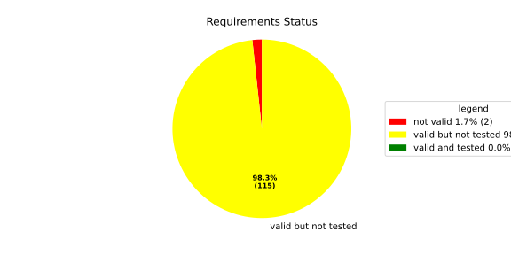
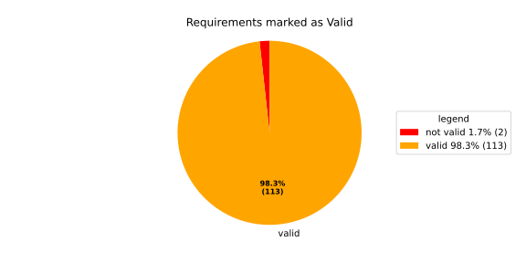
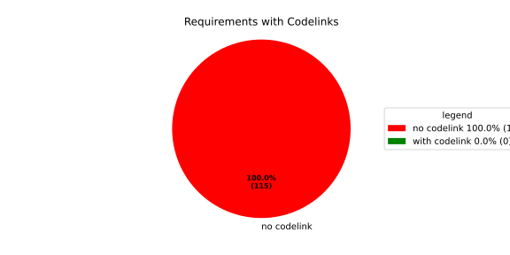

Verification Statistics#
Overview#

In Detail#


No needs passed the filters
Failed Tests
Hint: This table should be empty. Before a PR can be merged all tests have to be successful.
No needs passed the filters
Skipped / Disabled Tests
No needs passed the filters
All passed Tests#
No needs passed the filters
Details About Testcases#
No needs passed the filters
No needs passed the filters
Test Log Files#
tests-report/tests/integration/process_simple_rep_failure/process_simple_rep_failure/test.log
exec ${PAGER:-/usr/bin/less} "$0" || exit 1
Executing tests from //tests/integration/process_simple_rep_failure:process_simple_rep_failure
-----------------------------------------------------------------------------
============================= test session starts ==============================
platform linux -- Python 3.12.12, pytest-9.0.3, pluggy-1.5.0
rootdir: /home/runner/.bazel/sandbox/processwrapper-sandbox/1254/execroot/_main/bazel-out/k8-fastbuild/bin/tests/integration/process_simple_rep_failure/process_simple_rep_failure.runfiles/score_itf+
configfile: pytest.ini
collected 1 item
../score_itf+::test_recovery_action_simple_rep_failure
-------------------------------- live log setup --------------------------------
[2026-06-30 10:29:27.391] [INFO] [score.itf.plugins.docker] Executing custom image bootstrap command: tests/utils/environments/x86_64-linux/x86_64-linux.sh
[2026-06-30 10:29:27.640] [DEBUG] [docker.utils.config] Trying paths: ['/home/runner/.docker/config.json', '/home/runner/.dockercfg']
[2026-06-30 10:29:27.640] [DEBUG] [docker.utils.config] Found file at path: /home/runner/.docker/config.json
[2026-06-30 10:29:27.641] [DEBUG] [docker.auth] Found 'auths' section
[2026-06-30 10:29:27.641] [DEBUG] [docker.auth] Found entry (registry='https://index.docker.io/v1/', username='githubactions')
[2026-06-30 10:29:27.657] [DEBUG] [urllib3.connectionpool] http://localhost:None "GET /version HTTP/1.1" 200 823
[2026-06-30 10:29:27.696] [DEBUG] [urllib3.connectionpool] http://localhost:None "POST /v1.48/containers/create HTTP/1.1" 201 88
[2026-06-30 10:29:27.701] [DEBUG] [urllib3.connectionpool] http://localhost:None "GET /v1.48/containers/dedfd955231c0c0d97a3ed6ef51bd240e938b738c58046d1ef0e7355214a0a9f/json HTTP/1.1" 200 None
[2026-06-30 10:29:27.854] [DEBUG] [urllib3.connectionpool] http://localhost:None "POST /v1.48/containers/dedfd955231c0c0d97a3ed6ef51bd240e938b738c58046d1ef0e7355214a0a9f/start HTTP/1.1" 204 0
[2026-06-30 10:29:27.855] [DEBUG] [docker.utils.config] Trying paths: ['/home/runner/.docker/config.json', '/home/runner/.dockercfg']
[2026-06-30 10:29:27.855] [DEBUG] [docker.utils.config] Found file at path: /home/runner/.docker/config.json
[2026-06-30 10:29:27.856] [DEBUG] [docker.auth] Found 'auths' section
[2026-06-30 10:29:27.858] [DEBUG] [docker.auth] Found entry (registry='https://index.docker.io/v1/', username='githubactions')
[2026-06-30 10:29:27.874] [DEBUG] [urllib3.connectionpool] http://localhost:None "GET /version HTTP/1.1" 200 823
[2026-06-30 10:29:28.107] [INFO] [tests.utils.testing_utils.setup_test] Test case setup finished
-------------------------------- live log call ---------------------------------
[2026-06-30 10:29:28.254] [INFO] [launch_manager] 2026/06/30 10:29:28.5368254 4688107 000 ECU1 LM LM log debug verbose 1
[2026-06-30 10:29:28.255] [INFO] [launch_manager] Launch Manager Started !!!!
[2026-06-30 10:29:28.268] [INFO] [launch_manager] 2026/06/30 10:29:28.5368255 4688120 000 ECU1 LM LM log debug verbose 1
[2026-06-30 10:29:28.268] [INFO] [launch_manager] Loading LCM Configurations...
[2026-06-30 10:29:28.268] [INFO] [launch_manager] 2026/06/30 10:29:28.5368255 4688121 000 ECU1 LM LM log debug verbose 1
[2026-06-30 10:29:28.269] [INFO] [launch_manager] ECUCFG_ENV_VAR_ROOTFOLDER set successfully
[2026-06-30 10:29:28.269] [INFO] [launch_manager] 2026/06/30 10:29:28.5368255 4688123 000 ECU1 LM LM log debug verbose 5 FlatBufferParser::getModeGroupPgName: MainPG ( IdentifierHash: 18079021346025578134 )
[2026-06-30 10:29:28.269] [INFO] [launch_manager] 2026/06/30 10:29:28.5368256 4688124 000 ECU1 LM LM log debug verbose 5
[2026-06-30 10:29:28.269] [INFO] [launch_manager] FlatBufferParser::getModeGroupPgStateName: MainPG/Startup ( IdentifierHash: 10504605499600661529 )
[2026-06-30 10:29:28.269] [INFO] [launch_manager] 2026/06/30 10:29:28.5368256 4688126 000 ECU1 LM LM log debug verbose 5
[2026-06-30 10:29:28.269] [INFO] [launch_manager] FlatBufferParser::getModeGroupPgStateName: MainPG/run_target_app_does_report_krunning_in_time ( IdentifierHash: 11934981641920773349 )
[2026-06-30 10:29:28.269] [INFO] [launch_manager] 2026/06/30 10:29:28.5368256 4688127 000 ECU1 LM LM log debug verbose 5 FlatBufferParser::getModeGroupPgStateName: MainPG/run_target_app_does_not_report_krunning_in_time ( IdentifierHash: 7672161913816744053 )
[2026-06-30 10:29:28.269] [INFO] [launch_manager] 2026/06/30 10:29:28.5368256 4688128 000 ECU1 LM LM log debug verbose 5 FlatBufferParser::getModeGroupPgStateName: MainPG/Off ( IdentifierHash: 15281793077830264047 )
[2026-06-30 10:29:28.269] [INFO] [launch_manager] 2026/06/30 10:29:28.5368256 4688129 000 ECU1 LM LM log debug verbose 5 FlatBufferParser::getModeGroupPgStateName: MainPG/fallback_run_target ( IdentifierHash: 4059409696722237352 )
[2026-06-30 10:29:28.270] [INFO] [launch_manager] 2026/06/30 10:29:28.5368256 4688131 000 ECU1 LM LM log debug verbose 4
[2026-06-30 10:29:28.270] [INFO] [launch_manager] parseProcessConfigurations: Process index: 0 executable_path_: /tmp/tests/process_simple_rep_failure/control_client_mock
[2026-06-30 10:29:28.270] [INFO] [launch_manager] 2026/06/30 10:29:28.5368256 4688132 000 ECU1 LM LM log debug verbose 3
[2026-06-30 10:29:28.270] [INFO] [launch_manager] Process control_client_mock is Reporting execution state
[2026-06-30 10:29:28.270] [INFO] [launch_manager] 2026/06/30 10:29:28.5368256 4688133 000 ECU1 LM LM log debug verbose 1 Process is STATE_MANAGEMENT function Cluster Affiliation
[2026-06-30 10:29:28.270] [INFO] [launch_manager] 2026/06/30 10:29:28.5368257 4688134 000 ECU1 LM LM log debug verbose 3
[2026-06-30 10:29:28.274] [INFO] [launch_manager] Process control_client_mock is Self terminating
[2026-06-30 10:29:28.274] [INFO] [launch_manager] 2026/06/30 10:29:28.5368257 4688135 000 ECU1 LM LM log debug verbose 4
[2026-06-30 10:29:28.274] [INFO] [launch_manager] ParseProcessProcessGroup: id:::pg_name_: MainPG , pg_state_name_: MainPG/Startup
[2026-06-30 10:29:28.274] [INFO] [launch_manager] 2026/06/30 10:29:28.5368257 4688136 000 ECU1 LM LM log debug verbose 4
[2026-06-30 10:29:28.274] [INFO] [launch_manager] ParseProcessProcessGroup: id:::pg_name_: MainPG , pg_state_name_: MainPG/run_target_app_does_report_krunning_in_time
[2026-06-30 10:29:28.274] [INFO] [launch_manager] 2026/06/30 10:29:28.5368257 4688138 000 ECU1 LM LM log debug verbose 4
[2026-06-30 10:29:28.274] [INFO] [launch_manager] ParseProcessProcessGroup: id:::pg_name_: MainPG , pg_state_name_: MainPG/run_target_app_does_not_report_krunning_in_time
[2026-06-30 10:29:28.274] [INFO] [launch_manager] 2026/06/30 10:29:28.5368257 4688139 000 ECU1 LM LM log debug verbose 4 ParseProcessProcessGroup: id:::pg_name_: MainPG , pg_state_name_: MainPG/fallback_run_target
[2026-06-30 10:29:28.275] [INFO] [launch_manager] 2026/06/30 10:29:28.5368257 4688141 000 ECU1 LM LM log debug verbose 4
[2026-06-30 10:29:28.275] [INFO] [launch_manager] parseProcessConfigurations: Process index: 1 executable_path_: /tmp/tests/process_simple_rep_failure/process_simple_reporting
[2026-06-30 10:29:28.275] [INFO] [launch_manager] 2026/06/30 10:29:28.5368257 4688142 000 ECU1 LM LM log debug verbose 3
[2026-06-30 10:29:28.275] [INFO] [launch_manager] Process component_does_report_krunning_in_time is Reporting execution state
[2026-06-30 10:29:28.275] [INFO] [launch_manager] 2026/06/30 10:29:28.5368257 4688143 000 ECU1 LM LM log debug verbose 1 Process is NOT associated with any function Cluster Affiliation
[2026-06-30 10:29:28.275] [INFO] [launch_manager] 2026/06/30 10:29:28.5368258 4688144 000 ECU1 LM LM log debug verbose 3 Process component_does_report_krunning_in_time is Self terminating
[2026-06-30 10:29:28.275] [INFO] [launch_manager] 2026/06/30 10:29:28.5368258 4688145 000 ECU1 LM LM log debug verbose 4
[2026-06-30 10:29:28.275] [INFO] [launch_manager] ParseProcessProcessGroup: id:::pg_name_: MainPG , pg_state_name_: MainPG/run_target_app_does_report_krunning_in_time
[2026-06-30 10:29:28.275] [INFO] [launch_manager] 2026/06/30 10:29:28.5368258 4688146 000 ECU1 LM LM log debug verbose 4 parseProcessConfigurations: Process index: 2 executable_path_: /tmp/tests/process_simple_rep_failure/process_simple_reporting
[2026-06-30 10:29:28.275] [INFO] [launch_manager] 2026/06/30 10:29:28.5368258 4688147 000 ECU1 LM LM log debug verbose 3
[2026-06-30 10:29:28.276] [INFO] [launch_manager] Process component_does_not_report_krunning_in_time is Reporting execution state
[2026-06-30 10:29:28.276] [INFO] [launch_manager] 2026/06/30 10:29:28.5368258 4688148 000 ECU1 LM LM log debug verbose 1 Process is NOT associated with any function Cluster Affiliation
[2026-06-30 10:29:28.276] [INFO] [launch_manager] 2026/06/30 10:29:28.5368258 4688149 000 ECU1 LM LM log debug verbose 3
[2026-06-30 10:29:28.276] [INFO] [launch_manager] Process component_does_not_report_krunning_in_time is Self terminating
[2026-06-30 10:29:28.276] [INFO] [launch_manager] 2026/06/30 10:29:28.5368258 4688150 000 ECU1 LM LM log debug verbose 4
[2026-06-30 10:29:28.276] [INFO] [launch_manager] ParseProcessProcessGroup: id:::pg_name_: MainPG , pg_state_name_: MainPG/run_target_app_does_not_report_krunning_in_time
[2026-06-30 10:29:28.279] [INFO] [launch_manager] 2026/06/30 10:29:28.5368258 4688152 000 ECU1 LM LM log debug verbose 4
[2026-06-30 10:29:28.280] [INFO] [launch_manager] parseProcessConfigurations: Process index: 3 executable_path_: /tmp/tests/process_simple_rep_failure/verification_process
[2026-06-30 10:29:28.280] [INFO] [launch_manager] 2026/06/30 10:29:28.5368258 4688153 000 ECU1 LM LM log debug verbose 3
[2026-06-30 10:29:28.280] [INFO] [launch_manager] Process verification_component is NOT Reporting execution state
[2026-06-30 10:29:28.281] [INFO] [launch_manager] 2026/06/30 10:29:28.5368259 4688154 000 ECU1 LM LM log debug verbose 1
[2026-06-30 10:29:28.281] [INFO] [launch_manager] Process is NOT associated with any function Cluster Affiliation
[2026-06-30 10:29:28.281] [INFO] [launch_manager] 2026/06/30 10:29:28.5368259 4688155 000 ECU1 LM LM log debug verbose 3
[2026-06-30 10:29:28.281] [INFO] [launch_manager] Process verification_component is Self terminating
[2026-06-30 10:29:28.281] [INFO] [launch_manager] 2026/06/30 10:29:28.5368259 4688156 000 ECU1 LM LM log debug verbose 4 ParseProcessProcessGroup: id:::pg_name_: MainPG , pg_state_name_: MainPG/fallback_run_target
[2026-06-30 10:29:28.281] [INFO] [launch_manager] 2026/06/30 10:29:28.5368259 4688158 000 ECU1 LM LM log debug verbose 3
[2026-06-30 10:29:28.282] [INFO] [launch_manager] Loading SWCL Nr. 0 Succeeded
[2026-06-30 10:29:28.282] [INFO] [launch_manager] 2026/06/30 10:29:28.5368259 4688159 000 ECU1 LM LM log debug verbose 2 1 process group(s)
[2026-06-30 10:29:28.282] [INFO] [launch_manager] 2026/06/30 10:29:28.5368259 4688160 000 ECU1 LM LM log debug verbose 3 Creating graph with 4 nodes
[2026-06-30 10:29:28.282] [INFO] [launch_manager] 2026/06/30 10:29:28.5368259 4688160 000 ECU1 LM LM log debug verbose 1
[2026-06-30 10:29:28.283] [INFO] [launch_manager] Process groups initialized successfully
[2026-06-30 10:29:28.283] [INFO] [launch_manager] 2026/06/30 10:29:28.5368259 4688161 000 ECU1 LM LM log debug verbose 1
[2026-06-30 10:29:28.283] [INFO] [launch_manager] Process Group initialization done
[2026-06-30 10:29:28.283] [INFO] [launch_manager] 2026/06/30 10:29:28.5368259 4688163 000 ECU1 LM LM log debug verbose 3
[2026-06-30 10:29:28.283] [INFO] [launch_manager] Creating Safe Process Map with 4 entries
[2026-06-30 10:29:28.284] [INFO] [launch_manager] 2026/06/30 10:29:28.5368260 4688164 000 ECU1 LM LM log debug verbose 2
[2026-06-30 10:29:28.284] [INFO] [launch_manager] Creating job queue with capacity 1024
[2026-06-30 10:29:28.284] [INFO] [launch_manager] 2026/06/30 10:29:28.5368260 4688165 000 ECU1 LM LM log debug verbose 1
[2026-06-30 10:29:28.284] [INFO] [launch_manager] Creating worker threads...
[2026-06-30 10:29:28.284] [INFO] [launch_manager] 2026/06/30 10:29:28.5368261 4688181 000 ECU1 LM LM log debug verbose 7
[2026-06-30 10:29:28.284] [INFO] [launch_manager] Process group index 0 (with name MainPG ) has 4 processes
[2026-06-30 10:29:28.285] [INFO] [launch_manager] 2026/06/30 10:29:28.5368261 4688182 000 ECU1 LM LM log debug verbose 2
[2026-06-30 10:29:28.285] [INFO] [launch_manager] Creating process node with id: 0
[2026-06-30 10:29:28.285] [INFO] [launch_manager] 2026/06/30 10:29:28.5368261 4688184 000 ECU1 LM LM log debug verbose 5
[2026-06-30 10:29:28.285] [INFO] [launch_manager] Process 0 has 0 start dependencies
[2026-06-30 10:29:28.285] [INFO] [launch_manager] 2026/06/30 10:29:28.5368262 4688185 000 ECU1 LM LM log debug verbose 2
[2026-06-30 10:29:28.285] [INFO] [launch_manager] Creating process node with id: 1
[2026-06-30 10:29:28.285] [INFO] [launch_manager] 2026/06/30 10:29:28.5368262 4688186 000 ECU1 LM LM log debug verbose 5 Process 1 has 0 start dependencies
[2026-06-30 10:29:28.286] [INFO] [launch_manager] 2026/06/30 10:29:28.5368262 4688187 000 ECU1 LM LM log debug verbose 2
[2026-06-30 10:29:28.286] [INFO] [launch_manager] Creating process node with id: 2
[2026-06-30 10:29:28.286] [INFO] [launch_manager] 2026/06/30 10:29:28.5368262 4688189 000 ECU1 LM LM log debug verbose 5
[2026-06-30 10:29:28.286] [INFO] [launch_manager] Process 2 has 0 start dependencies
[2026-06-30 10:29:28.286] [INFO] [launch_manager] 2026/06/30 10:29:28.5368262 4688189 000 ECU1 LM LM log debug verbose 2
[2026-06-30 10:29:28.286] [INFO] [launch_manager] Creating process node with id: 3
[2026-06-30 10:29:28.286] [INFO] [launch_manager] 2026/06/30 10:29:28.5368262 4688191 000 ECU1 LM LM log debug verbose 5
[2026-06-30 10:29:28.286] [INFO] [launch_manager] Process 3 has 0 start dependencies
[2026-06-30 10:29:28.287] [INFO] [launch_manager] 2026/06/30 10:29:28.5368262 4688192 000 ECU1 LM LM log debug verbose 3
[2026-06-30 10:29:28.287] [INFO] [launch_manager] Created 4 process nodes
[2026-06-30 10:29:28.287] [INFO] [launch_manager] 2026/06/30 10:29:28.5368262 4688193 000 ECU1 LM LM log debug verbose 2 Creating successor lists for process group MainPG
[2026-06-30 10:29:28.287] [INFO] [launch_manager] 2026/06/30 10:29:28.5368262 4688193 000 ECU1 LM LM log debug verbose 1 Graphs initialized
[2026-06-30 10:29:28.287] [INFO] [launch_manager] 2026/06/30 10:29:28.5368263 4688196 000 ECU1 LM Fcty log info verbose 2 Factory for FlatCfg MachineConfig: Loading of HM Machine Configuration succeeded.
[2026-06-30 10:29:28.287] [INFO] [launch_manager] 2026/06/30 10:29:28.5368263 4688196 000 ECU1 LM Fcty log debug verbose 3 Factory for FlatCfg MachineConfig: Alive Supervision buffer size: 100
[2026-06-30 10:29:28.287] [INFO] [launch_manager] 2026/06/30 10:29:28.5368263 4688196 000 ECU1 LM Fcty log debug verbose 3 Factory for FlatCfg MachineConfig: Monitor buffer size: 512
[2026-06-30 10:29:28.287] [INFO] [launch_manager] 2026/06/30 10:29:28.5368263 4688197 000 ECU1 LM Fcty log debug verbose 4 Factory for FlatCfg MachineConfig: Periodicity: 50000000 ns
[2026-06-30 10:29:28.287] [INFO] [launch_manager] 2026/06/30 10:29:28.5368263 4688197 000 ECU1 LM Fcty log debug verbose 3 Factory for FlatCfg MachineConfig: Configured watchdogs: 0
[2026-06-30 10:29:28.288] [INFO] [launch_manager] 2026/06/30 10:29:28.5368263 4688197 000 ECU1 LM Fcty log warn verbose 2 Factory for FlatCfg MachineConfig: No watchdog configured
[2026-06-30 10:29:28.288] [INFO] [launch_manager] 2026/06/30 10:29:28.5368263 4688198 000 ECU1 LM Fcty log debug verbose 2 Software Cluster Handler starts constructing workers: MainCluster
[2026-06-30 10:29:28.288] [INFO] [launch_manager] 2026/06/30 10:29:28.5368263 4688198 000 ECU1 LM Fcty log debug verbose 3 Factory for FlatCfg AR24-11: Successfully created Process States: control_client_mock
[2026-06-30 10:29:28.288] [INFO] [launch_manager] 2026/06/30 10:29:28.5368263 4688198 000 ECU1 LM Fcty log debug verbose 3 Factory for FlatCfg AR24-11: Number of constructed Process States: 1
[2026-06-30 10:29:28.288] [INFO] [launch_manager] 2026/06/30 10:29:28.5368263 4688199 000 ECU1 LM Fcty log debug verbose 3 Factory for FlatCfg AR24-11: Successfully created Alive interface IPC with path: lifecycle_health_control_client_mock
[2026-06-30 10:29:28.288] [INFO] [launch_manager] 2026/06/30 10:29:28.5368263 4688200 000 ECU1 LM Fcty log debug verbose 3 Factory for FlatCfg AR24-11: Number of constructed Alive interface IPCs: 1
[2026-06-30 10:29:28.288] [INFO] [launch_manager] 2026/06/30 10:29:28.5368263 4688200 000 ECU1 LM Fcty log debug verbose 3 Factory for FlatCfg AR24-11: Successfully created Alive Interface: /lifecycle_health_control_client_mock
[2026-06-30 10:29:28.288] [INFO] [launch_manager] 2026/06/30 10:29:28.5368263 4688200 000 ECU1 LM Fcty log debug verbose 3 Factory for FlatCfg AR24-11: Number of constructed Alive interfaces: 1
[2026-06-30 10:29:28.288] [INFO] [launch_manager] 2026/06/30 10:29:28.5368263 4688201 000 ECU1 LM Fcty log debug verbose 3 Factory for FlatCfg AR24-11: Successfully created supervision checkpoint: control_client_mock_checkpoint
[2026-06-30 10:29:28.288] [INFO] [launch_manager] 2026/06/30 10:29:28.5368263 4688201 000 ECU1 LM Fcty log debug verbose 3 Factory for FlatCfg AR24-11: Number of constructed supervision checkpoints: 1
[2026-06-30 10:29:28.288] [INFO] [launch_manager] 2026/06/30 10:29:28.5368263 4688201 000 ECU1 LM Fcty log debug verbose 3 Factory for FlatCfg AR24-11: Successfully created alive supervision worker object: control_client_mock_alive_supervision
[2026-06-30 10:29:28.288] [INFO] [launch_manager] 2026/06/30 10:29:28.5368263 4688201 000 ECU1 LM Fcty log debug verbose 3 Factory for FlatCfg AR24-11: Number of constructed alive supervisions: 1
[2026-06-30 10:29:28.288] [INFO] [launch_manager] 2026/06/30 10:29:28.5368263 4688201 000 ECU1 LM Fcty log info verbose 2 Phm Daemon: The (configured) periodicity in [ns] is set to: 50000000
[2026-06-30 10:29:28.289] [INFO] [launch_manager] 2026/06/30 10:29:28.5368263 4688202 000 ECU1 LM Fcty log debug verbose 2 Phm Daemon: The accuracy of the monotonic system clock in [ns] is: 1
[2026-06-30 10:29:28.289] [INFO] [launch_manager] 2026/06/30 10:29:28.5368263 4688202 000 ECU1 LM Fcty log debug verbose 3 AliveMonitor: Initialization took 0 ms
[2026-06-30 10:29:28.289] [INFO] [launch_manager] 2026/06/30 10:29:28.5368263 4688203 000 ECU1 LM LM log info verbose 1 LCM started successfully
[2026-06-30 10:29:28.289] [INFO] [launch_manager] 2026/06/30 10:29:28.5368263 4688203 000 ECU1 LM LM log debug verbose 3 clock() at run(): 40.012000 ms
[2026-06-30 10:29:28.289] [INFO] [launch_manager] 2026/06/30 10:29:28.5368264 4688204 000 ECU1 LM LM log debug verbose 1 =============STARTING MAINPG STARTUP STATE============
[2026-06-30 10:29:28.289] [INFO] [launch_manager] 2026/06/30 10:29:28.5368264 4688204 000 ECU1 LM LM log debug verbose 9 Graph::setState changes from kSuccess to kInTransition for PG 0 ( MainPG )
[2026-06-30 10:29:28.289] [INFO] [launch_manager] 2026/06/30 10:29:28.5368264 4688205 000 ECU1 LM LM log debug verbose 2 Stop Dependencies: 0
[2026-06-30 10:29:28.289] [INFO] [launch_manager] 2026/06/30 10:29:28.5368264 4688205 000 ECU1 LM LM log debug verbose 2 Stop Dependencies: 0
[2026-06-30 10:29:28.289] [INFO] [launch_manager] 2026/06/30 10:29:28.5368264 4688205 000 ECU1 LM LM log debug verbose 2 Stop Dependencies: 0
[2026-06-30 10:29:28.289] [INFO] [launch_manager] 2026/06/30 10:29:28.5368264 4688205 000 ECU1 LM LM log debug verbose 2 Stop Dependencies: 0
[2026-06-30 10:29:28.289] [INFO] [launch_manager] 2026/06/30 10:29:28.5368264 4688205 000 ECU1 LM LM log debug verbose 2 Start Dependencies: 0
[2026-06-30 10:29:28.289] [INFO] [launch_manager] 2026/06/30 10:29:28.5368264 4688206 000 ECU1 LM LM log debug verbose 2 Start Dependencies: 0
[2026-06-30 10:29:28.290] [INFO] [launch_manager] 2026/06/30 10:29:28.5368264 4688206 000 ECU1 LM LM log debug verbose 2 Start Dependencies: 0
[2026-06-30 10:29:28.290] [INFO] [launch_manager] 2026/06/30 10:29:28.5368264 4688206 000 ECU1 LM LM log debug verbose 2 Start Dependencies: 0
[2026-06-30 10:29:28.290] [INFO] [launch_manager] 2026/06/30 10:29:28.5368264 4688208 000 ECU1 LM LM log debug verbose 6 Starting process 0 ( control_client_mock ) from executable /tmp/tests/process_simple_rep_failure/control_client_mock
[2026-06-30 10:29:28.290] [INFO] [launch_manager] 2026/06/30 10:29:28.5368264 4688208 000 ECU1 LM LM log debug verbose 3 Initialize the control client for control_client_mock process
[2026-06-30 10:29:28.290] [INFO] [launch_manager] 2026/06/30 10:29:28.5368264 4688209 000 ECU1 LM LM log debug verbose 1 ControlClientChannel initialized
[2026-06-30 10:29:28.290] [INFO] [launch_manager] 2026/06/30 10:29:28.5368264 4688214 000 ECU1 LM LM log debug verbose 4 startProcess pid 68 received for process: control_client_mock
[2026-06-30 10:29:28.290] [INFO] [launch_manager] 2026/06/30 10:29:28.5368265 4688214 000 ECU1 LM LM log debug verbose 1 ControlClientChannel obtained from sync.
[2026-06-30 10:29:28.290] [INFO] [launch_manager] [==========] Running 1 test from 1 test suite.
[2026-06-30 10:29:28.290] [INFO] [launch_manager] [----------] Global test environment set-up.
[2026-06-30 10:29:28.291] [INFO] [launch_manager] [----------] 1 test from RecoveryActionSimpleRepFailure
[2026-06-30 10:29:28.291] [INFO] [launch_manager] [ RUN ] RecoveryActionSimpleRepFailure.ControlClientMock
[2026-06-30 10:29:28.291] [INFO] [launch_manager] [ STEP ] Report running from ControlClientMock
[2026-06-30 10:29:28.291] [INFO] [launch_manager] [ END STEP ] Report running from ControlClientMock
[2026-06-30 10:29:28.291] [INFO] [launch_manager] [ STEP ] Activate RunTarget run_target_app_does_report_krunning_in_time
[2026-06-30 10:29:28.291] [INFO] [launch_manager] 2026/06/30 10:29:28.5368271 4688278 000 ECU1 LM LM log debug verbose 1
[2026-06-30 10:29:28.291] [INFO] [launch_manager] Request sent. Waiting for acknowledgment...
[2026-06-30 10:29:28.291] [INFO] [launch_manager] 2026/06/30 10:29:28.5368272 4688284 000 ECU1 LM LM log debug verbose 8
[2026-06-30 10:29:28.292] [INFO] [launch_manager] Got kRunning for pid 68 ( control_client_mock ) process 0 of group MainPG
[2026-06-30 10:29:28.292] [INFO] [launch_manager] 2026/06/30 10:29:28.5368272 4688285 000 ECU1 LM LM log debug verbose 7 startProcess for MainPG process 0 ( control_client_mock ) done
[2026-06-30 10:29:28.292] [INFO] [launch_manager] 2026/06/30 10:29:28.5368272 4688286 000 ECU1 LM LM log debug verbose 1 Control Client handler nudged
[2026-06-30 10:29:28.292] [INFO] [launch_manager] 2026/06/30 10:29:28.5368272 4688287 000 ECU1 LM LM log debug verbose 3
[2026-06-30 10:29:28.292] [INFO] [launch_manager] clock() at successful initial state transition: 41.380000 ms
[2026-06-30 10:29:28.292] [INFO] [launch_manager] 2026/06/30 10:29:28.5368272 4688288 000 ECU1 LM LM log debug verbose 9
[2026-06-30 10:29:28.292] [INFO] [launch_manager] Graph::setState changes from kInTransition to kSuccess for PG 0 ( MainPG )
[2026-06-30 10:29:28.293] [INFO] [launch_manager] 2026/06/30 10:29:28.5368272 4688290 000 ECU1 LM LM log info verbose 7
[2026-06-30 10:29:28.293] [INFO] [launch_manager] Completed the request for PG MainPG to State MainPG/Startup in 8 ms
[2026-06-30 10:29:28.293] [INFO] [launch_manager] 2026/06/30 10:29:28.5368272 4688291 000 ECU1 LM LM log debug verbose 1
[2026-06-30 10:29:28.293] [INFO] [launch_manager] Control Client handler nudged
[2026-06-30 10:29:28.293] [INFO] [launch_manager] 2026/06/30 10:29:28.5368272 4688292 000 ECU1 LM LM log debug verbose 8 ProcessGroupManager::ControlClientHandler: got request kSetStateRequest ( 16 ) re state MainPG/run_target_app_does_report_krunning_in_time of PG MainPG
[2026-06-30 10:29:28.293] [INFO] [launch_manager] 2026/06/30 10:29:28.5368272 4688293 000 ECU1 LM LM log debug verbose 6 Pending state for process group MainPG changed from to MainPG/run_target_app_does_report_krunning_in_time
[2026-06-30 10:29:28.293] [INFO] [launch_manager] 2026/06/30 10:29:28.5368272 4688293 000 ECU1 LM LM log debug verbose 1 Request acknowledged.
[2026-06-30 10:29:28.293] [INFO] [launch_manager] 2026/06/30 10:29:28.5368272 4688293 000 ECU1 LM LM log debug verbose 6 Pending state for process group MainPG changed from MainPG/run_target_app_does_report_krunning_in_time to
[2026-06-30 10:29:28.293] [INFO] [launch_manager] 2026/06/30 10:29:28.5368272 4688294 000 ECU1 LM LM log debug verbose 4 Start transition to MainPG/run_target_app_does_report_krunning_in_time for PG MainPG
[2026-06-30 10:29:28.293] [INFO] [launch_manager] 2026/06/30 10:29:28.5368272 4688294 000 ECU1 LM LM log debug verbose 9 Graph::setState changes from kSuccess to kInTransition for PG 0 ( MainPG )
[2026-06-30 10:29:28.294] [INFO] [launch_manager] 2026/06/30 10:29:28.5368273 4688294 000 ECU1 LM LM log debug verbose 2 Stop Dependencies: 0
[2026-06-30 10:29:28.294] [INFO] [launch_manager] 2026/06/30 10:29:28.5368273 4688294 000 ECU1 LM LM log debug verbose 2 Stop Dependencies: 0
[2026-06-30 10:29:28.294] [INFO] [launch_manager] 2026/06/30 10:29:28.5368273 4688294 000 ECU1 LM LM log debug verbose 2 Stop Dependencies: 0
[2026-06-30 10:29:28.294] [INFO] [launch_manager] 2026/06/30 10:29:28.5368273 4688295 000 ECU1 LM LM log debug verbose 2 Stop Dependencies: 0
[2026-06-30 10:29:28.294] [INFO] [launch_manager] 2026/06/30 10:29:28.5368273 4688295 000 ECU1 LM LM log debug verbose 2 Start Dependencies: 0
[2026-06-30 10:29:28.294] [INFO] [launch_manager] 2026/06/30 10:29:28.5368273 4688295 000 ECU1 LM LM log debug verbose 2 Start Dependencies: 0
[2026-06-30 10:29:28.294] [INFO] [launch_manager] 2026/06/30 10:29:28.5368273 4688295 000 ECU1 LM LM log debug verbose 2 Start Dependencies: 0
[2026-06-30 10:29:28.294] [INFO] [launch_manager] 2026/06/30 10:29:28.5368273 4688296 000 ECU1 LM LM log debug verbose 2 Start Dependencies: 0
[2026-06-30 10:29:28.294] [INFO] [launch_manager] 2026/06/30 10:29:28.5368273 4688296 000 ECU1 LM LM log debug verbose 1 Request acknowledged.
[2026-06-30 10:29:28.294] [INFO] [launch_manager] 2026/06/30 10:29:28.5368273 4688297 000 ECU1 LM LM log debug verbose 6 Starting process 1 ( component_does_report_krunning_in_time ) from executable /tmp/tests/process_simple_rep_failure/process_simple_reporting
[2026-06-30 10:29:28.294] [INFO] [launch_manager] 2026/06/30 10:29:28.5368273 4688303 000 ECU1 LM LM log debug verbose 4
[2026-06-30 10:29:28.294] [INFO] [launch_manager] startProcess pid 70 received for process: component_does_report_krunning_in_time
[2026-06-30 10:29:28.295] [INFO] [launch_manager] [==========] Running 1 test from 1 test suite.
[2026-06-30 10:29:28.296] [INFO] [launch_manager] [----------] Global test environment set-up.
[2026-06-30 10:29:28.296] [INFO] [launch_manager] [----------] 1 test from ProcessSimpleRepFailure
[2026-06-30 10:29:28.296] [INFO] [launch_manager] [ RUN ] ProcessSimpleRepFailure.ProcessSimpleReporting
[2026-06-30 10:29:28.296] [INFO] [launch_manager] [ STEP ] Check args
[2026-06-30 10:29:28.297] [INFO] [launch_manager] [ END STEP ] Check args
[2026-06-30 10:29:28.297] [INFO] [launch_manager] [ STEP ] Report running from ProcessSimpleReporting
[2026-06-30 10:29:28.314] [INFO] [launch_manager] 2026/06/30 10:29:28.5368313 4688704 000 ECU1 LM Sprv log debug verbose 6 Process with Id control_client_mock changed state PG MainPG/Startup PS 1
[2026-06-30 10:29:28.314] [INFO] [launch_manager] 2026/06/30 10:29:28.5368314 4688704 000 ECU1 LM Sprv log debug verbose 6 Process with Id control_client_mock changed state PG MainPG/Startup PS 2
[2026-06-30 10:29:28.314] [INFO] [launch_manager] 2026/06/30 10:29:28.5368314 4688705 000 ECU1 LM Sprv log debug verbose 6 Process with Id component_does_report_krunning_in_time changed state PG MainPG/run_target_app_does_report_krunning_in_time PS 1
[2026-06-30 10:29:28.314] [INFO] [launch_manager] 2026/06/30 10:29:28.5368314 4688705 000 ECU1 LM Sprv log info verbose 3 Alive Supervision ( control_client_mock_alive_supervision ) switched to OK.
[2026-06-30 10:29:28.340] [DEBUG] [tests.utils.testing_utils.run_until_file_deployed] Waiting for /tmp/tests/test_end
[2026-06-30 10:29:28.805] [INFO] [launch_manager] [ END STEP ] Report running from ProcessSimpleReporting
[2026-06-30 10:29:28.806] [INFO] [launch_manager] [ OK ] ProcessSimpleRepFailure.ProcessSimpleReporting (503 ms)
[2026-06-30 10:29:28.806] [INFO] [launch_manager] [----------] 1 test from ProcessSimpleRepFailure (503 ms total)
[2026-06-30 10:29:28.806] [INFO] [launch_manager] [----------] Global test environment tear-down
[2026-06-30 10:29:28.808] [INFO] [launch_manager] [==========] 1 test from 1 test suite ran. (524 ms total)
[2026-06-30 10:29:28.808] [INFO] [launch_manager] [ PASSED ] 1 test.
[2026-06-30 10:29:28.808] [INFO] [launch_manager] 2026/06/30 10:29:28.5368801 4693574 000 ECU1 LM LM log debug verbose 8
[2026-06-30 10:29:28.808] [INFO] [launch_manager] Got kRunning for pid 70 ( component_does_report_krunning_in_time ) process 1 of group MainPG
[2026-06-30 10:29:28.808] [INFO] [launch_manager] 2026/06/30 10:29:28.5368801 4693579 000 ECU1 LM LM log debug verbose 12
[2026-06-30 10:29:28.809] [INFO] [launch_manager] Child process 1 of MainPG pid 70 ( component_does_report_krunning_in_time ) for node True terminated with status 0
[2026-06-30 10:29:28.809] [INFO] [launch_manager] 2026/06/30 10:29:28.5368801 4693580 000 ECU1 LM LM log debug verbose 7
[2026-06-30 10:29:28.809] [INFO] [launch_manager] startProcess for MainPG process 1 ( component_does_report_krunning_in_time ) done
[2026-06-30 10:29:28.809] [INFO] [launch_manager] 2026/06/30 10:29:28.5368801 4693582 000 ECU1 LM LM log debug verbose 9
[2026-06-30 10:29:28.809] [INFO] [launch_manager] Graph::setState changes from kInTransition to kSuccess for PG 0 ( MainPG )
[2026-06-30 10:29:28.809] [INFO] [launch_manager] 2026/06/30 10:29:28.5368801 4693584 000 ECU1 LM LM log info verbose 7 Completed the request for PG MainPG to State MainPG/run_target_app_does_report_krunning_in_time in 529 ms
[2026-06-30 10:29:28.810] [INFO] [launch_manager] 2026/06/30 10:29:28.5368802 4693585 000 ECU1 LM LM log debug verbose 1 Control Client handler nudged
[2026-06-30 10:29:28.810] [INFO] [launch_manager] 2026/06/30 10:29:28.5368803 4693600 000 ECU1 LM LM log debug verbose 8 ProcessGroupManager::ControlClientHandler: Sending kSetStateSuccess ( 20 ) re state MainPG/run_target_app_does_report_krunning_in_time of PG MainPG
[2026-06-30 10:29:28.810] [INFO] [launch_manager] 2026/06/30 10:29:28.5368803 4693601 000 ECU1 LM LM log debug verbose 1 Response sent.
[2026-06-30 10:29:28.814] [INFO] [launch_manager] 2026/06/30 10:29:28.5368813 4693703 000 ECU1 LM Sprv log debug verbose 6 Process with Id component_does_report_krunning_in_time changed state PG MainPG/run_target_app_does_report_krunning_in_time PS 2
[2026-06-30 10:29:28.814] [INFO] [launch_manager] 2026/06/30 10:29:28.5368813 4693703 000 ECU1 LM Sprv log debug verbose 6 Process with Id component_does_report_krunning_in_time changed state PG MainPG/run_target_app_does_report_krunning_in_time PS 4
[2026-06-30 10:29:28.868] [INFO] [launch_manager] 2026/06/30 10:29:28.5368868 4694251 000 ECU1 LM LM log debug verbose 1
[2026-06-30 10:29:28.869] [INFO] [launch_manager] Response retrieved.
[2026-06-30 10:29:28.869] [INFO] [launch_manager] [ END STEP ] Activate RunTarget run_target_app_does_report_krunning_in_time
[2026-06-30 10:29:28.907] [DEBUG] [tests.utils.testing_utils.run_until_file_deployed] Waiting for /tmp/tests/test_end
[2026-06-30 10:29:29.464] [DEBUG] [tests.utils.testing_utils.run_until_file_deployed] Waiting for /tmp/tests/test_end
[2026-06-30 10:29:29.869] [INFO] [launch_manager] [ STEP ] Verify fallback run target has not been activated
[2026-06-30 10:29:29.870] [INFO] [launch_manager] [ END STEP ] Verify fallback run target has not been activated
[2026-06-30 10:29:29.871] [INFO] [launch_manager] [ STEP ] Activate RunTarget run_target_app_does_not_report_krunning_in_time
[2026-06-30 10:29:29.871] [INFO] [launch_manager] 2026/06/30 10:29:29.5369869 4704256 000 ECU1 LM LM log debug verbose 1 Request sent. Waiting for acknowledgment...
[2026-06-30 10:29:29.871] [INFO] [launch_manager] 2026/06/30 10:29:29.5369869 4704258 000 ECU1 LM LM log debug verbose 8 ProcessGroupManager::ControlClientHandler: got request kSetStateRequest ( 16 ) re state MainPG/run_target_app_does_not_report_krunning_in_time of PG MainPG
[2026-06-30 10:29:29.871] [INFO] [launch_manager] 2026/06/30 10:29:29.5369869 4704258 000 ECU1 LM LM log debug verbose 6 Pending state for process group MainPG changed from to MainPG/run_target_app_does_not_report_krunning_in_time
[2026-06-30 10:29:29.871] [INFO] [launch_manager] 2026/06/30 10:29:29.5369869 4704258 000 ECU1 LM LM log debug verbose 1 Request acknowledged.
[2026-06-30 10:29:29.871] [INFO] [launch_manager] 2026/06/30 10:29:29.5369869 4704258 000 ECU1 LM LM log debug verbose 6 Pending state for process group MainPG changed from MainPG/run_target_app_does_not_report_krunning_in_time to
[2026-06-30 10:29:29.871] [INFO] [launch_manager] 2026/06/30 10:29:29.5369869 4704259 000 ECU1 LM LM log debug verbose 4 Start transition to MainPG/run_target_app_does_not_report_krunning_in_time for PG MainPG
[2026-06-30 10:29:29.871] [INFO] [launch_manager] 2026/06/30 10:29:29.5369869 4704259 000 ECU1 LM LM log debug verbose 9 Graph::setState changes from kSuccess to kInTransition for PG 0 ( MainPG )
[2026-06-30 10:29:29.871] [INFO] [launch_manager] 2026/06/30 10:29:29.5369869 4704259 000 ECU1 LM LM log debug verbose 2 Stop Dependencies: 0
[2026-06-30 10:29:29.872] [INFO] [launch_manager] 2026/06/30 10:29:29.5369869 4704259 000 ECU1 LM LM log debug verbose 2 Stop Dependencies: 0
[2026-06-30 10:29:29.872] [INFO] [launch_manager] 2026/06/30 10:29:29.5369869 4704260 000 ECU1 LM LM log debug verbose 2 Stop Dependencies: 0
[2026-06-30 10:29:29.872] [INFO] [launch_manager] 2026/06/30 10:29:29.5369869 4704262 000 ECU1 LM LM log debug verbose 2 Stop Dependencies: 0
[2026-06-30 10:29:29.872] [INFO] [launch_manager] 2026/06/30 10:29:29.5369869 4704262 000 ECU1 LM LM log debug verbose 2 Start Dependencies: 0
[2026-06-30 10:29:29.872] [INFO] [launch_manager] 2026/06/30 10:29:29.5369869 4704262 000 ECU1 LM LM log debug verbose 2 Start Dependencies: 0
[2026-06-30 10:29:29.872] [INFO] [launch_manager] 2026/06/30 10:29:29.5369869 4704263 000 ECU1 LM LM log debug verbose 2 Start Dependencies: 0
[2026-06-30 10:29:29.872] [INFO] [launch_manager] 2026/06/30 10:29:29.5369869 4704263 000 ECU1 LM LM log debug verbose 2 Start Dependencies: 0
[2026-06-30 10:29:29.874] [INFO] [launch_manager] 2026/06/30 10:29:29.5369870 4704265 000 ECU1 LM LM log debug verbose 6 Starting process 2 ( component_does_not_report_krunning_in_time ) from executable /tmp/tests/process_simple_rep_failure/process_simple_reporting
[2026-06-30 10:29:29.874] [INFO] [launch_manager] 2026/06/30 10:29:29.5369870 4704267 000 ECU1 LM LM log debug verbose 1 Request acknowledged.
[2026-06-30 10:29:29.874] [INFO] [launch_manager] 2026/06/30 10:29:29.5369870 4704272 000 ECU1 LM LM log debug verbose 4
[2026-06-30 10:29:29.874] [INFO] [launch_manager] startProcess pid 90 received for process: component_does_not_report_krunning_in_time
[2026-06-30 10:29:29.874] [INFO] [launch_manager] [==========] Running 1 test from 1 test suite.
[2026-06-30 10:29:29.874] [INFO] [launch_manager] [----------] Global test environment set-up.
[2026-06-30 10:29:29.874] [INFO] [launch_manager] [----------] 1 test from ProcessSimpleRepFailure
[2026-06-30 10:29:29.874] [INFO] [launch_manager] [ RUN ] ProcessSimpleRepFailure.ProcessSimpleReporting
[2026-06-30 10:29:29.874] [INFO] [launch_manager] [ STEP ] Check args
[2026-06-30 10:29:29.875] [INFO] [launch_manager] [ END STEP ] Check args
[2026-06-30 10:29:29.875] [INFO] [launch_manager] [ STEP ] Report running from ProcessSimpleReporting
[2026-06-30 10:29:29.914] [INFO] [launch_manager] 2026/06/30 10:29:29.5369913 4704704 000 ECU1 LM Sprv log debug verbose 6 Process with Id component_does_not_report_krunning_in_time changed state PG MainPG/run_target_app_does_not_report_krunning_in_time PS 1
[2026-06-30 10:29:30.025] [DEBUG] [tests.utils.testing_utils.run_until_file_deployed] Waiting for /tmp/tests/test_end
[2026-06-30 10:29:30.602] [DEBUG] [tests.utils.testing_utils.run_until_file_deployed] Waiting for /tmp/tests/test_end
[2026-06-30 10:29:30.920] [INFO] [launch_manager] 2026/06/30 10:29:30.5370920 4714767 000 ECU1 LM LM log error verbose 1 Semaphore timedWait or post failed: Unable to wait or post on semaphores within the specified timeout.
[2026-06-30 10:29:30.920] [INFO] [launch_manager] 2026/06/30 10:29:30.5370920 4714768 000 ECU1 LM LM log warn verbose 5 Got kRunning timeout for process 2 ( component_does_not_report_krunning_in_time )
[2026-06-30 10:29:30.921] [INFO] [launch_manager] 2026/06/30 10:29:30.5370920 4714768 000 ECU1 LM LM log debug verbose 5 terminating process 2 ( component_does_not_report_krunning_in_time )
[2026-06-30 10:29:30.921] [INFO] [launch_manager] 2026/06/30 10:29:30.5370920 4714768 000 ECU1 LM LM log debug verbose 9 Requesting termination of process 2 of MainPG pid 90 ( component_does_not_report_krunning_in_time )
[2026-06-30 10:29:30.921] [INFO] [launch_manager] 2026/06/30 10:29:30.5370920 4714769 000 ECU1 LM LM log debug verbose 2 Request termination received for 90
[2026-06-30 10:29:30.964] [INFO] [launch_manager] 2026/06/30 10:29:30.5370964 4715204 000 ECU1 LM Sprv log debug verbose 6 Process with Id component_does_not_report_krunning_in_time changed state PG MainPG/run_target_app_does_not_report_krunning_in_time PS 3
[2026-06-30 10:29:31.161] [DEBUG] [tests.utils.testing_utils.run_until_file_deployed] Waiting for /tmp/tests/test_end
[2026-06-30 10:29:31.789] [DEBUG] [tests.utils.testing_utils.run_until_file_deployed] Waiting for /tmp/tests/test_end
[2026-06-30 10:29:31.983] [INFO] [launch_manager] 2026/06/30 10:29:31.5371982 4725393 000 ECU1 LM LM log warn verbose 5 Process 2 ( component_does_not_report_krunning_in_time ) did not respond to SIGTERM, sending SIGKILL
[2026-06-30 10:29:31.983] [INFO] [launch_manager] 2026/06/30 10:29:31.5371982 4725394 000 ECU1 LM LM log debug verbose 2 Forced termination received for pid 90
[2026-06-30 10:29:31.983] [INFO] [launch_manager] 2026/06/30 10:29:31.5371983 4725398 000 ECU1 LM LM log debug verbose 12 Child process 2 of MainPG pid 90 ( component_does_not_report_krunning_in_time ) for node True terminated with status 9
[2026-06-30 10:29:31.983] [INFO] [launch_manager] 2026/06/30 10:29:31.5371983 4725400 000 ECU1 LM LM log warn verbose 7
[2026-06-30 10:29:31.983] [INFO] [launch_manager] unexpected termination of process 2 pid 90 ( component_does_not_report_krunning_in_time )
[2026-06-30 10:29:31.984] [INFO] [launch_manager] 2026/06/30 10:29:31.5371983 4725403 000 ECU1 LM LM log debug verbose 9
[2026-06-30 10:29:31.984] [INFO] [launch_manager] Graph::setState changes from kInTransition to kAborting for PG 0 ( MainPG )
[2026-06-30 10:29:31.985] [INFO] [launch_manager] 2026/06/30 10:29:31.5371985 4725415 000 ECU1 LM LM log debug verbose 7 terminateProcess for MainPG process 2 ( component_does_not_report_krunning_in_time ) done
[2026-06-30 10:29:31.985] [INFO] [launch_manager] 2026/06/30 10:29:31.5371985 4725416 000 ECU1 LM LM log debug verbose 7 startProcess for MainPG process 2 ( component_does_not_report_krunning_in_time ) done
[2026-06-30 10:29:31.985] [INFO] [launch_manager] 2026/06/30 10:29:31.5371985 4725416 000 ECU1 LM LM log debug verbose 9 Graph::setState changes from kAborting to kUndefinedState for PG 0 ( MainPG )
[2026-06-30 10:29:31.985] [INFO] [launch_manager] 2026/06/30 10:29:31.5371985 4725416 000 ECU1 LM LM log debug verbose 1 Control Client handler nudged
[2026-06-30 10:29:31.986] [INFO] [launch_manager] 2026/06/30 10:29:31.5371986 4725428 000 ECU1 LM LM log debug verbose 8 ProcessGroupManager::ControlClientHandler: Sending kFailedUnexpectedTerminationOnEnter ( 23 ) re state MainPG/run_target_app_does_not_report_krunning_in_time of PG MainPG
[2026-06-30 10:29:31.986] [INFO] [launch_manager] 2026/06/30 10:29:31.5371986 4725428 000 ECU1 LM LM log debug verbose 1 Response sent.
[2026-06-30 10:29:31.987] [INFO] [launch_manager] 2026/06/30 10:29:31.5371986 4725428 000 ECU1 LM LM log warn verbose 3 Problem discovered in PG MainPG Activating Recovery state.
[2026-06-30 10:29:31.987] [INFO] [launch_manager] 2026/06/30 10:29:31.5371986 4725429 000 ECU1 LM LM log debug verbose 9 Graph::setState changes from kUndefinedState to kInTransition for PG 0 ( MainPG )
[2026-06-30 10:29:31.987] [INFO] [launch_manager] 2026/06/30 10:29:31.5371986 4725429 000 ECU1 LM LM log debug verbose 2 Stop Dependencies: 0
[2026-06-30 10:29:31.987] [INFO] [launch_manager] 2026/06/30 10:29:31.5371986 4725429 000 ECU1 LM LM log debug verbose 2 Stop Dependencies: 0
[2026-06-30 10:29:31.987] [INFO] [launch_manager] 2026/06/30 10:29:31.5371986 4725430 000 ECU1 LM LM log debug verbose 2 Stop Dependencies: 0
[2026-06-30 10:29:31.987] [INFO] [launch_manager] 2026/06/30 10:29:31.5371986 4725430 000 ECU1 LM LM log debug verbose 2 Stop Dependencies: 0
[2026-06-30 10:29:31.987] [INFO] [launch_manager] 2026/06/30 10:29:31.5371986 4725431 000 ECU1 LM LM log debug verbose 2 Start Dependencies: 0
[2026-06-30 10:29:31.987] [INFO] [launch_manager] 2026/06/30 10:29:31.5371986 4725431 000 ECU1 LM LM log debug verbose 2 Start Dependencies: 0
[2026-06-30 10:29:31.987] [INFO] [launch_manager] 2026/06/30 10:29:31.5371986 4725431 000 ECU1 LM LM log debug verbose 2 Start Dependencies: 0
[2026-06-30 10:29:31.988] [INFO] [launch_manager] 2026/06/30 10:29:31.5371986 4725431 000 ECU1 LM LM log debug verbose 2 Start Dependencies: 0
[2026-06-30 10:29:31.989] [INFO] [launch_manager] 2026/06/30 10:29:31.5371987 4725440 000 ECU1 LM LM log debug verbose 6 Starting process 3 ( verification_component ) from executable /tmp/tests/process_simple_rep_failure/verification_process
[2026-06-30 10:29:31.989] [INFO] [launch_manager] 2026/06/30 10:29:31.5371988 4725446 000 ECU1 LM LM log debug verbose 4 startProcess pid 114 received for process: verification_component
[2026-06-30 10:29:31.990] [INFO] [launch_manager] 2026/06/30 10:29:31.5371988 4725447 000 ECU1 LM LM log debug verbose 8 Considered kRunning for Non Reporting Process pid 114 ( verification_component ) process 3 of group MainPG
[2026-06-30 10:29:31.990] [INFO] [launch_manager] 2026/06/30 10:29:31.5371988 4725447 000 ECU1 LM LM log debug verbose 7 startProcess for MainPG process 3 ( verification_component ) done
[2026-06-30 10:29:31.990] [INFO] [launch_manager] 2026/06/30 10:29:31.5371988 4725447 000 ECU1 LM LM log debug verbose 9 Graph::setState changes from kInTransition to kSuccess for PG 0 ( MainPG )
[2026-06-30 10:29:31.990] [INFO] [launch_manager] 2026/06/30 10:29:31.5371988 4725448 000 ECU1 LM LM log info verbose 7 Completed the request for PG MainPG to State MainPG/fallback_run_target in 1 ms
[2026-06-30 10:29:31.990] [INFO] [launch_manager] 2026/06/30 10:29:31.5371988 4725448 000 ECU1 LM LM log debug verbose 1 Control Client handler nudged
[2026-06-30 10:29:31.990] [INFO] [launch_manager] 2026/06/30 10:29:31.5371988 4725453 000 ECU1 LM LM log debug verbose 8 ProcessGroupManager::ControlClientHandler: Sending kSetStateSuccess ( 20 ) re state MainPG/fallback_run_target of PG MainPG
[2026-06-30 10:29:31.991] [INFO] [launch_manager] 2026/06/30 10:29:31.5371988 4725454 000 ECU1 LM LM log debug verbose 1 Failed to send response: response is not empty.
[2026-06-30 10:29:31.991] [INFO] [launch_manager] 2026/06/30 10:29:31.5371989 4725454 000 ECU1 LM LM log debug verbose 1 Control Client handler nudged
[2026-06-30 10:29:31.991] [INFO] [launch_manager] 2026/06/30 10:29:31.5371989 4725454 000 ECU1 LM LM log debug verbose 8 ProcessGroupManager::ControlClientHandler: Sending kSetStateSuccess ( 20 ) re state MainPG/fallback_run_target of PG MainPG
[2026-06-30 10:29:31.994] [INFO] [launch_manager] 2026/06/30 10:29:31.5371989 4725454 000 ECU1 LM LM log debug verbose 1 Failed to send response: response is not empty.
[2026-06-30 10:29:31.994] [INFO] [launch_manager] 2026/06/30 10:29:31.5371989 4725455 000 ECU1 LM LM log debug verbose 1 Control Client handler nudged
[2026-06-30 10:29:31.995] [INFO] [launch_manager] 2026/06/30 10:29:31.5371989 4725455 000 ECU1 LM LM log debug verbose 8 ProcessGroupManager::ControlClientHandler: Sending kSetStateSuccess ( 20 ) re state MainPG/fallback_run_target of PG MainPG
[2026-06-30 10:29:31.995] [INFO] [launch_manager] 2026/06/30 10:29:31.5371989 4725455 000 ECU1 LM LM log debug verbose 1 Failed to send response: response is not empty.
[2026-06-30 10:29:31.995] [INFO] [launch_manager] 2026/06/30 10:29:31.5371989 4725456 000 ECU1 LM LM log debug verbose 1 Control Client handler nudged
[2026-06-30 10:29:31.995] [INFO] [launch_manager] 2026/06/30 10:29:31.5371989 4725456 000 ECU1 LM LM log debug verbose 8 ProcessGroupManager::ControlClientHandler: Sending kSetStateSuccess ( 20 ) re state MainPG/fallback_run_target of PG MainPG
[2026-06-30 10:29:31.995] [INFO] [launch_manager] 2026/06/30 10:29:31.5371989 4725456 000 ECU1 LM LM log debug verbose 1 Failed to send response: response is not empty.
[2026-06-30 10:29:31.995] [INFO] [launch_manager] 2026/06/30 10:29:31.5371989 4725457 000 ECU1 LM LM log debug verbose 1 Control Client handler nudged
[2026-06-30 10:29:31.995] [INFO] [launch_manager] 2026/06/30 10:29:31.5371989 4725457 000 ECU1 LM LM log debug verbose 8 ProcessGroupManager::ControlClientHandler: Sending kSetStateSuccess ( 20 ) re state MainPG/fallback_run_target of PG MainPG
[2026-06-30 10:29:31.995] [INFO] [launch_manager] 2026/06/30 10:29:31.5371989 4725457 000 ECU1 LM LM log debug verbose 1 Failed to send response: response is not empty.
[2026-06-30 10:29:31.995] [INFO] [launch_manager] 2026/06/30 10:29:31.5371989 4725457 000 ECU1 LM LM log debug verbose 1 Control Client handler nudged
[2026-06-30 10:29:31.995] [INFO] [launch_manager] 2026/06/30 10:29:31.5371989 4725458 000 ECU1 LM LM log debug verbose 8 ProcessGroupManager::ControlClientHandler: Sending kSetStateSuccess ( 20 ) re state MainPG/fallback_run_target of PG MainPG
[2026-06-30 10:29:31.995] [INFO] [launch_manager] 2026/06/30 10:29:31.5371989 4725458 000 ECU1 LM LM log debug verbose 1 Failed to send response: response is not empty.
[2026-06-30 10:29:31.996] [INFO] [launch_manager] 2026/06/30 10:29:31.5371989 4725458 000 ECU1 LM LM log debug verbose 1 Control Client handler nudged
[2026-06-30 10:29:31.996] [INFO] [launch_manager] 2026/06/30 10:29:31.5371989 4725458 000 ECU1 LM LM log debug verbose 8 ProcessGroupManager::ControlClientHandler: Sending kSetStateSuccess ( 20 ) re state MainPG/fallback_run_target of PG MainPG
[2026-06-30 10:29:31.996] [INFO] [launch_manager] 2026/06/30 10:29:31.5371989 4725458 000 ECU1 LM LM log debug verbose 1 Failed to send response: response is not empty.
[2026-06-30 10:29:31.996] [INFO] [launch_manager] 2026/06/30 10:29:31.5371989 4725459 000 ECU1 LM LM log debug verbose 1 Control Client handler nudged
[2026-06-30 10:29:31.996] [INFO] [launch_manager] 2026/06/30 10:29:31.5371989 4725459 000 ECU1 LM LM log debug verbose 8 ProcessGroupManager::ControlClientHandler: Sending kSetStateSuccess ( 20 ) re state MainPG/fallback_run_target of PG MainPG
[2026-06-30 10:29:31.996] [INFO] [launch_manager] 2026/06/30 10:29:31.5371989 4725459 000 ECU1 LM LM log debug verbose 1 Failed to send response: response is not empty.
[2026-06-30 10:29:31.996] [INFO] [launch_manager] 2026/06/30 10:29:31.5371989 4725459 000 ECU1 LM LM log debug verbose 1 Control Client handler nudged
[2026-06-30 10:29:31.999] [INFO] [launch_manager] 2026/06/30 10:29:31.5371989 4725462 000 ECU1 LM LM log debug verbose 8
[2026-06-30 10:29:32.000] [INFO] [launch_manager] ProcessGroupManager::ControlClientHandler: Sending kSetStateSuccess ( 20 ) re state MainPG/fallback_run_target of PG MainPG
[2026-06-30 10:29:32.000] [INFO] [launch_manager] 2026/06/30 10:29:31.5371990 4725465 000 ECU1 LM LM log debug verbose 1
[2026-06-30 10:29:32.000] [INFO] [launch_manager] Failed to send response: response is not empty.
[2026-06-30 10:29:32.000] [INFO] [launch_manager] 2026/06/30 10:29:31.5371990 4725468 000 ECU1 LM LM log debug verbose 1
[2026-06-30 10:29:32.000] [INFO] [launch_manager] Control Client handler nudged
[2026-06-30 10:29:32.000] [INFO] [launch_manager] 2026/06/30 10:29:31.5371990 4725471 000 ECU1 LM LM log debug verbose 8
[2026-06-30 10:29:32.000] [INFO] [launch_manager] ProcessGroupManager::ControlClientHandler: Sending kSetStateSuccess ( 20 ) re state MainPG/fallback_run_target of PG MainPG
[2026-06-30 10:29:32.001] [INFO] [launch_manager] 2026/06/30 10:29:31.5371990 4725473 000 ECU1 LM LM log debug verbose 1
[2026-06-30 10:29:32.001] [INFO] [launch_manager] Failed to send response: response is not empty.
[2026-06-30 10:29:32.001] [INFO] [launch_manager] 2026/06/30 10:29:31.5371991 4725476 000 ECU1 LM LM log debug verbose 1
[2026-06-30 10:29:32.001] [INFO] [launch_manager] Control Client handler nudged
[2026-06-30 10:29:32.001] [INFO] [launch_manager] 2026/06/30 10:29:31.5371991 4725479 000 ECU1 LM LM log debug verbose 8
[2026-06-30 10:29:32.001] [INFO] [launch_manager] ProcessGroupManager::ControlClientHandler: Sending kSetStateSuccess ( 20 ) re state MainPG/fallback_run_target of PG MainPG
[2026-06-30 10:29:32.001] [INFO] [launch_manager] 2026/06/30 10:29:31.5371991 4725481 000 ECU1 LM LM log debug verbose 12 Child process 3 of MainPG pid 114 ( verification_component ) for node True terminated with status 0
[2026-06-30 10:29:32.001] [INFO] [launch_manager] 2026/06/30 10:29:31.5371991 4725482 000 ECU1 LM LM log debug verbose 1 Failed to send response: response is not empty.
[2026-06-30 10:29:32.002] [INFO] [launch_manager] 2026/06/30 10:29:31.5371991 4725482 000 ECU1 LM LM log debug verbose 1 Control Client handler nudged
[2026-06-30 10:29:32.002] [INFO] [launch_manager] 2026/06/30 10:29:31.5371991 4725483 000 ECU1 LM LM log debug verbose 8 ProcessGroupManager::ControlClientHandler: Sending kSetStateSuccess ( 20 ) re state MainPG/fallback_run_target of PG MainPG
[2026-06-30 10:29:32.002] [INFO] [launch_manager] 2026/06/30 10:29:31.5371991 4725483 000 ECU1 LM LM log debug verbose 1 Failed to send response: response is not empty.
[2026-06-30 10:29:32.002] [INFO] [launch_manager] 2026/06/30 10:29:31.5371991 4725483 000 ECU1 LM LM log debug verbose 1 Control Client handler nudged
[2026-06-30 10:29:32.002] [INFO] [launch_manager] 2026/06/30 10:29:31.5371991 4725484 000 ECU1 LM LM log debug verbose 8 ProcessGroupManager::ControlClientHandler: Sending kSetStateSuccess ( 20 ) re state MainPG/fallback_run_target of PG MainPG
[2026-06-30 10:29:32.002] [INFO] [launch_manager] 2026/06/30 10:29:31.5371991 4725484 000 ECU1 LM LM log debug verbose 1 Failed to send response: response is not empty.
[2026-06-30 10:29:32.007] [INFO] [launch_manager] 2026/06/30 10:29:31.5371992 4725484 000 ECU1 LM LM log debug verbose 1 Control Client handler nudged
[2026-06-30 10:29:32.007] [INFO] [launch_manager] 2026/06/30 10:29:31.5371992 4725484 000 ECU1 LM LM log debug verbose 8 ProcessGroupManager::ControlClientHandler: Sending kSetStateSuccess ( 20 ) re state MainPG/fallback_run_target of PG MainPG
[2026-06-30 10:29:32.007] [INFO] [launch_manager] 2026/06/30 10:29:31.5371992 4725485 000 ECU1 LM LM log debug verbose 1 Failed to send response: response is not empty.
[2026-06-30 10:29:32.008] [INFO] [launch_manager] 2026/06/30 10:29:31.5371992 4725485 000 ECU1 LM LM log debug verbose 1 Control Client handler nudged
[2026-06-30 10:29:32.008] [INFO] [launch_manager] 2026/06/30 10:29:31.5371992 4725485 000 ECU1 LM LM log debug verbose 8 ProcessGroupManager::ControlClientHandler: Sending kSetStateSuccess ( 20 ) re state MainPG/fallback_run_target of PG MainPG
[2026-06-30 10:29:32.008] [INFO] [launch_manager] 2026/06/30 10:29:31.5371992 4725485 000 ECU1 LM LM log debug verbose 1 Failed to send response: response is not empty.
[2026-06-30 10:29:32.008] [INFO] [launch_manager] 2026/06/30 10:29:31.5371992 4725485 000 ECU1 LM LM log debug verbose 1 Control Client handler nudged
[2026-06-30 10:29:32.008] [INFO] [launch_manager] 2026/06/30 10:29:31.5371992 4725486 000 ECU1 LM LM log debug verbose 8 ProcessGroupManager::ControlClientHandler: Sending kSetStateSuccess ( 20 ) re state MainPG/fallback_run_target of PG MainPG
[2026-06-30 10:29:32.008] [INFO] [launch_manager] 2026/06/30 10:29:31.5371992 4725486 000 ECU1 LM LM log debug verbose 1 Failed to send response: response is not empty.
[2026-06-30 10:29:32.008] [INFO] [launch_manager] 2026/06/30 10:29:31.5371992 4725486 000 ECU1 LM LM log debug verbose 1 Control Client handler nudged
[2026-06-30 10:29:32.008] [INFO] [launch_manager] 2026/06/30 10:29:31.5371992 4725487 000 ECU1 LM LM log debug verbose 8 ProcessGroupManager::ControlClientHandler: Sending kSetStateSuccess ( 20 ) re state MainPG/fallback_run_target of PG MainPG
[2026-06-30 10:29:32.008] [INFO] [launch_manager] 2026/06/30 10:29:31.5371992 4725487 000 ECU1 LM LM log debug verbose 1 Failed to send response: response is not empty.
[2026-06-30 10:29:32.009] [INFO] [launch_manager] 2026/06/30 10:29:31.5371992 4725487 000 ECU1 LM LM log debug verbose 1 Control Client handler nudged
[2026-06-30 10:29:32.009] [INFO] [launch_manager] 2026/06/30 10:29:31.5371992 4725487 000 ECU1 LM LM log debug verbose 8 ProcessGroupManager::ControlClientHandler: Sending kSetStateSuccess ( 20 ) re state MainPG/fallback_run_target of PG MainPG
[2026-06-30 10:29:32.009] [INFO] [launch_manager] 2026/06/30 10:29:31.5371992 4725488 000 ECU1 LM LM log debug verbose 1 Failed to send response: response is not empty.
[2026-06-30 10:29:32.009] [INFO] [launch_manager] 2026/06/30 10:29:31.5371992 4725488 000 ECU1 LM LM log debug verbose 1 Control Client handler nudged
[2026-06-30 10:29:32.009] [INFO] [launch_manager] 2026/06/30 10:29:31.5371992 4725488 000 ECU1 LM LM log debug verbose 8 ProcessGroupManager::ControlClientHandler: Sending kSetStateSuccess ( 20 ) re state MainPG/fallback_run_target of PG MainPG
[2026-06-30 10:29:32.009] [INFO] [launch_manager] 2026/06/30 10:29:31.5371992 4725488 000 ECU1 LM LM log debug verbose 1 Failed to send response: response is not empty.
[2026-06-30 10:29:32.009] [INFO] [launch_manager] 2026/06/30 10:29:31.5371992 4725489 000 ECU1 LM LM log debug verbose 1 Control Client handler nudged
[2026-06-30 10:29:32.009] [INFO] [launch_manager] 2026/06/30 10:29:31.5371992 4725489 000 ECU1 LM LM log debug verbose 8 ProcessGroupManager::ControlClientHandler: Sending kSetStateSuccess ( 20 ) re state MainPG/fallback_run_target of PG MainPG
[2026-06-30 10:29:32.009] [INFO] [launch_manager] 2026/06/30 10:29:31.5371992 4725489 000 ECU1 LM LM log debug verbose 1 Failed to send response: response is not empty.
[2026-06-30 10:29:32.009] [INFO] [launch_manager] 2026/06/30 10:29:31.5371992 4725489 000 ECU1 LM LM log debug verbose 1 Control Client handler nudged
[2026-06-30 10:29:32.009] [INFO] [launch_manager] 2026/06/30 10:29:31.5371992 4725491 000 ECU1 LM LM log debug verbose 8
[2026-06-30 10:29:32.010] [INFO] [launch_manager] ProcessGroupManager::ControlClientHandler: Sending kSetStateSuccess ( 20 ) re state MainPG/fallback_run_target of PG MainPG
[2026-06-30 10:29:32.010] [INFO] [launch_manager] 2026/06/30 10:29:31.5371992 4725494 000 ECU1 LM LM log debug verbose 1 Failed to send response: response is not empty.
[2026-06-30 10:29:32.010] [INFO] [launch_manager] 2026/06/30 10:29:31.5371993 4725495 000 ECU1 LM LM log debug verbose 1
[2026-06-30 10:29:32.010] [INFO] [launch_manager] Control Client handler nudged
[2026-06-30 10:29:32.010] [INFO] [launch_manager] 2026/06/30 10:29:31.5371993 4725496 000 ECU1 LM LM log debug verbose 8
[2026-06-30 10:29:32.020] [INFO] [launch_manager] ProcessGroupManager::ControlClientHandler: Sending kSetStateSuccess ( 20 ) re state MainPG/fallback_run_target of PG MainPG
[2026-06-30 10:29:32.020] [INFO] [launch_manager] 2026/06/30 10:29:31.5371993 4725497 000 ECU1 LM LM log debug verbose 1 Failed to send response: response is not empty.
[2026-06-30 10:29:32.020] [INFO] [launch_manager] 2026/06/30 10:29:31.5371993 4725497 000 ECU1 LM LM log debug verbose 1 Control Client handler nudged
[2026-06-30 10:29:32.020] [INFO] [launch_manager] 2026/06/30 10:29:31.5371993 4725498 000 ECU1 LM LM log debug verbose 8 ProcessGroupManager::ControlClientHandler: Sending kSetStateSuccess ( 20 ) re state MainPG/fallback_run_target of PG MainPG
[2026-06-30 10:29:32.020] [INFO] [launch_manager] 2026/06/30 10:29:31.5371993 4725498 000 ECU1 LM LM log debug verbose 1 Failed to send response: response is not empty.
[2026-06-30 10:29:32.020] [INFO] [launch_manager] 2026/06/30 10:29:31.5371993 4725498 000 ECU1 LM LM log debug verbose 1 Control Client handler nudged
[2026-06-30 10:29:32.020] [INFO] [launch_manager] 2026/06/30 10:29:31.5371993 4725498 000 ECU1 LM LM log debug verbose 8 ProcessGroupManager::ControlClientHandler: Sending kSetStateSuccess ( 20 ) re state MainPG/fallback_run_target of PG MainPG
[2026-06-30 10:29:32.020] [INFO] [launch_manager] 2026/06/30 10:29:31.5371993 4725499 000 ECU1 LM LM log debug verbose 1 Failed to send response: response is not empty.
[2026-06-30 10:29:32.020] [INFO] [launch_manager] 2026/06/30 10:29:31.5371993 4725499 000 ECU1 LM LM log debug verbose 1 Control Client handler nudged
[2026-06-30 10:29:32.021] [INFO] [launch_manager] 2026/06/30 10:29:31.5371993 4725499 000 ECU1 LM LM log debug verbose 8 ProcessGroupManager::ControlClientHandler: Sending kSetStateSuccess ( 20 ) re state MainPG/fallback_run_target of PG MainPG
[2026-06-30 10:29:32.021] [INFO] [launch_manager] 2026/06/30 10:29:31.5371993 4725499 000 ECU1 LM LM log debug verbose 1 Failed to send response: response is not empty.
[2026-06-30 10:29:32.021] [INFO] [launch_manager] 2026/06/30 10:29:31.5371993 4725500 000 ECU1 LM LM log debug verbose 1 Control Client handler nudged
[2026-06-30 10:29:32.021] [INFO] [launch_manager] 2026/06/30 10:29:31.5371993 4725500 000 ECU1 LM LM log debug verbose 8 ProcessGroupManager::ControlClientHandler: Sending kSetStateSuccess ( 20 ) re state MainPG/fallback_run_target of PG MainPG
[2026-06-30 10:29:32.021] [INFO] [launch_manager] 2026/06/30 10:29:31.5371993 4725501 000 ECU1 LM LM log debug verbose 1 Failed to send response: response is not empty.
[2026-06-30 10:29:32.021] [INFO] [launch_manager] 2026/06/30 10:29:31.5371993 4725501 000 ECU1 LM LM log debug verbose 1 Control Client handler nudged
[2026-06-30 10:29:32.021] [INFO] [launch_manager] 2026/06/30 10:29:31.5371993 4725501 000 ECU1 LM LM log debug verbose 8 ProcessGroupManager::ControlClientHandler: Sending kSetStateSuccess ( 20 ) re state MainPG/fallback_run_target of PG MainPG
[2026-06-30 10:29:32.021] [INFO] [launch_manager] 2026/06/30 10:29:31.5371993 4725501 000 ECU1 LM LM log debug verbose 1 Failed to send response: response is not empty.
[2026-06-30 10:29:32.021] [INFO] [launch_manager] 2026/06/30 10:29:31.5371993 4725501 000 ECU1 LM LM log debug verbose 1 Control Client handler nudged
[2026-06-30 10:29:32.021] [INFO] [launch_manager] 2026/06/30 10:29:31.5371993 4725502 000 ECU1 LM LM log debug verbose 8 ProcessGroupManager::ControlClientHandler: Sending kSetStateSuccess ( 20 ) re state MainPG/fallback_run_target of PG MainPG
[2026-06-30 10:29:32.021] [INFO] [launch_manager] 2026/06/30 10:29:31.5371993 4725502 000 ECU1 LM LM log debug verbose 1 Failed to send response: response is not empty.
[2026-06-30 10:29:32.022] [INFO] [launch_manager] 2026/06/30 10:29:31.5371993 4725502 000 ECU1 LM LM log debug verbose 1 Control Client handler nudged
[2026-06-30 10:29:32.022] [INFO] [launch_manager] 2026/06/30 10:29:31.5371993 4725503 000 ECU1 LM LM log debug verbose 8 ProcessGroupManager::ControlClientHandler: Sending kSetStateSuccess ( 20 ) re state MainPG/fallback_run_target of PG MainPG
[2026-06-30 10:29:32.022] [INFO] [launch_manager] 2026/06/30 10:29:31.5371993 4725503 000 ECU1 LM LM log debug verbose 1 Failed to send response: response is not empty.
[2026-06-30 10:29:32.022] [INFO] [launch_manager] 2026/06/30 10:29:31.5371993 4725503 000 ECU1 LM LM log debug verbose 1 Control Client handler nudged
[2026-06-30 10:29:32.022] [INFO] [launch_manager] 2026/06/30 10:29:31.5371993 4725503 000 ECU1 LM LM log debug verbose 8 ProcessGroupManager::ControlClientHandler: Sending kSetStateSuccess ( 20 ) re state MainPG/fallback_run_target of PG MainPG
[2026-06-30 10:29:32.022] [INFO] [launch_manager] 2026/06/30 10:29:31.5371993 4725504 000 ECU1 LM LM log debug verbose 1 Failed to send response: response is not empty.
[2026-06-30 10:29:32.022] [INFO] [launch_manager] 2026/06/30 10:29:31.5371993 4725504 000 ECU1 LM LM log debug verbose 1 Control Client handler nudged
[2026-06-30 10:29:32.029] [INFO] [launch_manager] 2026/06/30 10:29:31.5371994 4725504 000 ECU1 LM LM log debug verbose 8 ProcessGroupManager::ControlClientHandler: Sending kSetStateSuccess ( 20 ) re state MainPG/fallback_run_target of PG MainPG
[2026-06-30 10:29:32.029] [INFO] [launch_manager] 2026/06/30 10:29:31.5371994 4725504 000 ECU1 LM LM log debug verbose 1 Failed to send response: response is not empty.
[2026-06-30 10:29:32.030] [INFO] [launch_manager] 2026/06/30 10:29:31.5371994 4725505 000 ECU1 LM LM log debug verbose 1 Control Client handler nudged
[2026-06-30 10:29:32.030] [INFO] [launch_manager] 2026/06/30 10:29:31.5371994 4725505 000 ECU1 LM LM log debug verbose 8 ProcessGroupManager::ControlClientHandler: Sending kSetStateSuccess ( 20 ) re state MainPG/fallback_run_target of PG MainPG
[2026-06-30 10:29:32.030] [INFO] [launch_manager] 2026/06/30 10:29:31.5371994 4725505 000 ECU1 LM LM log debug verbose 1 Failed to send response: response is not empty.
[2026-06-30 10:29:32.030] [INFO] [launch_manager] 2026/06/30 10:29:31.5371994 4725505 000 ECU1 LM LM log debug verbose 1 Control Client handler nudged
[2026-06-30 10:29:32.030] [INFO] [launch_manager] 2026/06/30 10:29:31.5371994 4725506 000 ECU1 LM LM log debug verbose 8 ProcessGroupManager::ControlClientHandler: Sending kSetStateSuccess ( 20 ) re state MainPG/fallback_run_target of PG MainPG
[2026-06-30 10:29:32.030] [INFO] [launch_manager] 2026/06/30 10:29:31.5371994 4725506 000 ECU1 LM LM log debug verbose 1 Failed to send response: response is not empty.
[2026-06-30 10:29:32.030] [INFO] [launch_manager] 2026/06/30 10:29:31.5371994 4725506 000 ECU1 LM LM log debug verbose 1 Control Client handler nudged
[2026-06-30 10:29:32.030] [INFO] [launch_manager] 2026/06/30 10:29:31.5371994 4725506 000 ECU1 LM LM log debug verbose 8 ProcessGroupManager::ControlClientHandler: Sending kSetStateSuccess ( 20 ) re state MainPG/fallback_run_target of PG MainPG
[2026-06-30 10:29:32.030] [INFO] [launch_manager] 2026/06/30 10:29:31.5371994 4725507 000 ECU1 LM LM log debug verbose 1 Failed to send response: response is not empty.
[2026-06-30 10:29:32.030] [INFO] [launch_manager] 2026/06/30 10:29:31.5371994 4725507 000 ECU1 LM LM log debug verbose 1 Control Client handler nudged
[2026-06-30 10:29:32.030] [INFO] [launch_manager] 2026/06/30 10:29:31.5371994 4725507 000 ECU1 LM LM log debug verbose 8 ProcessGroupManager::ControlClientHandler: Sending kSetStateSuccess ( 20 ) re state MainPG/fallback_run_target of PG MainPG
[2026-06-30 10:29:32.031] [INFO] [launch_manager] 2026/06/30 10:29:31.5371994 4725507 000 ECU1 LM LM log debug verbose 1 Failed to send response: response is not empty.
[2026-06-30 10:29:32.031] [INFO] [launch_manager] 2026/06/30 10:29:31.5371994 4725508 000 ECU1 LM LM log debug verbose 1 Control Client handler nudged
[2026-06-30 10:29:32.031] [INFO] [launch_manager] 2026/06/30 10:29:31.5371994 4725508 000 ECU1 LM LM log debug verbose 8 ProcessGroupManager::ControlClientHandler: Sending kSetStateSuccess ( 20 ) re state MainPG/fallback_run_target of PG MainPG
[2026-06-30 10:29:32.031] [INFO] [launch_manager] 2026/06/30 10:29:31.5371994 4725508 000 ECU1 LM LM log debug verbose 1 Failed to send response: response is not empty.
[2026-06-30 10:29:32.031] [INFO] [launch_manager] 2026/06/30 10:29:31.5371994 4725508 000 ECU1 LM LM log debug verbose 1 Control Client handler nudged
[2026-06-30 10:29:32.031] [INFO] [launch_manager] 2026/06/30 10:29:31.5371994 4725509 000 ECU1 LM LM log debug verbose 8 ProcessGroupManager::ControlClientHandler: Sending kSetStateSuccess ( 20 ) re state MainPG/fallback_run_target of PG MainPG
[2026-06-30 10:29:32.031] [INFO] [launch_manager] 2026/06/30 10:29:31.5371994 4725509 000 ECU1 LM LM log debug verbose 1 Failed to send response: response is not empty.
[2026-06-30 10:29:32.031] [INFO] [launch_manager] 2026/06/30 10:29:31.5371994 4725509 000 ECU1 LM LM log debug verbose 1 Control Client handler nudged
[2026-06-30 10:29:32.031] [INFO] [launch_manager] 2026/06/30 10:29:31.5371994 4725509 000 ECU1 LM LM log debug verbose 8
[2026-06-30 10:29:32.031] [INFO] [launch_manager] ProcessGroupManager::ControlClientHandler: Sending kSetStateSuccess ( 20 ) re state MainPG/fallback_run_target of PG MainPG
[2026-06-30 10:29:32.032] [INFO] [launch_manager] 2026/06/30 10:29:31.5371996 4725530 000 ECU1 LM LM log debug verbose 1 Failed to send response: response is not empty.
[2026-06-30 10:29:32.032] [INFO] [launch_manager] 2026/06/30 10:29:31.5371996 4725530 000 ECU1 LM LM log debug verbose 1 Control Client handler nudged
[2026-06-30 10:29:32.032] [INFO] [launch_manager] 2026/06/30 10:29:31.5371996 4725531 000 ECU1 LM LM log debug verbose 8 ProcessGroupManager::ControlClientHandler: Sending kSetStateSuccess ( 20 ) re state MainPG/fallback_run_target of PG MainPG
[2026-06-30 10:29:32.032] [INFO] [launch_manager] 2026/06/30 10:29:31.5371996 4725531 000 ECU1 LM LM log debug verbose 1 Failed to send response: response is not empty.
[2026-06-30 10:29:32.032] [INFO] [launch_manager] 2026/06/30 10:29:31.5371996 4725531 000 ECU1 LM LM log debug verbose 1 Control Client handler nudged
[2026-06-30 10:29:32.032] [INFO] [launch_manager] 2026/06/30 10:29:31.5371996 4725532 000 ECU1 LM LM log debug verbose 8 ProcessGroupManager::ControlClientHandler: Sending kSetStateSuccess ( 20 ) re state MainPG/fallback_run_target of PG MainPG
[2026-06-30 10:29:32.042] [INFO] [launch_manager] 2026/06/30 10:29:31.5371996 4725532 000 ECU1 LM LM log debug verbose 1 Failed to send response: response is not empty.
[2026-06-30 10:29:32.043] [INFO] [launch_manager] 2026/06/30 10:29:31.5371996 4725532 000 ECU1 LM LM log debug verbose 1 Control Client handler nudged
[2026-06-30 10:29:32.043] [INFO] [launch_manager] 2026/06/30 10:29:31.5371996 4725532 000 ECU1 LM LM log debug verbose 8 ProcessGroupManager::ControlClientHandler: Sending kSetStateSuccess ( 20 ) re state MainPG/fallback_run_target of PG MainPG
[2026-06-30 10:29:32.043] [INFO] [launch_manager] 2026/06/30 10:29:31.5371996 4725533 000 ECU1 LM LM log debug verbose 1 Failed to send response: response is not empty.
[2026-06-30 10:29:32.043] [INFO] [launch_manager] 2026/06/30 10:29:31.5371996 4725533 000 ECU1 LM LM log debug verbose 1 Control Client handler nudged
[2026-06-30 10:29:32.043] [INFO] [launch_manager] 2026/06/30 10:29:31.5371996 4725533 000 ECU1 LM LM log debug verbose 8 ProcessGroupManager::ControlClientHandler: Sending kSetStateSuccess ( 20 ) re state MainPG/fallback_run_target of PG MainPG
[2026-06-30 10:29:32.043] [INFO] [launch_manager] 2026/06/30 10:29:31.5371996 4725533 000 ECU1 LM LM log debug verbose 1 Failed to send response: response is not empty.
[2026-06-30 10:29:32.043] [INFO] [launch_manager] 2026/06/30 10:29:31.5371996 4725534 000 ECU1 LM LM log debug verbose 1 Control Client handler nudged
[2026-06-30 10:29:32.043] [INFO] [launch_manager] 2026/06/30 10:29:31.5371997 4725534 000 ECU1 LM LM log debug verbose 8 ProcessGroupManager::ControlClientHandler: Sending kSetStateSuccess ( 20 ) re state MainPG/fallback_run_target of PG MainPG
[2026-06-30 10:29:32.043] [INFO] [launch_manager] 2026/06/30 10:29:31.5371997 4725534 000 ECU1 LM LM log debug verbose 1 Failed to send response: response is not empty.
[2026-06-30 10:29:32.043] [INFO] [launch_manager] 2026/06/30 10:29:31.5371997 4725534 000 ECU1 LM LM log debug verbose 1 Control Client handler nudged
[2026-06-30 10:29:32.044] [INFO] [launch_manager] 2026/06/30 10:29:31.5371997 4725535 000 ECU1 LM LM log debug verbose 8 ProcessGroupManager::ControlClientHandler: Sending kSetStateSuccess ( 20 ) re state MainPG/fallback_run_target of PG MainPG
[2026-06-30 10:29:32.044] [INFO] [launch_manager] 2026/06/30 10:29:31.5371997 4725535 000 ECU1 LM LM log debug verbose 1 Failed to send response: response is not empty.
[2026-06-30 10:29:32.044] [INFO] [launch_manager] 2026/06/30 10:29:31.5371997 4725535 000 ECU1 LM LM log debug verbose 1 Control Client handler nudged
[2026-06-30 10:29:32.044] [INFO] [launch_manager] 2026/06/30 10:29:31.5371997 4725535 000 ECU1 LM LM log debug verbose 8 ProcessGroupManager::ControlClientHandler: Sending kSetStateSuccess ( 20 ) re state MainPG/fallback_run_target of PG MainPG
[2026-06-30 10:29:32.044] [INFO] [launch_manager] 2026/06/30 10:29:31.5371997 4725536 000 ECU1 LM LM log debug verbose 1 Failed to send response: response is not empty.
[2026-06-30 10:29:32.044] [INFO] [launch_manager] 2026/06/30 10:29:31.5371997 4725536 000 ECU1 LM LM log debug verbose 1 Control Client handler nudged
[2026-06-30 10:29:32.044] [INFO] [launch_manager] 2026/06/30 10:29:31.5371997 4725536 000 ECU1 LM LM log debug verbose 8 ProcessGroupManager::ControlClientHandler: Sending kSetStateSuccess ( 20 ) re state MainPG/fallback_run_target of PG MainPG
[2026-06-30 10:29:32.044] [INFO] [launch_manager] 2026/06/30 10:29:31.5371997 4725536 000 ECU1 LM LM log debug verbose 1 Failed to send response: response is not empty.
[2026-06-30 10:29:32.044] [INFO] [launch_manager] 2026/06/30 10:29:31.5371997 4725537 000 ECU1 LM LM log debug verbose 1 Control Client handler nudged
[2026-06-30 10:29:32.044] [INFO] [launch_manager] 2026/06/30 10:29:31.5371997 4725537 000 ECU1 LM LM log debug verbose 8 ProcessGroupManager::ControlClientHandler: Sending kSetStateSuccess ( 20 ) re state MainPG/fallback_run_target of PG MainPG
[2026-06-30 10:29:32.044] [INFO] [launch_manager] 2026/06/30 10:29:31.5371997 4725537 000 ECU1 LM LM log debug verbose 1 Failed to send response: response is not empty.
[2026-06-30 10:29:32.044] [INFO] [launch_manager] 2026/06/30 10:29:31.5371997 4725537 000 ECU1 LM LM log debug verbose 1 Control Client handler nudged
[2026-06-30 10:29:32.045] [INFO] [launch_manager] 2026/06/30 10:29:31.5371997 4725538 000 ECU1 LM LM log debug verbose 8 ProcessGroupManager::ControlClientHandler: Sending kSetStateSuccess ( 20 ) re state MainPG/fallback_run_target of PG MainPG
[2026-06-30 10:29:32.045] [INFO] [launch_manager] 2026/06/30 10:29:31.5371997 4725538 000 ECU1 LM LM log debug verbose 1 Failed to send response: response is not empty.
[2026-06-30 10:29:32.045] [INFO] [launch_manager] 2026/06/30 10:29:31.5371997 4725538 000 ECU1 LM LM log debug verbose 1 Control Client handler nudged
[2026-06-30 10:29:32.045] [INFO] [launch_manager] 2026/06/30 10:29:31.5371997 4725539 000 ECU1 LM LM log debug verbose 8 ProcessGroupManager::ControlClientHandler: Sending kSetStateSuccess ( 20 ) re state MainPG/fallback_run_target of PG MainPG
[2026-06-30 10:29:32.045] [INFO] [launch_manager] 2026/06/30 10:29:31.5371997 4725539 000 ECU1 LM LM log debug verbose 1 Failed to send response: response is not empty.
[2026-06-30 10:29:32.045] [INFO] [launch_manager] 2026/06/30 10:29:31.5371997 4725539 000 ECU1 LM LM log debug verbose 1 Control Client handler nudged
[2026-06-30 10:29:32.047] [INFO] [launch_manager] 2026/06/30 10:29:31.5371997 4725539 000 ECU1 LM LM log debug verbose 8 ProcessGroupManager::ControlClientHandler: Sending kSetStateSuccess ( 20 ) re state MainPG/fallback_run_target of PG MainPG
[2026-06-30 10:29:32.047] [INFO] [launch_manager] 2026/06/30 10:29:31.5371997 4725540 000 ECU1 LM LM log debug verbose 1 Failed to send response: response is not empty.
[2026-06-30 10:29:32.048] [INFO] [launch_manager] 2026/06/30 10:29:31.5371997 4725540 000 ECU1 LM LM log debug verbose 1 Control Client handler nudged
[2026-06-30 10:29:32.048] [INFO] [launch_manager] 2026/06/30 10:29:31.5371997 4725540 000 ECU1 LM LM log debug verbose 8 ProcessGroupManager::ControlClientHandler: Sending kSetStateSuccess ( 20 ) re state MainPG/fallback_run_target of PG MainPG
[2026-06-30 10:29:32.048] [INFO] [launch_manager] 2026/06/30 10:29:31.5371997 4725541 000 ECU1 LM LM log debug verbose 1 Failed to send response: response is not empty.
[2026-06-30 10:29:32.048] [INFO] [launch_manager] 2026/06/30 10:29:31.5371997 4725541 000 ECU1 LM LM log debug verbose 1 Control Client handler nudged
[2026-06-30 10:29:32.048] [INFO] [launch_manager] 2026/06/30 10:29:31.5371997 4725541 000 ECU1 LM LM log debug verbose 8 ProcessGroupManager::ControlClientHandler: Sending kSetStateSuccess ( 20 ) re state MainPG/fallback_run_target of PG MainPG
[2026-06-30 10:29:32.048] [INFO] [launch_manager] 2026/06/30 10:29:31.5371997 4725541 000 ECU1 LM LM log debug verbose 1 Failed to send response: response is not empty.
[2026-06-30 10:29:32.048] [INFO] [launch_manager] 2026/06/30 10:29:31.5371997 4725542 000 ECU1 LM LM log debug verbose 1 Control Client handler nudged
[2026-06-30 10:29:32.048] [INFO] [launch_manager] 2026/06/30 10:29:31.5371997 4725542 000 ECU1 LM LM log debug verbose 8 ProcessGroupManager::ControlClientHandler: Sending kSetStateSuccess ( 20 ) re state MainPG/fallback_run_target of PG MainPG
[2026-06-30 10:29:32.048] [INFO] [launch_manager] 2026/06/30 10:29:31.5371997 4725542 000 ECU1 LM LM log debug verbose 1 Failed to send response: response is not empty.
[2026-06-30 10:29:32.048] [INFO] [launch_manager] 2026/06/30 10:29:31.5371997 4725542 000 ECU1 LM LM log debug verbose 1 Control Client handler nudged
[2026-06-30 10:29:32.049] [INFO] [launch_manager] 2026/06/30 10:29:31.5371997 4725543 000 ECU1 LM LM log debug verbose 8 ProcessGroupManager::ControlClientHandler: Sending kSetStateSuccess ( 20 ) re state MainPG/fallback_run_target of PG MainPG
[2026-06-30 10:29:32.049] [INFO] [launch_manager] 2026/06/30 10:29:31.5371997 4725543 000 ECU1 LM LM log debug verbose 1 Failed to send response: response is not empty.
[2026-06-30 10:29:32.049] [INFO] [launch_manager] 2026/06/30 10:29:31.5371997 4725543 000 ECU1 LM LM log debug verbose 1 Control Client handler nudged
[2026-06-30 10:29:32.049] [INFO] [launch_manager] 2026/06/30 10:29:31.5371997 4725543 000 ECU1 LM LM log debug verbose 8 ProcessGroupManager::ControlClientHandler: Sending kSetStateSuccess ( 20 ) re state MainPG/fallback_run_target of PG MainPG
[2026-06-30 10:29:32.049] [INFO] [launch_manager] 2026/06/30 10:29:31.5371997 4725544 000 ECU1 LM LM log debug verbose 1 Failed to send response: response is not empty.
[2026-06-30 10:29:32.049] [INFO] [launch_manager] 2026/06/30 10:29:31.5371997 4725544 000 ECU1 LM LM log debug verbose 1 Control Client handler nudged
[2026-06-30 10:29:32.049] [INFO] [launch_manager] 2026/06/30 10:29:31.5371998 4725544 000 ECU1 LM LM log debug verbose 8 ProcessGroupManager::ControlClientHandler: Sending kSetStateSuccess ( 20 ) re state MainPG/fallback_run_target of PG MainPG
[2026-06-30 10:29:32.049] [INFO] [launch_manager] 2026/06/30 10:29:31.5371998 4725544 000 ECU1 LM LM log debug verbose 1 Failed to send response: response is not empty.
[2026-06-30 10:29:32.049] [INFO] [launch_manager] 2026/06/30 10:29:31.5371998 4725545 000 ECU1 LM LM log debug verbose 1 Control Client handler nudged
[2026-06-30 10:29:32.049] [INFO] [launch_manager] 2026/06/30 10:29:31.5371998 4725545 000 ECU1 LM LM log debug verbose 8 ProcessGroupManager::ControlClientHandler: Sending kSetStateSuccess ( 20 ) re state MainPG/fallback_run_target of PG MainPG
[2026-06-30 10:29:32.049] [INFO] [launch_manager] 2026/06/30 10:29:31.5371998 4725545 000 ECU1 LM LM log debug verbose 1 Failed to send response: response is not empty.
[2026-06-30 10:29:32.049] [INFO] [launch_manager] 2026/06/30 10:29:31.5371998 4725545 000 ECU1 LM LM log debug verbose 1 Control Client handler nudged
[2026-06-30 10:29:32.050] [INFO] [launch_manager] 2026/06/30 10:29:31.5371998 4725546 000 ECU1 LM LM log debug verbose 8 ProcessGroupManager::ControlClientHandler: Sending kSetStateSuccess ( 20 ) re state MainPG/fallback_run_target of PG MainPG
[2026-06-30 10:29:32.050] [INFO] [launch_manager] 2026/06/30 10:29:31.5371998 4725546 000 ECU1 LM LM log debug verbose 1 Failed to send response: response is not empty.
[2026-06-30 10:29:32.050] [INFO] [launch_manager] 2026/06/30 10:29:31.5371998 4725546 000 ECU1 LM LM log debug verbose 1 Control Client handler nudged
[2026-06-30 10:29:32.050] [INFO] [launch_manager] 2026/06/30 10:29:31.5371998 4725547 000 ECU1 LM LM log debug verbose 8 ProcessGroupManager::ControlClientHandler: Sending kSetStateSuccess ( 20 ) re state MainPG/fallback_run_target of PG MainPG
[2026-06-30 10:29:32.050] [INFO] [launch_manager] 2026/06/30 10:29:31.5371998 4725547 000 ECU1 LM LM log debug verbose 1 Failed to send response: response is not empty.
[2026-06-30 10:29:32.050] [INFO] [launch_manager] 2026/06/30 10:29:31.5371998 4725547 000 ECU1 LM LM log debug verbose 1 Control Client handler nudged
[2026-06-30 10:29:32.050] [INFO] [launch_manager] 2026/06/30 10:29:31.5371998 4725547 000 ECU1 LM LM log debug verbose 8 ProcessGroupManager::ControlClientHandler: Sending kSetStateSuccess ( 20 ) re state MainPG/fallback_run_target of PG MainPG
[2026-06-30 10:29:32.050] [INFO] [launch_manager] 2026/06/30 10:29:31.5371998 4725547 000 ECU1 LM LM log debug verbose 1 Failed to send response: response is not empty.
[2026-06-30 10:29:32.050] [INFO] [launch_manager] 2026/06/30 10:29:31.5371998 4725548 000 ECU1 LM LM log debug verbose 1 Control Client handler nudged
[2026-06-30 10:29:32.051] [INFO] [launch_manager] 2026/06/30 10:29:31.5371998 4725548 000 ECU1 LM LM log debug verbose 8 ProcessGroupManager::ControlClientHandler: Sending kSetStateSuccess ( 20 ) re state MainPG/fallback_run_target of PG MainPG
[2026-06-30 10:29:32.051] [INFO] [launch_manager] 2026/06/30 10:29:31.5371998 4725548 000 ECU1 LM LM log debug verbose 1 Failed to send response: response is not empty.
[2026-06-30 10:29:32.051] [INFO] [launch_manager] 2026/06/30 10:29:31.5371998 4725548 000 ECU1 LM LM log debug verbose 1 Control Client handler nudged
[2026-06-30 10:29:32.051] [INFO] [launch_manager] 2026/06/30 10:29:31.5371998 4725549 000 ECU1 LM LM log debug verbose 8 ProcessGroupManager::ControlClientHandler: Sending kSetStateSuccess ( 20 ) re state MainPG/fallback_run_target of PG MainPG
[2026-06-30 10:29:32.051] [INFO] [launch_manager] 2026/06/30 10:29:31.5371998 4725549 000 ECU1 LM LM log debug verbose 1 Failed to send response: response is not empty.
[2026-06-30 10:29:32.051] [INFO] [launch_manager] 2026/06/30 10:29:31.5371998 4725549 000 ECU1 LM LM log debug verbose 1 Control Client handler nudged
[2026-06-30 10:29:32.051] [INFO] [launch_manager] 2026/06/30 10:29:31.5371998 4725550 000 ECU1 LM LM log debug verbose 8 ProcessGroupManager::ControlClientHandler: Sending kSetStateSuccess ( 20 ) re state MainPG/fallback_run_target of PG MainPG
[2026-06-30 10:29:32.052] [INFO] [launch_manager] 2026/06/30 10:29:31.5371998 4725550 000 ECU1 LM LM log debug verbose 1 Failed to send response: response is not empty.
[2026-06-30 10:29:32.052] [INFO] [launch_manager] 2026/06/30 10:29:31.5371998 4725550 000 ECU1 LM LM log debug verbose 1 Control Client handler nudged
[2026-06-30 10:29:32.052] [INFO] [launch_manager] 2026/06/30 10:29:31.5371998 4725551 000 ECU1 LM LM log debug verbose 8 ProcessGroupManager::ControlClientHandler: Sending kSetStateSuccess ( 20 ) re state MainPG/fallback_run_target of PG MainPG
[2026-06-30 10:29:32.052] [INFO] [launch_manager] 2026/06/30 10:29:31.5371998 4725551 000 ECU1 LM LM log debug verbose 1 Failed to send response: response is not empty.
[2026-06-30 10:29:32.052] [INFO] [launch_manager] 2026/06/30 10:29:31.5371998 4725551 000 ECU1 LM LM log debug verbose 1 Control Client handler nudged
[2026-06-30 10:29:32.052] [INFO] [launch_manager] 2026/06/30 10:29:31.5371998 4725551 000 ECU1 LM LM log debug verbose 8 ProcessGroupManager::ControlClientHandler: Sending kSetStateSuccess ( 20 ) re state MainPG/fallback_run_target of PG MainPG
[2026-06-30 10:29:32.053] [INFO] [launch_manager] 2026/06/30 10:29:31.5371998 4725552 000 ECU1 LM LM log debug verbose 1 Failed to send response: response is not empty.
[2026-06-30 10:29:32.053] [INFO] [launch_manager] 2026/06/30 10:29:31.5371998 4725552 000 ECU1 LM LM log debug verbose 1 Control Client handler nudged
[2026-06-30 10:29:32.053] [INFO] [launch_manager] 2026/06/30 10:29:31.5371998 4725552 000 ECU1 LM LM log debug verbose 8 ProcessGroupManager::ControlClientHandler: Sending kSetStateSuccess ( 20 ) re state MainPG/fallback_run_target of PG MainPG
[2026-06-30 10:29:32.053] [INFO] [launch_manager] 2026/06/30 10:29:31.5371998 4725552 000 ECU1 LM LM log debug verbose 1 Failed to send response: response is not empty.
[2026-06-30 10:29:32.053] [INFO] [launch_manager] 2026/06/30 10:29:31.5371998 4725553 000 ECU1 LM LM log debug verbose 1 Control Client handler nudged
[2026-06-30 10:29:32.053] [INFO] [launch_manager] 2026/06/30 10:29:31.5371998 4725553 000 ECU1 LM LM log debug verbose 8 ProcessGroupManager::ControlClientHandler: Sending kSetStateSuccess ( 20 ) re state MainPG/fallback_run_target of PG MainPG
[2026-06-30 10:29:32.053] [INFO] [launch_manager] 2026/06/30 10:29:31.5371998 4725553 000 ECU1 LM LM log debug verbose 1 Failed to send response: response is not empty.
[2026-06-30 10:29:32.053] [INFO] [launch_manager] 2026/06/30 10:29:31.5371998 4725553 000 ECU1 LM LM log debug verbose 1 Control Client handler nudged
[2026-06-30 10:29:32.054] [INFO] [launch_manager] 2026/06/30 10:29:31.5371998 4725554 000 ECU1 LM LM log debug verbose 8 ProcessGroupManager::ControlClientHandler: Sending kSetStateSuccess ( 20 ) re state MainPG/fallback_run_target of PG MainPG
[2026-06-30 10:29:32.054] [INFO] [launch_manager] 2026/06/30 10:29:31.5371998 4725554 000 ECU1 LM LM log debug verbose 1 Failed to send response: response is not empty.
[2026-06-30 10:29:32.054] [INFO] [launch_manager] 2026/06/30 10:29:31.5371999 4725554 000 ECU1 LM LM log debug verbose 1 Control Client handler nudged
[2026-06-30 10:29:32.054] [INFO] [launch_manager] 2026/06/30 10:29:31.5371999 4725554 000 ECU1 LM LM log debug verbose 8 ProcessGroupManager::ControlClientHandler: Sending kSetStateSuccess ( 20 ) re state MainPG/fallback_run_target of PG MainPG
[2026-06-30 10:29:32.054] [INFO] [launch_manager] 2026/06/30 10:29:31.5371999 4725555 000 ECU1 LM LM log debug verbose 1 Failed to send response: response is not empty.
[2026-06-30 10:29:32.054] [INFO] [launch_manager] 2026/06/30 10:29:31.5371999 4725555 000 ECU1 LM LM log debug verbose 1 Control Client handler nudged
[2026-06-30 10:29:32.054] [INFO] [launch_manager] 2026/06/30 10:29:31.5371999 4725555 000 ECU1 LM LM log debug verbose 8 ProcessGroupManager::ControlClientHandler: Sending kSetStateSuccess ( 20 ) re state MainPG/fallback_run_target of PG MainPG
[2026-06-30 10:29:32.054] [INFO] [launch_manager] 2026/06/30 10:29:31.5371999 4725555 000 ECU1 LM LM log debug verbose 1 Failed to send response: response is not empty.
[2026-06-30 10:29:32.055] [INFO] [launch_manager] 2026/06/30 10:29:31.5371999 4725556 000 ECU1 LM LM log debug verbose 1 Control Client handler nudged
[2026-06-30 10:29:32.055] [INFO] [launch_manager] 2026/06/30 10:29:31.5371999 4725556 000 ECU1 LM LM log debug verbose 8 ProcessGroupManager::ControlClientHandler: Sending kSetStateSuccess ( 20 ) re state MainPG/fallback_run_target of PG MainPG
[2026-06-30 10:29:32.055] [INFO] [launch_manager] 2026/06/30 10:29:31.5371999 4725557 000 ECU1 LM LM log debug verbose 1
[2026-06-30 10:29:32.055] [INFO] [launch_manager] Failed to send response: response is not empty.
[2026-06-30 10:29:32.055] [INFO] [launch_manager] 2026/06/30 10:29:31.5371999 4725560 000 ECU1 LM LM log debug verbose 1
[2026-06-30 10:29:32.055] [INFO] [launch_manager] Control Client handler nudged
[2026-06-30 10:29:32.056] [INFO] [launch_manager] 2026/06/30 10:29:31.5371999 4725562 000 ECU1 LM LM log debug verbose 8
[2026-06-30 10:29:32.056] [INFO] [launch_manager] ProcessGroupManager::ControlClientHandler: Sending kSetStateSuccess ( 20 ) re state MainPG/fallback_run_target of PG MainPG
[2026-06-30 10:29:32.056] [INFO] [launch_manager] 2026/06/30 10:29:32.5372002 4725590 000 ECU1 LM LM log debug verbose 1 Failed to send response: response is not empty.
[2026-06-30 10:29:32.056] [INFO] [launch_manager] 2026/06/30 10:29:32.5372002 4725591 000 ECU1 LM LM log debug verbose 1 Control Client handler nudged
[2026-06-30 10:29:32.056] [INFO] [launch_manager] 2026/06/30 10:29:32.5372002 4725591 000 ECU1 LM LM log debug verbose 8 ProcessGroupManager::ControlClientHandler: Sending kSetStateSuccess ( 20 ) re state MainPG/fallback_run_target of PG MainPG
[2026-06-30 10:29:32.056] [INFO] [launch_manager] 2026/06/30 10:29:32.5372002 4725591 000 ECU1 LM LM log debug verbose 1 Failed to send response: response is not empty.
[2026-06-30 10:29:32.057] [INFO] [launch_manager] 2026/06/30 10:29:32.5372002 4725591 000 ECU1 LM LM log debug verbose 1 Control Client handler nudged
[2026-06-30 10:29:32.057] [INFO] [launch_manager] 2026/06/30 10:29:32.5372002 4725592 000 ECU1 LM LM log debug verbose 8 ProcessGroupManager::ControlClientHandler: Sending kSetStateSuccess ( 20 ) re state MainPG/fallback_run_target of PG MainPG
[2026-06-30 10:29:32.057] [INFO] [launch_manager] 2026/06/30 10:29:32.5372002 4725592 000 ECU1 LM LM log debug verbose 1 Failed to send response: response is not empty.
[2026-06-30 10:29:32.057] [INFO] [launch_manager] 2026/06/30 10:29:32.5372002 4725592 000 ECU1 LM LM log debug verbose 1 Control Client handler nudged
[2026-06-30 10:29:32.057] [INFO] [launch_manager] 2026/06/30 10:29:32.5372002 4725592 000 ECU1 LM LM log debug verbose 8 ProcessGroupManager::ControlClientHandler: Sending kSetStateSuccess ( 20 ) re state MainPG/fallback_run_target of PG MainPG
[2026-06-30 10:29:32.057] [INFO] [launch_manager] 2026/06/30 10:29:32.5372002 4725593 000 ECU1 LM LM log debug verbose 1 Failed to send response: response is not empty.
[2026-06-30 10:29:32.057] [INFO] [launch_manager] 2026/06/30 10:29:32.5372002 4725593 000 ECU1 LM LM log debug verbose 1 Control Client handler nudged
[2026-06-30 10:29:32.058] [INFO] [launch_manager] 2026/06/30 10:29:32.5372002 4725593 000 ECU1 LM LM log debug verbose 8 ProcessGroupManager::ControlClientHandler: Sending kSetStateSuccess ( 20 ) re state MainPG/fallback_run_target of PG MainPG
[2026-06-30 10:29:32.058] [INFO] [launch_manager] 2026/06/30 10:29:32.5372002 4725593 000 ECU1 LM LM log debug verbose 1 Failed to send response: response is not empty.
[2026-06-30 10:29:32.059] [INFO] [launch_manager] 2026/06/30 10:29:32.5372002 4725594 000 ECU1 LM LM log debug verbose 1 Control Client handler nudged
[2026-06-30 10:29:32.059] [INFO] [launch_manager] 2026/06/30 10:29:32.5372003 4725594 000 ECU1 LM LM log debug verbose 8 ProcessGroupManager::ControlClientHandler: Sending kSetStateSuccess ( 20 ) re state MainPG/fallback_run_target of PG MainPG
[2026-06-30 10:29:32.059] [INFO] [launch_manager] 2026/06/30 10:29:32.5372003 4725594 000 ECU1 LM LM log debug verbose 1 Failed to send response: response is not empty.
[2026-06-30 10:29:32.059] [INFO] [launch_manager] 2026/06/30 10:29:32.5372003 4725594 000 ECU1 LM LM log debug verbose 1 Control Client handler nudged
[2026-06-30 10:29:32.059] [INFO] [launch_manager] 2026/06/30 10:29:32.5372003 4725595 000 ECU1 LM LM log debug verbose 8 ProcessGroupManager::ControlClientHandler: Sending kSetStateSuccess ( 20 ) re state MainPG/fallback_run_target of PG MainPG
[2026-06-30 10:29:32.059] [INFO] [launch_manager] 2026/06/30 10:29:32.5372003 4725595 000 ECU1 LM LM log debug verbose 1 Failed to send response: response is not empty.
[2026-06-30 10:29:32.060] [INFO] [launch_manager] 2026/06/30 10:29:32.5372003 4725595 000 ECU1 LM LM log debug verbose 1 Control Client handler nudged
[2026-06-30 10:29:32.060] [INFO] [launch_manager] 2026/06/30 10:29:32.5372003 4725595 000 ECU1 LM LM log debug verbose 8 ProcessGroupManager::ControlClientHandler: Sending kSetStateSuccess ( 20 ) re state MainPG/fallback_run_target of PG MainPG
[2026-06-30 10:29:32.060] [INFO] [launch_manager] 2026/06/30 10:29:32.5372003 4725596 000 ECU1 LM LM log debug verbose 1 Failed to send response: response is not empty.
[2026-06-30 10:29:32.060] [INFO] [launch_manager] 2026/06/30 10:29:32.5372003 4725596 000 ECU1 LM LM log debug verbose 1 Control Client handler nudged
[2026-06-30 10:29:32.060] [INFO] [launch_manager] 2026/06/30 10:29:32.5372003 4725596 000 ECU1 LM LM log debug verbose 8 ProcessGroupManager::ControlClientHandler: Sending kSetStateSuccess ( 20 ) re state MainPG/fallback_run_target of PG MainPG
[2026-06-30 10:29:32.060] [INFO] [launch_manager] 2026/06/30 10:29:32.5372003 4725596 000 ECU1 LM LM log debug verbose 1 Failed to send response: response is not empty.
[2026-06-30 10:29:32.060] [INFO] [launch_manager] 2026/06/30 10:29:32.5372003 4725597 000 ECU1 LM LM log debug verbose 1 Control Client handler nudged
[2026-06-30 10:29:32.060] [INFO] [launch_manager] 2026/06/30 10:29:32.5372003 4725597 000 ECU1 LM LM log debug verbose 8 ProcessGroupManager::ControlClientHandler: Sending kSetStateSuccess ( 20 ) re state MainPG/fallback_run_target of PG MainPG
[2026-06-30 10:29:32.060] [INFO] [launch_manager] 2026/06/30 10:29:32.5372003 4725597 000 ECU1 LM LM log debug verbose 1 Failed to send response: response is not empty.
[2026-06-30 10:29:32.061] [INFO] [launch_manager] 2026/06/30 10:29:32.5372003 4725597 000 ECU1 LM LM log debug verbose 1 Control Client handler nudged
[2026-06-30 10:29:32.061] [INFO] [launch_manager] 2026/06/30 10:29:32.5372003 4725598 000 ECU1 LM LM log debug verbose 8 ProcessGroupManager::ControlClientHandler: Sending kSetStateSuccess ( 20 ) re state MainPG/fallback_run_target of PG MainPG
[2026-06-30 10:29:32.061] [INFO] [launch_manager] 2026/06/30 10:29:32.5372003 4725598 000 ECU1 LM LM log debug verbose 1 Failed to send response: response is not empty.
[2026-06-30 10:29:32.061] [INFO] [launch_manager] 2026/06/30 10:29:32.5372003 4725598 000 ECU1 LM LM log debug verbose 1 Control Client handler nudged
[2026-06-30 10:29:32.061] [INFO] [launch_manager] 2026/06/30 10:29:32.5372003 4725598 000 ECU1 LM LM log debug verbose 8 ProcessGroupManager::ControlClientHandler: Sending kSetStateSuccess ( 20 ) re state MainPG/fallback_run_target of PG MainPG
[2026-06-30 10:29:32.061] [INFO] [launch_manager] 2026/06/30 10:29:32.5372003 4725599 000 ECU1 LM LM log debug verbose 1 Failed to send response: response is not empty.
[2026-06-30 10:29:32.061] [INFO] [launch_manager] 2026/06/30 10:29:32.5372003 4725599 000 ECU1 LM LM log debug verbose 1 Control Client handler nudged
[2026-06-30 10:29:32.061] [INFO] [launch_manager] 2026/06/30 10:29:32.5372003 4725599 000 ECU1 LM LM log debug verbose 8 ProcessGroupManager::ControlClientHandler: Sending kSetStateSuccess ( 20 ) re state MainPG/fallback_run_target of PG MainPG
[2026-06-30 10:29:32.062] [INFO] [launch_manager] 2026/06/30 10:29:32.5372003 4725599 000 ECU1 LM LM log debug verbose 1 Failed to send response: response is not empty.
[2026-06-30 10:29:32.062] [INFO] [launch_manager] 2026/06/30 10:29:32.5372003 4725600 000 ECU1 LM LM log debug verbose 1 Control Client handler nudged
[2026-06-30 10:29:32.062] [INFO] [launch_manager] 2026/06/30 10:29:32.5372003 4725600 000 ECU1 LM LM log debug verbose 8 ProcessGroupManager::ControlClientHandler: Sending kSetStateSuccess ( 20 ) re state MainPG/fallback_run_target of PG MainPG
[2026-06-30 10:29:32.062] [INFO] [launch_manager] 2026/06/30 10:29:32.5372003 4725601 000 ECU1 LM LM log debug verbose 1 Failed to send response: response is not empty.
[2026-06-30 10:29:32.062] [INFO] [launch_manager] 2026/06/30 10:29:32.5372003 4725601 000 ECU1 LM LM log debug verbose 1 Control Client handler nudged
[2026-06-30 10:29:32.062] [INFO] [launch_manager] 2026/06/30 10:29:32.5372003 4725601 000 ECU1 LM LM log debug verbose 8 ProcessGroupManager::ControlClientHandler: Sending kSetStateSuccess ( 20 ) re state MainPG/fallback_run_target of PG MainPG
[2026-06-30 10:29:32.062] [INFO] [launch_manager] 2026/06/30 10:29:32.5372003 4725601 000 ECU1 LM LM log debug verbose 1 Failed to send response: response is not empty.
[2026-06-30 10:29:32.063] [INFO] [launch_manager] 2026/06/30 10:29:32.5372003 4725602 000 ECU1 LM LM log debug verbose 1 Control Client handler nudged
[2026-06-30 10:29:32.063] [INFO] [launch_manager] 2026/06/30 10:29:32.5372003 4725602 000 ECU1 LM LM log debug verbose 8 ProcessGroupManager::ControlClientHandler: Sending kSetStateSuccess ( 20 ) re state MainPG/fallback_run_target of PG MainPG
[2026-06-30 10:29:32.063] [INFO] [launch_manager] 2026/06/30 10:29:32.5372003 4725602 000 ECU1 LM LM log debug verbose 1 Failed to send response: response is not empty.
[2026-06-30 10:29:32.063] [INFO] [launch_manager] 2026/06/30 10:29:32.5372003 4725602 000 ECU1 LM LM log debug verbose 1 Control Client handler nudged
[2026-06-30 10:29:32.063] [INFO] [launch_manager] 2026/06/30 10:29:32.5372003 4725603 000 ECU1 LM LM log debug verbose 8 ProcessGroupManager::ControlClientHandler: Sending kSetStateSuccess ( 20 ) re state MainPG/fallback_run_target of PG MainPG
[2026-06-30 10:29:32.063] [INFO] [launch_manager] 2026/06/30 10:29:32.5372003 4725603 000 ECU1 LM LM log debug verbose 1 Failed to send response: response is not empty.
[2026-06-30 10:29:32.063] [INFO] [launch_manager] 2026/06/30 10:29:32.5372003 4725603 000 ECU1 LM LM log debug verbose 1 Control Client handler nudged
[2026-06-30 10:29:32.063] [INFO] [launch_manager] 2026/06/30 10:29:32.5372003 4725603 000 ECU1 LM LM log debug verbose 8 ProcessGroupManager::ControlClientHandler: Sending kSetStateSuccess ( 20 ) re state MainPG/fallback_run_target of PG MainPG
[2026-06-30 10:29:32.064] [INFO] [launch_manager] 2026/06/30 10:29:32.5372003 4725604 000 ECU1 LM LM log debug verbose 1 Failed to send response: response is not empty.
[2026-06-30 10:29:32.064] [INFO] [launch_manager] 2026/06/30 10:29:32.5372003 4725604 000 ECU1 LM LM log debug verbose 1 Control Client handler nudged
[2026-06-30 10:29:32.064] [INFO] [launch_manager] 2026/06/30 10:29:32.5372004 4725604 000 ECU1 LM LM log debug verbose 8 ProcessGroupManager::ControlClientHandler: Sending kSetStateSuccess ( 20 ) re state MainPG/fallback_run_target of PG MainPG
[2026-06-30 10:29:32.064] [INFO] [launch_manager] 2026/06/30 10:29:32.5372004 4725604 000 ECU1 LM LM log debug verbose 1 Failed to send response: response is not empty.
[2026-06-30 10:29:32.064] [INFO] [launch_manager] 2026/06/30 10:29:32.5372004 4725605 000 ECU1 LM LM log debug verbose 1 Control Client handler nudged
[2026-06-30 10:29:32.064] [INFO] [launch_manager] 2026/06/30 10:29:32.5372004 4725605 000 ECU1 LM LM log debug verbose 8 ProcessGroupManager::ControlClientHandler: Sending kSetStateSuccess ( 20 ) re state MainPG/fallback_run_target of PG MainPG
[2026-06-30 10:29:32.064] [INFO] [launch_manager] 2026/06/30 10:29:32.5372004 4725605 000 ECU1 LM LM log debug verbose 1 Failed to send response: response is not empty.
[2026-06-30 10:29:32.064] [INFO] [launch_manager] 2026/06/30 10:29:32.5372004 4725605 000 ECU1 LM LM log debug verbose 1 Control Client handler nudged
[2026-06-30 10:29:32.064] [INFO] [launch_manager] 2026/06/30 10:29:32.5372004 4725606 000 ECU1 LM LM log debug verbose 8 ProcessGroupManager::ControlClientHandler: Sending kSetStateSuccess ( 20 ) re state MainPG/fallback_run_target of PG MainPG
[2026-06-30 10:29:32.065] [INFO] [launch_manager] 2026/06/30 10:29:32.5372004 4725606 000 ECU1 LM LM log debug verbose 1 Failed to send response: response is not empty.
[2026-06-30 10:29:32.065] [INFO] [launch_manager] 2026/06/30 10:29:32.5372004 4725606 000 ECU1 LM LM log debug verbose 1 Control Client handler nudged
[2026-06-30 10:29:32.065] [INFO] [launch_manager] 2026/06/30 10:29:32.5372004 4725606 000 ECU1 LM LM log debug verbose 8 ProcessGroupManager::ControlClientHandler: Sending kSetStateSuccess ( 20 ) re state MainPG/fallback_run_target of PG MainPG
[2026-06-30 10:29:32.065] [INFO] [launch_manager] 2026/06/30 10:29:32.5372004 4725607 000 ECU1 LM LM log debug verbose 1 Failed to send response: response is not empty.
[2026-06-30 10:29:32.065] [INFO] [launch_manager] 2026/06/30 10:29:32.5372004 4725607 000 ECU1 LM LM log debug verbose 1 Control Client handler nudged
[2026-06-30 10:29:32.065] [INFO] [launch_manager] 2026/06/30 10:29:32.5372004 4725607 000 ECU1 LM LM log debug verbose 8 ProcessGroupManager::ControlClientHandler: Sending kSetStateSuccess ( 20 ) re state MainPG/fallback_run_target of PG MainPG
[2026-06-30 10:29:32.065] [INFO] [launch_manager] 2026/06/30 10:29:32.5372004 4725607 000 ECU1 LM LM log debug verbose 1 Failed to send response: response is not empty.
[2026-06-30 10:29:32.065] [INFO] [launch_manager] 2026/06/30 10:29:32.5372004 4725608 000 ECU1 LM LM log debug verbose 1 Control Client handler nudged
[2026-06-30 10:29:32.065] [INFO] [launch_manager] 2026/06/30 10:29:32.5372004 4725608 000 ECU1 LM LM log debug verbose 8 ProcessGroupManager::ControlClientHandler: Sending kSetStateSuccess ( 20 ) re state MainPG/fallback_run_target of PG MainPG
[2026-06-30 10:29:32.065] [INFO] [launch_manager] 2026/06/30 10:29:32.5372004 4725608 000 ECU1 LM LM log debug verbose 1 Failed to send response: response is not empty.
[2026-06-30 10:29:32.066] [INFO] [launch_manager] 2026/06/30 10:29:32.5372004 4725608 000 ECU1 LM LM log debug verbose 1 Control Client handler nudged
[2026-06-30 10:29:32.066] [INFO] [launch_manager] 2026/06/30 10:29:32.5372004 4725609 000 ECU1 LM LM log debug verbose 8 ProcessGroupManager::ControlClientHandler: Sending kSetStateSuccess ( 20 ) re state MainPG/fallback_run_target of PG MainPG
[2026-06-30 10:29:32.066] [INFO] [launch_manager] 2026/06/30 10:29:32.5372004 4725609 000 ECU1 LM LM log debug verbose 1 Failed to send response: response is not empty.
[2026-06-30 10:29:32.066] [INFO] [launch_manager] 2026/06/30 10:29:32.5372004 4725609 000 ECU1 LM LM log debug verbose 1 Control Client handler nudged
[2026-06-30 10:29:32.066] [INFO] [launch_manager] 2026/06/30 10:29:32.5372004 4725609 000 ECU1 LM LM log debug verbose 8 ProcessGroupManager::ControlClientHandler: Sending kSetStateSuccess ( 20 ) re state MainPG/fallback_run_target of PG MainPG
[2026-06-30 10:29:32.066] [INFO] [launch_manager] 2026/06/30 10:29:32.5372004 4725611 000 ECU1 LM LM log debug verbose 1 Failed to send response: response is not empty.
[2026-06-30 10:29:32.067] [INFO] [launch_manager] 2026/06/30 10:29:32.5372004 4725611 000 ECU1 LM LM log debug verbose 1 Control Client handler nudged
[2026-06-30 10:29:32.067] [INFO] [launch_manager] 2026/06/30 10:29:32.5372004 4725611 000 ECU1 LM LM log debug verbose 8 ProcessGroupManager::ControlClientHandler: Sending kSetStateSuccess ( 20 ) re state MainPG/fallback_run_target of PG MainPG
[2026-06-30 10:29:32.067] [INFO] [launch_manager] 2026/06/30 10:29:32.5372004 4725611 000 ECU1 LM LM log debug verbose 1 Failed to send response: response is not empty.
[2026-06-30 10:29:32.067] [INFO] [launch_manager] 2026/06/30 10:29:32.5372004 4725612 000 ECU1 LM LM log debug verbose 1 Control Client handler nudged
[2026-06-30 10:29:32.067] [INFO] [launch_manager] 2026/06/30 10:29:32.5372004 4725612 000 ECU1 LM LM log debug verbose 8 ProcessGroupManager::ControlClientHandler: Sending kSetStateSuccess ( 20 ) re state MainPG/fallback_run_target of PG MainPG
[2026-06-30 10:29:32.067] [INFO] [launch_manager] 2026/06/30 10:29:32.5372004 4725612 000 ECU1 LM LM log debug verbose 1 Failed to send response: response is not empty.
[2026-06-30 10:29:32.067] [INFO] [launch_manager] 2026/06/30 10:29:32.5372004 4725612 000 ECU1 LM LM log debug verbose 1 Control Client handler nudged
[2026-06-30 10:29:32.067] [INFO] [launch_manager] 2026/06/30 10:29:32.5372004 4725613 000 ECU1 LM LM log debug verbose 8 ProcessGroupManager::ControlClientHandler: Sending kSetStateSuccess ( 20 ) re state MainPG/fallback_run_target of PG MainPG
[2026-06-30 10:29:32.068] [INFO] [launch_manager] 2026/06/30 10:29:32.5372004 4725613 000 ECU1 LM LM log debug verbose 1 Failed to send response: response is not empty.
[2026-06-30 10:29:32.068] [INFO] [launch_manager] 2026/06/30 10:29:32.5372004 4725613 000 ECU1 LM LM log debug verbose 1 Control Client handler nudged
[2026-06-30 10:29:32.068] [INFO] [launch_manager] 2026/06/30 10:29:32.5372004 4725614 000 ECU1 LM LM log debug verbose 8 ProcessGroupManager::ControlClientHandler: Sending kSetStateSuccess ( 20 ) re state MainPG/fallback_run_target of PG MainPG
[2026-06-30 10:29:32.068] [INFO] [launch_manager] 2026/06/30 10:29:32.5372004 4725614 000 ECU1 LM LM log debug verbose 1 Failed to send response: response is not empty.
[2026-06-30 10:29:32.068] [INFO] [launch_manager] 2026/06/30 10:29:32.5372005 4725614 000 ECU1 LM LM log debug verbose 1 Control Client handler nudged
[2026-06-30 10:29:32.068] [INFO] [launch_manager] 2026/06/30 10:29:32.5372005 4725614 000 ECU1 LM LM log debug verbose 8 ProcessGroupManager::ControlClientHandler: Sending kSetStateSuccess ( 20 ) re state MainPG/fallback_run_target of PG MainPG
[2026-06-30 10:29:32.068] [INFO] [launch_manager] 2026/06/30 10:29:32.5372005 4725615 000 ECU1 LM LM log debug verbose 1 Failed to send response: response is not empty.
[2026-06-30 10:29:32.068] [INFO] [launch_manager] 2026/06/30 10:29:32.5372005 4725615 000 ECU1 LM LM log debug verbose 1 Control Client handler nudged
[2026-06-30 10:29:32.068] [INFO] [launch_manager] 2026/06/30 10:29:32.5372005 4725615 000 ECU1 LM LM log debug verbose 8 ProcessGroupManager::ControlClientHandler: Sending kSetStateSuccess ( 20 ) re state MainPG/fallback_run_target of PG MainPG
[2026-06-30 10:29:32.069] [INFO] [launch_manager] 2026/06/30 10:29:32.5372005 4725615 000 ECU1 LM LM log debug verbose 1 Failed to send response: response is not empty.
[2026-06-30 10:29:32.069] [INFO] [launch_manager] 2026/06/30 10:29:32.5372005 4725615 000 ECU1 LM LM log debug verbose 1 Control Client handler nudged
[2026-06-30 10:29:32.069] [INFO] [launch_manager] 2026/06/30 10:29:32.5372005 4725616 000 ECU1 LM LM log debug verbose 8 ProcessGroupManager::ControlClientHandler: Sending kSetStateSuccess ( 20 ) re state MainPG/fallback_run_target of PG MainPG
[2026-06-30 10:29:32.069] [INFO] [launch_manager] 2026/06/30 10:29:32.5372005 4725616 000 ECU1 LM LM log debug verbose 1 Failed to send response: response is not empty.
[2026-06-30 10:29:32.069] [INFO] [launch_manager] 2026/06/30 10:29:32.5372005 4725616 000 ECU1 LM LM log debug verbose 1 Control Client handler nudged
[2026-06-30 10:29:32.069] [INFO] [launch_manager] 2026/06/30 10:29:32.5372005 4725617 000 ECU1 LM LM log debug verbose 8 ProcessGroupManager::ControlClientHandler: Sending kSetStateSuccess ( 20 ) re state MainPG/fallback_run_target of PG MainPG
[2026-06-30 10:29:32.069] [INFO] [launch_manager] 2026/06/30 10:29:32.5372005 4725617 000 ECU1 LM LM log debug verbose 1 Failed to send response: response is not empty.
[2026-06-30 10:29:32.069] [INFO] [launch_manager] 2026/06/30 10:29:32.5372005 4725617 000 ECU1 LM LM log debug verbose 1 Control Client handler nudged
[2026-06-30 10:29:32.069] [INFO] [launch_manager] 2026/06/30 10:29:32.5372005 4725617 000 ECU1 LM LM log debug verbose 8 ProcessGroupManager::ControlClientHandler: Sending kSetStateSuccess ( 20 ) re state MainPG/fallback_run_target of PG MainPG
[2026-06-30 10:29:32.069] [INFO] [launch_manager] 2026/06/30 10:29:32.5372005 4725618 000 ECU1 LM LM log debug verbose 1 Failed to send response: response is not empty.
[2026-06-30 10:29:32.070] [INFO] [launch_manager] 2026/06/30 10:29:32.5372005 4725618 000 ECU1 LM LM log debug verbose 1 Control Client handler nudged
[2026-06-30 10:29:32.070] [INFO] [launch_manager] 2026/06/30 10:29:32.5372005 4725618 000 ECU1 LM LM log debug verbose 8 ProcessGroupManager::ControlClientHandler: Sending kSetStateSuccess ( 20 ) re state MainPG/fallback_run_target of PG MainPG
[2026-06-30 10:29:32.070] [INFO] [launch_manager] 2026/06/30 10:29:32.5372005 4725618 000 ECU1 LM LM log debug verbose 1 Failed to send response: response is not empty.
[2026-06-30 10:29:32.070] [INFO] [launch_manager] 2026/06/30 10:29:32.5372005 4725619 000 ECU1 LM LM log debug verbose 1 Control Client handler nudged
[2026-06-30 10:29:32.070] [INFO] [launch_manager] 2026/06/30 10:29:32.5372005 4725619 000 ECU1 LM LM log debug verbose 8 ProcessGroupManager::ControlClientHandler: Sending kSetStateSuccess ( 20 ) re state MainPG/fallback_run_target of PG MainPG
[2026-06-30 10:29:32.070] [INFO] [launch_manager] 2026/06/30 10:29:32.5372005 4725619 000 ECU1 LM LM log debug verbose 1 Failed to send response: response is not empty.
[2026-06-30 10:29:32.070] [INFO] [launch_manager] 2026/06/30 10:29:32.5372005 4725619 000 ECU1 LM LM log debug verbose 1 Control Client handler nudged
[2026-06-30 10:29:32.071] [INFO] [launch_manager] 2026/06/30 10:29:32.5372005 4725620 000 ECU1 LM LM log debug verbose 8 ProcessGroupManager::ControlClientHandler: Sending kSetStateSuccess ( 20 ) re state MainPG/fallback_run_target of PG MainPG
[2026-06-30 10:29:32.071] [INFO] [launch_manager] 2026/06/30 10:29:32.5372005 4725620 000 ECU1 LM LM log debug verbose 1 Failed to send response: response is not empty.
[2026-06-30 10:29:32.071] [INFO] [launch_manager] 2026/06/30 10:29:32.5372005 4725620 000 ECU1 LM LM log debug verbose 1 Control Client handler nudged
[2026-06-30 10:29:32.071] [INFO] [launch_manager] 2026/06/30 10:29:32.5372005 4725621 000 ECU1 LM LM log debug verbose 8 ProcessGroupManager::ControlClientHandler: Sending kSetStateSuccess ( 20 ) re state MainPG/fallback_run_target of PG MainPG
[2026-06-30 10:29:32.071] [INFO] [launch_manager] 2026/06/30 10:29:32.5372005 4725621 000 ECU1 LM LM log debug verbose 1 Failed to send response: response is not empty.
[2026-06-30 10:29:32.071] [INFO] [launch_manager] 2026/06/30 10:29:32.5372005 4725621 000 ECU1 LM LM log debug verbose 1 Control Client handler nudged
[2026-06-30 10:29:32.071] [INFO] [launch_manager] 2026/06/30 10:29:32.5372005 4725622 000 ECU1 LM LM log debug verbose 8 ProcessGroupManager::ControlClientHandler: Sending kSetStateSuccess ( 20 ) re state MainPG/fallback_run_target of PG MainPG
[2026-06-30 10:29:32.071] [INFO] [launch_manager] 2026/06/30 10:29:32.5372005 4725622 000 ECU1 LM LM log debug verbose 1 Failed to send response: response is not empty.
[2026-06-30 10:29:32.072] [INFO] [launch_manager] 2026/06/30 10:29:32.5372005 4725622 000 ECU1 LM LM log debug verbose 1 Control Client handler nudged
[2026-06-30 10:29:32.072] [INFO] [launch_manager] 2026/06/30 10:29:32.5372005 4725622 000 ECU1 LM LM log debug verbose 8 ProcessGroupManager::ControlClientHandler: Sending kSetStateSuccess ( 20 ) re state MainPG/fallback_run_target of PG MainPG
[2026-06-30 10:29:32.072] [INFO] [launch_manager] 2026/06/30 10:29:32.5372005 4725623 000 ECU1 LM LM log debug verbose 1 Failed to send response: response is not empty.
[2026-06-30 10:29:32.072] [INFO] [launch_manager] 2026/06/30 10:29:32.5372005 4725623 000 ECU1 LM LM log debug verbose 1 Control Client handler nudged
[2026-06-30 10:29:32.072] [INFO] [launch_manager] 2026/06/30 10:29:32.5372005 4725623 000 ECU1 LM LM log debug verbose 8 ProcessGroupManager::ControlClientHandler: Sending kSetStateSuccess ( 20 ) re state MainPG/fallback_run_target of PG MainPG
[2026-06-30 10:29:32.072] [INFO] [launch_manager] 2026/06/30 10:29:32.5372005 4725623 000 ECU1 LM LM log debug verbose 1 Failed to send response: response is not empty.
[2026-06-30 10:29:32.072] [INFO] [launch_manager] 2026/06/30 10:29:32.5372005 4725623 000 ECU1 LM LM log debug verbose 1 Control Client handler nudged
[2026-06-30 10:29:32.072] [INFO] [launch_manager] 2026/06/30 10:29:32.5372005 4725624 000 ECU1 LM LM log debug verbose 8 ProcessGroupManager::ControlClientHandler: Sending kSetStateSuccess ( 20 ) re state MainPG/fallback_run_target of PG MainPG
[2026-06-30 10:29:32.072] [INFO] [launch_manager] 2026/06/30 10:29:32.5372006 4725624 000 ECU1 LM LM log debug verbose 1 Failed to send response: response is not empty.
[2026-06-30 10:29:32.072] [INFO] [launch_manager] 2026/06/30 10:29:32.5372006 4725624 000 ECU1 LM LM log debug verbose 1 Control Client handler nudged
[2026-06-30 10:29:32.073] [INFO] [launch_manager] 2026/06/30 10:29:32.5372006 4725625 000 ECU1 LM LM log debug verbose 8 ProcessGroupManager::ControlClientHandler: Sending kSetStateSuccess ( 20 ) re state MainPG/fallback_run_target of PG MainPG
[2026-06-30 10:29:32.073] [INFO] [launch_manager] 2026/06/30 10:29:32.5372006 4725625 000 ECU1 LM LM log debug verbose 1 Failed to send response: response is not empty.
[2026-06-30 10:29:32.073] [INFO] [launch_manager] 2026/06/30 10:29:32.5372006 4725625 000 ECU1 LM LM log debug verbose 1 Control Client handler nudged
[2026-06-30 10:29:32.073] [INFO] [launch_manager] 2026/06/30 10:29:32.5372006 4725625 000 ECU1 LM LM log debug verbose 8 ProcessGroupManager::ControlClientHandler: Sending kSetStateSuccess ( 20 ) re state MainPG/fallback_run_target of PG MainPG
[2026-06-30 10:29:32.073] [INFO] [launch_manager] 2026/06/30 10:29:32.5372006 4725626 000 ECU1 LM LM log debug verbose 1 Failed to send response: response is not empty.
[2026-06-30 10:29:32.073] [INFO] [launch_manager] 2026/06/30 10:29:32.5372006 4725626 000 ECU1 LM LM log debug verbose 1 Control Client handler nudged
[2026-06-30 10:29:32.073] [INFO] [launch_manager] 2026/06/30 10:29:32.5372006 4725626 000 ECU1 LM LM log debug verbose 8 ProcessGroupManager::ControlClientHandler: Sending kSetStateSuccess ( 20 ) re state MainPG/fallback_run_target of PG MainPG
[2026-06-30 10:29:32.073] [INFO] [launch_manager] 2026/06/30 10:29:32.5372006 4725626 000 ECU1 LM LM log debug verbose 1 Failed to send response: response is not empty.
[2026-06-30 10:29:32.073] [INFO] [launch_manager] 2026/06/30 10:29:32.5372006 4725627 000 ECU1 LM LM log debug verbose 1 Control Client handler nudged
[2026-06-30 10:29:32.073] [INFO] [launch_manager] 2026/06/30 10:29:32.5372006 4725627 000 ECU1 LM LM log debug verbose 8 ProcessGroupManager::ControlClientHandler: Sending kSetStateSuccess ( 20 ) re state MainPG/fallback_run_target of PG MainPG
[2026-06-30 10:29:32.074] [INFO] [launch_manager] 2026/06/30 10:29:32.5372006 4725627 000 ECU1 LM LM log debug verbose 1 Failed to send response: response is not empty.
[2026-06-30 10:29:32.074] [INFO] [launch_manager] 2026/06/30 10:29:32.5372006 4725627 000 ECU1 LM LM log debug verbose 1 Control Client handler nudged
[2026-06-30 10:29:32.074] [INFO] [launch_manager] 2026/06/30 10:29:32.5372006 4725628 000 ECU1 LM LM log debug verbose 8 ProcessGroupManager::ControlClientHandler: Sending kSetStateSuccess ( 20 ) re state MainPG/fallback_run_target of PG MainPG
[2026-06-30 10:29:32.074] [INFO] [launch_manager] 2026/06/30 10:29:32.5372006 4725628 000 ECU1 LM LM log debug verbose 1 Failed to send response: response is not empty.
[2026-06-30 10:29:32.074] [INFO] [launch_manager] 2026/06/30 10:29:32.5372006 4725628 000 ECU1 LM LM log debug verbose 1 Control Client handler nudged
[2026-06-30 10:29:32.074] [INFO] [launch_manager] 2026/06/30 10:29:32.5372006 4725628 000 ECU1 LM LM log debug verbose 8 ProcessGroupManager::ControlClientHandler: Sending kSetStateSuccess ( 20 ) re state MainPG/fallback_run_target of PG MainPG
[2026-06-30 10:29:32.074] [INFO] [launch_manager] 2026/06/30 10:29:32.5372006 4725629 000 ECU1 LM LM log debug verbose 1 Failed to send response: response is not empty.
[2026-06-30 10:29:32.074] [INFO] [launch_manager] 2026/06/30 10:29:32.5372006 4725629 000 ECU1 LM LM log debug verbose 1 Control Client handler nudged
[2026-06-30 10:29:32.075] [INFO] [launch_manager] 2026/06/30 10:29:32.5372006 4725629 000 ECU1 LM LM log debug verbose 8 ProcessGroupManager::ControlClientHandler: Sending kSetStateSuccess ( 20 ) re state MainPG/fallback_run_target of PG MainPG
[2026-06-30 10:29:32.075] [INFO] [launch_manager] 2026/06/30 10:29:32.5372006 4725629 000 ECU1 LM LM log debug verbose 1 Failed to send response: response is not empty.
[2026-06-30 10:29:32.075] [INFO] [launch_manager] 2026/06/30 10:29:32.5372006 4725630 000 ECU1 LM LM log debug verbose 1 Control Client handler nudged
[2026-06-30 10:29:32.075] [INFO] [launch_manager] 2026/06/30 10:29:32.5372006 4725630 000 ECU1 LM LM log debug verbose 8 ProcessGroupManager::ControlClientHandler: Sending kSetStateSuccess ( 20 ) re state MainPG/fallback_run_target of PG MainPG
[2026-06-30 10:29:32.075] [INFO] [launch_manager] 2026/06/30 10:29:32.5372006 4725630 000 ECU1 LM LM log debug verbose 1 Failed to send response: response is not empty.
[2026-06-30 10:29:32.075] [INFO] [launch_manager] 2026/06/30 10:29:32.5372006 4725631 000 ECU1 LM LM log debug verbose 1 Control Client handler nudged
[2026-06-30 10:29:32.075] [INFO] [launch_manager] 2026/06/30 10:29:32.5372006 4725631 000 ECU1 LM LM log debug verbose 8 ProcessGroupManager::ControlClientHandler: Sending kSetStateSuccess ( 20 ) re state MainPG/fallback_run_target of PG MainPG
[2026-06-30 10:29:32.075] [INFO] [launch_manager] 2026/06/30 10:29:32.5372006 4725631 000 ECU1 LM LM log debug verbose 1 Failed to send response: response is not empty.
[2026-06-30 10:29:32.075] [INFO] [launch_manager] 2026/06/30 10:29:32.5372006 4725631 000 ECU1 LM LM log debug verbose 1 Control Client handler nudged
[2026-06-30 10:29:32.075] [INFO] [launch_manager] 2026/06/30 10:29:32.5372006 4725632 000 ECU1 LM LM log debug verbose 8 ProcessGroupManager::ControlClientHandler: Sending kSetStateSuccess ( 20 ) re state MainPG/fallback_run_target of PG MainPG
[2026-06-30 10:29:32.076] [INFO] [launch_manager] 2026/06/30 10:29:32.5372006 4725632 000 ECU1 LM LM log debug verbose 1 Failed to send response: response is not empty.
[2026-06-30 10:29:32.076] [INFO] [launch_manager] 2026/06/30 10:29:32.5372006 4725632 000 ECU1 LM LM log debug verbose 1 Control Client handler nudged
[2026-06-30 10:29:32.076] [INFO] [launch_manager] 2026/06/30 10:29:32.5372006 4725632 000 ECU1 LM LM log debug verbose 8 ProcessGroupManager::ControlClientHandler: Sending kSetStateSuccess ( 20 ) re state MainPG/fallback_run_target of PG MainPG
[2026-06-30 10:29:32.076] [INFO] [launch_manager] 2026/06/30 10:29:32.5372006 4725633 000 ECU1 LM LM log debug verbose 1 Failed to send response: response is not empty.
[2026-06-30 10:29:32.076] [INFO] [launch_manager] 2026/06/30 10:29:32.5372006 4725633 000 ECU1 LM LM log debug verbose 1 Control Client handler nudged
[2026-06-30 10:29:32.076] [INFO] [launch_manager] 2026/06/30 10:29:32.5372006 4725633 000 ECU1 LM LM log debug verbose 8 ProcessGroupManager::ControlClientHandler: Sending kSetStateSuccess ( 20 ) re state MainPG/fallback_run_target of PG MainPG
[2026-06-30 10:29:32.076] [INFO] [launch_manager] 2026/06/30 10:29:32.5372006 4725633 000 ECU1 LM LM log debug verbose 1 Failed to send response: response is not empty.
[2026-06-30 10:29:32.076] [INFO] [launch_manager] 2026/06/30 10:29:32.5372006 4725634 000 ECU1 LM LM log debug verbose 1 Control Client handler nudged
[2026-06-30 10:29:32.076] [INFO] [launch_manager] 2026/06/30 10:29:32.5372007 4725634 000 ECU1 LM LM log debug verbose 8 ProcessGroupManager::ControlClientHandler: Sending kSetStateSuccess ( 20 ) re state MainPG/fallback_run_target of PG MainPG
[2026-06-30 10:29:32.076] [INFO] [launch_manager] 2026/06/30 10:29:32.5372007 4725634 000 ECU1 LM LM log debug verbose 1 Failed to send response: response is not empty.
[2026-06-30 10:29:32.076] [INFO] [launch_manager] 2026/06/30 10:29:32.5372007 4725634 000 ECU1 LM LM log debug verbose 1 Control Client handler nudged
[2026-06-30 10:29:32.076] [INFO] [launch_manager] 2026/06/30 10:29:32.5372007 4725635 000 ECU1 LM LM log debug verbose 8 ProcessGroupManager::ControlClientHandler: Sending kSetStateSuccess ( 20 ) re state MainPG/fallback_run_target of PG MainPG
[2026-06-30 10:29:32.076] [INFO] [launch_manager] 2026/06/30 10:29:32.5372007 4725635 000 ECU1 LM LM log debug verbose 1 Failed to send response: response is not empty.
[2026-06-30 10:29:32.077] [INFO] [launch_manager] 2026/06/30 10:29:32.5372007 4725635 000 ECU1 LM LM log debug verbose 1 Control Client handler nudged
[2026-06-30 10:29:32.077] [INFO] [launch_manager] 2026/06/30 10:29:32.5372007 4725635 000 ECU1 LM LM log debug verbose 8 ProcessGroupManager::ControlClientHandler: Sending kSetStateSuccess ( 20 ) re state MainPG/fallback_run_target of PG MainPG
[2026-06-30 10:29:32.077] [INFO] [launch_manager] 2026/06/30 10:29:32.5372007 4725636 000 ECU1 LM LM log debug verbose 1 Failed to send response: response is not empty.
[2026-06-30 10:29:32.077] [INFO] [launch_manager] 2026/06/30 10:29:32.5372007 4725636 000 ECU1 LM LM log debug verbose 1 Control Client handler nudged
[2026-06-30 10:29:32.077] [INFO] [launch_manager] 2026/06/30 10:29:32.5372007 4725636 000 ECU1 LM LM log debug verbose 8 ProcessGroupManager::ControlClientHandler: Sending kSetStateSuccess ( 20 ) re state MainPG/fallback_run_target of PG MainPG
[2026-06-30 10:29:32.077] [INFO] [launch_manager] 2026/06/30 10:29:32.5372007 4725636 000 ECU1 LM LM log debug verbose 1 Failed to send response: response is not empty.
[2026-06-30 10:29:32.077] [INFO] [launch_manager] 2026/06/30 10:29:32.5372007 4725637 000 ECU1 LM LM log debug verbose 1 Control Client handler nudged
[2026-06-30 10:29:32.077] [INFO] [launch_manager] 2026/06/30 10:29:32.5372007 4725637 000 ECU1 LM LM log debug verbose 8 ProcessGroupManager::ControlClientHandler: Sending kSetStateSuccess ( 20 ) re state MainPG/fallback_run_target of PG MainPG
[2026-06-30 10:29:32.077] [INFO] [launch_manager] 2026/06/30 10:29:32.5372007 4725637 000 ECU1 LM LM log debug verbose 1 Failed to send response: response is not empty.
[2026-06-30 10:29:32.077] [INFO] [launch_manager] 2026/06/30 10:29:32.5372007 4725637 000 ECU1 LM LM log debug verbose 1 Control Client handler nudged
[2026-06-30 10:29:32.077] [INFO] [launch_manager] 2026/06/30 10:29:32.5372007 4725638 000 ECU1 LM LM log debug verbose 8 ProcessGroupManager::ControlClientHandler: Sending kSetStateSuccess ( 20 ) re state MainPG/fallback_run_target of PG MainPG
[2026-06-30 10:29:32.077] [INFO] [launch_manager] 2026/06/30 10:29:32.5372007 4725638 000 ECU1 LM LM log debug verbose 1 Failed to send response: response is not empty.
[2026-06-30 10:29:32.077] [INFO] [launch_manager] 2026/06/30 10:29:32.5372007 4725638 000 ECU1 LM LM log debug verbose 1 Control Client handler nudged
[2026-06-30 10:29:32.078] [INFO] [launch_manager] 2026/06/30 10:29:32.5372007 4725639 000 ECU1 LM LM log debug verbose 8 ProcessGroupManager::ControlClientHandler: Sending kSetStateSuccess ( 20 ) re state MainPG/fallback_run_target of PG MainPG
[2026-06-30 10:29:32.078] [INFO] [launch_manager] 2026/06/30 10:29:32.5372007 4725639 000 ECU1 LM LM log debug verbose 1 Failed to send response: response is not empty.
[2026-06-30 10:29:32.078] [INFO] [launch_manager] 2026/06/30 10:29:32.5372007 4725639 000 ECU1 LM LM log debug verbose 1 Control Client handler nudged
[2026-06-30 10:29:32.078] [INFO] [launch_manager] 2026/06/30 10:29:32.5372007 4725639 000 ECU1 LM LM log debug verbose 8 ProcessGroupManager::ControlClientHandler: Sending kSetStateSuccess ( 20 ) re state MainPG/fallback_run_target of PG MainPG
[2026-06-30 10:29:32.078] [INFO] [launch_manager] 2026/06/30 10:29:32.5372007 4725639 000 ECU1 LM LM log debug verbose 1
[2026-06-30 10:29:32.078] [INFO] [launch_manager] Failed to send response: response is not empty.
[2026-06-30 10:29:32.078] [INFO] [launch_manager] 2026/06/30 10:29:32.5372010 4725670 000 ECU1 LM LM log debug verbose 1 Control Client handler nudged
[2026-06-30 10:29:32.078] [INFO] [launch_manager] 2026/06/30 10:29:32.5372010 4725671 000 ECU1 LM LM log debug verbose 8 ProcessGroupManager::ControlClientHandler: Sending kSetStateSuccess ( 20 ) re state MainPG/fallback_run_target of PG MainPG
[2026-06-30 10:29:32.078] [INFO] [launch_manager] 2026/06/30 10:29:32.5372010 4725671 000 ECU1 LM LM log debug verbose 1 Failed to send response: response is not empty.
[2026-06-30 10:29:32.078] [INFO] [launch_manager] 2026/06/30 10:29:32.5372010 4725671 000 ECU1 LM LM log debug verbose 1 Control Client handler nudged
[2026-06-30 10:29:32.078] [INFO] [launch_manager] 2026/06/30 10:29:32.5372010 4725671 000 ECU1 LM LM log debug verbose 8 ProcessGroupManager::ControlClientHandler: Sending kSetStateSuccess ( 20 ) re state MainPG/fallback_run_target of PG MainPG
[2026-06-30 10:29:32.078] [INFO] [launch_manager] 2026/06/30 10:29:32.5372010 4725672 000 ECU1 LM LM log debug verbose 1 Failed to send response: response is not empty.
[2026-06-30 10:29:32.079] [INFO] [launch_manager] 2026/06/30 10:29:32.5372010 4725672 000 ECU1 LM LM log debug verbose 1 Control Client handler nudged
[2026-06-30 10:29:32.079] [INFO] [launch_manager] 2026/06/30 10:29:32.5372010 4725672 000 ECU1 LM LM log debug verbose 8 ProcessGroupManager::ControlClientHandler: Sending kSetStateSuccess ( 20 ) re state MainPG/fallback_run_target of PG MainPG
[2026-06-30 10:29:32.079] [INFO] [launch_manager] 2026/06/30 10:29:32.5372010 4725672 000 ECU1 LM LM log debug verbose 1 Failed to send response: response is not empty.
[2026-06-30 10:29:32.079] [INFO] [launch_manager] 2026/06/30 10:29:32.5372010 4725673 000 ECU1 LM LM log debug verbose 1 Control Client handler nudged
[2026-06-30 10:29:32.079] [INFO] [launch_manager] 2026/06/30 10:29:32.5372010 4725673 000 ECU1 LM LM log debug verbose 8 ProcessGroupManager::ControlClientHandler: Sending kSetStateSuccess ( 20 ) re state MainPG/fallback_run_target of PG MainPG
[2026-06-30 10:29:32.079] [INFO] [launch_manager] 2026/06/30 10:29:32.5372010 4725673 000 ECU1 LM LM log debug verbose 1 Failed to send response: response is not empty.
[2026-06-30 10:29:32.079] [INFO] [launch_manager] 2026/06/30 10:29:32.5372010 4725673 000 ECU1 LM LM log debug verbose 1 Control Client handler nudged
[2026-06-30 10:29:32.079] [INFO] [launch_manager] 2026/06/30 10:29:32.5372010 4725674 000 ECU1 LM LM log debug verbose 8 ProcessGroupManager::ControlClientHandler: Sending kSetStateSuccess ( 20 ) re state MainPG/fallback_run_target of PG MainPG
[2026-06-30 10:29:32.079] [INFO] [launch_manager] 2026/06/30 10:29:32.5372011 4725674 000 ECU1 LM LM log debug verbose 1 Failed to send response: response is not empty.
[2026-06-30 10:29:32.080] [INFO] [launch_manager] 2026/06/30 10:29:32.5372011 4725674 000 ECU1 LM LM log debug verbose 1 Control Client handler nudged
[2026-06-30 10:29:32.080] [INFO] [launch_manager] 2026/06/30 10:29:32.5372011 4725675 000 ECU1 LM LM log debug verbose 8 ProcessGroupManager::ControlClientHandler: Sending kSetStateSuccess ( 20 ) re state MainPG/fallback_run_target of PG MainPG
[2026-06-30 10:29:32.080] [INFO] [launch_manager] 2026/06/30 10:29:32.5372011 4725675 000 ECU1 LM LM log debug verbose 1 Failed to send response: response is not empty.
[2026-06-30 10:29:32.080] [INFO] [launch_manager] 2026/06/30 10:29:32.5372011 4725675 000 ECU1 LM LM log debug verbose 1 Control Client handler nudged
[2026-06-30 10:29:32.080] [INFO] [launch_manager] 2026/06/30 10:29:32.5372011 4725675 000 ECU1 LM LM log debug verbose 8 ProcessGroupManager::ControlClientHandler: Sending kSetStateSuccess ( 20 ) re state MainPG/fallback_run_target of PG MainPG
[2026-06-30 10:29:32.080] [INFO] [launch_manager] 2026/06/30 10:29:32.5372011 4725675 000 ECU1 LM LM log debug verbose 1 Failed to send response: response is not empty.
[2026-06-30 10:29:32.080] [INFO] [launch_manager] 2026/06/30 10:29:32.5372011 4725676 000 ECU1 LM LM log debug verbose 1 Control Client handler nudged
[2026-06-30 10:29:32.080] [INFO] [launch_manager] 2026/06/30 10:29:32.5372011 4725676 000 ECU1 LM LM log debug verbose 8 ProcessGroupManager::ControlClientHandler: Sending kSetStateSuccess ( 20 ) re state MainPG/fallback_run_target of PG MainPG
[2026-06-30 10:29:32.080] [INFO] [launch_manager] 2026/06/30 10:29:32.5372011 4725676 000 ECU1 LM LM log debug verbose 1 Failed to send response: response is not empty.
[2026-06-30 10:29:32.080] [INFO] [launch_manager] 2026/06/30 10:29:32.5372011 4725677 000 ECU1 LM LM log debug verbose 1 Control Client handler nudged
[2026-06-30 10:29:32.080] [INFO] [launch_manager] 2026/06/30 10:29:32.5372011 4725677 000 ECU1 LM LM log debug verbose 8 ProcessGroupManager::ControlClientHandler: Sending kSetStateSuccess ( 20 ) re state MainPG/fallback_run_target of PG MainPG
[2026-06-30 10:29:32.080] [INFO] [launch_manager] 2026/06/30 10:29:32.5372011 4725677 000 ECU1 LM LM log debug verbose 1 Failed to send response: response is not empty.
[2026-06-30 10:29:32.080] [INFO] [launch_manager] 2026/06/30 10:29:32.5372011 4725677 000 ECU1 LM LM log debug verbose 1 Control Client handler nudged
[2026-06-30 10:29:32.081] [INFO] [launch_manager] 2026/06/30 10:29:32.5372011 4725678 000 ECU1 LM LM log debug verbose 8 ProcessGroupManager::ControlClientHandler: Sending kSetStateSuccess ( 20 ) re state MainPG/fallback_run_target of PG MainPG
[2026-06-30 10:29:32.081] [INFO] [launch_manager] 2026/06/30 10:29:32.5372011 4725678 000 ECU1 LM LM log debug verbose 1 Failed to send response: response is not empty.
[2026-06-30 10:29:32.081] [INFO] [launch_manager] 2026/06/30 10:29:32.5372011 4725678 000 ECU1 LM LM log debug verbose 1 Control Client handler nudged
[2026-06-30 10:29:32.081] [INFO] [launch_manager] 2026/06/30 10:29:32.5372011 4725678 000 ECU1 LM LM log debug verbose 8 ProcessGroupManager::ControlClientHandler: Sending kSetStateSuccess ( 20 ) re state MainPG/fallback_run_target of PG MainPG
[2026-06-30 10:29:32.081] [INFO] [launch_manager] 2026/06/30 10:29:32.5372011 4725679 000 ECU1 LM LM log debug verbose 1 Failed to send response: response is not empty.
[2026-06-30 10:29:32.081] [INFO] [launch_manager] 2026/06/30 10:29:32.5372011 4725679 000 ECU1 LM LM log debug verbose 1 Control Client handler nudged
[2026-06-30 10:29:32.081] [INFO] [launch_manager] 2026/06/30 10:29:32.5372011 4725679 000 ECU1 LM LM log debug verbose 8 ProcessGroupManager::ControlClientHandler: Sending kSetStateSuccess ( 20 ) re state MainPG/fallback_run_target of PG MainPG
[2026-06-30 10:29:32.081] [INFO] [launch_manager] 2026/06/30 10:29:32.5372011 4725679 000 ECU1 LM LM log debug verbose 1 Failed to send response: response is not empty.
[2026-06-30 10:29:32.082] [INFO] [launch_manager] 2026/06/30 10:29:32.5372011 4725680 000 ECU1 LM LM log debug verbose 1 Control Client handler nudged
[2026-06-30 10:29:32.082] [INFO] [launch_manager] 2026/06/30 10:29:32.5372011 4725680 000 ECU1 LM LM log debug verbose 8 ProcessGroupManager::ControlClientHandler: Sending kSetStateSuccess ( 20 ) re state MainPG/fallback_run_target of PG MainPG
[2026-06-30 10:29:32.082] [INFO] [launch_manager] 2026/06/30 10:29:32.5372011 4725680 000 ECU1 LM LM log debug verbose 1 Failed to send response: response is not empty.
[2026-06-30 10:29:32.082] [INFO] [launch_manager] 2026/06/30 10:29:32.5372011 4725681 000 ECU1 LM LM log debug verbose 1 Control Client handler nudged
[2026-06-30 10:29:32.083] [INFO] [launch_manager] 2026/06/30 10:29:32.5372011 4725681 000 ECU1 LM LM log debug verbose 8 ProcessGroupManager::ControlClientHandler: Sending kSetStateSuccess ( 20 ) re state MainPG/fallback_run_target of PG MainPG
[2026-06-30 10:29:32.083] [INFO] [launch_manager] 2026/06/30 10:29:32.5372011 4725681 000 ECU1 LM LM log debug verbose 1 Failed to send response: response is not empty.
[2026-06-30 10:29:32.083] [INFO] [launch_manager] 2026/06/30 10:29:32.5372011 4725681 000 ECU1 LM LM log debug verbose 1 Control Client handler nudged
[2026-06-30 10:29:32.083] [INFO] [launch_manager] 2026/06/30 10:29:32.5372011 4725682 000 ECU1 LM LM log debug verbose 8 ProcessGroupManager::ControlClientHandler: Sending kSetStateSuccess ( 20 ) re state MainPG/fallback_run_target of PG MainPG
[2026-06-30 10:29:32.083] [INFO] [launch_manager] 2026/06/30 10:29:32.5372011 4725682 000 ECU1 LM LM log debug verbose 1 Failed to send response: response is not empty.
[2026-06-30 10:29:32.083] [INFO] [launch_manager] 2026/06/30 10:29:32.5372011 4725682 000 ECU1 LM LM log debug verbose 1 Control Client handler nudged
[2026-06-30 10:29:32.083] [INFO] [launch_manager] 2026/06/30 10:29:32.5372011 4725683 000 ECU1 LM LM log debug verbose 8 ProcessGroupManager::ControlClientHandler: Sending kSetStateSuccess ( 20 ) re state MainPG/fallback_run_target of PG MainPG
[2026-06-30 10:29:32.083] [INFO] [launch_manager] 2026/06/30 10:29:32.5372011 4725683 000 ECU1 LM LM log debug verbose 1 Failed to send response: response is not empty.
[2026-06-30 10:29:32.083] [INFO] [launch_manager] 2026/06/30 10:29:32.5372011 4725683 000 ECU1 LM LM log debug verbose 1 Control Client handler nudged
[2026-06-30 10:29:32.083] [INFO] [launch_manager] 2026/06/30 10:29:32.5372011 4725683 000 ECU1 LM LM log debug verbose 8 ProcessGroupManager::ControlClientHandler: Sending kSetStateSuccess ( 20 ) re state MainPG/fallback_run_target of PG MainPG
[2026-06-30 10:29:32.083] [INFO] [launch_manager] 2026/06/30 10:29:32.5372011 4725683 000 ECU1 LM LM log debug verbose 1 Failed to send response: response is not empty.
[2026-06-30 10:29:32.083] [INFO] [launch_manager] 2026/06/30 10:29:32.5372011 4725684 000 ECU1 LM LM log debug verbose 1 Control Client handler nudged
[2026-06-30 10:29:32.084] [INFO] [launch_manager] 2026/06/30 10:29:32.5372012 4725684 000 ECU1 LM LM log debug verbose 8 ProcessGroupManager::ControlClientHandler: Sending kSetStateSuccess ( 20 ) re state MainPG/fallback_run_target of PG MainPG
[2026-06-30 10:29:32.084] [INFO] [launch_manager] 2026/06/30 10:29:32.5372012 4725684 000 ECU1 LM LM log debug verbose 1 Failed to send response: response is not empty.
[2026-06-30 10:29:32.084] [INFO] [launch_manager] 2026/06/30 10:29:32.5372012 4725684 000 ECU1 LM LM log debug verbose 1 Control Client handler nudged
[2026-06-30 10:29:32.084] [INFO] [launch_manager] 2026/06/30 10:29:32.5372012 4725685 000 ECU1 LM LM log debug verbose 8 ProcessGroupManager::ControlClientHandler: Sending kSetStateSuccess ( 20 ) re state MainPG/fallback_run_target of PG MainPG
[2026-06-30 10:29:32.084] [INFO] [launch_manager] 2026/06/30 10:29:32.5372012 4725685 000 ECU1 LM LM log debug verbose 1 Failed to send response: response is not empty.
[2026-06-30 10:29:32.084] [INFO] [launch_manager] 2026/06/30 10:29:32.5372012 4725685 000 ECU1 LM LM log debug verbose 1 Control Client handler nudged
[2026-06-30 10:29:32.084] [INFO] [launch_manager] 2026/06/30 10:29:32.5372012 4725686 000 ECU1 LM LM log debug verbose 8 ProcessGroupManager::ControlClientHandler: Sending kSetStateSuccess ( 20 ) re state MainPG/fallback_run_target of PG MainPG
[2026-06-30 10:29:32.084] [INFO] [launch_manager] 2026/06/30 10:29:32.5372012 4725686 000 ECU1 LM LM log debug verbose 1 Failed to send response: response is not empty.
[2026-06-30 10:29:32.084] [INFO] [launch_manager] 2026/06/30 10:29:32.5372012 4725686 000 ECU1 LM LM log debug verbose 1 Control Client handler nudged
[2026-06-30 10:29:32.084] [INFO] [launch_manager] 2026/06/30 10:29:32.5372012 4725686 000 ECU1 LM LM log debug verbose 8 ProcessGroupManager::ControlClientHandler: Sending kSetStateSuccess ( 20 ) re state MainPG/fallback_run_target of PG MainPG
[2026-06-30 10:29:32.084] [INFO] [launch_manager] 2026/06/30 10:29:32.5372012 4725687 000 ECU1 LM LM log debug verbose 1 Failed to send response: response is not empty.
[2026-06-30 10:29:32.084] [INFO] [launch_manager] 2026/06/30 10:29:32.5372012 4725687 000 ECU1 LM LM log debug verbose 1 Control Client handler nudged
[2026-06-30 10:29:32.085] [INFO] [launch_manager] 2026/06/30 10:29:32.5372012 4725687 000 ECU1 LM LM log debug verbose 8 ProcessGroupManager::ControlClientHandler: Sending kSetStateSuccess ( 20 ) re state MainPG/fallback_run_target of PG MainPG
[2026-06-30 10:29:32.085] [INFO] [launch_manager] 2026/06/30 10:29:32.5372012 4725687 000 ECU1 LM LM log debug verbose 1 Failed to send response: response is not empty.
[2026-06-30 10:29:32.085] [INFO] [launch_manager] 2026/06/30 10:29:32.5372012 4725687 000 ECU1 LM LM log debug verbose 1 Control Client handler nudged
[2026-06-30 10:29:32.085] [INFO] [launch_manager] 2026/06/30 10:29:32.5372012 4725688 000 ECU1 LM LM log debug verbose 8 ProcessGroupManager::ControlClientHandler: Sending kSetStateSuccess ( 20 ) re state MainPG/fallback_run_target of PG MainPG
[2026-06-30 10:29:32.085] [INFO] [launch_manager] 2026/06/30 10:29:32.5372012 4725688 000 ECU1 LM LM log debug verbose 1 Failed to send response: response is not empty.
[2026-06-30 10:29:32.085] [INFO] [launch_manager] 2026/06/30 10:29:32.5372012 4725688 000 ECU1 LM LM log debug verbose 1 Control Client handler nudged
[2026-06-30 10:29:32.085] [INFO] [launch_manager] 2026/06/30 10:29:32.5372012 4725689 000 ECU1 LM LM log debug verbose 8 ProcessGroupManager::ControlClientHandler: Sending kSetStateSuccess ( 20 ) re state MainPG/fallback_run_target of PG MainPG
[2026-06-30 10:29:32.085] [INFO] [launch_manager] 2026/06/30 10:29:32.5372012 4725689 000 ECU1 LM LM log debug verbose 1 Failed to send response: response is not empty.
[2026-06-30 10:29:32.085] [INFO] [launch_manager] 2026/06/30 10:29:32.5372012 4725689 000 ECU1 LM LM log debug verbose 1 Control Client handler nudged
[2026-06-30 10:29:32.085] [INFO] [launch_manager] 2026/06/30 10:29:32.5372012 4725689 000 ECU1 LM LM log debug verbose 8 ProcessGroupManager::ControlClientHandler: Sending kSetStateSuccess ( 20 ) re state MainPG/fallback_run_target of PG MainPG
[2026-06-30 10:29:32.085] [INFO] [launch_manager] 2026/06/30 10:29:32.5372012 4725690 000 ECU1 LM LM log debug verbose 1
[2026-06-30 10:29:32.085] [INFO] [launch_manager] Failed to send response: response is not empty.
[2026-06-30 10:29:32.085] [INFO] [launch_manager] 2026/06/30 10:29:32.5372012 4725691 000 ECU1 LM LM log debug verbose 1
[2026-06-30 10:29:32.086] [INFO] [launch_manager] Control Client handler nudged
[2026-06-30 10:29:32.086] [INFO] [launch_manager] 2026/06/30 10:29:32.5372012 4725693 000 ECU1 LM LM log debug verbose 8
[2026-06-30 10:29:32.086] [INFO] [launch_manager] ProcessGroupManager::ControlClientHandler: Sending kSetStateSuccess ( 20 ) re state MainPG/fallback_run_target of PG MainPG
[2026-06-30 10:29:32.086] [INFO] [launch_manager] 2026/06/30 10:29:32.5372013 4725694 000 ECU1 LM LM log debug verbose 1 Failed to send response: response is not empty.
[2026-06-30 10:29:32.086] [INFO] [launch_manager] 2026/06/30 10:29:32.5372013 4725694 000 ECU1 LM LM log debug verbose 1 Control Client handler nudged
[2026-06-30 10:29:32.086] [INFO] [launch_manager] 2026/06/30 10:29:32.5372013 4725695 000 ECU1 LM LM log debug verbose 8 ProcessGroupManager::ControlClientHandler: Sending kSetStateSuccess ( 20 ) re state MainPG/fallback_run_target of PG MainPG
[2026-06-30 10:29:32.086] [INFO] [launch_manager] 2026/06/30 10:29:32.5372013 4725696 000 ECU1 LM LM log debug verbose 1 Failed to send response: response is not empty.
[2026-06-30 10:29:32.087] [INFO] [launch_manager] 2026/06/30 10:29:32.5372013 4725696 000 ECU1 LM LM log debug verbose 1 Control Client handler nudged
[2026-06-30 10:29:32.087] [INFO] [launch_manager] 2026/06/30 10:29:32.5372013 4725696 000 ECU1 LM LM log debug verbose 8 ProcessGroupManager::ControlClientHandler: Sending kSetStateSuccess ( 20 ) re state MainPG/fallback_run_target of PG MainPG
[2026-06-30 10:29:32.087] [INFO] [launch_manager] 2026/06/30 10:29:32.5372013 4725697 000 ECU1 LM LM log debug verbose 1 Failed to send response: response is not empty.
[2026-06-30 10:29:32.087] [INFO] [launch_manager] 2026/06/30 10:29:32.5372013 4725697 000 ECU1 LM LM log debug verbose 1 Control Client handler nudged
[2026-06-30 10:29:32.087] [INFO] [launch_manager] 2026/06/30 10:29:32.5372013 4725697 000 ECU1 LM LM log debug verbose 8 ProcessGroupManager::ControlClientHandler: Sending kSetStateSuccess ( 20 ) re state MainPG/fallback_run_target of PG MainPG
[2026-06-30 10:29:32.087] [INFO] [launch_manager] 2026/06/30 10:29:32.5372013 4725697 000 ECU1 LM LM log debug verbose 1 Failed to send response: response is not empty.
[2026-06-30 10:29:32.087] [INFO] [launch_manager] 2026/06/30 10:29:32.5372013 4725698 000 ECU1 LM LM log debug verbose 1 Control Client handler nudged
[2026-06-30 10:29:32.087] [INFO] [launch_manager] 2026/06/30 10:29:32.5372013 4725698 000 ECU1 LM LM log debug verbose 8 ProcessGroupManager::ControlClientHandler: Sending kSetStateSuccess ( 20 ) re state MainPG/fallback_run_target of PG MainPG
[2026-06-30 10:29:32.087] [INFO] [launch_manager] 2026/06/30 10:29:32.5372013 4725698 000 ECU1 LM LM log debug verbose 1 Failed to send response: response is not empty.
[2026-06-30 10:29:32.087] [INFO] [launch_manager] 2026/06/30 10:29:32.5372013 4725698 000 ECU1 LM LM log debug verbose 1 Control Client handler nudged
[2026-06-30 10:29:32.087] [INFO] [launch_manager] 2026/06/30 10:29:32.5372013 4725699 000 ECU1 LM LM log debug verbose 8 ProcessGroupManager::ControlClientHandler: Sending kSetStateSuccess ( 20 ) re state MainPG/fallback_run_target of PG MainPG
[2026-06-30 10:29:32.087] [INFO] [launch_manager] 2026/06/30 10:29:32.5372013 4725699 000 ECU1 LM LM log debug verbose 1 Failed to send response: response is not empty.
[2026-06-30 10:29:32.087] [INFO] [launch_manager] 2026/06/30 10:29:32.5372013 4725699 000 ECU1 LM LM log debug verbose 1 Control Client handler nudged
[2026-06-30 10:29:32.087] [INFO] [launch_manager] 2026/06/30 10:29:32.5372013 4725699 000 ECU1 LM LM log debug verbose 8 ProcessGroupManager::ControlClientHandler: Sending kSetStateSuccess ( 20 ) re state MainPG/fallback_run_target of PG MainPG
[2026-06-30 10:29:32.087] [INFO] [launch_manager] 2026/06/30 10:29:32.5372013 4725700 000 ECU1 LM LM log debug verbose 1 Failed to send response: response is not empty.
[2026-06-30 10:29:32.087] [INFO] [launch_manager] 2026/06/30 10:29:32.5372013 4725700 000 ECU1 LM LM log debug verbose 1 Control Client handler nudged
[2026-06-30 10:29:32.088] [INFO] [launch_manager] 2026/06/30 10:29:32.5372013 4725700 000 ECU1 LM LM log debug verbose 8 ProcessGroupManager::ControlClientHandler: Sending kSetStateSuccess ( 20 ) re state MainPG/fallback_run_target of PG MainPG
[2026-06-30 10:29:32.088] [INFO] [launch_manager] 2026/06/30 10:29:32.5372013 4725701 000 ECU1 LM LM log debug verbose 1 Failed to send response: response is not empty.
[2026-06-30 10:29:32.088] [INFO] [launch_manager] 2026/06/30 10:29:32.5372013 4725701 000 ECU1 LM LM log debug verbose 1 Control Client handler nudged
[2026-06-30 10:29:32.088] [INFO] [launch_manager] 2026/06/30 10:29:32.5372013 4725701 000 ECU1 LM LM log debug verbose 8 ProcessGroupManager::ControlClientHandler: Sending kSetStateSuccess ( 20 ) re state MainPG/fallback_run_target of PG MainPG
[2026-06-30 10:29:32.088] [INFO] [launch_manager] 2026/06/30 10:29:32.5372013 4725701 000 ECU1 LM LM log debug verbose 1 Failed to send response: response is not empty.
[2026-06-30 10:29:32.088] [INFO] [launch_manager] 2026/06/30 10:29:32.5372013 4725702 000 ECU1 LM LM log debug verbose 1 Control Client handler nudged
[2026-06-30 10:29:32.088] [INFO] [launch_manager] 2026/06/30 10:29:32.5372013 4725702 000 ECU1 LM LM log debug verbose 8 ProcessGroupManager::ControlClientHandler: Sending kSetStateSuccess ( 20 ) re state MainPG/fallback_run_target of PG MainPG
[2026-06-30 10:29:32.088] [INFO] [launch_manager] 2026/06/30 10:29:32.5372013 4725702 000 ECU1 LM LM log debug verbose 1 Failed to send response: response is not empty.
[2026-06-30 10:29:32.088] [INFO] [launch_manager] 2026/06/30 10:29:32.5372013 4725702 000 ECU1 LM LM log debug verbose 1 Control Client handler nudged
[2026-06-30 10:29:32.088] [INFO] [launch_manager] 2026/06/30 10:29:32.5372013 4725703 000 ECU1 LM LM log debug verbose 8 ProcessGroupManager::ControlClientHandler: Sending kSetStateSuccess ( 20 ) re state MainPG/fallback_run_target of PG MainPG
[2026-06-30 10:29:32.088] [INFO] [launch_manager] 2026/06/30 10:29:32.5372013 4725703 000 ECU1 LM LM log debug verbose 1 Failed to send response: response is not empty.
[2026-06-30 10:29:32.088] [INFO] [launch_manager] 2026/06/30 10:29:32.5372013 4725703 000 ECU1 LM LM log debug verbose 1 Control Client handler nudged
[2026-06-30 10:29:32.088] [INFO] [launch_manager] 2026/06/30 10:29:32.5372013 4725704 000 ECU1 LM Sprv log debug verbose 6
[2026-06-30 10:29:32.089] [INFO] [launch_manager] Process with Id component_does_not_report_krunning_in_time changed state PG MainPG/run_target_app_does_not_report_krunning_in_time PS 4
[2026-06-30 10:29:32.089] [INFO] [launch_manager] 2026/06/30 10:29:32.5372014 4725705 000 ECU1 LM LM log debug verbose 8 ProcessGroupManager::ControlClientHandler: Sending kSetStateSuccess ( 20 ) re state MainPG/fallback_run_target of PG MainPG
[2026-06-30 10:29:32.089] [INFO] [launch_manager] 2026/06/30 10:29:32.5372014 4725705 000 ECU1 LM LM log debug verbose 1 Failed to send response: response is not empty.
[2026-06-30 10:29:32.089] [INFO] [launch_manager] 2026/06/30 10:29:32.5372014 4725705 000 ECU1 LM LM log debug verbose 1 Control Client handler nudged
[2026-06-30 10:29:32.089] [INFO] [launch_manager] 2026/06/30 10:29:32.5372014 4725706 000 ECU1 LM LM log debug verbose 8 ProcessGroupManager::ControlClientHandler: Sending kSetStateSuccess ( 20 ) re state MainPG/fallback_run_target of PG MainPG
[2026-06-30 10:29:32.089] [INFO] [launch_manager] 2026/06/30 10:29:32.5372014 4725706 000 ECU1 LM LM log debug verbose 1 Failed to send response: response is not empty.
[2026-06-30 10:29:32.089] [INFO] [launch_manager] 2026/06/30 10:29:32.5372014 4725706 000 ECU1 LM LM log debug verbose 1 Control Client handler nudged
[2026-06-30 10:29:32.089] [INFO] [launch_manager] 2026/06/30 10:29:32.5372014 4725706 000 ECU1 LM LM log debug verbose 8 ProcessGroupManager::ControlClientHandler: Sending kSetStateSuccess ( 20 ) re state MainPG/fallback_run_target of PG MainPG
[2026-06-30 10:29:32.089] [INFO] [launch_manager] 2026/06/30 10:29:32.5372014 4725707 000 ECU1 LM LM log debug verbose 1 Failed to send response: response is not empty.
[2026-06-30 10:29:32.089] [INFO] [launch_manager] 2026/06/30 10:29:32.5372014 4725707 000 ECU1 LM LM log debug verbose 1 Control Client handler nudged
[2026-06-30 10:29:32.089] [INFO] [launch_manager] 2026/06/30 10:29:32.5372014 4725707 000 ECU1 LM LM log debug verbose 8 ProcessGroupManager::ControlClientHandler: Sending kSetStateSuccess ( 20 ) re state MainPG/fallback_run_target of PG MainPG
[2026-06-30 10:29:32.089] [INFO] [launch_manager] 2026/06/30 10:29:32.5372014 4725707 000 ECU1 LM LM log debug verbose 1 Failed to send response: response is not empty.
[2026-06-30 10:29:32.089] [INFO] [launch_manager] 2026/06/30 10:29:32.5372014 4725708 000 ECU1 LM LM log debug verbose 1 Control Client handler nudged
[2026-06-30 10:29:32.090] [INFO] [launch_manager] 2026/06/30 10:29:32.5372014 4725708 000 ECU1 LM LM log debug verbose 8 ProcessGroupManager::ControlClientHandler: Sending kSetStateSuccess ( 20 ) re state MainPG/fallback_run_target of PG MainPG
[2026-06-30 10:29:32.090] [INFO] [launch_manager] 2026/06/30 10:29:32.5372014 4725708 000 ECU1 LM LM log debug verbose 1 Failed to send response: response is not empty.
[2026-06-30 10:29:32.090] [INFO] [launch_manager] 2026/06/30 10:29:32.5372014 4725708 000 ECU1 LM LM log debug verbose 1 Control Client handler nudged
[2026-06-30 10:29:32.090] [INFO] [launch_manager] 2026/06/30 10:29:32.5372014 4725709 000 ECU1 LM LM log debug verbose 8 ProcessGroupManager::ControlClientHandler: Sending kSetStateSuccess ( 20 ) re state MainPG/fallback_run_target of PG MainPG
[2026-06-30 10:29:32.090] [INFO] [launch_manager] 2026/06/30 10:29:32.5372014 4725709 000 ECU1 LM LM log debug verbose 1 Failed to send response: response is not empty.
[2026-06-30 10:29:32.090] [INFO] [launch_manager] 2026/06/30 10:29:32.5372014 4725709 000 ECU1 LM LM log debug verbose 1 Control Client handler nudged
[2026-06-30 10:29:32.090] [INFO] [launch_manager] 2026/06/30 10:29:32.5372014 4725709 000 ECU1 LM LM log debug verbose 8 ProcessGroupManager::ControlClientHandler: Sending kSetStateSuccess ( 20 ) re state MainPG/fallback_run_target of PG MainPG
[2026-06-30 10:29:32.090] [INFO] [launch_manager] 2026/06/30 10:29:32.5372014 4725710 000 ECU1 LM LM log debug verbose 1 Failed to send response: response is not empty.
[2026-06-30 10:29:32.090] [INFO] [launch_manager] 2026/06/30 10:29:32.5372014 4725710 000 ECU1 LM LM log debug verbose 1 Control Client handler nudged
[2026-06-30 10:29:32.090] [INFO] [launch_manager] 2026/06/30 10:29:32.5372014 4725710 000 ECU1 LM LM log debug verbose 8 ProcessGroupManager::ControlClientHandler: Sending kSetStateSuccess ( 20 ) re state MainPG/fallback_run_target of PG MainPG
[2026-06-30 10:29:32.090] [INFO] [launch_manager] 2026/06/30 10:29:32.5372014 4725711 000 ECU1 LM LM log debug verbose 1 Failed to send response: response is not empty.
[2026-06-30 10:29:32.090] [INFO] [launch_manager] 2026/06/30 10:29:32.5372014 4725711 000 ECU1 LM LM log debug verbose 1 Control Client handler nudged
[2026-06-30 10:29:32.090] [INFO] [launch_manager] 2026/06/30 10:29:32.5372014 4725711 000 ECU1 LM LM log debug verbose 8 ProcessGroupManager::ControlClientHandler: Sending kSetStateSuccess ( 20 ) re state MainPG/fallback_run_target of PG MainPG
[2026-06-30 10:29:32.090] [INFO] [launch_manager] 2026/06/30 10:29:32.5372014 4725711 000 ECU1 LM LM log debug verbose 1 Failed to send response: response is not empty.
[2026-06-30 10:29:32.090] [INFO] [launch_manager] 2026/06/30 10:29:32.5372014 4725712 000 ECU1 LM LM log debug verbose 1 Control Client handler nudged
[2026-06-30 10:29:32.091] [INFO] [launch_manager] 2026/06/30 10:29:32.5372014 4725712 000 ECU1 LM LM log debug verbose 8 ProcessGroupManager::ControlClientHandler: Sending kSetStateSuccess ( 20 ) re state MainPG/fallback_run_target of PG MainPG
[2026-06-30 10:29:32.091] [INFO] [launch_manager] 2026/06/30 10:29:32.5372014 4725712 000 ECU1 LM LM log debug verbose 1 Failed to send response: response is not empty.
[2026-06-30 10:29:32.091] [INFO] [launch_manager] 2026/06/30 10:29:32.5372014 4725712 000 ECU1 LM LM log debug verbose 1 Control Client handler nudged
[2026-06-30 10:29:32.091] [INFO] [launch_manager] 2026/06/30 10:29:32.5372014 4725713 000 ECU1 LM LM log debug verbose 8 ProcessGroupManager::ControlClientHandler: Sending kSetStateSuccess ( 20 ) re state MainPG/fallback_run_target of PG MainPG
[2026-06-30 10:29:32.091] [INFO] [launch_manager] 2026/06/30 10:29:32.5372014 4725713 000 ECU1 LM LM log debug verbose 1 Failed to send response: response is not empty.
[2026-06-30 10:29:32.091] [INFO] [launch_manager] 2026/06/30 10:29:32.5372014 4725713 000 ECU1 LM LM log debug verbose 1 Control Client handler nudged
[2026-06-30 10:29:32.091] [INFO] [launch_manager] 2026/06/30 10:29:32.5372014 4725713 000 ECU1 LM LM log debug verbose 8 ProcessGroupManager::ControlClientHandler: Sending kSetStateSuccess ( 20 ) re state MainPG/fallback_run_target of PG MainPG
[2026-06-30 10:29:32.091] [INFO] [launch_manager] 2026/06/30 10:29:32.5372014 4725714 000 ECU1 LM LM log debug verbose 1 Failed to send response: response is not empty.
[2026-06-30 10:29:32.091] [INFO] [launch_manager] 2026/06/30 10:29:32.5372014 4725714 000 ECU1 LM LM log debug verbose 1 Control Client handler nudged
[2026-06-30 10:29:32.091] [INFO] [launch_manager] 2026/06/30 10:29:32.5372015 4725714 000 ECU1 LM LM log debug verbose 8 ProcessGroupManager::ControlClientHandler: Sending kSetStateSuccess ( 20 ) re state MainPG/fallback_run_target of PG MainPG
[2026-06-30 10:29:32.091] [INFO] [launch_manager] 2026/06/30 10:29:32.5372015 4725714 000 ECU1 LM LM log debug verbose 1 Failed to send response: response is not empty.
[2026-06-30 10:29:32.091] [INFO] [launch_manager] 2026/06/30 10:29:32.5372015 4725715 000 ECU1 LM LM log debug verbose 1 Control Client handler nudged
[2026-06-30 10:29:32.091] [INFO] [launch_manager] 2026/06/30 10:29:32.5372015 4725715 000 ECU1 LM LM log debug verbose 8 ProcessGroupManager::ControlClientHandler: Sending kSetStateSuccess ( 20 ) re state MainPG/fallback_run_target of PG MainPG
[2026-06-30 10:29:32.091] [INFO] [launch_manager] 2026/06/30 10:29:32.5372015 4725715 000 ECU1 LM LM log debug verbose 1 Failed to send response: response is not empty.
[2026-06-30 10:29:32.091] [INFO] [launch_manager] 2026/06/30 10:29:32.5372015 4725715 000 ECU1 LM LM log debug verbose 1 Control Client handler nudged
[2026-06-30 10:29:32.092] [INFO] [launch_manager] 2026/06/30 10:29:32.5372015 4725716 000 ECU1 LM LM log debug verbose 8 ProcessGroupManager::ControlClientHandler: Sending kSetStateSuccess ( 20 ) re state MainPG/fallback_run_target of PG MainPG
[2026-06-30 10:29:32.092] [INFO] [launch_manager] 2026/06/30 10:29:32.5372015 4725716 000 ECU1 LM LM log debug verbose 1 Failed to send response: response is not empty.
[2026-06-30 10:29:32.092] [INFO] [launch_manager] 2026/06/30 10:29:32.5372015 4725716 000 ECU1 LM LM log debug verbose 1 Control Client handler nudged
[2026-06-30 10:29:32.092] [INFO] [launch_manager] 2026/06/30 10:29:32.5372015 4725716 000 ECU1 LM LM log debug verbose 8 ProcessGroupManager::ControlClientHandler: Sending kSetStateSuccess ( 20 ) re state MainPG/fallback_run_target of PG MainPG
[2026-06-30 10:29:32.092] [INFO] [launch_manager] 2026/06/30 10:29:32.5372015 4725717 000 ECU1 LM LM log debug verbose 1 Failed to send response: response is not empty.
[2026-06-30 10:29:32.092] [INFO] [launch_manager] 2026/06/30 10:29:32.5372015 4725717 000 ECU1 LM LM log debug verbose 1 Control Client handler nudged
[2026-06-30 10:29:32.092] [INFO] [launch_manager] 2026/06/30 10:29:32.5372015 4725717 000 ECU1 LM LM log debug verbose 8 ProcessGroupManager::ControlClientHandler: Sending kSetStateSuccess ( 20 ) re state MainPG/fallback_run_target of PG MainPG
[2026-06-30 10:29:32.092] [INFO] [launch_manager] 2026/06/30 10:29:32.5372015 4725717 000 ECU1 LM LM log debug verbose 1 Failed to send response: response is not empty.
[2026-06-30 10:29:32.092] [INFO] [launch_manager] 2026/06/30 10:29:32.5372015 4725718 000 ECU1 LM LM log debug verbose 1 Control Client handler nudged
[2026-06-30 10:29:32.092] [INFO] [launch_manager] 2026/06/30 10:29:32.5372015 4725718 000 ECU1 LM LM log debug verbose 8 ProcessGroupManager::ControlClientHandler: Sending kSetStateSuccess ( 20 ) re state MainPG/fallback_run_target of PG MainPG
[2026-06-30 10:29:32.092] [INFO] [launch_manager] 2026/06/30 10:29:32.5372015 4725718 000 ECU1 LM LM log debug verbose 1 Failed to send response: response is not empty.
[2026-06-30 10:29:32.092] [INFO] [launch_manager] 2026/06/30 10:29:32.5372015 4725718 000 ECU1 LM LM log debug verbose 1 Control Client handler nudged
[2026-06-30 10:29:32.092] [INFO] [launch_manager] 2026/06/30 10:29:32.5372015 4725719 000 ECU1 LM LM log debug verbose 8 ProcessGroupManager::ControlClientHandler: Sending kSetStateSuccess ( 20 ) re state MainPG/fallback_run_target of PG MainPG
[2026-06-30 10:29:32.092] [INFO] [launch_manager] 2026/06/30 10:29:32.5372015 4725719 000 ECU1 LM LM log debug verbose 1 Failed to send response: response is not empty.
[2026-06-30 10:29:32.093] [INFO] [launch_manager] 2026/06/30 10:29:32.5372015 4725719 000 ECU1 LM LM log debug verbose 1 Control Client handler nudged
[2026-06-30 10:29:32.093] [INFO] [launch_manager] 2026/06/30 10:29:32.5372015 4725719 000 ECU1 LM LM log debug verbose 8 ProcessGroupManager::ControlClientHandler: Sending kSetStateSuccess ( 20 ) re state MainPG/fallback_run_target of PG MainPG
[2026-06-30 10:29:32.093] [INFO] [launch_manager] 2026/06/30 10:29:32.5372015 4725720 000 ECU1 LM LM log debug verbose 1 Failed to send response: response is not empty.
[2026-06-30 10:29:32.093] [INFO] [launch_manager] 2026/06/30 10:29:32.5372015 4725720 000 ECU1 LM LM log debug verbose 1 Control Client handler nudged
[2026-06-30 10:29:32.093] [INFO] [launch_manager] 2026/06/30 10:29:32.5372015 4725721 000 ECU1 LM LM log debug verbose 8 ProcessGroupManager::ControlClientHandler: Sending kSetStateSuccess ( 20 ) re state MainPG/fallback_run_target of PG MainPG
[2026-06-30 10:29:32.093] [INFO] [launch_manager] 2026/06/30 10:29:32.5372015 4725721 000 ECU1 LM LM log debug verbose 1 Failed to send response: response is not empty.
[2026-06-30 10:29:32.093] [INFO] [launch_manager] 2026/06/30 10:29:32.5372015 4725721 000 ECU1 LM LM log debug verbose 1 Control Client handler nudged
[2026-06-30 10:29:32.093] [INFO] [launch_manager] 2026/06/30 10:29:32.5372015 4725721 000 ECU1 LM LM log debug verbose 8 ProcessGroupManager::ControlClientHandler: Sending kSetStateSuccess ( 20 ) re state MainPG/fallback_run_target of PG MainPG
[2026-06-30 10:29:32.093] [INFO] [launch_manager] 2026/06/30 10:29:32.5372015 4725721 000 ECU1 LM LM log debug verbose 1 Failed to send response: response is not empty.
[2026-06-30 10:29:32.093] [INFO] [launch_manager] 2026/06/30 10:29:32.5372015 4725722 000 ECU1 LM LM log debug verbose 1 Control Client handler nudged
[2026-06-30 10:29:32.093] [INFO] [launch_manager] 2026/06/30 10:29:32.5372015 4725722 000 ECU1 LM LM log debug verbose 8 ProcessGroupManager::ControlClientHandler: Sending kSetStateSuccess ( 20 ) re state MainPG/fallback_run_target of PG MainPG
[2026-06-30 10:29:32.093] [INFO] [launch_manager] 2026/06/30 10:29:32.5372015 4725722 000 ECU1 LM LM log debug verbose 1 Failed to send response: response is not empty.
[2026-06-30 10:29:32.093] [INFO] [launch_manager] 2026/06/30 10:29:32.5372015 4725722 000 ECU1 LM LM log debug verbose 1 Control Client handler nudged
[2026-06-30 10:29:32.094] [INFO] [launch_manager] 2026/06/30 10:29:32.5372015 4725723 000 ECU1 LM LM log debug verbose 8 ProcessGroupManager::ControlClientHandler: Sending kSetStateSuccess ( 20 ) re state MainPG/fallback_run_target of PG MainPG
[2026-06-30 10:29:32.094] [INFO] [launch_manager] 2026/06/30 10:29:32.5372015 4725723 000 ECU1 LM LM log debug verbose 1 Failed to send response: response is not empty.
[2026-06-30 10:29:32.094] [INFO] [launch_manager] 2026/06/30 10:29:32.5372015 4725723 000 ECU1 LM LM log debug verbose 1 Control Client handler nudged
[2026-06-30 10:29:32.094] [INFO] [launch_manager] 2026/06/30 10:29:32.5372015 4725723 000 ECU1 LM LM log debug verbose 8 ProcessGroupManager::ControlClientHandler: Sending kSetStateSuccess ( 20 ) re state MainPG/fallback_run_target of PG MainPG
[2026-06-30 10:29:32.094] [INFO] [launch_manager] 2026/06/30 10:29:32.5372015 4725724 000 ECU1 LM LM log debug verbose 1 Failed to send response: response is not empty.
[2026-06-30 10:29:32.094] [INFO] [launch_manager] 2026/06/30 10:29:32.5372015 4725724 000 ECU1 LM LM log debug verbose 1 Control Client handler nudged
[2026-06-30 10:29:32.094] [INFO] [launch_manager] 2026/06/30 10:29:32.5372016 4725724 000 ECU1 LM LM log debug verbose 8 ProcessGroupManager::ControlClientHandler: Sending kSetStateSuccess ( 20 ) re state MainPG/fallback_run_target of PG MainPG
[2026-06-30 10:29:32.094] [INFO] [launch_manager] 2026/06/30 10:29:32.5372016 4725724 000 ECU1 LM LM log debug verbose 1 Failed to send response: response is not empty.
[2026-06-30 10:29:32.094] [INFO] [launch_manager] 2026/06/30 10:29:32.5372016 4725725 000 ECU1 LM LM log debug verbose 1 Control Client handler nudged
[2026-06-30 10:29:32.094] [INFO] [launch_manager] 2026/06/30 10:29:32.5372016 4725725 000 ECU1 LM LM log debug verbose 8 ProcessGroupManager::ControlClientHandler: Sending kSetStateSuccess ( 20 ) re state MainPG/fallback_run_target of PG MainPG
[2026-06-30 10:29:32.094] [INFO] [launch_manager] 2026/06/30 10:29:32.5372016 4725725 000 ECU1 LM LM log debug verbose 1 Failed to send response: response is not empty.
[2026-06-30 10:29:32.094] [INFO] [launch_manager] 2026/06/30 10:29:32.5372016 4725725 000 ECU1 LM LM log debug verbose 1 Control Client handler nudged
[2026-06-30 10:29:32.094] [INFO] [launch_manager] 2026/06/30 10:29:32.5372016 4725726 000 ECU1 LM LM log debug verbose 8 ProcessGroupManager::ControlClientHandler: Sending kSetStateSuccess ( 20 ) re state MainPG/fallback_run_target of PG MainPG
[2026-06-30 10:29:32.094] [INFO] [launch_manager] 2026/06/30 10:29:32.5372016 4725726 000 ECU1 LM LM log debug verbose 1 Failed to send response: response is not empty.
[2026-06-30 10:29:32.094] [INFO] [launch_manager] 2026/06/30 10:29:32.5372016 4725726 000 ECU1 LM LM log debug verbose 1 Control Client handler nudged
[2026-06-30 10:29:32.095] [INFO] [launch_manager] 2026/06/30 10:29:32.5372016 4725726 000 ECU1 LM LM log debug verbose 8 ProcessGroupManager::ControlClientHandler: Sending kSetStateSuccess ( 20 ) re state MainPG/fallback_run_target of PG MainPG
[2026-06-30 10:29:32.095] [INFO] [launch_manager] 2026/06/30 10:29:32.5372016 4725727 000 ECU1 LM LM log debug verbose 1 Failed to send response: response is not empty.
[2026-06-30 10:29:32.095] [INFO] [launch_manager] 2026/06/30 10:29:32.5372016 4725727 000 ECU1 LM LM log debug verbose 1 Control Client handler nudged
[2026-06-30 10:29:32.095] [INFO] [launch_manager] 2026/06/30 10:29:32.5372016 4725727 000 ECU1 LM LM log debug verbose 8 ProcessGroupManager::ControlClientHandler: Sending kSetStateSuccess ( 20 ) re state MainPG/fallback_run_target of PG MainPG
[2026-06-30 10:29:32.095] [INFO] [launch_manager] 2026/06/30 10:29:32.5372016 4725727 000 ECU1 LM LM log debug verbose 1 Failed to send response: response is not empty.
[2026-06-30 10:29:32.095] [INFO] [launch_manager] 2026/06/30 10:29:32.5372016 4725728 000 ECU1 LM LM log debug verbose 1 Control Client handler nudged
[2026-06-30 10:29:32.095] [INFO] [launch_manager] 2026/06/30 10:29:32.5372016 4725728 000 ECU1 LM LM log debug verbose 8 ProcessGroupManager::ControlClientHandler: Sending kSetStateSuccess ( 20 ) re state MainPG/fallback_run_target of PG MainPG
[2026-06-30 10:29:32.095] [INFO] [launch_manager] 2026/06/30 10:29:32.5372016 4725728 000 ECU1 LM LM log debug verbose 1 Failed to send response: response is not empty.
[2026-06-30 10:29:32.095] [INFO] [launch_manager] 2026/06/30 10:29:32.5372016 4725728 000 ECU1 LM LM log debug verbose 1 Control Client handler nudged
[2026-06-30 10:29:32.095] [INFO] [launch_manager] 2026/06/30 10:29:32.5372016 4725729 000 ECU1 LM LM log debug verbose 8 ProcessGroupManager::ControlClientHandler: Sending kSetStateSuccess ( 20 ) re state MainPG/fallback_run_target of PG MainPG
[2026-06-30 10:29:32.095] [INFO] [launch_manager] 2026/06/30 10:29:32.5372016 4725729 000 ECU1 LM LM log debug verbose 1 Failed to send response: response is not empty.
[2026-06-30 10:29:32.095] [INFO] [launch_manager] 2026/06/30 10:29:32.5372016 4725729 000 ECU1 LM LM log debug verbose 1 Control Client handler nudged
[2026-06-30 10:29:32.095] [INFO] [launch_manager] 2026/06/30 10:29:32.5372016 4725730 000 ECU1 LM LM log debug verbose 8 ProcessGroupManager::ControlClientHandler: Sending kSetStateSuccess ( 20 ) re state MainPG/fallback_run_target of PG MainPG
[2026-06-30 10:29:32.095] [INFO] [launch_manager] 2026/06/30 10:29:32.5372016 4725731 000 ECU1 LM LM log debug verbose 1 Failed to send response: response is not empty.
[2026-06-30 10:29:32.096] [INFO] [launch_manager] 2026/06/30 10:29:32.5372016 4725733 000 ECU1 LM LM log debug verbose 1 Control Client handler nudged
[2026-06-30 10:29:32.096] [INFO] [launch_manager] 2026/06/30 10:29:32.5372016 4725733 000 ECU1 LM LM log debug verbose 8 ProcessGroupManager::ControlClientHandler: Sending kSetStateSuccess ( 20 ) re state MainPG/fallback_run_target of PG MainPG
[2026-06-30 10:29:32.096] [INFO] [launch_manager] 2026/06/30 10:29:32.5372016 4725734 000 ECU1 LM LM log debug verbose 1 Failed to send response: response is not empty.
[2026-06-30 10:29:32.096] [INFO] [launch_manager] 2026/06/30 10:29:32.5372017 4725734 000 ECU1 LM LM log debug verbose 1 Control Client handler nudged
[2026-06-30 10:29:32.096] [INFO] [launch_manager] 2026/06/30 10:29:32.5372017 4725734 000 ECU1 LM LM log debug verbose 8 ProcessGroupManager::ControlClientHandler: Sending kSetStateSuccess ( 20 ) re state MainPG/fallback_run_target of PG MainPG
[2026-06-30 10:29:32.096] [INFO] [launch_manager] 2026/06/30 10:29:32.5372017 4725734 000 ECU1 LM LM log debug verbose 1 Failed to send response: response is not empty.
[2026-06-30 10:29:32.096] [INFO] [launch_manager] 2026/06/30 10:29:32.5372017 4725735 000 ECU1 LM LM log debug verbose 1 Control Client handler nudged
[2026-06-30 10:29:32.096] [INFO] [launch_manager] 2026/06/30 10:29:32.5372017 4725735 000 ECU1 LM LM log debug verbose 8 ProcessGroupManager::ControlClientHandler: Sending kSetStateSuccess ( 20 ) re state MainPG/fallback_run_target of PG MainPG
[2026-06-30 10:29:32.096] [INFO] [launch_manager] 2026/06/30 10:29:32.5372017 4725735 000 ECU1 LM LM log debug verbose 1 Failed to send response: response is not empty.
[2026-06-30 10:29:32.096] [INFO] [launch_manager] 2026/06/30 10:29:32.5372017 4725735 000 ECU1 LM LM log debug verbose 1 Control Client handler nudged
[2026-06-30 10:29:32.096] [INFO] [launch_manager] 2026/06/30 10:29:32.5372017 4725736 000 ECU1 LM LM log debug verbose 8 ProcessGroupManager::ControlClientHandler: Sending kSetStateSuccess ( 20 ) re state MainPG/fallback_run_target of PG MainPG
[2026-06-30 10:29:32.096] [INFO] [launch_manager] 2026/06/30 10:29:32.5372017 4725736 000 ECU1 LM LM log debug verbose 1 Failed to send response: response is not empty.
[2026-06-30 10:29:32.097] [INFO] [launch_manager] 2026/06/30 10:29:32.5372017 4725736 000 ECU1 LM LM log debug verbose 1 Control Client handler nudged
[2026-06-30 10:29:32.097] [INFO] [launch_manager] 2026/06/30 10:29:32.5372017 4725737 000 ECU1 LM LM log debug verbose 8 ProcessGroupManager::ControlClientHandler: Sending kSetStateSuccess ( 20 ) re state MainPG/fallback_run_target of PG MainPG
[2026-06-30 10:29:32.097] [INFO] [launch_manager] 2026/06/30 10:29:32.5372017 4725737 000 ECU1 LM LM log debug verbose 1 Failed to send response: response is not empty.
[2026-06-30 10:29:32.097] [INFO] [launch_manager] 2026/06/30 10:29:32.5372017 4725737 000 ECU1 LM LM log debug verbose 1 Control Client handler nudged
[2026-06-30 10:29:32.097] [INFO] [launch_manager] 2026/06/30 10:29:32.5372017 4725737 000 ECU1 LM LM log debug verbose 8 ProcessGroupManager::ControlClientHandler: Sending kSetStateSuccess ( 20 ) re state MainPG/fallback_run_target of PG MainPG
[2026-06-30 10:29:32.097] [INFO] [launch_manager] 2026/06/30 10:29:32.5372017 4725738 000 ECU1 LM LM log debug verbose 1 Failed to send response: response is not empty.
[2026-06-30 10:29:32.097] [INFO] [launch_manager] 2026/06/30 10:29:32.5372017 4725738 000 ECU1 LM LM log debug verbose 1 Control Client handler nudged
[2026-06-30 10:29:32.097] [INFO] [launch_manager] 2026/06/30 10:29:32.5372017 4725738 000 ECU1 LM LM log debug verbose 8 ProcessGroupManager::ControlClientHandler: Sending kSetStateSuccess ( 20 ) re state MainPG/fallback_run_target of PG MainPG
[2026-06-30 10:29:32.097] [INFO] [launch_manager] 2026/06/30 10:29:32.5372017 4725738 000 ECU1 LM LM log debug verbose 1 Failed to send response: response is not empty.
[2026-06-30 10:29:32.097] [INFO] [launch_manager] 2026/06/30 10:29:32.5372017 4725738 000 ECU1 LM LM log debug verbose 1 Control Client handler nudged
[2026-06-30 10:29:32.097] [INFO] [launch_manager] 2026/06/30 10:29:32.5372017 4725739 000 ECU1 LM LM log debug verbose 8 ProcessGroupManager::ControlClientHandler: Sending kSetStateSuccess ( 20 ) re state MainPG/fallback_run_target of PG MainPG
[2026-06-30 10:29:32.097] [INFO] [launch_manager] 2026/06/30 10:29:32.5372017 4725739 000 ECU1 LM LM log debug verbose 1 Failed to send response: response is not empty.
[2026-06-30 10:29:32.097] [INFO] [launch_manager] 2026/06/30 10:29:32.5372017 4725739 000 ECU1 LM LM log debug verbose 1 Control Client handler nudged
[2026-06-30 10:29:32.098] [INFO] [launch_manager] 2026/06/30 10:29:32.5372017 4725740 000 ECU1 LM LM log debug verbose 8 ProcessGroupManager::ControlClientHandler: Sending kSetStateSuccess ( 20 ) re state MainPG/fallback_run_target of PG MainPG
[2026-06-30 10:29:32.098] [INFO] [launch_manager] 2026/06/30 10:29:32.5372017 4725740 000 ECU1 LM LM log debug verbose 1 Failed to send response: response is not empty.
[2026-06-30 10:29:32.098] [INFO] [launch_manager] 2026/06/30 10:29:32.5372017 4725740 000 ECU1 LM LM log debug verbose 1 Control Client handler nudged
[2026-06-30 10:29:32.098] [INFO] [launch_manager] 2026/06/30 10:29:32.5372017 4725741 000 ECU1 LM LM log debug verbose 8 ProcessGroupManager::ControlClientHandler: Sending kSetStateSuccess ( 20 ) re state MainPG/fallback_run_target of PG MainPG
[2026-06-30 10:29:32.098] [INFO] [launch_manager] 2026/06/30 10:29:32.5372017 4725741 000 ECU1 LM LM log debug verbose 1 Failed to send response: response is not empty.
[2026-06-30 10:29:32.098] [INFO] [launch_manager] 2026/06/30 10:29:32.5372017 4725741 000 ECU1 LM LM log debug verbose 1 Control Client handler nudged
[2026-06-30 10:29:32.098] [INFO] [launch_manager] 2026/06/30 10:29:32.5372017 4725741 000 ECU1 LM LM log debug verbose 8 ProcessGroupManager::ControlClientHandler: Sending kSetStateSuccess ( 20 ) re state MainPG/fallback_run_target of PG MainPG
[2026-06-30 10:29:32.098] [INFO] [launch_manager] 2026/06/30 10:29:32.5372017 4725742 000 ECU1 LM LM log debug verbose 1 Failed to send response: response is not empty.
[2026-06-30 10:29:32.098] [INFO] [launch_manager] 2026/06/30 10:29:32.5372017 4725742 000 ECU1 LM LM log debug verbose 1 Control Client handler nudged
[2026-06-30 10:29:32.098] [INFO] [launch_manager] 2026/06/30 10:29:32.5372017 4725742 000 ECU1 LM LM log debug verbose 8 ProcessGroupManager::ControlClientHandler: Sending kSetStateSuccess ( 20 ) re state MainPG/fallback_run_target of PG MainPG
[2026-06-30 10:29:32.098] [INFO] [launch_manager] 2026/06/30 10:29:32.5372017 4725742 000 ECU1 LM LM log debug verbose 1 Failed to send response: response is not empty.
[2026-06-30 10:29:32.098] [INFO] [launch_manager] 2026/06/30 10:29:32.5372017 4725743 000 ECU1 LM LM log debug verbose 1 Control Client handler nudged
[2026-06-30 10:29:32.098] [INFO] [launch_manager] 2026/06/30 10:29:32.5372017 4725743 000 ECU1 LM LM log debug verbose 8 ProcessGroupManager::ControlClientHandler: Sending kSetStateSuccess ( 20 ) re state MainPG/fallback_run_target of PG MainPG
[2026-06-30 10:29:32.099] [INFO] [launch_manager] 2026/06/30 10:29:32.5372017 4725743 000 ECU1 LM LM log debug verbose 1 Failed to send response: response is not empty.
[2026-06-30 10:29:32.099] [INFO] [launch_manager] 2026/06/30 10:29:32.5372017 4725743 000 ECU1 LM LM log debug verbose 1 Control Client handler nudged
[2026-06-30 10:29:32.099] [INFO] [launch_manager] 2026/06/30 10:29:32.5372017 4725744 000 ECU1 LM LM log debug verbose 8 ProcessGroupManager::ControlClientHandler: Sending kSetStateSuccess ( 20 ) re state MainPG/fallback_run_target of PG MainPG
[2026-06-30 10:29:32.099] [INFO] [launch_manager] 2026/06/30 10:29:32.5372017 4725744 000 ECU1 LM LM log debug verbose 1 Failed to send response: response is not empty.
[2026-06-30 10:29:32.099] [INFO] [launch_manager] 2026/06/30 10:29:32.5372018 4725744 000 ECU1 LM LM log debug verbose 1 Control Client handler nudged
[2026-06-30 10:29:32.099] [INFO] [launch_manager] 2026/06/30 10:29:32.5372018 4725744 000 ECU1 LM LM log debug verbose 8 ProcessGroupManager::ControlClientHandler: Sending kSetStateSuccess ( 20 ) re state MainPG/fallback_run_target of PG MainPG
[2026-06-30 10:29:32.100] [INFO] [launch_manager] 2026/06/30 10:29:32.5372018 4725745 000 ECU1 LM LM log debug verbose 1 Failed to send response: response is not empty.
[2026-06-30 10:29:32.100] [INFO] [launch_manager] 2026/06/30 10:29:32.5372018 4725745 000 ECU1 LM LM log debug verbose 1 Control Client handler nudged
[2026-06-30 10:29:32.100] [INFO] [launch_manager] 2026/06/30 10:29:32.5372018 4725745 000 ECU1 LM LM log debug verbose 8 ProcessGroupManager::ControlClientHandler: Sending kSetStateSuccess ( 20 ) re state MainPG/fallback_run_target of PG MainPG
[2026-06-30 10:29:32.100] [INFO] [launch_manager] 2026/06/30 10:29:32.5372018 4725745 000 ECU1 LM LM log debug verbose 1 Failed to send response: response is not empty.
[2026-06-30 10:29:32.100] [INFO] [launch_manager] 2026/06/30 10:29:32.5372018 4725746 000 ECU1 LM LM log debug verbose 1 Control Client handler nudged
[2026-06-30 10:29:32.102] [INFO] [launch_manager] 2026/06/30 10:29:32.5372018 4725746 000 ECU1 LM LM log debug verbose 8 ProcessGroupManager::ControlClientHandler: Sending kSetStateSuccess ( 20 ) re state MainPG/fallback_run_target of PG MainPG
[2026-06-30 10:29:32.102] [INFO] [launch_manager] 2026/06/30 10:29:32.5372018 4725746 000 ECU1 LM LM log debug verbose 1 Failed to send response: response is not empty.
[2026-06-30 10:29:32.102] [INFO] [launch_manager] 2026/06/30 10:29:32.5372018 4725746 000 ECU1 LM LM log debug verbose 1 Control Client handler nudged
[2026-06-30 10:29:32.102] [INFO] [launch_manager] 2026/06/30 10:29:32.5372018 4725747 000 ECU1 LM LM log debug verbose 8 ProcessGroupManager::ControlClientHandler: Sending kSetStateSuccess ( 20 ) re state MainPG/fallback_run_target of PG MainPG
[2026-06-30 10:29:32.103] [INFO] [launch_manager] 2026/06/30 10:29:32.5372018 4725747 000 ECU1 LM LM log debug verbose 1 Failed to send response: response is not empty.
[2026-06-30 10:29:32.103] [INFO] [launch_manager] 2026/06/30 10:29:32.5372018 4725747 000 ECU1 LM LM log debug verbose 1 Control Client handler nudged
[2026-06-30 10:29:32.103] [INFO] [launch_manager] 2026/06/30 10:29:32.5372018 4725748 000 ECU1 LM LM log debug verbose 8 ProcessGroupManager::ControlClientHandler: Sending kSetStateSuccess ( 20 ) re state MainPG/fallback_run_target of PG MainPG
[2026-06-30 10:29:32.103] [INFO] [launch_manager] 2026/06/30 10:29:32.5372018 4725748 000 ECU1 LM LM log debug verbose 1 Failed to send response: response is not empty.
[2026-06-30 10:29:32.103] [INFO] [launch_manager] 2026/06/30 10:29:32.5372018 4725748 000 ECU1 LM LM log debug verbose 1 Control Client handler nudged
[2026-06-30 10:29:32.103] [INFO] [launch_manager] 2026/06/30 10:29:32.5372018 4725748 000 ECU1 LM LM log debug verbose 8 ProcessGroupManager::ControlClientHandler: Sending kSetStateSuccess ( 20 ) re state MainPG/fallback_run_target of PG MainPG
[2026-06-30 10:29:32.103] [INFO] [launch_manager] 2026/06/30 10:29:32.5372018 4725748 000 ECU1 LM LM log debug verbose 1 Failed to send response: response is not empty.
[2026-06-30 10:29:32.103] [INFO] [launch_manager] 2026/06/30 10:29:32.5372018 4725749 000 ECU1 LM LM log debug verbose 1 Control Client handler nudged
[2026-06-30 10:29:32.103] [INFO] [launch_manager] 2026/06/30 10:29:32.5372018 4725749 000 ECU1 LM LM log debug verbose 8 ProcessGroupManager::ControlClientHandler: Sending kSetStateSuccess ( 20 ) re state MainPG/fallback_run_target of PG MainPG
[2026-06-30 10:29:32.103] [INFO] [launch_manager] 2026/06/30 10:29:32.5372018 4725749 000 ECU1 LM LM log debug verbose 1 Failed to send response: response is not empty.
[2026-06-30 10:29:32.103] [INFO] [launch_manager] 2026/06/30 10:29:32.5372018 4725749 000 ECU1 LM LM log debug verbose 1 Control Client handler nudged
[2026-06-30 10:29:32.103] [INFO] [launch_manager] 2026/06/30 10:29:32.5372018 4725750 000 ECU1 LM LM log debug verbose 8 ProcessGroupManager::ControlClientHandler: Sending kSetStateSuccess ( 20 ) re state MainPG/fallback_run_target of PG MainPG
[2026-06-30 10:29:32.103] [INFO] [launch_manager] 2026/06/30 10:29:32.5372018 4725750 000 ECU1 LM LM log debug verbose 1 Failed to send response: response is not empty.
[2026-06-30 10:29:32.104] [INFO] [launch_manager] 2026/06/30 10:29:32.5372018 4725750 000 ECU1 LM LM log debug verbose 1 Control Client handler nudged
[2026-06-30 10:29:32.104] [INFO] [launch_manager] 2026/06/30 10:29:32.5372018 4725751 000 ECU1 LM LM log debug verbose 8 ProcessGroupManager::ControlClientHandler: Sending kSetStateSuccess ( 20 ) re state MainPG/fallback_run_target of PG MainPG
[2026-06-30 10:29:32.104] [INFO] [launch_manager] 2026/06/30 10:29:32.5372018 4725751 000 ECU1 LM LM log debug verbose 1 Failed to send response: response is not empty.
[2026-06-30 10:29:32.104] [INFO] [launch_manager] 2026/06/30 10:29:32.5372018 4725751 000 ECU1 LM LM log debug verbose 1 Control Client handler nudged
[2026-06-30 10:29:32.104] [INFO] [launch_manager] 2026/06/30 10:29:32.5372018 4725752 000 ECU1 LM LM log debug verbose 8 ProcessGroupManager::ControlClientHandler: Sending kSetStateSuccess ( 20 ) re state MainPG/fallback_run_target of PG MainPG
[2026-06-30 10:29:32.104] [INFO] [launch_manager] 2026/06/30 10:29:32.5372018 4725752 000 ECU1 LM LM log debug verbose 1 Failed to send response: response is not empty.
[2026-06-30 10:29:32.104] [INFO] [launch_manager] 2026/06/30 10:29:32.5372018 4725752 000 ECU1 LM LM log debug verbose 1 Control Client handler nudged
[2026-06-30 10:29:32.104] [INFO] [launch_manager] 2026/06/30 10:29:32.5372018 4725752 000 ECU1 LM LM log debug verbose 8 ProcessGroupManager::ControlClientHandler: Sending kSetStateSuccess ( 20 ) re state MainPG/fallback_run_target of PG MainPG
[2026-06-30 10:29:32.104] [INFO] [launch_manager] 2026/06/30 10:29:32.5372018 4725753 000 ECU1 LM LM log debug verbose 1 Failed to send response: response is not empty.
[2026-06-30 10:29:32.104] [INFO] [launch_manager] 2026/06/30 10:29:32.5372018 4725753 000 ECU1 LM LM log debug verbose 1 Control Client handler nudged
[2026-06-30 10:29:32.104] [INFO] [launch_manager] 2026/06/30 10:29:32.5372018 4725753 000 ECU1 LM LM log debug verbose 8 ProcessGroupManager::ControlClientHandler: Sending kSetStateSuccess ( 20 ) re state MainPG/fallback_run_target of PG MainPG
[2026-06-30 10:29:32.104] [INFO] [launch_manager] 2026/06/30 10:29:32.5372018 4725753 000 ECU1 LM LM log debug verbose 1 Failed to send response: response is not empty.
[2026-06-30 10:29:32.105] [INFO] [launch_manager] 2026/06/30 10:29:32.5372018 4725754 000 ECU1 LM LM log debug verbose 1 Control Client handler nudged
[2026-06-30 10:29:32.105] [INFO] [launch_manager] 2026/06/30 10:29:32.5372019 4725754 000 ECU1 LM LM log debug verbose 8 ProcessGroupManager::ControlClientHandler: Sending kSetStateSuccess ( 20 ) re state MainPG/fallback_run_target of PG MainPG
[2026-06-30 10:29:32.105] [INFO] [launch_manager] 2026/06/30 10:29:32.5372019 4725754 000 ECU1 LM LM log debug verbose 1 Failed to send response: response is not empty.
[2026-06-30 10:29:32.105] [INFO] [launch_manager] 2026/06/30 10:29:32.5372019 4725754 000 ECU1 LM LM log debug verbose 1 Control Client handler nudged
[2026-06-30 10:29:32.105] [INFO] [launch_manager] 2026/06/30 10:29:32.5372019 4725755 000 ECU1 LM LM log debug verbose 8 ProcessGroupManager::ControlClientHandler: Sending kSetStateSuccess ( 20 ) re state MainPG/fallback_run_target of PG MainPG
[2026-06-30 10:29:32.105] [INFO] [launch_manager] 2026/06/30 10:29:32.5372019 4725755 000 ECU1 LM LM log debug verbose 1 Failed to send response: response is not empty.
[2026-06-30 10:29:32.105] [INFO] [launch_manager] 2026/06/30 10:29:32.5372019 4725755 000 ECU1 LM LM log debug verbose 1 Control Client handler nudged
[2026-06-30 10:29:32.105] [INFO] [launch_manager] 2026/06/30 10:29:32.5372019 4725755 000 ECU1 LM LM log debug verbose 8 ProcessGroupManager::ControlClientHandler: Sending kSetStateSuccess ( 20 ) re state MainPG/fallback_run_target of PG MainPG
[2026-06-30 10:29:32.105] [INFO] [launch_manager] 2026/06/30 10:29:32.5372019 4725756 000 ECU1 LM LM log debug verbose 1 Failed to send response: response is not empty.
[2026-06-30 10:29:32.105] [INFO] [launch_manager] 2026/06/30 10:29:32.5372019 4725756 000 ECU1 LM LM log debug verbose 1 Control Client handler nudged
[2026-06-30 10:29:32.105] [INFO] [launch_manager] 2026/06/30 10:29:32.5372019 4725756 000 ECU1 LM LM log debug verbose 8 ProcessGroupManager::ControlClientHandler: Sending kSetStateSuccess ( 20 ) re state MainPG/fallback_run_target of PG MainPG
[2026-06-30 10:29:32.105] [INFO] [launch_manager] 2026/06/30 10:29:32.5372019 4725756 000 ECU1 LM LM log debug verbose 1 Failed to send response: response is not empty.
[2026-06-30 10:29:32.105] [INFO] [launch_manager] 2026/06/30 10:29:32.5372019 4725757 000 ECU1 LM LM log debug verbose 1 Control Client handler nudged
[2026-06-30 10:29:32.106] [INFO] [launch_manager] 2026/06/30 10:29:32.5372019 4725757 000 ECU1 LM LM log debug verbose 8 ProcessGroupManager::ControlClientHandler: Sending kSetStateSuccess ( 20 ) re state MainPG/fallback_run_target of PG MainPG
[2026-06-30 10:29:32.106] [INFO] [launch_manager] 2026/06/30 10:29:32.5372019 4725757 000 ECU1 LM LM log debug verbose 1 Failed to send response: response is not empty.
[2026-06-30 10:29:32.106] [INFO] [launch_manager] 2026/06/30 10:29:32.5372019 4725757 000 ECU1 LM LM log debug verbose 1 Control Client handler nudged
[2026-06-30 10:29:32.106] [INFO] [launch_manager] 2026/06/30 10:29:32.5372019 4725758 000 ECU1 LM LM log debug verbose 8 ProcessGroupManager::ControlClientHandler: Sending kSetStateSuccess ( 20 ) re state MainPG/fallback_run_target of PG MainPG
[2026-06-30 10:29:32.106] [INFO] [launch_manager] 2026/06/30 10:29:32.5372019 4725758 000 ECU1 LM LM log debug verbose 1 Failed to send response: response is not empty.
[2026-06-30 10:29:32.106] [INFO] [launch_manager] 2026/06/30 10:29:32.5372019 4725758 000 ECU1 LM LM log debug verbose 1 Control Client handler nudged
[2026-06-30 10:29:32.106] [INFO] [launch_manager] 2026/06/30 10:29:32.5372019 4725759 000 ECU1 LM LM log debug verbose 8 ProcessGroupManager::ControlClientHandler: Sending kSetStateSuccess ( 20 ) re state MainPG/fallback_run_target of PG MainPG
[2026-06-30 10:29:32.106] [INFO] [launch_manager] 2026/06/30 10:29:32.5372019 4725759 000 ECU1 LM LM log debug verbose 1 Failed to send response: response is not empty.
[2026-06-30 10:29:32.106] [INFO] [launch_manager] 2026/06/30 10:29:32.5372019 4725759 000 ECU1 LM LM log debug verbose 1 Control Client handler nudged
[2026-06-30 10:29:32.106] [INFO] [launch_manager] 2026/06/30 10:29:32.5372019 4725759 000 ECU1 LM LM log debug verbose 8 ProcessGroupManager::ControlClientHandler: Sending kSetStateSuccess ( 20 ) re state MainPG/fallback_run_target of PG MainPG
[2026-06-30 10:29:32.106] [INFO] [launch_manager] 2026/06/30 10:29:32.5372019 4725760 000 ECU1 LM LM log debug verbose 1 Failed to send response: response is not empty.
[2026-06-30 10:29:32.106] [INFO] [launch_manager] 2026/06/30 10:29:32.5372022 4725790 000 ECU1 LM LM log debug verbose 1 Control Client handler nudged
[2026-06-30 10:29:32.107] [INFO] [launch_manager] 2026/06/30 10:29:32.5372022 4725791 000 ECU1 LM LM log debug verbose 8 ProcessGroupManager::ControlClientHandler: Sending kSetStateSuccess ( 20 ) re state MainPG/fallback_run_target of PG MainPG
[2026-06-30 10:29:32.107] [INFO] [launch_manager] 2026/06/30 10:29:32.5372022 4725791 000 ECU1 LM LM log debug verbose 1 Failed to send response: response is not empty.
[2026-06-30 10:29:32.107] [INFO] [launch_manager] 2026/06/30 10:29:32.5372022 4725791 000 ECU1 LM LM log debug verbose 1 Control Client handler nudged
[2026-06-30 10:29:32.107] [INFO] [launch_manager] 2026/06/30 10:29:32.5372022 4725792 000 ECU1 LM LM log debug verbose 8 ProcessGroupManager::ControlClientHandler: Sending kSetStateSuccess ( 20 ) re state MainPG/fallback_run_target of PG MainPG
[2026-06-30 10:29:32.107] [INFO] [launch_manager] 2026/06/30 10:29:32.5372022 4725792 000 ECU1 LM LM log debug verbose 1 Failed to send response: response is not empty.
[2026-06-30 10:29:32.107] [INFO] [launch_manager] 2026/06/30 10:29:32.5372022 4725792 000 ECU1 LM LM log debug verbose 1 Control Client handler nudged
[2026-06-30 10:29:32.107] [INFO] [launch_manager] 2026/06/30 10:29:32.5372022 4725792 000 ECU1 LM LM log debug verbose 8 ProcessGroupManager::ControlClientHandler: Sending kSetStateSuccess ( 20 ) re state MainPG/fallback_run_target of PG MainPG
[2026-06-30 10:29:32.107] [INFO] [launch_manager] 2026/06/30 10:29:32.5372022 4725793 000 ECU1 LM LM log debug verbose 1 Failed to send response: response is not empty.
[2026-06-30 10:29:32.107] [INFO] [launch_manager] 2026/06/30 10:29:32.5372022 4725793 000 ECU1 LM LM log debug verbose 1 Control Client handler nudged
[2026-06-30 10:29:32.107] [INFO] [launch_manager] 2026/06/30 10:29:32.5372022 4725793 000 ECU1 LM LM log debug verbose 8 ProcessGroupManager::ControlClientHandler: Sending kSetStateSuccess ( 20 ) re state MainPG/fallback_run_target of PG MainPG
[2026-06-30 10:29:32.107] [INFO] [launch_manager] 2026/06/30 10:29:32.5372022 4725793 000 ECU1 LM LM log debug verbose 1 Failed to send response: response is not empty.
[2026-06-30 10:29:32.107] [INFO] [launch_manager] 2026/06/30 10:29:32.5372022 4725793 000 ECU1 LM LM log debug verbose 1 Control Client handler nudged
[2026-06-30 10:29:32.107] [INFO] [launch_manager] 2026/06/30 10:29:32.5372022 4725794 000 ECU1 LM LM log debug verbose 8 ProcessGroupManager::ControlClientHandler: Sending kSetStateSuccess ( 20 ) re state MainPG/fallback_run_target of PG MainPG
[2026-06-30 10:29:32.107] [INFO] [launch_manager] 2026/06/30 10:29:32.5372023 4725794 000 ECU1 LM LM log debug verbose 1 Failed to send response: response is not empty.
[2026-06-30 10:29:32.107] [INFO] [launch_manager] 2026/06/30 10:29:32.5372023 4725794 000 ECU1 LM LM log debug verbose 1 Control Client handler nudged
[2026-06-30 10:29:32.108] [INFO] [launch_manager] 2026/06/30 10:29:32.5372023 4725795 000 ECU1 LM LM log debug verbose 8 ProcessGroupManager::ControlClientHandler: Sending kSetStateSuccess ( 20 ) re state MainPG/fallback_run_target of PG MainPG
[2026-06-30 10:29:32.108] [INFO] [launch_manager] 2026/06/30 10:29:32.5372023 4725795 000 ECU1 LM LM log debug verbose 1 Failed to send response: response is not empty.
[2026-06-30 10:29:32.108] [INFO] [launch_manager] 2026/06/30 10:29:32.5372023 4725795 000 ECU1 LM LM log debug verbose 1 Control Client handler nudged
[2026-06-30 10:29:32.108] [INFO] [launch_manager] 2026/06/30 10:29:32.5372023 4725795 000 ECU1 LM LM log debug verbose 8 ProcessGroupManager::ControlClientHandler: Sending kSetStateSuccess ( 20 ) re state MainPG/fallback_run_target of PG MainPG
[2026-06-30 10:29:32.108] [INFO] [launch_manager] 2026/06/30 10:29:32.5372023 4725796 000 ECU1 LM LM log debug verbose 1 Failed to send response: response is not empty.
[2026-06-30 10:29:32.108] [INFO] [launch_manager] 2026/06/30 10:29:32.5372023 4725796 000 ECU1 LM LM log debug verbose 1 Control Client handler nudged
[2026-06-30 10:29:32.108] [INFO] [launch_manager] 2026/06/30 10:29:32.5372023 4725796 000 ECU1 LM LM log debug verbose 8 ProcessGroupManager::ControlClientHandler: Sending kSetStateSuccess ( 20 ) re state MainPG/fallback_run_target of PG MainPG
[2026-06-30 10:29:32.108] [INFO] [launch_manager] 2026/06/30 10:29:32.5372023 4725796 000 ECU1 LM LM log debug verbose 1 Failed to send response: response is not empty.
[2026-06-30 10:29:32.108] [INFO] [launch_manager] 2026/06/30 10:29:32.5372023 4725796 000 ECU1 LM LM log debug verbose 1 Control Client handler nudged
[2026-06-30 10:29:32.108] [INFO] [launch_manager] 2026/06/30 10:29:32.5372023 4725797 000 ECU1 LM LM log debug verbose 8 ProcessGroupManager::ControlClientHandler: Sending kSetStateSuccess ( 20 ) re state MainPG/fallback_run_target of PG MainPG
[2026-06-30 10:29:32.109] [INFO] [launch_manager] 2026/06/30 10:29:32.5372023 4725797 000 ECU1 LM LM log debug verbose 1 Failed to send response: response is not empty.
[2026-06-30 10:29:32.109] [INFO] [launch_manager] 2026/06/30 10:29:32.5372023 4725797 000 ECU1 LM LM log debug verbose 1 Control Client handler nudged
[2026-06-30 10:29:32.109] [INFO] [launch_manager] 2026/06/30 10:29:32.5372023 4725798 000 ECU1 LM LM log debug verbose 8 ProcessGroupManager::ControlClientHandler: Sending kSetStateSuccess ( 20 ) re state MainPG/fallback_run_target of PG MainPG
[2026-06-30 10:29:32.109] [INFO] [launch_manager] 2026/06/30 10:29:32.5372023 4725798 000 ECU1 LM LM log debug verbose 1 Failed to send response: response is not empty.
[2026-06-30 10:29:32.109] [INFO] [launch_manager] 2026/06/30 10:29:32.5372023 4725798 000 ECU1 LM LM log debug verbose 1 Control Client handler nudged
[2026-06-30 10:29:32.109] [INFO] [launch_manager] 2026/06/30 10:29:32.5372023 4725798 000 ECU1 LM LM log debug verbose 8 ProcessGroupManager::ControlClientHandler: Sending kSetStateSuccess ( 20 ) re state MainPG/fallback_run_target of PG MainPG
[2026-06-30 10:29:32.109] [INFO] [launch_manager] 2026/06/30 10:29:32.5372023 4725799 000 ECU1 LM LM log debug verbose 1 Failed to send response: response is not empty.
[2026-06-30 10:29:32.110] [INFO] [launch_manager] 2026/06/30 10:29:32.5372023 4725799 000 ECU1 LM LM log debug verbose 1 Control Client handler nudged
[2026-06-30 10:29:32.110] [INFO] [launch_manager] 2026/06/30 10:29:32.5372023 4725799 000 ECU1 LM LM log debug verbose 8 ProcessGroupManager::ControlClientHandler: Sending kSetStateSuccess ( 20 ) re state MainPG/fallback_run_target of PG MainPG
[2026-06-30 10:29:32.110] [INFO] [launch_manager] 2026/06/30 10:29:32.5372023 4725799 000 ECU1 LM LM log debug verbose 1 Failed to send response: response is not empty.
[2026-06-30 10:29:32.110] [INFO] [launch_manager] 2026/06/30 10:29:32.5372023 4725800 000 ECU1 LM LM log debug verbose 1 Control Client handler nudged
[2026-06-30 10:29:32.110] [INFO] [launch_manager] 2026/06/30 10:29:32.5372023 4725800 000 ECU1 LM LM log debug verbose 8 ProcessGroupManager::ControlClientHandler: Sending kSetStateSuccess ( 20 ) re state MainPG/fallback_run_target of PG MainPG
[2026-06-30 10:29:32.110] [INFO] [launch_manager] 2026/06/30 10:29:32.5372023 4725800 000 ECU1 LM LM log debug verbose 1 Failed to send response: response is not empty.
[2026-06-30 10:29:32.110] [INFO] [launch_manager] 2026/06/30 10:29:32.5372023 4725801 000 ECU1 LM LM log debug verbose 1 Control Client handler nudged
[2026-06-30 10:29:32.110] [INFO] [launch_manager] 2026/06/30 10:29:32.5372023 4725801 000 ECU1 LM LM log debug verbose 8 ProcessGroupManager::ControlClientHandler: Sending kSetStateSuccess ( 20 ) re state MainPG/fallback_run_target of PG MainPG
[2026-06-30 10:29:32.110] [INFO] [launch_manager] 2026/06/30 10:29:32.5372023 4725801 000 ECU1 LM LM log debug verbose 1 Failed to send response: response is not empty.
[2026-06-30 10:29:32.110] [INFO] [launch_manager] 2026/06/30 10:29:32.5372023 4725801 000 ECU1 LM LM log debug verbose 1 Control Client handler nudged
[2026-06-30 10:29:32.111] [INFO] [launch_manager] 2026/06/30 10:29:32.5372023 4725802 000 ECU1 LM LM log debug verbose 8 ProcessGroupManager::ControlClientHandler: Sending kSetStateSuccess ( 20 ) re state MainPG/fallback_run_target of PG MainPG
[2026-06-30 10:29:32.111] [INFO] [launch_manager] 2026/06/30 10:29:32.5372023 4725802 000 ECU1 LM LM log debug verbose 1 Failed to send response: response is not empty.
[2026-06-30 10:29:32.111] [INFO] [launch_manager] 2026/06/30 10:29:32.5372023 4725802 000 ECU1 LM LM log debug verbose 1 Control Client handler nudged
[2026-06-30 10:29:32.111] [INFO] [launch_manager] 2026/06/30 10:29:32.5372023 4725803 000 ECU1 LM LM log debug verbose 8 ProcessGroupManager::ControlClientHandler: Sending kSetStateSuccess ( 20 ) re state MainPG/fallback_run_target of PG MainPG
[2026-06-30 10:29:32.111] [INFO] [launch_manager] 2026/06/30 10:29:32.5372023 4725803 000 ECU1 LM LM log debug verbose 1 Failed to send response: response is not empty.
[2026-06-30 10:29:32.111] [INFO] [launch_manager] 2026/06/30 10:29:32.5372023 4725803 000 ECU1 LM LM log debug verbose 1 Control Client handler nudged
[2026-06-30 10:29:32.111] [INFO] [launch_manager] 2026/06/30 10:29:32.5372023 4725803 000 ECU1 LM LM log debug verbose 8 ProcessGroupManager::ControlClientHandler: Sending kSetStateSuccess ( 20 ) re state MainPG/fallback_run_target of PG MainPG
[2026-06-30 10:29:32.111] [INFO] [launch_manager] 2026/06/30 10:29:32.5372023 4725803 000 ECU1 LM LM log debug verbose 1 Failed to send response: response is not empty.
[2026-06-30 10:29:32.111] [INFO] [launch_manager] 2026/06/30 10:29:32.5372023 4725804 000 ECU1 LM LM log debug verbose 1 Control Client handler nudged
[2026-06-30 10:29:32.111] [INFO] [launch_manager] 2026/06/30 10:29:32.5372024 4725804 000 ECU1 LM LM log debug verbose 8 ProcessGroupManager::ControlClientHandler: Sending kSetStateSuccess ( 20 ) re state MainPG/fallback_run_target of PG MainPG
[2026-06-30 10:29:32.111] [INFO] [launch_manager] 2026/06/30 10:29:32.5372024 4725804 000 ECU1 LM LM log debug verbose 1 Failed to send response: response is not empty.
[2026-06-30 10:29:32.112] [INFO] [launch_manager] 2026/06/30 10:29:32.5372024 4725804 000 ECU1 LM LM log debug verbose 1 Control Client handler nudged
[2026-06-30 10:29:32.112] [INFO] [launch_manager] 2026/06/30 10:29:32.5372024 4725805 000 ECU1 LM LM log debug verbose 8 ProcessGroupManager::ControlClientHandler: Sending kSetStateSuccess ( 20 ) re state MainPG/fallback_run_target of PG MainPG
[2026-06-30 10:29:32.112] [INFO] [launch_manager] 2026/06/30 10:29:32.5372024 4725805 000 ECU1 LM LM log debug verbose 1 Failed to send response: response is not empty.
[2026-06-30 10:29:32.112] [INFO] [launch_manager] 2026/06/30 10:29:32.5372024 4725805 000 ECU1 LM LM log debug verbose 1 Control Client handler nudged
[2026-06-30 10:29:32.112] [INFO] [launch_manager] 2026/06/30 10:29:32.5372024 4725805 000 ECU1 LM LM log debug verbose 8 ProcessGroupManager::ControlClientHandler: Sending kSetStateSuccess ( 20 ) re state MainPG/fallback_run_target of PG MainPG
[2026-06-30 10:29:32.112] [INFO] [launch_manager] 2026/06/30 10:29:32.5372024 4725806 000 ECU1 LM LM log debug verbose 1 Failed to send response: response is not empty.
[2026-06-30 10:29:32.112] [INFO] [launch_manager] 2026/06/30 10:29:32.5372024 4725806 000 ECU1 LM LM log debug verbose 1 Control Client handler nudged
[2026-06-30 10:29:32.113] [INFO] [launch_manager] 2026/06/30 10:29:32.5372024 4725806 000 ECU1 LM LM log debug verbose 8 ProcessGroupManager::ControlClientHandler: Sending kSetStateSuccess ( 20 ) re state MainPG/fallback_run_target of PG MainPG
[2026-06-30 10:29:32.114] [INFO] [launch_manager] 2026/06/30 10:29:32.5372024 4725806 000 ECU1 LM LM log debug verbose 1 Failed to send response: response is not empty.
[2026-06-30 10:29:32.114] [INFO] [launch_manager] 2026/06/30 10:29:32.5372024 4725807 000 ECU1 LM LM log debug verbose 1 Control Client handler nudged
[2026-06-30 10:29:32.114] [INFO] [launch_manager] 2026/06/30 10:29:32.5372024 4725807 000 ECU1 LM LM log debug verbose 8 ProcessGroupManager::ControlClientHandler: Sending kSetStateSuccess ( 20 ) re state MainPG/fallback_run_target of PG MainPG
[2026-06-30 10:29:32.114] [INFO] [launch_manager] 2026/06/30 10:29:32.5372024 4725807 000 ECU1 LM LM log debug verbose 1 Failed to send response: response is not empty.
[2026-06-30 10:29:32.114] [INFO] [launch_manager] 2026/06/30 10:29:32.5372024 4725807 000 ECU1 LM LM log debug verbose 1 Control Client handler nudged
[2026-06-30 10:29:32.115] [INFO] [launch_manager] 2026/06/30 10:29:32.5372024 4725808 000 ECU1 LM LM log debug verbose 8 ProcessGroupManager::ControlClientHandler: Sending kSetStateSuccess ( 20 ) re state MainPG/fallback_run_target of PG MainPG
[2026-06-30 10:29:32.115] [INFO] [launch_manager] 2026/06/30 10:29:32.5372024 4725808 000 ECU1 LM LM log debug verbose 1 Failed to send response: response is not empty.
[2026-06-30 10:29:32.115] [INFO] [launch_manager] 2026/06/30 10:29:32.5372024 4725808 000 ECU1 LM LM log debug verbose 1 Control Client handler nudged
[2026-06-30 10:29:32.115] [INFO] [launch_manager] 2026/06/30 10:29:32.5372024 4725809 000 ECU1 LM LM log debug verbose 8 ProcessGroupManager::ControlClientHandler: Sending kSetStateSuccess ( 20 ) re state MainPG/fallback_run_target of PG MainPG
[2026-06-30 10:29:32.115] [INFO] [launch_manager] 2026/06/30 10:29:32.5372024 4725809 000 ECU1 LM LM log debug verbose 1 Failed to send response: response is not empty.
[2026-06-30 10:29:32.115] [INFO] [launch_manager] 2026/06/30 10:29:32.5372024 4725809 000 ECU1 LM LM log debug verbose 1 Control Client handler nudged
[2026-06-30 10:29:32.116] [INFO] [launch_manager] 2026/06/30 10:29:32.5372024 4725809 000 ECU1 LM LM log debug verbose 8 ProcessGroupManager::ControlClientHandler: Sending kSetStateSuccess ( 20 ) re state MainPG/fallback_run_target of PG MainPG
[2026-06-30 10:29:32.116] [INFO] [launch_manager] 2026/06/30 10:29:32.5372024 4725810 000 ECU1 LM LM log debug verbose 1 Failed to send response: response is not empty.
[2026-06-30 10:29:32.116] [INFO] [launch_manager] 2026/06/30 10:29:32.5372024 4725810 000 ECU1 LM LM log debug verbose 1 Control Client handler nudged
[2026-06-30 10:29:32.116] [INFO] [launch_manager] 2026/06/30 10:29:32.5372024 4725810 000 ECU1 LM LM log debug verbose 8 ProcessGroupManager::ControlClientHandler: Sending kSetStateSuccess ( 20 ) re state MainPG/fallback_run_target of PG MainPG
[2026-06-30 10:29:32.116] [INFO] [launch_manager] 2026/06/30 10:29:32.5372024 4725811 000 ECU1 LM LM log debug verbose 1 Failed to send response: response is not empty.
[2026-06-30 10:29:32.116] [INFO] [launch_manager] 2026/06/30 10:29:32.5372024 4725811 000 ECU1 LM LM log debug verbose 1 Control Client handler nudged
[2026-06-30 10:29:32.116] [INFO] [launch_manager] 2026/06/30 10:29:32.5372024 4725811 000 ECU1 LM LM log debug verbose 8 ProcessGroupManager::ControlClientHandler: Sending kSetStateSuccess ( 20 ) re state MainPG/fallback_run_target of PG MainPG
[2026-06-30 10:29:32.116] [INFO] [launch_manager] 2026/06/30 10:29:32.5372024 4725811 000 ECU1 LM LM log debug verbose 1 Failed to send response: response is not empty.
[2026-06-30 10:29:32.116] [INFO] [launch_manager] 2026/06/30 10:29:32.5372024 4725812 000 ECU1 LM LM log debug verbose 1 Control Client handler nudged
[2026-06-30 10:29:32.116] [INFO] [launch_manager] 2026/06/30 10:29:32.5372024 4725812 000 ECU1 LM LM log debug verbose 8 ProcessGroupManager::ControlClientHandler: Sending kSetStateSuccess ( 20 ) re state MainPG/fallback_run_target of PG MainPG
[2026-06-30 10:29:32.116] [INFO] [launch_manager] 2026/06/30 10:29:32.5372024 4725812 000 ECU1 LM LM log debug verbose 1 Failed to send response: response is not empty.
[2026-06-30 10:29:32.116] [INFO] [launch_manager] 2026/06/30 10:29:32.5372024 4725812 000 ECU1 LM LM log debug verbose 1 Control Client handler nudged
[2026-06-30 10:29:32.117] [INFO] [launch_manager] 2026/06/30 10:29:32.5372024 4725813 000 ECU1 LM LM log debug verbose 8 ProcessGroupManager::ControlClientHandler: Sending kSetStateSuccess ( 20 ) re state MainPG/fallback_run_target of PG MainPG
[2026-06-30 10:29:32.117] [INFO] [launch_manager] 2026/06/30 10:29:32.5372024 4725813 000 ECU1 LM LM log debug verbose 1 Failed to send response: response is not empty.
[2026-06-30 10:29:32.117] [INFO] [launch_manager] 2026/06/30 10:29:32.5372024 4725813 000 ECU1 LM LM log debug verbose 1 Control Client handler nudged
[2026-06-30 10:29:32.117] [INFO] [launch_manager] 2026/06/30 10:29:32.5372024 4725813 000 ECU1 LM LM log debug verbose 8 ProcessGroupManager::ControlClientHandler: Sending kSetStateSuccess ( 20 ) re state MainPG/fallback_run_target of PG MainPG
[2026-06-30 10:29:32.117] [INFO] [launch_manager] 2026/06/30 10:29:32.5372024 4725814 000 ECU1 LM LM log debug verbose 1 Failed to send response: response is not empty.
[2026-06-30 10:29:32.117] [INFO] [launch_manager] 2026/06/30 10:29:32.5372024 4725814 000 ECU1 LM LM log debug verbose 1 Control Client handler nudged
[2026-06-30 10:29:32.117] [INFO] [launch_manager] 2026/06/30 10:29:32.5372025 4725814 000 ECU1 LM LM log debug verbose 8 ProcessGroupManager::ControlClientHandler: Sending kSetStateSuccess ( 20 ) re state MainPG/fallback_run_target of PG MainPG
[2026-06-30 10:29:32.117] [INFO] [launch_manager] 2026/06/30 10:29:32.5372025 4725814 000 ECU1 LM LM log debug verbose 1 Failed to send response: response is not empty.
[2026-06-30 10:29:32.117] [INFO] [launch_manager] 2026/06/30 10:29:32.5372025 4725815 000 ECU1 LM LM log debug verbose 1 Control Client handler nudged
[2026-06-30 10:29:32.117] [INFO] [launch_manager] 2026/06/30 10:29:32.5372025 4725815 000 ECU1 LM LM log debug verbose 8 ProcessGroupManager::ControlClientHandler: Sending kSetStateSuccess ( 20 ) re state MainPG/fallback_run_target of PG MainPG
[2026-06-30 10:29:32.118] [INFO] [launch_manager] 2026/06/30 10:29:32.5372025 4725815 000 ECU1 LM LM log debug verbose 1 Failed to send response: response is not empty.
[2026-06-30 10:29:32.118] [INFO] [launch_manager] 2026/06/30 10:29:32.5372025 4725815 000 ECU1 LM LM log debug verbose 1 Control Client handler nudged
[2026-06-30 10:29:32.118] [INFO] [launch_manager] 2026/06/30 10:29:32.5372025 4725816 000 ECU1 LM LM log debug verbose 8 ProcessGroupManager::ControlClientHandler: Sending kSetStateSuccess ( 20 ) re state MainPG/fallback_run_target of PG MainPG
[2026-06-30 10:29:32.118] [INFO] [launch_manager] 2026/06/30 10:29:32.5372025 4725816 000 ECU1 LM LM log debug verbose 1 Failed to send response: response is not empty.
[2026-06-30 10:29:32.118] [INFO] [launch_manager] 2026/06/30 10:29:32.5372025 4725816 000 ECU1 LM LM log debug verbose 1 Control Client handler nudged
[2026-06-30 10:29:32.118] [INFO] [launch_manager] 2026/06/30 10:29:32.5372025 4725817 000 ECU1 LM LM log debug verbose 8 ProcessGroupManager::ControlClientHandler: Sending kSetStateSuccess ( 20 ) re state MainPG/fallback_run_target of PG MainPG
[2026-06-30 10:29:32.118] [INFO] [launch_manager] 2026/06/30 10:29:32.5372025 4725817 000 ECU1 LM LM log debug verbose 1 Failed to send response: response is not empty.
[2026-06-30 10:29:32.118] [INFO] [launch_manager] 2026/06/30 10:29:32.5372025 4725817 000 ECU1 LM LM log debug verbose 1 Control Client handler nudged
[2026-06-30 10:29:32.118] [INFO] [launch_manager] 2026/06/30 10:29:32.5372025 4725817 000 ECU1 LM LM log debug verbose 8 ProcessGroupManager::ControlClientHandler: Sending kSetStateSuccess ( 20 ) re state MainPG/fallback_run_target of PG MainPG
[2026-06-30 10:29:32.118] [INFO] [launch_manager] 2026/06/30 10:29:32.5372025 4725817 000 ECU1 LM LM log debug verbose 1 Failed to send response: response is not empty.
[2026-06-30 10:29:32.119] [INFO] [launch_manager] 2026/06/30 10:29:32.5372025 4725818 000 ECU1 LM LM log debug verbose 1 Control Client handler nudged
[2026-06-30 10:29:32.119] [INFO] [launch_manager] 2026/06/30 10:29:32.5372025 4725818 000 ECU1 LM LM log debug verbose 8 ProcessGroupManager::ControlClientHandler: Sending kSetStateSuccess ( 20 ) re state MainPG/fallback_run_target of PG MainPG
[2026-06-30 10:29:32.119] [INFO] [launch_manager] 2026/06/30 10:29:32.5372025 4725818 000 ECU1 LM LM log debug verbose 1 Failed to send response: response is not empty.
[2026-06-30 10:29:32.119] [INFO] [launch_manager] 2026/06/30 10:29:32.5372025 4725818 000 ECU1 LM LM log debug verbose 1 Control Client handler nudged
[2026-06-30 10:29:32.119] [INFO] [launch_manager] 2026/06/30 10:29:32.5372025 4725819 000 ECU1 LM LM log debug verbose 8 ProcessGroupManager::ControlClientHandler: Sending kSetStateSuccess ( 20 ) re state MainPG/fallback_run_target of PG MainPG
[2026-06-30 10:29:32.119] [INFO] [launch_manager] 2026/06/30 10:29:32.5372025 4725819 000 ECU1 LM LM log debug verbose 1 Failed to send response: response is not empty.
[2026-06-30 10:29:32.119] [INFO] [launch_manager] 2026/06/30 10:29:32.5372025 4725819 000 ECU1 LM LM log debug verbose 1 Control Client handler nudged
[2026-06-30 10:29:32.119] [INFO] [launch_manager] 2026/06/30 10:29:32.5372025 4725820 000 ECU1 LM LM log debug verbose 8
[2026-06-30 10:29:32.119] [INFO] [launch_manager] ProcessGroupManager::ControlClientHandler: Sending kSetStateSuccess ( 20 ) re state MainPG/fallback_run_target of PG MainPG
[2026-06-30 10:29:32.119] [INFO] [launch_manager] 2026/06/30 10:29:32.5372025 4725823 000 ECU1 LM LM log debug verbose 1
[2026-06-30 10:29:32.119] [INFO] [launch_manager] Failed to send response: response is not empty.
[2026-06-30 10:29:32.120] [INFO] [launch_manager] 2026/06/30 10:29:32.5372026 4725825 000 ECU1 LM LM log debug verbose 1
[2026-06-30 10:29:32.120] [INFO] [launch_manager] Control Client handler nudged
[2026-06-30 10:29:32.120] [INFO] [launch_manager] 2026/06/30 10:29:32.5372026 4725828 000 ECU1 LM LM log debug verbose 8
[2026-06-30 10:29:32.120] [INFO] [launch_manager] ProcessGroupManager::ControlClientHandler: Sending kSetStateSuccess ( 20 ) re state MainPG/fallback_run_target of PG MainPG
[2026-06-30 10:29:32.120] [INFO] [launch_manager] 2026/06/30 10:29:32.5372026 4725829 000 ECU1 LM LM log debug verbose 1
[2026-06-30 10:29:32.120] [INFO] [launch_manager] Failed to send response: response is not empty.
[2026-06-30 10:29:32.120] [INFO] [launch_manager] 2026/06/30 10:29:32.5372026 4725831 000 ECU1 LM LM log debug verbose 1
[2026-06-30 10:29:32.120] [INFO] [launch_manager] Control Client handler nudged
[2026-06-30 10:29:32.120] [INFO] [launch_manager] 2026/06/30 10:29:32.5372026 4725834 000 ECU1 LM LM log debug verbose 8
[2026-06-30 10:29:32.120] [INFO] [launch_manager] ProcessGroupManager::ControlClientHandler: Sending kSetStateSuccess ( 20 ) re state MainPG/fallback_run_target of PG MainPG
[2026-06-30 10:29:32.121] [INFO] [launch_manager] 2026/06/30 10:29:32.5372027 4725836 000 ECU1 LM LM log debug verbose 1
[2026-06-30 10:29:32.121] [INFO] [launch_manager] Failed to send response: response is not empty.
[2026-06-30 10:29:32.121] [INFO] [launch_manager] 2026/06/30 10:29:32.5372027 4725838 000 ECU1 LM LM log debug verbose 1
[2026-06-30 10:29:32.121] [INFO] [launch_manager] Control Client handler nudged
[2026-06-30 10:29:32.121] [INFO] [launch_manager] 2026/06/30 10:29:32.5372027 4725839 000 ECU1 LM LM log debug verbose 8
[2026-06-30 10:29:32.121] [INFO] [launch_manager] ProcessGroupManager::ControlClientHandler: Sending kSetStateSuccess ( 20 ) re state MainPG/fallback_run_target of PG MainPG
[2026-06-30 10:29:32.121] [INFO] [launch_manager] 2026/06/30 10:29:32.5372027 4725842 000 ECU1 LM LM log debug verbose 1
[2026-06-30 10:29:32.121] [INFO] [launch_manager] Failed to send response: response is not empty.
[2026-06-30 10:29:32.121] [INFO] [launch_manager] 2026/06/30 10:29:32.5372027 4725844 000 ECU1 LM LM log debug verbose 1
[2026-06-30 10:29:32.121] [INFO] [launch_manager] Control Client handler nudged
[2026-06-30 10:29:32.122] [INFO] [launch_manager] 2026/06/30 10:29:32.5372028 4725846 000 ECU1 LM LM log debug verbose 8
[2026-06-30 10:29:32.122] [INFO] [launch_manager] ProcessGroupManager::ControlClientHandler: Sending kSetStateSuccess ( 20 ) re state MainPG/fallback_run_target of PG MainPG
[2026-06-30 10:29:32.122] [INFO] [launch_manager] 2026/06/30 10:29:32.5372028 4725848 000 ECU1 LM LM log debug verbose 1
[2026-06-30 10:29:32.122] [INFO] [launch_manager] Failed to send response: response is not empty.
[2026-06-30 10:29:32.122] [INFO] [launch_manager] 2026/06/30 10:29:32.5372028 4725850 000 ECU1 LM LM log debug verbose 1
[2026-06-30 10:29:32.122] [INFO] [launch_manager] Control Client handler nudged
[2026-06-30 10:29:32.122] [INFO] [launch_manager] 2026/06/30 10:29:32.5372028 4725852 000 ECU1 LM LM log debug verbose 8
[2026-06-30 10:29:32.122] [INFO] [launch_manager] ProcessGroupManager::ControlClientHandler: Sending kSetStateSuccess ( 20 ) re state MainPG/fallback_run_target of PG MainPG
[2026-06-30 10:29:32.122] [INFO] [launch_manager] 2026/06/30 10:29:32.5372029 4725854 000 ECU1 LM LM log debug verbose 1
[2026-06-30 10:29:32.122] [INFO] [launch_manager] Failed to send response: response is not empty.
[2026-06-30 10:29:32.122] [INFO] [launch_manager] 2026/06/30 10:29:32.5372029 4725856 000 ECU1 LM LM log debug verbose 1
[2026-06-30 10:29:32.123] [INFO] [launch_manager] Control Client handler nudged
[2026-06-30 10:29:32.123] [INFO] [launch_manager] 2026/06/30 10:29:32.5372029 4725858 000 ECU1 LM LM log debug verbose 8
[2026-06-30 10:29:32.123] [INFO] [launch_manager] ProcessGroupManager::ControlClientHandler: Sending kSetStateSuccess ( 20 ) re state MainPG/fallback_run_target of PG MainPG
[2026-06-30 10:29:32.123] [INFO] [launch_manager] 2026/06/30 10:29:32.5372032 4725890 000 ECU1 LM LM log debug verbose 1 Failed to send response: response is not empty.
[2026-06-30 10:29:32.123] [INFO] [launch_manager] 2026/06/30 10:29:32.5372032 4725891 000 ECU1 LM LM log debug verbose 1 Control Client handler nudged
[2026-06-30 10:29:32.123] [INFO] [launch_manager] 2026/06/30 10:29:32.5372032 4725891 000 ECU1 LM LM log debug verbose 8 ProcessGroupManager::ControlClientHandler: Sending kSetStateSuccess ( 20 ) re state MainPG/fallback_run_target of PG MainPG
[2026-06-30 10:29:32.123] [INFO] [launch_manager] 2026/06/30 10:29:32.5372032 4725891 000 ECU1 LM LM log debug verbose 1 Failed to send response: response is not empty.
[2026-06-30 10:29:32.123] [INFO] [launch_manager] 2026/06/30 10:29:32.5372032 4725891 000 ECU1 LM LM log debug verbose 1 Control Client handler nudged
[2026-06-30 10:29:32.123] [INFO] [launch_manager] 2026/06/30 10:29:32.5372032 4725892 000 ECU1 LM LM log debug verbose 8 ProcessGroupManager::ControlClientHandler: Sending kSetStateSuccess ( 20 ) re state MainPG/fallback_run_target of PG MainPG
[2026-06-30 10:29:32.123] [INFO] [launch_manager] 2026/06/30 10:29:32.5372032 4725892 000 ECU1 LM LM log debug verbose 1 Failed to send response: response is not empty.
[2026-06-30 10:29:32.123] [INFO] [launch_manager] 2026/06/30 10:29:32.5372032 4725892 000 ECU1 LM LM log debug verbose 1 Control Client handler nudged
[2026-06-30 10:29:32.123] [INFO] [launch_manager] 2026/06/30 10:29:32.5372032 4725893 000 ECU1 LM LM log debug verbose 8 ProcessGroupManager::ControlClientHandler: Sending kSetStateSuccess ( 20 ) re state MainPG/fallback_run_target of PG MainPG
[2026-06-30 10:29:32.124] [INFO] [launch_manager] 2026/06/30 10:29:32.5372032 4725893 000 ECU1 LM LM log debug verbose 1 Failed to send response: response is not empty.
[2026-06-30 10:29:32.124] [INFO] [launch_manager] 2026/06/30 10:29:32.5372032 4725893 000 ECU1 LM LM log debug verbose 1 Control Client handler nudged
[2026-06-30 10:29:32.124] [INFO] [launch_manager] 2026/06/30 10:29:32.5372032 4725893 000 ECU1 LM LM log debug verbose 8 ProcessGroupManager::ControlClientHandler: Sending kSetStateSuccess ( 20 ) re state MainPG/fallback_run_target of PG MainPG
[2026-06-30 10:29:32.124] [INFO] [launch_manager] 2026/06/30 10:29:32.5372032 4725893 000 ECU1 LM LM log debug verbose 1 Failed to send response: response is not empty.
[2026-06-30 10:29:32.124] [INFO] [launch_manager] 2026/06/30 10:29:32.5372032 4725894 000 ECU1 LM LM log debug verbose 1 Control Client handler nudged
[2026-06-30 10:29:32.124] [INFO] [launch_manager] 2026/06/30 10:29:32.5372033 4725894 000 ECU1 LM LM log debug verbose 8 ProcessGroupManager::ControlClientHandler: Sending kSetStateSuccess ( 20 ) re state MainPG/fallback_run_target of PG MainPG
[2026-06-30 10:29:32.124] [INFO] [launch_manager] 2026/06/30 10:29:32.5372033 4725894 000 ECU1 LM LM log debug verbose 1 Failed to send response: response is not empty.
[2026-06-30 10:29:32.124] [INFO] [launch_manager] 2026/06/30 10:29:32.5372033 4725894 000 ECU1 LM LM log debug verbose 1 Control Client handler nudged
[2026-06-30 10:29:32.124] [INFO] [launch_manager] 2026/06/30 10:29:32.5372033 4725895 000 ECU1 LM LM log debug verbose 8 ProcessGroupManager::ControlClientHandler: Sending kSetStateSuccess ( 20 ) re state MainPG/fallback_run_target of PG MainPG
[2026-06-30 10:29:32.124] [INFO] [launch_manager] 2026/06/30 10:29:32.5372033 4725895 000 ECU1 LM LM log debug verbose 1 Failed to send response: response is not empty.
[2026-06-30 10:29:32.124] [INFO] [launch_manager] 2026/06/30 10:29:32.5372033 4725895 000 ECU1 LM LM log debug verbose 1 Control Client handler nudged
[2026-06-30 10:29:32.124] [INFO] [launch_manager] 2026/06/30 10:29:32.5372033 4725896 000 ECU1 LM LM log debug verbose 8 ProcessGroupManager::ControlClientHandler: Sending kSetStateSuccess ( 20 ) re state MainPG/fallback_run_target of PG MainPG
[2026-06-30 10:29:32.124] [INFO] [launch_manager] 2026/06/30 10:29:32.5372033 4725896 000 ECU1 LM LM log debug verbose 1 Failed to send response: response is not empty.
[2026-06-30 10:29:32.124] [INFO] [launch_manager] 2026/06/30 10:29:32.5372033 4725896 000 ECU1 LM LM log debug verbose 1 Control Client handler nudged
[2026-06-30 10:29:32.124] [INFO] [launch_manager] 2026/06/30 10:29:32.5372033 4725896 000 ECU1 LM LM log debug verbose 8 ProcessGroupManager::ControlClientHandler: Sending kSetStateSuccess ( 20 ) re state MainPG/fallback_run_target of PG MainPG
[2026-06-30 10:29:32.125] [INFO] [launch_manager] 2026/06/30 10:29:32.5372033 4725897 000 ECU1 LM LM log debug verbose 1 Failed to send response: response is not empty.
[2026-06-30 10:29:32.125] [INFO] [launch_manager] 2026/06/30 10:29:32.5372033 4725897 000 ECU1 LM LM log debug verbose 1 Control Client handler nudged
[2026-06-30 10:29:32.125] [INFO] [launch_manager] 2026/06/30 10:29:32.5372033 4725897 000 ECU1 LM LM log debug verbose 8 ProcessGroupManager::ControlClientHandler: Sending kSetStateSuccess ( 20 ) re state MainPG/fallback_run_target of PG MainPG
[2026-06-30 10:29:32.125] [INFO] [launch_manager] 2026/06/30 10:29:32.5372033 4725897 000 ECU1 LM LM log debug verbose 1 Failed to send response: response is not empty.
[2026-06-30 10:29:32.125] [INFO] [launch_manager] 2026/06/30 10:29:32.5372033 4725898 000 ECU1 LM LM log debug verbose 1 Control Client handler nudged
[2026-06-30 10:29:32.125] [INFO] [launch_manager] 2026/06/30 10:29:32.5372033 4725898 000 ECU1 LM LM log debug verbose 8 ProcessGroupManager::ControlClientHandler: Sending kSetStateSuccess ( 20 ) re state MainPG/fallback_run_target of PG MainPG
[2026-06-30 10:29:32.125] [INFO] [launch_manager] 2026/06/30 10:29:32.5372033 4725898 000 ECU1 LM LM log debug verbose 1 Failed to send response: response is not empty.
[2026-06-30 10:29:32.125] [INFO] [launch_manager] 2026/06/30 10:29:32.5372033 4725898 000 ECU1 LM LM log debug verbose 1 Control Client handler nudged
[2026-06-30 10:29:32.125] [INFO] [launch_manager] 2026/06/30 10:29:32.5372033 4725899 000 ECU1 LM LM log debug verbose 8 ProcessGroupManager::ControlClientHandler: Sending kSetStateSuccess ( 20 ) re state MainPG/fallback_run_target of PG MainPG
[2026-06-30 10:29:32.125] [INFO] [launch_manager] 2026/06/30 10:29:32.5372033 4725899 000 ECU1 LM LM log debug verbose 1 Failed to send response: response is not empty.
[2026-06-30 10:29:32.125] [INFO] [launch_manager] 2026/06/30 10:29:32.5372033 4725899 000 ECU1 LM LM log debug verbose 1 Control Client handler nudged
[2026-06-30 10:29:32.125] [INFO] [launch_manager] 2026/06/30 10:29:32.5372033 4725899 000 ECU1 LM LM log debug verbose 8 ProcessGroupManager::ControlClientHandler: Sending kSetStateSuccess ( 20 ) re state MainPG/fallback_run_target of PG MainPG
[2026-06-30 10:29:32.125] [INFO] [launch_manager] 2026/06/30 10:29:32.5372033 4725900 000 ECU1 LM LM log debug verbose 1 Failed to send response: response is not empty.
[2026-06-30 10:29:32.126] [INFO] [launch_manager] 2026/06/30 10:29:32.5372033 4725900 000 ECU1 LM LM log debug verbose 1 Control Client handler nudged
[2026-06-30 10:29:32.126] [INFO] [launch_manager] 2026/06/30 10:29:32.5372033 4725900 000 ECU1 LM LM log debug verbose 8 ProcessGroupManager::ControlClientHandler: Sending kSetStateSuccess ( 20 ) re state MainPG/fallback_run_target of PG MainPG
[2026-06-30 10:29:32.126] [INFO] [launch_manager] 2026/06/30 10:29:32.5372033 4725901 000 ECU1 LM LM log debug verbose 1 Failed to send response: response is not empty.
[2026-06-30 10:29:32.126] [INFO] [launch_manager] 2026/06/30 10:29:32.5372033 4725901 000 ECU1 LM LM log debug verbose 1 Control Client handler nudged
[2026-06-30 10:29:32.126] [INFO] [launch_manager] 2026/06/30 10:29:32.5372033 4725901 000 ECU1 LM LM log debug verbose 8 ProcessGroupManager::ControlClientHandler: Sending kSetStateSuccess ( 20 ) re state MainPG/fallback_run_target of PG MainPG
[2026-06-30 10:29:32.126] [INFO] [launch_manager] 2026/06/30 10:29:32.5372033 4725901 000 ECU1 LM LM log debug verbose 1 Failed to send response: response is not empty.
[2026-06-30 10:29:32.126] [INFO] [launch_manager] 2026/06/30 10:29:32.5372033 4725902 000 ECU1 LM LM log debug verbose 1 Control Client handler nudged
[2026-06-30 10:29:32.126] [INFO] [launch_manager] 2026/06/30 10:29:32.5372033 4725902 000 ECU1 LM LM log debug verbose 8 ProcessGroupManager::ControlClientHandler: Sending kSetStateSuccess ( 20 ) re state MainPG/fallback_run_target of PG MainPG
[2026-06-30 10:29:32.126] [INFO] [launch_manager] 2026/06/30 10:29:32.5372033 4725902 000 ECU1 LM LM log debug verbose 1 Failed to send response: response is not empty.
[2026-06-30 10:29:32.126] [INFO] [launch_manager] 2026/06/30 10:29:32.5372033 4725902 000 ECU1 LM LM log debug verbose 1 Control Client handler nudged
[2026-06-30 10:29:32.126] [INFO] [launch_manager] 2026/06/30 10:29:32.5372033 4725903 000 ECU1 LM LM log debug verbose 8 ProcessGroupManager::ControlClientHandler: Sending kSetStateSuccess ( 20 ) re state MainPG/fallback_run_target of PG MainPG
[2026-06-30 10:29:32.126] [INFO] [launch_manager] 2026/06/30 10:29:32.5372033 4725903 000 ECU1 LM LM log debug verbose 1 Failed to send response: response is not empty.
[2026-06-30 10:29:32.126] [INFO] [launch_manager] 2026/06/30 10:29:32.5372033 4725903 000 ECU1 LM LM log debug verbose 1 Control Client handler nudged
[2026-06-30 10:29:32.126] [INFO] [launch_manager] 2026/06/30 10:29:32.5372033 4725903 000 ECU1 LM LM log debug verbose 8 ProcessGroupManager::ControlClientHandler: Sending kSetStateSuccess ( 20 ) re state MainPG/fallback_run_target of PG MainPG
[2026-06-30 10:29:32.126] [INFO] [launch_manager] 2026/06/30 10:29:32.5372033 4725904 000 ECU1 LM LM log debug verbose 1 Failed to send response: response is not empty.
[2026-06-30 10:29:32.126] [INFO] [launch_manager] 2026/06/30 10:29:32.5372034 4725904 000 ECU1 LM LM log debug verbose 1 Control Client handler nudged
[2026-06-30 10:29:32.127] [INFO] [launch_manager] 2026/06/30 10:29:32.5372034 4725904 000 ECU1 LM LM log debug verbose 8 ProcessGroupManager::ControlClientHandler: Sending kSetStateSuccess ( 20 ) re state MainPG/fallback_run_target of PG MainPG
[2026-06-30 10:29:32.127] [INFO] [launch_manager] 2026/06/30 10:29:32.5372034 4725904 000 ECU1 LM LM log debug verbose 1 Failed to send response: response is not empty.
[2026-06-30 10:29:32.127] [INFO] [launch_manager] 2026/06/30 10:29:32.5372034 4725905 000 ECU1 LM LM log debug verbose 1 Control Client handler nudged
[2026-06-30 10:29:32.127] [INFO] [launch_manager] 2026/06/30 10:29:32.5372034 4725905 000 ECU1 LM LM log debug verbose 8 ProcessGroupManager::ControlClientHandler: Sending kSetStateSuccess ( 20 ) re state MainPG/fallback_run_target of PG MainPG
[2026-06-30 10:29:32.127] [INFO] [launch_manager] 2026/06/30 10:29:32.5372034 4725905 000 ECU1 LM LM log debug verbose 1 Failed to send response: response is not empty.
[2026-06-30 10:29:32.127] [INFO] [launch_manager] 2026/06/30 10:29:32.5372034 4725905 000 ECU1 LM LM log debug verbose 1 Control Client handler nudged
[2026-06-30 10:29:32.127] [INFO] [launch_manager] 2026/06/30 10:29:32.5372034 4725906 000 ECU1 LM LM log debug verbose 8 ProcessGroupManager::ControlClientHandler: Sending kSetStateSuccess ( 20 ) re state MainPG/fallback_run_target of PG MainPG
[2026-06-30 10:29:32.127] [INFO] [launch_manager] 2026/06/30 10:29:32.5372034 4725906 000 ECU1 LM LM log debug verbose 1 Failed to send response: response is not empty.
[2026-06-30 10:29:32.127] [INFO] [launch_manager] 2026/06/30 10:29:32.5372034 4725906 000 ECU1 LM LM log debug verbose 1 Control Client handler nudged
[2026-06-30 10:29:32.127] [INFO] [launch_manager] 2026/06/30 10:29:32.5372034 4725907 000 ECU1 LM LM log debug verbose 8 ProcessGroupManager::ControlClientHandler: Sending kSetStateSuccess ( 20 ) re state MainPG/fallback_run_target of PG MainPG
[2026-06-30 10:29:32.127] [INFO] [launch_manager] 2026/06/30 10:29:32.5372034 4725907 000 ECU1 LM LM log debug verbose 1 Failed to send response: response is not empty.
[2026-06-30 10:29:32.127] [INFO] [launch_manager] 2026/06/30 10:29:32.5372034 4725907 000 ECU1 LM LM log debug verbose 1 Control Client handler nudged
[2026-06-30 10:29:32.127] [INFO] [launch_manager] 2026/06/30 10:29:32.5372034 4725907 000 ECU1 LM LM log debug verbose 8 ProcessGroupManager::ControlClientHandler: Sending kSetStateSuccess ( 20 ) re state MainPG/fallback_run_target of PG MainPG
[2026-06-30 10:29:32.128] [INFO] [launch_manager] 2026/06/30 10:29:32.5372034 4725907 000 ECU1 LM LM log debug verbose 1 Failed to send response: response is not empty.
[2026-06-30 10:29:32.128] [INFO] [launch_manager] 2026/06/30 10:29:32.5372034 4725908 000 ECU1 LM LM log debug verbose 1 Control Client handler nudged
[2026-06-30 10:29:32.128] [INFO] [launch_manager] 2026/06/30 10:29:32.5372034 4725908 000 ECU1 LM LM log debug verbose 8 ProcessGroupManager::ControlClientHandler: Sending kSetStateSuccess ( 20 ) re state MainPG/fallback_run_target of PG MainPG
[2026-06-30 10:29:32.128] [INFO] [launch_manager] 2026/06/30 10:29:32.5372034 4725908 000 ECU1 LM LM log debug verbose 1 Failed to send response: response is not empty.
[2026-06-30 10:29:32.128] [INFO] [launch_manager] 2026/06/30 10:29:32.5372034 4725908 000 ECU1 LM LM log debug verbose 1 Control Client handler nudged
[2026-06-30 10:29:32.128] [INFO] [launch_manager] 2026/06/30 10:29:32.5372034 4725909 000 ECU1 LM LM log debug verbose 8 ProcessGroupManager::ControlClientHandler: Sending kSetStateSuccess ( 20 ) re state MainPG/fallback_run_target of PG MainPG
[2026-06-30 10:29:32.128] [INFO] [launch_manager] 2026/06/30 10:29:32.5372034 4725909 000 ECU1 LM LM log debug verbose 1 Failed to send response: response is not empty.
[2026-06-30 10:29:32.128] [INFO] [launch_manager] 2026/06/30 10:29:32.5372034 4725909 000 ECU1 LM LM log debug verbose 1 Control Client handler nudged
[2026-06-30 10:29:32.128] [INFO] [launch_manager] 2026/06/30 10:29:32.5372034 4725909 000 ECU1 LM LM log debug verbose 8
[2026-06-30 10:29:32.128] [INFO] [launch_manager] ProcessGroupManager::ControlClientHandler: Sending kSetStateSuccess ( 20 ) re state MainPG/fallback_run_target of PG MainPG
[2026-06-30 10:29:32.128] [INFO] [launch_manager] 2026/06/30 10:29:32.5372034 4725912 000 ECU1 LM LM log debug verbose 1 Failed to send response: response is not empty.
[2026-06-30 10:29:32.128] [INFO] [launch_manager] 2026/06/30 10:29:32.5372034 4725912 000 ECU1 LM LM log debug verbose 1 Control Client handler nudged
[2026-06-30 10:29:32.128] [INFO] [launch_manager] 2026/06/30 10:29:32.5372034 4725912 000 ECU1 LM LM log debug verbose 8 ProcessGroupManager::ControlClientHandler: Sending kSetStateSuccess ( 20 ) re state MainPG/fallback_run_target of PG MainPG
[2026-06-30 10:29:32.129] [INFO] [launch_manager] 2026/06/30 10:29:32.5372034 4725912 000 ECU1 LM LM log debug verbose 1 Failed to send response: response is not empty.
[2026-06-30 10:29:32.129] [INFO] [launch_manager] 2026/06/30 10:29:32.5372034 4725913 000 ECU1 LM LM log debug verbose 1 Control Client handler nudged
[2026-06-30 10:29:32.129] [INFO] [launch_manager] 2026/06/30 10:29:32.5372034 4725913 000 ECU1 LM LM log debug verbose 8 ProcessGroupManager::ControlClientHandler: Sending kSetStateSuccess ( 20 ) re state MainPG/fallback_run_target of PG MainPG
[2026-06-30 10:29:32.129] [INFO] [launch_manager] 2026/06/30 10:29:32.5372034 4725913 000 ECU1 LM LM log debug verbose 1 Failed to send response: response is not empty.
[2026-06-30 10:29:32.129] [INFO] [launch_manager] 2026/06/30 10:29:32.5372034 4725913 000 ECU1 LM LM log debug verbose 1 Control Client handler nudged
[2026-06-30 10:29:32.129] [INFO] [launch_manager] 2026/06/30 10:29:32.5372034 4725914 000 ECU1 LM LM log debug verbose 8 ProcessGroupManager::ControlClientHandler: Sending kSetStateSuccess ( 20 ) re state MainPG/fallback_run_target of PG MainPG
[2026-06-30 10:29:32.129] [INFO] [launch_manager] 2026/06/30 10:29:32.5372035 4725914 000 ECU1 LM LM log debug verbose 1 Failed to send response: response is not empty.
[2026-06-30 10:29:32.129] [INFO] [launch_manager] 2026/06/30 10:29:32.5372035 4725914 000 ECU1 LM LM log debug verbose 1 Control Client handler nudged
[2026-06-30 10:29:32.129] [INFO] [launch_manager] 2026/06/30 10:29:32.5372035 4725914 000 ECU1 LM LM log debug verbose 8 ProcessGroupManager::ControlClientHandler: Sending kSetStateSuccess ( 20 ) re state MainPG/fallback_run_target of PG MainPG
[2026-06-30 10:29:32.129] [INFO] [launch_manager] 2026/06/30 10:29:32.5372035 4725915 000 ECU1 LM LM log debug verbose 1 Failed to send response: response is not empty.
[2026-06-30 10:29:32.129] [INFO] [launch_manager] 2026/06/30 10:29:32.5372035 4725915 000 ECU1 LM LM log debug verbose 1 Control Client handler nudged
[2026-06-30 10:29:32.129] [INFO] [launch_manager] 2026/06/30 10:29:32.5372035 4725915 000 ECU1 LM LM log debug verbose 8 ProcessGroupManager::ControlClientHandler: Sending kSetStateSuccess ( 20 ) re state MainPG/fallback_run_target of PG MainPG
[2026-06-30 10:29:32.129] [INFO] [launch_manager] 2026/06/30 10:29:32.5372035 4725915 000 ECU1 LM LM log debug verbose 1 Failed to send response: response is not empty.
[2026-06-30 10:29:32.130] [INFO] [launch_manager] 2026/06/30 10:29:32.5372035 4725916 000 ECU1 LM LM log debug verbose 1 Control Client handler nudged
[2026-06-30 10:29:32.130] [INFO] [launch_manager] 2026/06/30 10:29:32.5372035 4725916 000 ECU1 LM LM log debug verbose 8 ProcessGroupManager::ControlClientHandler: Sending kSetStateSuccess ( 20 ) re state MainPG/fallback_run_target of PG MainPG
[2026-06-30 10:29:32.130] [INFO] [launch_manager] 2026/06/30 10:29:32.5372035 4725916 000 ECU1 LM LM log debug verbose 1 Failed to send response: response is not empty.
[2026-06-30 10:29:32.130] [INFO] [launch_manager] 2026/06/30 10:29:32.5372035 4725916 000 ECU1 LM LM log debug verbose 1 Control Client handler nudged
[2026-06-30 10:29:32.130] [INFO] [launch_manager] 2026/06/30 10:29:32.5372035 4725917 000 ECU1 LM LM log debug verbose 8 ProcessGroupManager::ControlClientHandler: Sending kSetStateSuccess ( 20 ) re state MainPG/fallback_run_target of PG MainPG
[2026-06-30 10:29:32.130] [INFO] [launch_manager] 2026/06/30 10:29:32.5372035 4725917 000 ECU1 LM LM log debug verbose 1 Failed to send response: response is not empty.
[2026-06-30 10:29:32.130] [INFO] [launch_manager] 2026/06/30 10:29:32.5372035 4725917 000 ECU1 LM LM log debug verbose 1 Control Client handler nudged
[2026-06-30 10:29:32.130] [INFO] [launch_manager] 2026/06/30 10:29:32.5372035 4725917 000 ECU1 LM LM log debug verbose 8 ProcessGroupManager::ControlClientHandler: Sending kSetStateSuccess ( 20 ) re state MainPG/fallback_run_target of PG MainPG
[2026-06-30 10:29:32.130] [INFO] [launch_manager] 2026/06/30 10:29:32.5372035 4725918 000 ECU1 LM LM log debug verbose 1 Failed to send response: response is not empty.
[2026-06-30 10:29:32.130] [INFO] [launch_manager] 2026/06/30 10:29:32.5372035 4725918 000 ECU1 LM LM log debug verbose 1 Control Client handler nudged
[2026-06-30 10:29:32.130] [INFO] [launch_manager] 2026/06/30 10:29:32.5372035 4725918 000 ECU1 LM LM log debug verbose 8 ProcessGroupManager::ControlClientHandler: Sending kSetStateSuccess ( 20 ) re state MainPG/fallback_run_target of PG MainPG
[2026-06-30 10:29:32.130] [INFO] [launch_manager] 2026/06/30 10:29:32.5372035 4725918 000 ECU1 LM LM log debug verbose 1 Failed to send response: response is not empty.
[2026-06-30 10:29:32.130] [INFO] [launch_manager] 2026/06/30 10:29:32.5372035 4725919 000 ECU1 LM LM log debug verbose 1 Control Client handler nudged
[2026-06-30 10:29:32.130] [INFO] [launch_manager] 2026/06/30 10:29:32.5372035 4725919 000 ECU1 LM LM log debug verbose 8 ProcessGroupManager::ControlClientHandler: Sending kSetStateSuccess ( 20 ) re state MainPG/fallback_run_target of PG MainPG
[2026-06-30 10:29:32.130] [INFO] [launch_manager] 2026/06/30 10:29:32.5372035 4725919 000 ECU1 LM LM log debug verbose 1 Failed to send response: response is not empty.
[2026-06-30 10:29:32.131] [INFO] [launch_manager] 2026/06/30 10:29:32.5372035 4725919 000 ECU1 LM LM log debug verbose 1 Control Client handler nudged
[2026-06-30 10:29:32.131] [INFO] [launch_manager] 2026/06/30 10:29:32.5372035 4725920 000 ECU1 LM LM log debug verbose 8 ProcessGroupManager::ControlClientHandler: Sending kSetStateSuccess ( 20 ) re state MainPG/fallback_run_target of PG MainPG
[2026-06-30 10:29:32.131] [INFO] [launch_manager] 2026/06/30 10:29:32.5372035 4725920 000 ECU1 LM LM log debug verbose 1 Failed to send response: response is not empty.
[2026-06-30 10:29:32.131] [INFO] [launch_manager] 2026/06/30 10:29:32.5372035 4725921 000 ECU1 LM LM log debug verbose 1 Control Client handler nudged
[2026-06-30 10:29:32.131] [INFO] [launch_manager] 2026/06/30 10:29:32.5372035 4725921 000 ECU1 LM LM log debug verbose 8 ProcessGroupManager::ControlClientHandler: Sending kSetStateSuccess ( 20 ) re state MainPG/fallback_run_target of PG MainPG
[2026-06-30 10:29:32.131] [INFO] [launch_manager] 2026/06/30 10:29:32.5372035 4725921 000 ECU1 LM LM log debug verbose 1 Failed to send response: response is not empty.
[2026-06-30 10:29:32.131] [INFO] [launch_manager] 2026/06/30 10:29:32.5372035 4725921 000 ECU1 LM LM log debug verbose 1 Control Client handler nudged
[2026-06-30 10:29:32.131] [INFO] [launch_manager] 2026/06/30 10:29:32.5372035 4725922 000 ECU1 LM LM log debug verbose 8 ProcessGroupManager::ControlClientHandler: Sending kSetStateSuccess ( 20 ) re state MainPG/fallback_run_target of PG MainPG
[2026-06-30 10:29:32.131] [INFO] [launch_manager] 2026/06/30 10:29:32.5372035 4725922 000 ECU1 LM LM log debug verbose 1 Failed to send response: response is not empty.
[2026-06-30 10:29:32.131] [INFO] [launch_manager] 2026/06/30 10:29:32.5372035 4725922 000 ECU1 LM LM log debug verbose 1 Control Client handler nudged
[2026-06-30 10:29:32.131] [INFO] [launch_manager] 2026/06/30 10:29:32.5372035 4725922 000 ECU1 LM LM log debug verbose 8 ProcessGroupManager::ControlClientHandler: Sending kSetStateSuccess ( 20 ) re state MainPG/fallback_run_target of PG MainPG
[2026-06-30 10:29:32.131] [INFO] [launch_manager] 2026/06/30 10:29:32.5372035 4725923 000 ECU1 LM LM log debug verbose 1 Failed to send response: response is not empty.
[2026-06-30 10:29:32.131] [INFO] [launch_manager] 2026/06/30 10:29:32.5372035 4725923 000 ECU1 LM LM log debug verbose 1 Control Client handler nudged
[2026-06-30 10:29:32.132] [INFO] [launch_manager] 2026/06/30 10:29:32.5372035 4725923 000 ECU1 LM LM log debug verbose 8 ProcessGroupManager::ControlClientHandler: Sending kSetStateSuccess ( 20 ) re state MainPG/fallback_run_target of PG MainPG
[2026-06-30 10:29:32.132] [INFO] [launch_manager] 2026/06/30 10:29:32.5372035 4725923 000 ECU1 LM LM log debug verbose 1 Failed to send response: response is not empty.
[2026-06-30 10:29:32.132] [INFO] [launch_manager] 2026/06/30 10:29:32.5372035 4725924 000 ECU1 LM LM log debug verbose 1 Control Client handler nudged
[2026-06-30 10:29:32.132] [INFO] [launch_manager] 2026/06/30 10:29:32.5372036 4725924 000 ECU1 LM LM log debug verbose 8 ProcessGroupManager::ControlClientHandler: Sending kSetStateSuccess ( 20 ) re state MainPG/fallback_run_target of PG MainPG
[2026-06-30 10:29:32.132] [INFO] [launch_manager] 2026/06/30 10:29:32.5372036 4725924 000 ECU1 LM LM log debug verbose 1 Failed to send response: response is not empty.
[2026-06-30 10:29:32.132] [INFO] [launch_manager] 2026/06/30 10:29:32.5372036 4725924 000 ECU1 LM LM log debug verbose 1 Control Client handler nudged
[2026-06-30 10:29:32.132] [INFO] [launch_manager] 2026/06/30 10:29:32.5372036 4725925 000 ECU1 LM LM log debug verbose 8 ProcessGroupManager::ControlClientHandler: Sending kSetStateSuccess ( 20 ) re state MainPG/fallback_run_target of PG MainPG
[2026-06-30 10:29:32.132] [INFO] [launch_manager] 2026/06/30 10:29:32.5372036 4725925 000 ECU1 LM LM log debug verbose 1 Failed to send response: response is not empty.
[2026-06-30 10:29:32.132] [INFO] [launch_manager] 2026/06/30 10:29:32.5372036 4725925 000 ECU1 LM LM log debug verbose 1 Control Client handler nudged
[2026-06-30 10:29:32.132] [INFO] [launch_manager] 2026/06/30 10:29:32.5372036 4725925 000 ECU1 LM LM log debug verbose 8 ProcessGroupManager::ControlClientHandler: Sending kSetStateSuccess ( 20 ) re state MainPG/fallback_run_target of PG MainPG
[2026-06-30 10:29:32.132] [INFO] [launch_manager] 2026/06/30 10:29:32.5372036 4725926 000 ECU1 LM LM log debug verbose 1 Failed to send response: response is not empty.
[2026-06-30 10:29:32.132] [INFO] [launch_manager] 2026/06/30 10:29:32.5372036 4725926 000 ECU1 LM LM log debug verbose 1 Control Client handler nudged
[2026-06-30 10:29:32.132] [INFO] [launch_manager] 2026/06/30 10:29:32.5372036 4725926 000 ECU1 LM LM log debug verbose 8 ProcessGroupManager::ControlClientHandler: Sending kSetStateSuccess ( 20 ) re state MainPG/fallback_run_target of PG MainPG
[2026-06-30 10:29:32.132] [INFO] [launch_manager] 2026/06/30 10:29:32.5372036 4725926 000 ECU1 LM LM log debug verbose 1 Failed to send response: response is not empty.
[2026-06-30 10:29:32.132] [INFO] [launch_manager] 2026/06/30 10:29:32.5372036 4725927 000 ECU1 LM LM log debug verbose 1 Control Client handler nudged
[2026-06-30 10:29:32.133] [INFO] [launch_manager] 2026/06/30 10:29:32.5372036 4725927 000 ECU1 LM LM log debug verbose 8 ProcessGroupManager::ControlClientHandler: Sending kSetStateSuccess ( 20 ) re state MainPG/fallback_run_target of PG MainPG
[2026-06-30 10:29:32.133] [INFO] [launch_manager] 2026/06/30 10:29:32.5372036 4725927 000 ECU1 LM LM log debug verbose 1 Failed to send response: response is not empty.
[2026-06-30 10:29:32.133] [INFO] [launch_manager] 2026/06/30 10:29:32.5372036 4725927 000 ECU1 LM LM log debug verbose 1 Control Client handler nudged
[2026-06-30 10:29:32.133] [INFO] [launch_manager] 2026/06/30 10:29:32.5372036 4725928 000 ECU1 LM LM log debug verbose 8 ProcessGroupManager::ControlClientHandler: Sending kSetStateSuccess ( 20 ) re state MainPG/fallback_run_target of PG MainPG
[2026-06-30 10:29:32.133] [INFO] [launch_manager] 2026/06/30 10:29:32.5372036 4725928 000 ECU1 LM LM log debug verbose 1 Failed to send response: response is not empty.
[2026-06-30 10:29:32.133] [INFO] [launch_manager] 2026/06/30 10:29:32.5372036 4725928 000 ECU1 LM LM log debug verbose 1 Control Client handler nudged
[2026-06-30 10:29:32.133] [INFO] [launch_manager] 2026/06/30 10:29:32.5372036 4725928 000 ECU1 LM LM log debug verbose 8 ProcessGroupManager::ControlClientHandler: Sending kSetStateSuccess ( 20 ) re state MainPG/fallback_run_target of PG MainPG
[2026-06-30 10:29:32.133] [INFO] [launch_manager] 2026/06/30 10:29:32.5372036 4725929 000 ECU1 LM LM log debug verbose 1 Failed to send response: response is not empty.
[2026-06-30 10:29:32.133] [INFO] [launch_manager] 2026/06/30 10:29:32.5372036 4725929 000 ECU1 LM LM log debug verbose 1 Control Client handler nudged
[2026-06-30 10:29:32.133] [INFO] [launch_manager] 2026/06/30 10:29:32.5372036 4725929 000 ECU1 LM LM log debug verbose 8 ProcessGroupManager::ControlClientHandler: Sending kSetStateSuccess ( 20 ) re state MainPG/fallback_run_target of PG MainPG
[2026-06-30 10:29:32.133] [INFO] [launch_manager] 2026/06/30 10:29:32.5372036 4725929 000 ECU1 LM LM log debug verbose 1 Failed to send response: response is not empty.
[2026-06-30 10:29:32.133] [INFO] [launch_manager] 2026/06/30 10:29:32.5372036 4725930 000 ECU1 LM LM log debug verbose 1 Control Client handler nudged
[2026-06-30 10:29:32.133] [INFO] [launch_manager] 2026/06/30 10:29:32.5372036 4725930 000 ECU1 LM LM log debug verbose 8 ProcessGroupManager::ControlClientHandler: Sending kSetStateSuccess ( 20 ) re state MainPG/fallback_run_target of PG MainPG
[2026-06-30 10:29:32.133] [INFO] [launch_manager] 2026/06/30 10:29:32.5372036 4725931 000 ECU1 LM LM log debug verbose 1 Failed to send response: response is not empty.
[2026-06-30 10:29:32.134] [INFO] [launch_manager] 2026/06/30 10:29:32.5372036 4725931 000 ECU1 LM LM log debug verbose 1 Control Client handler nudged
[2026-06-30 10:29:32.134] [INFO] [launch_manager] 2026/06/30 10:29:32.5372036 4725931 000 ECU1 LM LM log debug verbose 8 ProcessGroupManager::ControlClientHandler: Sending kSetStateSuccess ( 20 ) re state MainPG/fallback_run_target of PG MainPG
[2026-06-30 10:29:32.134] [INFO] [launch_manager] 2026/06/30 10:29:32.5372036 4725931 000 ECU1 LM LM log debug verbose 1 Failed to send response: response is not empty.
[2026-06-30 10:29:32.134] [INFO] [launch_manager] 2026/06/30 10:29:32.5372036 4725931 000 ECU1 LM LM log debug verbose 1 Control Client handler nudged
[2026-06-30 10:29:32.134] [INFO] [launch_manager] 2026/06/30 10:29:32.5372036 4725932 000 ECU1 LM LM log debug verbose 8 ProcessGroupManager::ControlClientHandler: Sending kSetStateSuccess ( 20 ) re state MainPG/fallback_run_target of PG MainPG
[2026-06-30 10:29:32.134] [INFO] [launch_manager] 2026/06/30 10:29:32.5372036 4725932 000 ECU1 LM LM log debug verbose 1 Failed to send response: response is not empty.
[2026-06-30 10:29:32.134] [INFO] [launch_manager] 2026/06/30 10:29:32.5372036 4725932 000 ECU1 LM LM log debug verbose 1 Control Client handler nudged
[2026-06-30 10:29:32.134] [INFO] [launch_manager] 2026/06/30 10:29:32.5372036 4725933 000 ECU1 LM LM log debug verbose 8 ProcessGroupManager::ControlClientHandler: Sending kSetStateSuccess ( 20 ) re state MainPG/fallback_run_target of PG MainPG
[2026-06-30 10:29:32.134] [INFO] [launch_manager] 2026/06/30 10:29:32.5372036 4725933 000 ECU1 LM LM log debug verbose 1 Failed to send response: response is not empty.
[2026-06-30 10:29:32.134] [INFO] [launch_manager] 2026/06/30 10:29:32.5372036 4725933 000 ECU1 LM LM log debug verbose 1 Control Client handler nudged
[2026-06-30 10:29:32.134] [INFO] [launch_manager] 2026/06/30 10:29:32.5372036 4725933 000 ECU1 LM LM log debug verbose 8 ProcessGroupManager::ControlClientHandler: Sending kSetStateSuccess ( 20 ) re state MainPG/fallback_run_target of PG MainPG
[2026-06-30 10:29:32.134] [INFO] [launch_manager] 2026/06/30 10:29:32.5372036 4725933 000 ECU1 LM LM log debug verbose 1 Failed to send response: response is not empty.
[2026-06-30 10:29:32.134] [INFO] [launch_manager] 2026/06/30 10:29:32.5372036 4725934 000 ECU1 LM LM log debug verbose 1 Control Client handler nudged
[2026-06-30 10:29:32.134] [INFO] [launch_manager] 2026/06/30 10:29:32.5372037 4725934 000 ECU1 LM LM log debug verbose 8 ProcessGroupManager::ControlClientHandler: Sending kSetStateSuccess ( 20 ) re state MainPG/fallback_run_target of PG MainPG
[2026-06-30 10:29:32.134] [INFO] [launch_manager] 2026/06/30 10:29:32.5372037 4725934 000 ECU1 LM LM log debug verbose 1 Failed to send response: response is not empty.
[2026-06-30 10:29:32.134] [INFO] [launch_manager] 2026/06/30 10:29:32.5372037 4725934 000 ECU1 LM LM log debug verbose 1 Control Client handler nudged
[2026-06-30 10:29:32.135] [INFO] [launch_manager] 2026/06/30 10:29:32.5372037 4725935 000 ECU1 LM LM log debug verbose 8 ProcessGroupManager::ControlClientHandler: Sending kSetStateSuccess ( 20 ) re state MainPG/fallback_run_target of PG MainPG
[2026-06-30 10:29:32.135] [INFO] [launch_manager] 2026/06/30 10:29:32.5372037 4725935 000 ECU1 LM LM log debug verbose 1 Failed to send response: response is not empty.
[2026-06-30 10:29:32.135] [INFO] [launch_manager] 2026/06/30 10:29:32.5372037 4725935 000 ECU1 LM LM log debug verbose 1 Control Client handler nudged
[2026-06-30 10:29:32.135] [INFO] [launch_manager] 2026/06/30 10:29:32.5372037 4725936 000 ECU1 LM LM log debug verbose 8 ProcessGroupManager::ControlClientHandler: Sending kSetStateSuccess ( 20 ) re state MainPG/fallback_run_target of PG MainPG
[2026-06-30 10:29:32.135] [INFO] [launch_manager] 2026/06/30 10:29:32.5372037 4725936 000 ECU1 LM LM log debug verbose 1 Failed to send response: response is not empty.
[2026-06-30 10:29:32.135] [INFO] [launch_manager] 2026/06/30 10:29:32.5372037 4725936 000 ECU1 LM LM log debug verbose 1 Control Client handler nudged
[2026-06-30 10:29:32.135] [INFO] [launch_manager] 2026/06/30 10:29:32.5372037 4725936 000 ECU1 LM LM log debug verbose 8 ProcessGroupManager::ControlClientHandler: Sending kSetStateSuccess ( 20 ) re state MainPG/fallback_run_target of PG MainPG
[2026-06-30 10:29:32.135] [INFO] [launch_manager] 2026/06/30 10:29:32.5372037 4725936 000 ECU1 LM LM log debug verbose 1 Failed to send response: response is not empty.
[2026-06-30 10:29:32.135] [INFO] [launch_manager] 2026/06/30 10:29:32.5372037 4725937 000 ECU1 LM LM log debug verbose 1 Control Client handler nudged
[2026-06-30 10:29:32.136] [INFO] [launch_manager] 2026/06/30 10:29:32.5372037 4725937 000 ECU1 LM LM log debug verbose 8 ProcessGroupManager::ControlClientHandler: Sending kSetStateSuccess ( 20 ) re state MainPG/fallback_run_target of PG MainPG
[2026-06-30 10:29:32.136] [INFO] [launch_manager] 2026/06/30 10:29:32.5372037 4725937 000 ECU1 LM LM log debug verbose 1 Failed to send response: response is not empty.
[2026-06-30 10:29:32.136] [INFO] [launch_manager] 2026/06/30 10:29:32.5372037 4725937 000 ECU1 LM LM log debug verbose 1 Control Client handler nudged
[2026-06-30 10:29:32.136] [INFO] [launch_manager] 2026/06/30 10:29:32.5372037 4725938 000 ECU1 LM LM log debug verbose 8 ProcessGroupManager::ControlClientHandler: Sending kSetStateSuccess ( 20 ) re state MainPG/fallback_run_target of PG MainPG
[2026-06-30 10:29:32.136] [INFO] [launch_manager] 2026/06/30 10:29:32.5372037 4725938 000 ECU1 LM LM log debug verbose 1 Failed to send response: response is not empty.
[2026-06-30 10:29:32.136] [INFO] [launch_manager] 2026/06/30 10:29:32.5372037 4725938 000 ECU1 LM LM log debug verbose 1 Control Client handler nudged
[2026-06-30 10:29:32.136] [INFO] [launch_manager] 2026/06/30 10:29:32.5372037 4725938 000 ECU1 LM LM log debug verbose 8 ProcessGroupManager::ControlClientHandler: Sending kSetStateSuccess ( 20 ) re state MainPG/fallback_run_target of PG MainPG
[2026-06-30 10:29:32.136] [INFO] [launch_manager] 2026/06/30 10:29:32.5372037 4725939 000 ECU1 LM LM log debug verbose 1 Failed to send response: response is not empty.
[2026-06-30 10:29:32.136] [INFO] [launch_manager] 2026/06/30 10:29:32.5372037 4725939 000 ECU1 LM LM log debug verbose 1 Control Client handler nudged
[2026-06-30 10:29:32.136] [INFO] [launch_manager] 2026/06/30 10:29:32.5372037 4725939 000 ECU1 LM LM log debug verbose 8 ProcessGroupManager::ControlClientHandler: Sending kSetStateSuccess ( 20 ) re state MainPG/fallback_run_target of PG MainPG
[2026-06-30 10:29:32.136] [INFO] [launch_manager] 2026/06/30 10:29:32.5372037 4725939 000 ECU1 LM LM log debug verbose 1 Failed to send response: response is not empty.
[2026-06-30 10:29:32.137] [INFO] [launch_manager] 2026/06/30 10:29:32.5372037 4725941 000 ECU1 LM LM log debug verbose 1
[2026-06-30 10:29:32.137] [INFO] [launch_manager] Control Client handler nudged
[2026-06-30 10:29:32.137] [INFO] [launch_manager] 2026/06/30 10:29:32.5372037 4725944 000 ECU1 LM LM log debug verbose 8
[2026-06-30 10:29:32.137] [INFO] [launch_manager] ProcessGroupManager::ControlClientHandler: Sending kSetStateSuccess ( 20 ) re state MainPG/fallback_run_target of PG MainPG
[2026-06-30 10:29:32.137] [INFO] [launch_manager] 2026/06/30 10:29:32.5372038 4725946 000 ECU1 LM LM log debug verbose 1
[2026-06-30 10:29:32.137] [INFO] [launch_manager] Failed to send response: response is not empty.
[2026-06-30 10:29:32.137] [INFO] [launch_manager] 2026/06/30 10:29:32.5372038 4725947 000 ECU1 LM LM log debug verbose 1
[2026-06-30 10:29:32.137] [INFO] [launch_manager] Control Client handler nudged
[2026-06-30 10:29:32.137] [INFO] [launch_manager] 2026/06/30 10:29:32.5372038 4725949 000 ECU1 LM LM log debug verbose 8 ProcessGroupManager::ControlClientHandler: Sending kSetStateSuccess ( 20 ) re state MainPG/fallback_run_target of PG MainPG
[2026-06-30 10:29:32.137] [INFO] [launch_manager] 2026/06/30 10:29:32.5372038 4725950 000 ECU1 LM LM log debug verbose 1
[2026-06-30 10:29:32.137] [INFO] [launch_manager] Failed to send response: response is not empty.
[2026-06-30 10:29:32.138] [INFO] [launch_manager] 2026/06/30 10:29:32.5372038 4725952 000 ECU1 LM LM log debug verbose 1
[2026-06-30 10:29:32.138] [INFO] [launch_manager] Control Client handler nudged
[2026-06-30 10:29:32.140] [INFO] [launch_manager] 2026/06/30 10:29:32.5372039 4725955 000 ECU1 LM LM log debug verbose 8
[2026-06-30 10:29:32.140] [INFO] [launch_manager] ProcessGroupManager::ControlClientHandler: Sending kSetStateSuccess ( 20 ) re state MainPG/fallback_run_target of PG MainPG
[2026-06-30 10:29:32.141] [INFO] [launch_manager] 2026/06/30 10:29:32.5372039 4725957 000 ECU1 LM LM log debug verbose 1
[2026-06-30 10:29:32.141] [INFO] [launch_manager] Failed to send response: response is not empty.
[2026-06-30 10:29:32.141] [INFO] [launch_manager] 2026/06/30 10:29:32.5372039 4725959 000 ECU1 LM LM log debug verbose 1
[2026-06-30 10:29:32.141] [INFO] [launch_manager] Control Client handler nudged
[2026-06-30 10:29:32.141] [INFO] [launch_manager] 2026/06/30 10:29:32.5372039 4725961 000 ECU1 LM LM log debug verbose 8
[2026-06-30 10:29:32.141] [INFO] [launch_manager] ProcessGroupManager::ControlClientHandler: Sending kSetStateSuccess ( 20 ) re state MainPG/fallback_run_target of PG MainPG
[2026-06-30 10:29:32.141] [INFO] [launch_manager] 2026/06/30 10:29:32.5372039 4725963 000 ECU1 LM LM log debug verbose 1
[2026-06-30 10:29:32.141] [INFO] [launch_manager] Failed to send response: response is not empty.
[2026-06-30 10:29:32.141] [INFO] [launch_manager] 2026/06/30 10:29:32.5372040 4725965 000 ECU1 LM LM log debug verbose 1
[2026-06-30 10:29:32.141] [INFO] [launch_manager] Control Client handler nudged
[2026-06-30 10:29:32.143] [INFO] [launch_manager] 2026/06/30 10:29:32.5372040 4725967 000 ECU1 LM LM log debug verbose 8
[2026-06-30 10:29:32.143] [INFO] [launch_manager] ProcessGroupManager::ControlClientHandler: Sending kSetStateSuccess ( 20 ) re state MainPG/fallback_run_target of PG MainPG
[2026-06-30 10:29:32.144] [INFO] [launch_manager] 2026/06/30 10:29:32.5372040 4725969 000 ECU1 LM LM log debug verbose 1
[2026-06-30 10:29:32.144] [INFO] [launch_manager] Failed to send response: response is not empty.
[2026-06-30 10:29:32.144] [INFO] [launch_manager] 2026/06/30 10:29:32.5372040 4725970 000 ECU1 LM LM log debug verbose 1 Control Client handler nudged
[2026-06-30 10:29:32.144] [INFO] [launch_manager] 2026/06/30 10:29:32.5372040 4725971 000 ECU1 LM LM log debug verbose 8 ProcessGroupManager::ControlClientHandler: Sending kSetStateSuccess ( 20 ) re state MainPG/fallback_run_target of PG MainPG
[2026-06-30 10:29:32.144] [INFO] [launch_manager] 2026/06/30 10:29:32.5372040 4725971 000 ECU1 LM LM log debug verbose 1 Failed to send response: response is not empty.
[2026-06-30 10:29:32.144] [INFO] [launch_manager] 2026/06/30 10:29:32.5372040 4725971 000 ECU1 LM LM log debug verbose 1 Control Client handler nudged
[2026-06-30 10:29:32.144] [INFO] [launch_manager] 2026/06/30 10:29:32.5372040 4725972 000 ECU1 LM LM log debug verbose 8 ProcessGroupManager::ControlClientHandler: Sending kSetStateSuccess ( 20 ) re state MainPG/fallback_run_target of PG MainPG
[2026-06-30 10:29:32.144] [INFO] [launch_manager] 2026/06/30 10:29:32.5372040 4725972 000 ECU1 LM LM log debug verbose 1 Failed to send response: response is not empty.
[2026-06-30 10:29:32.144] [INFO] [launch_manager] 2026/06/30 10:29:32.5372040 4725972 000 ECU1 LM LM log debug verbose 1 Control Client handler nudged
[2026-06-30 10:29:32.144] [INFO] [launch_manager] 2026/06/30 10:29:32.5372040 4725972 000 ECU1 LM LM log debug verbose 8 ProcessGroupManager::ControlClientHandler: Sending kSetStateSuccess ( 20 ) re state MainPG/fallback_run_target of PG MainPG
[2026-06-30 10:29:32.144] [INFO] [launch_manager] 2026/06/30 10:29:32.5372040 4725972 000 ECU1 LM LM log debug verbose 1 Failed to send response: response is not empty.
[2026-06-30 10:29:32.145] [INFO] [launch_manager] 2026/06/30 10:29:32.5372040 4725973 000 ECU1 LM LM log debug verbose 1 Control Client handler nudged
[2026-06-30 10:29:32.145] [INFO] [launch_manager] 2026/06/30 10:29:32.5372040 4725973 000 ECU1 LM LM log debug verbose 8 ProcessGroupManager::ControlClientHandler: Sending kSetStateSuccess ( 20 ) re state MainPG/fallback_run_target of PG MainPG
[2026-06-30 10:29:32.145] [INFO] [launch_manager] 2026/06/30 10:29:32.5372040 4725973 000 ECU1 LM LM log debug verbose 1 Failed to send response: response is not empty.
[2026-06-30 10:29:32.145] [INFO] [launch_manager] 2026/06/30 10:29:32.5372040 4725973 000 ECU1 LM LM log debug verbose 1 Control Client handler nudged
[2026-06-30 10:29:32.145] [INFO] [launch_manager] 2026/06/30 10:29:32.5372040 4725974 000 ECU1 LM LM log debug verbose 8 ProcessGroupManager::ControlClientHandler: Sending kSetStateSuccess ( 20 ) re state MainPG/fallback_run_target of PG MainPG
[2026-06-30 10:29:32.145] [INFO] [launch_manager] 2026/06/30 10:29:32.5372041 4725974 000 ECU1 LM LM log debug verbose 1 Failed to send response: response is not empty.
[2026-06-30 10:29:32.145] [INFO] [launch_manager] 2026/06/30 10:29:32.5372041 4725974 000 ECU1 LM LM log debug verbose 1 Control Client handler nudged
[2026-06-30 10:29:32.145] [INFO] [launch_manager] 2026/06/30 10:29:32.5372041 4725974 000 ECU1 LM LM log debug verbose 8 ProcessGroupManager::ControlClientHandler: Sending kSetStateSuccess ( 20 ) re state MainPG/fallback_run_target of PG MainPG
[2026-06-30 10:29:32.145] [INFO] [launch_manager] 2026/06/30 10:29:32.5372041 4725975 000 ECU1 LM LM log debug verbose 1 Failed to send response: response is not empty.
[2026-06-30 10:29:32.145] [INFO] [launch_manager] 2026/06/30 10:29:32.5372041 4725975 000 ECU1 LM LM log debug verbose 1 Control Client handler nudged
[2026-06-30 10:29:32.145] [INFO] [launch_manager] 2026/06/30 10:29:32.5372041 4725975 000 ECU1 LM LM log debug verbose 8 ProcessGroupManager::ControlClientHandler: Sending kSetStateSuccess ( 20 ) re state MainPG/fallback_run_target of PG MainPG
[2026-06-30 10:29:32.145] [INFO] [launch_manager] 2026/06/30 10:29:32.5372041 4725975 000 ECU1 LM LM log debug verbose 1 Failed to send response: response is not empty.
[2026-06-30 10:29:32.145] [INFO] [launch_manager] 2026/06/30 10:29:32.5372041 4725976 000 ECU1 LM LM log debug verbose 1 Control Client handler nudged
[2026-06-30 10:29:32.145] [INFO] [launch_manager] 2026/06/30 10:29:32.5372041 4725976 000 ECU1 LM LM log debug verbose 8 ProcessGroupManager::ControlClientHandler: Sending kSetStateSuccess ( 20 ) re state MainPG/fallback_run_target of PG MainPG
[2026-06-30 10:29:32.145] [INFO] [launch_manager] 2026/06/30 10:29:32.5372041 4725976 000 ECU1 LM LM log debug verbose 1 Failed to send response: response is not empty.
[2026-06-30 10:29:32.146] [INFO] [launch_manager] 2026/06/30 10:29:32.5372041 4725977 000 ECU1 LM LM log debug verbose 1 Control Client handler nudged
[2026-06-30 10:29:32.146] [INFO] [launch_manager] 2026/06/30 10:29:32.5372041 4725977 000 ECU1 LM LM log debug verbose 8 ProcessGroupManager::ControlClientHandler: Sending kSetStateSuccess ( 20 ) re state MainPG/fallback_run_target of PG MainPG
[2026-06-30 10:29:32.146] [INFO] [launch_manager] 2026/06/30 10:29:32.5372041 4725977 000 ECU1 LM LM log debug verbose 1 Failed to send response: response is not empty.
[2026-06-30 10:29:32.146] [INFO] [launch_manager] 2026/06/30 10:29:32.5372041 4725977 000 ECU1 LM LM log debug verbose 1 Control Client handler nudged
[2026-06-30 10:29:32.146] [INFO] [launch_manager] 2026/06/30 10:29:32.5372041 4725978 000 ECU1 LM LM log debug verbose 8 ProcessGroupManager::ControlClientHandler: Sending kSetStateSuccess ( 20 ) re state MainPG/fallback_run_target of PG MainPG
[2026-06-30 10:29:32.146] [INFO] [launch_manager] 2026/06/30 10:29:32.5372041 4725978 000 ECU1 LM LM log debug verbose 1 Failed to send response: response is not empty.
[2026-06-30 10:29:32.146] [INFO] [launch_manager] 2026/06/30 10:29:32.5372041 4725978 000 ECU1 LM LM log debug verbose 1 Control Client handler nudged
[2026-06-30 10:29:32.147] [INFO] [launch_manager] 2026/06/30 10:29:32.5372041 4725978 000 ECU1 LM LM log debug verbose 8 ProcessGroupManager::ControlClientHandler: Sending kSetStateSuccess ( 20 ) re state MainPG/fallback_run_target of PG MainPG
[2026-06-30 10:29:32.147] [INFO] [launch_manager] 2026/06/30 10:29:32.5372041 4725979 000 ECU1 LM LM log debug verbose 1 Failed to send response: response is not empty.
[2026-06-30 10:29:32.147] [INFO] [launch_manager] 2026/06/30 10:29:32.5372041 4725979 000 ECU1 LM LM log debug verbose 1 Control Client handler nudged
[2026-06-30 10:29:32.147] [INFO] [launch_manager] 2026/06/30 10:29:32.5372041 4725979 000 ECU1 LM LM log debug verbose 8 ProcessGroupManager::ControlClientHandler: Sending kSetStateSuccess ( 20 ) re state MainPG/fallback_run_target of PG MainPG
[2026-06-30 10:29:32.148] [INFO] [launch_manager] 2026/06/30 10:29:32.5372041 4725979 000 ECU1 LM LM log debug verbose 1 Failed to send response: response is not empty.
[2026-06-30 10:29:32.148] [INFO] [launch_manager] 2026/06/30 10:29:32.5372041 4725980 000 ECU1 LM LM log debug verbose 1 Control Client handler nudged
[2026-06-30 10:29:32.148] [INFO] [launch_manager] 2026/06/30 10:29:32.5372041 4725980 000 ECU1 LM LM log debug verbose 8 ProcessGroupManager::ControlClientHandler: Sending kSetStateSuccess ( 20 ) re state MainPG/fallback_run_target of PG MainPG
[2026-06-30 10:29:32.148] [INFO] [launch_manager] 2026/06/30 10:29:32.5372041 4725980 000 ECU1 LM LM log debug verbose 1 Failed to send response: response is not empty.
[2026-06-30 10:29:32.148] [INFO] [launch_manager] 2026/06/30 10:29:32.5372041 4725981 000 ECU1 LM LM log debug verbose 1 Control Client handler nudged
[2026-06-30 10:29:32.148] [INFO] [launch_manager] 2026/06/30 10:29:32.5372041 4725981 000 ECU1 LM LM log debug verbose 8 ProcessGroupManager::ControlClientHandler: Sending kSetStateSuccess ( 20 ) re state MainPG/fallback_run_target of PG MainPG
[2026-06-30 10:29:32.148] [INFO] [launch_manager] 2026/06/30 10:29:32.5372041 4725981 000 ECU1 LM LM log debug verbose 1 Failed to send response: response is not empty.
[2026-06-30 10:29:32.148] [INFO] [launch_manager] 2026/06/30 10:29:32.5372041 4725981 000 ECU1 LM LM log debug verbose 1 Control Client handler nudged
[2026-06-30 10:29:32.148] [INFO] [launch_manager] 2026/06/30 10:29:32.5372041 4725982 000 ECU1 LM LM log debug verbose 8 ProcessGroupManager::ControlClientHandler: Sending kSetStateSuccess ( 20 ) re state MainPG/fallback_run_target of PG MainPG
[2026-06-30 10:29:32.148] [INFO] [launch_manager] 2026/06/30 10:29:32.5372041 4725982 000 ECU1 LM LM log debug verbose 1 Failed to send response: response is not empty.
[2026-06-30 10:29:32.148] [INFO] [launch_manager] 2026/06/30 10:29:32.5372041 4725982 000 ECU1 LM LM log debug verbose 1 Control Client handler nudged
[2026-06-30 10:29:32.148] [INFO] [launch_manager] 2026/06/30 10:29:32.5372041 4725982 000 ECU1 LM LM log debug verbose 8 ProcessGroupManager::ControlClientHandler: Sending kSetStateSuccess ( 20 ) re state MainPG/fallback_run_target of PG MainPG
[2026-06-30 10:29:32.148] [INFO] [launch_manager] 2026/06/30 10:29:32.5372041 4725983 000 ECU1 LM LM log debug verbose 1 Failed to send response: response is not empty.
[2026-06-30 10:29:32.148] [INFO] [launch_manager] 2026/06/30 10:29:32.5372041 4725983 000 ECU1 LM LM log debug verbose 1 Control Client handler nudged
[2026-06-30 10:29:32.149] [INFO] [launch_manager] 2026/06/30 10:29:32.5372041 4725983 000 ECU1 LM LM log debug verbose 8 ProcessGroupManager::ControlClientHandler: Sending kSetStateSuccess ( 20 ) re state MainPG/fallback_run_target of PG MainPG
[2026-06-30 10:29:32.149] [INFO] [launch_manager] 2026/06/30 10:29:32.5372041 4725983 000 ECU1 LM LM log debug verbose 1 Failed to send response: response is not empty.
[2026-06-30 10:29:32.149] [INFO] [launch_manager] 2026/06/30 10:29:32.5372041 4725984 000 ECU1 LM LM log debug verbose 1 Control Client handler nudged
[2026-06-30 10:29:32.149] [INFO] [launch_manager] 2026/06/30 10:29:32.5372042 4725984 000 ECU1 LM LM log debug verbose 8 ProcessGroupManager::ControlClientHandler: Sending kSetStateSuccess ( 20 ) re state MainPG/fallback_run_target of PG MainPG
[2026-06-30 10:29:32.149] [INFO] [launch_manager] 2026/06/30 10:29:32.5372042 4725984 000 ECU1 LM LM log debug verbose 1 Failed to send response: response is not empty.
[2026-06-30 10:29:32.149] [INFO] [launch_manager] 2026/06/30 10:29:32.5372042 4725984 000 ECU1 LM LM log debug verbose 1 Control Client handler nudged
[2026-06-30 10:29:32.149] [INFO] [launch_manager] 2026/06/30 10:29:32.5372042 4725985 000 ECU1 LM LM log debug verbose 8 ProcessGroupManager::ControlClientHandler: Sending kSetStateSuccess ( 20 ) re state MainPG/fallback_run_target of PG MainPG
[2026-06-30 10:29:32.149] [INFO] [launch_manager] 2026/06/30 10:29:32.5372042 4725985 000 ECU1 LM LM log debug verbose 1 Failed to send response: response is not empty.
[2026-06-30 10:29:32.149] [INFO] [launch_manager] 2026/06/30 10:29:32.5372042 4725985 000 ECU1 LM LM log debug verbose 1 Control Client handler nudged
[2026-06-30 10:29:32.149] [INFO] [launch_manager] 2026/06/30 10:29:32.5372042 4725985 000 ECU1 LM LM log debug verbose 8 ProcessGroupManager::ControlClientHandler: Sending kSetStateSuccess ( 20 ) re state MainPG/fallback_run_target of PG MainPG
[2026-06-30 10:29:32.149] [INFO] [launch_manager] 2026/06/30 10:29:32.5372042 4725986 000 ECU1 LM LM log debug verbose 1 Failed to send response: response is not empty.
[2026-06-30 10:29:32.150] [INFO] [launch_manager] 2026/06/30 10:29:32.5372042 4725986 000 ECU1 LM LM log debug verbose 1 Control Client handler nudged
[2026-06-30 10:29:32.150] [INFO] [launch_manager] 2026/06/30 10:29:32.5372042 4725986 000 ECU1 LM LM log debug verbose 8 ProcessGroupManager::ControlClientHandler: Sending kSetStateSuccess ( 20 ) re state MainPG/fallback_run_target of PG MainPG
[2026-06-30 10:29:32.150] [INFO] [launch_manager] 2026/06/30 10:29:32.5372042 4725986 000 ECU1 LM LM log debug verbose 1 Failed to send response: response is not empty.
[2026-06-30 10:29:32.150] [INFO] [launch_manager] 2026/06/30 10:29:32.5372042 4725987 000 ECU1 LM LM log debug verbose 1 Control Client handler nudged
[2026-06-30 10:29:32.150] [INFO] [launch_manager] 2026/06/30 10:29:32.5372042 4725987 000 ECU1 LM LM log debug verbose 8 ProcessGroupManager::ControlClientHandler: Sending kSetStateSuccess ( 20 ) re state MainPG/fallback_run_target of PG MainPG
[2026-06-30 10:29:32.150] [INFO] [launch_manager] 2026/06/30 10:29:32.5372042 4725987 000 ECU1 LM LM log debug verbose 1 Failed to send response: response is not empty.
[2026-06-30 10:29:32.150] [INFO] [launch_manager] 2026/06/30 10:29:32.5372042 4725987 000 ECU1 LM LM log debug verbose 1 Control Client handler nudged
[2026-06-30 10:29:32.150] [INFO] [launch_manager] 2026/06/30 10:29:32.5372042 4725988 000 ECU1 LM LM log debug verbose 8 ProcessGroupManager::ControlClientHandler: Sending kSetStateSuccess ( 20 ) re state MainPG/fallback_run_target of PG MainPG
[2026-06-30 10:29:32.150] [INFO] [launch_manager] 2026/06/30 10:29:32.5372042 4725988 000 ECU1 LM LM log debug verbose 1 Failed to send response: response is not empty.
[2026-06-30 10:29:32.150] [INFO] [launch_manager] 2026/06/30 10:29:32.5372042 4725988 000 ECU1 LM LM log debug verbose 1 Control Client handler nudged
[2026-06-30 10:29:32.151] [INFO] [launch_manager] 2026/06/30 10:29:32.5372042 4725988 000 ECU1 LM LM log debug verbose 8 ProcessGroupManager::ControlClientHandler: Sending kSetStateSuccess ( 20 ) re state MainPG/fallback_run_target of PG MainPG
[2026-06-30 10:29:32.151] [INFO] [launch_manager] 2026/06/30 10:29:32.5372042 4725989 000 ECU1 LM LM log debug verbose 1 Failed to send response: response is not empty.
[2026-06-30 10:29:32.151] [INFO] [launch_manager] 2026/06/30 10:29:32.5372042 4725989 000 ECU1 LM LM log debug verbose 1 Control Client handler nudged
[2026-06-30 10:29:32.151] [INFO] [launch_manager] 2026/06/30 10:29:32.5372042 4725989 000 ECU1 LM LM log debug verbose 8 ProcessGroupManager::ControlClientHandler: Sending kSetStateSuccess ( 20 ) re state MainPG/fallback_run_target of PG MainPG
[2026-06-30 10:29:32.151] [INFO] [launch_manager] 2026/06/30 10:29:32.5372042 4725989 000 ECU1 LM LM log debug verbose 1 Failed to send response: response is not empty.
[2026-06-30 10:29:32.151] [INFO] [launch_manager] 2026/06/30 10:29:32.5372045 4726020 000 ECU1 LM LM log debug verbose 1 Control Client handler nudged
[2026-06-30 10:29:32.151] [INFO] [launch_manager] 2026/06/30 10:29:32.5372045 4726021 000 ECU1 LM LM log debug verbose 8 ProcessGroupManager::ControlClientHandler: Sending kSetStateSuccess ( 20 ) re state MainPG/fallback_run_target of PG MainPG
[2026-06-30 10:29:32.151] [INFO] [launch_manager] 2026/06/30 10:29:32.5372045 4726021 000 ECU1 LM LM log debug verbose 1 Failed to send response: response is not empty.
[2026-06-30 10:29:32.152] [INFO] [launch_manager] 2026/06/30 10:29:32.5372045 4726021 000 ECU1 LM LM log debug verbose 1 Control Client handler nudged
[2026-06-30 10:29:32.152] [INFO] [launch_manager] 2026/06/30 10:29:32.5372045 4726021 000 ECU1 LM LM log debug verbose 8 ProcessGroupManager::ControlClientHandler: Sending kSetStateSuccess ( 20 ) re state MainPG/fallback_run_target of PG MainPG
[2026-06-30 10:29:32.152] [INFO] [launch_manager] 2026/06/30 10:29:32.5372045 4726022 000 ECU1 LM LM log debug verbose 1 Failed to send response: response is not empty.
[2026-06-30 10:29:32.152] [INFO] [launch_manager] 2026/06/30 10:29:32.5372045 4726022 000 ECU1 LM LM log debug verbose 1 Control Client handler nudged
[2026-06-30 10:29:32.152] [INFO] [launch_manager] 2026/06/30 10:29:32.5372045 4726022 000 ECU1 LM LM log debug verbose 8 ProcessGroupManager::ControlClientHandler: Sending kSetStateSuccess ( 20 ) re state MainPG/fallback_run_target of PG MainPG
[2026-06-30 10:29:32.152] [INFO] [launch_manager] 2026/06/30 10:29:32.5372045 4726022 000 ECU1 LM LM log debug verbose 1 Failed to send response: response is not empty.
[2026-06-30 10:29:32.152] [INFO] [launch_manager] 2026/06/30 10:29:32.5372045 4726023 000 ECU1 LM LM log debug verbose 1 Control Client handler nudged
[2026-06-30 10:29:32.152] [INFO] [launch_manager] 2026/06/30 10:29:32.5372045 4726023 000 ECU1 LM LM log debug verbose 8 ProcessGroupManager::ControlClientHandler: Sending kSetStateSuccess ( 20 ) re state MainPG/fallback_run_target of PG MainPG
[2026-06-30 10:29:32.152] [INFO] [launch_manager] 2026/06/30 10:29:32.5372045 4726023 000 ECU1 LM LM log debug verbose 1 Failed to send response: response is not empty.
[2026-06-30 10:29:32.152] [INFO] [launch_manager] 2026/06/30 10:29:32.5372045 4726023 000 ECU1 LM LM log debug verbose 1 Control Client handler nudged
[2026-06-30 10:29:32.153] [INFO] [launch_manager] 2026/06/30 10:29:32.5372045 4726024 000 ECU1 LM LM log debug verbose 8 ProcessGroupManager::ControlClientHandler: Sending kSetStateSuccess ( 20 ) re state MainPG/fallback_run_target of PG MainPG
[2026-06-30 10:29:32.153] [INFO] [launch_manager] 2026/06/30 10:29:32.5372046 4726024 000 ECU1 LM LM log debug verbose 1 Failed to send response: response is not empty.
[2026-06-30 10:29:32.153] [INFO] [launch_manager] 2026/06/30 10:29:32.5372046 4726024 000 ECU1 LM LM log debug verbose 1 Control Client handler nudged
[2026-06-30 10:29:32.153] [INFO] [launch_manager] 2026/06/30 10:29:32.5372046 4726024 000 ECU1 LM LM log debug verbose 8 ProcessGroupManager::ControlClientHandler: Sending kSetStateSuccess ( 20 ) re state MainPG/fallback_run_target of PG MainPG
[2026-06-30 10:29:32.153] [INFO] [launch_manager] 2026/06/30 10:29:32.5372046 4726025 000 ECU1 LM LM log debug verbose 1 Failed to send response: response is not empty.
[2026-06-30 10:29:32.153] [INFO] [launch_manager] 2026/06/30 10:29:32.5372046 4726025 000 ECU1 LM LM log debug verbose 1 Control Client handler nudged
[2026-06-30 10:29:32.153] [INFO] [launch_manager] 2026/06/30 10:29:32.5372046 4726025 000 ECU1 LM LM log debug verbose 8 ProcessGroupManager::ControlClientHandler: Sending kSetStateSuccess ( 20 ) re state MainPG/fallback_run_target of PG MainPG
[2026-06-30 10:29:32.153] [INFO] [launch_manager] 2026/06/30 10:29:32.5372046 4726025 000 ECU1 LM LM log debug verbose 1 Failed to send response: response is not empty.
[2026-06-30 10:29:32.153] [INFO] [launch_manager] 2026/06/30 10:29:32.5372046 4726026 000 ECU1 LM LM log debug verbose 1 Control Client handler nudged
[2026-06-30 10:29:32.153] [INFO] [launch_manager] 2026/06/30 10:29:32.5372046 4726026 000 ECU1 LM LM log debug verbose 8 ProcessGroupManager::ControlClientHandler: Sending kSetStateSuccess ( 20 ) re state MainPG/fallback_run_target of PG MainPG
[2026-06-30 10:29:32.153] [INFO] [launch_manager] 2026/06/30 10:29:32.5372046 4726026 000 ECU1 LM LM log debug verbose 1 Failed to send response: response is not empty.
[2026-06-30 10:29:32.153] [INFO] [launch_manager] 2026/06/30 10:29:32.5372046 4726026 000 ECU1 LM LM log debug verbose 1 Control Client handler nudged
[2026-06-30 10:29:32.153] [INFO] [launch_manager] 2026/06/30 10:29:32.5372046 4726027 000 ECU1 LM LM log debug verbose 8 ProcessGroupManager::ControlClientHandler: Sending kSetStateSuccess ( 20 ) re state MainPG/fallback_run_target of PG MainPG
[2026-06-30 10:29:32.153] [INFO] [launch_manager] 2026/06/30 10:29:32.5372046 4726027 000 ECU1 LM LM log debug verbose 1 Failed to send response: response is not empty.
[2026-06-30 10:29:32.153] [INFO] [launch_manager] 2026/06/30 10:29:32.5372046 4726027 000 ECU1 LM LM log debug verbose 1 Control Client handler nudged
[2026-06-30 10:29:32.154] [INFO] [launch_manager] 2026/06/30 10:29:32.5372046 4726027 000 ECU1 LM LM log debug verbose 8 ProcessGroupManager::ControlClientHandler: Sending kSetStateSuccess ( 20 ) re state MainPG/fallback_run_target of PG MainPG
[2026-06-30 10:29:32.154] [INFO] [launch_manager] 2026/06/30 10:29:32.5372046 4726028 000 ECU1 LM LM log debug verbose 1 Failed to send response: response is not empty.
[2026-06-30 10:29:32.154] [INFO] [launch_manager] 2026/06/30 10:29:32.5372046 4726028 000 ECU1 LM LM log debug verbose 1 Control Client handler nudged
[2026-06-30 10:29:32.154] [INFO] [launch_manager] 2026/06/30 10:29:32.5372046 4726028 000 ECU1 LM LM log debug verbose 8 ProcessGroupManager::ControlClientHandler: Sending kSetStateSuccess ( 20 ) re state MainPG/fallback_run_target of PG MainPG
[2026-06-30 10:29:32.154] [INFO] [launch_manager] 2026/06/30 10:29:32.5372046 4726028 000 ECU1 LM LM log debug verbose 1 Failed to send response: response is not empty.
[2026-06-30 10:29:32.154] [INFO] [launch_manager] 2026/06/30 10:29:32.5372046 4726029 000 ECU1 LM LM log debug verbose 1 Control Client handler nudged
[2026-06-30 10:29:32.154] [INFO] [launch_manager] 2026/06/30 10:29:32.5372046 4726029 000 ECU1 LM LM log debug verbose 8 ProcessGroupManager::ControlClientHandler: Sending kSetStateSuccess ( 20 ) re state MainPG/fallback_run_target of PG MainPG
[2026-06-30 10:29:32.154] [INFO] [launch_manager] 2026/06/30 10:29:32.5372046 4726029 000 ECU1 LM LM log debug verbose 1 Failed to send response: response is not empty.
[2026-06-30 10:29:32.154] [INFO] [launch_manager] 2026/06/30 10:29:32.5372046 4726029 000 ECU1 LM LM log debug verbose 1 Control Client handler nudged
[2026-06-30 10:29:32.154] [INFO] [launch_manager] 2026/06/30 10:29:32.5372046 4726030 000 ECU1 LM LM log debug verbose 8 ProcessGroupManager::ControlClientHandler: Sending kSetStateSuccess ( 20 ) re state MainPG/fallback_run_target of PG MainPG
[2026-06-30 10:29:32.155] [INFO] [launch_manager] 2026/06/30 10:29:32.5372046 4726030 000 ECU1 LM LM log debug verbose 1 Failed to send response: response is not empty.
[2026-06-30 10:29:32.155] [INFO] [launch_manager] 2026/06/30 10:29:32.5372046 4726031 000 ECU1 LM LM log debug verbose 1 Control Client handler nudged
[2026-06-30 10:29:32.155] [INFO] [launch_manager] 2026/06/30 10:29:32.5372046 4726031 000 ECU1 LM LM log debug verbose 8 ProcessGroupManager::ControlClientHandler: Sending kSetStateSuccess ( 20 ) re state MainPG/fallback_run_target of PG MainPG
[2026-06-30 10:29:32.155] [INFO] [launch_manager] 2026/06/30 10:29:32.5372046 4726031 000 ECU1 LM LM log debug verbose 1 Failed to send response: response is not empty.
[2026-06-30 10:29:32.155] [INFO] [launch_manager] 2026/06/30 10:29:32.5372046 4726031 000 ECU1 LM LM log debug verbose 1 Control Client handler nudged
[2026-06-30 10:29:32.155] [INFO] [launch_manager] 2026/06/30 10:29:32.5372046 4726032 000 ECU1 LM LM log debug verbose 8 ProcessGroupManager::ControlClientHandler: Sending kSetStateSuccess ( 20 ) re state MainPG/fallback_run_target of PG MainPG
[2026-06-30 10:29:32.155] [INFO] [launch_manager] 2026/06/30 10:29:32.5372046 4726032 000 ECU1 LM LM log debug verbose 1 Failed to send response: response is not empty.
[2026-06-30 10:29:32.155] [INFO] [launch_manager] 2026/06/30 10:29:32.5372046 4726032 000 ECU1 LM LM log debug verbose 1 Control Client handler nudged
[2026-06-30 10:29:32.155] [INFO] [launch_manager] 2026/06/30 10:29:32.5372046 4726032 000 ECU1 LM LM log debug verbose 8 ProcessGroupManager::ControlClientHandler: Sending kSetStateSuccess ( 20 ) re state MainPG/fallback_run_target of PG MainPG
[2026-06-30 10:29:32.155] [INFO] [launch_manager] 2026/06/30 10:29:32.5372046 4726032 000 ECU1 LM LM log debug verbose 1 Failed to send response: response is not empty.
[2026-06-30 10:29:32.155] [INFO] [launch_manager] 2026/06/30 10:29:32.5372046 4726033 000 ECU1 LM LM log debug verbose 1 Control Client handler nudged
[2026-06-30 10:29:32.155] [INFO] [launch_manager] 2026/06/30 10:29:32.5372046 4726033 000 ECU1 LM LM log debug verbose 8 ProcessGroupManager::ControlClientHandler: Sending kSetStateSuccess ( 20 ) re state MainPG/fallback_run_target of PG MainPG
[2026-06-30 10:29:32.155] [INFO] [launch_manager] 2026/06/30 10:29:32.5372046 4726033 000 ECU1 LM LM log debug verbose 1 Failed to send response: response is not empty.
[2026-06-30 10:29:32.155] [INFO] [launch_manager] 2026/06/30 10:29:32.5372046 4726033 000 ECU1 LM LM log debug verbose 1 Control Client handler nudged
[2026-06-30 10:29:32.156] [INFO] [launch_manager] 2026/06/30 10:29:32.5372046 4726034 000 ECU1 LM LM log debug verbose 8 ProcessGroupManager::ControlClientHandler: Sending kSetStateSuccess ( 20 ) re state MainPG/fallback_run_target of PG MainPG
[2026-06-30 10:29:32.156] [INFO] [launch_manager] 2026/06/30 10:29:32.5372047 4726034 000 ECU1 LM LM log debug verbose 1 Failed to send response: response is not empty.
[2026-06-30 10:29:32.156] [INFO] [launch_manager] 2026/06/30 10:29:32.5372047 4726034 000 ECU1 LM LM log debug verbose 1 Control Client handler nudged
[2026-06-30 10:29:32.156] [INFO] [launch_manager] 2026/06/30 10:29:32.5372047 4726034 000 ECU1 LM LM log debug verbose 8 ProcessGroupManager::ControlClientHandler: Sending kSetStateSuccess ( 20 ) re state MainPG/fallback_run_target of PG MainPG
[2026-06-30 10:29:32.156] [INFO] [launch_manager] 2026/06/30 10:29:32.5372047 4726035 000 ECU1 LM LM log debug verbose 1 Failed to send response: response is not empty.
[2026-06-30 10:29:32.156] [INFO] [launch_manager] 2026/06/30 10:29:32.5372047 4726035 000 ECU1 LM LM log debug verbose 1 Control Client handler nudged
[2026-06-30 10:29:32.156] [INFO] [launch_manager] 2026/06/30 10:29:32.5372047 4726035 000 ECU1 LM LM log debug verbose 8 ProcessGroupManager::ControlClientHandler: Sending kSetStateSuccess ( 20 ) re state MainPG/fallback_run_target of PG MainPG
[2026-06-30 10:29:32.156] [INFO] [launch_manager] 2026/06/30 10:29:32.5372047 4726035 000 ECU1 LM LM log debug verbose 1 Failed to send response: response is not empty.
[2026-06-30 10:29:32.157] [INFO] [launch_manager] 2026/06/30 10:29:32.5372047 4726036 000 ECU1 LM LM log debug verbose 1 Control Client handler nudged
[2026-06-30 10:29:32.157] [INFO] [launch_manager] 2026/06/30 10:29:32.5372047 4726036 000 ECU1 LM LM log debug verbose 8 ProcessGroupManager::ControlClientHandler: Sending kSetStateSuccess ( 20 ) re state MainPG/fallback_run_target of PG MainPG
[2026-06-30 10:29:32.157] [INFO] [launch_manager] 2026/06/30 10:29:32.5372047 4726036 000 ECU1 LM LM log debug verbose 1 Failed to send response: response is not empty.
[2026-06-30 10:29:32.157] [INFO] [launch_manager] 2026/06/30 10:29:32.5372047 4726036 000 ECU1 LM LM log debug verbose 1 Control Client handler nudged
[2026-06-30 10:29:32.157] [INFO] [launch_manager] 2026/06/30 10:29:32.5372047 4726037 000 ECU1 LM LM log debug verbose 8 ProcessGroupManager::ControlClientHandler: Sending kSetStateSuccess ( 20 ) re state MainPG/fallback_run_target of PG MainPG
[2026-06-30 10:29:32.157] [INFO] [launch_manager] 2026/06/30 10:29:32.5372047 4726037 000 ECU1 LM LM log debug verbose 1 Failed to send response: response is not empty.
[2026-06-30 10:29:32.157] [INFO] [launch_manager] 2026/06/30 10:29:32.5372047 4726037 000 ECU1 LM LM log debug verbose 1 Control Client handler nudged
[2026-06-30 10:29:32.157] [INFO] [launch_manager] 2026/06/30 10:29:32.5372047 4726038 000 ECU1 LM LM log debug verbose 8 ProcessGroupManager::ControlClientHandler: Sending kSetStateSuccess ( 20 ) re state MainPG/fallback_run_target of PG MainPG
[2026-06-30 10:29:32.159] [INFO] [launch_manager] 2026/06/30 10:29:32.5372047 4726038 000 ECU1 LM LM log debug verbose 1 Failed to send response: response is not empty.
[2026-06-30 10:29:32.159] [INFO] [launch_manager] 2026/06/30 10:29:32.5372047 4726038 000 ECU1 LM LM log debug verbose 1 Control Client handler nudged
[2026-06-30 10:29:32.159] [INFO] [launch_manager] 2026/06/30 10:29:32.5372047 4726038 000 ECU1 LM LM log debug verbose 8 ProcessGroupManager::ControlClientHandler: Sending kSetStateSuccess ( 20 ) re state MainPG/fallback_run_target of PG MainPG
[2026-06-30 10:29:32.159] [INFO] [launch_manager] 2026/06/30 10:29:32.5372047 4726039 000 ECU1 LM LM log debug verbose 1 Failed to send response: response is not empty.
[2026-06-30 10:29:32.159] [INFO] [launch_manager] 2026/06/30 10:29:32.5372047 4726039 000 ECU1 LM LM log debug verbose 1 Control Client handler nudged
[2026-06-30 10:29:32.159] [INFO] [launch_manager] 2026/06/30 10:29:32.5372047 4726039 000 ECU1 LM LM log debug verbose 8 ProcessGroupManager::ControlClientHandler: Sending kSetStateSuccess ( 20 ) re state MainPG/fallback_run_target of PG MainPG
[2026-06-30 10:29:32.159] [INFO] [launch_manager] 2026/06/30 10:29:32.5372047 4726039 000 ECU1 LM LM log debug verbose 1 Failed to send response: response is not empty.
[2026-06-30 10:29:32.159] [INFO] [launch_manager] 2026/06/30 10:29:32.5372047 4726039 000 ECU1 LM LM log debug verbose 1
[2026-06-30 10:29:32.159] [INFO] [launch_manager] Control Client handler nudged
[2026-06-30 10:29:32.159] [INFO] [launch_manager] 2026/06/30 10:29:32.5372047 4726041 000 ECU1 LM LM log debug verbose 8 ProcessGroupManager::ControlClientHandler: Sending kSetStateSuccess ( 20 ) re state MainPG/fallback_run_target of PG MainPG
[2026-06-30 10:29:32.160] [INFO] [launch_manager] 2026/06/30 10:29:32.5372047 4726042 000 ECU1 LM LM log debug verbose 1 Failed to send response: response is not empty.
[2026-06-30 10:29:32.160] [INFO] [launch_manager] 2026/06/30 10:29:32.5372047 4726042 000 ECU1 LM LM log debug verbose 1 Control Client handler nudged
[2026-06-30 10:29:32.160] [INFO] [launch_manager] 2026/06/30 10:29:32.5372047 4726043 000 ECU1 LM LM log debug verbose 8 ProcessGroupManager::ControlClientHandler: Sending kSetStateSuccess ( 20 ) re state MainPG/fallback_run_target of PG MainPG
[2026-06-30 10:29:32.160] [INFO] [launch_manager] 2026/06/30 10:29:32.5372047 4726043 000 ECU1 LM LM log debug verbose 1 Failed to send response: response is not empty.
[2026-06-30 10:29:32.160] [INFO] [launch_manager] 2026/06/30 10:29:32.5372047 4726043 000 ECU1 LM LM log debug verbose 1 Control Client handler nudged
[2026-06-30 10:29:32.160] [INFO] [launch_manager] 2026/06/30 10:29:32.5372047 4726043 000 ECU1 LM LM log debug verbose 8 ProcessGroupManager::ControlClientHandler: Sending kSetStateSuccess ( 20 ) re state MainPG/fallback_run_target of PG MainPG
[2026-06-30 10:29:32.160] [INFO] [launch_manager] 2026/06/30 10:29:32.5372047 4726044 000 ECU1 LM LM log debug verbose 1 Failed to send response: response is not empty.
[2026-06-30 10:29:32.160] [INFO] [launch_manager] 2026/06/30 10:29:32.5372047 4726044 000 ECU1 LM LM log debug verbose 1 Control Client handler nudged
[2026-06-30 10:29:32.160] [INFO] [launch_manager] 2026/06/30 10:29:32.5372048 4726044 000 ECU1 LM LM log debug verbose 8 ProcessGroupManager::ControlClientHandler: Sending kSetStateSuccess ( 20 ) re state MainPG/fallback_run_target of PG MainPG
[2026-06-30 10:29:32.160] [INFO] [launch_manager] 2026/06/30 10:29:32.5372048 4726044 000 ECU1 LM LM log debug verbose 1 Failed to send response: response is not empty.
[2026-06-30 10:29:32.160] [INFO] [launch_manager] 2026/06/30 10:29:32.5372048 4726045 000 ECU1 LM LM log debug verbose 1 Control Client handler nudged
[2026-06-30 10:29:32.160] [INFO] [launch_manager] 2026/06/30 10:29:32.5372048 4726045 000 ECU1 LM LM log debug verbose 8 ProcessGroupManager::ControlClientHandler: Sending kSetStateSuccess ( 20 ) re state MainPG/fallback_run_target of PG MainPG
[2026-06-30 10:29:32.160] [INFO] [launch_manager] 2026/06/30 10:29:32.5372048 4726045 000 ECU1 LM LM log debug verbose 1 Failed to send response: response is not empty.
[2026-06-30 10:29:32.160] [INFO] [launch_manager] 2026/06/30 10:29:32.5372048 4726045 000 ECU1 LM LM log debug verbose 1 Control Client handler nudged
[2026-06-30 10:29:32.161] [INFO] [launch_manager] 2026/06/30 10:29:32.5372048 4726046 000 ECU1 LM LM log debug verbose 8 ProcessGroupManager::ControlClientHandler: Sending kSetStateSuccess ( 20 ) re state MainPG/fallback_run_target of PG MainPG
[2026-06-30 10:29:32.161] [INFO] [launch_manager] 2026/06/30 10:29:32.5372048 4726046 000 ECU1 LM LM log debug verbose 1 Failed to send response: response is not empty.
[2026-06-30 10:29:32.161] [INFO] [launch_manager] 2026/06/30 10:29:32.5372048 4726046 000 ECU1 LM LM log debug verbose 1 Control Client handler nudged
[2026-06-30 10:29:32.161] [INFO] [launch_manager] 2026/06/30 10:29:32.5372048 4726046 000 ECU1 LM LM log debug verbose 8 ProcessGroupManager::ControlClientHandler: Sending kSetStateSuccess ( 20 ) re state MainPG/fallback_run_target of PG MainPG
[2026-06-30 10:29:32.161] [INFO] [launch_manager] 2026/06/30 10:29:32.5372048 4726047 000 ECU1 LM LM log debug verbose 1 Failed to send response: response is not empty.
[2026-06-30 10:29:32.161] [INFO] [launch_manager] 2026/06/30 10:29:32.5372048 4726047 000 ECU1 LM LM log debug verbose 1 Control Client handler nudged
[2026-06-30 10:29:32.161] [INFO] [launch_manager] 2026/06/30 10:29:32.5372048 4726047 000 ECU1 LM LM log debug verbose 8 ProcessGroupManager::ControlClientHandler: Sending kSetStateSuccess ( 20 ) re state MainPG/fallback_run_target of PG MainPG
[2026-06-30 10:29:32.161] [INFO] [launch_manager] 2026/06/30 10:29:32.5372048 4726047 000 ECU1 LM LM log debug verbose 1 Failed to send response: response is not empty.
[2026-06-30 10:29:32.161] [INFO] [launch_manager] 2026/06/30 10:29:32.5372048 4726048 000 ECU1 LM LM log debug verbose 1 Control Client handler nudged
[2026-06-30 10:29:32.161] [INFO] [launch_manager] 2026/06/30 10:29:32.5372048 4726048 000 ECU1 LM LM log debug verbose 8 ProcessGroupManager::ControlClientHandler: Sending kSetStateSuccess ( 20 ) re state MainPG/fallback_run_target of PG MainPG
[2026-06-30 10:29:32.161] [INFO] [launch_manager] 2026/06/30 10:29:32.5372048 4726048 000 ECU1 LM LM log debug verbose 1 Failed to send response: response is not empty.
[2026-06-30 10:29:32.161] [INFO] [launch_manager] 2026/06/30 10:29:32.5372048 4726048 000 ECU1 LM LM log debug verbose 1 Control Client handler nudged
[2026-06-30 10:29:32.161] [INFO] [launch_manager] 2026/06/30 10:29:32.5372048 4726049 000 ECU1 LM LM log debug verbose 8 ProcessGroupManager::ControlClientHandler: Sending kSetStateSuccess ( 20 ) re state MainPG/fallback_run_target of PG MainPG
[2026-06-30 10:29:32.162] [INFO] [launch_manager] 2026/06/30 10:29:32.5372048 4726049 000 ECU1 LM LM log debug verbose 1 Failed to send response: response is not empty.
[2026-06-30 10:29:32.162] [INFO] [launch_manager] 2026/06/30 10:29:32.5372048 4726049 000 ECU1 LM LM log debug verbose 1 Control Client handler nudged
[2026-06-30 10:29:32.162] [INFO] [launch_manager] 2026/06/30 10:29:32.5372048 4726049 000 ECU1 LM LM log debug verbose 8 ProcessGroupManager::ControlClientHandler: Sending kSetStateSuccess ( 20 ) re state MainPG/fallback_run_target of PG MainPG
[2026-06-30 10:29:32.162] [INFO] [launch_manager] 2026/06/30 10:29:32.5372048 4726050 000 ECU1 LM LM log debug verbose 1 Failed to send response: response is not empty.
[2026-06-30 10:29:32.162] [INFO] [launch_manager] 2026/06/30 10:29:32.5372048 4726050 000 ECU1 LM LM log debug verbose 1 Control Client handler nudged
[2026-06-30 10:29:32.162] [INFO] [launch_manager] 2026/06/30 10:29:32.5372048 4726051 000 ECU1 LM LM log debug verbose 8 ProcessGroupManager::ControlClientHandler: Sending kSetStateSuccess ( 20 ) re state MainPG/fallback_run_target of PG MainPG
[2026-06-30 10:29:32.162] [INFO] [launch_manager] 2026/06/30 10:29:32.5372048 4726051 000 ECU1 LM LM log debug verbose 1 Failed to send response: response is not empty.
[2026-06-30 10:29:32.162] [INFO] [launch_manager] 2026/06/30 10:29:32.5372048 4726051 000 ECU1 LM LM log debug verbose 1 Control Client handler nudged
[2026-06-30 10:29:32.162] [INFO] [launch_manager] 2026/06/30 10:29:32.5372048 4726051 000 ECU1 LM LM log debug verbose 8 ProcessGroupManager::ControlClientHandler: Sending kSetStateSuccess ( 20 ) re state MainPG/fallback_run_target of PG MainPG
[2026-06-30 10:29:32.162] [INFO] [launch_manager] 2026/06/30 10:29:32.5372048 4726052 000 ECU1 LM LM log debug verbose 1 Failed to send response: response is not empty.
[2026-06-30 10:29:32.162] [INFO] [launch_manager] 2026/06/30 10:29:32.5372048 4726052 000 ECU1 LM LM log debug verbose 1 Control Client handler nudged
[2026-06-30 10:29:32.162] [INFO] [launch_manager] 2026/06/30 10:29:32.5372048 4726052 000 ECU1 LM LM log debug verbose 8 ProcessGroupManager::ControlClientHandler: Sending kSetStateSuccess ( 20 ) re state MainPG/fallback_run_target of PG MainPG
[2026-06-30 10:29:32.162] [INFO] [launch_manager] 2026/06/30 10:29:32.5372048 4726052 000 ECU1 LM LM log debug verbose 1 Failed to send response: response is not empty.
[2026-06-30 10:29:32.163] [INFO] [launch_manager] 2026/06/30 10:29:32.5372048 4726052 000 ECU1 LM LM log debug verbose 1 Control Client handler nudged
[2026-06-30 10:29:32.163] [INFO] [launch_manager] 2026/06/30 10:29:32.5372048 4726053 000 ECU1 LM LM log debug verbose 8 ProcessGroupManager::ControlClientHandler: Sending kSetStateSuccess ( 20 ) re state MainPG/fallback_run_target of PG MainPG
[2026-06-30 10:29:32.163] [INFO] [launch_manager] 2026/06/30 10:29:32.5372048 4726053 000 ECU1 LM LM log debug verbose 1 Failed to send response: response is not empty.
[2026-06-30 10:29:32.163] [INFO] [launch_manager] 2026/06/30 10:29:32.5372048 4726053 000 ECU1 LM LM log debug verbose 1 Control Client handler nudged
[2026-06-30 10:29:32.163] [INFO] [launch_manager] 2026/06/30 10:29:32.5372048 4726054 000 ECU1 LM LM log debug verbose 8 ProcessGroupManager::ControlClientHandler: Sending kSetStateSuccess ( 20 ) re state MainPG/fallback_run_target of PG MainPG
[2026-06-30 10:29:32.163] [INFO] [launch_manager] 2026/06/30 10:29:32.5372048 4726054 000 ECU1 LM LM log debug verbose 1 Failed to send response: response is not empty.
[2026-06-30 10:29:32.163] [INFO] [launch_manager] 2026/06/30 10:29:32.5372049 4726054 000 ECU1 LM LM log debug verbose 1 Control Client handler nudged
[2026-06-30 10:29:32.163] [INFO] [launch_manager] 2026/06/30 10:29:32.5372049 4726054 000 ECU1 LM LM log debug verbose 8 ProcessGroupManager::ControlClientHandler: Sending kSetStateSuccess ( 20 ) re state MainPG/fallback_run_target of PG MainPG
[2026-06-30 10:29:32.163] [INFO] [launch_manager] 2026/06/30 10:29:32.5372049 4726055 000 ECU1 LM LM log debug verbose 1 Failed to send response: response is not empty.
[2026-06-30 10:29:32.163] [INFO] [launch_manager] 2026/06/30 10:29:32.5372049 4726055 000 ECU1 LM LM log debug verbose 1 Control Client handler nudged
[2026-06-30 10:29:32.163] [INFO] [launch_manager] 2026/06/30 10:29:32.5372049 4726055 000 ECU1 LM LM log debug verbose 8 ProcessGroupManager::ControlClientHandler: Sending kSetStateSuccess ( 20 ) re state MainPG/fallback_run_target of PG MainPG
[2026-06-30 10:29:32.163] [INFO] [launch_manager] 2026/06/30 10:29:32.5372049 4726055 000 ECU1 LM LM log debug verbose 1 Failed to send response: response is not empty.
[2026-06-30 10:29:32.163] [INFO] [launch_manager] 2026/06/30 10:29:32.5372049 4726056 000 ECU1 LM LM log debug verbose 1 Control Client handler nudged
[2026-06-30 10:29:32.163] [INFO] [launch_manager] 2026/06/30 10:29:32.5372049 4726056 000 ECU1 LM LM log debug verbose 8 ProcessGroupManager::ControlClientHandler: Sending kSetStateSuccess ( 20 ) re state MainPG/fallback_run_target of PG MainPG
[2026-06-30 10:29:32.163] [INFO] [launch_manager] 2026/06/30 10:29:32.5372049 4726056 000 ECU1 LM LM log debug verbose 1 Failed to send response: response is not empty.
[2026-06-30 10:29:32.164] [INFO] [launch_manager] 2026/06/30 10:29:32.5372049 4726056 000 ECU1 LM LM log debug verbose 1 Control Client handler nudged
[2026-06-30 10:29:32.164] [INFO] [launch_manager] 2026/06/30 10:29:32.5372049 4726057 000 ECU1 LM LM log debug verbose 8 ProcessGroupManager::ControlClientHandler: Sending kSetStateSuccess ( 20 ) re state MainPG/fallback_run_target of PG MainPG
[2026-06-30 10:29:32.164] [INFO] [launch_manager] 2026/06/30 10:29:32.5372049 4726057 000 ECU1 LM LM log debug verbose 1 Failed to send response: response is not empty.
[2026-06-30 10:29:32.164] [INFO] [launch_manager] 2026/06/30 10:29:32.5372049 4726057 000 ECU1 LM LM log debug verbose 1 Control Client handler nudged
[2026-06-30 10:29:32.164] [INFO] [launch_manager] 2026/06/30 10:29:32.5372049 4726057 000 ECU1 LM LM log debug verbose 8 ProcessGroupManager::ControlClientHandler: Sending kSetStateSuccess ( 20 ) re state MainPG/fallback_run_target of PG MainPG
[2026-06-30 10:29:32.164] [INFO] [launch_manager] 2026/06/30 10:29:32.5372049 4726058 000 ECU1 LM LM log debug verbose 1 Failed to send response: response is not empty.
[2026-06-30 10:29:32.164] [INFO] [launch_manager] 2026/06/30 10:29:32.5372049 4726058 000 ECU1 LM LM log debug verbose 1 Control Client handler nudged
[2026-06-30 10:29:32.164] [INFO] [launch_manager] 2026/06/30 10:29:32.5372049 4726058 000 ECU1 LM LM log debug verbose 8 ProcessGroupManager::ControlClientHandler: Sending kSetStateSuccess ( 20 ) re state MainPG/fallback_run_target of PG MainPG
[2026-06-30 10:29:32.164] [INFO] [launch_manager] 2026/06/30 10:29:32.5372049 4726058 000 ECU1 LM LM log debug verbose 1 Failed to send response: response is not empty.
[2026-06-30 10:29:32.165] [INFO] [launch_manager] 2026/06/30 10:29:32.5372049 4726059 000 ECU1 LM LM log debug verbose 1 Control Client handler nudged
[2026-06-30 10:29:32.165] [INFO] [launch_manager] 2026/06/30 10:29:32.5372049 4726059 000 ECU1 LM LM log debug verbose 8 ProcessGroupManager::ControlClientHandler: Sending kSetStateSuccess ( 20 ) re state MainPG/fallback_run_target of PG MainPG
[2026-06-30 10:29:32.165] [INFO] [launch_manager] 2026/06/30 10:29:32.5372049 4726059 000 ECU1 LM LM log debug verbose 1 Failed to send response: response is not empty.
[2026-06-30 10:29:32.165] [INFO] [launch_manager] 2026/06/30 10:29:32.5372049 4726059 000 ECU1 LM LM log debug verbose 1 Control Client handler nudged
[2026-06-30 10:29:32.165] [INFO] [launch_manager] 2026/06/30 10:29:32.5372049 4726060 000 ECU1 LM LM log debug verbose 8 ProcessGroupManager::ControlClientHandler: Sending kSetStateSuccess ( 20 ) re state MainPG/fallback_run_target of PG MainPG
[2026-06-30 10:29:32.165] [INFO] [launch_manager] 2026/06/30 10:29:32.5372049 4726060 000 ECU1 LM LM log debug verbose 1 Failed to send response: response is not empty.
[2026-06-30 10:29:32.165] [INFO] [launch_manager] 2026/06/30 10:29:32.5372049 4726060 000 ECU1 LM LM log debug verbose 1 Control Client handler nudged
[2026-06-30 10:29:32.165] [INFO] [launch_manager] 2026/06/30 10:29:32.5372049 4726061 000 ECU1 LM LM log debug verbose 8 ProcessGroupManager::ControlClientHandler: Sending kSetStateSuccess ( 20 ) re state MainPG/fallback_run_target of PG MainPG
[2026-06-30 10:29:32.165] [INFO] [launch_manager] 2026/06/30 10:29:32.5372049 4726061 000 ECU1 LM LM log debug verbose 1 Failed to send response: response is not empty.
[2026-06-30 10:29:32.165] [INFO] [launch_manager] 2026/06/30 10:29:32.5372049 4726061 000 ECU1 LM LM log debug verbose 1 Control Client handler nudged
[2026-06-30 10:29:32.166] [INFO] [launch_manager] 2026/06/30 10:29:32.5372049 4726061 000 ECU1 LM LM log debug verbose 8 ProcessGroupManager::ControlClientHandler: Sending kSetStateSuccess ( 20 ) re state MainPG/fallback_run_target of PG MainPG
[2026-06-30 10:29:32.166] [INFO] [launch_manager] 2026/06/30 10:29:32.5372049 4726062 000 ECU1 LM LM log debug verbose 1 Failed to send response: response is not empty.
[2026-06-30 10:29:32.166] [INFO] [launch_manager] 2026/06/30 10:29:32.5372049 4726062 000 ECU1 LM LM log debug verbose 1 Control Client handler nudged
[2026-06-30 10:29:32.166] [INFO] [launch_manager] 2026/06/30 10:29:32.5372049 4726062 000 ECU1 LM LM log debug verbose 8 ProcessGroupManager::ControlClientHandler: Sending kSetStateSuccess ( 20 ) re state MainPG/fallback_run_target of PG MainPG
[2026-06-30 10:29:32.166] [INFO] [launch_manager] 2026/06/30 10:29:32.5372049 4726062 000 ECU1 LM LM log debug verbose 1 Failed to send response: response is not empty.
[2026-06-30 10:29:32.166] [INFO] [launch_manager] 2026/06/30 10:29:32.5372049 4726063 000 ECU1 LM LM log debug verbose 1 Control Client handler nudged
[2026-06-30 10:29:32.166] [INFO] [launch_manager] 2026/06/30 10:29:32.5372049 4726063 000 ECU1 LM LM log debug verbose 8 ProcessGroupManager::ControlClientHandler: Sending kSetStateSuccess ( 20 ) re state MainPG/fallback_run_target of PG MainPG
[2026-06-30 10:29:32.166] [INFO] [launch_manager] 2026/06/30 10:29:32.5372049 4726063 000 ECU1 LM LM log debug verbose 1 Failed to send response: response is not empty.
[2026-06-30 10:29:32.166] [INFO] [launch_manager] 2026/06/30 10:29:32.5372049 4726063 000 ECU1 LM LM log debug verbose 1 Control Client handler nudged
[2026-06-30 10:29:32.166] [INFO] [launch_manager] 2026/06/30 10:29:32.5372049 4726064 000 ECU1 LM LM log debug verbose 8 ProcessGroupManager::ControlClientHandler: Sending kSetStateSuccess ( 20 ) re state MainPG/fallback_run_target of PG MainPG
[2026-06-30 10:29:32.166] [INFO] [launch_manager] 2026/06/30 10:29:32.5372050 4726064 000 ECU1 LM LM log debug verbose 1 Failed to send response: response is not empty.
[2026-06-30 10:29:32.166] [INFO] [launch_manager] 2026/06/30 10:29:32.5372050 4726064 000 ECU1 LM LM log debug verbose 1 Control Client handler nudged
[2026-06-30 10:29:32.166] [INFO] [launch_manager] 2026/06/30 10:29:32.5372050 4726065 000 ECU1 LM LM log debug verbose 8 ProcessGroupManager::ControlClientHandler: Sending kSetStateSuccess ( 20 ) re state MainPG/fallback_run_target of PG MainPG
[2026-06-30 10:29:32.166] [INFO] [launch_manager] 2026/06/30 10:29:32.5372050 4726065 000 ECU1 LM LM log debug verbose 1 Failed to send response: response is not empty.
[2026-06-30 10:29:32.166] [INFO] [launch_manager] 2026/06/30 10:29:32.5372050 4726065 000 ECU1 LM LM log debug verbose 1 Control Client handler nudged
[2026-06-30 10:29:32.167] [INFO] [launch_manager] 2026/06/30 10:29:32.5372050 4726065 000 ECU1 LM LM log debug verbose 8 ProcessGroupManager::ControlClientHandler: Sending kSetStateSuccess ( 20 ) re state MainPG/fallback_run_target of PG MainPG
[2026-06-30 10:29:32.167] [INFO] [launch_manager] 2026/06/30 10:29:32.5372050 4726065 000 ECU1 LM LM log debug verbose 1 Failed to send response: response is not empty.
[2026-06-30 10:29:32.167] [INFO] [launch_manager] 2026/06/30 10:29:32.5372050 4726066 000 ECU1 LM LM log debug verbose 1 Control Client handler nudged
[2026-06-30 10:29:32.167] [INFO] [launch_manager] 2026/06/30 10:29:32.5372050 4726066 000 ECU1 LM LM log debug verbose 8 ProcessGroupManager::ControlClientHandler: Sending kSetStateSuccess ( 20 ) re state MainPG/fallback_run_target of PG MainPG
[2026-06-30 10:29:32.167] [INFO] [launch_manager] 2026/06/30 10:29:32.5372050 4726066 000 ECU1 LM LM log debug verbose 1 Failed to send response: response is not empty.
[2026-06-30 10:29:32.168] [INFO] [launch_manager] 2026/06/30 10:29:32.5372050 4726066 000 ECU1 LM LM log debug verbose 1 Control Client handler nudged
[2026-06-30 10:29:32.168] [INFO] [launch_manager] 2026/06/30 10:29:32.5372050 4726067 000 ECU1 LM LM log debug verbose 8 ProcessGroupManager::ControlClientHandler: Sending kSetStateSuccess ( 20 ) re state MainPG/fallback_run_target of PG MainPG
[2026-06-30 10:29:32.168] [INFO] [launch_manager] 2026/06/30 10:29:32.5372050 4726067 000 ECU1 LM LM log debug verbose 1 Failed to send response: response is not empty.
[2026-06-30 10:29:32.168] [INFO] [launch_manager] 2026/06/30 10:29:32.5372050 4726067 000 ECU1 LM LM log debug verbose 1 Control Client handler nudged
[2026-06-30 10:29:32.169] [INFO] [launch_manager] 2026/06/30 10:29:32.5372050 4726067 000 ECU1 LM LM log debug verbose 8 ProcessGroupManager::ControlClientHandler: Sending kSetStateSuccess ( 20 ) re state MainPG/fallback_run_target of PG MainPG
[2026-06-30 10:29:32.169] [INFO] [launch_manager] 2026/06/30 10:29:32.5372050 4726068 000 ECU1 LM LM log debug verbose 1 Failed to send response: response is not empty.
[2026-06-30 10:29:32.169] [INFO] [launch_manager] 2026/06/30 10:29:32.5372050 4726068 000 ECU1 LM LM log debug verbose 1 Control Client handler nudged
[2026-06-30 10:29:32.169] [INFO] [launch_manager] 2026/06/30 10:29:32.5372050 4726068 000 ECU1 LM LM log debug verbose 8 ProcessGroupManager::ControlClientHandler: Sending kSetStateSuccess ( 20 ) re state MainPG/fallback_run_target of PG MainPG
[2026-06-30 10:29:32.169] [INFO] [launch_manager] 2026/06/30 10:29:32.5372050 4726068 000 ECU1 LM LM log debug verbose 1 Failed to send response: response is not empty.
[2026-06-30 10:29:32.169] [INFO] [launch_manager] 2026/06/30 10:29:32.5372050 4726069 000 ECU1 LM LM log debug verbose 1 Control Client handler nudged
[2026-06-30 10:29:32.169] [INFO] [launch_manager] 2026/06/30 10:29:32.5372050 4726069 000 ECU1 LM LM log debug verbose 8 ProcessGroupManager::ControlClientHandler: Sending kSetStateSuccess ( 20 ) re state MainPG/fallback_run_target of PG MainPG
[2026-06-30 10:29:32.169] [INFO] [launch_manager] 2026/06/30 10:29:32.5372050 4726069 000 ECU1 LM LM log debug verbose 1 Failed to send response: response is not empty.
[2026-06-30 10:29:32.169] [INFO] [launch_manager] 2026/06/30 10:29:32.5372050 4726069 000 ECU1 LM LM log debug verbose 1 Control Client handler nudged
[2026-06-30 10:29:32.169] [INFO] [launch_manager] 2026/06/30 10:29:32.5372050 4726071 000 ECU1 LM LM log debug verbose 8
[2026-06-30 10:29:32.170] [INFO] [launch_manager] ProcessGroupManager::ControlClientHandler: Sending kSetStateSuccess ( 20 ) re state MainPG/fallback_run_target of PG MainPG
[2026-06-30 10:29:32.170] [INFO] [launch_manager] 2026/06/30 10:29:32.5372050 4726073 000 ECU1 LM LM log debug verbose 1 Failed to send response: response is not empty.
[2026-06-30 10:29:32.170] [INFO] [launch_manager] 2026/06/30 10:29:32.5372051 4726074 000 ECU1 LM LM log debug verbose 1 Control Client handler nudged
[2026-06-30 10:29:32.170] [INFO] [launch_manager] 2026/06/30 10:29:32.5372051 4726076 000 ECU1 LM LM log debug verbose 8 ProcessGroupManager::ControlClientHandler: Sending kSetStateSuccess ( 20 ) re state MainPG/fallback_run_target of PG MainPG
[2026-06-30 10:29:32.170] [INFO] [launch_manager] 2026/06/30 10:29:32.5372051 4726077 000 ECU1 LM LM log debug verbose 1 Failed to send response: response is not empty.
[2026-06-30 10:29:32.170] [INFO] [launch_manager] 2026/06/30 10:29:32.5372051 4726078 000 ECU1 LM LM log debug verbose 1 Control Client handler nudged
[2026-06-30 10:29:32.170] [INFO] [launch_manager] 2026/06/30 10:29:32.5372051 4726080 000 ECU1 LM LM log debug verbose 8 ProcessGroupManager::ControlClientHandler: Sending kSetStateSuccess ( 20 ) re state MainPG/fallback_run_target of PG MainPG
[2026-06-30 10:29:32.170] [INFO] [launch_manager] 2026/06/30 10:29:32.5372051 4726081 000 ECU1 LM LM log debug verbose 1 Failed to send response: response is not empty.
[2026-06-30 10:29:32.170] [INFO] [launch_manager] 2026/06/30 10:29:32.5372051 4726083 000 ECU1 LM LM log debug verbose 1 Control Client handler nudged
[2026-06-30 10:29:32.170] [INFO] [launch_manager] 2026/06/30 10:29:32.5372052 4726084 000 ECU1 LM LM log debug verbose 8 ProcessGroupManager::ControlClientHandler: Sending kSetStateSuccess ( 20 ) re state MainPG/fallback_run_target of PG MainPG
[2026-06-30 10:29:32.170] [INFO] [launch_manager] 2026/06/30 10:29:32.5372052 4726085 000 ECU1 LM LM log debug verbose 1 Failed to send response: response is not empty.
[2026-06-30 10:29:32.170] [INFO] [launch_manager] 2026/06/30 10:29:32.5372052 4726087 000 ECU1 LM LM log debug verbose 1 Control Client handler nudged
[2026-06-30 10:29:32.170] [INFO] [launch_manager] 2026/06/30 10:29:32.5372052 4726088 000 ECU1 LM LM log debug verbose 8 ProcessGroupManager::ControlClientHandler: Sending kSetStateSuccess ( 20 ) re state MainPG/fallback_run_target of PG MainPG
[2026-06-30 10:29:32.170] [INFO] [launch_manager] 2026/06/30 10:29:32.5372052 4726089 000 ECU1 LM LM log debug verbose 1 Failed to send response: response is not empty.
[2026-06-30 10:29:32.171] [INFO] [launch_manager] 2026/06/30 10:29:32.5372052 4726091 000 ECU1 LM LM log debug verbose 1 Control Client handler nudged
[2026-06-30 10:29:32.171] [INFO] [launch_manager] 2026/06/30 10:29:32.5372052 4726092 000 ECU1 LM LM log debug verbose 8 ProcessGroupManager::ControlClientHandler: Sending kSetStateSuccess ( 20 ) re state MainPG/fallback_run_target of PG MainPG
[2026-06-30 10:29:32.171] [INFO] [launch_manager] 2026/06/30 10:29:32.5372052 4726093 000 ECU1 LM LM log debug verbose 1 Failed to send response: response is not empty.
[2026-06-30 10:29:32.171] [INFO] [launch_manager] 2026/06/30 10:29:32.5372053 4726094 000 ECU1 LM LM log debug verbose 1 Control Client handler nudged
[2026-06-30 10:29:32.171] [INFO] [launch_manager] 2026/06/30 10:29:32.5372053 4726096 000 ECU1 LM LM log debug verbose 8 ProcessGroupManager::ControlClientHandler: Sending kSetStateSuccess ( 20 ) re state MainPG/fallback_run_target of PG MainPG
[2026-06-30 10:29:32.171] [INFO] [launch_manager] 2026/06/30 10:29:32.5372053 4726097 000 ECU1 LM LM log debug verbose 1 Failed to send response: response is not empty.
[2026-06-30 10:29:32.171] [INFO] [launch_manager] 2026/06/30 10:29:32.5372053 4726098 000 ECU1 LM LM log debug verbose 1 Control Client handler nudged
[2026-06-30 10:29:32.171] [INFO] [launch_manager] 2026/06/30 10:29:32.5372053 4726099 000 ECU1 LM LM log debug verbose 8 ProcessGroupManager::ControlClientHandler: Sending kSetStateSuccess ( 20 ) re state MainPG/fallback_run_target of PG MainPG
[2026-06-30 10:29:32.171] [INFO] [launch_manager] 2026/06/30 10:29:32.5372053 4726101 000 ECU1 LM LM log debug verbose 1 Failed to send response: response is not empty.
[2026-06-30 10:29:32.172] [INFO] [launch_manager] 2026/06/30 10:29:32.5372053 4726102 000 ECU1 LM LM log debug verbose 1 Control Client handler nudged
[2026-06-30 10:29:32.172] [INFO] [launch_manager] 2026/06/30 10:29:32.5372053 4726103 000 ECU1 LM LM log debug verbose 8 ProcessGroupManager::ControlClientHandler: Sending kSetStateSuccess ( 20 ) re state MainPG/fallback_run_target of PG MainPG
[2026-06-30 10:29:32.172] [INFO] [launch_manager] 2026/06/30 10:29:32.5372054 4726105 000 ECU1 LM LM log debug verbose 1 Failed to send response: response is not empty.
[2026-06-30 10:29:32.172] [INFO] [launch_manager] 2026/06/30 10:29:32.5372054 4726106 000 ECU1 LM LM log debug verbose 1 Control Client handler nudged
[2026-06-30 10:29:32.172] [INFO] [launch_manager] 2026/06/30 10:29:32.5372054 4726107 000 ECU1 LM LM log debug verbose 8 ProcessGroupManager::ControlClientHandler: Sending kSetStateSuccess ( 20 ) re state MainPG/fallback_run_target of PG MainPG
[2026-06-30 10:29:32.172] [INFO] [launch_manager] 2026/06/30 10:29:32.5372054 4726108 000 ECU1 LM LM log debug verbose 1 Failed to send response: response is not empty.
[2026-06-30 10:29:32.172] [INFO] [launch_manager] 2026/06/30 10:29:32.5372054 4726109 000 ECU1 LM LM log debug verbose 1 Control Client handler nudged
[2026-06-30 10:29:32.172] [INFO] [launch_manager] 2026/06/30 10:29:32.5372054 4726111 000 ECU1 LM LM log debug verbose 8 ProcessGroupManager::ControlClientHandler: Sending kSetStateSuccess ( 20 ) re state MainPG/fallback_run_target of PG MainPG
[2026-06-30 10:29:32.172] [INFO] [launch_manager] 2026/06/30 10:29:32.5372054 4726112 000 ECU1 LM LM log debug verbose 1 Failed to send response: response is not empty.
[2026-06-30 10:29:32.173] [INFO] [launch_manager] 2026/06/30 10:29:32.5372054 4726113 000 ECU1 LM LM log debug verbose 1 Control Client handler nudged
[2026-06-30 10:29:32.173] [INFO] [launch_manager] 2026/06/30 10:29:32.5372055 4726114 000 ECU1 LM LM log debug verbose 8 ProcessGroupManager::ControlClientHandler: Sending kSetStateSuccess ( 20 ) re state MainPG/fallback_run_target of PG MainPG
[2026-06-30 10:29:32.173] [INFO] [launch_manager] 2026/06/30 10:29:32.5372055 4726116 000 ECU1 LM LM log debug verbose 1 Failed to send response: response is not empty.
[2026-06-30 10:29:32.173] [INFO] [launch_manager] 2026/06/30 10:29:32.5372055 4726117 000 ECU1 LM LM log debug verbose 1 Control Client handler nudged
[2026-06-30 10:29:32.173] [INFO] [launch_manager] 2026/06/30 10:29:32.5372055 4726118 000 ECU1 LM LM log debug verbose 8 ProcessGroupManager::ControlClientHandler: Sending kSetStateSuccess ( 20 ) re state MainPG/fallback_run_target of PG MainPG
[2026-06-30 10:29:32.174] [INFO] [launch_manager] 2026/06/30 10:29:32.5372055 4726119 000 ECU1 LM LM log debug verbose 1 Failed to send response: response is not empty.
[2026-06-30 10:29:32.174] [INFO] [launch_manager] 2026/06/30 10:29:32.5372055 4726121 000 ECU1 LM LM log debug verbose 1 Control Client handler nudged
[2026-06-30 10:29:32.174] [INFO] [launch_manager] 2026/06/30 10:29:32.5372055 4726122 000 ECU1 LM LM log debug verbose 8 ProcessGroupManager::ControlClientHandler: Sending kSetStateSuccess ( 20 ) re state MainPG/fallback_run_target of PG MainPG
[2026-06-30 10:29:32.174] [INFO] [launch_manager] 2026/06/30 10:29:32.5372055 4726123 000 ECU1 LM LM log debug verbose 1 Failed to send response: response is not empty.
[2026-06-30 10:29:32.174] [INFO] [launch_manager] 2026/06/30 10:29:32.5372056 4726124 000 ECU1 LM LM log debug verbose 1 Control Client handler nudged
[2026-06-30 10:29:32.174] [INFO] [launch_manager] 2026/06/30 10:29:32.5372056 4726126 000 ECU1 LM LM log debug verbose 8 ProcessGroupManager::ControlClientHandler: Sending kSetStateSuccess ( 20 ) re state MainPG/fallback_run_target of PG MainPG
[2026-06-30 10:29:32.174] [INFO] [launch_manager] 2026/06/30 10:29:32.5372056 4726127 000 ECU1 LM LM log debug verbose 1 Failed to send response: response is not empty.
[2026-06-30 10:29:32.174] [INFO] [launch_manager] 2026/06/30 10:29:32.5372056 4726128 000 ECU1 LM LM log debug verbose 1 Control Client handler nudged
[2026-06-30 10:29:32.174] [INFO] [launch_manager] 2026/06/30 10:29:32.5372056 4726129 000 ECU1 LM LM log debug verbose 8 ProcessGroupManager::ControlClientHandler: Sending kSetStateSuccess ( 20 ) re state MainPG/fallback_run_target of PG MainPG
[2026-06-30 10:29:32.174] [INFO] [launch_manager] 2026/06/30 10:29:32.5372056 4726130 000 ECU1 LM LM log debug verbose 1 Failed to send response: response is not empty.
[2026-06-30 10:29:32.174] [INFO] [launch_manager] 2026/06/30 10:29:32.5372056 4726132 000 ECU1 LM LM log debug verbose 1 Control Client handler nudged
[2026-06-30 10:29:32.174] [INFO] [launch_manager] 2026/06/30 10:29:32.5372056 4726133 000 ECU1 LM LM log debug verbose 8 ProcessGroupManager::ControlClientHandler: Sending kSetStateSuccess ( 20 ) re state MainPG/fallback_run_target of PG MainPG
[2026-06-30 10:29:32.174] [INFO] [launch_manager] 2026/06/30 10:29:32.5372057 4726134 000 ECU1 LM LM log debug verbose 1 Failed to send response: response is not empty.
[2026-06-30 10:29:32.174] [INFO] [launch_manager] 2026/06/30 10:29:32.5372057 4726135 000 ECU1 LM LM log debug verbose 1 Control Client handler nudged
[2026-06-30 10:29:32.175] [INFO] [launch_manager] 2026/06/30 10:29:32.5372057 4726136 000 ECU1 LM LM log debug verbose 8 ProcessGroupManager::ControlClientHandler: Sending kSetStateSuccess ( 20 ) re state MainPG/fallback_run_target of PG MainPG
[2026-06-30 10:29:32.175] [INFO] [launch_manager] 2026/06/30 10:29:32.5372057 4726138 000 ECU1 LM LM log debug verbose 1 Failed to send response: response is not empty.
[2026-06-30 10:29:32.175] [INFO] [launch_manager] 2026/06/30 10:29:32.5372057 4726138 000 ECU1 LM LM log debug verbose 1 Control Client handler nudged
[2026-06-30 10:29:32.175] [INFO] [launch_manager] 2026/06/30 10:29:32.5372057 4726140 000 ECU1 LM LM log debug verbose 8 ProcessGroupManager::ControlClientHandler: Sending kSetStateSuccess ( 20 ) re state MainPG/fallback_run_target of PG MainPG
[2026-06-30 10:29:32.175] [INFO] [launch_manager] 2026/06/30 10:29:32.5372057 4726141 000 ECU1 LM LM log debug verbose 1 Failed to send response: response is not empty.
[2026-06-30 10:29:32.175] [INFO] [launch_manager] 2026/06/30 10:29:32.5372057 4726143 000 ECU1 LM LM log debug verbose 1 Control Client handler nudged
[2026-06-30 10:29:32.175] [INFO] [launch_manager] 2026/06/30 10:29:32.5372058 4726144 000 ECU1 LM LM log debug verbose 8 ProcessGroupManager::ControlClientHandler: Sending kSetStateSuccess ( 20 ) re state MainPG/fallback_run_target of PG MainPG
[2026-06-30 10:29:32.175] [INFO] [launch_manager] 2026/06/30 10:29:32.5372058 4726145 000 ECU1 LM LM log debug verbose 1 Failed to send response: response is not empty.
[2026-06-30 10:29:32.175] [INFO] [launch_manager] 2026/06/30 10:29:32.5372058 4726146 000 ECU1 LM LM log debug verbose 1 Control Client handler nudged
[2026-06-30 10:29:32.175] [INFO] [launch_manager] 2026/06/30 10:29:32.5372058 4726148 000 ECU1 LM LM log debug verbose 8 ProcessGroupManager::ControlClientHandler: Sending kSetStateSuccess ( 20 ) re state MainPG/fallback_run_target of PG MainPG
[2026-06-30 10:29:32.175] [INFO] [launch_manager] 2026/06/30 10:29:32.5372058 4726149 000 ECU1 LM LM log debug verbose 1 Failed to send response: response is not empty.
[2026-06-30 10:29:32.175] [INFO] [launch_manager] 2026/06/30 10:29:32.5372058 4726150 000 ECU1 LM LM log debug verbose 1 Control Client handler nudged
[2026-06-30 10:29:32.175] [INFO] [launch_manager] 2026/06/30 10:29:32.5372058 4726152 000 ECU1 LM LM log debug verbose 8 ProcessGroupManager::ControlClientHandler: Sending kSetStateSuccess ( 20 ) re state MainPG/fallback_run_target of PG MainPG
[2026-06-30 10:29:32.175] [INFO] [launch_manager] 2026/06/30 10:29:32.5372058 4726153 000 ECU1 LM LM log debug verbose 1 Failed to send response: response is not empty.
[2026-06-30 10:29:32.176] [INFO] [launch_manager] 2026/06/30 10:29:32.5372059 4726154 000 ECU1 LM LM log debug verbose 1 Control Client handler nudged
[2026-06-30 10:29:32.176] [INFO] [launch_manager] 2026/06/30 10:29:32.5372059 4726155 000 ECU1 LM LM log debug verbose 8 ProcessGroupManager::ControlClientHandler: Sending kSetStateSuccess ( 20 ) re state MainPG/fallback_run_target of PG MainPG
[2026-06-30 10:29:32.176] [INFO] [launch_manager] 2026/06/30 10:29:32.5372059 4726155 000 ECU1 LM LM log debug verbose 1 Failed to send response: response is not empty.
[2026-06-30 10:29:32.176] [INFO] [launch_manager] 2026/06/30 10:29:32.5372059 4726155 000 ECU1 LM LM log debug verbose 1 Control Client handler nudged
[2026-06-30 10:29:32.176] [INFO] [launch_manager] 2026/06/30 10:29:32.5372059 4726155 000 ECU1 LM LM log debug verbose 8 ProcessGroupManager::ControlClientHandler: Sending kSetStateSuccess ( 20 ) re state MainPG/fallback_run_target of PG MainPG
[2026-06-30 10:29:32.176] [INFO] [launch_manager] 2026/06/30 10:29:32.5372059 4726156 000 ECU1 LM LM log debug verbose 1 Failed to send response: response is not empty.
[2026-06-30 10:29:32.176] [INFO] [launch_manager] 2026/06/30 10:29:32.5372059 4726156 000 ECU1 LM LM log debug verbose 1 Control Client handler nudged
[2026-06-30 10:29:32.176] [INFO] [launch_manager] 2026/06/30 10:29:32.5372059 4726156 000 ECU1 LM LM log debug verbose 8 ProcessGroupManager::ControlClientHandler: Sending kSetStateSuccess ( 20 ) re state MainPG/fallback_run_target of PG MainPG
[2026-06-30 10:29:32.176] [INFO] [launch_manager] 2026/06/30 10:29:32.5372059 4726156 000 ECU1 LM LM log debug verbose 1 Failed to send response: response is not empty.
[2026-06-30 10:29:32.176] [INFO] [launch_manager] 2026/06/30 10:29:32.5372059 4726157 000 ECU1 LM LM log debug verbose 1 Control Client handler nudged
[2026-06-30 10:29:32.176] [INFO] [launch_manager] 2026/06/30 10:29:32.5372059 4726157 000 ECU1 LM LM log debug verbose 8 ProcessGroupManager::ControlClientHandler: Sending kSetStateSuccess ( 20 ) re state MainPG/fallback_run_target of PG MainPG
[2026-06-30 10:29:32.177] [INFO] [launch_manager] 2026/06/30 10:29:32.5372059 4726157 000 ECU1 LM LM log debug verbose 1 Failed to send response: response is not empty.
[2026-06-30 10:29:32.177] [INFO] [launch_manager] 2026/06/30 10:29:32.5372059 4726157 000 ECU1 LM LM log debug verbose 1 Control Client handler nudged
[2026-06-30 10:29:32.177] [INFO] [launch_manager] 2026/06/30 10:29:32.5372059 4726158 000 ECU1 LM LM log debug verbose 8 ProcessGroupManager::ControlClientHandler: Sending kSetStateSuccess ( 20 ) re state MainPG/fallback_run_target of PG MainPG
[2026-06-30 10:29:32.177] [INFO] [launch_manager] 2026/06/30 10:29:32.5372059 4726158 000 ECU1 LM LM log debug verbose 1 Failed to send response: response is not empty.
[2026-06-30 10:29:32.177] [INFO] [launch_manager] 2026/06/30 10:29:32.5372059 4726158 000 ECU1 LM LM log debug verbose 1 Control Client handler nudged
[2026-06-30 10:29:32.177] [INFO] [launch_manager] 2026/06/30 10:29:32.5372059 4726158 000 ECU1 LM LM log debug verbose 8 ProcessGroupManager::ControlClientHandler: Sending kSetStateSuccess ( 20 ) re state MainPG/fallback_run_target of PG MainPG
[2026-06-30 10:29:32.177] [INFO] [launch_manager] 2026/06/30 10:29:32.5372059 4726159 000 ECU1 LM LM log debug verbose 1 Failed to send response: response is not empty.
[2026-06-30 10:29:32.177] [INFO] [launch_manager] 2026/06/30 10:29:32.5372059 4726159 000 ECU1 LM LM log debug verbose 1 Control Client handler nudged
[2026-06-30 10:29:32.177] [INFO] [launch_manager] 2026/06/30 10:29:32.5372059 4726159 000 ECU1 LM LM log debug verbose 8 ProcessGroupManager::ControlClientHandler: Sending kSetStateSuccess ( 20 ) re state MainPG/fallback_run_target of PG MainPG
[2026-06-30 10:29:32.178] [INFO] [launch_manager] 2026/06/30 10:29:32.5372059 4726159 000 ECU1 LM LM log debug verbose 1 Failed to send response: response is not empty.
[2026-06-30 10:29:32.179] [INFO] [launch_manager] 2026/06/30 10:29:32.5372059 4726160 000 ECU1 LM LM log debug verbose 1 Control Client handler nudged
[2026-06-30 10:29:32.180] [INFO] [launch_manager] 2026/06/30 10:29:32.5372059 4726160 000 ECU1 LM LM log debug verbose 8 ProcessGroupManager::ControlClientHandler: Sending kSetStateSuccess ( 20 ) re state MainPG/fallback_run_target of PG MainPG
[2026-06-30 10:29:32.180] [INFO] [launch_manager] 2026/06/30 10:29:32.5372059 4726160 000 ECU1 LM LM log debug verbose 1 Failed to send response: response is not empty.
[2026-06-30 10:29:32.180] [INFO] [launch_manager] 2026/06/30 10:29:32.5372059 4726161 000 ECU1 LM LM log debug verbose 1 Control Client handler nudged
[2026-06-30 10:29:32.180] [INFO] [launch_manager] 2026/06/30 10:29:32.5372059 4726161 000 ECU1 LM LM log debug verbose 8 ProcessGroupManager::ControlClientHandler: Sending kSetStateSuccess ( 20 ) re state MainPG/fallback_run_target of PG MainPG
[2026-06-30 10:29:32.180] [INFO] [launch_manager] 2026/06/30 10:29:32.5372059 4726161 000 ECU1 LM LM log debug verbose 1 Failed to send response: response is not empty.
[2026-06-30 10:29:32.180] [INFO] [launch_manager] 2026/06/30 10:29:32.5372059 4726161 000 ECU1 LM LM log debug verbose 1 Control Client handler nudged
[2026-06-30 10:29:32.180] [INFO] [launch_manager] 2026/06/30 10:29:32.5372059 4726162 000 ECU1 LM LM log debug verbose 8 ProcessGroupManager::ControlClientHandler: Sending kSetStateSuccess ( 20 ) re state MainPG/fallback_run_target of PG MainPG
[2026-06-30 10:29:32.180] [INFO] [launch_manager] 2026/06/30 10:29:32.5372059 4726162 000 ECU1 LM LM log debug verbose 1 Failed to send response: response is not empty.
[2026-06-30 10:29:32.180] [INFO] [launch_manager] 2026/06/30 10:29:32.5372059 4726162 000 ECU1 LM LM log debug verbose 1 Control Client handler nudged
[2026-06-30 10:29:32.180] [INFO] [launch_manager] 2026/06/30 10:29:32.5372059 4726162 000 ECU1 LM LM log debug verbose 8 ProcessGroupManager::ControlClientHandler: Sending kSetStateSuccess ( 20 ) re state MainPG/fallback_run_target of PG MainPG
[2026-06-30 10:29:32.180] [INFO] [launch_manager] 2026/06/30 10:29:32.5372059 4726163 000 ECU1 LM LM log debug verbose 1 Failed to send response: response is not empty.
[2026-06-30 10:29:32.180] [INFO] [launch_manager] 2026/06/30 10:29:32.5372059 4726163 000 ECU1 LM LM log debug verbose 1 Control Client handler nudged
[2026-06-30 10:29:32.180] [INFO] [launch_manager] 2026/06/30 10:29:32.5372059 4726163 000 ECU1 LM LM log debug verbose 8 ProcessGroupManager::ControlClientHandler: Sending kSetStateSuccess ( 20 ) re state MainPG/fallback_run_target of PG MainPG
[2026-06-30 10:29:32.181] [INFO] [launch_manager] 2026/06/30 10:29:32.5372059 4726163 000 ECU1 LM LM log debug verbose 1 Failed to send response: response is not empty.
[2026-06-30 10:29:32.181] [INFO] [launch_manager] 2026/06/30 10:29:32.5372059 4726164 000 ECU1 LM LM log debug verbose 1 Control Client handler nudged
[2026-06-30 10:29:32.181] [INFO] [launch_manager] 2026/06/30 10:29:32.5372059 4726164 000 ECU1 LM LM log debug verbose 8 ProcessGroupManager::ControlClientHandler: Sending kSetStateSuccess ( 20 ) re state MainPG/fallback_run_target of PG MainPG
[2026-06-30 10:29:32.181] [INFO] [launch_manager] 2026/06/30 10:29:32.5372060 4726164 000 ECU1 LM LM log debug verbose 1 Failed to send response: response is not empty.
[2026-06-30 10:29:32.182] [INFO] [launch_manager] 2026/06/30 10:29:32.5372060 4726164 000 ECU1 LM LM log debug verbose 1 Control Client handler nudged
[2026-06-30 10:29:32.182] [INFO] [launch_manager] 2026/06/30 10:29:32.5372060 4726165 000 ECU1 LM LM log debug verbose 8 ProcessGroupManager::ControlClientHandler: Sending kSetStateSuccess ( 20 ) re state MainPG/fallback_run_target of PG MainPG
[2026-06-30 10:29:32.182] [INFO] [launch_manager] 2026/06/30 10:29:32.5372060 4726165 000 ECU1 LM LM log debug verbose 1 Failed to send response: response is not empty.
[2026-06-30 10:29:32.182] [INFO] [launch_manager] 2026/06/30 10:29:32.5372060 4726165 000 ECU1 LM LM log debug verbose 1 Control Client handler nudged
[2026-06-30 10:29:32.182] [INFO] [launch_manager] 2026/06/30 10:29:32.5372060 4726165 000 ECU1 LM LM log debug verbose 8 ProcessGroupManager::ControlClientHandler: Sending kSetStateSuccess ( 20 ) re state MainPG/fallback_run_target of PG MainPG
[2026-06-30 10:29:32.182] [INFO] [launch_manager] 2026/06/30 10:29:32.5372060 4726166 000 ECU1 LM LM log debug verbose 1 Failed to send response: response is not empty.
[2026-06-30 10:29:32.182] [INFO] [launch_manager] 2026/06/30 10:29:32.5372060 4726166 000 ECU1 LM LM log debug verbose 1 Control Client handler nudged
[2026-06-30 10:29:32.182] [INFO] [launch_manager] 2026/06/30 10:29:32.5372060 4726166 000 ECU1 LM LM log debug verbose 8 ProcessGroupManager::ControlClientHandler: Sending kSetStateSuccess ( 20 ) re state MainPG/fallback_run_target of PG MainPG
[2026-06-30 10:29:32.182] [INFO] [launch_manager] 2026/06/30 10:29:32.5372060 4726166 000 ECU1 LM LM log debug verbose 1 Failed to send response: response is not empty.
[2026-06-30 10:29:32.182] [INFO] [launch_manager] 2026/06/30 10:29:32.5372060 4726167 000 ECU1 LM LM log debug verbose 1 Control Client handler nudged
[2026-06-30 10:29:32.183] [INFO] [launch_manager] 2026/06/30 10:29:32.5372060 4726167 000 ECU1 LM LM log debug verbose 8 ProcessGroupManager::ControlClientHandler: Sending kSetStateSuccess ( 20 ) re state MainPG/fallback_run_target of PG MainPG
[2026-06-30 10:29:32.183] [INFO] [launch_manager] 2026/06/30 10:29:32.5372060 4726167 000 ECU1 LM LM log debug verbose 1 Failed to send response: response is not empty.
[2026-06-30 10:29:32.183] [INFO] [launch_manager] 2026/06/30 10:29:32.5372060 4726167 000 ECU1 LM LM log debug verbose 1 Control Client handler nudged
[2026-06-30 10:29:32.184] [INFO] [launch_manager] 2026/06/30 10:29:32.5372060 4726168 000 ECU1 LM LM log debug verbose 8 ProcessGroupManager::ControlClientHandler: Sending kSetStateSuccess ( 20 ) re state MainPG/fallback_run_target of PG MainPG
[2026-06-30 10:29:32.184] [INFO] [launch_manager] 2026/06/30 10:29:32.5372060 4726168 000 ECU1 LM LM log debug verbose 1 Failed to send response: response is not empty.
[2026-06-30 10:29:32.184] [INFO] [launch_manager] 2026/06/30 10:29:32.5372060 4726168 000 ECU1 LM LM log debug verbose 1 Control Client handler nudged
[2026-06-30 10:29:32.184] [INFO] [launch_manager] 2026/06/30 10:29:32.5372060 4726168 000 ECU1 LM LM log debug verbose 8 ProcessGroupManager::ControlClientHandler: Sending kSetStateSuccess ( 20 ) re state MainPG/fallback_run_target of PG MainPG
[2026-06-30 10:29:32.184] [INFO] [launch_manager] 2026/06/30 10:29:32.5372060 4726169 000 ECU1 LM LM log debug verbose 1 Failed to send response: response is not empty.
[2026-06-30 10:29:32.184] [INFO] [launch_manager] 2026/06/30 10:29:32.5372060 4726169 000 ECU1 LM LM log debug verbose 1 Control Client handler nudged
[2026-06-30 10:29:32.184] [INFO] [launch_manager] 2026/06/30 10:29:32.5372060 4726169 000 ECU1 LM LM log debug verbose 8 ProcessGroupManager::ControlClientHandler: Sending kSetStateSuccess ( 20 ) re state MainPG/fallback_run_target of PG MainPG
[2026-06-30 10:29:32.184] [INFO] [launch_manager] 2026/06/30 10:29:32.5372060 4726169 000 ECU1 LM LM log debug verbose 1 Failed to send response: response is not empty.
[2026-06-30 10:29:32.184] [INFO] [launch_manager] 2026/06/30 10:29:32.5372060 4726170 000 ECU1 LM LM log debug verbose 1 Control Client handler nudged
[2026-06-30 10:29:32.184] [INFO] [launch_manager] 2026/06/30 10:29:32.5372060 4726172 000 ECU1 LM LM log debug verbose 8 ProcessGroupManager::ControlClientHandler: Sending kSetStateSuccess ( 20 ) re state MainPG/fallback_run_target of PG MainPG
[2026-06-30 10:29:32.184] [INFO] [launch_manager] 2026/06/30 10:29:32.5372060 4726173 000 ECU1 LM LM log debug verbose 1 Failed to send response: response is not empty.
[2026-06-30 10:29:32.185] [INFO] [launch_manager] 2026/06/30 10:29:32.5372061 4726174 000 ECU1 LM LM log debug verbose 1 Control Client handler nudged
[2026-06-30 10:29:32.185] [INFO] [launch_manager] 2026/06/30 10:29:32.5372061 4726176 000 ECU1 LM LM log debug verbose 8 ProcessGroupManager::ControlClientHandler: Sending kSetStateSuccess ( 20 ) re state MainPG/fallback_run_target of PG MainPG
[2026-06-30 10:29:32.185] [INFO] [launch_manager] 2026/06/30 10:29:32.5372061 4726177 000 ECU1 LM LM log debug verbose 1 Failed to send response: response is not empty.
[2026-06-30 10:29:32.185] [INFO] [launch_manager] 2026/06/30 10:29:32.5372061 4726178 000 ECU1 LM LM log debug verbose 1 Control Client handler nudged
[2026-06-30 10:29:32.185] [INFO] [launch_manager] 2026/06/30 10:29:32.5372061 4726180 000 ECU1 LM LM log debug verbose 8 ProcessGroupManager::ControlClientHandler: Sending kSetStateSuccess ( 20 ) re state MainPG/fallback_run_target of PG MainPG
[2026-06-30 10:29:32.185] [INFO] [launch_manager] 2026/06/30 10:29:32.5372061 4726181 000 ECU1 LM LM log debug verbose 1 Failed to send response: response is not empty.
[2026-06-30 10:29:32.185] [INFO] [launch_manager] 2026/06/30 10:29:32.5372061 4726182 000 ECU1 LM LM log debug verbose 1 Control Client handler nudged
[2026-06-30 10:29:32.185] [INFO] [launch_manager] 2026/06/30 10:29:32.5372061 4726184 000 ECU1 LM LM log debug verbose 8 ProcessGroupManager::ControlClientHandler: Sending kSetStateSuccess ( 20 ) re state MainPG/fallback_run_target of PG MainPG
[2026-06-30 10:29:32.185] [INFO] [launch_manager] 2026/06/30 10:29:32.5372062 4726185 000 ECU1 LM LM log debug verbose 1 Failed to send response: response is not empty.
[2026-06-30 10:29:32.185] [INFO] [launch_manager] 2026/06/30 10:29:32.5372062 4726186 000 ECU1 LM LM log debug verbose 1 Control Client handler nudged
[2026-06-30 10:29:32.185] [INFO] [launch_manager] 2026/06/30 10:29:32.5372062 4726187 000 ECU1 LM LM log debug verbose 8 ProcessGroupManager::ControlClientHandler: Sending kSetStateSuccess ( 20 ) re state MainPG/fallback_run_target of PG MainPG
[2026-06-30 10:29:32.185] [INFO] [launch_manager] 2026/06/30 10:29:32.5372062 4726189 000 ECU1 LM LM log debug verbose 1 Failed to send response: response is not empty.
[2026-06-30 10:29:32.186] [INFO] [launch_manager] 2026/06/30 10:29:32.5372062 4726190 000 ECU1 LM LM log debug verbose 1 Control Client handler nudged
[2026-06-30 10:29:32.188] [INFO] [launch_manager] 2026/06/30 10:29:32.5372062 4726191 000 ECU1 LM LM log debug verbose 8 ProcessGroupManager::ControlClientHandler: Sending kSetStateSuccess ( 20 ) re state MainPG/fallback_run_target of PG MainPG
[2026-06-30 10:29:32.188] [INFO] [launch_manager] 2026/06/30 10:29:32.5372062 4726193 000 ECU1 LM LM log debug verbose 1 Failed to send response: response is not empty.
[2026-06-30 10:29:32.188] [INFO] [launch_manager] 2026/06/30 10:29:32.5372062 4726194 000 ECU1 LM LM log debug verbose 1 Control Client handler nudged
[2026-06-30 10:29:32.188] [INFO] [launch_manager] 2026/06/30 10:29:32.5372063 4726195 000 ECU1 LM LM log debug verbose 8 ProcessGroupManager::ControlClientHandler: Sending kSetStateSuccess ( 20 ) re state MainPG/fallback_run_target of PG MainPG
[2026-06-30 10:29:32.188] [INFO] [launch_manager] 2026/06/30 10:29:32.5372063 4726197 000 ECU1 LM LM log debug verbose 1 Failed to send response: response is not empty.
[2026-06-30 10:29:32.188] [INFO] [launch_manager] 2026/06/30 10:29:32.5372063 4726198 000 ECU1 LM LM log debug verbose 1 Control Client handler nudged
[2026-06-30 10:29:32.188] [INFO] [launch_manager] 2026/06/30 10:29:32.5372063 4726199 000 ECU1 LM LM log debug verbose 8 ProcessGroupManager::ControlClientHandler: Sending kSetStateSuccess ( 20 ) re state MainPG/fallback_run_target of PG MainPG
[2026-06-30 10:29:32.188] [INFO] [launch_manager] 2026/06/30 10:29:32.5372063 4726201 000 ECU1 LM LM log debug verbose 1 Failed to send response: response is not empty.
[2026-06-30 10:29:32.188] [INFO] [launch_manager] 2026/06/30 10:29:32.5372063 4726202 000 ECU1 LM LM log debug verbose 1 Control Client handler nudged
[2026-06-30 10:29:32.188] [INFO] [launch_manager] 2026/06/30 10:29:32.5372063 4726203 000 ECU1 LM LM log debug verbose 8 ProcessGroupManager::ControlClientHandler: Sending kSetStateSuccess ( 20 ) re state MainPG/fallback_run_target of PG MainPG
[2026-06-30 10:29:32.188] [INFO] [launch_manager] 2026/06/30 10:29:32.5372064 4726204 000 ECU1 LM LM log debug verbose 1 Failed to send response: response is not empty.
[2026-06-30 10:29:32.189] [INFO] [launch_manager] 2026/06/30 10:29:32.5372064 4726205 000 ECU1 LM LM log debug verbose 1 Control Client handler nudged
[2026-06-30 10:29:32.189] [INFO] [launch_manager] 2026/06/30 10:29:32.5372064 4726207 000 ECU1 LM LM log debug verbose 8 ProcessGroupManager::ControlClientHandler: Sending kSetStateSuccess ( 20 ) re state MainPG/fallback_run_target of PG MainPG
[2026-06-30 10:29:32.189] [INFO] [launch_manager] 2026/06/30 10:29:32.5372064 4726208 000 ECU1 LM LM log debug verbose 1 Failed to send response: response is not empty.
[2026-06-30 10:29:32.189] [INFO] [launch_manager] 2026/06/30 10:29:32.5372064 4726209 000 ECU1 LM LM log debug verbose 1 Control Client handler nudged
[2026-06-30 10:29:32.189] [INFO] [launch_manager] 2026/06/30 10:29:32.5372064 4726211 000 ECU1 LM LM log debug verbose 8 ProcessGroupManager::ControlClientHandler: Sending kSetStateSuccess ( 20 ) re state MainPG/fallback_run_target of PG MainPG
[2026-06-30 10:29:32.189] [INFO] [launch_manager] 2026/06/30 10:29:32.5372064 4726211 000 ECU1 LM LM log debug verbose 1 Failed to send response: response is not empty.
[2026-06-30 10:29:32.189] [INFO] [launch_manager] 2026/06/30 10:29:32.5372064 4726212 000 ECU1 LM LM log debug verbose 1 Control Client handler nudged
[2026-06-30 10:29:32.189] [INFO] [launch_manager] 2026/06/30 10:29:32.5372064 4726212 000 ECU1 LM LM log debug verbose 8 ProcessGroupManager::ControlClientHandler: Sending kSetStateSuccess ( 20 ) re state MainPG/fallback_run_target of PG MainPG
[2026-06-30 10:29:32.189] [INFO] [launch_manager] 2026/06/30 10:29:32.5372064 4726212 000 ECU1 LM LM log debug verbose 1 Failed to send response: response is not empty.
[2026-06-30 10:29:32.189] [INFO] [launch_manager] 2026/06/30 10:29:32.5372064 4726212 000 ECU1 LM LM log debug verbose 1 Control Client handler nudged
[2026-06-30 10:29:32.189] [INFO] [launch_manager] 2026/06/30 10:29:32.5372064 4726213 000 ECU1 LM LM log debug verbose 8 ProcessGroupManager::ControlClientHandler: Sending kSetStateSuccess ( 20 ) re state MainPG/fallback_run_target of PG MainPG
[2026-06-30 10:29:32.189] [INFO] [launch_manager] 2026/06/30 10:29:32.5372064 4726213 000 ECU1 LM LM log debug verbose 1 Failed to send response: response is not empty.
[2026-06-30 10:29:32.190] [INFO] [launch_manager] 2026/06/30 10:29:32.5372064 4726213 000 ECU1 LM LM log debug verbose 1 Control Client handler nudged
[2026-06-30 10:29:32.190] [INFO] [launch_manager] 2026/06/30 10:29:32.5372064 4726213 000 ECU1 LM LM log debug verbose 8 ProcessGroupManager::ControlClientHandler: Sending kSetStateSuccess ( 20 ) re state MainPG/fallback_run_target of PG MainPG
[2026-06-30 10:29:32.190] [INFO] [launch_manager] 2026/06/30 10:29:32.5372064 4726214 000 ECU1 LM LM log debug verbose 1 Failed to send response: response is not empty.
[2026-06-30 10:29:32.190] [INFO] [launch_manager] 2026/06/30 10:29:32.5372064 4726214 000 ECU1 LM LM log debug verbose 1 Control Client handler nudged
[2026-06-30 10:29:32.190] [INFO] [launch_manager] 2026/06/30 10:29:32.5372065 4726214 000 ECU1 LM LM log debug verbose 8 ProcessGroupManager::ControlClientHandler: Sending kSetStateSuccess ( 20 ) re state MainPG/fallback_run_target of PG MainPG
[2026-06-30 10:29:32.190] [INFO] [launch_manager] 2026/06/30 10:29:32.5372065 4726214 000 ECU1 LM LM log debug verbose 1 Failed to send response: response is not empty.
[2026-06-30 10:29:32.190] [INFO] [launch_manager] 2026/06/30 10:29:32.5372065 4726215 000 ECU1 LM LM log debug verbose 1 Control Client handler nudged
[2026-06-30 10:29:32.190] [INFO] [launch_manager] 2026/06/30 10:29:32.5372065 4726215 000 ECU1 LM LM log debug verbose 8 ProcessGroupManager::ControlClientHandler: Sending kSetStateSuccess ( 20 ) re state MainPG/fallback_run_target of PG MainPG
[2026-06-30 10:29:32.190] [INFO] [launch_manager] 2026/06/30 10:29:32.5372065 4726215 000 ECU1 LM LM log debug verbose 1 Failed to send response: response is not empty.
[2026-06-30 10:29:32.190] [INFO] [launch_manager] 2026/06/30 10:29:32.5372065 4726215 000 ECU1 LM LM log debug verbose 1 Control Client handler nudged
[2026-06-30 10:29:32.190] [INFO] [launch_manager] 2026/06/30 10:29:32.5372065 4726216 000 ECU1 LM LM log debug verbose 8 ProcessGroupManager::ControlClientHandler: Sending kSetStateSuccess ( 20 ) re state MainPG/fallback_run_target of PG MainPG
[2026-06-30 10:29:32.190] [INFO] [launch_manager] 2026/06/30 10:29:32.5372065 4726216 000 ECU1 LM LM log debug verbose 1 Failed to send response: response is not empty.
[2026-06-30 10:29:32.191] [INFO] [launch_manager] 2026/06/30 10:29:32.5372065 4726216 000 ECU1 LM LM log debug verbose 1 Control Client handler nudged
[2026-06-30 10:29:32.191] [INFO] [launch_manager] 2026/06/30 10:29:32.5372065 4726216 000 ECU1 LM LM log debug verbose 8 ProcessGroupManager::ControlClientHandler: Sending kSetStateSuccess ( 20 ) re state MainPG/fallback_run_target of PG MainPG
[2026-06-30 10:29:32.191] [INFO] [launch_manager] 2026/06/30 10:29:32.5372065 4726217 000 ECU1 LM LM log debug verbose 1 Failed to send response: response is not empty.
[2026-06-30 10:29:32.191] [INFO] [launch_manager] 2026/06/30 10:29:32.5372065 4726217 000 ECU1 LM LM log debug verbose 1 Control Client handler nudged
[2026-06-30 10:29:32.191] [INFO] [launch_manager] 2026/06/30 10:29:32.5372065 4726217 000 ECU1 LM LM log debug verbose 8 ProcessGroupManager::ControlClientHandler: Sending kSetStateSuccess ( 20 ) re state MainPG/fallback_run_target of PG MainPG
[2026-06-30 10:29:32.191] [INFO] [launch_manager] 2026/06/30 10:29:32.5372065 4726217 000 ECU1 LM LM log debug verbose 1 Failed to send response: response is not empty.
[2026-06-30 10:29:32.191] [INFO] [launch_manager] 2026/06/30 10:29:32.5372065 4726217 000 ECU1 LM LM log debug verbose 1 Control Client handler nudged
[2026-06-30 10:29:32.191] [INFO] [launch_manager] 2026/06/30 10:29:32.5372065 4726218 000 ECU1 LM LM log debug verbose 8 ProcessGroupManager::ControlClientHandler: Sending kSetStateSuccess ( 20 ) re state MainPG/fallback_run_target of PG MainPG
[2026-06-30 10:29:32.191] [INFO] [launch_manager] 2026/06/30 10:29:32.5372065 4726218 000 ECU1 LM LM log debug verbose 1 Failed to send response: response is not empty.
[2026-06-30 10:29:32.191] [INFO] [launch_manager] 2026/06/30 10:29:32.5372065 4726218 000 ECU1 LM LM log debug verbose 1 Control Client handler nudged
[2026-06-30 10:29:32.191] [INFO] [launch_manager] 2026/06/30 10:29:32.5372065 4726219 000 ECU1 LM LM log debug verbose 8 ProcessGroupManager::ControlClientHandler: Sending kSetStateSuccess ( 20 ) re state MainPG/fallback_run_target of PG MainPG
[2026-06-30 10:29:32.191] [INFO] [launch_manager] 2026/06/30 10:29:32.5372065 4726219 000 ECU1 LM LM log debug verbose 1 Failed to send response: response is not empty.
[2026-06-30 10:29:32.191] [INFO] [launch_manager] 2026/06/30 10:29:32.5372065 4726219 000 ECU1 LM LM log debug verbose 1 Control Client handler nudged
[2026-06-30 10:29:32.192] [INFO] [launch_manager] 2026/06/30 10:29:32.5372065 4726219 000 ECU1 LM LM log debug verbose 8 ProcessGroupManager::ControlClientHandler: Sending kSetStateSuccess ( 20 ) re state MainPG/fallback_run_target of PG MainPG
[2026-06-30 10:29:32.192] [INFO] [launch_manager] 2026/06/30 10:29:32.5372065 4726219 000 ECU1 LM LM log debug verbose 1 Failed to send response: response is not empty.
[2026-06-30 10:29:32.192] [INFO] [launch_manager] 2026/06/30 10:29:32.5372065 4726221 000 ECU1 LM LM log debug verbose 1 Control Client handler nudged
[2026-06-30 10:29:32.192] [INFO] [launch_manager] 2026/06/30 10:29:32.5372065 4726222 000 ECU1 LM LM log debug verbose 8 ProcessGroupManager::ControlClientHandler: Sending kSetStateSuccess ( 20 ) re state MainPG/fallback_run_target of PG MainPG
[2026-06-30 10:29:32.192] [INFO] [launch_manager] 2026/06/30 10:29:32.5372065 4726223 000 ECU1 LM LM log debug verbose 1 Failed to send response: response is not empty.
[2026-06-30 10:29:32.192] [INFO] [launch_manager] 2026/06/30 10:29:32.5372066 4726224 000 ECU1 LM LM log debug verbose 1 Control Client handler nudged
[2026-06-30 10:29:32.192] [INFO] [launch_manager] 2026/06/30 10:29:32.5372066 4726226 000 ECU1 LM LM log debug verbose 8 ProcessGroupManager::ControlClientHandler: Sending kSetStateSuccess ( 20 ) re state MainPG/fallback_run_target of PG MainPG
[2026-06-30 10:29:32.192] [INFO] [launch_manager] 2026/06/30 10:29:32.5372066 4726227 000 ECU1 LM LM log debug verbose 1 Failed to send response: response is not empty.
[2026-06-30 10:29:32.192] [INFO] [launch_manager] 2026/06/30 10:29:32.5372066 4726228 000 ECU1 LM LM log debug verbose 1 Control Client handler nudged
[2026-06-30 10:29:32.192] [INFO] [launch_manager] 2026/06/30 10:29:32.5372066 4726229 000 ECU1 LM LM log debug verbose 8 ProcessGroupManager::ControlClientHandler: Sending kSetStateSuccess ( 20 ) re state MainPG/fallback_run_target of PG MainPG
[2026-06-30 10:29:32.192] [INFO] [launch_manager] 2026/06/30 10:29:32.5372066 4726231 000 ECU1 LM LM log debug verbose 1 Failed to send response: response is not empty.
[2026-06-30 10:29:32.192] [INFO] [launch_manager] 2026/06/30 10:29:32.5372066 4726232 000 ECU1 LM LM log debug verbose 1 Control Client handler nudged
[2026-06-30 10:29:32.193] [INFO] [launch_manager] 2026/06/30 10:29:32.5372066 4726233 000 ECU1 LM LM log debug verbose 8 ProcessGroupManager::ControlClientHandler: Sending kSetStateSuccess ( 20 ) re state MainPG/fallback_run_target of PG MainPG
[2026-06-30 10:29:32.193] [INFO] [launch_manager] 2026/06/30 10:29:32.5372067 4726234 000 ECU1 LM LM log debug verbose 1 Failed to send response: response is not empty.
[2026-06-30 10:29:32.193] [INFO] [launch_manager] 2026/06/30 10:29:32.5372067 4726235 000 ECU1 LM LM log debug verbose 1 Control Client handler nudged
[2026-06-30 10:29:32.193] [INFO] [launch_manager] 2026/06/30 10:29:32.5372067 4726237 000 ECU1 LM LM log debug verbose 8 ProcessGroupManager::ControlClientHandler: Sending kSetStateSuccess ( 20 ) re state MainPG/fallback_run_target of PG MainPG
[2026-06-30 10:29:32.193] [INFO] [launch_manager] 2026/06/30 10:29:32.5372067 4726238 000 ECU1 LM LM log debug verbose 1 Failed to send response: response is not empty.
[2026-06-30 10:29:32.193] [INFO] [launch_manager] 2026/06/30 10:29:32.5372067 4726239 000 ECU1 LM LM log debug verbose 1 Control Client handler nudged
[2026-06-30 10:29:32.193] [INFO] [launch_manager] 2026/06/30 10:29:32.5372067 4726241 000 ECU1 LM LM log debug verbose 8 ProcessGroupManager::ControlClientHandler: Sending kSetStateSuccess ( 20 ) re state MainPG/fallback_run_target of PG MainPG
[2026-06-30 10:29:32.193] [INFO] [launch_manager] 2026/06/30 10:29:32.5372067 4726242 000 ECU1 LM LM log debug verbose 1 Failed to send response: response is not empty.
[2026-06-30 10:29:32.193] [INFO] [launch_manager] 2026/06/30 10:29:32.5372067 4726243 000 ECU1 LM LM log debug verbose 1 Control Client handler nudged
[2026-06-30 10:29:32.193] [INFO] [launch_manager] 2026/06/30 10:29:32.5372068 4726244 000 ECU1 LM LM log debug verbose 8 ProcessGroupManager::ControlClientHandler: Sending kSetStateSuccess ( 20 ) re state MainPG/fallback_run_target of PG MainPG
[2026-06-30 10:29:32.193] [INFO] [launch_manager] 2026/06/30 10:29:32.5372068 4726246 000 ECU1 LM LM log debug verbose 1 Failed to send response: response is not empty.
[2026-06-30 10:29:32.193] [INFO] [launch_manager] 2026/06/30 10:29:32.5372068 4726247 000 ECU1 LM LM log debug verbose 1 Control Client handler nudged
[2026-06-30 10:29:32.193] [INFO] [launch_manager] 2026/06/30 10:29:32.5372068 4726248 000 ECU1 LM LM log debug verbose 8 ProcessGroupManager::ControlClientHandler: Sending kSetStateSuccess ( 20 ) re state MainPG/fallback_run_target of PG MainPG
[2026-06-30 10:29:32.194] [INFO] [launch_manager] 2026/06/30 10:29:32.5372068 4726249 000 ECU1 LM LM log debug verbose 1 Failed to send response: response is not empty.
[2026-06-30 10:29:32.194] [INFO] [launch_manager] 2026/06/30 10:29:32.5372068 4726251 000 ECU1 LM LM log debug verbose 1 Control Client handler nudged
[2026-06-30 10:29:32.194] [INFO] [launch_manager] 2026/06/30 10:29:32.5372068 4726251 000 ECU1 LM LM log debug verbose 8 ProcessGroupManager::ControlClientHandler: Sending kSetStateSuccess ( 20 ) re state MainPG/fallback_run_target of PG MainPG
[2026-06-30 10:29:32.194] [INFO] [launch_manager] 2026/06/30 10:29:32.5372068 4726251 000 ECU1 LM LM log debug verbose 1 Failed to send response: response is not empty.
[2026-06-30 10:29:32.194] [INFO] [launch_manager] 2026/06/30 10:29:32.5372068 4726251 000 ECU1 LM LM log debug verbose 1 Control Client handler nudged
[2026-06-30 10:29:32.194] [INFO] [launch_manager] 2026/06/30 10:29:32.5372068 4726252 000 ECU1 LM LM log debug verbose 8 ProcessGroupManager::ControlClientHandler: Sending kSetStateSuccess ( 20 ) re state MainPG/fallback_run_target of PG MainPG
[2026-06-30 10:29:32.194] [INFO] [launch_manager] 2026/06/30 10:29:32.5372068 4726252 000 ECU1 LM LM log debug verbose 1 Failed to send response: response is not empty.
[2026-06-30 10:29:32.194] [INFO] [launch_manager] 2026/06/30 10:29:32.5372068 4726252 000 ECU1 LM LM log debug verbose 1 Control Client handler nudged
[2026-06-30 10:29:32.194] [INFO] [launch_manager] 2026/06/30 10:29:32.5372068 4726252 000 ECU1 LM LM log debug verbose 8 ProcessGroupManager::ControlClientHandler: Sending kSetStateSuccess ( 20 ) re state MainPG/fallback_run_target of PG MainPG
[2026-06-30 10:29:32.194] [INFO] [launch_manager] 2026/06/30 10:29:32.5372068 4726253 000 ECU1 LM LM log debug verbose 1 Failed to send response: response is not empty.
[2026-06-30 10:29:32.194] [INFO] [launch_manager] 2026/06/30 10:29:32.5372068 4726253 000 ECU1 LM LM log debug verbose 1 Control Client handler nudged
[2026-06-30 10:29:32.194] [INFO] [launch_manager] 2026/06/30 10:29:32.5372068 4726253 000 ECU1 LM LM log debug verbose 8 ProcessGroupManager::ControlClientHandler: Sending kSetStateSuccess ( 20 ) re state MainPG/fallback_run_target of PG MainPG
[2026-06-30 10:29:32.194] [INFO] [launch_manager] 2026/06/30 10:29:32.5372068 4726253 000 ECU1 LM LM log debug verbose 1 Failed to send response: response is not empty.
[2026-06-30 10:29:32.194] [INFO] [launch_manager] 2026/06/30 10:29:32.5372068 4726254 000 ECU1 LM LM log debug verbose 1 Control Client handler nudged
[2026-06-30 10:29:32.194] [INFO] [launch_manager] 2026/06/30 10:29:32.5372069 4726254 000 ECU1 LM LM log debug verbose 8 ProcessGroupManager::ControlClientHandler: Sending kSetStateSuccess ( 20 ) re state MainPG/fallback_run_target of PG MainPG
[2026-06-30 10:29:32.194] [INFO] [launch_manager] 2026/06/30 10:29:32.5372069 4726254 000 ECU1 LM LM log debug verbose 1 Failed to send response: response is not empty.
[2026-06-30 10:29:32.194] [INFO] [launch_manager] 2026/06/30 10:29:32.5372069 4726254 000 ECU1 LM LM log debug verbose 1 Control Client handler nudged
[2026-06-30 10:29:32.195] [INFO] [launch_manager] 2026/06/30 10:29:32.5372069 4726255 000 ECU1 LM LM log debug verbose 8 ProcessGroupManager::ControlClientHandler: Sending kSetStateSuccess ( 20 ) re state MainPG/fallback_run_target of PG MainPG
[2026-06-30 10:29:32.195] [INFO] [launch_manager] 2026/06/30 10:29:32.5372069 4726255 000 ECU1 LM LM log debug verbose 1 Failed to send response: response is not empty.
[2026-06-30 10:29:32.195] [INFO] [launch_manager] 2026/06/30 10:29:32.5372069 4726255 000 ECU1 LM LM log debug verbose 1 Control Client handler nudged
[2026-06-30 10:29:32.195] [INFO] [launch_manager] 2026/06/30 10:29:32.5372069 4726255 000 ECU1 LM LM log debug verbose 8 ProcessGroupManager::ControlClientHandler: Sending kSetStateSuccess ( 20 ) re state MainPG/fallback_run_target of PG MainPG
[2026-06-30 10:29:32.195] [INFO] [launch_manager] 2026/06/30 10:29:32.5372069 4726256 000
[2026-06-30 10:29:32.195] [INFO] [launch_manager] ECU1 LM LM log debug verbose 1 Failed to send response: response is not empty.
[2026-06-30 10:29:32.195] [INFO] [launch_manager] 2026/06/30 10:29:32.5372069 4726256 000 ECU1 LM LM log debug verbose 1 Control Client handler nudged
[2026-06-30 10:29:32.195] [INFO] [launch_manager] 2026/06/30 10:29:32.5372069 4726256 000 ECU1 LM LM log debug verbose 8 ProcessGroupManager::ControlClientHandler: Sending kSetStateSuccess ( 20 ) re state MainPG/fallback_run_target of PG MainPG
[2026-06-30 10:29:32.195] [INFO] [launch_manager] 2026/06/30 10:29:32.5372069 4726256 000 ECU1 LM LM log debug verbose 1 Failed to send response: response is not empty.
[2026-06-30 10:29:32.195] [INFO] [launch_manager] 2026/06/30 10:29:32.5372069 4726257 000 ECU1 LM LM log debug verbose 1 Control Client handler nudged
[2026-06-30 10:29:32.195] [INFO] [launch_manager] 2026/06/30 10:29:32.5372069 4726257 000 ECU1 LM LM log debug verbose 8 ProcessGroupManager::ControlClientHandler: Sending kSetStateSuccess ( 20 ) re state MainPG/fallback_run_target of PG MainPG
[2026-06-30 10:29:32.195] [INFO] [launch_manager] 2026/06/30 10:29:32.5372069 4726257 000 ECU1 LM LM log debug verbose 1 Failed to send response: response is not empty.
[2026-06-30 10:29:32.196] [INFO] [launch_manager] 2026/06/30 10:29:32.5372069 4726257 000 ECU1 LM LM log debug verbose 1 Control Client handler nudged
[2026-06-30 10:29:32.196] [INFO] [launch_manager] 2026/06/30 10:29:32.5372069 4726258 000 ECU1 LM LM log debug verbose 8 ProcessGroupManager::ControlClientHandler: Sending kSetStateSuccess ( 20 ) re state MainPG/fallback_run_target of PG MainPG
[2026-06-30 10:29:32.196] [INFO] [launch_manager] 2026/06/30 10:29:32.5372069 4726258 000 ECU1 LM LM log debug verbose 1 Failed to send response: response is not empty.
[2026-06-30 10:29:32.196] [INFO] [launch_manager] 2026/06/30 10:29:32.5372069 4726258 000 ECU1 LM LM log debug verbose 1 Control Client handler nudged
[2026-06-30 10:29:32.196] [INFO] [launch_manager] 2026/06/30 10:29:32.5372069 4726258 000 ECU1 LM LM log debug verbose 8 ProcessGroupManager::ControlClientHandler: Sending kSetStateSuccess ( 20 ) re state MainPG/fallback_run_target of PG MainPG
[2026-06-30 10:29:32.196] [INFO] [launch_manager] 2026/06/30 10:29:32.5372069 4726259 000 ECU1 LM LM log debug verbose 1 Failed to send response: response is not empty.
[2026-06-30 10:29:32.196] [INFO] [launch_manager] 2026/06/30 10:29:32.5372069 4726259 000 ECU1 LM LM log debug verbose 1 Control Client handler nudged
[2026-06-30 10:29:32.196] [INFO] [launch_manager] 2026/06/30 10:29:32.5372069 4726259 000 ECU1 LM LM log debug verbose 8 ProcessGroupManager::ControlClientHandler: Sending kSetStateSuccess ( 20 ) re state MainPG/fallback_run_target of PG MainPG
[2026-06-30 10:29:32.196] [INFO] [launch_manager] 2026/06/30 10:29:32.5372069 4726259 000 ECU1 LM LM log debug verbose 1 Failed to send response: response is not empty.
[2026-06-30 10:29:32.196] [INFO] [launch_manager] 2026/06/30 10:29:32.5372069 4726260 000 ECU1 LM LM log debug verbose 1 Control Client handler nudged
[2026-06-30 10:29:32.196] [INFO] [launch_manager] 2026/06/30 10:29:32.5372069 4726262 000 ECU1 LM LM log debug verbose 8 ProcessGroupManager::ControlClientHandler: Sending kSetStateSuccess ( 20 ) re state MainPG/fallback_run_target of PG MainPG
[2026-06-30 10:29:32.196] [INFO] [launch_manager] 2026/06/30 10:29:32.5372069 4726263 000 ECU1 LM LM log debug verbose 1 Failed to send response: response is not empty.
[2026-06-30 10:29:32.196] [INFO] [launch_manager] 2026/06/30 10:29:32.5372070 4726264 000 ECU1 LM LM log debug verbose 1 Control Client handler nudged
[2026-06-30 10:29:32.197] [INFO] [launch_manager] 2026/06/30 10:29:32.5372070 4726266 000 ECU1 LM LM log debug verbose 8 ProcessGroupManager::ControlClientHandler: Sending kSetStateSuccess ( 20 ) re state MainPG/fallback_run_target of PG MainPG
[2026-06-30 10:29:32.197] [INFO] [launch_manager] 2026/06/30 10:29:32.5372070 4726267 000 ECU1 LM LM log debug verbose 1 Failed to send response: response is not empty.
[2026-06-30 10:29:32.197] [INFO] [launch_manager] 2026/06/30 10:29:32.5372070 4726268 000 ECU1 LM LM log debug verbose 1 Control Client handler nudged
[2026-06-30 10:29:32.197] [INFO] [launch_manager] 2026/06/30 10:29:32.5372070 4726269 000 ECU1 LM LM log debug verbose 8 ProcessGroupManager::ControlClientHandler: Sending kSetStateSuccess ( 20 ) re state MainPG/fallback_run_target of PG MainPG
[2026-06-30 10:29:32.197] [INFO] [launch_manager] 2026/06/30 10:29:32.5372070 4726271 000 ECU1 LM LM log debug verbose 1 Failed to send response: response is not empty.
[2026-06-30 10:29:32.197] [INFO] [launch_manager] 2026/06/30 10:29:32.5372070 4726272 000 ECU1 LM LM log debug verbose 1 Control Client handler nudged
[2026-06-30 10:29:32.197] [INFO] [launch_manager] 2026/06/30 10:29:32.5372070 4726273 000 ECU1 LM LM log debug verbose 8 ProcessGroupManager::ControlClientHandler: Sending kSetStateSuccess ( 20 ) re state MainPG/fallback_run_target of PG MainPG
[2026-06-30 10:29:32.197] [INFO] [launch_manager] 2026/06/30 10:29:32.5372071 4726274 000 ECU1 LM LM log debug verbose 1 Failed to send response: response is not empty.
[2026-06-30 10:29:32.197] [INFO] [launch_manager] 2026/06/30 10:29:32.5372071 4726275 000 ECU1 LM LM log debug verbose 1 Control Client handler nudged
[2026-06-30 10:29:32.197] [INFO] [launch_manager] 2026/06/30 10:29:32.5372071 4726277 000 ECU1 LM LM log debug verbose 8 ProcessGroupManager::ControlClientHandler: Sending kSetStateSuccess ( 20 ) re state MainPG/fallback_run_target of PG MainPG
[2026-06-30 10:29:32.197] [INFO] [launch_manager] 2026/06/30 10:29:32.5372071 4726278 000 ECU1 LM LM log debug verbose 1 Failed to send response: response is not empty.
[2026-06-30 10:29:32.197] [INFO] [launch_manager] 2026/06/30 10:29:32.5372071 4726279 000 ECU1 LM LM log debug verbose 1 Control Client handler nudged
[2026-06-30 10:29:32.197] [INFO] [launch_manager] 2026/06/30 10:29:32.5372071 4726281 000 ECU1 LM LM log debug verbose 8 ProcessGroupManager::ControlClientHandler: Sending kSetStateSuccess ( 20 ) re state MainPG/fallback_run_target of PG MainPG
[2026-06-30 10:29:32.198] [INFO] [launch_manager] 2026/06/30 10:29:32.5372071 4726282 000 ECU1 LM LM log debug verbose 1 Failed to send response: response is not empty.
[2026-06-30 10:29:32.198] [INFO] [launch_manager] 2026/06/30 10:29:32.5372071 4726283 000 ECU1 LM LM log debug verbose 1 Control Client handler nudged
[2026-06-30 10:29:32.198] [INFO] [launch_manager] 2026/06/30 10:29:32.5372072 4726285 000 ECU1 LM LM log debug verbose 8 ProcessGroupManager::ControlClientHandler: Sending kSetStateSuccess ( 20 ) re state MainPG/fallback_run_target of PG MainPG
[2026-06-30 10:29:32.198] [INFO] [launch_manager] 2026/06/30 10:29:32.5372072 4726286 000 ECU1 LM LM log debug verbose 1 Failed to send response: response is not empty.
[2026-06-30 10:29:32.198] [INFO] [launch_manager] 2026/06/30 10:29:32.5372072 4726286 000 ECU1 LM LM log debug verbose 1 Control Client handler nudged
[2026-06-30 10:29:32.198] [INFO] [launch_manager] 2026/06/30 10:29:32.5372072 4726286 000 ECU1 LM LM log debug verbose 8 ProcessGroupManager::ControlClientHandler: Sending kSetStateSuccess ( 20 ) re state MainPG/fallback_run_target of PG MainPG
[2026-06-30 10:29:32.198] [INFO] [launch_manager] 2026/06/30 10:29:32.5372072 4726287 000 ECU1 LM LM log debug verbose 1 Failed to send response: response is not empty.
[2026-06-30 10:29:32.198] [INFO] [launch_manager] 2026/06/30 10:29:32.5372072 4726287 000 ECU1 LM LM log debug verbose 1 Control Client handler nudged
[2026-06-30 10:29:32.198] [INFO] [launch_manager] 2026/06/30 10:29:32.5372072 4726287 000 ECU1 LM LM log debug verbose 8 ProcessGroupManager::ControlClientHandler: Sending kSetStateSuccess ( 20 ) re state MainPG/fallback_run_target of PG MainPG
[2026-06-30 10:29:32.198] [INFO] [launch_manager] 2026/06/30 10:29:32.5372072 4726287 000 ECU1 LM LM log debug verbose 1 Failed to send response: response is not empty.
[2026-06-30 10:29:32.198] [INFO] [launch_manager] 2026/06/30 10:29:32.5372072 4726288 000 ECU1 LM LM log debug verbose 1 Control Client handler nudged
[2026-06-30 10:29:32.198] [INFO] [launch_manager] 2026/06/30 10:29:32.5372072 4726288 000 ECU1 LM LM log debug verbose 8 ProcessGroupManager::ControlClientHandler: Sending kSetStateSuccess ( 20 ) re state MainPG/fallback_run_target of PG MainPG
[2026-06-30 10:29:32.198] [INFO] [launch_manager] 2026/06/30 10:29:32.5372072 4726288 000 ECU1 LM LM log debug verbose 1 Failed to send response: response is not empty.
[2026-06-30 10:29:32.198] [INFO] [launch_manager] 2026/06/30 10:29:32.5372072 4726288 000 ECU1 LM LM log debug verbose 1 Control Client handler nudged
[2026-06-30 10:29:32.198] [INFO] [launch_manager] 2026/06/30 10:29:32.5372072 4726289 000 ECU1 LM LM log debug verbose 8 ProcessGroupManager::ControlClientHandler: Sending kSetStateSuccess ( 20 ) re state MainPG/fallback_run_target of PG MainPG
[2026-06-30 10:29:32.199] [INFO] [launch_manager] 2026/06/30 10:29:32.5372072 4726289 000 ECU1 LM LM log debug verbose 1 Failed to send response: response is not empty.
[2026-06-30 10:29:32.199] [INFO] [launch_manager] 2026/06/30 10:29:32.5372072 4726289 000 ECU1 LM LM log debug verbose 1 Control Client handler nudged
[2026-06-30 10:29:32.199] [INFO] [launch_manager] 2026/06/30 10:29:32.5372072 4726289 000 ECU1 LM LM log debug verbose 8 ProcessGroupManager::ControlClientHandler: Sending kSetStateSuccess ( 20 ) re state MainPG/fallback_run_target of PG MainPG
[2026-06-30 10:29:32.199] [INFO] [launch_manager] 2026/06/30 10:29:32.5372072 4726290 000 ECU1 LM LM log debug verbose 1 Failed to send response: response is not empty.
[2026-06-30 10:29:32.199] [INFO] [launch_manager] 2026/06/30 10:29:32.5372072 4726290 000 ECU1 LM LM log debug verbose 1 Control Client handler nudged
[2026-06-30 10:29:32.199] [INFO] [launch_manager] 2026/06/30 10:29:32.5372072 4726290 000 ECU1 LM LM log debug verbose 8 ProcessGroupManager::ControlClientHandler: Sending kSetStateSuccess ( 20 ) re state MainPG/fallback_run_target of PG MainPG
[2026-06-30 10:29:32.199] [INFO] [launch_manager] 2026/06/30 10:29:32.5372072 4726291 000 ECU1 LM LM log debug verbose 1 Failed to send response: response is not empty.
[2026-06-30 10:29:32.199] [INFO] [launch_manager] 2026/06/30 10:29:32.5372072 4726291 000 ECU1 LM LM log debug verbose 1 Control Client handler nudged
[2026-06-30 10:29:32.199] [INFO] [launch_manager] 2026/06/30 10:29:32.5372072 4726291 000 ECU1 LM LM log debug verbose 8 ProcessGroupManager::ControlClientHandler: Sending kSetStateSuccess ( 20 ) re state MainPG/fallback_run_target of PG MainPG
[2026-06-30 10:29:32.199] [INFO] [launch_manager] 2026/06/30 10:29:32.5372072 4726291 000 ECU1 LM LM log debug verbose 1 Failed to send response: response is not empty.
[2026-06-30 10:29:32.199] [INFO] [launch_manager] 2026/06/30 10:29:32.5372072 4726292 000 ECU1 LM LM log debug verbose 1 Control Client handler nudged
[2026-06-30 10:29:32.199] [INFO] [launch_manager] 2026/06/30 10:29:32.5372072 4726292 000 ECU1 LM LM log debug verbose 8 ProcessGroupManager::ControlClientHandler: Sending kSetStateSuccess ( 20 ) re state MainPG/fallback_run_target of PG MainPG
[2026-06-30 10:29:32.199] [INFO] [launch_manager] 2026/06/30 10:29:32.5372072 4726292 000 ECU1 LM LM log debug verbose 1 Failed to send response: response is not empty.
[2026-06-30 10:29:32.199] [INFO] [launch_manager] 2026/06/30 10:29:32.5372072 4726292 000 ECU1 LM LM log debug verbose 1 Control Client handler nudged
[2026-06-30 10:29:32.199] [INFO] [launch_manager] 2026/06/30 10:29:32.5372072 4726293 000 ECU1 LM LM log debug verbose 8 ProcessGroupManager::ControlClientHandler: Sending kSetStateSuccess ( 20 ) re state MainPG/fallback_run_target of PG MainPG
[2026-06-30 10:29:32.199] [INFO] [launch_manager] 2026/06/30 10:29:32.5372072 4726293 000 ECU1 LM LM log debug verbose 1 Failed to send response: response is not empty.
[2026-06-30 10:29:32.199] [INFO] [launch_manager] 2026/06/30 10:29:32.5372072 4726293 000 ECU1 LM LM log debug verbose 1 Control Client handler nudged
[2026-06-30 10:29:32.199] [INFO] [launch_manager] 2026/06/30 10:29:32.5372072 4726293 000 ECU1 LM LM log debug verbose 8 ProcessGroupManager::ControlClientHandler: Sending kSetStateSuccess ( 20 ) re state MainPG/fallback_run_target of PG MainPG
[2026-06-30 10:29:32.199] [INFO] [launch_manager] 2026/06/30 10:29:32.5372072 4726294 000 ECU1 LM LM log debug verbose 1 Failed to send response: response is not empty.
[2026-06-30 10:29:32.199] [INFO] [launch_manager] 2026/06/30 10:29:32.5372073 4726294 000 ECU1 LM LM log debug verbose 1 Control Client handler nudged
[2026-06-30 10:29:32.200] [INFO] [launch_manager] 2026/06/30 10:29:32.5372073 4726294 000 ECU1 LM LM log debug verbose 8 ProcessGroupManager::ControlClientHandler: Sending kSetStateSuccess ( 20 ) re state MainPG/fallback_run_target of PG MainPG
[2026-06-30 10:29:32.200] [INFO] [launch_manager] 2026/06/30 10:29:32.5372073 4726294 000 ECU1 LM LM log debug verbose 1 Failed to send response: response is not empty.
[2026-06-30 10:29:32.200] [INFO] [launch_manager] 2026/06/30 10:29:32.5372073 4726295 000 ECU1 LM LM log debug verbose 1 Control Client handler nudged
[2026-06-30 10:29:32.200] [INFO] [launch_manager] 2026/06/30 10:29:32.5372073 4726295 000 ECU1 LM LM log debug verbose 8 ProcessGroupManager::ControlClientHandler: Sending kSetStateSuccess ( 20 ) re state MainPG/fallback_run_target of PG MainPG
[2026-06-30 10:29:32.200] [INFO] [launch_manager] 2026/06/30 10:29:32.5372073 4726295 000 ECU1 LM LM log debug verbose 1 Failed to send response: response is not empty.
[2026-06-30 10:29:32.200] [INFO] [launch_manager] 2026/06/30 10:29:32.5372073 4726295 000 ECU1 LM LM log debug verbose 1 Control Client handler nudged
[2026-06-30 10:29:32.200] [INFO] [launch_manager] 2026/06/30 10:29:32.5372073 4726296 000 ECU1 LM LM log debug verbose 8 ProcessGroupManager::ControlClientHandler: Sending kSetStateSuccess ( 20 ) re state MainPG/fallback_run_target of PG MainPG
[2026-06-30 10:29:32.200] [INFO] [launch_manager] 2026/06/30 10:29:32.5372073 4726296 000 ECU1 LM LM log debug verbose 1 Failed to send response: response is not empty.
[2026-06-30 10:29:32.200] [INFO] [launch_manager] 2026/06/30 10:29:32.5372073 4726296 000 ECU1 LM LM log debug verbose 1 Control Client handler nudged
[2026-06-30 10:29:32.201] [INFO] [launch_manager] 2026/06/30 10:29:32.5372073 4726297 000 ECU1 LM LM log debug verbose 8 ProcessGroupManager::ControlClientHandler: Sending kSetStateSuccess ( 20 ) re state MainPG/fallback_run_target of PG MainPG
[2026-06-30 10:29:32.201] [INFO] [launch_manager] 2026/06/30 10:29:32.5372073 4726297 000 ECU1 LM LM log debug verbose 1 Failed to send response: response is not empty.
[2026-06-30 10:29:32.202] [INFO] [launch_manager] 2026/06/30 10:29:32.5372073 4726297 000 ECU1 LM LM log debug verbose 1 Control Client handler nudged
[2026-06-30 10:29:32.202] [INFO] [launch_manager] 2026/06/30 10:29:32.5372073 4726297 000 ECU1 LM LM log debug verbose 8 ProcessGroupManager::ControlClientHandler: Sending kSetStateSuccess ( 20 ) re state MainPG/fallback_run_target of PG MainPG
[2026-06-30 10:29:32.202] [INFO] [launch_manager] 2026/06/30 10:29:32.5372073 4726297 000 ECU1 LM LM log debug verbose 1 Failed to send response: response is not empty.
[2026-06-30 10:29:32.202] [INFO] [launch_manager] 2026/06/30 10:29:32.5372073 4726298 000 ECU1 LM LM log debug verbose 1 Control Client handler nudged
[2026-06-30 10:29:32.202] [INFO] [launch_manager] 2026/06/30 10:29:32.5372073 4726298 000 ECU1 LM LM log debug verbose 8 ProcessGroupManager::ControlClientHandler: Sending kSetStateSuccess ( 20 ) re state MainPG/fallback_run_target of PG MainPG
[2026-06-30 10:29:32.202] [INFO] [launch_manager] 2026/06/30 10:29:32.5372073 4726298 000 ECU1 LM LM log debug verbose 1 Failed to send response: response is not empty.
[2026-06-30 10:29:32.202] [INFO] [launch_manager] 2026/06/30 10:29:32.5372073 4726299 000 ECU1 LM LM log debug verbose 1 Control Client handler nudged
[2026-06-30 10:29:32.202] [INFO] [launch_manager] 2026/06/30 10:29:32.5372073 4726299 000 ECU1 LM LM log debug verbose 8 ProcessGroupManager::ControlClientHandler: Sending kSetStateSuccess ( 20 ) re state MainPG/fallback_run_target of PG MainPG
[2026-06-30 10:29:32.202] [INFO] [launch_manager] 2026/06/30 10:29:32.5372073 4726299 000 ECU1 LM LM log debug verbose 1 Failed to send response: response is not empty.
[2026-06-30 10:29:32.202] [INFO] [launch_manager] 2026/06/30 10:29:32.5372073 4726299 000 ECU1 LM LM log debug verbose 1 Control Client handler nudged
[2026-06-30 10:29:32.202] [INFO] [launch_manager] 2026/06/30 10:29:32.5372073 4726300 000 ECU1 LM LM log debug verbose 8 ProcessGroupManager::ControlClientHandler: Sending kSetStateSuccess ( 20 ) re state MainPG/fallback_run_target of PG MainPG
[2026-06-30 10:29:32.202] [INFO] [launch_manager] 2026/06/30 10:29:32.5372073 4726302 000 ECU1 LM LM log debug verbose 1 Failed to send response: response is not empty.
[2026-06-30 10:29:32.204] [INFO] [launch_manager] 2026/06/30 10:29:32.5372073 4726303 000 ECU1 LM LM log debug verbose 1 Control Client handler nudged
[2026-06-30 10:29:32.204] [INFO] [launch_manager] 2026/06/30 10:29:32.5372074 4726304 000 ECU1 LM LM log debug verbose 8 ProcessGroupManager::ControlClientHandler: Sending kSetStateSuccess ( 20 ) re state MainPG/fallback_run_target of PG MainPG
[2026-06-30 10:29:32.204] [INFO] [launch_manager] 2026/06/30 10:29:32.5372074 4726305 000 ECU1 LM LM log debug verbose 1 Failed to send response: response is not empty.
[2026-06-30 10:29:32.204] [INFO] [launch_manager] 2026/06/30 10:29:32.5372074 4726307 000 ECU1 LM LM log debug verbose 1 Control Client handler nudged
[2026-06-30 10:29:32.205] [INFO] [launch_manager] 2026/06/30 10:29:32.5372074 4726308 000 ECU1 LM LM log debug verbose 8 ProcessGroupManager::ControlClientHandler: Sending kSetStateSuccess ( 20 ) re state MainPG/fallback_run_target of PG MainPG
[2026-06-30 10:29:32.205] [INFO] [launch_manager] 2026/06/30 10:29:32.5372074 4726309 000 ECU1 LM LM log debug verbose 1 Failed to send response: response is not empty.
[2026-06-30 10:29:32.205] [INFO] [launch_manager] 2026/06/30 10:29:32.5372074 4726311 000 ECU1 LM LM log debug verbose 1 Control Client handler nudged
[2026-06-30 10:29:32.205] [INFO] [launch_manager] 2026/06/30 10:29:32.5372074 4726312 000 ECU1 LM LM log debug verbose 8 ProcessGroupManager::ControlClientHandler: Sending kSetStateSuccess ( 20 ) re state MainPG/fallback_run_target of PG MainPG
[2026-06-30 10:29:32.205] [INFO] [launch_manager] 2026/06/30 10:29:32.5372074 4726313 000 ECU1 LM LM log debug verbose 1 Failed to send response: response is not empty.
[2026-06-30 10:29:32.205] [INFO] [launch_manager] 2026/06/30 10:29:32.5372075 4726315 000 ECU1 LM LM log debug verbose 1 Control Client handler nudged
[2026-06-30 10:29:32.205] [INFO] [launch_manager] 2026/06/30 10:29:32.5372075 4726316 000 ECU1 LM LM log debug verbose 8 ProcessGroupManager::ControlClientHandler: Sending kSetStateSuccess ( 20 ) re state MainPG/fallback_run_target of PG MainPG
[2026-06-30 10:29:32.205] [INFO] [launch_manager] 2026/06/30 10:29:32.5372075 4726316 000 ECU1 LM LM log debug verbose 1 Failed to send response: response is not empty.
[2026-06-30 10:29:32.205] [INFO] [launch_manager] 2026/06/30 10:29:32.5372075 4726316 000 ECU1 LM LM log debug verbose 1 Control Client handler nudged
[2026-06-30 10:29:32.205] [INFO] [launch_manager] 2026/06/30 10:29:32.5372075 4726317 000 ECU1 LM LM log debug verbose 8 ProcessGroupManager::ControlClientHandler: Sending kSetStateSuccess ( 20 ) re state MainPG/fallback_run_target of PG MainPG
[2026-06-30 10:29:32.205] [INFO] [launch_manager] 2026/06/30 10:29:32.5372075 4726317 000 ECU1 LM LM log debug verbose 1 Failed to send response: response is not empty.
[2026-06-30 10:29:32.205] [INFO] [launch_manager] 2026/06/30 10:29:32.5372075 4726317 000 ECU1 LM LM log debug verbose 1 Control Client handler nudged
[2026-06-30 10:29:32.205] [INFO] [launch_manager] 2026/06/30 10:29:32.5372075 4726317 000 ECU1 LM LM log debug verbose 8 ProcessGroupManager::ControlClientHandler: Sending kSetStateSuccess ( 20 ) re state MainPG/fallback_run_target of PG MainPG
[2026-06-30 10:29:32.206] [INFO] [launch_manager] 2026/06/30 10:29:32.5372075 4726318 000 ECU1 LM LM log debug verbose 1 Failed to send response: response is not empty.
[2026-06-30 10:29:32.206] [INFO] [launch_manager] 2026/06/30 10:29:32.5372075 4726318 000 ECU1 LM LM log debug verbose 1 Control Client handler nudged
[2026-06-30 10:29:32.206] [INFO] [launch_manager] 2026/06/30 10:29:32.5372075 4726318 000 ECU1 LM LM log debug verbose 8 ProcessGroupManager::ControlClientHandler: Sending kSetStateSuccess ( 20 ) re state MainPG/fallback_run_target of PG MainPG
[2026-06-30 10:29:32.206] [INFO] [launch_manager] 2026/06/30 10:29:32.5372075 4726318 000 ECU1 LM LM log debug verbose 1 Failed to send response: response is not empty.
[2026-06-30 10:29:32.206] [INFO] [launch_manager] 2026/06/30 10:29:32.5372075 4726319 000 ECU1 LM LM log debug verbose 1 Control Client handler nudged
[2026-06-30 10:29:32.206] [INFO] [launch_manager] 2026/06/30 10:29:32.5372075 4726319 000 ECU1 LM LM log debug verbose 8 ProcessGroupManager::ControlClientHandler: Sending kSetStateSuccess ( 20 ) re state MainPG/fallback_run_target of PG MainPG
[2026-06-30 10:29:32.206] [INFO] [launch_manager] 2026/06/30 10:29:32.5372075 4726319 000 ECU1 LM LM log debug verbose 1 Failed to send response: response is not empty.
[2026-06-30 10:29:32.206] [INFO] [launch_manager] 2026/06/30 10:29:32.5372075 4726319 000 ECU1 LM LM log debug verbose 1 Control Client handler nudged
[2026-06-30 10:29:32.206] [INFO] [launch_manager] 2026/06/30 10:29:32.5372075 4726320 000 ECU1 LM LM log debug verbose 8 ProcessGroupManager::ControlClientHandler: Sending kSetStateSuccess ( 20 ) re state MainPG/fallback_run_target of PG MainPG
[2026-06-30 10:29:32.206] [INFO] [launch_manager] 2026/06/30 10:29:32.5372075 4726320 000 ECU1 LM LM log debug verbose 1 Failed to send response: response is not empty.
[2026-06-30 10:29:32.206] [INFO] [launch_manager] 2026/06/30 10:29:32.5372075 4726320 000 ECU1 LM LM log debug verbose 1 Control Client handler nudged
[2026-06-30 10:29:32.206] [INFO] [launch_manager] 2026/06/30 10:29:32.5372075 4726321 000 ECU1 LM LM log debug verbose 8 ProcessGroupManager::ControlClientHandler: Sending kSetStateSuccess ( 20 ) re state MainPG/fallback_run_target of PG MainPG
[2026-06-30 10:29:32.206] [INFO] [launch_manager] 2026/06/30 10:29:32.5372075 4726321 000 ECU1 LM LM log debug verbose 1 Failed to send response: response is not empty.
[2026-06-30 10:29:32.206] [INFO] [launch_manager] 2026/06/30 10:29:32.5372075 4726321 000 ECU1 LM LM log debug verbose 1 Control Client handler nudged
[2026-06-30 10:29:32.207] [INFO] [launch_manager] 2026/06/30 10:29:32.5372075 4726322 000 ECU1 LM LM log debug verbose 8 ProcessGroupManager::ControlClientHandler: Sending kSetStateSuccess ( 20 ) re state MainPG/fallback_run_target of PG MainPG
[2026-06-30 10:29:32.207] [INFO] [launch_manager] 2026/06/30 10:29:32.5372075 4726322 000 ECU1 LM LM log debug verbose 1 Response retrieved.
[2026-06-30 10:29:32.207] [INFO] [launch_manager] 2026/06/30 10:29:32.5372075 4726322 000 ECU1 LM LM log debug verbose 1 Response sent.
[2026-06-30 10:29:32.207] [INFO] [launch_manager] [ END STEP ] Activate RunTarget run_target_app_does_not_report_krunning_in_time
[2026-06-30 10:29:32.207] [INFO] [launch_manager] 2026/06/30 10:29:32.5372175 4727323 000 ECU1 LM LM log debug verbose 1 Response retrieved.
[2026-06-30 10:29:32.442] [DEBUG] [tests.utils.testing_utils.run_until_file_deployed] Waiting for /tmp/tests/test_end
[2026-06-30 10:29:33.047] [DEBUG] [tests.utils.testing_utils.run_until_file_deployed] Waiting for /tmp/tests/test_end
[2026-06-30 10:29:33.076] [INFO] [launch_manager] [ STEP ] Verify fallback run target was activated
[2026-06-30 10:29:33.076] [INFO] [launch_manager] [ END STEP ] Verify fallback run target was activated
[2026-06-30 10:29:33.076] [INFO] [launch_manager] [ STEP ] Activate RunTarget Off
[2026-06-30 10:29:33.076] [INFO] [launch_manager] 2026/06/30 10:29:33.5373076 4736327 000 ECU1 LM LM log debug verbose 1 Request sent. Waiting for acknowledgment...
[2026-06-30 10:29:33.077] [INFO] [launch_manager] 2026/06/30 10:29:33.5373076 4736332 000 ECU1 LM LM log debug verbose 8 ProcessGroupManager::ControlClientHandler: got request kSetStateRequest ( 16 ) re state MainPG/Off of PG MainPG
[2026-06-30 10:29:33.078] [INFO] [launch_manager] 2026/06/30 10:29:33.5373076 4736332 000 ECU1 LM LM log debug verbose 6 Pending state for process group MainPG changed from to MainPG/Off
[2026-06-30 10:29:33.079] [INFO] [launch_manager] 2026/06/30 10:29:33.5373076 4736333 000 ECU1 LM LM log debug verbose 1 Request acknowledged.
[2026-06-30 10:29:33.079] [INFO] [launch_manager] 2026/06/30 10:29:33.5373076 4736333 000 ECU1 LM LM log debug verbose 6 Pending state for process group MainPG changed from MainPG/Off to
[2026-06-30 10:29:33.079] [INFO] [launch_manager] 2026/06/30 10:29:33.5373076 4736333 000 ECU1 LM LM log debug verbose 4 Start transition to MainPG/Off for PG MainPG
[2026-06-30 10:29:33.079] [INFO] [launch_manager] 2026/06/30 10:29:33.5373076 4736334 000 ECU1 LM LM log debug verbose 9 Graph::setState changes from kSuccess to kInTransition for PG 0 ( MainPG )
[2026-06-30 10:29:33.080] [INFO] [launch_manager] 2026/06/30 10:29:33.5373076 4736334 000 ECU1 LM LM log debug verbose 2 Stop Dependencies: 0
[2026-06-30 10:29:33.080] [INFO] [launch_manager] 2026/06/30 10:29:33.5373077 4736334 000 ECU1 LM LM log debug verbose 2 Stop Dependencies: 0
[2026-06-30 10:29:33.081] [INFO] [launch_manager] 2026/06/30 10:29:33.5373077 4736334 000 ECU1 LM LM log debug verbose 2 Stop Dependencies: 0
[2026-06-30 10:29:33.081] [INFO] [launch_manager] 2026/06/30 10:29:33.5373077 4736334 000 ECU1 LM LM log debug verbose 2 Stop Dependencies: 0
[2026-06-30 10:29:33.081] [INFO] [launch_manager] 2026/06/30 10:29:33.5373077 4736337 000 ECU1 LM LM log debug verbose 5 terminating process 0 ( control_client_mock )
[2026-06-30 10:29:33.082] [INFO] [launch_manager] 2026/06/30 10:29:33.5373077 4736338 000 ECU1 LM LM log debug verbose 1 2026/06/30 10:29:33.5373077 4736338 000 ECU1 LM LM log debug verbose 9 Requesting termination of process 0 of MainPG pid 68 ( control_client_mock )
[2026-06-30 10:29:33.083] [INFO] [launch_manager] Request acknowledged.
[2026-06-30 10:29:33.084] [INFO] [launch_manager] [ END STEP ] Activate RunTarget Off
[2026-06-30 10:29:33.084] [INFO] [launch_manager] 2026/06/30 10:29:33.5373077 4736338 000 ECU1 LM LM log debug verbose 2 Request termination received for 68
[2026-06-30 10:29:33.084] [INFO] [launch_manager] [ OK ] RecoveryActionSimpleRepFailure.ControlClientMock (4811 ms)
[2026-06-30 10:29:33.084] [INFO] [launch_manager] [----------] 1 test from RecoveryActionSimpleRepFailure (4811 ms total)
[2026-06-30 10:29:33.085] [INFO] [launch_manager] [----------] Global test environment tear-down
[2026-06-30 10:29:33.085] [INFO] [launch_manager] [==========] 1 test from 1 test suite ran. (4811 ms total)
[2026-06-30 10:29:33.085] [INFO] [launch_manager] [ PASSED ] 1 test.
[2026-06-30 10:29:33.088] [INFO] [launch_manager] 2026/06/30 10:29:33.5373079 4736354 000 ECU1 LM LM log debug verbose 12 Child process 0 of MainPG pid 68 ( control_client_mock ) for node True terminated with status 0
[2026-06-30 10:29:33.089] [INFO] [launch_manager] 2026/06/30 10:29:33.5373079 4736360 000 ECU1 LM LM log debug verbose 5 Queuing jobs after regular termination of process wait 0 ( control_client_mock )
[2026-06-30 10:29:33.089] [INFO] [launch_manager] 2026/06/30 10:29:33.5373079 4736360 000 ECU1 LM LM log debug verbose 7 terminateProcess for MainPG process 0 ( control_client_mock ) done
[2026-06-30 10:29:33.089] [INFO] [launch_manager] 2026/06/30 10:29:33.5373079 4736360 000 ECU1 LM LM log debug verbose 2 Start Dependencies: 0
[2026-06-30 10:29:33.089] [INFO] [launch_manager] 2026/06/30 10:29:33.5373079 4736361 000 ECU1 LM LM log debug verbose 2 Start Dependencies: 0
[2026-06-30 10:29:33.089] [INFO] [launch_manager] 2026/06/30 10:29:33.5373079 4736361 000 ECU1 LM LM log debug verbose 2 Start Dependencies: 0
[2026-06-30 10:29:33.089] [INFO] [launch_manager] 2026/06/30 10:29:33.5373079 4736361 000 ECU1 LM LM log debug verbose 2 Start Dependencies: 0
[2026-06-30 10:29:33.089] [INFO] [launch_manager] 2026/06/30 10:29:33.5373079 4736362 000 ECU1 LM LM log debug verbose 9 Graph::setState changes from kInTransition to kSuccess for PG 0 ( MainPG )
[2026-06-30 10:29:33.089] [INFO] [launch_manager] 2026/06/30 10:29:33.5373079 4736362 000 ECU1 LM LM log info verbose 7 Completed the request for PG MainPG to State MainPG/Off in 2 ms
[2026-06-30 10:29:33.090] [INFO] [launch_manager] 2026/06/30 10:29:33.5373079 4736362 000 ECU1 LM LM log debug verbose 1 Control Client handler nudged
[2026-06-30 10:29:33.122] [INFO] [launch_manager] 2026/06/30 10:29:33.5373113 4736704 000 ECU1 LM Sprv log debug verbose 6 Process with Id control_client_mock changed state PG MainPG/Off PS 3
[2026-06-30 10:29:33.123] [INFO] [launch_manager] 2026/06/30 10:29:33.5373114 4736704 000 ECU1 LM Sprv log debug verbose 6 Process with Id control_client_mock changed state PG MainPG/Off PS 4
[2026-06-30 10:29:33.123] [INFO] [launch_manager] 2026/06/30 10:29:33.5373114 4736704 000 ECU1 LM Sprv log debug verbose 3 Alive Supervision ( control_client_mock_alive_supervision ) switched to DEACTIVATED.
[2026-06-30 10:29:33.733] [INFO] [launch_manager] 2026/06/30 10:29:33.5373732 4742888 000 ECU1 LM LM log debug verbose 1 Cancel all process group transitions
[2026-06-30 10:29:33.733] [INFO] [launch_manager] 2026/06/30 10:29:33.5373732 4742888 000 ECU1 LM LM log debug verbose 9 Graph::setState changes from kSuccess to kUndefinedState for PG 0 ( MainPG )
[2026-06-30 10:29:33.733] [INFO] [launch_manager] 2026/06/30 10:29:33.5373732 4742888 000 ECU1 LM LM log debug verbose 1 Wait for process group cancellations
[2026-06-30 10:29:33.733] [INFO] [launch_manager] 2026/06/30 10:29:33.5373732 4742889 000 ECU1 LM LM log debug verbose 1 Start transitioning process groups to Off state
[2026-06-30 10:29:33.733] [INFO] [launch_manager] 2026/06/30 10:29:33.5373732 4742889 000 ECU1 LM LM log debug verbose 9 Graph::setState changes from kUndefinedState to kInTransition for PG 0 ( MainPG )
[2026-06-30 10:29:33.734] [INFO] [launch_manager] 2026/06/30 10:29:33.5373732 4742889 000 ECU1 LM LM log debug verbose 2 Stop Dependencies: 0
[2026-06-30 10:29:33.734] [INFO] [launch_manager] 2026/06/30 10:29:33.5373732 4742889 000 ECU1 LM LM log debug verbose 2 Stop Dependencies: 0
[2026-06-30 10:29:33.734] [INFO] [launch_manager] 2026/06/30 10:29:33.5373732 4742889 000 ECU1 LM LM log debug verbose 2 Stop Dependencies: 0
[2026-06-30 10:29:33.734] [INFO] [launch_manager] 2026/06/30 10:29:33.5373732 4742890 000 ECU1 LM LM log debug verbose 2 Stop Dependencies: 0
[2026-06-30 10:29:33.734] [INFO] [launch_manager] 2026/06/30 10:29:33.5373732 4742890 000 ECU1 LM LM log debug verbose 2 Start Dependencies: 0
[2026-06-30 10:29:33.734] [INFO] [launch_manager] 2026/06/30 10:29:33.5373732 4742890 000 ECU1 LM LM log debug verbose 2 Start Dependencies: 0
[2026-06-30 10:29:33.734] [INFO] [launch_manager] 2026/06/30 10:29:33.5373732 4742890 000 ECU1 LM LM log debug verbose 2 Start Dependencies: 0
[2026-06-30 10:29:33.734] [INFO] [launch_manager] 2026/06/30 10:29:33.5373732 4742891 000 ECU1 LM LM log debug verbose 2 Start Dependencies: 0
[2026-06-30 10:29:33.734] [INFO] [launch_manager] 2026/06/30 10:29:33.5373732 4742891 000 ECU1 LM LM log debug verbose 9 Graph::setState changes from kInTransition to kSuccess for PG 0 ( MainPG )
[2026-06-30 10:29:33.734] [INFO] [launch_manager] 2026/06/30 10:29:33.5373732 4742891 000 ECU1 LM LM log info verbose 7 Completed the request for PG MainPG to State MainPG/Off in 0 ms
[2026-06-30 10:29:33.734] [INFO] [launch_manager] 2026/06/30 10:29:33.5373732 4742891 000 ECU1 LM LM log debug verbose 1 Control Client handler nudged
[2026-06-30 10:29:33.734] [INFO] [launch_manager] 2026/06/30 10:29:33.5373732 4742891 000 ECU1 LM LM log debug verbose 1 Wait for all process groups to complete the transition
[2026-06-30 10:29:33.780] [INFO] [launch_manager] 2026/06/30 10:29:33.5373779 4743362 000 ECU1 LM LM log debug verbose 1
[2026-06-30 10:29:33.780] [INFO] [launch_manager] LCM run successfully
[2026-06-30 10:29:33.815] [INFO] [launch_manager] 2026/06/30 10:29:33.5373813 4743703 000 ECU1 LM Fcty log info verbose 1 Phm Daemon: Received termination request - shutting down
[2026-06-30 10:29:33.816] [INFO] [launch_manager] 2026/06/30 10:29:33.5373815 4743724 000 ECU1 LM LM log debug verbose 1 Graph destroyed
[2026-06-30 10:29:33.816] [INFO] [launch_manager] 2026/06/30 10:29:33.5373816 4743724 000 ECU1 LM LM log info verbose 2 Launch Manager completed with exit code value: 0
PASSED [100%]
- generated xml file: /home/runner/.bazel/sandbox/processwrapper-sandbox/1254/execroot/_main/bazel-out/k8-fastbuild/testlogs/tests/integration/process_simple_rep_failure/process_simple_rep_failure/test.xml -
============================== 1 passed in 7.24s ===============================
tests-report/tests/integration/process_complex_rep_failure/process_complex_rep_failure/test.log
exec ${PAGER:-/usr/bin/less} "$0" || exit 1
Executing tests from //tests/integration/process_complex_rep_failure:process_complex_rep_failure
-----------------------------------------------------------------------------
============================= test session starts ==============================
platform linux -- Python 3.12.12, pytest-9.0.3, pluggy-1.5.0
rootdir: /home/runner/.bazel/sandbox/processwrapper-sandbox/1255/execroot/_main/bazel-out/k8-fastbuild/bin/tests/integration/process_complex_rep_failure/process_complex_rep_failure.runfiles/score_itf+
configfile: pytest.ini
collected 1 item
../score_itf+::test_recovery_action_complex_rep_failure
-------------------------------- live log setup --------------------------------
[2026-06-30 10:29:28.600] [INFO] [score.itf.plugins.docker] Executing custom image bootstrap command: tests/utils/environments/x86_64-linux/x86_64-linux.sh
[2026-06-30 10:29:28.751] [DEBUG] [docker.utils.config] Trying paths: ['/home/runner/.docker/config.json', '/home/runner/.dockercfg']
[2026-06-30 10:29:28.752] [DEBUG] [docker.utils.config] Found file at path: /home/runner/.docker/config.json
[2026-06-30 10:29:28.752] [DEBUG] [docker.auth] Found 'auths' section
[2026-06-30 10:29:28.752] [DEBUG] [docker.auth] Found entry (registry='https://index.docker.io/v1/', username='githubactions')
[2026-06-30 10:29:28.762] [DEBUG] [urllib3.connectionpool] http://localhost:None "GET /version HTTP/1.1" 200 823
[2026-06-30 10:29:28.806] [DEBUG] [urllib3.connectionpool] http://localhost:None "POST /v1.48/containers/create HTTP/1.1" 201 88
[2026-06-30 10:29:28.809] [DEBUG] [urllib3.connectionpool] http://localhost:None "GET /v1.48/containers/7fd13d3e35dce4dadc01c8000e0796c2cb1743e0521b9dbd2e646d538c2ce713/json HTTP/1.1" 200 None
[2026-06-30 10:29:28.954] [DEBUG] [urllib3.connectionpool] http://localhost:None "POST /v1.48/containers/7fd13d3e35dce4dadc01c8000e0796c2cb1743e0521b9dbd2e646d538c2ce713/start HTTP/1.1" 204 0
[2026-06-30 10:29:28.954] [DEBUG] [docker.utils.config] Trying paths: ['/home/runner/.docker/config.json', '/home/runner/.dockercfg']
[2026-06-30 10:29:28.954] [DEBUG] [docker.utils.config] Found file at path: /home/runner/.docker/config.json
[2026-06-30 10:29:28.954] [DEBUG] [docker.auth] Found 'auths' section
[2026-06-30 10:29:28.955] [DEBUG] [docker.auth] Found entry (registry='https://index.docker.io/v1/', username='githubactions')
[2026-06-30 10:29:28.963] [DEBUG] [urllib3.connectionpool] http://localhost:None "GET /version HTTP/1.1" 200 823
[2026-06-30 10:29:29.174] [INFO] [tests.utils.testing_utils.setup_test] Test case setup finished
-------------------------------- live log call ---------------------------------
[2026-06-30 10:29:29.294] [INFO] [launch_manager] 2026/06/30 10:29:29.5369288 4698446 000 ECU1 LM LM log debug verbose 1 Launch Manager Started !!!!
[2026-06-30 10:29:29.294] [INFO] [launch_manager] 2026/06/30 10:29:29.5369288 4698449 000 ECU1 LM LM log debug verbose 1 Loading LCM Configurations...
[2026-06-30 10:29:29.294] [INFO] [launch_manager] 2026/06/30 10:29:29.5369288 4698449 000 ECU1 LM LM log debug verbose 1 ECUCFG_ENV_VAR_ROOTFOLDER set successfully
[2026-06-30 10:29:29.295] [INFO] [launch_manager] 2026/06/30 10:29:29.5369288 4698450 000 ECU1 LM LM log debug verbose 5 FlatBufferParser::getModeGroupPgName: MainPG ( IdentifierHash: 18079021346025578134 )
[2026-06-30 10:29:29.295] [INFO] [launch_manager] 2026/06/30 10:29:29.5369288 4698451 000 ECU1 LM LM log debug verbose 5 FlatBufferParser::getModeGroupPgStateName: MainPG/Startup ( IdentifierHash: 10504605499600661529 )
[2026-06-30 10:29:29.295] [INFO] [launch_manager] 2026/06/30 10:29:29.5369288 4698451 000 ECU1 LM LM log debug verbose 5 FlatBufferParser::getModeGroupPgStateName: MainPG/run_target_app_does_report_krunning_in_time ( IdentifierHash: 11934981641920773349 )
[2026-06-30 10:29:29.295] [INFO] [launch_manager] 2026/06/30 10:29:29.5369288 4698451 000 ECU1 LM LM log debug verbose 5 FlatBufferParser::getModeGroupPgStateName: MainPG/run_target_app_does_not_report_krunning_in_time ( IdentifierHash: 7672161913816744053 )
[2026-06-30 10:29:29.295] [INFO] [launch_manager] 2026/06/30 10:29:29.5369288 4698451 000 ECU1 LM LM log debug verbose 5 FlatBufferParser::getModeGroupPgStateName: MainPG/Off ( IdentifierHash: 15281793077830264047 )
[2026-06-30 10:29:29.295] [INFO] [launch_manager] 2026/06/30 10:29:29.5369288 4698452 000 ECU1 LM LM log debug verbose 5 FlatBufferParser::getModeGroupPgStateName: MainPG/fallback_run_target ( IdentifierHash: 4059409696722237352 )
[2026-06-30 10:29:29.295] [INFO] [launch_manager] 2026/06/30 10:29:29.5369288 4698452 000 ECU1 LM LM log debug verbose 4 parseProcessConfigurations: Process index: 0 executable_path_: /tmp/tests/process_complex_rep_failure/control_client_mock
[2026-06-30 10:29:29.295] [INFO] [launch_manager] 2026/06/30 10:29:29.5369288 4698453 000 ECU1 LM LM log debug verbose 3 Process control_client_mock is Reporting execution state
[2026-06-30 10:29:29.295] [INFO] [launch_manager] 2026/06/30 10:29:29.5369288 4698453 000 ECU1 LM LM log debug verbose 1 Process is STATE_MANAGEMENT function Cluster Affiliation
[2026-06-30 10:29:29.295] [INFO] [launch_manager] 2026/06/30 10:29:29.5369288 4698453 000 ECU1 LM LM log debug verbose 3 Process control_client_mock is Self terminating
[2026-06-30 10:29:29.296] [INFO] [launch_manager] 2026/06/30 10:29:29.5369288 4698453 000 ECU1 LM LM log debug verbose 4 ParseProcessProcessGroup: id:::pg_name_: MainPG , pg_state_name_: MainPG/Startup
[2026-06-30 10:29:29.296] [INFO] [launch_manager] 2026/06/30 10:29:29.5369288 4698454 000 ECU1 LM LM log debug verbose 4 ParseProcessProcessGroup: id:::pg_name_: MainPG , pg_state_name_: MainPG/run_target_app_does_report_krunning_in_time
[2026-06-30 10:29:29.296] [INFO] [launch_manager] 2026/06/30 10:29:29.5369289 4698454 000 ECU1 LM LM log debug verbose 4 ParseProcessProcessGroup: id:::pg_name_: MainPG , pg_state_name_: MainPG/run_target_app_does_not_report_krunning_in_time
[2026-06-30 10:29:29.297] [INFO] [launch_manager] 2026/06/30 10:29:29.5369289 4698454 000 ECU1 LM LM log debug verbose 4 ParseProcessProcessGroup: id:::pg_name_: MainPG , pg_state_name_: MainPG/fallback_run_target
[2026-06-30 10:29:29.297] [INFO] [launch_manager] 2026/06/30 10:29:29.5369289 4698455 000 ECU1 LM LM log debug verbose 4 parseProcessConfigurations: Process index: 1 executable_path_: /tmp/tests/process_complex_rep_failure/complex_reporting_process
[2026-06-30 10:29:29.297] [INFO] [launch_manager] 2026/06/30 10:29:29.5369289 4698455 000 ECU1 LM LM log debug verbose 3 Process component_does_report_krunning_in_time is Reporting execution state
[2026-06-30 10:29:29.298] [INFO] [launch_manager] 2026/06/30 10:29:29.5369289 4698455 000 ECU1 LM LM log debug verbose 1 Process is NOT associated with any function Cluster Affiliation
[2026-06-30 10:29:29.298] [INFO] [launch_manager] 2026/06/30 10:29:29.5369289 4698455 000 ECU1 LM LM log debug verbose 3 Process component_does_report_krunning_in_time is Self terminating
[2026-06-30 10:29:29.299] [INFO] [launch_manager] 2026/06/30 10:29:29.5369289 4698456 000 ECU1 LM LM log debug verbose 4 ParseProcessProcessGroup: id:::pg_name_: MainPG , pg_state_name_: MainPG/run_target_app_does_report_krunning_in_time
[2026-06-30 10:29:29.299] [INFO] [launch_manager] 2026/06/30 10:29:29.5369289 4698456 000 ECU1 LM LM log debug verbose 4 parseProcessConfigurations: Process index: 2 executable_path_: /tmp/tests/process_complex_rep_failure/complex_reporting_process
[2026-06-30 10:29:29.299] [INFO] [launch_manager] 2026/06/30 10:29:29.5369289 4698456 000 ECU1 LM LM log debug verbose 3 Process component_does_not_report_krunning_in_time is Reporting execution state
[2026-06-30 10:29:29.301] [INFO] [launch_manager] 2026/06/30 10:29:29.5369289 4698456 000 ECU1 LM LM log debug verbose 1 Process is NOT associated with any function Cluster Affiliation
[2026-06-30 10:29:29.302] [INFO] [launch_manager] 2026/06/30 10:29:29.5369289 4698457 000 ECU1 LM LM log debug verbose 3 Process component_does_not_report_krunning_in_time is Self terminating
[2026-06-30 10:29:29.302] [INFO] [launch_manager] 2026/06/30 10:29:29.5369289 4698457 000 ECU1 LM LM log debug verbose 4 ParseProcessProcessGroup: id:::pg_name_: MainPG , pg_state_name_: MainPG/run_target_app_does_not_report_krunning_in_time
[2026-06-30 10:29:29.302] [INFO] [launch_manager] 2026/06/30 10:29:29.5369289 4698458 000 ECU1 LM LM log debug verbose 4 parseProcessConfigurations: Process index: 3 executable_path_: /tmp/tests/process_complex_rep_failure/verification_process
[2026-06-30 10:29:29.302] [INFO] [launch_manager] 2026/06/30 10:29:29.5369289 4698458 000 ECU1 LM LM log debug verbose 3 Process verification_component is NOT Reporting execution state
[2026-06-30 10:29:29.302] [INFO] [launch_manager] 2026/06/30 10:29:29.5369289 4698458 000 ECU1 LM LM log debug verbose 1 Process is NOT associated with any function Cluster Affiliation
[2026-06-30 10:29:29.304] [INFO] [launch_manager] 2026/06/30 10:29:29.5369289 4698458 000 ECU1 LM LM log debug verbose 3 Process verification_component is Self terminating
[2026-06-30 10:29:29.304] [INFO] [launch_manager] 2026/06/30 10:29:29.5369289 4698459 000 ECU1 LM LM log debug verbose 4 ParseProcessProcessGroup: id:::pg_name_: MainPG , pg_state_name_: MainPG/fallback_run_target
[2026-06-30 10:29:29.305] [INFO] [launch_manager] 2026/06/30 10:29:29.5369289 4698459 000 ECU1 LM LM log debug verbose 3 Loading SWCL Nr. 0 Succeeded
[2026-06-30 10:29:29.305] [INFO] [launch_manager] 2026/06/30 10:29:29.5369289 4698459 000 ECU1 LM LM log debug verbose 2 1 process group(s)
[2026-06-30 10:29:29.305] [INFO] [launch_manager] 2026/06/30 10:29:29.5369289 4698459 000 ECU1 LM LM log debug verbose 3 Creating graph with 4 nodes
[2026-06-30 10:29:29.305] [INFO] [launch_manager] 2026/06/30 10:29:29.5369289 4698459 000 ECU1 LM LM log debug verbose 1 Process groups initialized successfully
[2026-06-30 10:29:29.305] [INFO] [launch_manager] 2026/06/30 10:29:29.5369289 4698460 000 ECU1 LM LM log debug verbose 1 Process Group initialization done
[2026-06-30 10:29:29.305] [INFO] [launch_manager] 2026/06/30 10:29:29.5369289 4698461 000 ECU1 LM LM log debug verbose 3 Creating Safe Process Map with 4 entries
[2026-06-30 10:29:29.306] [INFO] [launch_manager] 2026/06/30 10:29:29.5369289 4698461 000 ECU1 LM LM log debug verbose 2 Creating job queue with capacity 1024
[2026-06-30 10:29:29.306] [INFO] [launch_manager] 2026/06/30 10:29:29.5369289 4698461 000 ECU1 LM LM log debug verbose 1 Creating worker threads...
[2026-06-30 10:29:29.306] [INFO] [launch_manager] 2026/06/30 10:29:29.5369291 4698476 000 ECU1 LM LM log debug verbose 7 Process group index 0 (with name MainPG ) has 4 processes
[2026-06-30 10:29:29.306] [INFO] [launch_manager] 2026/06/30 10:29:29.5369291 4698476 000 ECU1 LM LM log debug verbose 2 Creating process node with id: 0
[2026-06-30 10:29:29.306] [INFO] [launch_manager] 2026/06/30 10:29:29.5369291 4698476 000 ECU1 LM LM log debug verbose 5 Process 0 has 0 start dependencies
[2026-06-30 10:29:29.306] [INFO] [launch_manager] 2026/06/30 10:29:29.5369291 4698477 000 ECU1 LM LM log debug verbose 2 Creating process node with id: 1
[2026-06-30 10:29:29.306] [INFO] [launch_manager] 2026/06/30 10:29:29.5369291 4698477 000 ECU1 LM LM log debug verbose 5 Process 1 has 0 start dependencies
[2026-06-30 10:29:29.306] [INFO] [launch_manager] 2026/06/30 10:29:29.5369291 4698477 000 ECU1 LM LM log debug verbose 2 Creating process node with id: 2
[2026-06-30 10:29:29.306] [INFO] [launch_manager] 2026/06/30 10:29:29.5369291 4698477 000 ECU1 LM LM log debug verbose 5 Process 2 has 0 start dependencies
[2026-06-30 10:29:29.307] [INFO] [launch_manager] 2026/06/30 10:29:29.5369291 4698477 000 ECU1 LM LM log debug verbose 2 Creating process node with id: 3
[2026-06-30 10:29:29.307] [INFO] [launch_manager] 2026/06/30 10:29:29.5369291 4698478 000 ECU1 LM LM log debug verbose 5 Process 3 has 0 start dependencies
[2026-06-30 10:29:29.307] [INFO] [launch_manager] 2026/06/30 10:29:29.5369291 4698478 000 ECU1 LM LM log debug verbose 3 Created 4 process nodes
[2026-06-30 10:29:29.307] [INFO] [launch_manager] 2026/06/30 10:29:29.5369291 4698478 000 ECU1 LM LM log debug verbose 2 Creating successor lists for process group MainPG
[2026-06-30 10:29:29.307] [INFO] [launch_manager] 2026/06/30 10:29:29.5369291 4698478 000 ECU1 LM LM log debug verbose 1 Graphs initialized
[2026-06-30 10:29:29.307] [INFO] [launch_manager] 2026/06/30 10:29:29.5369291 4698480 000 ECU1 LM Fcty log info verbose 2 Factory for FlatCfg MachineConfig: Loading of HM Machine Configuration succeeded.
[2026-06-30 10:29:29.307] [INFO] [launch_manager] 2026/06/30 10:29:29.5369291 4698480 000 ECU1 LM Fcty log debug verbose 3 Factory for FlatCfg MachineConfig: Alive Supervision buffer size: 100
[2026-06-30 10:29:29.307] [INFO] [launch_manager] 2026/06/30 10:29:29.5369291 4698481 000 ECU1 LM Fcty log debug verbose 3 Factory for FlatCfg MachineConfig: Monitor buffer size: 512
[2026-06-30 10:29:29.307] [INFO] [launch_manager] 2026/06/30 10:29:29.5369291 4698481 000 ECU1 LM Fcty log debug verbose 4 Factory for FlatCfg MachineConfig: Periodicity: 50000000 ns
[2026-06-30 10:29:29.307] [INFO] [launch_manager] 2026/06/30 10:29:29.5369291 4698481 000 ECU1 LM Fcty log debug verbose 3 Factory for FlatCfg MachineConfig: Configured watchdogs: 0
[2026-06-30 10:29:29.307] [INFO] [launch_manager] 2026/06/30 10:29:29.5369291 4698481 000 ECU1 LM Fcty log warn verbose 2 Factory for FlatCfg MachineConfig: No watchdog configured
[2026-06-30 10:29:29.307] [INFO] [launch_manager] 2026/06/30 10:29:29.5369291 4698482 000 ECU1 LM Fcty log debug verbose 2 Software Cluster Handler starts constructing workers: MainCluster
[2026-06-30 10:29:29.308] [INFO] [launch_manager] 2026/06/30 10:29:29.5369291 4698482 000 ECU1 LM Fcty log debug verbose 3 Factory for FlatCfg AR24-11: Successfully created Process States: control_client_mock
[2026-06-30 10:29:29.308] [INFO] [launch_manager] 2026/06/30 10:29:29.5369291 4698483 000 ECU1 LM Fcty log debug verbose 3 Factory for FlatCfg AR24-11: Number of constructed Process States: 1
[2026-06-30 10:29:29.308] [INFO] [launch_manager] 2026/06/30 10:29:29.5369291 4698484 000 ECU1 LM Fcty log debug verbose 3 Factory for FlatCfg AR24-11: Successfully created Alive interface IPC with path: lifecycle_health_control_client_mock
[2026-06-30 10:29:29.308] [INFO] [launch_manager] 2026/06/30 10:29:29.5369292 4698484 000 ECU1 LM Fcty log debug verbose 3 Factory for FlatCfg AR24-11: Number of constructed Alive interface IPCs: 1
[2026-06-30 10:29:29.308] [INFO] [launch_manager] 2026/06/30 10:29:29.5369292 4698484 000 ECU1 LM Fcty log debug verbose 3 Factory for FlatCfg AR24-11: Successfully created Alive Interface: /lifecycle_health_control_client_mock
[2026-06-30 10:29:29.308] [INFO] [launch_manager] 2026/06/30 10:29:29.5369292 4698485 000 ECU1 LM Fcty log debug verbose 3 Factory for FlatCfg AR24-11: Number of constructed Alive interfaces: 1
[2026-06-30 10:29:29.308] [INFO] [launch_manager] 2026/06/30 10:29:29.5369292 4698485 000 ECU1 LM Fcty log debug verbose 3 Factory for FlatCfg AR24-11: Successfully created supervision checkpoint: control_client_mock_checkpoint
[2026-06-30 10:29:29.308] [INFO] [launch_manager] 2026/06/30 10:29:29.5369292 4698485 000 ECU1 LM Fcty log debug verbose 3 Factory for FlatCfg AR24-11: Number of constructed supervision checkpoints: 1
[2026-06-30 10:29:29.309] [INFO] [launch_manager] 2026/06/30 10:29:29.5369292 4698485 000 ECU1 LM Fcty log debug verbose 3 Factory for FlatCfg AR24-11: Successfully created alive supervision worker object: control_client_mock_alive_supervision
[2026-06-30 10:29:29.309] [INFO] [launch_manager] 2026/06/30 10:29:29.5369292 4698486 000 ECU1 LM Fcty log debug verbose 3 Factory for FlatCfg AR24-11: Number of constructed alive supervisions: 1
[2026-06-30 10:29:29.309] [INFO] [launch_manager] 2026/06/30 10:29:29.5369292 4698486 000 ECU1 LM Fcty log info verbose 2 Phm Daemon: The (configured) periodicity in [ns] is set to: 50000000
[2026-06-30 10:29:29.309] [INFO] [launch_manager] 2026/06/30 10:29:29.5369292 4698486 000 ECU1 LM Fcty log debug verbose 2 Phm Daemon: The accuracy of the monotonic system clock in [ns] is: 1
[2026-06-30 10:29:29.309] [INFO] [launch_manager] 2026/06/30 10:29:29.5369292 4698486 000 ECU1 LM Fcty log debug verbose 3 AliveMonitor: Initialization took 0 ms
[2026-06-30 10:29:29.309] [INFO] [launch_manager] 2026/06/30 10:29:29.5369292 4698487 000 ECU1 LM LM log info verbose 1 LCM started successfully
[2026-06-30 10:29:29.309] [INFO] [launch_manager] 2026/06/30 10:29:29.5369292 4698488 000 ECU1 LM LM log debug verbose 3 clock() at run(): 37.892000 ms
[2026-06-30 10:29:29.310] [INFO] [launch_manager] 2026/06/30 10:29:29.5369292 4698489 000 ECU1 LM LM log debug verbose 1 =============STARTING MAINPG STARTUP STATE============
[2026-06-30 10:29:29.310] [INFO] [launch_manager] 2026/06/30 10:29:29.5369292 4698489 000 ECU1 LM LM log debug verbose 9 Graph::setState changes from kSuccess to kInTransition for PG 0 ( MainPG )
[2026-06-30 10:29:29.310] [INFO] [launch_manager] 2026/06/30 10:29:29.5369292 4698490 000 ECU1 LM LM log debug verbose 2 Stop Dependencies: 0
[2026-06-30 10:29:29.310] [INFO] [launch_manager] 2026/06/30 10:29:29.5369292 4698490 000 ECU1 LM LM log debug verbose 2 Stop Dependencies: 0
[2026-06-30 10:29:29.310] [INFO] [launch_manager] 2026/06/30 10:29:29.5369292 4698490 000 ECU1 LM LM log debug verbose 2 Stop Dependencies: 0
[2026-06-30 10:29:29.310] [INFO] [launch_manager] 2026/06/30 10:29:29.5369292 4698491 000 ECU1 LM LM log debug verbose 2 Stop Dependencies: 0
[2026-06-30 10:29:29.310] [INFO] [launch_manager] 2026/06/30 10:29:29.5369292 4698491 000 ECU1 LM LM log debug verbose 2 Start Dependencies: 0
[2026-06-30 10:29:29.310] [INFO] [launch_manager] 2026/06/30 10:29:29.5369292 4698491 000 ECU1 LM LM log debug verbose 2 Start Dependencies: 0
[2026-06-30 10:29:29.310] [INFO] [launch_manager] 2026/06/30 10:29:29.5369292 4698491 000 ECU1 LM LM log debug verbose 2 Start Dependencies: 0
[2026-06-30 10:29:29.310] [INFO] [launch_manager] 2026/06/30 10:29:29.5369292 4698492 000 ECU1 LM LM log debug verbose 2 Start Dependencies: 0
[2026-06-30 10:29:29.310] [INFO] [launch_manager] 2026/06/30 10:29:29.5369292 4698492 000 ECU1 LM LM log debug verbose 6 Starting process 0 ( control_client_mock ) from executable /tmp/tests/process_complex_rep_failure/control_client_mock
[2026-06-30 10:29:29.311] [INFO] [launch_manager] 2026/06/30 10:29:29.5369292 4698493 000 ECU1 LM LM log debug verbose 3 Initialize the control client for control_client_mock process
[2026-06-30 10:29:29.311] [INFO] [launch_manager] 2026/06/30 10:29:29.5369292 4698494 000 ECU1 LM LM log debug verbose 1 ControlClientChannel initialized
[2026-06-30 10:29:29.311] [INFO] [launch_manager] 2026/06/30 10:29:29.5369293 4698498 000 ECU1 LM LM log debug verbose 4 startProcess pid 67 received for process: control_client_mock
[2026-06-30 10:29:29.311] [INFO] [launch_manager] 2026/06/30 10:29:29.5369293 4698498 000 ECU1 LM LM log debug verbose 1 ControlClientChannel obtained from sync.
[2026-06-30 10:29:29.311] [INFO] [launch_manager] [==========] Running 1 test from 1 test suite.
[2026-06-30 10:29:29.311] [INFO] [launch_manager] [----------] Global test environment set-up.
[2026-06-30 10:29:29.311] [INFO] [launch_manager] [----------] 1 test from RecoveryActionComplexRepFailure
[2026-06-30 10:29:29.311] [INFO] [launch_manager] [ RUN ] RecoveryActionComplexRepFailure.ControlClientMock
[2026-06-30 10:29:29.311] [INFO] [launch_manager] [ STEP ] Report running from ControlClientMock
[2026-06-30 10:29:29.312] [INFO] [launch_manager] [ END STEP ] Report running from ControlClientMock
[2026-06-30 10:29:29.312] [INFO] [launch_manager] [ STEP ] Activate RunTarget run_target_app_does_report_krunning_in_time
[2026-06-30 10:29:29.312] [INFO] [launch_manager] 2026/06/30 10:29:29.5369299 4698562 000 ECU1 LM LM log debug verbose 8
[2026-06-30 10:29:29.312] [INFO] [launch_manager] Got kRunning for pid 67 ( control_client_mock ) process 0 of group MainPG
[2026-06-30 10:29:29.313] [INFO] [launch_manager] 2026/06/30 10:29:29.5369299 4698563 000 ECU1 LM LM log debug verbose 7
[2026-06-30 10:29:29.313] [INFO] [launch_manager] startProcess for MainPG process 0 ( control_client_mock ) done
[2026-06-30 10:29:29.313] [INFO] [launch_manager] 2026/06/30 10:29:29.5369300 4698565 000 ECU1 LM LM log debug verbose 1
[2026-06-30 10:29:29.313] [INFO] [launch_manager] Control Client handler nudged
[2026-06-30 10:29:29.313] [INFO] [launch_manager] 2026/06/30 10:29:29.5369300 4698566 000 ECU1 LM LM log debug verbose 3
[2026-06-30 10:29:29.313] [INFO] [launch_manager] clock() at successful initial state transition: 39.245000 ms
[2026-06-30 10:29:29.314] [INFO] [launch_manager] 2026/06/30 10:29:29.5369300 4698567 000 ECU1 LM LM log debug verbose 9 Graph::setState changes from kInTransition to kSuccess for PG 0 ( MainPG )
[2026-06-30 10:29:29.314] [INFO] [launch_manager] 2026/06/30 10:29:29.5369300 4698569 000 ECU1 LM LM log debug verbose 8
[2026-06-30 10:29:29.314] [INFO] [launch_manager] ProcessGroupManager::ControlClientHandler: got request kSetStateRequest ( 16 ) re state MainPG/run_target_app_does_report_krunning_in_time of PG MainPG
[2026-06-30 10:29:29.314] [INFO] [launch_manager] 2026/06/30 10:29:29.5369300 4698572 000 ECU1 LM LM log info verbose 7
[2026-06-30 10:29:29.314] [INFO] [launch_manager] Completed the request for PG MainPG to State MainPG/Startup in 8 ms
[2026-06-30 10:29:29.314] [INFO] [launch_manager] 2026/06/30 10:29:29.5369300 4698573 000 ECU1 LM LM log debug verbose 1
[2026-06-30 10:29:29.314] [INFO] [launch_manager] Control Client handler nudged
[2026-06-30 10:29:29.315] [INFO] [launch_manager] 2026/06/30 10:29:29.5369301 4698575 000 ECU1 LM LM log debug verbose 6
[2026-06-30 10:29:29.315] [INFO] [launch_manager] Pending state for process group MainPG changed from to MainPG/run_target_app_does_report_krunning_in_time
[2026-06-30 10:29:29.315] [INFO] [launch_manager] 2026/06/30 10:29:29.5369301 4698577 000 ECU1 LM LM log debug verbose 1
[2026-06-30 10:29:29.315] [INFO] [launch_manager] Request acknowledged.
[2026-06-30 10:29:29.315] [INFO] [launch_manager] 2026/06/30 10:29:29.5369301 4698584 000 ECU1 LM LM log debug verbose 1
[2026-06-30 10:29:29.315] [INFO] [launch_manager] 2026/06/30 10:29:29.5369301 4698586 000 ECU1 LM LM log debug verbose 6
[2026-06-30 10:29:29.316] [INFO] [launch_manager] Pending state for process group MainPG changed from MainPG/run_target_app_does_report_krunning_in_time to
[2026-06-30 10:29:29.316] [INFO] [launch_manager] 2026/06/30 10:29:29.5369302 4698588 000 ECU1 LM LM log debug verbose 4
[2026-06-30 10:29:29.316] [INFO] [launch_manager] Start transition to MainPG/run_target_app_does_report_krunning_in_time for PG MainPG
[2026-06-30 10:29:29.316] [INFO] [launch_manager] 2026/06/30 10:29:29.5369302 4698591 000 ECU1 LM LM log debug verbose 9
[2026-06-30 10:29:29.316] [INFO] [launch_manager] Graph::setState changes from kSuccess to kInTransition for PG 0 ( MainPG )
[2026-06-30 10:29:29.317] [INFO] [launch_manager] 2026/06/30 10:29:29.5369303 4698599 000 ECU1 LM LM log debug verbose 2
[2026-06-30 10:29:29.317] [INFO] [launch_manager] Stop Dependencies: 0
[2026-06-30 10:29:29.318] [INFO] [launch_manager] 2026/06/30 10:29:29.5369306 4698630 000 ECU1 LM LM log debug verbose 2
[2026-06-30 10:29:29.318] [INFO] [launch_manager] Stop Dependencies: 0
[2026-06-30 10:29:29.318] [INFO] [launch_manager] 2026/06/30 10:29:29.5369306 4698633 000 ECU1 LM LM log debug verbose 2
[2026-06-30 10:29:29.318] [INFO] [launch_manager] Stop Dependencies: 0
[2026-06-30 10:29:29.318] [INFO] [launch_manager] 2026/06/30 10:29:29.5369307 4698636 000 ECU1 LM LM log debug verbose 2
[2026-06-30 10:29:29.318] [INFO] [launch_manager] Stop Dependencies: 0
[2026-06-30 10:29:29.319] [INFO] [launch_manager] Request sent. Waiting for acknowledgment...
[2026-06-30 10:29:29.319] [INFO] [launch_manager] 2026/06/30 10:29:29.5369307 4698640 000 ECU1 LM LM log debug verbose 1
[2026-06-30 10:29:29.319] [INFO] [launch_manager] 2026/06/30 10:29:29.5369307 4698641 000 ECU1 LM LM log debug verbose 2
[2026-06-30 10:29:29.319] [INFO] [launch_manager] Start Dependencies: 0
[2026-06-30 10:29:29.319] [INFO] [launch_manager] Request acknowledged.
[2026-06-30 10:29:29.319] [INFO] [launch_manager] 2026/06/30 10:29:29.5369308 4698644 000 ECU1 LM LM log debug verbose 2
[2026-06-30 10:29:29.320] [INFO] [launch_manager] Start Dependencies: 0
[2026-06-30 10:29:29.320] [INFO] [launch_manager] 2026/06/30 10:29:29.5369308 4698647 000 ECU1 LM LM log debug verbose 2
[2026-06-30 10:29:29.320] [INFO] [launch_manager] Start Dependencies: 0
[2026-06-30 10:29:29.320] [INFO] [launch_manager] 2026/06/30 10:29:29.5369308 4698649 000 ECU1 LM LM log debug verbose 2
[2026-06-30 10:29:29.320] [INFO] [launch_manager] Start Dependencies: 0
[2026-06-30 10:29:29.320] [INFO] [launch_manager] 2026/06/30 10:29:29.5369308 4698652 000 ECU1 LM LM log debug verbose 6
[2026-06-30 10:29:29.320] [INFO] [launch_manager] Starting process 1 ( component_does_report_krunning_in_time ) from executable /tmp/tests/process_complex_rep_failure/complex_reporting_process
[2026-06-30 10:29:29.321] [INFO] [launch_manager] 2026/06/30 10:29:29.5369309 4698663 000 ECU1 LM LM log debug verbose 4
[2026-06-30 10:29:29.321] [INFO] [launch_manager] startProcess pid 69 received for process: component_does_report_krunning_in_time
[2026-06-30 10:29:29.321] [INFO] [launch_manager] [==========] Running 1 test from 1 test suite.
[2026-06-30 10:29:29.321] [INFO] [launch_manager] [----------] Global test environment set-up.
[2026-06-30 10:29:29.321] [INFO] [launch_manager] [----------] 1 test from ComplexReportingProcess
[2026-06-30 10:29:29.322] [INFO] [launch_manager] [ RUN ] ComplexReportingProcess.ReportsRunning
[2026-06-30 10:29:29.322] [INFO] [launch_manager] [ STEP ] Check args
[2026-06-30 10:29:29.322] [INFO] [launch_manager] [ END STEP ] Check args
[2026-06-30 10:29:29.322] [INFO] [launch_manager] [ STEP ] Report running from ProcessComplexReporting
[2026-06-30 10:29:29.342] [INFO] [launch_manager] 2026/06/30 10:29:29.5369342 4698988 000 ECU1 LM Sprv log debug verbose 6 Process with Id control_client_mock changed state PG MainPG/Startup PS 1
[2026-06-30 10:29:29.343] [INFO] [launch_manager] 2026/06/30 10:29:29.5369342 4698989 000 ECU1 LM Sprv log debug verbose 6 Process with Id control_client_mock changed state PG MainPG/Startup PS 2
[2026-06-30 10:29:29.344] [INFO] [launch_manager] 2026/06/30 10:29:29.5369342 4698989 000 ECU1 LM Sprv log debug verbose 6
[2026-06-30 10:29:29.344] [INFO] [launch_manager] Process with Id component_does_report_krunning_in_time changed state PG MainPG/run_target_app_does_report_krunning_in_time PS 1
[2026-06-30 10:29:29.344] [INFO] [launch_manager] 2026/06/30 10:29:29.5369344 4699007 000 ECU1 LM Sprv log info verbose 3 Alive Supervision ( control_client_mock_alive_supervision ) switched to OK.
[2026-06-30 10:29:29.356] [DEBUG] [tests.utils.testing_utils.run_until_file_deployed] Waiting for /tmp/tests/test_end
[2026-06-30 10:29:29.813] [INFO] [launch_manager] 2026/06/30 10:29:29.5369812 4703694 000 ECU1 LM DFLT log info verbose 1 Initializing LifeCycleManager
[2026-06-30 10:29:29.813] [INFO] [launch_manager] 2026/06/30 10:29:29.5369813 4703695 000 ECU1 LM DFLT log info verbose 1 LifeCycleManager started
[2026-06-30 10:29:29.813] [INFO] [launch_manager] 2026/06/30 10:29:29.5369813 4703696 000 ECU1 LM DFLT log info verbose 1 Running Application
[2026-06-30 10:29:29.814] [INFO] [launch_manager] 2026/06/30 10:29:29.5369813 4703696 000 ECU1 LM DFLT log info verbose 1 Reporting kRunning to Launch Manager
[2026-06-30 10:29:29.814] [INFO] [launch_manager] 2026/06/30 10:29:29.5369813 4703697 000 ECU1 LM DFLT log info verbose 1 Signal handler started
[2026-06-30 10:29:29.815] [INFO] [launch_manager] 2026/06/30 10:29:29.5369815 4703718 000 ECU1 LM DFLT log info verbose 1 Shutting down Application
[2026-06-30 10:29:29.815] [INFO] [launch_manager] 2026/06/30 10:29:29.5369815 4703718 000 ECU1 LM DFLT log info verbose 4 Application /tmp/tests/process_complex_rep_failure/complex_reporting_process run finished with 0
[2026-06-30 10:29:29.815] [INFO] [launch_manager] 2026/06/30 10:29:29.5369815 4703719 000 ECU1 LM DFLT log info verbose 1 Signal SIGTERM received, requesting to stop the app
[2026-06-30 10:29:29.816] [INFO] [launch_manager] [ END STEP ] Report running from ProcessComplexReporting
[2026-06-30 10:29:29.816] [INFO] [launch_manager] [ OK ] ComplexReportingProcess.ReportsRunning (503 ms)
[2026-06-30 10:29:29.816] [INFO] [launch_manager] [----------] 1 test from ComplexReportingProcess (503 ms total)
[2026-06-30 10:29:29.816] [INFO] [launch_manager] [----------] Global test environment tear-down
[2026-06-30 10:29:29.816] [INFO] [launch_manager] [==========] 1 test from 1 test suite ran. (503 ms total)
[2026-06-30 10:29:29.816] [INFO] [launch_manager] [ PASSED ] 1 test.
[2026-06-30 10:29:29.816] [INFO] [launch_manager] 2026/06/30 10:29:29.5369816 4703729 000 ECU1 LM LM log debug verbose 8 Got kRunning for pid 69 ( component_does_report_krunning_in_time ) process 1 of group MainPG
[2026-06-30 10:29:29.816] [INFO] [launch_manager] 2026/06/30 10:29:29.5369816 4703730 000 ECU1 LM LM log debug verbose 7 startProcess for MainPG process 1 ( component_does_report_krunning_in_time ) done
[2026-06-30 10:29:29.817] [INFO] [launch_manager] 2026/06/30 10:29:29.5369816 4703731 000 ECU1 LM LM log debug verbose 9 Graph::setState changes from kInTransition to kSuccess for PG 0 ( MainPG )
[2026-06-30 10:29:29.817] [INFO] [launch_manager] 2026/06/30 10:29:29.5369816 4703732 000 ECU1 LM LM log debug verbose 12 Child process 1 of MainPG pid 69 ( component_does_report_krunning_in_time ) for node True terminated with status 0
[2026-06-30 10:29:29.817] [INFO] [launch_manager] 2026/06/30 10:29:29.5369816 4703733 000 ECU1 LM LM log info verbose 7 Completed the request for PG MainPG to State MainPG/run_target_app_does_report_krunning_in_time in 515 ms
[2026-06-30 10:29:29.817] [INFO] [launch_manager] 2026/06/30 10:29:29.5369816 4703734 000 ECU1 LM LM log debug verbose 1 Control Client handler nudged
[2026-06-30 10:29:29.817] [INFO] [launch_manager] 2026/06/30 10:29:29.5369817 4703737 000 ECU1 LM LM log debug verbose 8
[2026-06-30 10:29:29.817] [INFO] [launch_manager] ProcessGroupManager::ControlClientHandler: Sending kSetStateSuccess ( 20 ) re state MainPG/run_target_app_does_report_krunning_in_time of PG MainPG
[2026-06-30 10:29:29.817] [INFO] [launch_manager] 2026/06/30 10:29:29.5369817 4703738 000 ECU1 LM LM log debug verbose 1 Response sent.
[2026-06-30 10:29:29.842] [INFO] [launch_manager] 2026/06/30 10:29:29.5369842 4703988 000 ECU1 LM Sprv log debug verbose 6 Process with Id component_does_report_krunning_in_time changed state PG MainPG/run_target_app_does_report_krunning_in_time PS 2
[2026-06-30 10:29:29.842] [INFO] [launch_manager] 2026/06/30 10:29:29.5369842 4703988 000 ECU1 LM Sprv log debug verbose 6 Process with Id component_does_report_krunning_in_time changed state PG MainPG/run_target_app_does_report_krunning_in_time PS 4
[2026-06-30 10:29:29.898] [INFO] [launch_manager] 2026/06/30 10:29:29.5369898 4704544 000 ECU1 LM LM log debug verbose 1 Response retrieved.
[2026-06-30 10:29:29.898] [INFO] [launch_manager] [ END STEP ] Activate RunTarget run_target_app_does_report_krunning_in_time
[2026-06-30 10:29:29.913] [DEBUG] [tests.utils.testing_utils.run_until_file_deployed] Waiting for /tmp/tests/test_end
[2026-06-30 10:29:30.458] [DEBUG] [tests.utils.testing_utils.run_until_file_deployed] Waiting for /tmp/tests/test_end
[2026-06-30 10:29:30.898] [INFO] [launch_manager] [ STEP ] Verify fallback run target has not been activated
[2026-06-30 10:29:30.898] [INFO] [launch_manager] [ END STEP ] Verify fallback run target has not been activated
[2026-06-30 10:29:30.900] [INFO] [launch_manager] [ STEP ] Activate RunTarget run_target_app_does_not_report_krunning_in_time
[2026-06-30 10:29:30.900] [INFO] [launch_manager] 2026/06/30 10:29:30.5370898 4714547 000 ECU1 LM LM log debug verbose 1 Request sent. Waiting for acknowledgment...
[2026-06-30 10:29:30.900] [INFO] [launch_manager] 2026/06/30 10:29:30.5370899 4714562 000 ECU1 LM LM log debug verbose 8 ProcessGroupManager::ControlClientHandler: got request kSetStateRequest ( 16 ) re state MainPG/run_target_app_does_not_report_krunning_in_time of PG MainPG
[2026-06-30 10:29:30.901] [INFO] [launch_manager] 2026/06/30 10:29:30.5370899 4714563 000 ECU1 LM LM log debug verbose 6 Pending state for process group MainPG changed from to MainPG/run_target_app_does_not_report_krunning_in_time
[2026-06-30 10:29:30.901] [INFO] [launch_manager] 2026/06/30 10:29:30.5370899 4714563 000 ECU1 LM LM log debug verbose 1 Request acknowledged.
[2026-06-30 10:29:30.902] [INFO] [launch_manager] 2026/06/30 10:29:30.5370899 4714563 000 ECU1 LM LM log debug verbose 6 Pending state for process group MainPG changed from MainPG/run_target_app_does_not_report_krunning_in_time to
[2026-06-30 10:29:30.902] [INFO] [launch_manager] 2026/06/30 10:29:30.5370899 4714563 000 ECU1 LM LM log debug verbose 4 Start transition to MainPG/run_target_app_does_not_report_krunning_in_time for PG MainPG
[2026-06-30 10:29:30.902] [INFO] [launch_manager] 2026/06/30 10:29:30.5370899 4714564 000 ECU1 LM LM log debug verbose 9 Graph::setState changes from kSuccess to kInTransition for PG 0 ( MainPG )
[2026-06-30 10:29:30.902] [INFO] [launch_manager] 2026/06/30 10:29:30.5370899 4714564 000 ECU1 LM LM log debug verbose 2 Stop Dependencies: 0
[2026-06-30 10:29:30.902] [INFO] [launch_manager] 2026/06/30 10:29:30.5370900 4714564 000 ECU1 LM LM log debug verbose 2 Stop Dependencies: 0
[2026-06-30 10:29:30.902] [INFO] [launch_manager] 2026/06/30 10:29:30.5370900 4714564 000 ECU1 LM LM log debug verbose 2 Stop Dependencies: 0
[2026-06-30 10:29:30.902] [INFO] [launch_manager] 2026/06/30 10:29:30.5370900 4714564 000 ECU1 LM LM log debug verbose 2 Stop Dependencies: 0
[2026-06-30 10:29:30.902] [INFO] [launch_manager] 2026/06/30 10:29:30.5370900 4714565 000 ECU1 LM LM log debug verbose 2 Start Dependencies: 0
[2026-06-30 10:29:30.902] [INFO] [launch_manager] 2026/06/30 10:29:30.5370900 4714565 000 ECU1 LM LM log debug verbose 2 Start Dependencies: 0
[2026-06-30 10:29:30.903] [INFO] [launch_manager] 2026/06/30 10:29:30.5370900 4714565 000 ECU1 LM LM log debug verbose 2 Start Dependencies: 0
[2026-06-30 10:29:30.903] [INFO] [launch_manager] 2026/06/30 10:29:30.5370900 4714565 000 ECU1 LM LM log debug verbose 2 Start Dependencies: 0
[2026-06-30 10:29:30.904] [INFO] [launch_manager] 2026/06/30 10:29:30.5370900 4714571 000 ECU1 LM LM log debug verbose 1 Request acknowledged.
[2026-06-30 10:29:30.905] [INFO] [launch_manager] 2026/06/30 10:29:30.5370901 4714580 000 ECU1 LM LM log debug verbose 6 Starting process 2 ( component_does_not_report_krunning_in_time ) from executable /tmp/tests/process_complex_rep_failure/complex_reporting_process
[2026-06-30 10:29:30.906] [INFO] [launch_manager] 2026/06/30 10:29:30.5370903 4714601 000 ECU1 LM LM log debug verbose 4 startProcess pid 89 received for process: component_does_not_report_krunning_in_time
[2026-06-30 10:29:30.906] [INFO] [launch_manager] [==========] Running 1 test from 1 test suite.
[2026-06-30 10:29:30.906] [INFO] [launch_manager] [----------] Global test environment set-up.
[2026-06-30 10:29:30.906] [INFO] [launch_manager] [----------] 1 test from ComplexReportingProcess
[2026-06-30 10:29:30.906] [INFO] [launch_manager] [ RUN ] ComplexReportingProcess.ReportsRunning
[2026-06-30 10:29:30.906] [INFO] [launch_manager] [ STEP ] Check args
[2026-06-30 10:29:30.906] [INFO] [launch_manager] [ END STEP ] Check args
[2026-06-30 10:29:30.906] [INFO] [launch_manager] [ STEP ] Report running from ProcessComplexReporting
[2026-06-30 10:29:30.942] [INFO] [launch_manager] 2026/06/30 10:29:30.5370942 4714988 000 ECU1 LM Sprv log debug verbose 6 Process with Id component_does_not_report_krunning_in_time changed state PG MainPG/run_target_app_does_not_report_krunning_in_time PS 1
[2026-06-30 10:29:31.016] [DEBUG] [tests.utils.testing_utils.run_until_file_deployed] Waiting for /tmp/tests/test_end
[2026-06-30 10:29:31.591] [DEBUG] [tests.utils.testing_utils.run_until_file_deployed] Waiting for /tmp/tests/test_end
[2026-06-30 10:29:31.972] [INFO] [launch_manager] 2026/06/30 10:29:31.5371972 4725286 000 ECU1 LM LM log error verbose 1 Semaphore timedWait or post failed: Unable to wait or post on semaphores within the specified timeout.
[2026-06-30 10:29:31.972] [INFO] [launch_manager] 2026/06/30 10:29:31.5371972 4725287 000 ECU1 LM LM log warn verbose 5 Got kRunning timeout for process 2 ( component_does_not_report_krunning_in_time )
[2026-06-30 10:29:31.973] [INFO] [launch_manager] 2026/06/30 10:29:31.5371972 4725287 000 ECU1 LM LM log debug verbose 5 terminating process 2 ( component_does_not_report_krunning_in_time )
[2026-06-30 10:29:31.973] [INFO] [launch_manager] 2026/06/30 10:29:31.5371972 4725288 000 ECU1 LM LM log debug verbose 9 Requesting termination of process 2 of MainPG pid 89 ( component_does_not_report_krunning_in_time )
[2026-06-30 10:29:31.973] [INFO] [launch_manager] 2026/06/30 10:29:31.5371972 4725288 000 ECU1 LM LM log debug verbose 2 Request termination received for 89
[2026-06-30 10:29:31.992] [INFO] [launch_manager] 2026/06/30 10:29:31.5371992 4725490 000 ECU1 LM Sprv log debug verbose 6 Process with Id component_does_not_report_krunning_in_time changed state PG MainPG/run_target_app_does_not_report_krunning_in_time PS 3
[2026-06-30 10:29:32.187] [DEBUG] [tests.utils.testing_utils.run_until_file_deployed] Waiting for /tmp/tests/test_end
[2026-06-30 10:29:32.405] [INFO] [launch_manager] 2026/06/30 10:29:32.5372404 4729611 000 ECU1 LM DFLT log info verbose 1 Initializing LifeCycleManager
[2026-06-30 10:29:32.405] [INFO] [launch_manager] 2026/06/30 10:29:32.5372404 4729612 000 ECU1 LM DFLT log info verbose 1 LifeCycleManager started
[2026-06-30 10:29:32.405] [INFO] [launch_manager] 2026/06/30 10:29:32.5372404 4729613 000 ECU1 LM DFLT log info verbose 1 Running Application
[2026-06-30 10:29:32.405] [INFO] [launch_manager] 2026/06/30 10:29:32.5372404 4729613 000 ECU1 LM DFLT log info verbose 1 Reporting kRunning to Launch Manager
[2026-06-30 10:29:32.405] [INFO] [launch_manager] 2026/06/30 10:29:32.5372404 4729614 000 ECU1 LM DFLT log info verbose 1 Signal handler started
[2026-06-30 10:29:32.745] [DEBUG] [tests.utils.testing_utils.run_until_file_deployed] Waiting for /tmp/tests/test_end
[2026-06-30 10:29:33.048] [INFO] [launch_manager] 2026/06/30 10:29:33.5373048 4736045 000 ECU1 LM LM log warn verbose 5 Process 2 ( component_does_not_report_krunning_in_time ) did not respond to SIGTERM, sending SIGKILL
[2026-06-30 10:29:33.049] [INFO] [launch_manager] 2026/06/30 10:29:33.5373048 4736045 000 ECU1 LM LM log debug verbose 2 Forced termination received for pid 89
[2026-06-30 10:29:33.049] [INFO] [launch_manager] 2026/06/30 10:29:33.5373048 4736051 000 ECU1 LM LM log debug verbose 12 Child process 2 of MainPG pid 89 ( component_does_not_report_krunning_in_time ) for node True terminated with status 9
[2026-06-30 10:29:33.049] [INFO] [launch_manager] 2026/06/30 10:29:33.5373048 4736051 000 ECU1 LM LM log warn verbose 7 unexpected termination of process 2 pid 89 ( component_does_not_report_krunning_in_time )
[2026-06-30 10:29:33.049] [INFO] [launch_manager] 2026/06/30 10:29:33.5373048 4736051 000 ECU1 LM LM log debug verbose 9 Graph::setState changes from kInTransition to kAborting for PG 0 ( MainPG )
[2026-06-30 10:29:33.050] [INFO] [launch_manager] 2026/06/30 10:29:33.5373050 4736067 000 ECU1 LM LM log debug verbose 7 terminateProcess for MainPG process 2 ( component_does_not_report_krunning_in_time ) done
[2026-06-30 10:29:33.050] [INFO] [launch_manager] 2026/06/30 10:29:33.5373050 4736067 000 ECU1 LM LM log debug verbose 7 startProcess for MainPG process 2 ( component_does_not_report_krunning_in_time ) done
[2026-06-30 10:29:33.050] [INFO] [launch_manager] 2026/06/30 10:29:33.5373050 4736068 000 ECU1 LM LM log debug verbose 9 Graph::setState changes from kAborting to kUndefinedState for PG 0 ( MainPG )
[2026-06-30 10:29:33.050] [INFO] [launch_manager] 2026/06/30 10:29:33.5373050 4736068 000 ECU1 LM LM log debug verbose 1 Control Client handler nudged
[2026-06-30 10:29:33.052] [INFO] [launch_manager] 2026/06/30 10:29:33.5373052 4736085 000 ECU1 LM LM log debug verbose 8 ProcessGroupManager::ControlClientHandler: Sending kFailedUnexpectedTerminationOnEnter ( 23 ) re state MainPG/run_target_app_does_not_report_krunning_in_time of PG MainPG
[2026-06-30 10:29:33.052] [INFO] [launch_manager] 2026/06/30 10:29:33.5373052 4736085 000 ECU1 LM LM log debug verbose 1 Response sent.
[2026-06-30 10:29:33.052] [INFO] [launch_manager] 2026/06/30 10:29:33.5373052 4736085 000 ECU1 LM LM log warn verbose 3 Problem discovered in PG MainPG Activating Recovery state.
[2026-06-30 10:29:33.052] [INFO] [launch_manager] 2026/06/30 10:29:33.5373052 4736086 000 ECU1 LM LM log debug verbose 9 Graph::setState changes from kUndefinedState to kInTransition for PG 0 ( MainPG )
[2026-06-30 10:29:33.052] [INFO] [launch_manager] 2026/06/30 10:29:33.5373052 4736086 000 ECU1 LM LM log debug verbose 2 Stop Dependencies: 0
[2026-06-30 10:29:33.053] [INFO] [launch_manager] 2026/06/30 10:29:33.5373052 4736086 000 ECU1 LM LM log debug verbose 2 Stop Dependencies: 0
[2026-06-30 10:29:33.053] [INFO] [launch_manager] 2026/06/30 10:29:33.5373052 4736086 000 ECU1 LM LM log debug verbose 2 Stop Dependencies: 0
[2026-06-30 10:29:33.053] [INFO] [launch_manager] 2026/06/30 10:29:33.5373052 4736086 000 ECU1 LM LM log debug verbose 2 Stop Dependencies: 0
[2026-06-30 10:29:33.053] [INFO] [launch_manager] 2026/06/30 10:29:33.5373052 4736087 000 ECU1 LM LM log debug verbose 2 Start Dependencies: 0
[2026-06-30 10:29:33.053] [INFO] [launch_manager] 2026/06/30 10:29:33.5373052 4736087 000 ECU1 LM LM log debug verbose 2 Start Dependencies: 0
[2026-06-30 10:29:33.053] [INFO] [launch_manager] 2026/06/30 10:29:33.5373052 4736087 000 ECU1 LM LM log debug verbose 2 Start Dependencies: 0
[2026-06-30 10:29:33.053] [INFO] [launch_manager] 2026/06/30 10:29:33.5373052 4736087 000 ECU1 LM LM log debug verbose 2 Start Dependencies: 0
[2026-06-30 10:29:33.053] [INFO] [launch_manager] 2026/06/30 10:29:33.5373052 4736088 000 ECU1 LM LM log debug verbose 6 Starting process 3 ( verification_component ) from executable /tmp/tests/process_complex_rep_failure/verification_process
[2026-06-30 10:29:33.053] [INFO] [launch_manager] 2026/06/30 10:29:33.5373052 4736094 000 ECU1 LM LM log debug verbose 4 startProcess pid 116 received for process: verification_component
[2026-06-30 10:29:33.053] [INFO] [launch_manager] 2026/06/30 10:29:33.5373053 4736094 000 ECU1 LM LM log debug verbose 8 Considered kRunning for Non Reporting Process pid 116 ( verification_component ) process 3 of group MainPG
[2026-06-30 10:29:33.054] [INFO] [launch_manager] 2026/06/30 10:29:33.5373053 4736095 000 ECU1 LM LM log debug verbose 7 startProcess for MainPG process 3 ( verification_component ) done
[2026-06-30 10:29:33.054] [INFO] [launch_manager] 2026/06/30 10:29:33.5373053 4736095 000 ECU1 LM LM log debug verbose 9 Graph::setState changes from kInTransition to kSuccess for PG 0 ( MainPG )
[2026-06-30 10:29:33.054] [INFO] [launch_manager] 2026/06/30 10:29:33.5373053 4736096 000 ECU1 LM LM log info verbose 7 Completed the request for PG MainPG to State MainPG/fallback_run_target in 0 ms
[2026-06-30 10:29:33.054] [INFO] [launch_manager] 2026/06/30 10:29:33.5373053 4736096 000 ECU1 LM LM log debug verbose 1 Control Client handler nudged
[2026-06-30 10:29:33.055] [INFO] [launch_manager] 2026/06/30 10:29:33.5373054 4736109 000 ECU1 LM LM log debug verbose 8 ProcessGroupManager::ControlClientHandler: Sending kSetStateSuccess ( 20 ) re state MainPG/fallback_run_target of PG MainPG
[2026-06-30 10:29:33.055] [INFO] [launch_manager] 2026/06/30 10:29:33.5373054 4736109 000 ECU1 LM LM log debug verbose 1 Failed to send response: response is not empty.
[2026-06-30 10:29:33.056] [INFO] [launch_manager] 2026/06/30 10:29:33.5373054 4736109 000 ECU1 LM LM log debug verbose 1 Control Client handler nudged
[2026-06-30 10:29:33.056] [INFO] [launch_manager] 2026/06/30 10:29:33.5373054 4736109 000 ECU1 LM LM log debug verbose 8 ProcessGroupManager::ControlClientHandler: Sending kSetStateSuccess ( 20 ) re state MainPG/fallback_run_target of PG MainPG
[2026-06-30 10:29:33.056] [INFO] [launch_manager] 2026/06/30 10:29:33.5373055 4736114 000 ECU1 LM LM log debug verbose 1 Failed to send response: response is not empty.
[2026-06-30 10:29:33.056] [INFO] [launch_manager] 2026/06/30 10:29:33.5373055 4736114 000 ECU1 LM LM log debug verbose 1 Control Client handler nudged
[2026-06-30 10:29:33.056] [INFO] [launch_manager] 2026/06/30 10:29:33.5373055 4736115 000 ECU1 LM LM log debug verbose 8 ProcessGroupManager::ControlClientHandler: Sending kSetStateSuccess ( 20 ) re state MainPG/fallback_run_target of PG MainPG
[2026-06-30 10:29:33.056] [INFO] [launch_manager] 2026/06/30 10:29:33.5373055 4736115 000 ECU1 LM LM log debug verbose 1 Failed to send response: response is not empty.
[2026-06-30 10:29:33.056] [INFO] [launch_manager] 2026/06/30 10:29:33.5373055 4736115 000 ECU1 LM LM log debug verbose 1 Control Client handler nudged
[2026-06-30 10:29:33.056] [INFO] [launch_manager] 2026/06/30 10:29:33.5373055 4736115 000 ECU1 LM LM log debug verbose 8 ProcessGroupManager::ControlClientHandler: Sending kSetStateSuccess ( 20 ) re state MainPG/fallback_run_target of PG MainPG
[2026-06-30 10:29:33.056] [INFO] [launch_manager] 2026/06/30 10:29:33.5373055 4736115 000 ECU1 LM LM log debug verbose 1 Failed to send response: response is not empty.
[2026-06-30 10:29:33.056] [INFO] [launch_manager] 2026/06/30 10:29:33.5373055 4736116 000 ECU1 LM LM log debug verbose 1 Control Client handler nudged
[2026-06-30 10:29:33.056] [INFO] [launch_manager] 2026/06/30 10:29:33.5373055 4736116 000 ECU1 LM LM log debug verbose 8 ProcessGroupManager::ControlClientHandler: Sending kSetStateSuccess ( 20 ) re state MainPG/fallback_run_target of PG MainPG
[2026-06-30 10:29:33.057] [INFO] [launch_manager] 2026/06/30 10:29:33.5373055 4736116 000 ECU1 LM LM log debug verbose 1 Failed to send response: response is not empty.
[2026-06-30 10:29:33.057] [INFO] [launch_manager] 2026/06/30 10:29:33.5373055 4736116 000 ECU1 LM LM log debug verbose 1 Control Client handler nudged
[2026-06-30 10:29:33.057] [INFO] [launch_manager] 2026/06/30 10:29:33.5373055 4736116 000 ECU1 LM LM log debug verbose 8 ProcessGroupManager::ControlClientHandler: Sending kSetStateSuccess ( 20 ) re state MainPG/fallback_run_target of PG MainPG
[2026-06-30 10:29:33.057] [INFO] [launch_manager] 2026/06/30 10:29:33.5373055 4736117 000 ECU1 LM LM log debug verbose 1 Failed to send response: response is not empty.
[2026-06-30 10:29:33.057] [INFO] [launch_manager] 2026/06/30 10:29:33.5373055 4736117 000 ECU1 LM LM log debug verbose 1 Control Client handler nudged
[2026-06-30 10:29:33.057] [INFO] [launch_manager] 2026/06/30 10:29:33.5373055 4736117 000 ECU1 LM LM log debug verbose 8 ProcessGroupManager::ControlClientHandler: Sending kSetStateSuccess ( 20 ) re state MainPG/fallback_run_target of PG MainPG
[2026-06-30 10:29:33.057] [INFO] [launch_manager] 2026/06/30 10:29:33.5373055 4736117 000 ECU1 LM LM log debug verbose 1 Failed to send response: response is not empty.
[2026-06-30 10:29:33.057] [INFO] [launch_manager] 2026/06/30 10:29:33.5373055 4736117 000 ECU1 LM LM log debug verbose 1 Control Client handler nudged
[2026-06-30 10:29:33.057] [INFO] [launch_manager] 2026/06/30 10:29:33.5373055 4736118 000 ECU1 LM LM log debug verbose 8 ProcessGroupManager::ControlClientHandler: Sending kSetStateSuccess ( 20 ) re state MainPG/fallback_run_target of PG MainPG
[2026-06-30 10:29:33.059] [INFO] [launch_manager] 2026/06/30 10:29:33.5373055 4736118 000 ECU1 LM LM log debug verbose 1 Failed to send response: response is not empty.
[2026-06-30 10:29:33.060] [INFO] [launch_manager] 2026/06/30 10:29:33.5373055 4736118 000 ECU1 LM LM log debug verbose 1 Control Client handler nudged
[2026-06-30 10:29:33.062] [INFO] [launch_manager] 2026/06/30 10:29:33.5373055 4736118 000 ECU1 LM LM log debug verbose 8 ProcessGroupManager::ControlClientHandler: Sending kSetStateSuccess ( 20 ) re state MainPG/fallback_run_target of PG MainPG
[2026-06-30 10:29:33.063] [INFO] [launch_manager] 2026/06/30 10:29:33.5373055 4736118 000 ECU1 LM LM log debug verbose 1 Failed to send response: response is not empty.
[2026-06-30 10:29:33.063] [INFO] [launch_manager] 2026/06/30 10:29:33.5373055 4736119 000 ECU1 LM LM log debug verbose 1 Control Client handler nudged
[2026-06-30 10:29:33.064] [INFO] [launch_manager] 2026/06/30 10:29:33.5373055 4736119 000 ECU1 LM LM log debug verbose 8 ProcessGroupManager::ControlClientHandler: Sending kSetStateSuccess ( 20 ) re state MainPG/fallback_run_target of PG MainPG
[2026-06-30 10:29:33.064] [INFO] [launch_manager] 2026/06/30 10:29:33.5373055 4736119 000 ECU1 LM LM log debug verbose 1 Failed to send response: response is not empty.
[2026-06-30 10:29:33.064] [INFO] [launch_manager] 2026/06/30 10:29:33.5373055 4736119 000 ECU1 LM LM log debug verbose 1 Control Client handler nudged
[2026-06-30 10:29:33.064] [INFO] [launch_manager] 2026/06/30 10:29:33.5373055 4736119 000 ECU1 LM LM log debug verbose 8 ProcessGroupManager::ControlClientHandler: Sending kSetStateSuccess ( 20 ) re state MainPG/fallback_run_target of PG MainPG
[2026-06-30 10:29:33.064] [INFO] [launch_manager] 2026/06/30 10:29:33.5373055 4736120 000 ECU1 LM LM log debug verbose 1 Failed to send response: response is not empty.
[2026-06-30 10:29:33.064] [INFO] [launch_manager] 2026/06/30 10:29:33.5373055 4736120 000 ECU1 LM LM log debug verbose 1 Control Client handler nudged
[2026-06-30 10:29:33.064] [INFO] [launch_manager] 2026/06/30 10:29:33.5373055 4736120 000 ECU1 LM LM log debug verbose 8 ProcessGroupManager::ControlClientHandler: Sending kSetStateSuccess ( 20 ) re state MainPG/fallback_run_target of PG MainPG
[2026-06-30 10:29:33.064] [INFO] [launch_manager] 2026/06/30 10:29:33.5373055 4736121 000 ECU1 LM LM log debug verbose 1 Failed to send response: response is not empty.
[2026-06-30 10:29:33.064] [INFO] [launch_manager] 2026/06/30 10:29:33.5373055 4736121 000 ECU1 LM LM log debug verbose 1 Control Client handler nudged
[2026-06-30 10:29:33.065] [INFO] [launch_manager] 2026/06/30 10:29:33.5373055 4736121 000 ECU1 LM LM log debug verbose 8 ProcessGroupManager::ControlClientHandler: Sending kSetStateSuccess ( 20 ) re state MainPG/fallback_run_target of PG MainPG
[2026-06-30 10:29:33.065] [INFO] [launch_manager] 2026/06/30 10:29:33.5373055 4736121 000 ECU1 LM LM log debug verbose 1 Failed to send response: response is not empty.
[2026-06-30 10:29:33.065] [INFO] [launch_manager] 2026/06/30 10:29:33.5373055 4736121 000 ECU1 LM LM log debug verbose 1 Control Client handler nudged
[2026-06-30 10:29:33.065] [INFO] [launch_manager] 2026/06/30 10:29:33.5373055 4736122 000 ECU1 LM LM log debug verbose 8 ProcessGroupManager::ControlClientHandler: Sending kSetStateSuccess ( 20 ) re state MainPG/fallback_run_target of PG MainPG
[2026-06-30 10:29:33.065] [INFO] [launch_manager] 2026/06/30 10:29:33.5373055 4736122 000 ECU1 LM LM log debug verbose 1 Failed to send response: response is not empty.
[2026-06-30 10:29:33.065] [INFO] [launch_manager] 2026/06/30 10:29:33.5373055 4736122 000 ECU1 LM LM log debug verbose 1 Control Client handler nudged
[2026-06-30 10:29:33.065] [INFO] [launch_manager] 2026/06/30 10:29:33.5373055 4736123 000 ECU1 LM LM log debug verbose 8 ProcessGroupManager::ControlClientHandler: Sending kSetStateSuccess ( 20 ) re state MainPG/fallback_run_target of PG MainPG
[2026-06-30 10:29:33.065] [INFO] [launch_manager] 2026/06/30 10:29:33.5373055 4736123 000 ECU1 LM LM log debug verbose 1 Failed to send response: response is not empty.
[2026-06-30 10:29:33.066] [INFO] [launch_manager] 2026/06/30 10:29:33.5373055 4736123 000 ECU1 LM LM log debug verbose 1 Control Client handler nudged
[2026-06-30 10:29:33.066] [INFO] [launch_manager] 2026/06/30 10:29:33.5373055 4736123 000 ECU1 LM LM log debug verbose 8 ProcessGroupManager::ControlClientHandler: Sending kSetStateSuccess ( 20 ) re state MainPG/fallback_run_target of PG MainPG
[2026-06-30 10:29:33.066] [INFO] [launch_manager] 2026/06/30 10:29:33.5373055 4736123 000 ECU1 LM LM log debug verbose 1 Failed to send response: response is not empty.
[2026-06-30 10:29:33.066] [INFO] [launch_manager] 2026/06/30 10:29:33.5373055 4736124 000 ECU1 LM LM log debug verbose 1 Control Client handler nudged
[2026-06-30 10:29:33.066] [INFO] [launch_manager] 2026/06/30 10:29:33.5373056 4736124 000 ECU1 LM LM log debug verbose 8 ProcessGroupManager::ControlClientHandler: Sending kSetStateSuccess ( 20 ) re state MainPG/fallback_run_target of PG MainPG
[2026-06-30 10:29:33.066] [INFO] [launch_manager] 2026/06/30 10:29:33.5373056 4736124 000 ECU1 LM LM log debug verbose 1 Failed to send response: response is not empty.
[2026-06-30 10:29:33.066] [INFO] [launch_manager] 2026/06/30 10:29:33.5373056 4736124 000 ECU1 LM LM log debug verbose 1 Control Client handler nudged
[2026-06-30 10:29:33.067] [INFO] [launch_manager] 2026/06/30 10:29:33.5373056 4736125 000 ECU1 LM LM log debug verbose 8 ProcessGroupManager::ControlClientHandler: Sending kSetStateSuccess ( 20 ) re state MainPG/fallback_run_target of PG MainPG
[2026-06-30 10:29:33.067] [INFO] [launch_manager] 2026/06/30 10:29:33.5373056 4736125 000 ECU1 LM LM log debug verbose 1 Failed to send response: response is not empty.
[2026-06-30 10:29:33.067] [INFO] [launch_manager] 2026/06/30 10:29:33.5373056 4736125 000 ECU1 LM LM log debug verbose 1 Control Client handler nudged
[2026-06-30 10:29:33.067] [INFO] [launch_manager] 2026/06/30 10:29:33.5373056 4736126 000 ECU1 LM LM log debug verbose 8 ProcessGroupManager::ControlClientHandler: Sending kSetStateSuccess ( 20 ) re state MainPG/fallback_run_target of PG MainPG
[2026-06-30 10:29:33.067] [INFO] [launch_manager] 2026/06/30 10:29:33.5373056 4736126 000 ECU1 LM LM log debug verbose 1 Failed to send response: response is not empty.
[2026-06-30 10:29:33.067] [INFO] [launch_manager] 2026/06/30 10:29:33.5373056 4736126 000 ECU1 LM LM log debug verbose 1 Control Client handler nudged
[2026-06-30 10:29:33.067] [INFO] [launch_manager] 2026/06/30 10:29:33.5373056 4736126 000 ECU1 LM LM log debug verbose 8 ProcessGroupManager::ControlClientHandler: Sending kSetStateSuccess ( 20 ) re state MainPG/fallback_run_target of PG MainPG
[2026-06-30 10:29:33.067] [INFO] [launch_manager] 2026/06/30 10:29:33.5373056 4736126 000 ECU1 LM LM log debug verbose 1 Failed to send response: response is not empty.
[2026-06-30 10:29:33.067] [INFO] [launch_manager] 2026/06/30 10:29:33.5373056 4736127 000 ECU1 LM LM log debug verbose 1 Control Client handler nudged
[2026-06-30 10:29:33.067] [INFO] [launch_manager] 2026/06/30 10:29:33.5373056 4736127 000 ECU1 LM LM log debug verbose 8 ProcessGroupManager::ControlClientHandler: Sending kSetStateSuccess ( 20 ) re state MainPG/fallback_run_target of PG MainPG
[2026-06-30 10:29:33.067] [INFO] [launch_manager] 2026/06/30 10:29:33.5373056 4736127 000 ECU1 LM LM log debug verbose 1 Failed to send response: response is not empty.
[2026-06-30 10:29:33.068] [INFO] [launch_manager] 2026/06/30 10:29:33.5373056 4736127 000 ECU1 LM LM log debug verbose 1 Control Client handler nudged
[2026-06-30 10:29:33.068] [INFO] [launch_manager] 2026/06/30 10:29:33.5373056 4736128 000 ECU1 LM LM log debug verbose 8 ProcessGroupManager::ControlClientHandler: Sending kSetStateSuccess ( 20 ) re state MainPG/fallback_run_target of PG MainPG
[2026-06-30 10:29:33.068] [INFO] [launch_manager] 2026/06/30 10:29:33.5373056 4736128 000 ECU1 LM LM log debug verbose 1 Failed to send response: response is not empty.
[2026-06-30 10:29:33.068] [INFO] [launch_manager] 2026/06/30 10:29:33.5373056 4736128 000 ECU1 LM LM log debug verbose 1 Control Client handler nudged
[2026-06-30 10:29:33.068] [INFO] [launch_manager] 2026/06/30 10:29:33.5373056 4736129 000 ECU1 LM LM log debug verbose 8 ProcessGroupManager::ControlClientHandler: Sending kSetStateSuccess ( 20 ) re state MainPG/fallback_run_target of PG MainPG
[2026-06-30 10:29:33.068] [INFO] [launch_manager] 2026/06/30 10:29:33.5373056 4736129 000 ECU1 LM LM log debug verbose 1 Failed to send response: response is not empty.
[2026-06-30 10:29:33.068] [INFO] [launch_manager] 2026/06/30 10:29:33.5373056 4736129 000 ECU1 LM LM log debug verbose 1 Control Client handler nudged
[2026-06-30 10:29:33.068] [INFO] [launch_manager] 2026/06/30 10:29:33.5373056 4736129 000 ECU1 LM LM log debug verbose 8 ProcessGroupManager::ControlClientHandler: Sending kSetStateSuccess ( 20 ) re state MainPG/fallback_run_target of PG MainPG
[2026-06-30 10:29:33.069] [INFO] [launch_manager] 2026/06/30 10:29:33.5373056 4736129 000 ECU1 LM LM log debug verbose 1 Failed to send response: response is not empty.
[2026-06-30 10:29:33.069] [INFO] [launch_manager] 2026/06/30 10:29:33.5373056 4736130 000 ECU1 LM LM log debug verbose 1 Control Client handler nudged
[2026-06-30 10:29:33.069] [INFO] [launch_manager] 2026/06/30 10:29:33.5373056 4736131 000 ECU1 LM LM log debug verbose 8 ProcessGroupManager::ControlClientHandler: Sending kSetStateSuccess ( 20 ) re state MainPG/fallback_run_target of PG MainPG
[2026-06-30 10:29:33.069] [INFO] [launch_manager] 2026/06/30 10:29:33.5373056 4736131 000 ECU1 LM LM log debug verbose 1 Failed to send response: response is not empty.
[2026-06-30 10:29:33.069] [INFO] [launch_manager] 2026/06/30 10:29:33.5373056 4736131 000 ECU1 LM LM log debug verbose 1 Control Client handler nudged
[2026-06-30 10:29:33.069] [INFO] [launch_manager] 2026/06/30 10:29:33.5373056 4736131 000 ECU1 LM LM log debug verbose 8 ProcessGroupManager::ControlClientHandler: Sending kSetStateSuccess ( 20 ) re state MainPG/fallback_run_target of PG MainPG
[2026-06-30 10:29:33.070] [INFO] [launch_manager] 2026/06/30 10:29:33.5373056 4736132 000 ECU1 LM LM log debug verbose 1 Failed to send response: response is not empty.
[2026-06-30 10:29:33.070] [INFO] [launch_manager] 2026/06/30 10:29:33.5373056 4736132 000 ECU1 LM LM log debug verbose 1 Control Client handler nudged
[2026-06-30 10:29:33.070] [INFO] [launch_manager] 2026/06/30 10:29:33.5373056 4736132 000 ECU1 LM LM log debug verbose 8 ProcessGroupManager::ControlClientHandler: Sending kSetStateSuccess ( 20 ) re state MainPG/fallback_run_target of PG MainPG
[2026-06-30 10:29:33.070] [INFO] [launch_manager] 2026/06/30 10:29:33.5373056 4736132 000 ECU1 LM LM log debug verbose 1 Failed to send response: response is not empty.
[2026-06-30 10:29:33.070] [INFO] [launch_manager] 2026/06/30 10:29:33.5373056 4736133 000 ECU1 LM LM log debug verbose 1 Control Client handler nudged
[2026-06-30 10:29:33.070] [INFO] [launch_manager] 2026/06/30 10:29:33.5373056 4736133 000 ECU1 LM LM log debug verbose 8 ProcessGroupManager::ControlClientHandler: Sending kSetStateSuccess ( 20 ) re state MainPG/fallback_run_target of PG MainPG
[2026-06-30 10:29:33.071] [INFO] [launch_manager] 2026/06/30 10:29:33.5373056 4736133 000 ECU1 LM LM log debug verbose 1 Failed to send response: response is not empty.
[2026-06-30 10:29:33.071] [INFO] [launch_manager] 2026/06/30 10:29:33.5373056 4736133 000 ECU1 LM LM log debug verbose 1 Control Client handler nudged
[2026-06-30 10:29:33.071] [INFO] [launch_manager] 2026/06/30 10:29:33.5373056 4736134 000 ECU1 LM LM log debug verbose 8 ProcessGroupManager::ControlClientHandler: Sending kSetStateSuccess ( 20 ) re state MainPG/fallback_run_target of PG MainPG
[2026-06-30 10:29:33.071] [INFO] [launch_manager] 2026/06/30 10:29:33.5373056 4736134 000 ECU1 LM LM log debug verbose 1 Failed to send response: response is not empty.
[2026-06-30 10:29:33.071] [INFO] [launch_manager] 2026/06/30 10:29:33.5373057 4736134 000 ECU1 LM LM log debug verbose 1 Control Client handler nudged
[2026-06-30 10:29:33.071] [INFO] [launch_manager] 2026/06/30 10:29:33.5373057 4736134 000 ECU1 LM LM log debug verbose 8 ProcessGroupManager::ControlClientHandler: Sending kSetStateSuccess ( 20 ) re state MainPG/fallback_run_target of PG MainPG
[2026-06-30 10:29:33.071] [INFO] [launch_manager] 2026/06/30 10:29:33.5373057 4736135 000 ECU1 LM LM log debug verbose 1 Failed to send response: response is not empty.
[2026-06-30 10:29:33.071] [INFO] [launch_manager] 2026/06/30 10:29:33.5373057 4736135 000 ECU1 LM LM log debug verbose 1 Control Client handler nudged
[2026-06-30 10:29:33.071] [INFO] [launch_manager] 2026/06/30 10:29:33.5373057 4736135 000 ECU1 LM LM log debug verbose 8 ProcessGroupManager::ControlClientHandler: Sending kSetStateSuccess ( 20 ) re state MainPG/fallback_run_target of PG MainPG
[2026-06-30 10:29:33.071] [INFO] [launch_manager] 2026/06/30 10:29:33.5373057 4736135 000 ECU1 LM LM log debug verbose 1 Failed to send response: response is not empty.
[2026-06-30 10:29:33.071] [INFO] [launch_manager] 2026/06/30 10:29:33.5373057 4736135 000 ECU1 LM LM log debug verbose 1 Control Client handler nudged
[2026-06-30 10:29:33.072] [INFO] [launch_manager] 2026/06/30 10:29:33.5373057 4736136 000 ECU1 LM LM log debug verbose 8 ProcessGroupManager::ControlClientHandler: Sending kSetStateSuccess ( 20 ) re state MainPG/fallback_run_target of PG MainPG
[2026-06-30 10:29:33.072] [INFO] [launch_manager] 2026/06/30 10:29:33.5373057 4736136 000 ECU1 LM LM log debug verbose 1 Failed to send response: response is not empty.
[2026-06-30 10:29:33.072] [INFO] [launch_manager] 2026/06/30 10:29:33.5373057 4736136 000 ECU1 LM LM log debug verbose 1 Control Client handler nudged
[2026-06-30 10:29:33.072] [INFO] [launch_manager] 2026/06/30 10:29:33.5373057 4736137 000 ECU1 LM LM log debug verbose 8 ProcessGroupManager::ControlClientHandler: Sending kSetStateSuccess ( 20 ) re state MainPG/fallback_run_target of PG MainPG
[2026-06-30 10:29:33.072] [INFO] [launch_manager] 2026/06/30 10:29:33.5373057 4736137 000 ECU1 LM LM log debug verbose 1 Failed to send response: response is not empty.
[2026-06-30 10:29:33.072] [INFO] [launch_manager] 2026/06/30 10:29:33.5373057 4736137 000 ECU1 LM LM log debug verbose 1 Control Client handler nudged
[2026-06-30 10:29:33.072] [INFO] [launch_manager] 2026/06/30 10:29:33.5373057 4736137 000 ECU1 LM LM log debug verbose 8 ProcessGroupManager::ControlClientHandler: Sending kSetStateSuccess ( 20 ) re state MainPG/fallback_run_target of PG MainPG
[2026-06-30 10:29:33.072] [INFO] [launch_manager] 2026/06/30 10:29:33.5373057 4736137 000 ECU1 LM LM log debug verbose 1 Failed to send response: response is not empty.
[2026-06-30 10:29:33.072] [INFO] [launch_manager] 2026/06/30 10:29:33.5373057 4736138 000 ECU1 LM LM log debug verbose 1 Control Client handler nudged
[2026-06-30 10:29:33.072] [INFO] [launch_manager] 2026/06/30 10:29:33.5373057 4736138 000 ECU1 LM LM log debug verbose 8 ProcessGroupManager::ControlClientHandler: Sending kSetStateSuccess ( 20 ) re state MainPG/fallback_run_target of PG MainPG
[2026-06-30 10:29:33.073] [INFO] [launch_manager] 2026/06/30 10:29:33.5373057 4736138 000 ECU1 LM LM log debug verbose 1 Failed to send response: response is not empty.
[2026-06-30 10:29:33.073] [INFO] [launch_manager] 2026/06/30 10:29:33.5373057 4736138 000 ECU1 LM LM log debug verbose 1 Control Client handler nudged
[2026-06-30 10:29:33.073] [INFO] [launch_manager] 2026/06/30 10:29:33.5373057 4736139 000 ECU1 LM LM log debug verbose 8 ProcessGroupManager::ControlClientHandler: Sending kSetStateSuccess ( 20 ) re state MainPG/fallback_run_target of PG MainPG
[2026-06-30 10:29:33.073] [INFO] [launch_manager] 2026/06/30 10:29:33.5373057 4736139 000 ECU1 LM LM log debug verbose 1 Failed to send response: response is not empty.
[2026-06-30 10:29:33.073] [INFO] [launch_manager] 2026/06/30 10:29:33.5373057 4736139 000 ECU1 LM LM log debug verbose 1 Control Client handler nudged
[2026-06-30 10:29:33.074] [INFO] [launch_manager] 2026/06/30 10:29:33.5373057 4736139 000 ECU1 LM LM log debug verbose 8 ProcessGroupManager::ControlClientHandler: Sending kSetStateSuccess ( 20 ) re state MainPG/fallback_run_target of PG MainPG
[2026-06-30 10:29:33.074] [INFO] [launch_manager] 2026/06/30 10:29:33.5373057 4736140 000 ECU1 LM LM log debug verbose 1 Failed to send response: response is not empty.
[2026-06-30 10:29:33.074] [INFO] [launch_manager] 2026/06/30 10:29:33.5373057 4736140 000 ECU1 LM LM log debug verbose 1 Control Client handler nudged
[2026-06-30 10:29:33.074] [INFO] [launch_manager] 2026/06/30 10:29:33.5373057 4736141 000 ECU1 LM LM log debug verbose 8 ProcessGroupManager::ControlClientHandler: Sending kSetStateSuccess ( 20 ) re state MainPG/fallback_run_target of PG MainPG
[2026-06-30 10:29:33.074] [INFO] [launch_manager] 2026/06/30 10:29:33.5373057 4736141 000 ECU1 LM LM log debug verbose 1 Failed to send response: response is not empty.
[2026-06-30 10:29:33.074] [INFO] [launch_manager] 2026/06/30 10:29:33.5373057 4736141 000 ECU1 LM LM log debug verbose 1 Control Client handler nudged
[2026-06-30 10:29:33.074] [INFO] [launch_manager] 2026/06/30 10:29:33.5373057 4736142 000 ECU1 LM LM log debug verbose 8 ProcessGroupManager::ControlClientHandler: Sending kSetStateSuccess ( 20 ) re state MainPG/fallback_run_target of PG MainPG
[2026-06-30 10:29:33.074] [INFO] [launch_manager] 2026/06/30 10:29:33.5373057 4736142 000 ECU1 LM LM log debug verbose 1 Failed to send response: response is not empty.
[2026-06-30 10:29:33.075] [INFO] [launch_manager] 2026/06/30 10:29:33.5373057 4736142 000 ECU1 LM LM log debug verbose 1 Control Client handler nudged
[2026-06-30 10:29:33.075] [INFO] [launch_manager] 2026/06/30 10:29:33.5373057 4736142 000 ECU1 LM LM log debug verbose 8 ProcessGroupManager::ControlClientHandler: Sending kSetStateSuccess ( 20 ) re state MainPG/fallback_run_target of PG MainPG
[2026-06-30 10:29:33.075] [INFO] [launch_manager] 2026/06/30 10:29:33.5373057 4736142 000 ECU1 LM LM log debug verbose 1 Failed to send response: response is not empty.
[2026-06-30 10:29:33.075] [INFO] [launch_manager] 2026/06/30 10:29:33.5373057 4736143 000 ECU1 LM LM log debug verbose 1 Control Client handler nudged
[2026-06-30 10:29:33.075] [INFO] [launch_manager] 2026/06/30 10:29:33.5373057 4736143 000 ECU1 LM LM log debug verbose 8 ProcessGroupManager::ControlClientHandler: Sending kSetStateSuccess ( 20 ) re state MainPG/fallback_run_target of PG MainPG
[2026-06-30 10:29:33.075] [INFO] [launch_manager] 2026/06/30 10:29:33.5373057 4736143 000 ECU1 LM LM log debug verbose 1 Failed to send response: response is not empty.
[2026-06-30 10:29:33.076] [INFO] [launch_manager] 2026/06/30 10:29:33.5373057 4736143 000 ECU1 LM LM log debug verbose 1 Control Client handler nudged
[2026-06-30 10:29:33.076] [INFO] [launch_manager] 2026/06/30 10:29:33.5373057 4736144 000 ECU1 LM LM log debug verbose 8 ProcessGroupManager::ControlClientHandler: Sending kSetStateSuccess ( 20 ) re state MainPG/fallback_run_target of PG MainPG
[2026-06-30 10:29:33.076] [INFO] [launch_manager] 2026/06/30 10:29:33.5373058 4736144 000 ECU1 LM LM log debug verbose 1 Failed to send response: response is not empty.
[2026-06-30 10:29:33.076] [INFO] [launch_manager] 2026/06/30 10:29:33.5373058 4736144 000 ECU1 LM LM log debug verbose 1 Control Client handler nudged
[2026-06-30 10:29:33.078] [INFO] [launch_manager] 2026/06/30 10:29:33.5373058 4736144 000 ECU1 LM LM log debug verbose 8
[2026-06-30 10:29:33.078] [INFO] [launch_manager] ProcessGroupManager::ControlClientHandler: Sending kSetStateSuccess ( 20 ) re state MainPG/fallback_run_target of PG MainPG
[2026-06-30 10:29:33.078] [INFO] [launch_manager] 2026/06/30 10:29:33.5373058 4736145 000 ECU1 LM LM log debug verbose 1
[2026-06-30 10:29:33.079] [INFO] [launch_manager] Failed to send response: response is not empty.
[2026-06-30 10:29:33.080] [INFO] [launch_manager] 2026/06/30 10:29:33.5373058 4736145 000 ECU1 LM LM log debug verbose 1 Control Client handler nudged
[2026-06-30 10:29:33.080] [INFO] [launch_manager] 2026/06/30 10:29:33.5373058 4736145 000 ECU1 LM LM log debug verbose 8 ProcessGroupManager::ControlClientHandler: Sending kSetStateSuccess ( 20 ) re state MainPG/fallback_run_target of PG MainPG
[2026-06-30 10:29:33.081] [INFO] [launch_manager] 2026/06/30 10:29:33.5373058 4736145 000 ECU1 LM LM log debug verbose 1 Failed to send response: response is not empty.
[2026-06-30 10:29:33.081] [INFO] [launch_manager] 2026/06/30 10:29:33.5373058 4736146 000 ECU1 LM LM log debug verbose 1 Control Client handler nudged
[2026-06-30 10:29:33.081] [INFO] [launch_manager] 2026/06/30 10:29:33.5373058 4736146 000 ECU1 LM LM log debug verbose 8 ProcessGroupManager::ControlClientHandler: Sending kSetStateSuccess ( 20 ) re state MainPG/fallback_run_target of PG MainPG
[2026-06-30 10:29:33.082] [INFO] [launch_manager] 2026/06/30 10:29:33.5373058 4736146 000 ECU1 LM LM log debug verbose 1 Failed to send response: response is not empty.
[2026-06-30 10:29:33.083] [INFO] [launch_manager] 2026/06/30 10:29:33.5373058 4736146 000 ECU1 LM LM log debug verbose 1 Control Client handler nudged
[2026-06-30 10:29:33.084] [INFO] [launch_manager] 2026/06/30 10:29:33.5373058 4736147 000 ECU1 LM LM log debug verbose 8 ProcessGroupManager::ControlClientHandler: Sending kSetStateSuccess ( 20 ) re state MainPG/fallback_run_target of PG MainPG
[2026-06-30 10:29:33.084] [INFO] [launch_manager] 2026/06/30 10:29:33.5373058 4736147 000 ECU1 LM LM log debug verbose 1 Failed to send response: response is not empty.
[2026-06-30 10:29:33.084] [INFO] [launch_manager] 2026/06/30 10:29:33.5373058 4736147 000 ECU1 LM LM log debug verbose 1 Control Client handler nudged
[2026-06-30 10:29:33.084] [INFO] [launch_manager] 2026/06/30 10:29:33.5373058 4736147 000 ECU1 LM LM log debug verbose 8 ProcessGroupManager::ControlClientHandler: Sending kSetStateSuccess ( 20 ) re state MainPG/fallback_run_target of PG MainPG
[2026-06-30 10:29:33.086] [INFO] [launch_manager] 2026/06/30 10:29:33.5373058 4736148 000 ECU1 LM LM log debug verbose 1 Failed to send response: response is not empty.
[2026-06-30 10:29:33.087] [INFO] [launch_manager] 2026/06/30 10:29:33.5373058 4736148 000 ECU1 LM LM log debug verbose 1 Control Client handler nudged
[2026-06-30 10:29:33.087] [INFO] [launch_manager] 2026/06/30 10:29:33.5373058 4736148 000 ECU1 LM LM log debug verbose 8
[2026-06-30 10:29:33.087] [INFO] [launch_manager] ProcessGroupManager::ControlClientHandler: Sending kSetStateSuccess ( 20 ) re state MainPG/fallback_run_target of PG MainPG
[2026-06-30 10:29:33.087] [INFO] [launch_manager] 2026/06/30 10:29:33.5373058 4736148 000 ECU1 LM LM log debug verbose 1 Failed to send response: response is not empty.
[2026-06-30 10:29:33.087] [INFO] [launch_manager] 2026/06/30 10:29:33.5373058 4736149 000 ECU1 LM LM log debug verbose 1 Control Client handler nudged
[2026-06-30 10:29:33.087] [INFO] [launch_manager] 2026/06/30 10:29:33.5373058 4736149 000 ECU1 LM LM log debug verbose 8 ProcessGroupManager::ControlClientHandler: Sending kSetStateSuccess ( 20 ) re state MainPG/fallback_run_target of PG MainPG
[2026-06-30 10:29:33.087] [INFO] [launch_manager] 2026/06/30 10:29:33.5373058 4736149 000 ECU1 LM LM log debug verbose 1 Failed to send response: response is not empty.
[2026-06-30 10:29:33.087] [INFO] [launch_manager] 2026/06/30 10:29:33.5373058 4736149 000 ECU1 LM LM log debug verbose 1 Control Client handler nudged
[2026-06-30 10:29:33.088] [INFO] [launch_manager] 2026/06/30 10:29:33.5373058 4736150 000 ECU1 LM LM log debug verbose 8 ProcessGroupManager::ControlClientHandler: Sending kSetStateSuccess ( 20 ) re state MainPG/fallback_run_target of PG MainPG
[2026-06-30 10:29:33.088] [INFO] [launch_manager] 2026/06/30 10:29:33.5373058 4736150 000 ECU1 LM LM log debug verbose 12 Child process 3 of MainPG pid 116 ( verification_component ) for node True terminated with status 0
[2026-06-30 10:29:33.088] [INFO] [launch_manager] 2026/06/30 10:29:33.5373058 4736151 000 ECU1 LM LM log debug verbose 1 Failed to send response: response is not empty.
[2026-06-30 10:29:33.088] [INFO] [launch_manager] 2026/06/30 10:29:33.5373058 4736151 000 ECU1 LM LM log debug verbose 1 Control Client handler nudged
[2026-06-30 10:29:33.088] [INFO] [launch_manager] 2026/06/30 10:29:33.5373058 4736151 000 ECU1 LM LM log debug verbose 8 ProcessGroupManager::ControlClientHandler: Sending kSetStateSuccess ( 20 ) re state MainPG/fallback_run_target of PG MainPG
[2026-06-30 10:29:33.088] [INFO] [launch_manager] 2026/06/30 10:29:33.5373058 4736151 000 ECU1 LM LM log debug verbose 1 Failed to send response: response is not empty.
[2026-06-30 10:29:33.088] [INFO] [launch_manager] 2026/06/30 10:29:33.5373058 4736151 000 ECU1 LM LM log debug verbose 1 Control Client handler nudged
[2026-06-30 10:29:33.090] [INFO] [launch_manager] 2026/06/30 10:29:33.5373058 4736152 000 ECU1 LM LM log debug verbose 8 ProcessGroupManager::ControlClientHandler: Sending kSetStateSuccess ( 20 ) re state MainPG/fallback_run_target of PG MainPG
[2026-06-30 10:29:33.090] [INFO] [launch_manager] 2026/06/30 10:29:33.5373058 4736152 000 ECU1 LM LM log debug verbose 1 Failed to send response: response is not empty.
[2026-06-30 10:29:33.090] [INFO] [launch_manager] 2026/06/30 10:29:33.5373058 4736152 000 ECU1 LM LM log debug verbose 1 Control Client handler nudged
[2026-06-30 10:29:33.090] [INFO] [launch_manager] 2026/06/30 10:29:33.5373058 4736153 000 ECU1 LM LM log debug verbose 8 ProcessGroupManager::ControlClientHandler: Sending kSetStateSuccess ( 20 ) re state MainPG/fallback_run_target of PG MainPG
[2026-06-30 10:29:33.090] [INFO] [launch_manager] 2026/06/30 10:29:33.5373058 4736153 000 ECU1 LM LM log debug verbose 1 Failed to send response: response is not empty.
[2026-06-30 10:29:33.090] [INFO] [launch_manager] 2026/06/30 10:29:33.5373058 4736153 000 ECU1 LM LM log debug verbose 1 Control Client handler nudged
[2026-06-30 10:29:33.090] [INFO] [launch_manager] 2026/06/30 10:29:33.5373058 4736153 000 ECU1 LM LM log debug verbose 8 ProcessGroupManager::ControlClientHandler: Sending kSetStateSuccess ( 20 ) re state MainPG/fallback_run_target of PG MainPG
[2026-06-30 10:29:33.091] [INFO] [launch_manager] 2026/06/30 10:29:33.5373058 4736153 000 ECU1 LM LM log debug verbose 1 Failed to send response: response is not empty.
[2026-06-30 10:29:33.091] [INFO] [launch_manager] 2026/06/30 10:29:33.5373058 4736154 000 ECU1 LM LM log debug verbose 1 Control Client handler nudged
[2026-06-30 10:29:33.091] [INFO] [launch_manager] 2026/06/30 10:29:33.5373059 4736154 000 ECU1 LM LM log debug verbose 8 ProcessGroupManager::ControlClientHandler: Sending kSetStateSuccess ( 20 ) re state MainPG/fallback_run_target of PG MainPG
[2026-06-30 10:29:33.091] [INFO] [launch_manager] 2026/06/30 10:29:33.5373059 4736154 000 ECU1 LM LM log debug verbose 1 Failed to send response: response is not empty.
[2026-06-30 10:29:33.091] [INFO] [launch_manager] 2026/06/30 10:29:33.5373059 4736154 000 ECU1 LM LM log debug verbose 1 Control Client handler nudged
[2026-06-30 10:29:33.091] [INFO] [launch_manager] 2026/06/30 10:29:33.5373059 4736155 000 ECU1 LM LM log debug verbose 8
[2026-06-30 10:29:33.091] [INFO] [launch_manager] ProcessGroupManager::ControlClientHandler: Sending kSetStateSuccess ( 20 ) re state MainPG/fallback_run_target of PG MainPG
[2026-06-30 10:29:33.092] [INFO] [launch_manager] 2026/06/30 10:29:33.5373059 4736155 000 ECU1 LM LM log debug verbose 1 Failed to send response: response is not empty.
[2026-06-30 10:29:33.092] [INFO] [launch_manager] 2026/06/30 10:29:33.5373059 4736155 000 ECU1 LM LM log debug verbose 1 Control Client handler nudged
[2026-06-30 10:29:33.092] [INFO] [launch_manager] 2026/06/30 10:29:33.5373059 4736155 000 ECU1 LM LM log debug verbose 8 ProcessGroupManager::ControlClientHandler: Sending kSetStateSuccess ( 20 ) re state MainPG/fallback_run_target of PG MainPG
[2026-06-30 10:29:33.093] [INFO] [launch_manager] 2026/06/30 10:29:33.5373059 4736156 000 ECU1 LM LM log debug verbose 1 Failed to send response: response is not empty.
[2026-06-30 10:29:33.093] [INFO] [launch_manager] 2026/06/30 10:29:33.5373059 4736156 000 ECU1 LM LM log debug verbose 1 Control Client handler nudged
[2026-06-30 10:29:33.093] [INFO] [launch_manager] 2026/06/30 10:29:33.5373059 4736156 000 ECU1 LM LM log debug verbose 8 ProcessGroupManager::ControlClientHandler: Sending kSetStateSuccess ( 20 ) re state MainPG/fallback_run_target of PG MainPG
[2026-06-30 10:29:33.093] [INFO] [launch_manager] 2026/06/30 10:29:33.5373059 4736156 000 ECU1 LM LM log debug verbose 1 Failed to send response: response is not empty.
[2026-06-30 10:29:33.094] [INFO] [launch_manager] 2026/06/30 10:29:33.5373059 4736157 000 ECU1 LM LM log debug verbose 1 Control Client handler nudged
[2026-06-30 10:29:33.094] [INFO] [launch_manager] 2026/06/30 10:29:33.5373059 4736157 000 ECU1 LM LM log debug verbose 8 ProcessGroupManager::ControlClientHandler: Sending kSetStateSuccess ( 20 ) re state MainPG/fallback_run_target of PG MainPG
[2026-06-30 10:29:33.094] [INFO] [launch_manager] 2026/06/30 10:29:33.5373059 4736157 000 ECU1 LM LM log debug verbose 1 Failed to send response: response is not empty.
[2026-06-30 10:29:33.094] [INFO] [launch_manager] 2026/06/30 10:29:33.5373059 4736157 000 ECU1 LM LM log debug verbose 1 Control Client handler nudged
[2026-06-30 10:29:33.094] [INFO] [launch_manager] 2026/06/30 10:29:33.5373059 4736158 000 ECU1 LM LM log debug verbose 8 ProcessGroupManager::ControlClientHandler: Sending kSetStateSuccess ( 20 ) re state MainPG/fallback_run_target of PG MainPG
[2026-06-30 10:29:33.094] [INFO] [launch_manager] 2026/06/30 10:29:33.5373059 4736158 000 ECU1 LM LM log debug verbose 1 Failed to send response: response is not empty.
[2026-06-30 10:29:33.094] [INFO] [launch_manager] 2026/06/30 10:29:33.5373059 4736158 000 ECU1 LM LM log debug verbose 1 Control Client handler nudged
[2026-06-30 10:29:33.094] [INFO] [launch_manager] 2026/06/30 10:29:33.5373059 4736158 000 ECU1 LM LM log debug verbose 8 ProcessGroupManager::ControlClientHandler: Sending kSetStateSuccess ( 20 ) re state MainPG/fallback_run_target of PG MainPG
[2026-06-30 10:29:33.094] [INFO] [launch_manager] 2026/06/30 10:29:33.5373059 4736159 000 ECU1 LM LM log debug verbose 1 Failed to send response: response is not empty.
[2026-06-30 10:29:33.095] [INFO] [launch_manager] 2026/06/30 10:29:33.5373059 4736159 000 ECU1 LM LM log debug verbose 1 Control Client handler nudged
[2026-06-30 10:29:33.095] [INFO] [launch_manager] 2026/06/30 10:29:33.5373059 4736159 000 ECU1 LM LM log debug verbose 8 ProcessGroupManager::ControlClientHandler: Sending kSetStateSuccess ( 20 ) re state MainPG/fallback_run_target of PG MainPG
[2026-06-30 10:29:33.095] [INFO] [launch_manager] 2026/06/30 10:29:33.5373059 4736159 000 ECU1 LM LM log debug verbose 1 Failed to send response: response is not empty.
[2026-06-30 10:29:33.095] [INFO] [launch_manager] 2026/06/30 10:29:33.5373059 4736159 000 ECU1 LM LM log debug verbose 1
[2026-06-30 10:29:33.095] [INFO] [launch_manager] Control Client handler nudged
[2026-06-30 10:29:33.095] [INFO] [launch_manager] 2026/06/30 10:29:33.5373059 4736160 000 ECU1 LM LM log debug verbose 8 ProcessGroupManager::ControlClientHandler: Sending kSetStateSuccess ( 20 ) re state MainPG/fallback_run_target of PG MainPG
[2026-06-30 10:29:33.095] [INFO] [launch_manager] 2026/06/30 10:29:33.5373059 4736160 000 ECU1 LM LM log debug verbose 1 Failed to send response: response is not empty.
[2026-06-30 10:29:33.095] [INFO] [launch_manager] 2026/06/30 10:29:33.5373059 4736161 000 ECU1 LM LM log debug verbose 1 Control Client handler nudged
[2026-06-30 10:29:33.096] [INFO] [launch_manager] 2026/06/30 10:29:33.5373059 4736161 000 ECU1 LM LM log debug verbose 8 ProcessGroupManager::ControlClientHandler: Sending kSetStateSuccess ( 20 ) re state MainPG/fallback_run_target of PG MainPG
[2026-06-30 10:29:33.096] [INFO] [launch_manager] 2026/06/30 10:29:33.5373059 4736161 000 ECU1 LM LM log debug verbose 1 Failed to send response: response is not empty.
[2026-06-30 10:29:33.096] [INFO] [launch_manager] 2026/06/30 10:29:33.5373059 4736161 000 ECU1 LM LM log debug verbose 1 Control Client handler nudged
[2026-06-30 10:29:33.096] [INFO] [launch_manager] 2026/06/30 10:29:33.5373059 4736162 000 ECU1 LM LM log debug verbose 8
[2026-06-30 10:29:33.096] [INFO] [launch_manager] ProcessGroupManager::ControlClientHandler: Sending kSetStateSuccess ( 20 ) re state MainPG/fallback_run_target of PG MainPG
[2026-06-30 10:29:33.096] [INFO] [launch_manager] 2026/06/30 10:29:33.5373059 4736162 000 ECU1 LM LM log debug verbose 1
[2026-06-30 10:29:33.096] [INFO] [launch_manager] Failed to send response: response is not empty.
[2026-06-30 10:29:33.096] [INFO] [launch_manager] 2026/06/30 10:29:33.5373059 4736162 000 ECU1 LM LM log debug verbose 1 Control Client handler nudged
[2026-06-30 10:29:33.096] [INFO] [launch_manager] 2026/06/30 10:29:33.5373059 4736162 000 ECU1 LM LM log debug verbose 8 ProcessGroupManager::ControlClientHandler: Sending kSetStateSuccess ( 20 ) re state MainPG/fallback_run_target of PG MainPG
[2026-06-30 10:29:33.097] [INFO] [launch_manager] 2026/06/30 10:29:33.5373059 4736163 000 ECU1 LM LM log debug verbose 1 Failed to send response: response is not empty.
[2026-06-30 10:29:33.097] [INFO] [launch_manager] 2026/06/30 10:29:33.5373059 4736163 000 ECU1 LM LM log debug verbose 1 Control Client handler nudged
[2026-06-30 10:29:33.097] [INFO] [launch_manager] 2026/06/30 10:29:33.5373059 4736163 000 ECU1 LM LM log debug verbose 8 ProcessGroupManager::ControlClientHandler: Sending kSetStateSuccess ( 20 ) re state MainPG/fallback_run_target of PG MainPG
[2026-06-30 10:29:33.097] [INFO] [launch_manager] 2026/06/30 10:29:33.5373059 4736163 000 ECU1 LM LM log debug verbose 1
[2026-06-30 10:29:33.097] [INFO] [launch_manager] Failed to send response: response is not empty.
[2026-06-30 10:29:33.097] [INFO] [launch_manager] 2026/06/30 10:29:33.5373059 4736163 000 ECU1 LM LM log debug verbose 1 Control Client handler nudged
[2026-06-30 10:29:33.097] [INFO] [launch_manager] 2026/06/30 10:29:33.5373059 4736164 000 ECU1 LM LM log debug verbose 8 ProcessGroupManager::ControlClientHandler: Sending kSetStateSuccess ( 20 ) re state MainPG/fallback_run_target of PG MainPG
[2026-06-30 10:29:33.097] [INFO] [launch_manager] 2026/06/30 10:29:33.5373060 4736164 000 ECU1 LM LM log debug verbose 1 Failed to send response: response is not empty.
[2026-06-30 10:29:33.097] [INFO] [launch_manager] 2026/06/30 10:29:33.5373060 4736164 000 ECU1 LM LM log debug verbose 1 Control Client handler nudged
[2026-06-30 10:29:33.097] [INFO] [launch_manager] 2026/06/30 10:29:33.5373060 4736165 000 ECU1 LM LM log debug verbose 8 ProcessGroupManager::ControlClientHandler: Sending kSetStateSuccess ( 20 ) re state MainPG/fallback_run_target of PG MainPG
[2026-06-30 10:29:33.098] [INFO] [launch_manager] 2026/06/30 10:29:33.5373060 4736165 000 ECU1 LM LM log debug verbose 1 Failed to send response: response is not empty.
[2026-06-30 10:29:33.098] [INFO] [launch_manager] 2026/06/30 10:29:33.5373060 4736165 000 ECU1 LM LM log debug verbose 1 Control Client handler nudged
[2026-06-30 10:29:33.098] [INFO] [launch_manager] 2026/06/30 10:29:33.5373060 4736165 000 ECU1 LM LM log debug verbose 8 ProcessGroupManager::ControlClientHandler: Sending kSetStateSuccess ( 20 ) re state MainPG/fallback_run_target of PG MainPG
[2026-06-30 10:29:33.098] [INFO] [launch_manager] 2026/06/30 10:29:33.5373060 4736165 000 ECU1 LM LM log debug verbose 1 Failed to send response: response is not empty.
[2026-06-30 10:29:33.098] [INFO] [launch_manager] 2026/06/30 10:29:33.5373060 4736166 000 ECU1 LM LM log debug verbose 1 Control Client handler nudged
[2026-06-30 10:29:33.098] [INFO] [launch_manager] 2026/06/30 10:29:33.5373060 4736166 000 ECU1 LM LM log debug verbose 8 ProcessGroupManager::ControlClientHandler: Sending kSetStateSuccess ( 20 ) re state MainPG/fallback_run_target of PG MainPG
[2026-06-30 10:29:33.099] [INFO] [launch_manager] 2026/06/30 10:29:33.5373060 4736166 000 ECU1 LM LM log debug verbose 1 Failed to send response: response is not empty.
[2026-06-30 10:29:33.099] [INFO] [launch_manager] 2026/06/30 10:29:33.5373060 4736166 000 ECU1 LM LM log debug verbose 1 Control Client handler nudged
[2026-06-30 10:29:33.099] [INFO] [launch_manager] 2026/06/30 10:29:33.5373060 4736167 000 ECU1 LM LM log debug verbose 8 ProcessGroupManager::ControlClientHandler: Sending kSetStateSuccess ( 20 ) re state MainPG/fallback_run_target of PG MainPG
[2026-06-30 10:29:33.099] [INFO] [launch_manager] 2026/06/30 10:29:33.5373060 4736167 000 ECU1 LM LM log debug verbose 1 Failed to send response: response is not empty.
[2026-06-30 10:29:33.099] [INFO] [launch_manager] 2026/06/30 10:29:33.5373060 4736167 000 ECU1 LM LM log debug verbose 1 Control Client handler nudged
[2026-06-30 10:29:33.099] [INFO] [launch_manager] 2026/06/30 10:29:33.5373060 4736167 000 ECU1 LM LM log debug verbose 8 ProcessGroupManager::ControlClientHandler: Sending kSetStateSuccess ( 20 ) re state MainPG/fallback_run_target of PG MainPG
[2026-06-30 10:29:33.100] [INFO] [launch_manager] 2026/06/30 10:29:33.5373060 4736168 000 ECU1 LM LM log debug verbose 1 Failed to send response: response is not empty.
[2026-06-30 10:29:33.100] [INFO] [launch_manager] 2026/06/30 10:29:33.5373060 4736168 000 ECU1 LM LM log debug verbose 1 Control Client handler nudged
[2026-06-30 10:29:33.100] [INFO] [launch_manager] 2026/06/30 10:29:33.5373060 4736168 000 ECU1 LM LM log debug verbose 8 ProcessGroupManager::ControlClientHandler: Sending kSetStateSuccess ( 20 ) re state MainPG/fallback_run_target of PG MainPG
[2026-06-30 10:29:33.100] [INFO] [launch_manager] 2026/06/30 10:29:33.5373060 4736168 000 ECU1 LM LM log debug verbose 1 Failed to send response: response is not empty.
[2026-06-30 10:29:33.100] [INFO] [launch_manager] 2026/06/30 10:29:33.5373060 4736168 000 ECU1 LM LM log debug verbose 1 Control Client handler nudged
[2026-06-30 10:29:33.101] [INFO] [launch_manager] 2026/06/30 10:29:33.5373060 4736169 000 ECU1 LM LM log debug verbose 8 ProcessGroupManager::ControlClientHandler: Sending kSetStateSuccess ( 20 ) re state MainPG/fallback_run_target of PG MainPG
[2026-06-30 10:29:33.101] [INFO] [launch_manager] 2026/06/30 10:29:33.5373060 4736169 000 ECU1 LM LM log debug verbose 1 Failed to send response: response is not empty.
[2026-06-30 10:29:33.111] [INFO] [launch_manager] 2026/06/30 10:29:33.5373060 4736169 000 ECU1 LM LM log debug verbose 1 Control Client handler nudged
[2026-06-30 10:29:33.112] [INFO] [launch_manager] 2026/06/30 10:29:33.5373060 4736170 000 ECU1 LM LM log debug verbose 8 ProcessGroupManager::ControlClientHandler: Sending kSetStateSuccess ( 20 ) re state MainPG/fallback_run_target of PG MainPG
[2026-06-30 10:29:33.112] [INFO] [launch_manager] 2026/06/30 10:29:33.5373060 4736170 000 ECU1 LM LM log debug verbose 1 Failed to send response: response is not empty.
[2026-06-30 10:29:33.112] [INFO] [launch_manager] 2026/06/30 10:29:33.5373060 4736170 000 ECU1 LM LM log debug verbose 1 Control Client handler nudged
[2026-06-30 10:29:33.112] [INFO] [launch_manager] 2026/06/30 10:29:33.5373060 4736171 000 ECU1 LM LM log debug verbose 8 ProcessGroupManager::ControlClientHandler: Sending kSetStateSuccess ( 20 ) re state MainPG/fallback_run_target of PG MainPG
[2026-06-30 10:29:33.113] [INFO] [launch_manager] 2026/06/30 10:29:33.5373060 4736171 000 ECU1 LM LM log debug verbose 1 Failed to send response: response is not empty.
[2026-06-30 10:29:33.113] [INFO] [launch_manager] 2026/06/30 10:29:33.5373060 4736171 000 ECU1 LM LM log debug verbose 1 Control Client handler nudged
[2026-06-30 10:29:33.113] [INFO] [launch_manager] 2026/06/30 10:29:33.5373060 4736171 000 ECU1 LM LM log debug verbose 8 ProcessGroupManager::ControlClientHandler: Sending kSetStateSuccess ( 20 ) re state MainPG/fallback_run_target of PG MainPG
[2026-06-30 10:29:33.113] [INFO] [launch_manager] 2026/06/30 10:29:33.5373060 4736172 000 ECU1 LM LM log debug verbose 1 Failed to send response: response is not empty.
[2026-06-30 10:29:33.113] [INFO] [launch_manager] 2026/06/30 10:29:33.5373060 4736172 000 ECU1 LM LM log debug verbose 1 Control Client handler nudged
[2026-06-30 10:29:33.114] [INFO] [launch_manager] 2026/06/30 10:29:33.5373060 4736172 000 ECU1 LM LM log debug verbose 8 ProcessGroupManager::ControlClientHandler: Sending kSetStateSuccess ( 20 ) re state MainPG/fallback_run_target of PG MainPG
[2026-06-30 10:29:33.114] [INFO] [launch_manager] 2026/06/30 10:29:33.5373060 4736172 000 ECU1 LM LM log debug verbose 1 Failed to send response: response is not empty.
[2026-06-30 10:29:33.114] [INFO] [launch_manager] 2026/06/30 10:29:33.5373060 4736173 000 ECU1 LM LM log debug verbose 1 Control Client handler nudged
[2026-06-30 10:29:33.114] [INFO] [launch_manager] 2026/06/30 10:29:33.5373060 4736173 000 ECU1 LM LM log debug verbose 8 ProcessGroupManager::ControlClientHandler: Sending kSetStateSuccess ( 20 ) re state MainPG/fallback_run_target of PG MainPG
[2026-06-30 10:29:33.114] [INFO] [launch_manager] 2026/06/30 10:29:33.5373060 4736173 000 ECU1 LM LM log debug verbose 1 Failed to send response: response is not empty.
[2026-06-30 10:29:33.114] [INFO] [launch_manager] 2026/06/30 10:29:33.5373060 4736173 000 ECU1 LM LM log debug verbose 1 Control Client handler nudged
[2026-06-30 10:29:33.115] [INFO] [launch_manager] 2026/06/30 10:29:33.5373060 4736174 000 ECU1 LM LM log debug verbose 8 ProcessGroupManager::ControlClientHandler: Sending kSetStateSuccess ( 20 ) re state MainPG/fallback_run_target of PG MainPG
[2026-06-30 10:29:33.115] [INFO] [launch_manager] 2026/06/30 10:29:33.5373060 4736174 000 ECU1 LM LM log debug verbose 1 Failed to send response: response is not empty.
[2026-06-30 10:29:33.115] [INFO] [launch_manager] 2026/06/30 10:29:33.5373061 4736174 000 ECU1 LM LM log debug verbose 1
[2026-06-30 10:29:33.115] [INFO] [launch_manager] Control Client handler nudged
[2026-06-30 10:29:33.115] [INFO] [launch_manager] 2026/06/30 10:29:33.5373061 4736174 000 ECU1 LM LM log debug verbose 8 ProcessGroupManager::ControlClientHandler: Sending kSetStateSuccess ( 20 ) re state MainPG/fallback_run_target of PG MainPG
[2026-06-30 10:29:33.115] [INFO] [launch_manager] 2026/06/30 10:29:33.5373061 4736175 000 ECU1 LM LM log debug verbose 1 Failed to send response: response is not empty.
[2026-06-30 10:29:33.116] [INFO] [launch_manager] 2026/06/30 10:29:33.5373061 4736175 000 ECU1 LM LM log debug verbose 1 Control Client handler nudged
[2026-06-30 10:29:33.116] [INFO] [launch_manager] 2026/06/30 10:29:33.5373061 4736175 000 ECU1 LM LM log debug verbose 8 ProcessGroupManager::ControlClientHandler: Sending kSetStateSuccess ( 20 ) re state MainPG/fallback_run_target of PG MainPG
[2026-06-30 10:29:33.116] [INFO] [launch_manager] 2026/06/30 10:29:33.5373061 4736175 000 ECU1 LM LM log debug verbose 1 Failed to send response: response is not empty.
[2026-06-30 10:29:33.116] [INFO] [launch_manager] 2026/06/30 10:29:33.5373061 4736175 000 ECU1 LM LM log debug verbose 1 Control Client handler nudged
[2026-06-30 10:29:33.116] [INFO] [launch_manager] 2026/06/30 10:29:33.5373061 4736176 000 ECU1 LM LM log debug verbose 8 ProcessGroupManager::ControlClientHandler: Sending kSetStateSuccess ( 20 ) re state MainPG/fallback_run_target of PG MainPG
[2026-06-30 10:29:33.116] [INFO] [launch_manager] 2026/06/30 10:29:33.5373061 4736176 000 ECU1 LM LM log debug verbose 1 Failed to send response: response is not empty.
[2026-06-30 10:29:33.116] [INFO] [launch_manager] 2026/06/30 10:29:33.5373061 4736176 000 ECU1 LM LM log debug verbose 1 Control Client handler nudged
[2026-06-30 10:29:33.116] [INFO] [launch_manager] 2026/06/30 10:29:33.5373061 4736176 000 ECU1 LM LM log debug verbose 8 ProcessGroupManager::ControlClientHandler: Sending kSetStateSuccess ( 20 ) re state MainPG/fallback_run_target of PG MainPG
[2026-06-30 10:29:33.116] [INFO] [launch_manager] 2026/06/30 10:29:33.5373061 4736177 000 ECU1 LM LM log debug verbose 1 Failed to send response: response is not empty.
[2026-06-30 10:29:33.117] [INFO] [launch_manager] 2026/06/30 10:29:33.5373061 4736177 000 ECU1 LM LM log debug verbose 1 Control Client handler nudged
[2026-06-30 10:29:33.117] [INFO] [launch_manager] 2026/06/30 10:29:33.5373061 4736177 000 ECU1 LM LM log debug verbose 8 ProcessGroupManager::ControlClientHandler: Sending kSetStateSuccess ( 20 ) re state MainPG/fallback_run_target of PG MainPG
[2026-06-30 10:29:33.119] [INFO] [launch_manager] 2026/06/30 10:29:33.5373061 4736177 000 ECU1 LM LM log debug verbose 1 Failed to send response: response is not empty.
[2026-06-30 10:29:33.119] [INFO] [launch_manager] 2026/06/30 10:29:33.5373061 4736178 000 ECU1 LM LM log debug verbose 1 Control Client handler nudged
[2026-06-30 10:29:33.119] [INFO] [launch_manager] 2026/06/30 10:29:33.5373061 4736178 000 ECU1 LM LM log debug verbose 8 ProcessGroupManager::ControlClientHandler: Sending kSetStateSuccess ( 20 ) re state MainPG/fallback_run_target of PG MainPG
[2026-06-30 10:29:33.119] [INFO] [launch_manager] 2026/06/30 10:29:33.5373061 4736178 000 ECU1 LM LM log debug verbose 1 Failed to send response: response is not empty.
[2026-06-30 10:29:33.119] [INFO] [launch_manager] 2026/06/30 10:29:33.5373061 4736178 000 ECU1 LM LM log debug verbose 1
[2026-06-30 10:29:33.119] [INFO] [launch_manager] Control Client handler nudged
[2026-06-30 10:29:33.119] [INFO] [launch_manager] 2026/06/30 10:29:33.5373061 4736179 000 ECU1 LM LM log debug verbose 8 ProcessGroupManager::ControlClientHandler: Sending kSetStateSuccess ( 20 ) re state MainPG/fallback_run_target of PG MainPG
[2026-06-30 10:29:33.119] [INFO] [launch_manager] 2026/06/30 10:29:33.5373061 4736179 000 ECU1 LM LM log debug verbose 1 Failed to send response: response is not empty.
[2026-06-30 10:29:33.120] [INFO] [launch_manager] 2026/06/30 10:29:33.5373061 4736179 000 ECU1 LM LM log debug verbose 1 Control Client handler nudged
[2026-06-30 10:29:33.120] [INFO] [launch_manager] 2026/06/30 10:29:33.5373061 4736179 000 ECU1 LM LM log debug verbose 8 ProcessGroupManager::ControlClientHandler: Sending kSetStateSuccess ( 20 ) re state MainPG/fallback_run_target of PG MainPG
[2026-06-30 10:29:33.120] [INFO] [launch_manager] 2026/06/30 10:29:33.5373061 4736179 000 ECU1 LM LM log debug verbose 1 Failed to send response: response is not empty.
[2026-06-30 10:29:33.120] [INFO] [launch_manager] 2026/06/30 10:29:33.5373061 4736180 000 ECU1 LM LM log debug verbose 1 Control Client handler nudged
[2026-06-30 10:29:33.120] [INFO] [launch_manager] 2026/06/30 10:29:33.5373061 4736180 000 ECU1 LM LM log debug verbose 8 ProcessGroupManager::ControlClientHandler: Sending kSetStateSuccess ( 20 ) re state MainPG/fallback_run_target of PG MainPG
[2026-06-30 10:29:33.120] [INFO] [launch_manager] 2026/06/30 10:29:33.5373061 4736180 000 ECU1 LM LM log debug verbose 1 Failed to send response: response is not empty.
[2026-06-30 10:29:33.120] [INFO] [launch_manager] 2026/06/30 10:29:33.5373061 4736181 000 ECU1 LM LM log debug verbose 1 Control Client handler nudged
[2026-06-30 10:29:33.120] [INFO] [launch_manager] 2026/06/30 10:29:33.5373061 4736181 000 ECU1 LM LM log debug verbose 8 ProcessGroupManager::ControlClientHandler: Sending kSetStateSuccess ( 20 ) re state MainPG/fallback_run_target of PG MainPG
[2026-06-30 10:29:33.121] [INFO] [launch_manager] 2026/06/30 10:29:33.5373061 4736181 000 ECU1 LM LM log debug verbose 1 Failed to send response: response is not empty.
[2026-06-30 10:29:33.121] [INFO] [launch_manager] 2026/06/30 10:29:33.5373061 4736181 000 ECU1 LM LM log debug verbose 1 Control Client handler nudged
[2026-06-30 10:29:33.121] [INFO] [launch_manager] 2026/06/30 10:29:33.5373061 4736182 000 ECU1 LM LM log debug verbose 8 ProcessGroupManager::ControlClientHandler: Sending kSetStateSuccess ( 20 ) re state MainPG/fallback_run_target of PG MainPG
[2026-06-30 10:29:33.121] [INFO] [launch_manager] 2026/06/30 10:29:33.5373061 4736182 000 ECU1 LM LM log debug verbose 1 Failed to send response: response is not empty.
[2026-06-30 10:29:33.121] [INFO] [launch_manager] 2026/06/30 10:29:33.5373061 4736182 000 ECU1 LM LM log debug verbose 1 Control Client handler nudged
[2026-06-30 10:29:33.121] [INFO] [launch_manager] 2026/06/30 10:29:33.5373061 4736182 000 ECU1 LM LM log debug verbose 8
[2026-06-30 10:29:33.121] [INFO] [launch_manager] ProcessGroupManager::ControlClientHandler: Sending kSetStateSuccess ( 20 ) re state MainPG/fallback_run_target of PG MainPG
[2026-06-30 10:29:33.121] [INFO] [launch_manager] 2026/06/30 10:29:33.5373061 4736183 000 ECU1 LM LM log debug verbose 1 Failed to send response: response is not empty.
[2026-06-30 10:29:33.121] [INFO] [launch_manager] 2026/06/30 10:29:33.5373061 4736183 000 ECU1 LM LM log debug verbose 1 Control Client handler nudged
[2026-06-30 10:29:33.122] [INFO] [launch_manager] 2026/06/30 10:29:33.5373061 4736183 000 ECU1 LM LM log debug verbose 8 ProcessGroupManager::ControlClientHandler: Sending kSetStateSuccess ( 20 ) re state MainPG/fallback_run_target of PG MainPG
[2026-06-30 10:29:33.122] [INFO] [launch_manager] 2026/06/30 10:29:33.5373061 4736183 000 ECU1 LM LM log debug verbose 1 Failed to send response: response is not empty.
[2026-06-30 10:29:33.122] [INFO] [launch_manager] 2026/06/30 10:29:33.5373061 4736184 000 ECU1 LM LM log debug verbose 1 Control Client handler nudged
[2026-06-30 10:29:33.122] [INFO] [launch_manager] 2026/06/30 10:29:33.5373061 4736184 000 ECU1 LM LM log debug verbose 8 ProcessGroupManager::ControlClientHandler: Sending kSetStateSuccess ( 20 ) re state MainPG/fallback_run_target of PG MainPG
[2026-06-30 10:29:33.122] [INFO] [launch_manager] 2026/06/30 10:29:33.5373062 4736184 000 ECU1 LM LM log debug verbose 1 Failed to send response: response is not empty.
[2026-06-30 10:29:33.122] [INFO] [launch_manager] 2026/06/30 10:29:33.5373062 4736184 000 ECU1 LM LM log debug verbose 1 Control Client handler nudged
[2026-06-30 10:29:33.122] [INFO] [launch_manager] 2026/06/30 10:29:33.5373062 4736185 000 ECU1 LM LM log debug verbose 8 ProcessGroupManager::ControlClientHandler: Sending kSetStateSuccess ( 20 ) re state MainPG/fallback_run_target of PG MainPG
[2026-06-30 10:29:33.122] [INFO] [launch_manager] 2026/06/30 10:29:33.5373062 4736185 000 ECU1 LM LM log debug verbose 1 Failed to send response: response is not empty.
[2026-06-30 10:29:33.122] [INFO] [launch_manager] 2026/06/30 10:29:33.5373062 4736185 000 ECU1 LM LM log debug verbose 1 Control Client handler nudged
[2026-06-30 10:29:33.122] [INFO] [launch_manager] 2026/06/30 10:29:33.5373062 4736185 000 ECU1 LM LM log debug verbose 8 ProcessGroupManager::ControlClientHandler: Sending kSetStateSuccess ( 20 ) re state MainPG/fallback_run_target of PG MainPG
[2026-06-30 10:29:33.123] [INFO] [launch_manager] 2026/06/30 10:29:33.5373062 4736185 000 ECU1 LM LM log debug verbose 1 Failed to send response: response is not empty.
[2026-06-30 10:29:33.123] [INFO] [launch_manager] 2026/06/30 10:29:33.5373062 4736186 000 ECU1 LM LM log debug verbose 1 Control Client handler nudged
[2026-06-30 10:29:33.123] [INFO] [launch_manager] 2026/06/30 10:29:33.5373062 4736186 000 ECU1 LM LM log debug verbose 8 ProcessGroupManager::ControlClientHandler: Sending kSetStateSuccess ( 20 ) re state MainPG/fallback_run_target of PG MainPG
[2026-06-30 10:29:33.123] [INFO] [launch_manager] 2026/06/30 10:29:33.5373062 4736186 000 ECU1 LM LM log debug verbose 1 Failed to send response: response is not empty.
[2026-06-30 10:29:33.123] [INFO] [launch_manager] 2026/06/30 10:29:33.5373062 4736186 000 ECU1 LM LM log debug verbose 1 Control Client handler nudged
[2026-06-30 10:29:33.124] [INFO] [launch_manager] 2026/06/30 10:29:33.5373062 4736187 000 ECU1 LM LM log debug verbose 8
[2026-06-30 10:29:33.124] [INFO] [launch_manager] ProcessGroupManager::ControlClientHandler: Sending kSetStateSuccess ( 20 ) re state MainPG/fallback_run_target of PG MainPG
[2026-06-30 10:29:33.124] [INFO] [launch_manager] 2026/06/30 10:29:33.5373062 4736187 000 ECU1 LM LM log debug verbose 1 Failed to send response: response is not empty.
[2026-06-30 10:29:33.124] [INFO] [launch_manager] 2026/06/30 10:29:33.5373062 4736187 000 ECU1 LM LM log debug verbose 1 Control Client handler nudged
[2026-06-30 10:29:33.125] [INFO] [launch_manager] 2026/06/30 10:29:33.5373062 4736187 000 ECU1 LM LM log debug verbose 8 ProcessGroupManager::ControlClientHandler: Sending kSetStateSuccess ( 20 ) re state MainPG/fallback_run_target of PG MainPG
[2026-06-30 10:29:33.125] [INFO] [launch_manager] 2026/06/30 10:29:33.5373062 4736188 000 ECU1 LM LM log debug verbose 1 Failed to send response: response is not empty.
[2026-06-30 10:29:33.125] [INFO] [launch_manager] 2026/06/30 10:29:33.5373062 4736188 000 ECU1 LM LM log debug verbose 1 Control Client handler nudged
[2026-06-30 10:29:33.125] [INFO] [launch_manager] 2026/06/30 10:29:33.5373062 4736188 000 ECU1 LM LM log debug verbose 8 ProcessGroupManager::ControlClientHandler: Sending kSetStateSuccess ( 20 ) re state MainPG/fallback_run_target of PG MainPG
[2026-06-30 10:29:33.125] [INFO] [launch_manager] 2026/06/30 10:29:33.5373062 4736188 000 ECU1 LM LM log debug verbose 1 Failed to send response: response is not empty.
[2026-06-30 10:29:33.125] [INFO] [launch_manager] 2026/06/30 10:29:33.5373062 4736189 000 ECU1 LM LM log debug verbose 1 Control Client handler nudged
[2026-06-30 10:29:33.125] [INFO] [launch_manager] 2026/06/30 10:29:33.5373062 4736189 000 ECU1 LM LM log debug verbose 8 ProcessGroupManager::ControlClientHandler: Sending kSetStateSuccess ( 20 ) re state MainPG/fallback_run_target of PG MainPG
[2026-06-30 10:29:33.125] [INFO] [launch_manager] 2026/06/30 10:29:33.5373062 4736189 000 ECU1 LM LM log debug verbose 1 Failed to send response: response is not empty.
[2026-06-30 10:29:33.126] [INFO] [launch_manager] 2026/06/30 10:29:33.5373062 4736189 000 ECU1 LM LM log debug verbose 1 Control Client handler nudged
[2026-06-30 10:29:33.126] [INFO] [launch_manager] 2026/06/30 10:29:33.5373062 4736190 000 ECU1 LM LM log debug verbose 8 ProcessGroupManager::ControlClientHandler: Sending kSetStateSuccess ( 20 ) re state MainPG/fallback_run_target of PG MainPG
[2026-06-30 10:29:33.126] [INFO] [launch_manager] 2026/06/30 10:29:33.5373062 4736190 000 ECU1 LM LM log debug verbose 1 Failed to send response: response is not empty.
[2026-06-30 10:29:33.126] [INFO] [launch_manager] 2026/06/30 10:29:33.5373062 4736190 000 ECU1 LM LM log debug verbose 1 Control Client handler nudged
[2026-06-30 10:29:33.126] [INFO] [launch_manager] 2026/06/30 10:29:33.5373062 4736191 000 ECU1 LM LM log debug verbose 8 ProcessGroupManager::ControlClientHandler: Sending kSetStateSuccess ( 20 ) re state MainPG/fallback_run_target of PG MainPG
[2026-06-30 10:29:33.126] [INFO] [launch_manager] 2026/06/30 10:29:33.5373062 4736191 000 ECU1 LM LM log debug verbose 1 Failed to send response: response is not empty.
[2026-06-30 10:29:33.126] [INFO] [launch_manager] 2026/06/30 10:29:33.5373062 4736191 000 ECU1 LM LM log debug verbose 1 Control Client handler nudged
[2026-06-30 10:29:33.126] [INFO] [launch_manager] 2026/06/30 10:29:33.5373062 4736192 000 ECU1 LM LM log debug verbose 8 ProcessGroupManager::ControlClientHandler: Sending kSetStateSuccess ( 20 ) re state MainPG/fallback_run_target of PG MainPG
[2026-06-30 10:29:33.126] [INFO] [launch_manager] 2026/06/30 10:29:33.5373062 4736192 000 ECU1 LM LM log debug verbose 1 Failed to send response: response is not empty.
[2026-06-30 10:29:33.127] [INFO] [launch_manager] 2026/06/30 10:29:33.5373062 4736192 000 ECU1 LM LM log debug verbose 1 Control Client handler nudged
[2026-06-30 10:29:33.127] [INFO] [launch_manager] 2026/06/30 10:29:33.5373062 4736192 000 ECU1 LM LM log debug verbose 8
[2026-06-30 10:29:33.127] [INFO] [launch_manager] ProcessGroupManager::ControlClientHandler: Sending kSetStateSuccess ( 20 ) re state MainPG/fallback_run_target of PG MainPG
[2026-06-30 10:29:33.127] [INFO] [launch_manager] 2026/06/30 10:29:33.5373062 4736193 000 ECU1 LM LM log debug verbose 1 Failed to send response: response is not empty.
[2026-06-30 10:29:33.127] [INFO] [launch_manager] 2026/06/30 10:29:33.5373062 4736193 000 ECU1 LM LM log debug verbose 1 Control Client handler nudged
[2026-06-30 10:29:33.127] [INFO] [launch_manager] 2026/06/30 10:29:33.5373062 4736193 000 ECU1 LM LM log debug verbose 8 ProcessGroupManager::ControlClientHandler: Sending kSetStateSuccess ( 20 ) re state MainPG/fallback_run_target of PG MainPG
[2026-06-30 10:29:33.128] [INFO] [launch_manager] 2026/06/30 10:29:33.5373062 4736193 000 ECU1 LM LM log debug verbose 1 Failed to send response: response is not empty.
[2026-06-30 10:29:33.129] [INFO] [launch_manager] 2026/06/30 10:29:33.5373062 4736193 000 ECU1 LM LM log debug verbose 1 Control Client handler nudged
[2026-06-30 10:29:33.129] [INFO] [launch_manager] 2026/06/30 10:29:33.5373062 4736194 000 ECU1 LM LM log debug verbose 8 ProcessGroupManager::ControlClientHandler: Sending kSetStateSuccess ( 20 ) re state MainPG/fallback_run_target of PG MainPG
[2026-06-30 10:29:33.129] [INFO] [launch_manager] 2026/06/30 10:29:33.5373063 4736194 000 ECU1 LM LM log debug verbose 1 Failed to send response: response is not empty.
[2026-06-30 10:29:33.129] [INFO] [launch_manager] 2026/06/30 10:29:33.5373063 4736194 000 ECU1 LM LM log debug verbose 1 Control Client handler nudged
[2026-06-30 10:29:33.129] [INFO] [launch_manager] 2026/06/30 10:29:33.5373063 4736195 000 ECU1 LM LM log debug verbose 8 ProcessGroupManager::ControlClientHandler: Sending kSetStateSuccess ( 20 ) re state MainPG/fallback_run_target of PG MainPG
[2026-06-30 10:29:33.129] [INFO] [launch_manager] 2026/06/30 10:29:33.5373063 4736195 000 ECU1 LM LM log debug verbose 1 Failed to send response: response is not empty.
[2026-06-30 10:29:33.129] [INFO] [launch_manager] 2026/06/30 10:29:33.5373063 4736195 000 ECU1 LM LM log debug verbose 1 Control Client handler nudged
[2026-06-30 10:29:33.129] [INFO] [launch_manager] 2026/06/30 10:29:33.5373063 4736195 000 ECU1 LM LM log debug verbose 8 ProcessGroupManager::ControlClientHandler: Sending kSetStateSuccess ( 20 ) re state MainPG/fallback_run_target of PG MainPG
[2026-06-30 10:29:33.129] [INFO] [launch_manager] 2026/06/30 10:29:33.5373063 4736196 000 ECU1 LM LM log debug verbose 1 Failed to send response: response is not empty.
[2026-06-30 10:29:33.129] [INFO] [launch_manager] 2026/06/30 10:29:33.5373063 4736196 000 ECU1 LM LM log debug verbose 1 Control Client handler nudged
[2026-06-30 10:29:33.130] [INFO] [launch_manager] 2026/06/30 10:29:33.5373063 4736196 000 ECU1 LM LM log debug verbose 8 ProcessGroupManager::ControlClientHandler: Sending kSetStateSuccess ( 20 ) re state MainPG/fallback_run_target of PG MainPG
[2026-06-30 10:29:33.130] [INFO] [launch_manager] 2026/06/30 10:29:33.5373063 4736196 000 ECU1 LM LM log debug verbose 1 Failed to send response: response is not empty.
[2026-06-30 10:29:33.130] [INFO] [launch_manager] 2026/06/30 10:29:33.5373063 4736196 000 ECU1 LM LM log debug verbose 1 Control Client handler nudged
[2026-06-30 10:29:33.130] [INFO] [launch_manager] 2026/06/30 10:29:33.5373063 4736197 000 ECU1 LM LM log debug verbose 8 ProcessGroupManager::ControlClientHandler: Sending kSetStateSuccess ( 20 ) re state MainPG/fallback_run_target of PG MainPG
[2026-06-30 10:29:33.130] [INFO] [launch_manager] 2026/06/30 10:29:33.5373063 4736197 000 ECU1 LM LM log debug verbose 1 Failed to send response: response is not empty.
[2026-06-30 10:29:33.130] [INFO] [launch_manager] 2026/06/30 10:29:33.5373063 4736197 000 ECU1 LM LM log debug verbose 1 Control Client handler nudged
[2026-06-30 10:29:33.130] [INFO] [launch_manager] 2026/06/30 10:29:33.5373063 4736198 000 ECU1 LM LM log debug verbose 8 ProcessGroupManager::ControlClientHandler: Sending kSetStateSuccess ( 20 ) re state MainPG/fallback_run_target of PG MainPG
[2026-06-30 10:29:33.130] [INFO] [launch_manager] 2026/06/30 10:29:33.5373063 4736198 000 ECU1 LM LM log debug verbose 1 Failed to send response: response is not empty.
[2026-06-30 10:29:33.130] [INFO] [launch_manager] 2026/06/30 10:29:33.5373063 4736198 000 ECU1 LM LM log debug verbose 1 Control Client handler nudged
[2026-06-30 10:29:33.130] [INFO] [launch_manager] 2026/06/30 10:29:33.5373063 4736198 000 ECU1 LM LM log debug verbose 8 ProcessGroupManager::ControlClientHandler: Sending kSetStateSuccess ( 20 ) re state MainPG/fallback_run_target of PG MainPG
[2026-06-30 10:29:33.131] [INFO] [launch_manager] 2026/06/30 10:29:33.5373063 4736198 000 ECU1 LM LM log debug verbose 1 Failed to send response: response is not empty.
[2026-06-30 10:29:33.131] [INFO] [launch_manager] 2026/06/30 10:29:33.5373063 4736199 000 ECU1 LM LM log debug verbose 1 Control Client handler nudged
[2026-06-30 10:29:33.131] [INFO] [launch_manager] 2026/06/30 10:29:33.5373063 4736199 000 ECU1 LM LM log debug verbose 8 ProcessGroupManager::ControlClientHandler: Sending kSetStateSuccess ( 20 ) re state MainPG/fallback_run_target of PG MainPG
[2026-06-30 10:29:33.131] [INFO] [launch_manager] 2026/06/30 10:29:33.5373063 4736199 000 ECU1 LM LM log debug verbose 1 Failed to send response: response is not empty.
[2026-06-30 10:29:33.131] [INFO] [launch_manager] 2026/06/30 10:29:33.5373063 4736199 000 ECU1 LM LM log debug verbose 1 Control Client handler nudged
[2026-06-30 10:29:33.131] [INFO] [launch_manager] 2026/06/30 10:29:33.5373063 4736200 000 ECU1 LM LM log debug verbose 8 ProcessGroupManager::ControlClientHandler: Sending kSetStateSuccess ( 20 ) re state MainPG/fallback_run_target of PG MainPG
[2026-06-30 10:29:33.131] [INFO] [launch_manager] 2026/06/30 10:29:33.5373063 4736200 000 ECU1 LM LM log debug verbose 1 Failed to send response: response is not empty.
[2026-06-30 10:29:33.131] [INFO] [launch_manager] 2026/06/30 10:29:33.5373063 4736200 000 ECU1 LM LM log debug verbose 1 Control Client handler nudged
[2026-06-30 10:29:33.131] [INFO] [launch_manager] 2026/06/30 10:29:33.5373063 4736200 000 ECU1 LM LM log debug verbose 8 ProcessGroupManager::ControlClientHandler: Sending kSetStateSuccess ( 20 ) re state MainPG/fallback_run_target of PG MainPG
[2026-06-30 10:29:33.131] [INFO] [launch_manager] 2026/06/30 10:29:33.5373063 4736201 000 ECU1 LM LM log debug verbose 1 Failed to send response: response is not empty.
[2026-06-30 10:29:33.132] [INFO] [launch_manager] 2026/06/30 10:29:33.5373063 4736201 000 ECU1 LM LM log debug verbose 1 Control Client handler nudged
[2026-06-30 10:29:33.132] [INFO] [launch_manager] 2026/06/30 10:29:33.5373063 4736201 000 ECU1 LM LM log debug verbose 8 ProcessGroupManager::ControlClientHandler: Sending kSetStateSuccess ( 20 ) re state MainPG/fallback_run_target of PG MainPG
[2026-06-30 10:29:33.132] [INFO] [launch_manager] 2026/06/30 10:29:33.5373063 4736201 000 ECU1 LM LM log debug verbose 1 Failed to send response: response is not empty.
[2026-06-30 10:29:33.132] [INFO] [launch_manager] 2026/06/30 10:29:33.5373063 4736201 000 ECU1 LM LM log debug verbose 1 Control Client handler nudged
[2026-06-30 10:29:33.132] [INFO] [launch_manager] 2026/06/30 10:29:33.5373063 4736202 000 ECU1 LM LM log debug verbose 8 ProcessGroupManager::ControlClientHandler: Sending kSetStateSuccess ( 20 ) re state MainPG/fallback_run_target of PG MainPG
[2026-06-30 10:29:33.132] [INFO] [launch_manager] 2026/06/30 10:29:33.5373063 4736202 000 ECU1 LM LM log debug verbose 1 Failed to send response: response is not empty.
[2026-06-30 10:29:33.132] [INFO] [launch_manager] 2026/06/30 10:29:33.5373063 4736202 000 ECU1 LM LM log debug verbose 1 Control Client handler nudged
[2026-06-30 10:29:33.132] [INFO] [launch_manager] 2026/06/30 10:29:33.5373063 4736202 000 ECU1 LM LM log debug verbose 8 ProcessGroupManager::ControlClientHandler: Sending kSetStateSuccess ( 20 ) re state MainPG/fallback_run_target of PG MainPG
[2026-06-30 10:29:33.132] [INFO] [launch_manager] 2026/06/30 10:29:33.5373063 4736202 000 ECU1 LM LM log debug verbose 1 Failed to send response: response is not empty.
[2026-06-30 10:29:33.132] [INFO] [launch_manager] 2026/06/30 10:29:33.5373063 4736203 000 ECU1 LM LM log debug verbose 1 Control Client handler nudged
[2026-06-30 10:29:33.132] [INFO] [launch_manager] 2026/06/30 10:29:33.5373063 4736203 000 ECU1 LM LM log debug verbose 8 ProcessGroupManager::ControlClientHandler: Sending kSetStateSuccess ( 20 ) re state MainPG/fallback_run_target of PG MainPG
[2026-06-30 10:29:33.133] [INFO] [launch_manager] 2026/06/30 10:29:33.5373063 4736203 000 ECU1 LM LM log debug verbose 1 Failed to send response: response is not empty.
[2026-06-30 10:29:33.133] [INFO] [launch_manager] 2026/06/30 10:29:33.5373063 4736203 000 ECU1 LM LM log debug verbose 1 Control Client handler nudged
[2026-06-30 10:29:33.133] [INFO] [launch_manager] 2026/06/30 10:29:33.5373063 4736204 000 ECU1 LM LM log debug verbose 8 ProcessGroupManager::ControlClientHandler: Sending kSetStateSuccess ( 20 ) re state MainPG/fallback_run_target of PG MainPG
[2026-06-30 10:29:33.133] [INFO] [launch_manager] 2026/06/30 10:29:33.5373063 4736204 000 ECU1 LM LM log debug verbose 1 Failed to send response: response is not empty.
[2026-06-30 10:29:33.133] [INFO] [launch_manager] 2026/06/30 10:29:33.5373064 4736204 000 ECU1 LM LM log debug verbose 1 Control Client handler nudged
[2026-06-30 10:29:33.133] [INFO] [launch_manager] 2026/06/30 10:29:33.5373064 4736204 000 ECU1 LM LM log debug verbose 8 ProcessGroupManager::ControlClientHandler: Sending kSetStateSuccess ( 20 ) re state MainPG/fallback_run_target of PG MainPG
[2026-06-30 10:29:33.133] [INFO] [launch_manager] 2026/06/30 10:29:33.5373064 4736205 000 ECU1 LM LM log debug verbose 1 Failed to send response: response is not empty.
[2026-06-30 10:29:33.133] [INFO] [launch_manager] 2026/06/30 10:29:33.5373064 4736205 000 ECU1 LM LM log debug verbose 1 Control Client handler nudged
[2026-06-30 10:29:33.133] [INFO] [launch_manager] 2026/06/30 10:29:33.5373064 4736205 000 ECU1 LM LM log debug verbose 8 ProcessGroupManager::ControlClientHandler: Sending kSetStateSuccess ( 20 ) re state MainPG/fallback_run_target of PG MainPG
[2026-06-30 10:29:33.133] [INFO] [launch_manager] 2026/06/30 10:29:33.5373064 4736205 000 ECU1 LM LM log debug verbose 1 Failed to send response: response is not empty.
[2026-06-30 10:29:33.133] [INFO] [launch_manager] 2026/06/30 10:29:33.5373064 4736205 000 ECU1 LM LM log debug verbose 1 Control Client handler nudged
[2026-06-30 10:29:33.134] [INFO] [launch_manager] 2026/06/30 10:29:33.5373064 4736206 000 ECU1 LM LM log debug verbose 8 ProcessGroupManager::ControlClientHandler: Sending kSetStateSuccess ( 20 ) re state MainPG/fallback_run_target of PG MainPG
[2026-06-30 10:29:33.134] [INFO] [launch_manager] 2026/06/30 10:29:33.5373064 4736206 000 ECU1 LM LM log debug verbose 1 Failed to send response: response is not empty.
[2026-06-30 10:29:33.134] [INFO] [launch_manager] 2026/06/30 10:29:33.5373064 4736206 000 ECU1 LM LM log debug verbose 1 Control Client handler nudged
[2026-06-30 10:29:33.134] [INFO] [launch_manager] 2026/06/30 10:29:33.5373064 4736207 000 ECU1 LM LM log debug verbose 8 ProcessGroupManager::ControlClientHandler: Sending kSetStateSuccess ( 20 ) re state MainPG/fallback_run_target of PG MainPG
[2026-06-30 10:29:33.134] [INFO] [launch_manager] 2026/06/30 10:29:33.5373064 4736207 000 ECU1 LM LM log debug verbose 1 Failed to send response: response is not empty.
[2026-06-30 10:29:33.134] [INFO] [launch_manager] 2026/06/30 10:29:33.5373064 4736207 000 ECU1 LM LM log debug verbose 1 Control Client handler nudged
[2026-06-30 10:29:33.134] [INFO] [launch_manager] 2026/06/30 10:29:33.5373064 4736207 000 ECU1 LM LM log debug verbose 8 ProcessGroupManager::ControlClientHandler: Sending kSetStateSuccess ( 20 ) re state MainPG/fallback_run_target of PG MainPG
[2026-06-30 10:29:33.134] [INFO] [launch_manager] 2026/06/30 10:29:33.5373064 4736207 000 ECU1 LM LM log debug verbose 1 Failed to send response: response is not empty.
[2026-06-30 10:29:33.134] [INFO] [launch_manager] 2026/06/30 10:29:33.5373064 4736208 000 ECU1 LM LM log debug verbose 1 Control Client handler nudged
[2026-06-30 10:29:33.134] [INFO] [launch_manager] 2026/06/30 10:29:33.5373064 4736208 000 ECU1 LM LM log debug verbose 8 ProcessGroupManager::ControlClientHandler: Sending kSetStateSuccess ( 20 ) re state MainPG/fallback_run_target of PG MainPG
[2026-06-30 10:29:33.134] [INFO] [launch_manager] 2026/06/30 10:29:33.5373064 4736208 000 ECU1 LM LM log debug verbose 1 Failed to send response: response is not empty.
[2026-06-30 10:29:33.134] [INFO] [launch_manager] 2026/06/30 10:29:33.5373064 4736208 000 ECU1 LM LM log debug verbose 1 Control Client handler nudged
[2026-06-30 10:29:33.134] [INFO] [launch_manager] 2026/06/30 10:29:33.5373064 4736209 000 ECU1 LM LM log debug verbose 8 ProcessGroupManager::ControlClientHandler: Sending kSetStateSuccess ( 20 ) re state MainPG/fallback_run_target of PG MainPG
[2026-06-30 10:29:33.135] [INFO] [launch_manager] 2026/06/30 10:29:33.5373064 4736209 000 ECU1 LM LM log debug verbose 1 Failed to send response: response is not empty.
[2026-06-30 10:29:33.135] [INFO] [launch_manager] 2026/06/30 10:29:33.5373064 4736209 000 ECU1 LM LM log debug verbose 1 Control Client handler nudged
[2026-06-30 10:29:33.135] [INFO] [launch_manager] 2026/06/30 10:29:33.5373064 4736209 000 ECU1 LM LM log debug verbose 8 ProcessGroupManager::ControlClientHandler: Sending kSetStateSuccess ( 20 ) re state MainPG/fallback_run_target of PG MainPG
[2026-06-30 10:29:33.135] [INFO] [launch_manager] 2026/06/30 10:29:33.5373064 4736210 000 ECU1 LM LM log debug verbose 1 Failed to send response: response is not empty.
[2026-06-30 10:29:33.135] [INFO] [launch_manager] 2026/06/30 10:29:33.5373064 4736210 000 ECU1 LM LM log debug verbose 1 Control Client handler nudged
[2026-06-30 10:29:33.135] [INFO] [launch_manager] 2026/06/30 10:29:33.5373064 4736210 000 ECU1 LM LM log debug verbose 8 ProcessGroupManager::ControlClientHandler: Sending kSetStateSuccess ( 20 ) re state MainPG/fallback_run_target of PG MainPG
[2026-06-30 10:29:33.135] [INFO] [launch_manager] 2026/06/30 10:29:33.5373064 4736211 000 ECU1 LM LM log debug verbose 1 Failed to send response: response is not empty.
[2026-06-30 10:29:33.135] [INFO] [launch_manager] 2026/06/30 10:29:33.5373064 4736211 000 ECU1 LM LM log debug verbose 1 Control Client handler nudged
[2026-06-30 10:29:33.135] [INFO] [launch_manager] 2026/06/30 10:29:33.5373064 4736211 000 ECU1 LM LM log debug verbose 8 ProcessGroupManager::ControlClientHandler: Sending kSetStateSuccess ( 20 ) re state MainPG/fallback_run_target of PG MainPG
[2026-06-30 10:29:33.135] [INFO] [launch_manager] 2026/06/30 10:29:33.5373064 4736211 000 ECU1 LM LM log debug verbose 1 Failed to send response: response is not empty.
[2026-06-30 10:29:33.136] [INFO] [launch_manager] 2026/06/30 10:29:33.5373064 4736212 000 ECU1 LM LM log debug verbose 1 Control Client handler nudged
[2026-06-30 10:29:33.136] [INFO] [launch_manager] 2026/06/30 10:29:33.5373064 4736212 000 ECU1 LM LM log debug verbose 8 ProcessGroupManager::ControlClientHandler: Sending kSetStateSuccess ( 20 ) re state MainPG/fallback_run_target of PG MainPG
[2026-06-30 10:29:33.136] [INFO] [launch_manager] 2026/06/30 10:29:33.5373064 4736212 000 ECU1 LM LM log debug verbose 1 Failed to send response: response is not empty.
[2026-06-30 10:29:33.136] [INFO] [launch_manager] 2026/06/30 10:29:33.5373064 4736212 000 ECU1 LM LM log debug verbose 1 Control Client handler nudged
[2026-06-30 10:29:33.136] [INFO] [launch_manager] 2026/06/30 10:29:33.5373064 4736213 000 ECU1 LM LM log debug verbose 8 ProcessGroupManager::ControlClientHandler: Sending kSetStateSuccess ( 20 ) re state MainPG/fallback_run_target of PG MainPG
[2026-06-30 10:29:33.136] [INFO] [launch_manager] 2026/06/30 10:29:33.5373064 4736213 000 ECU1 LM LM log debug verbose 1 Failed to send response: response is not empty.
[2026-06-30 10:29:33.136] [INFO] [launch_manager] 2026/06/30 10:29:33.5373064 4736213 000 ECU1 LM LM log debug verbose 1 Control Client handler nudged
[2026-06-30 10:29:33.136] [INFO] [launch_manager] 2026/06/30 10:29:33.5373064 4736213 000 ECU1 LM LM log debug verbose 8 ProcessGroupManager::ControlClientHandler: Sending kSetStateSuccess ( 20 ) re state MainPG/fallback_run_target of PG MainPG
[2026-06-30 10:29:33.136] [INFO] [launch_manager] 2026/06/30 10:29:33.5373064 4736214 000 ECU1 LM LM log debug verbose 1 Failed to send response: response is not empty.
[2026-06-30 10:29:33.136] [INFO] [launch_manager] 2026/06/30 10:29:33.5373064 4736214 000 ECU1 LM LM log debug verbose 1 Control Client handler nudged
[2026-06-30 10:29:33.136] [INFO] [launch_manager] 2026/06/30 10:29:33.5373065 4736214 000 ECU1 LM LM log debug verbose 8 ProcessGroupManager::ControlClientHandler: Sending kSetStateSuccess ( 20 ) re state MainPG/fallback_run_target of PG MainPG
[2026-06-30 10:29:33.136] [INFO] [launch_manager] 2026/06/30 10:29:33.5373065 4736214 000 ECU1 LM LM log debug verbose 1 Failed to send response: response is not empty.
[2026-06-30 10:29:33.136] [INFO] [launch_manager] 2026/06/30 10:29:33.5373065 4736214 000 ECU1 LM LM log debug verbose 1 Control Client handler nudged
[2026-06-30 10:29:33.137] [INFO] [launch_manager] 2026/06/30 10:29:33.5373065 4736215 000 ECU1 LM LM log debug verbose 8 ProcessGroupManager::ControlClientHandler: Sending kSetStateSuccess ( 20 ) re state MainPG/fallback_run_target of PG MainPG
[2026-06-30 10:29:33.137] [INFO] [launch_manager] 2026/06/30 10:29:33.5373065 4736215 000 ECU1 LM LM log debug verbose 1 Failed to send response: response is not empty.
[2026-06-30 10:29:33.137] [INFO] [launch_manager] 2026/06/30 10:29:33.5373065 4736215 000 ECU1 LM LM log debug verbose 1 Control Client handler nudged
[2026-06-30 10:29:33.137] [INFO] [launch_manager] 2026/06/30 10:29:33.5373065 4736215 000 ECU1 LM LM log debug verbose 8 ProcessGroupManager::ControlClientHandler: Sending kSetStateSuccess ( 20 ) re state MainPG/fallback_run_target of PG MainPG
[2026-06-30 10:29:33.137] [INFO] [launch_manager] 2026/06/30 10:29:33.5373065 4736216 000 ECU1 LM LM log debug verbose 1 Failed to send response: response is not empty.
[2026-06-30 10:29:33.137] [INFO] [launch_manager] 2026/06/30 10:29:33.5373065 4736216 000 ECU1 LM LM log debug verbose 1 Control Client handler nudged
[2026-06-30 10:29:33.137] [INFO] [launch_manager] 2026/06/30 10:29:33.5373065 4736216 000 ECU1 LM LM log debug verbose 8 ProcessGroupManager::ControlClientHandler: Sending kSetStateSuccess ( 20 ) re state MainPG/fallback_run_target of PG MainPG
[2026-06-30 10:29:33.137] [INFO] [launch_manager] 2026/06/30 10:29:33.5373065 4736216 000 ECU1 LM LM log debug verbose 1 Failed to send response: response is not empty.
[2026-06-30 10:29:33.137] [INFO] [launch_manager] 2026/06/30 10:29:33.5373065 4736217 000 ECU1 LM LM log debug verbose 1 Control Client handler nudged
[2026-06-30 10:29:33.137] [INFO] [launch_manager] 2026/06/30 10:29:33.5373065 4736217 000 ECU1 LM LM log debug verbose 8 ProcessGroupManager::ControlClientHandler: Sending kSetStateSuccess ( 20 ) re state MainPG/fallback_run_target of PG MainPG
[2026-06-30 10:29:33.137] [INFO] [launch_manager] 2026/06/30 10:29:33.5373065 4736217 000 ECU1 LM LM log debug verbose 1 Failed to send response: response is not empty.
[2026-06-30 10:29:33.137] [INFO] [launch_manager] 2026/06/30 10:29:33.5373065 4736217 000 ECU1 LM LM log debug verbose 1 Control Client handler nudged
[2026-06-30 10:29:33.137] [INFO] [launch_manager] 2026/06/30 10:29:33.5373065 4736218 000 ECU1 LM LM log debug verbose 8 ProcessGroupManager::ControlClientHandler: Sending kSetStateSuccess ( 20 ) re state MainPG/fallback_run_target of PG MainPG
[2026-06-30 10:29:33.137] [INFO] [launch_manager] 2026/06/30 10:29:33.5373065 4736218 000 ECU1 LM LM log debug verbose 1 Failed to send response: response is not empty.
[2026-06-30 10:29:33.138] [INFO] [launch_manager] 2026/06/30 10:29:33.5373065 4736218 000 ECU1 LM LM log debug verbose 1 Control Client handler nudged
[2026-06-30 10:29:33.138] [INFO] [launch_manager] 2026/06/30 10:29:33.5373065 4736218 000 ECU1 LM LM log debug verbose 8 ProcessGroupManager::ControlClientHandler: Sending kSetStateSuccess ( 20 ) re state MainPG/fallback_run_target of PG MainPG
[2026-06-30 10:29:33.138] [INFO] [launch_manager] 2026/06/30 10:29:33.5373065 4736219 000 ECU1 LM LM log debug verbose 1 Failed to send response: response is not empty.
[2026-06-30 10:29:33.138] [INFO] [launch_manager] 2026/06/30 10:29:33.5373065 4736219 000 ECU1 LM LM log debug verbose 1 Control Client handler nudged
[2026-06-30 10:29:33.138] [INFO] [launch_manager] 2026/06/30 10:29:33.5373065 4736219 000 ECU1 LM LM log debug verbose 8 ProcessGroupManager::ControlClientHandler: Sending kSetStateSuccess ( 20 ) re state MainPG/fallback_run_target of PG MainPG
[2026-06-30 10:29:33.138] [INFO] [launch_manager] 2026/06/30 10:29:33.5373065 4736219 000 ECU1 LM LM log debug verbose 1 Failed to send response: response is not empty.
[2026-06-30 10:29:33.138] [INFO] [launch_manager] 2026/06/30 10:29:33.5373065 4736220 000 ECU1 LM LM log debug verbose 1
[2026-06-30 10:29:33.138] [INFO] [launch_manager] Control Client handler nudged
[2026-06-30 10:29:33.138] [INFO] [launch_manager] 2026/06/30 10:29:33.5373065 4736220 000 ECU1 LM LM log debug verbose 8 ProcessGroupManager::ControlClientHandler: Sending kSetStateSuccess ( 20 ) re state MainPG/fallback_run_target of PG MainPG
[2026-06-30 10:29:33.138] [INFO] [launch_manager] 2026/06/30 10:29:33.5373065 4736221 000 ECU1 LM LM log debug verbose 1 Failed to send response: response is not empty.
[2026-06-30 10:29:33.138] [INFO] [launch_manager] 2026/06/30 10:29:33.5373065 4736221 000 ECU1 LM LM log debug verbose 1 Control Client handler nudged
[2026-06-30 10:29:33.138] [INFO] [launch_manager] 2026/06/30 10:29:33.5373065 4736221 000 ECU1 LM LM log debug verbose 8
[2026-06-30 10:29:33.138] [INFO] [launch_manager] ProcessGroupManager::ControlClientHandler: Sending kSetStateSuccess ( 20 ) re state MainPG/fallback_run_target of PG MainPG
[2026-06-30 10:29:33.139] [INFO] [launch_manager] 2026/06/30 10:29:33.5373065 4736222 000 ECU1 LM LM log debug verbose 1
[2026-06-30 10:29:33.139] [INFO] [launch_manager] Failed to send response: response is not empty.
[2026-06-30 10:29:33.139] [INFO] [launch_manager] 2026/06/30 10:29:33.5373065 4736224 000 ECU1 LM LM log debug verbose 1
[2026-06-30 10:29:33.139] [INFO] [launch_manager] Control Client handler nudged
[2026-06-30 10:29:33.139] [INFO] [launch_manager] 2026/06/30 10:29:33.5373066 4736225 000 ECU1 LM LM log debug verbose 8 ProcessGroupManager::ControlClientHandler: Sending kSetStateSuccess ( 20 ) re state MainPG/fallback_run_target of PG MainPG
[2026-06-30 10:29:33.139] [INFO] [launch_manager] 2026/06/30 10:29:33.5373066 4736225 000 ECU1 LM LM log debug verbose 1 Failed to send response: response is not empty.
[2026-06-30 10:29:33.139] [INFO] [launch_manager] 2026/06/30 10:29:33.5373066 4736225 000 ECU1 LM LM log debug verbose 1 Control Client handler nudged
[2026-06-30 10:29:33.139] [INFO] [launch_manager] 2026/06/30 10:29:33.5373066 4736226 000 ECU1 LM LM log debug verbose 8 ProcessGroupManager::ControlClientHandler: Sending kSetStateSuccess ( 20 ) re state MainPG/fallback_run_target of PG MainPG
[2026-06-30 10:29:33.139] [INFO] [launch_manager] 2026/06/30 10:29:33.5373066 4736226 000 ECU1 LM LM log debug verbose 1 Failed to send response: response is not empty.
[2026-06-30 10:29:33.140] [INFO] [launch_manager] 2026/06/30 10:29:33.5373066 4736226 000 ECU1 LM LM log debug verbose 1 Control Client handler nudged
[2026-06-30 10:29:33.140] [INFO] [launch_manager] 2026/06/30 10:29:33.5373066 4736226 000 ECU1 LM LM log debug verbose 8 ProcessGroupManager::ControlClientHandler: Sending kSetStateSuccess ( 20 ) re state MainPG/fallback_run_target of PG MainPG
[2026-06-30 10:29:33.140] [INFO] [launch_manager] 2026/06/30 10:29:33.5373066 4736226 000 ECU1 LM LM log debug verbose 1 Failed to send response: response is not empty.
[2026-06-30 10:29:33.140] [INFO] [launch_manager] 2026/06/30 10:29:33.5373066 4736227 000 ECU1 LM LM log debug verbose 1 Control Client handler nudged
[2026-06-30 10:29:33.140] [INFO] [launch_manager] 2026/06/30 10:29:33.5373066 4736227 000 ECU1 LM LM log debug verbose 8 ProcessGroupManager::ControlClientHandler: Sending kSetStateSuccess ( 20 ) re state MainPG/fallback_run_target of PG MainPG
[2026-06-30 10:29:33.142] [INFO] [launch_manager] 2026/06/30 10:29:33.5373066 4736227 000 ECU1 LM LM log debug verbose 1 Failed to send response: response is not empty.
[2026-06-30 10:29:33.142] [INFO] [launch_manager] 2026/06/30 10:29:33.5373066 4736227 000 ECU1 LM LM log debug verbose 1 Control Client handler nudged
[2026-06-30 10:29:33.142] [INFO] [launch_manager] 2026/06/30 10:29:33.5373066 4736228 000 ECU1 LM LM log debug verbose 8 ProcessGroupManager::ControlClientHandler: Sending kSetStateSuccess ( 20 ) re state MainPG/fallback_run_target of PG MainPG
[2026-06-30 10:29:33.142] [INFO] [launch_manager] 2026/06/30 10:29:33.5373066 4736228 000 ECU1 LM LM log debug verbose 1 Failed to send response: response is not empty.
[2026-06-30 10:29:33.143] [INFO] [launch_manager] 2026/06/30 10:29:33.5373066 4736228 000 ECU1 LM LM log debug verbose 1 Control Client handler nudged
[2026-06-30 10:29:33.143] [INFO] [launch_manager] 2026/06/30 10:29:33.5373066 4736228 000 ECU1 LM LM log debug verbose 8 ProcessGroupManager::ControlClientHandler: Sending kSetStateSuccess ( 20 ) re state MainPG/fallback_run_target of PG MainPG
[2026-06-30 10:29:33.143] [INFO] [launch_manager] 2026/06/30 10:29:33.5373066 4736229 000 ECU1 LM LM log debug verbose 1 Failed to send response: response is not empty.
[2026-06-30 10:29:33.143] [INFO] [launch_manager] 2026/06/30 10:29:33.5373066 4736229 000 ECU1 LM LM log debug verbose 1 Control Client handler nudged
[2026-06-30 10:29:33.143] [INFO] [launch_manager] 2026/06/30 10:29:33.5373066 4736229 000 ECU1 LM LM log debug verbose 8 ProcessGroupManager::ControlClientHandler: Sending kSetStateSuccess ( 20 ) re state MainPG/fallback_run_target of PG MainPG
[2026-06-30 10:29:33.143] [INFO] [launch_manager] 2026/06/30 10:29:33.5373066 4736229 000 ECU1 LM LM log debug verbose 1 Failed to send response: response is not empty.
[2026-06-30 10:29:33.143] [INFO] [launch_manager] 2026/06/30 10:29:33.5373066 4736230 000 ECU1 LM LM log debug verbose 1 Control Client handler nudged
[2026-06-30 10:29:33.143] [INFO] [launch_manager] 2026/06/30 10:29:33.5373066 4736230 000 ECU1 LM LM log debug verbose 8 ProcessGroupManager::ControlClientHandler: Sending kSetStateSuccess ( 20 ) re state MainPG/fallback_run_target of PG MainPG
[2026-06-30 10:29:33.143] [INFO] [launch_manager] 2026/06/30 10:29:33.5373066 4736230 000 ECU1 LM LM log debug verbose 1 Failed to send response: response is not empty.
[2026-06-30 10:29:33.143] [INFO] [launch_manager] 2026/06/30 10:29:33.5373066 4736231 000 ECU1 LM LM log debug verbose 1 Control Client handler nudged
[2026-06-30 10:29:33.143] [INFO] [launch_manager] 2026/06/30 10:29:33.5373066 4736231 000 ECU1 LM LM log debug verbose 8 ProcessGroupManager::ControlClientHandler: Sending kSetStateSuccess ( 20 ) re state MainPG/fallback_run_target of PG MainPG
[2026-06-30 10:29:33.144] [INFO] [launch_manager] 2026/06/30 10:29:33.5373066 4736231 000 ECU1 LM LM log debug verbose 1 Failed to send response: response is not empty.
[2026-06-30 10:29:33.144] [INFO] [launch_manager] 2026/06/30 10:29:33.5373066 4736231 000 ECU1 LM LM log debug verbose 1 Control Client handler nudged
[2026-06-30 10:29:33.144] [INFO] [launch_manager] 2026/06/30 10:29:33.5373066 4736232 000 ECU1 LM LM log debug verbose 8 ProcessGroupManager::ControlClientHandler: Sending kSetStateSuccess ( 20 ) re state MainPG/fallback_run_target of PG MainPG
[2026-06-30 10:29:33.144] [INFO] [launch_manager] 2026/06/30 10:29:33.5373066 4736232 000 ECU1 LM LM log debug verbose 1 Failed to send response: response is not empty.
[2026-06-30 10:29:33.144] [INFO] [launch_manager] 2026/06/30 10:29:33.5373066 4736232 000 ECU1 LM LM log debug verbose 1 Control Client handler nudged
[2026-06-30 10:29:33.144] [INFO] [launch_manager] 2026/06/30 10:29:33.5373066 4736232 000 ECU1 LM LM log debug verbose 8 ProcessGroupManager::ControlClientHandler: Sending kSetStateSuccess ( 20 ) re state MainPG/fallback_run_target of PG MainPG
[2026-06-30 10:29:33.144] [INFO] [launch_manager] 2026/06/30 10:29:33.5373066 4736233 000 ECU1 LM LM log debug verbose 1 Failed to send response: response is not empty.
[2026-06-30 10:29:33.144] [INFO] [launch_manager] 2026/06/30 10:29:33.5373066 4736233 000 ECU1 LM LM log debug verbose 1 Control Client handler nudged
[2026-06-30 10:29:33.144] [INFO] [launch_manager] 2026/06/30 10:29:33.5373066 4736233 000 ECU1 LM LM log debug verbose 8 ProcessGroupManager::ControlClientHandler: Sending kSetStateSuccess ( 20 ) re state MainPG/fallback_run_target of PG MainPG
[2026-06-30 10:29:33.144] [INFO] [launch_manager] 2026/06/30 10:29:33.5373066 4736233 000 ECU1 LM LM log debug verbose 1 Failed to send response: response is not empty.
[2026-06-30 10:29:33.145] [INFO] [launch_manager] 2026/06/30 10:29:33.5373066 4736234 000 ECU1 LM LM log debug verbose 1 Control Client handler nudged
[2026-06-30 10:29:33.145] [INFO] [launch_manager] 2026/06/30 10:29:33.5373067 4736234 000 ECU1 LM LM log debug verbose 8 ProcessGroupManager::ControlClientHandler: Sending kSetStateSuccess ( 20 ) re state MainPG/fallback_run_target of PG MainPG
[2026-06-30 10:29:33.145] [INFO] [launch_manager] 2026/06/30 10:29:33.5373067 4736234 000 ECU1 LM LM log debug verbose 1 Failed to send response: response is not empty.
[2026-06-30 10:29:33.145] [INFO] [launch_manager] 2026/06/30 10:29:33.5373067 4736234 000 ECU1 LM LM log debug verbose 1 Control Client handler nudged
[2026-06-30 10:29:33.145] [INFO] [launch_manager] 2026/06/30 10:29:33.5373067 4736235 000 ECU1 LM LM log debug verbose 8 ProcessGroupManager::ControlClientHandler: Sending kSetStateSuccess ( 20 ) re state MainPG/fallback_run_target of PG MainPG
[2026-06-30 10:29:33.145] [INFO] [launch_manager] 2026/06/30 10:29:33.5373067 4736235 000 ECU1 LM LM log debug verbose 1 Failed to send response: response is not empty.
[2026-06-30 10:29:33.145] [INFO] [launch_manager] 2026/06/30 10:29:33.5373067 4736235 000 ECU1 LM LM log debug verbose 1 Control Client handler nudged
[2026-06-30 10:29:33.145] [INFO] [launch_manager] 2026/06/30 10:29:33.5373067 4736235 000 ECU1 LM LM log debug verbose 8 ProcessGroupManager::ControlClientHandler: Sending kSetStateSuccess ( 20 ) re state MainPG/fallback_run_target of PG MainPG
[2026-06-30 10:29:33.145] [INFO] [launch_manager] 2026/06/30 10:29:33.5373067 4736235 000 ECU1 LM LM log debug verbose 1 Failed to send response: response is not empty.
[2026-06-30 10:29:33.145] [INFO] [launch_manager] 2026/06/30 10:29:33.5373067 4736236 000 ECU1 LM LM log debug verbose 1 Control Client handler nudged
[2026-06-30 10:29:33.145] [INFO] [launch_manager] 2026/06/30 10:29:33.5373067 4736236 000 ECU1 LM LM log debug verbose 8 ProcessGroupManager::ControlClientHandler: Sending kSetStateSuccess ( 20 ) re state MainPG/fallback_run_target of PG MainPG
[2026-06-30 10:29:33.145] [INFO] [launch_manager] 2026/06/30 10:29:33.5373067 4736236 000 ECU1 LM LM log debug verbose 1 Failed to send response: response is not empty.
[2026-06-30 10:29:33.146] [INFO] [launch_manager] 2026/06/30 10:29:33.5373067 4736236 000 ECU1 LM LM log debug verbose 1 Control Client handler nudged
[2026-06-30 10:29:33.146] [INFO] [launch_manager] 2026/06/30 10:29:33.5373067 4736237 000 ECU1 LM LM log debug verbose 8 ProcessGroupManager::ControlClientHandler: Sending kSetStateSuccess ( 20 ) re state MainPG/fallback_run_target of PG MainPG
[2026-06-30 10:29:33.146] [INFO] [launch_manager] 2026/06/30 10:29:33.5373067 4736237 000 ECU1 LM LM log debug verbose 1 Failed to send response: response is not empty.
[2026-06-30 10:29:33.146] [INFO] [launch_manager] 2026/06/30 10:29:33.5373067 4736237 000 ECU1 LM LM log debug verbose 1 Control Client handler nudged
[2026-06-30 10:29:33.146] [INFO] [launch_manager] 2026/06/30 10:29:33.5373067 4736238 000 ECU1 LM LM log debug verbose 8 ProcessGroupManager::ControlClientHandler: Sending kSetStateSuccess ( 20 ) re state MainPG/fallback_run_target of PG MainPG
[2026-06-30 10:29:33.146] [INFO] [launch_manager] 2026/06/30 10:29:33.5373067 4736238 000 ECU1 LM LM log debug verbose 1 Failed to send response: response is not empty.
[2026-06-30 10:29:33.146] [INFO] [launch_manager] 2026/06/30 10:29:33.5373067 4736238 000 ECU1 LM LM log debug verbose 1 Control Client handler nudged
[2026-06-30 10:29:33.146] [INFO] [launch_manager] 2026/06/30 10:29:33.5373067 4736238 000 ECU1 LM LM log debug verbose 8 ProcessGroupManager::ControlClientHandler: Sending kSetStateSuccess ( 20 ) re state MainPG/fallback_run_target of PG MainPG
[2026-06-30 10:29:33.146] [INFO] [launch_manager] 2026/06/30 10:29:33.5373067 4736238 000 ECU1 LM LM log debug verbose 1 Failed to send response: response is not empty.
[2026-06-30 10:29:33.146] [INFO] [launch_manager] 2026/06/30 10:29:33.5373067 4736239 000 ECU1 LM LM log debug verbose 1 Control Client handler nudged
[2026-06-30 10:29:33.146] [INFO] [launch_manager] 2026/06/30 10:29:33.5373067 4736239 000 ECU1 LM LM log debug verbose 8 ProcessGroupManager::ControlClientHandler: Sending kSetStateSuccess ( 20 ) re state MainPG/fallback_run_target of PG MainPG
[2026-06-30 10:29:33.147] [INFO] [launch_manager] 2026/06/30 10:29:33.5373067 4736239 000 ECU1 LM LM log debug verbose 1 Failed to send response: response is not empty.
[2026-06-30 10:29:33.147] [INFO] [launch_manager] 2026/06/30 10:29:33.5373067 4736239 000 ECU1 LM LM log debug verbose 1 Control Client handler nudged
[2026-06-30 10:29:33.147] [INFO] [launch_manager] 2026/06/30 10:29:33.5373067 4736240 000 ECU1 LM LM log debug verbose 8 ProcessGroupManager::ControlClientHandler: Sending kSetStateSuccess ( 20 ) re state MainPG/fallback_run_target of PG MainPG
[2026-06-30 10:29:33.147] [INFO] [launch_manager] 2026/06/30 10:29:33.5373067 4736240 000 ECU1 LM LM log debug verbose 1 Failed to send response: response is not empty.
[2026-06-30 10:29:33.147] [INFO] [launch_manager] 2026/06/30 10:29:33.5373067 4736240 000 ECU1 LM LM log debug verbose 1 Control Client handler nudged
[2026-06-30 10:29:33.147] [INFO] [launch_manager] 2026/06/30 10:29:33.5373067 4736241 000 ECU1 LM LM log debug verbose 8 ProcessGroupManager::ControlClientHandler: Sending kSetStateSuccess ( 20 ) re state MainPG/fallback_run_target of PG MainPG
[2026-06-30 10:29:33.147] [INFO] [launch_manager] 2026/06/30 10:29:33.5373067 4736241 000 ECU1 LM LM log debug verbose 1 Failed to send response: response is not empty.
[2026-06-30 10:29:33.147] [INFO] [launch_manager] 2026/06/30 10:29:33.5373067 4736241 000 ECU1 LM LM log debug verbose 1 Control Client handler nudged
[2026-06-30 10:29:33.148] [INFO] [launch_manager] 2026/06/30 10:29:33.5373067 4736242 000 ECU1 LM LM log debug verbose 8 ProcessGroupManager::ControlClientHandler: Sending kSetStateSuccess ( 20 ) re state MainPG/fallback_run_target of PG MainPG
[2026-06-30 10:29:33.148] [INFO] [launch_manager] 2026/06/30 10:29:33.5373067 4736242 000 ECU1 LM LM log debug verbose 1 Failed to send response: response is not empty.
[2026-06-30 10:29:33.148] [INFO] [launch_manager] 2026/06/30 10:29:33.5373067 4736242 000 ECU1 LM LM log debug verbose 1 Control Client handler nudged
[2026-06-30 10:29:33.148] [INFO] [launch_manager] 2026/06/30 10:29:33.5373067 4736242 000 ECU1 LM LM log debug verbose 8 ProcessGroupManager::ControlClientHandler: Sending kSetStateSuccess ( 20 ) re state MainPG/fallback_run_target of PG MainPG
[2026-06-30 10:29:33.148] [INFO] [launch_manager] 2026/06/30 10:29:33.5373067 4736242 000 ECU1 LM LM log debug verbose 1 Failed to send response: response is not empty.
[2026-06-30 10:29:33.148] [INFO] [launch_manager] 2026/06/30 10:29:33.5373067 4736243 000 ECU1 LM LM log debug verbose 1 Control Client handler nudged
[2026-06-30 10:29:33.149] [INFO] [launch_manager] 2026/06/30 10:29:33.5373067 4736243 000 ECU1 LM LM log debug verbose 8 ProcessGroupManager::ControlClientHandler: Sending kSetStateSuccess ( 20 ) re state MainPG/fallback_run_target of PG MainPG
[2026-06-30 10:29:33.149] [INFO] [launch_manager] 2026/06/30 10:29:33.5373067 4736243 000 ECU1 LM LM log debug verbose 1 Failed to send response: response is not empty.
[2026-06-30 10:29:33.149] [INFO] [launch_manager] 2026/06/30 10:29:33.5373067 4736243 000 ECU1 LM LM log debug verbose 1 Control Client handler nudged
[2026-06-30 10:29:33.150] [INFO] [launch_manager] 2026/06/30 10:29:33.5373067 4736244 000 ECU1 LM LM log debug verbose 8 ProcessGroupManager::ControlClientHandler: Sending kSetStateSuccess ( 20 ) re state MainPG/fallback_run_target of PG MainPG
[2026-06-30 10:29:33.150] [INFO] [launch_manager] 2026/06/30 10:29:33.5373068 4736244 000 ECU1 LM LM log debug verbose 1 Failed to send response: response is not empty.
[2026-06-30 10:29:33.150] [INFO] [launch_manager] 2026/06/30 10:29:33.5373068 4736244 000 ECU1 LM LM log debug verbose 1 Control Client handler nudged
[2026-06-30 10:29:33.150] [INFO] [launch_manager] 2026/06/30 10:29:33.5373068 4736244 000 ECU1 LM LM log debug verbose 8 ProcessGroupManager::ControlClientHandler: Sending kSetStateSuccess ( 20 ) re state MainPG/fallback_run_target of PG MainPG
[2026-06-30 10:29:33.151] [INFO] [launch_manager] 2026/06/30 10:29:33.5373068 4736245 000 ECU1 LM LM log debug verbose 1 Failed to send response: response is not empty.
[2026-06-30 10:29:33.151] [INFO] [launch_manager] 2026/06/30 10:29:33.5373068 4736245 000 ECU1 LM LM log debug verbose 1 Control Client handler nudged
[2026-06-30 10:29:33.151] [INFO] [launch_manager] 2026/06/30 10:29:33.5373068 4736245 000 ECU1 LM LM log debug verbose 8 ProcessGroupManager::ControlClientHandler: Sending kSetStateSuccess ( 20 ) re state MainPG/fallback_run_target of PG MainPG
[2026-06-30 10:29:33.151] [INFO] [launch_manager] 2026/06/30 10:29:33.5373068 4736245 000 ECU1 LM LM log debug verbose 1 Failed to send response: response is not empty.
[2026-06-30 10:29:33.151] [INFO] [launch_manager] 2026/06/30 10:29:33.5373068 4736246 000 ECU1 LM LM log debug verbose 1 Control Client handler nudged
[2026-06-30 10:29:33.151] [INFO] [launch_manager] 2026/06/30 10:29:33.5373068 4736246 000 ECU1 LM LM log debug verbose 8 ProcessGroupManager::ControlClientHandler: Sending kSetStateSuccess ( 20 ) re state MainPG/fallback_run_target of PG MainPG
[2026-06-30 10:29:33.151] [INFO] [launch_manager] 2026/06/30 10:29:33.5373068 4736246 000 ECU1 LM LM log debug verbose 1 Failed to send response: response is not empty.
[2026-06-30 10:29:33.151] [INFO] [launch_manager] 2026/06/30 10:29:33.5373068 4736246 000 ECU1 LM LM log debug verbose 1 Control Client handler nudged
[2026-06-30 10:29:33.151] [INFO] [launch_manager] 2026/06/30 10:29:33.5373068 4736247 000 ECU1 LM LM log debug verbose 8 ProcessGroupManager::ControlClientHandler: Sending kSetStateSuccess ( 20 ) re state MainPG/fallback_run_target of PG MainPG
[2026-06-30 10:29:33.151] [INFO] [launch_manager] 2026/06/30 10:29:33.5373068 4736247 000 ECU1 LM LM log debug verbose 1 Failed to send response: response is not empty.
[2026-06-30 10:29:33.151] [INFO] [launch_manager] 2026/06/30 10:29:33.5373068 4736247 000 ECU1 LM LM log debug verbose 1 Control Client handler nudged
[2026-06-30 10:29:33.151] [INFO] [launch_manager] 2026/06/30 10:29:33.5373068 4736247 000 ECU1 LM LM log debug verbose 8 ProcessGroupManager::ControlClientHandler: Sending kSetStateSuccess ( 20 ) re state MainPG/fallback_run_target of PG MainPG
[2026-06-30 10:29:33.151] [INFO] [launch_manager] 2026/06/30 10:29:33.5373068 4736248 000 ECU1 LM LM log debug verbose 1 Failed to send response: response is not empty.
[2026-06-30 10:29:33.152] [INFO] [launch_manager] 2026/06/30 10:29:33.5373068 4736248 000 ECU1 LM LM log debug verbose 1 Control Client handler nudged
[2026-06-30 10:29:33.152] [INFO] [launch_manager] 2026/06/30 10:29:33.5373068 4736248 000 ECU1 LM LM log debug verbose 8 ProcessGroupManager::ControlClientHandler: Sending kSetStateSuccess ( 20 ) re state MainPG/fallback_run_target of PG MainPG
[2026-06-30 10:29:33.152] [INFO] [launch_manager] 2026/06/30 10:29:33.5373068 4736248 000 ECU1 LM LM log debug verbose 1 Failed to send response: response is not empty.
[2026-06-30 10:29:33.152] [INFO] [launch_manager] 2026/06/30 10:29:33.5373068 4736249 000 ECU1 LM LM log debug verbose 1 Control Client handler nudged
[2026-06-30 10:29:33.152] [INFO] [launch_manager] 2026/06/30 10:29:33.5373068 4736249 000 ECU1 LM LM log debug verbose 8 ProcessGroupManager::ControlClientHandler: Sending kSetStateSuccess ( 20 ) re state MainPG/fallback_run_target of PG MainPG
[2026-06-30 10:29:33.152] [INFO] [launch_manager] 2026/06/30 10:29:33.5373068 4736249 000 ECU1 LM LM log debug verbose 1 Failed to send response: response is not empty.
[2026-06-30 10:29:33.152] [INFO] [launch_manager] 2026/06/30 10:29:33.5373068 4736249 000 ECU1 LM LM log debug verbose 1 Control Client handler nudged
[2026-06-30 10:29:33.156] [INFO] [launch_manager] 2026/06/30 10:29:33.5373068 4736250 000 ECU1 LM LM log debug verbose 8
[2026-06-30 10:29:33.156] [INFO] [launch_manager] ProcessGroupManager::ControlClientHandler: Sending kSetStateSuccess ( 20 ) re state MainPG/fallback_run_target of PG MainPG
[2026-06-30 10:29:33.156] [INFO] [launch_manager] 2026/06/30 10:29:33.5373068 4736252 000 ECU1 LM LM log debug verbose 1
[2026-06-30 10:29:33.157] [INFO] [launch_manager] Failed to send response: response is not empty.
[2026-06-30 10:29:33.157] [INFO] [launch_manager] 2026/06/30 10:29:33.5373068 4736253 000 ECU1 LM LM log debug verbose 1
[2026-06-30 10:29:33.157] [INFO] [launch_manager] Control Client handler nudged
[2026-06-30 10:29:33.157] [INFO] [launch_manager] 2026/06/30 10:29:33.5373069 4736254 000 ECU1 LM LM log debug verbose 8 ProcessGroupManager::ControlClientHandler: Sending kSetStateSuccess ( 20 ) re state MainPG/fallback_run_target of PG MainPG
[2026-06-30 10:29:33.157] [INFO] [launch_manager] 2026/06/30 10:29:33.5373069 4736256 000 ECU1 LM LM log debug verbose 1
[2026-06-30 10:29:33.157] [INFO] [launch_manager] Failed to send response: response is not empty.
[2026-06-30 10:29:33.157] [INFO] [launch_manager] 2026/06/30 10:29:33.5373069 4736257 000 ECU1 LM LM log debug verbose 1 Control Client handler nudged
[2026-06-30 10:29:33.157] [INFO] [launch_manager] 2026/06/30 10:29:33.5373069 4736258 000 ECU1 LM LM log debug verbose 8
[2026-06-30 10:29:33.157] [INFO] [launch_manager] ProcessGroupManager::ControlClientHandler: Sending kSetStateSuccess ( 20 ) re state MainPG/fallback_run_target of PG MainPG
[2026-06-30 10:29:33.158] [INFO] [launch_manager] 2026/06/30 10:29:33.5373069 4736259 000 ECU1 LM LM log debug verbose 1
[2026-06-30 10:29:33.158] [INFO] [launch_manager] Failed to send response: response is not empty.
[2026-06-30 10:29:33.158] [INFO] [launch_manager] 2026/06/30 10:29:33.5373069 4736261 000 ECU1 LM LM log debug verbose 1
[2026-06-30 10:29:33.158] [INFO] [launch_manager] Control Client handler nudged
[2026-06-30 10:29:33.158] [INFO] [launch_manager] 2026/06/30 10:29:33.5373069 4736263 000 ECU1 LM LM log debug verbose 8
[2026-06-30 10:29:33.158] [INFO] [launch_manager] ProcessGroupManager::ControlClientHandler: Sending kSetStateSuccess ( 20 ) re state MainPG/fallback_run_target of PG MainPG
[2026-06-30 10:29:33.160] [INFO] [launch_manager] 2026/06/30 10:29:33.5373070 4736265 000 ECU1 LM LM log debug verbose 1
[2026-06-30 10:29:33.160] [INFO] [launch_manager] Failed to send response: response is not empty.
[2026-06-30 10:29:33.161] [INFO] [launch_manager] 2026/06/30 10:29:33.5373070 4736267 000 ECU1 LM LM log debug verbose 1
[2026-06-30 10:29:33.162] [INFO] [launch_manager] Control Client handler nudged
[2026-06-30 10:29:33.162] [INFO] [launch_manager] 2026/06/30 10:29:33.5373070 4736268 000 ECU1 LM LM log debug verbose 8
[2026-06-30 10:29:33.162] [INFO] [launch_manager] ProcessGroupManager::ControlClientHandler: Sending kSetStateSuccess ( 20 ) re state MainPG/fallback_run_target of PG MainPG
[2026-06-30 10:29:33.162] [INFO] [launch_manager] 2026/06/30 10:29:33.5373070 4736270 000 ECU1 LM LM log debug verbose 1
[2026-06-30 10:29:33.162] [INFO] [launch_manager] Failed to send response: response is not empty.
[2026-06-30 10:29:33.162] [INFO] [launch_manager] 2026/06/30 10:29:33.5373070 4736272 000 ECU1 LM LM log debug verbose 1
[2026-06-30 10:29:33.163] [INFO] [launch_manager] Control Client handler nudged
[2026-06-30 10:29:33.163] [INFO] [launch_manager] 2026/06/30 10:29:33.5373070 4736273 000 ECU1 LM LM log debug verbose 8 ProcessGroupManager::ControlClientHandler: Sending kSetStateSuccess ( 20 ) re state MainPG/fallback_run_target of PG MainPG
[2026-06-30 10:29:33.163] [INFO] [launch_manager] 2026/06/30 10:29:33.5373070 4736273 000 ECU1 LM LM log debug verbose 1 Failed to send response: response is not empty.
[2026-06-30 10:29:33.163] [INFO] [launch_manager] 2026/06/30 10:29:33.5373070 4736274 000 ECU1 LM LM log debug verbose 1 Control Client handler nudged
[2026-06-30 10:29:33.163] [INFO] [launch_manager] 2026/06/30 10:29:33.5373071 4736274 000 ECU1 LM LM log debug verbose 8 ProcessGroupManager::ControlClientHandler: Sending kSetStateSuccess ( 20 ) re state MainPG/fallback_run_target of PG MainPG
[2026-06-30 10:29:33.163] [INFO] [launch_manager] 2026/06/30 10:29:33.5373071 4736274 000 ECU1 LM LM log debug verbose 1 Failed to send response: response is not empty.
[2026-06-30 10:29:33.163] [INFO] [launch_manager] 2026/06/30 10:29:33.5373071 4736274 000 ECU1 LM LM log debug verbose 1 Control Client handler nudged
[2026-06-30 10:29:33.163] [INFO] [launch_manager] 2026/06/30 10:29:33.5373071 4736275 000 ECU1 LM LM log debug verbose 8 ProcessGroupManager::ControlClientHandler: Sending kSetStateSuccess ( 20 ) re state MainPG/fallback_run_target of PG MainPG
[2026-06-30 10:29:33.164] [INFO] [launch_manager] 2026/06/30 10:29:33.5373071 4736275 000 ECU1 LM LM log debug verbose 1 Failed to send response: response is not empty.
[2026-06-30 10:29:33.164] [INFO] [launch_manager] 2026/06/30 10:29:33.5373071 4736275 000 ECU1 LM LM log debug verbose 1 Control Client handler nudged
[2026-06-30 10:29:33.164] [INFO] [launch_manager] 2026/06/30 10:29:33.5373071 4736276 000 ECU1 LM LM log debug verbose 8 ProcessGroupManager::ControlClientHandler: Sending kSetStateSuccess ( 20 ) re state MainPG/fallback_run_target of PG MainPG
[2026-06-30 10:29:33.164] [INFO] [launch_manager] 2026/06/30 10:29:33.5373071 4736276 000 ECU1 LM LM log debug verbose 1 Failed to send response: response is not empty.
[2026-06-30 10:29:33.164] [INFO] [launch_manager] 2026/06/30 10:29:33.5373071 4736276 000 ECU1 LM LM log debug verbose 1 Control Client handler nudged
[2026-06-30 10:29:33.164] [INFO] [launch_manager] 2026/06/30 10:29:33.5373071 4736276 000 ECU1 LM LM log debug verbose 8 ProcessGroupManager::ControlClientHandler: Sending kSetStateSuccess ( 20 ) re state MainPG/fallback_run_target of PG MainPG
[2026-06-30 10:29:33.164] [INFO] [launch_manager] 2026/06/30 10:29:33.5373071 4736277 000 ECU1 LM LM log debug verbose 1 Failed to send response: response is not empty.
[2026-06-30 10:29:33.164] [INFO] [launch_manager] 2026/06/30 10:29:33.5373071 4736277 000 ECU1 LM LM log debug verbose 1 Control Client handler nudged
[2026-06-30 10:29:33.164] [INFO] [launch_manager] 2026/06/30 10:29:33.5373071 4736277 000 ECU1 LM LM log debug verbose 8 ProcessGroupManager::ControlClientHandler: Sending kSetStateSuccess ( 20 ) re state MainPG/fallback_run_target of PG MainPG
[2026-06-30 10:29:33.164] [INFO] [launch_manager] 2026/06/30 10:29:33.5373071 4736277 000 ECU1 LM LM log debug verbose 1 Failed to send response: response is not empty.
[2026-06-30 10:29:33.164] [INFO] [launch_manager] 2026/06/30 10:29:33.5373071 4736277 000 ECU1 LM LM log debug verbose 1 Control Client handler nudged
[2026-06-30 10:29:33.164] [INFO] [launch_manager] 2026/06/30 10:29:33.5373071 4736278 000 ECU1 LM LM log debug verbose 8 ProcessGroupManager::ControlClientHandler: Sending kSetStateSuccess ( 20 ) re state MainPG/fallback_run_target of PG MainPG
[2026-06-30 10:29:33.164] [INFO] [launch_manager] 2026/06/30 10:29:33.5373071 4736278 000 ECU1 LM LM log debug verbose 1 Failed to send response: response is not empty.
[2026-06-30 10:29:33.164] [INFO] [launch_manager] 2026/06/30 10:29:33.5373071 4736278 000 ECU1 LM LM log debug verbose 1 Control Client handler nudged
[2026-06-30 10:29:33.164] [INFO] [launch_manager] 2026/06/30 10:29:33.5373071 4736279 000 ECU1 LM LM log debug verbose 8 ProcessGroupManager::ControlClientHandler: Sending kSetStateSuccess ( 20 ) re state MainPG/fallback_run_target of PG MainPG
[2026-06-30 10:29:33.165] [INFO] [launch_manager] 2026/06/30 10:29:33.5373071 4736279 000 ECU1 LM LM log debug verbose 1 Failed to send response: response is not empty.
[2026-06-30 10:29:33.165] [INFO] [launch_manager] 2026/06/30 10:29:33.5373071 4736279 000 ECU1 LM LM log debug verbose 1 Control Client handler nudged
[2026-06-30 10:29:33.165] [INFO] [launch_manager] 2026/06/30 10:29:33.5373071 4736279 000 ECU1 LM LM log debug verbose 8 ProcessGroupManager::ControlClientHandler: Sending kSetStateSuccess ( 20 ) re state MainPG/fallback_run_target of PG MainPG
[2026-06-30 10:29:33.165] [INFO] [launch_manager] 2026/06/30 10:29:33.5373071 4736279 000 ECU1 LM LM log debug verbose 1 Failed to send response: response is not empty.
[2026-06-30 10:29:33.165] [INFO] [launch_manager] 2026/06/30 10:29:33.5373071 4736280 000 ECU1 LM LM log debug verbose 1 Control Client handler nudged
[2026-06-30 10:29:33.165] [INFO] [launch_manager] 2026/06/30 10:29:33.5373071 4736280 000 ECU1 LM LM log debug verbose 8 ProcessGroupManager::ControlClientHandler: Sending kSetStateSuccess ( 20 ) re state MainPG/fallback_run_target of PG MainPG
[2026-06-30 10:29:33.166] [INFO] [launch_manager] 2026/06/30 10:29:33.5373071 4736280 000 ECU1 LM LM log debug verbose 1 Failed to send response: response is not empty.
[2026-06-30 10:29:33.166] [INFO] [launch_manager] 2026/06/30 10:29:33.5373071 4736281 000 ECU1 LM LM log debug verbose 1 Control Client handler nudged
[2026-06-30 10:29:33.166] [INFO] [launch_manager] 2026/06/30 10:29:33.5373071 4736281 000 ECU1 LM LM log debug verbose 8 ProcessGroupManager::ControlClientHandler: Sending kSetStateSuccess ( 20 ) re state MainPG/fallback_run_target of PG MainPG
[2026-06-30 10:29:33.166] [INFO] [launch_manager] 2026/06/30 10:29:33.5373071 4736281 000 ECU1 LM LM log debug verbose 1 Failed to send response: response is not empty.
[2026-06-30 10:29:33.166] [INFO] [launch_manager] 2026/06/30 10:29:33.5373071 4736281 000 ECU1 LM LM log debug verbose 1 Control Client handler nudged
[2026-06-30 10:29:33.166] [INFO] [launch_manager] 2026/06/30 10:29:33.5373071 4736282 000 ECU1 LM LM log debug verbose 8 ProcessGroupManager::ControlClientHandler: Sending kSetStateSuccess ( 20 ) re state MainPG/fallback_run_target of PG MainPG
[2026-06-30 10:29:33.166] [INFO] [launch_manager] 2026/06/30 10:29:33.5373071 4736282 000 ECU1 LM LM log debug verbose 1 Failed to send response: response is not empty.
[2026-06-30 10:29:33.167] [INFO] [launch_manager] 2026/06/30 10:29:33.5373071 4736282 000 ECU1 LM LM log debug verbose 1 Control Client handler nudged
[2026-06-30 10:29:33.167] [INFO] [launch_manager] 2026/06/30 10:29:33.5373071 4736282 000 ECU1 LM LM log debug verbose 8 ProcessGroupManager::ControlClientHandler: Sending kSetStateSuccess ( 20 ) re state MainPG/fallback_run_target of PG MainPG
[2026-06-30 10:29:33.167] [INFO] [launch_manager] 2026/06/30 10:29:33.5373071 4736283 000 ECU1 LM LM log debug verbose 1 Failed to send response: response is not empty.
[2026-06-30 10:29:33.167] [INFO] [launch_manager] 2026/06/30 10:29:33.5373071 4736283 000 ECU1 LM LM log debug verbose 1 Control Client handler nudged
[2026-06-30 10:29:33.167] [INFO] [launch_manager] 2026/06/30 10:29:33.5373071 4736283 000 ECU1 LM LM log debug verbose 8 ProcessGroupManager::ControlClientHandler: Sending kSetStateSuccess ( 20 ) re state MainPG/fallback_run_target of PG MainPG
[2026-06-30 10:29:33.167] [INFO] [launch_manager] 2026/06/30 10:29:33.5373071 4736283 000 ECU1 LM LM log debug verbose 1 Failed to send response: response is not empty.
[2026-06-30 10:29:33.167] [INFO] [launch_manager] 2026/06/30 10:29:33.5373071 4736284 000 ECU1 LM LM log debug verbose 1 Control Client handler nudged
[2026-06-30 10:29:33.167] [INFO] [launch_manager] 2026/06/30 10:29:33.5373072 4736284 000 ECU1 LM LM log debug verbose 8 ProcessGroupManager::ControlClientHandler: Sending kSetStateSuccess ( 20 ) re state MainPG/fallback_run_target of PG MainPG
[2026-06-30 10:29:33.167] [INFO] [launch_manager] 2026/06/30 10:29:33.5373072 4736284 000 ECU1 LM LM log debug verbose 1 Failed to send response: response is not empty.
[2026-06-30 10:29:33.168] [INFO] [launch_manager] 2026/06/30 10:29:33.5373072 4736284 000 ECU1 LM LM log debug verbose 1 Control Client handler nudged
[2026-06-30 10:29:33.168] [INFO] [launch_manager] 2026/06/30 10:29:33.5373072 4736285 000 ECU1 LM LM log debug verbose 8 ProcessGroupManager::ControlClientHandler: Sending kSetStateSuccess ( 20 ) re state MainPG/fallback_run_target of PG MainPG
[2026-06-30 10:29:33.168] [INFO] [launch_manager] 2026/06/30 10:29:33.5373072 4736285 000 ECU1 LM LM log debug verbose 1 Failed to send response: response is not empty.
[2026-06-30 10:29:33.168] [INFO] [launch_manager] 2026/06/30 10:29:33.5373072 4736285 000 ECU1 LM LM log debug verbose 1 Control Client handler nudged
[2026-06-30 10:29:33.168] [INFO] [launch_manager] 2026/06/30 10:29:33.5373072 4736285 000 ECU1 LM LM log debug verbose 8 ProcessGroupManager::ControlClientHandler: Sending kSetStateSuccess ( 20 ) re state MainPG/fallback_run_target of PG MainPG
[2026-06-30 10:29:33.168] [INFO] [launch_manager] 2026/06/30 10:29:33.5373072 4736286 000 ECU1 LM LM log debug verbose 1 Failed to send response: response is not empty.
[2026-06-30 10:29:33.168] [INFO] [launch_manager] 2026/06/30 10:29:33.5373072 4736286 000 ECU1 LM LM log debug verbose 1 Control Client handler nudged
[2026-06-30 10:29:33.168] [INFO] [launch_manager] 2026/06/30 10:29:33.5373072 4736286 000 ECU1 LM LM log debug verbose 8 ProcessGroupManager::ControlClientHandler: Sending kSetStateSuccess ( 20 ) re state MainPG/fallback_run_target of PG MainPG
[2026-06-30 10:29:33.168] [INFO] [launch_manager] 2026/06/30 10:29:33.5373072 4736286 000 ECU1 LM LM log debug verbose 1 Failed to send response: response is not empty.
[2026-06-30 10:29:33.168] [INFO] [launch_manager] 2026/06/30 10:29:33.5373072 4736287 000 ECU1 LM LM log debug verbose 1 Control Client handler nudged
[2026-06-30 10:29:33.169] [INFO] [launch_manager] 2026/06/30 10:29:33.5373072 4736287 000 ECU1 LM LM log debug verbose 8 ProcessGroupManager::ControlClientHandler: Sending kSetStateSuccess ( 20 ) re state MainPG/fallback_run_target of PG MainPG
[2026-06-30 10:29:33.169] [INFO] [launch_manager] 2026/06/30 10:29:33.5373072 4736287 000 ECU1 LM LM log debug verbose 1 Failed to send response: response is not empty.
[2026-06-30 10:29:33.169] [INFO] [launch_manager] 2026/06/30 10:29:33.5373072 4736287 000 ECU1 LM LM log debug verbose 1 Control Client handler nudged
[2026-06-30 10:29:33.169] [INFO] [launch_manager] 2026/06/30 10:29:33.5373072 4736288 000 ECU1 LM LM log debug verbose 8 ProcessGroupManager::ControlClientHandler: Sending kSetStateSuccess ( 20 ) re state MainPG/fallback_run_target of PG MainPG
[2026-06-30 10:29:33.169] [INFO] [launch_manager] 2026/06/30 10:29:33.5373072 4736288 000 ECU1 LM LM log debug verbose 1 Failed to send response: response is not empty.
[2026-06-30 10:29:33.169] [INFO] [launch_manager] 2026/06/30 10:29:33.5373072 4736288 000 ECU1 LM LM log debug verbose 1 Control Client handler nudged
[2026-06-30 10:29:33.169] [INFO] [launch_manager] 2026/06/30 10:29:33.5373072 4736288 000 ECU1 LM LM log debug verbose 8 ProcessGroupManager::ControlClientHandler: Sending kSetStateSuccess ( 20 ) re state MainPG/fallback_run_target of PG MainPG
[2026-06-30 10:29:33.169] [INFO] [launch_manager] 2026/06/30 10:29:33.5373072 4736289 000 ECU1 LM LM log debug verbose 1 Failed to send response: response is not empty.
[2026-06-30 10:29:33.169] [INFO] [launch_manager] 2026/06/30 10:29:33.5373072 4736289 000 ECU1 LM LM log debug verbose 1 Control Client handler nudged
[2026-06-30 10:29:33.169] [INFO] [launch_manager] 2026/06/30 10:29:33.5373072 4736289 000 ECU1 LM LM log debug verbose 8 ProcessGroupManager::ControlClientHandler: Sending kSetStateSuccess ( 20 ) re state MainPG/fallback_run_target of PG MainPG
[2026-06-30 10:29:33.170] [INFO] [launch_manager] 2026/06/30 10:29:33.5373072 4736289 000 ECU1 LM LM log debug verbose 1 Failed to send response: response is not empty.
[2026-06-30 10:29:33.171] [INFO] [launch_manager] 2026/06/30 10:29:33.5373072 4736290 000 ECU1 LM LM log debug verbose 1
[2026-06-30 10:29:33.171] [INFO] [launch_manager] Control Client handler nudged
[2026-06-30 10:29:33.171] [INFO] [launch_manager] 2026/06/30 10:29:33.5373072 4736293 000 ECU1 LM LM log debug verbose 8
[2026-06-30 10:29:33.171] [INFO] [launch_manager] ProcessGroupManager::ControlClientHandler: Sending kSetStateSuccess ( 20 ) re state MainPG/fallback_run_target of PG MainPG
[2026-06-30 10:29:33.172] [INFO] [launch_manager] 2026/06/30 10:29:33.5373073 4736295 000 ECU1 LM LM log debug verbose 1
[2026-06-30 10:29:33.172] [INFO] [launch_manager] Failed to send response: response is not empty.
[2026-06-30 10:29:33.172] [INFO] [launch_manager] 2026/06/30 10:29:33.5373073 4736298 000 ECU1 LM LM log debug verbose 1
[2026-06-30 10:29:33.172] [INFO] [launch_manager] Control Client handler nudged
[2026-06-30 10:29:33.172] [INFO] [launch_manager] 2026/06/30 10:29:33.5373073 4736300 000 ECU1 LM LM log debug verbose 8
[2026-06-30 10:29:33.173] [INFO] [launch_manager] ProcessGroupManager::ControlClientHandler: Sending kSetStateSuccess ( 20 ) re state MainPG/fallback_run_target of PG MainPG
[2026-06-30 10:29:33.173] [INFO] [launch_manager] 2026/06/30 10:29:33.5373073 4736302 000 ECU1 LM LM log debug verbose 1
[2026-06-30 10:29:33.173] [INFO] [launch_manager] Failed to send response: response is not empty.
[2026-06-30 10:29:33.173] [INFO] [launch_manager] 2026/06/30 10:29:33.5373073 4736304 000 ECU1 LM LM log debug verbose 1
[2026-06-30 10:29:33.173] [INFO] [launch_manager] Control Client handler nudged
[2026-06-30 10:29:33.173] [INFO] [launch_manager] 2026/06/30 10:29:33.5373074 4736306 000 ECU1 LM LM log debug verbose 8 ProcessGroupManager::ControlClientHandler: Sending kSetStateSuccess ( 20 ) re state MainPG/fallback_run_target of PG MainPG
[2026-06-30 10:29:33.173] [INFO] [launch_manager] 2026/06/30 10:29:33.5373074 4736306 000 ECU1 LM LM log debug verbose 1 Failed to send response: response is not empty.
[2026-06-30 10:29:33.174] [INFO] [launch_manager] 2026/06/30 10:29:33.5373074 4736306 000 ECU1 LM LM log debug verbose 1 Control Client handler nudged
[2026-06-30 10:29:33.174] [INFO] [launch_manager] 2026/06/30 10:29:33.5373074 4736307 000 ECU1 LM LM log debug verbose 8 ProcessGroupManager::ControlClientHandler: Sending kSetStateSuccess ( 20 ) re state MainPG/fallback_run_target of PG MainPG
[2026-06-30 10:29:33.174] [INFO] [launch_manager] 2026/06/30 10:29:33.5373074 4736307 000 ECU1 LM LM log debug verbose 1 Failed to send response: response is not empty.
[2026-06-30 10:29:33.174] [INFO] [launch_manager] 2026/06/30 10:29:33.5373074 4736307 000 ECU1 LM LM log debug verbose 1 Control Client handler nudged
[2026-06-30 10:29:33.174] [INFO] [launch_manager] 2026/06/30 10:29:33.5373074 4736307 000 ECU1 LM LM log debug verbose 8 ProcessGroupManager::ControlClientHandler: Sending kSetStateSuccess ( 20 ) re state MainPG/fallback_run_target of PG MainPG
[2026-06-30 10:29:33.174] [INFO] [launch_manager] 2026/06/30 10:29:33.5373074 4736307 000 ECU1 LM LM log debug verbose 1 Failed to send response: response is not empty.
[2026-06-30 10:29:33.174] [INFO] [launch_manager] 2026/06/30 10:29:33.5373074 4736308 000 ECU1 LM LM log debug verbose 1 Control Client handler nudged
[2026-06-30 10:29:33.174] [INFO] [launch_manager] 2026/06/30 10:29:33.5373074 4736308 000 ECU1 LM LM log debug verbose 8 ProcessGroupManager::ControlClientHandler: Sending kSetStateSuccess ( 20 ) re state MainPG/fallback_run_target of PG MainPG
[2026-06-30 10:29:33.174] [INFO] [launch_manager] 2026/06/30 10:29:33.5373074 4736308 000 ECU1 LM LM log debug verbose 1 Failed to send response: response is not empty.
[2026-06-30 10:29:33.174] [INFO] [launch_manager] 2026/06/30 10:29:33.5373074 4736308 000 ECU1 LM LM log debug verbose 1 Control Client handler nudged
[2026-06-30 10:29:33.174] [INFO] [launch_manager] 2026/06/30 10:29:33.5373074 4736309 000 ECU1 LM LM log debug verbose 8 ProcessGroupManager::ControlClientHandler: Sending kSetStateSuccess ( 20 ) re state MainPG/fallback_run_target of PG MainPG
[2026-06-30 10:29:33.174] [INFO] [launch_manager] 2026/06/30 10:29:33.5373074 4736309 000 ECU1 LM LM log debug verbose 1 Failed to send response: response is not empty.
[2026-06-30 10:29:33.174] [INFO] [launch_manager] 2026/06/30 10:29:33.5373074 4736309 000 ECU1 LM LM log debug verbose 1 Control Client handler nudged
[2026-06-30 10:29:33.175] [INFO] [launch_manager] 2026/06/30 10:29:33.5373074 4736310 000 ECU1 LM LM log debug verbose 8 ProcessGroupManager::ControlClientHandler: Sending kSetStateSuccess ( 20 ) re state MainPG/fallback_run_target of PG MainPG
[2026-06-30 10:29:33.175] [INFO] [launch_manager] 2026/06/30 10:29:33.5373074 4736310 000 ECU1 LM LM log debug verbose 1 Failed to send response: response is not empty.
[2026-06-30 10:29:33.175] [INFO] [launch_manager] 2026/06/30 10:29:33.5373074 4736310 000 ECU1 LM LM log debug verbose 1 Control Client handler nudged
[2026-06-30 10:29:33.175] [INFO] [launch_manager] 2026/06/30 10:29:33.5373074 4736311 000 ECU1 LM LM log debug verbose 8
[2026-06-30 10:29:33.175] [INFO] [launch_manager] ProcessGroupManager::ControlClientHandler: Sending kSetStateSuccess ( 20 ) re state MainPG/fallback_run_target of PG MainPG
[2026-06-30 10:29:33.175] [INFO] [launch_manager] 2026/06/30 10:29:33.5373074 4736313 000 ECU1 LM LM log debug verbose 1
[2026-06-30 10:29:33.175] [INFO] [launch_manager] Failed to send response: response is not empty.
[2026-06-30 10:29:33.175] [INFO] [launch_manager] 2026/06/30 10:29:33.5373075 4736315 000 ECU1 LM LM log debug verbose 1
[2026-06-30 10:29:33.175] [INFO] [launch_manager] Control Client handler nudged
[2026-06-30 10:29:33.175] [INFO] [launch_manager] 2026/06/30 10:29:33.5373075 4736317 000 ECU1 LM LM log debug verbose 8
[2026-06-30 10:29:33.175] [INFO] [launch_manager] ProcessGroupManager::ControlClientHandler: Sending kSetStateSuccess ( 20 ) re state MainPG/fallback_run_target of PG MainPG
[2026-06-30 10:29:33.175] [INFO] [launch_manager] 2026/06/30 10:29:33.5373075 4736318 000 ECU1 LM LM log debug verbose 1 Failed to send response: response is not empty.
[2026-06-30 10:29:33.176] [INFO] [launch_manager] 2026/06/30 10:29:33.5373075 4736318 000 ECU1 LM LM log debug verbose 1 Control Client handler nudged
[2026-06-30 10:29:33.176] [INFO] [launch_manager] 2026/06/30 10:29:33.5373075 4736319 000 ECU1 LM LM log debug verbose 8 ProcessGroupManager::ControlClientHandler: Sending kSetStateSuccess ( 20 ) re state MainPG/fallback_run_target of PG MainPG
[2026-06-30 10:29:33.176] [INFO] [launch_manager] 2026/06/30 10:29:33.5373075 4736319 000 ECU1 LM LM log debug verbose 1 Failed to send response: response is not empty.
[2026-06-30 10:29:33.176] [INFO] [launch_manager] 2026/06/30 10:29:33.5373075 4736319 000 ECU1 LM LM log debug verbose 1 Control Client handler nudged
[2026-06-30 10:29:33.176] [INFO] [launch_manager] 2026/06/30 10:29:33.5373075 4736320 000 ECU1 LM LM log debug verbose 8 ProcessGroupManager::ControlClientHandler: Sending kSetStateSuccess ( 20 ) re state MainPG/fallback_run_target of PG MainPG
[2026-06-30 10:29:33.176] [INFO] [launch_manager] 2026/06/30 10:29:33.5373075 4736320 000 ECU1 LM LM log debug verbose 1 Failed to send response: response is not empty.
[2026-06-30 10:29:33.176] [INFO] [launch_manager] 2026/06/30 10:29:33.5373075 4736320 000 ECU1 LM LM log debug verbose 1 Control Client handler nudged
[2026-06-30 10:29:33.176] [INFO] [launch_manager] 2026/06/30 10:29:33.5373075 4736321 000 ECU1 LM LM log debug verbose 8 ProcessGroupManager::ControlClientHandler: Sending kSetStateSuccess ( 20 ) re state MainPG/fallback_run_target of PG MainPG
[2026-06-30 10:29:33.176] [INFO] [launch_manager] 2026/06/30 10:29:33.5373075 4736321 000 ECU1 LM LM log debug verbose 1 Failed to send response: response is not empty.
[2026-06-30 10:29:33.176] [INFO] [launch_manager] 2026/06/30 10:29:33.5373075 4736321 000 ECU1 LM LM log debug verbose 1 Control Client handler nudged
[2026-06-30 10:29:33.176] [INFO] [launch_manager] 2026/06/30 10:29:33.5373075 4736321 000 ECU1 LM LM log debug verbose 8 ProcessGroupManager::ControlClientHandler: Sending kSetStateSuccess ( 20 ) re state MainPG/fallback_run_target of PG MainPG
[2026-06-30 10:29:33.176] [INFO] [launch_manager] 2026/06/30 10:29:33.5373075 4736321 000 ECU1 LM LM log debug verbose 1 Failed to send response: response is not empty.
[2026-06-30 10:29:33.176] [INFO] [launch_manager] 2026/06/30 10:29:33.5373075 4736322 000 ECU1 LM LM log debug verbose 1
[2026-06-30 10:29:33.177] [INFO] [launch_manager] Control Client handler nudged
[2026-06-30 10:29:33.177] [INFO] [launch_manager] 2026/06/30 10:29:33.5373077 4736338 000 ECU1 LM LM log debug verbose 8
[2026-06-30 10:29:33.177] [INFO] [launch_manager] ProcessGroupManager::ControlClientHandler: Sending kSetStateSuccess ( 20 ) re state MainPG/fallback_run_target of PG MainPG
[2026-06-30 10:29:33.177] [INFO] [launch_manager] 2026/06/30 10:29:33.5373077 4736339 000 ECU1 LM LM log debug verbose 1
[2026-06-30 10:29:33.177] [INFO] [launch_manager] Failed to send response: response is not empty.
[2026-06-30 10:29:33.177] [INFO] [launch_manager] 2026/06/30 10:29:33.5373077 4736341 000 ECU1 LM LM log debug verbose 1
[2026-06-30 10:29:33.177] [INFO] [launch_manager] Control Client handler nudged
[2026-06-30 10:29:33.177] [INFO] [launch_manager] 2026/06/30 10:29:33.5373077 4736343 000 ECU1 LM LM log debug verbose 8 ProcessGroupManager::ControlClientHandler: Sending kSetStateSuccess ( 20 ) re state MainPG/fallback_run_target of PG MainPG
[2026-06-30 10:29:33.177] [INFO] [launch_manager] 2026/06/30 10:29:33.5373077 4736343 000 ECU1 LM LM log debug verbose 1 Failed to send response: response is not empty.
[2026-06-30 10:29:33.178] [INFO] [launch_manager] 2026/06/30 10:29:33.5373078 4736344 000 ECU1 LM LM log debug verbose 1 Control Client handler nudged
[2026-06-30 10:29:33.178] [INFO] [launch_manager] 2026/06/30 10:29:33.5373078 4736345 000 ECU1 LM LM log debug verbose 8 ProcessGroupManager::ControlClientHandler: Sending kSetStateSuccess ( 20 ) re state MainPG/fallback_run_target of PG MainPG
[2026-06-30 10:29:33.178] [INFO] [launch_manager] 2026/06/30 10:29:33.5373078 4736346 000 ECU1 LM LM log debug verbose 1 Failed to send response: response is not empty.
[2026-06-30 10:29:33.178] [INFO] [launch_manager] 2026/06/30 10:29:33.5373078 4736347 000 ECU1 LM LM log debug verbose 1 Control Client handler nudged
[2026-06-30 10:29:33.178] [INFO] [launch_manager] 2026/06/30 10:29:33.5373078 4736348 000 ECU1 LM LM log debug verbose 8 ProcessGroupManager::ControlClientHandler: Sending kSetStateSuccess ( 20 ) re state MainPG/fallback_run_target of PG MainPG
[2026-06-30 10:29:33.178] [INFO] [launch_manager] 2026/06/30 10:29:33.5373078 4736348 000 ECU1 LM LM log debug verbose 1 Failed to send response: response is not empty.
[2026-06-30 10:29:33.178] [INFO] [launch_manager] 2026/06/30 10:29:33.5373078 4736349 000 ECU1 LM LM log debug verbose 1 Control Client handler nudged
[2026-06-30 10:29:33.178] [INFO] [launch_manager] 2026/06/30 10:29:33.5373078 4736350 000 ECU1 LM LM log debug verbose 8 ProcessGroupManager::ControlClientHandler: Sending kSetStateSuccess ( 20 ) re state MainPG/fallback_run_target of PG MainPG
[2026-06-30 10:29:33.178] [INFO] [launch_manager] 2026/06/30 10:29:33.5373078 4736351 000 ECU1 LM LM log debug verbose 1 Failed to send response: response is not empty.
[2026-06-30 10:29:33.178] [INFO] [launch_manager] 2026/06/30 10:29:33.5373078 4736352 000 ECU1 LM LM log debug verbose 1 Control Client handler nudged
[2026-06-30 10:29:33.178] [INFO] [launch_manager] 2026/06/30 10:29:33.5373078 4736352 000 ECU1 LM LM log debug verbose 8 ProcessGroupManager::ControlClientHandler: Sending kSetStateSuccess ( 20 ) re state MainPG/fallback_run_target of PG MainPG
[2026-06-30 10:29:33.178] [INFO] [launch_manager] 2026/06/30 10:29:33.5373078 4736352 000 ECU1 LM LM log debug verbose 1 Failed to send response: response is not empty.
[2026-06-30 10:29:33.178] [INFO] [launch_manager] 2026/06/30 10:29:33.5373078 4736352 000 ECU1 LM LM log debug verbose 1 Control Client handler nudged
[2026-06-30 10:29:33.180] [INFO] [launch_manager] 2026/06/30 10:29:33.5373078 4736353 000 ECU1 LM LM log debug verbose 8 ProcessGroupManager::ControlClientHandler: Sending kSetStateSuccess ( 20 ) re state MainPG/fallback_run_target of PG MainPG
[2026-06-30 10:29:33.180] [INFO] [launch_manager] 2026/06/30 10:29:33.5373078 4736353 000 ECU1 LM LM log debug verbose 1 Failed to send response: response is not empty.
[2026-06-30 10:29:33.180] [INFO] [launch_manager] 2026/06/30 10:29:33.5373078 4736353 000 ECU1 LM LM log debug verbose 1 Control Client handler nudged
[2026-06-30 10:29:33.180] [INFO] [launch_manager] 2026/06/30 10:29:33.5373078 4736353 000 ECU1 LM LM log debug verbose 8 ProcessGroupManager::ControlClientHandler: Sending kSetStateSuccess ( 20 ) re state MainPG/fallback_run_target of PG MainPG
[2026-06-30 10:29:33.180] [INFO] [launch_manager] 2026/06/30 10:29:33.5373078 4736354 000 ECU1 LM LM log debug verbose 1 Failed to send response: response is not empty.
[2026-06-30 10:29:33.181] [INFO] [launch_manager] 2026/06/30 10:29:33.5373079 4736354 000 ECU1 LM LM log debug verbose 1 Control Client handler nudged
[2026-06-30 10:29:33.181] [INFO] [launch_manager] 2026/06/30 10:29:33.5373079 4736354 000 ECU1 LM LM log debug verbose 8 ProcessGroupManager::ControlClientHandler: Sending kSetStateSuccess ( 20 ) re state MainPG/fallback_run_target of PG MainPG
[2026-06-30 10:29:33.181] [INFO] [launch_manager] 2026/06/30 10:29:33.5373079 4736354 000 ECU1 LM LM log debug verbose 1 Failed to send response: response is not empty.
[2026-06-30 10:29:33.181] [INFO] [launch_manager] 2026/06/30 10:29:33.5373079 4736355 000 ECU1 LM LM log debug verbose 1 Control Client handler nudged
[2026-06-30 10:29:33.181] [INFO] [launch_manager] 2026/06/30 10:29:33.5373079 4736355 000 ECU1 LM LM log debug verbose 8 ProcessGroupManager::ControlClientHandler: Sending kSetStateSuccess ( 20 ) re state MainPG/fallback_run_target of PG MainPG
[2026-06-30 10:29:33.181] [INFO] [launch_manager] 2026/06/30 10:29:33.5373079 4736355 000 ECU1 LM LM log debug verbose 1 Failed to send response: response is not empty.
[2026-06-30 10:29:33.181] [INFO] [launch_manager] 2026/06/30 10:29:33.5373079 4736355 000 ECU1 LM LM log debug verbose 1 Control Client handler nudged
[2026-06-30 10:29:33.181] [INFO] [launch_manager] 2026/06/30 10:29:33.5373079 4736356 000 ECU1 LM LM log debug verbose 8 ProcessGroupManager::ControlClientHandler: Sending kSetStateSuccess ( 20 ) re state MainPG/fallback_run_target of PG MainPG
[2026-06-30 10:29:33.181] [INFO] [launch_manager] 2026/06/30 10:29:33.5373079 4736356 000 ECU1 LM LM log debug verbose 1 Failed to send response: response is not empty.
[2026-06-30 10:29:33.181] [INFO] [launch_manager] 2026/06/30 10:29:33.5373079 4736356 000 ECU1 LM LM log debug verbose 1 Control Client handler nudged
[2026-06-30 10:29:33.181] [INFO] [launch_manager] 2026/06/30 10:29:33.5373079 4736356 000 ECU1 LM LM log debug verbose 8 ProcessGroupManager::ControlClientHandler: Sending kSetStateSuccess ( 20 ) re state MainPG/fallback_run_target of PG MainPG
[2026-06-30 10:29:33.181] [INFO] [launch_manager] 2026/06/30 10:29:33.5373079 4736357 000 ECU1 LM LM log debug verbose 1 Failed to send response: response is not empty.
[2026-06-30 10:29:33.181] [INFO] [launch_manager] 2026/06/30 10:29:33.5373079 4736357 000 ECU1 LM LM log debug verbose 1 Control Client handler nudged
[2026-06-30 10:29:33.181] [INFO] [launch_manager] 2026/06/30 10:29:33.5373079 4736357 000 ECU1 LM LM log debug verbose 8 ProcessGroupManager::ControlClientHandler: Sending kSetStateSuccess ( 20 ) re state MainPG/fallback_run_target of PG MainPG
[2026-06-30 10:29:33.182] [INFO] [launch_manager] 2026/06/30 10:29:33.5373079 4736357 000 ECU1 LM LM log debug verbose 1 Failed to send response: response is not empty.
[2026-06-30 10:29:33.182] [INFO] [launch_manager] 2026/06/30 10:29:33.5373079 4736358 000 ECU1 LM LM log debug verbose 1 Control Client handler nudged
[2026-06-30 10:29:33.182] [INFO] [launch_manager] 2026/06/30 10:29:33.5373079 4736358 000 ECU1 LM LM log debug verbose 8 ProcessGroupManager::ControlClientHandler: Sending kSetStateSuccess ( 20 ) re state MainPG/fallback_run_target of PG MainPG
[2026-06-30 10:29:33.182] [INFO] [launch_manager] 2026/06/30 10:29:33.5373079 4736358 000 ECU1 LM LM log debug verbose 1 Failed to send response: response is not empty.
[2026-06-30 10:29:33.182] [INFO] [launch_manager] 2026/06/30 10:29:33.5373079 4736358 000 ECU1 LM LM log debug verbose 1 Control Client handler nudged
[2026-06-30 10:29:33.182] [INFO] [launch_manager] 2026/06/30 10:29:33.5373079 4736359 000 ECU1 LM LM log debug verbose 8 ProcessGroupManager::ControlClientHandler: Sending kSetStateSuccess ( 20 ) re state MainPG/fallback_run_target of PG MainPG
[2026-06-30 10:29:33.182] [INFO] [launch_manager] 2026/06/30 10:29:33.5373079 4736359 000 ECU1 LM LM log debug verbose 1 Failed to send response: response is not empty.
[2026-06-30 10:29:33.182] [INFO] [launch_manager] 2026/06/30 10:29:33.5373079 4736359 000 ECU1 LM LM log debug verbose 1 Control Client handler nudged
[2026-06-30 10:29:33.182] [INFO] [launch_manager] 2026/06/30 10:29:33.5373079 4736359 000 ECU1 LM LM log debug verbose 8 ProcessGroupManager::ControlClientHandler: Sending kSetStateSuccess ( 20 ) re state MainPG/fallback_run_target of PG MainPG
[2026-06-30 10:29:33.182] [INFO] [launch_manager] 2026/06/30 10:29:33.5373079 4736360 000 ECU1 LM LM log debug verbose 1 Failed to send response: response is not empty.
[2026-06-30 10:29:33.182] [INFO] [launch_manager] 2026/06/30 10:29:33.5373079 4736360 000 ECU1 LM LM log debug verbose 1 Control Client handler nudged
[2026-06-30 10:29:33.182] [INFO] [launch_manager] 2026/06/30 10:29:33.5373079 4736360 000 ECU1 LM LM log debug verbose 8 ProcessGroupManager::ControlClientHandler: Sending kSetStateSuccess ( 20 ) re state MainPG/fallback_run_target of PG MainPG
[2026-06-30 10:29:33.182] [INFO] [launch_manager] 2026/06/30 10:29:33.5373079 4736361 000 ECU1 LM LM log debug verbose 1 Failed to send response: response is not empty.
[2026-06-30 10:29:33.183] [INFO] [launch_manager] 2026/06/30 10:29:33.5373079 4736361 000 ECU1 LM LM log debug verbose 1 Control Client handler nudged
[2026-06-30 10:29:33.183] [INFO] [launch_manager] 2026/06/30 10:29:33.5373079 4736361 000 ECU1 LM LM log debug verbose 8 ProcessGroupManager::ControlClientHandler: Sending kSetStateSuccess ( 20 ) re state MainPG/fallback_run_target of PG MainPG
[2026-06-30 10:29:33.183] [INFO] [launch_manager] 2026/06/30 10:29:33.5373079 4736361 000 ECU1 LM LM log debug verbose 1 Failed to send response: response is not empty.
[2026-06-30 10:29:33.183] [INFO] [launch_manager] 2026/06/30 10:29:33.5373079 4736362 000 ECU1 LM LM log debug verbose 1 Control Client handler nudged
[2026-06-30 10:29:33.183] [INFO] [launch_manager] 2026/06/30 10:29:33.5373079 4736362 000 ECU1 LM LM log debug verbose 8 ProcessGroupManager::ControlClientHandler: Sending kSetStateSuccess ( 20 ) re state MainPG/fallback_run_target of PG MainPG
[2026-06-30 10:29:33.183] [INFO] [launch_manager] 2026/06/30 10:29:33.5373079 4736362 000 ECU1 LM LM log debug verbose 1 Failed to send response: response is not empty.
[2026-06-30 10:29:33.183] [INFO] [launch_manager] 2026/06/30 10:29:33.5373079 4736362 000 ECU1 LM LM log debug verbose 1 Control Client handler nudged
[2026-06-30 10:29:33.183] [INFO] [launch_manager] 2026/06/30 10:29:33.5373079 4736363 000 ECU1 LM LM log debug verbose 8 ProcessGroupManager::ControlClientHandler: Sending kSetStateSuccess ( 20 ) re state MainPG/fallback_run_target of PG MainPG
[2026-06-30 10:29:33.183] [INFO] [launch_manager] 2026/06/30 10:29:33.5373079 4736363 000 ECU1 LM LM log debug verbose 1 Failed to send response: response is not empty.
[2026-06-30 10:29:33.183] [INFO] [launch_manager] 2026/06/30 10:29:33.5373079 4736363 000 ECU1 LM LM log debug verbose 1 Control Client handler nudged
[2026-06-30 10:29:33.183] [INFO] [launch_manager] 2026/06/30 10:29:33.5373079 4736363 000 ECU1 LM LM log debug verbose 8 ProcessGroupManager::ControlClientHandler: Sending kSetStateSuccess ( 20 ) re state MainPG/fallback_run_target of PG MainPG
[2026-06-30 10:29:33.183] [INFO] [launch_manager] 2026/06/30 10:29:33.5373079 4736364 000 ECU1 LM LM log debug verbose 1 Failed to send response: response is not empty.
[2026-06-30 10:29:33.184] [INFO] [launch_manager] 2026/06/30 10:29:33.5373080 4736365 000 ECU1 LM LM log debug verbose 1 Control Client handler nudged
[2026-06-30 10:29:33.184] [INFO] [launch_manager] 2026/06/30 10:29:33.5373080 4736366 000 ECU1 LM LM log debug verbose 8 ProcessGroupManager::ControlClientHandler: Sending kSetStateSuccess ( 20 ) re state MainPG/fallback_run_target of PG MainPG
[2026-06-30 10:29:33.184] [INFO] [launch_manager] 2026/06/30 10:29:33.5373080 4736367 000 ECU1 LM LM log debug verbose 1 Failed to send response: response is not empty.
[2026-06-30 10:29:33.184] [INFO] [launch_manager] 2026/06/30 10:29:33.5373080 4736367 000 ECU1 LM LM log debug verbose 1 Control Client handler nudged
[2026-06-30 10:29:33.184] [INFO] [launch_manager] 2026/06/30 10:29:33.5373080 4736368 000 ECU1 LM LM log debug verbose 8 ProcessGroupManager::ControlClientHandler: Sending kSetStateSuccess ( 20 ) re state MainPG/fallback_run_target of PG MainPG
[2026-06-30 10:29:33.184] [INFO] [launch_manager] 2026/06/30 10:29:33.5373080 4736369 000 ECU1 LM LM log debug verbose 1 Failed to send response: response is not empty.
[2026-06-30 10:29:33.184] [INFO] [launch_manager] 2026/06/30 10:29:33.5373080 4736370 000 ECU1 LM LM log debug verbose 1 Control Client handler nudged
[2026-06-30 10:29:33.184] [INFO] [launch_manager] 2026/06/30 10:29:33.5373081 4736377 000 ECU1 LM LM log debug verbose 8 ProcessGroupManager::ControlClientHandler: Sending kSetStateSuccess ( 20 ) re state MainPG/fallback_run_target of PG MainPG
[2026-06-30 10:29:33.184] [INFO] [launch_manager] 2026/06/30 10:29:33.5373081 4736378 000 ECU1 LM LM log debug verbose 1 Failed to send response: response is not empty.
[2026-06-30 10:29:33.184] [INFO] [launch_manager] 2026/06/30 10:29:33.5373081 4736378 000 ECU1 LM LM log debug verbose 1 Control Client handler nudged
[2026-06-30 10:29:33.184] [INFO] [launch_manager] 2026/06/30 10:29:33.5373081 4736378 000 ECU1 LM LM log debug verbose 8 ProcessGroupManager::ControlClientHandler: Sending kSetStateSuccess ( 20 ) re state MainPG/fallback_run_target of PG MainPG
[2026-06-30 10:29:33.184] [INFO] [launch_manager] 2026/06/30 10:29:33.5373081 4736379 000 ECU1 LM LM log debug verbose 1 Failed to send response: response is not empty.
[2026-06-30 10:29:33.184] [INFO] [launch_manager] 2026/06/30 10:29:33.5373081 4736379 000 ECU1 LM LM log debug verbose 1 Control Client handler nudged
[2026-06-30 10:29:33.184] [INFO] [launch_manager] 2026/06/30 10:29:33.5373081 4736379 000 ECU1 LM LM log debug verbose 8 ProcessGroupManager::ControlClientHandler: Sending kSetStateSuccess ( 20 ) re state MainPG/fallback_run_target of PG MainPG
[2026-06-30 10:29:33.184] [INFO] [launch_manager] 2026/06/30 10:29:33.5373081 4736379 000 ECU1 LM LM log debug verbose 1 Failed to send response: response is not empty.
[2026-06-30 10:29:33.185] [INFO] [launch_manager] 2026/06/30 10:29:33.5373081 4736379 000 ECU1 LM LM log debug verbose 1 Control Client handler nudged
[2026-06-30 10:29:33.185] [INFO] [launch_manager] 2026/06/30 10:29:33.5373081 4736380 000 ECU1 LM LM log debug verbose 8 ProcessGroupManager::ControlClientHandler: Sending kSetStateSuccess ( 20 ) re state MainPG/fallback_run_target of PG MainPG
[2026-06-30 10:29:33.185] [INFO] [launch_manager] 2026/06/30 10:29:33.5373081 4736380 000 ECU1 LM LM log debug verbose 1 Failed to send response: response is not empty.
[2026-06-30 10:29:33.185] [INFO] [launch_manager] 2026/06/30 10:29:33.5373081 4736381 000 ECU1 LM LM log debug verbose 1 Control Client handler nudged
[2026-06-30 10:29:33.186] [INFO] [launch_manager] 2026/06/30 10:29:33.5373081 4736381 000 ECU1 LM LM log debug verbose 8 ProcessGroupManager::ControlClientHandler: Sending kSetStateSuccess ( 20 ) re state MainPG/fallback_run_target of PG MainPG
[2026-06-30 10:29:33.186] [INFO] [launch_manager] 2026/06/30 10:29:33.5373081 4736381 000 ECU1 LM LM log debug verbose 1 Failed to send response: response is not empty.
[2026-06-30 10:29:33.186] [INFO] [launch_manager] 2026/06/30 10:29:33.5373081 4736381 000 ECU1 LM LM log debug verbose 1 Control Client handler nudged
[2026-06-30 10:29:33.186] [INFO] [launch_manager] 2026/06/30 10:29:33.5373081 4736382 000 ECU1 LM LM log debug verbose 8 ProcessGroupManager::ControlClientHandler: Sending kSetStateSuccess ( 20 ) re state MainPG/fallback_run_target of PG MainPG
[2026-06-30 10:29:33.187] [INFO] [launch_manager] 2026/06/30 10:29:33.5373081 4736382 000 ECU1 LM LM log debug verbose 1 Failed to send response: response is not empty.
[2026-06-30 10:29:33.187] [INFO] [launch_manager] 2026/06/30 10:29:33.5373081 4736382 000 ECU1 LM LM log debug verbose 1 Control Client handler nudged
[2026-06-30 10:29:33.187] [INFO] [launch_manager] 2026/06/30 10:29:33.5373081 4736382 000 ECU1 LM LM log debug verbose 8 ProcessGroupManager::ControlClientHandler: Sending kSetStateSuccess ( 20 ) re state MainPG/fallback_run_target of PG MainPG
[2026-06-30 10:29:33.187] [INFO] [launch_manager] 2026/06/30 10:29:33.5373081 4736383 000 ECU1 LM LM log debug verbose 1 Failed to send response: response is not empty.
[2026-06-30 10:29:33.187] [INFO] [launch_manager] 2026/06/30 10:29:33.5373081 4736383 000 ECU1 LM LM log debug verbose 1 Control Client handler nudged
[2026-06-30 10:29:33.187] [INFO] [launch_manager] 2026/06/30 10:29:33.5373081 4736383 000 ECU1 LM LM log debug verbose 8 ProcessGroupManager::ControlClientHandler: Sending kSetStateSuccess ( 20 ) re state MainPG/fallback_run_target of PG MainPG
[2026-06-30 10:29:33.187] [INFO] [launch_manager] 2026/06/30 10:29:33.5373081 4736383 000 ECU1 LM LM log debug verbose 1 Failed to send response: response is not empty.
[2026-06-30 10:29:33.187] [INFO] [launch_manager] 2026/06/30 10:29:33.5373081 4736384 000 ECU1 LM LM log debug verbose 1 Control Client handler nudged
[2026-06-30 10:29:33.187] [INFO] [launch_manager] 2026/06/30 10:29:33.5373081 4736384 000 ECU1 LM LM log debug verbose 8 ProcessGroupManager::ControlClientHandler: Sending kSetStateSuccess ( 20 ) re state MainPG/fallback_run_target of PG MainPG
[2026-06-30 10:29:33.187] [INFO] [launch_manager] 2026/06/30 10:29:33.5373082 4736384 000 ECU1 LM LM log debug verbose 1 Failed to send response: response is not empty.
[2026-06-30 10:29:33.187] [INFO] [launch_manager] 2026/06/30 10:29:33.5373082 4736384 000 ECU1 LM LM log debug verbose 1 Control Client handler nudged
[2026-06-30 10:29:33.187] [INFO] [launch_manager] 2026/06/30 10:29:33.5373082 4736385 000 ECU1 LM LM log debug verbose 8 ProcessGroupManager::ControlClientHandler: Sending kSetStateSuccess ( 20 ) re state MainPG/fallback_run_target of PG MainPG
[2026-06-30 10:29:33.188] [INFO] [launch_manager] 2026/06/30 10:29:33.5373082 4736385 000 ECU1 LM LM log debug verbose 1 Failed to send response: response is not empty.
[2026-06-30 10:29:33.188] [INFO] [launch_manager] 2026/06/30 10:29:33.5373082 4736385 000 ECU1 LM LM log debug verbose 1 Control Client handler nudged
[2026-06-30 10:29:33.188] [INFO] [launch_manager] 2026/06/30 10:29:33.5373082 4736385 000 ECU1 LM LM log debug verbose 8 ProcessGroupManager::ControlClientHandler: Sending kSetStateSuccess ( 20 ) re state MainPG/fallback_run_target of PG MainPG
[2026-06-30 10:29:33.188] [INFO] [launch_manager] 2026/06/30 10:29:33.5373082 4736385 000 ECU1 LM LM log debug verbose 1 Failed to send response: response is not empty.
[2026-06-30 10:29:33.188] [INFO] [launch_manager] 2026/06/30 10:29:33.5373082 4736386 000 ECU1 LM LM log debug verbose 1 Control Client handler nudged
[2026-06-30 10:29:33.188] [INFO] [launch_manager] 2026/06/30 10:29:33.5373082 4736386 000 ECU1 LM LM log debug verbose 8 ProcessGroupManager::ControlClientHandler: Sending kSetStateSuccess ( 20 ) re state MainPG/fallback_run_target of PG MainPG
[2026-06-30 10:29:33.188] [INFO] [launch_manager] 2026/06/30 10:29:33.5373082 4736386 000 ECU1 LM LM log debug verbose 1 Failed to send response: response is not empty.
[2026-06-30 10:29:33.188] [INFO] [launch_manager] 2026/06/30 10:29:33.5373082 4736386 000 ECU1 LM LM log debug verbose 1 Control Client handler nudged
[2026-06-30 10:29:33.188] [INFO] [launch_manager] 2026/06/30 10:29:33.5373082 4736387 000 ECU1 LM LM log debug verbose 8 ProcessGroupManager::ControlClientHandler: Sending kSetStateSuccess ( 20 ) re state MainPG/fallback_run_target of PG MainPG
[2026-06-30 10:29:33.188] [INFO] [launch_manager] 2026/06/30 10:29:33.5373082 4736387 000 ECU1 LM LM log debug verbose 1 Failed to send response: response is not empty.
[2026-06-30 10:29:33.188] [INFO] [launch_manager] 2026/06/30 10:29:33.5373082 4736387 000 ECU1 LM LM log debug verbose 1 Control Client handler nudged
[2026-06-30 10:29:33.188] [INFO] [launch_manager] 2026/06/30 10:29:33.5373082 4736387 000 ECU1 LM LM log debug verbose 8 ProcessGroupManager::ControlClientHandler: Sending kSetStateSuccess ( 20 ) re state MainPG/fallback_run_target of PG MainPG
[2026-06-30 10:29:33.188] [INFO] [launch_manager] 2026/06/30 10:29:33.5373082 4736387 000 ECU1 LM LM log debug verbose 1 Failed to send response: response is not empty.
[2026-06-30 10:29:33.188] [INFO] [launch_manager] 2026/06/30 10:29:33.5373082 4736388 000 ECU1 LM LM log debug verbose 1 Control Client handler nudged
[2026-06-30 10:29:33.188] [INFO] [launch_manager] 2026/06/30 10:29:33.5373082 4736388 000 ECU1 LM LM log debug verbose 8 ProcessGroupManager::ControlClientHandler: Sending kSetStateSuccess ( 20 ) re state MainPG/fallback_run_target of PG MainPG
[2026-06-30 10:29:33.189] [INFO] [launch_manager] 2026/06/30 10:29:33.5373082 4736388 000 ECU1 LM LM log debug verbose 1 Failed to send response: response is not empty.
[2026-06-30 10:29:33.189] [INFO] [launch_manager] 2026/06/30 10:29:33.5373082 4736388 000 ECU1 LM LM log debug verbose 1 Control Client handler nudged
[2026-06-30 10:29:33.189] [INFO] [launch_manager] 2026/06/30 10:29:33.5373082 4736389 000 ECU1 LM LM log debug verbose 8 ProcessGroupManager::ControlClientHandler: Sending kSetStateSuccess ( 20 ) re state MainPG/fallback_run_target of PG MainPG
[2026-06-30 10:29:33.189] [INFO] [launch_manager] 2026/06/30 10:29:33.5373082 4736389 000 ECU1 LM LM log debug verbose 1 Failed to send response: response is not empty.
[2026-06-30 10:29:33.189] [INFO] [launch_manager] 2026/06/30 10:29:33.5373082 4736389 000 ECU1 LM LM log debug verbose 1 Control Client handler nudged
[2026-06-30 10:29:33.189] [INFO] [launch_manager] 2026/06/30 10:29:33.5373082 4736389 000 ECU1 LM LM log debug verbose 8 ProcessGroupManager::ControlClientHandler: Sending kSetStateSuccess ( 20 ) re state MainPG/fallback_run_target of PG MainPG
[2026-06-30 10:29:33.189] [INFO] [launch_manager] 2026/06/30 10:29:33.5373082 4736391 000 ECU1 LM LM log debug verbose 1 Failed to send response: response is not empty.
[2026-06-30 10:29:33.189] [INFO] [launch_manager] 2026/06/30 10:29:33.5373082 4736391 000 ECU1 LM LM log debug verbose 1 Control Client handler nudged
[2026-06-30 10:29:33.189] [INFO] [launch_manager] 2026/06/30 10:29:33.5373082 4736391 000 ECU1 LM LM log debug verbose 8 ProcessGroupManager::ControlClientHandler: Sending kSetStateSuccess ( 20 ) re state MainPG/fallback_run_target of PG MainPG
[2026-06-30 10:29:33.189] [INFO] [launch_manager] 2026/06/30 10:29:33.5373082 4736392 000 ECU1 LM LM log debug verbose 1 Failed to send response: response is not empty.
[2026-06-30 10:29:33.189] [INFO] [launch_manager] 2026/06/30 10:29:33.5373082 4736392 000 ECU1 LM LM log debug verbose 1 Control Client handler nudged
[2026-06-30 10:29:33.189] [INFO] [launch_manager] 2026/06/30 10:29:33.5373082 4736392 000 ECU1 LM LM log debug verbose 8 ProcessGroupManager::ControlClientHandler: Sending kSetStateSuccess ( 20 ) re state MainPG/fallback_run_target of PG MainPG
[2026-06-30 10:29:33.189] [INFO] [launch_manager] 2026/06/30 10:29:33.5373082 4736392 000 ECU1 LM LM log debug verbose 1 Failed to send response: response is not empty.
[2026-06-30 10:29:33.189] [INFO] [launch_manager] 2026/06/30 10:29:33.5373082 4736393 000 ECU1 LM LM log debug verbose 1 Control Client handler nudged
[2026-06-30 10:29:33.190] [INFO] [launch_manager] 2026/06/30 10:29:33.5373082 4736393 000 ECU1 LM LM log debug verbose 8 ProcessGroupManager::ControlClientHandler: Sending kSetStateSuccess ( 20 ) re state MainPG/fallback_run_target of PG MainPG
[2026-06-30 10:29:33.190] [INFO] [launch_manager] 2026/06/30 10:29:33.5373082 4736393 000 ECU1 LM LM log debug verbose 1 Failed to send response: response is not empty.
[2026-06-30 10:29:33.190] [INFO] [launch_manager] 2026/06/30 10:29:33.5373082 4736393 000 ECU1 LM LM log debug verbose 1 Control Client handler nudged
[2026-06-30 10:29:33.190] [INFO] [launch_manager] 2026/06/30 10:29:33.5373082 4736394 000 ECU1 LM LM log debug verbose 8 ProcessGroupManager::ControlClientHandler: Sending kSetStateSuccess ( 20 ) re state MainPG/fallback_run_target of PG MainPG
[2026-06-30 10:29:33.190] [INFO] [launch_manager] 2026/06/30 10:29:33.5373083 4736394 000 ECU1 LM LM log debug verbose 1 Failed to send response: response is not empty.
[2026-06-30 10:29:33.190] [INFO] [launch_manager] 2026/06/30 10:29:33.5373083 4736394 000 ECU1 LM LM log debug verbose 1 Control Client handler nudged
[2026-06-30 10:29:33.190] [INFO] [launch_manager] 2026/06/30 10:29:33.5373083 4736394 000 ECU1 LM LM log debug verbose 8 ProcessGroupManager::ControlClientHandler: Sending kSetStateSuccess ( 20 ) re state MainPG/fallback_run_target of PG MainPG
[2026-06-30 10:29:33.190] [INFO] [launch_manager] 2026/06/30 10:29:33.5373083 4736395 000 ECU1 LM LM log debug verbose 1 Failed to send response: response is not empty.
[2026-06-30 10:29:33.190] [INFO] [launch_manager] 2026/06/30 10:29:33.5373083 4736395 000 ECU1 LM LM log debug verbose 1 Control Client handler nudged
[2026-06-30 10:29:33.191] [INFO] [launch_manager] 2026/06/30 10:29:33.5373083 4736395 000 ECU1 LM LM log debug verbose 8 ProcessGroupManager::ControlClientHandler: Sending kSetStateSuccess ( 20 ) re state MainPG/fallback_run_target of PG MainPG
[2026-06-30 10:29:33.191] [INFO] [launch_manager] 2026/06/30 10:29:33.5373083 4736395 000 ECU1 LM LM log debug verbose 1 Failed to send response: response is not empty.
[2026-06-30 10:29:33.191] [INFO] [launch_manager] 2026/06/30 10:29:33.5373083 4736396 000 ECU1 LM LM log debug verbose 1 Control Client handler nudged
[2026-06-30 10:29:33.191] [INFO] [launch_manager] 2026/06/30 10:29:33.5373083 4736396 000 ECU1 LM LM log debug verbose 8 ProcessGroupManager::ControlClientHandler: Sending kSetStateSuccess ( 20 ) re state MainPG/fallback_run_target of PG MainPG
[2026-06-30 10:29:33.191] [INFO] [launch_manager] 2026/06/30 10:29:33.5373083 4736396 000 ECU1 LM LM log debug verbose 1 Failed to send response: response is not empty.
[2026-06-30 10:29:33.191] [INFO] [launch_manager] 2026/06/30 10:29:33.5373083 4736396 000 ECU1 LM LM log debug verbose 1 Control Client handler nudged
[2026-06-30 10:29:33.191] [INFO] [launch_manager] 2026/06/30 10:29:33.5373083 4736397 000 ECU1 LM LM log debug verbose 8 ProcessGroupManager::ControlClientHandler: Sending kSetStateSuccess ( 20 ) re state MainPG/fallback_run_target of PG MainPG
[2026-06-30 10:29:33.192] [INFO] [launch_manager] 2026/06/30 10:29:33.5373083 4736397 000 ECU1 LM LM log debug verbose 1 Failed to send response: response is not empty.
[2026-06-30 10:29:33.192] [INFO] [launch_manager] 2026/06/30 10:29:33.5373083 4736397 000 ECU1 LM LM log debug verbose 1 Control Client handler nudged
[2026-06-30 10:29:33.192] [INFO] [launch_manager] 2026/06/30 10:29:33.5373083 4736397 000 ECU1 LM LM log debug verbose 8 ProcessGroupManager::ControlClientHandler: Sending kSetStateSuccess ( 20 ) re state MainPG/fallback_run_target of PG MainPG
[2026-06-30 10:29:33.192] [INFO] [launch_manager] 2026/06/30 10:29:33.5373083 4736397 000 ECU1 LM LM log debug verbose 1 Failed to send response: response is not empty.
[2026-06-30 10:29:33.193] [INFO] [launch_manager] 2026/06/30 10:29:33.5373083 4736398 000 ECU1 LM LM log debug verbose 1 Control Client handler nudged
[2026-06-30 10:29:33.193] [INFO] [launch_manager] 2026/06/30 10:29:33.5373083 4736399 000 ECU1 LM LM log debug verbose 8 ProcessGroupManager::ControlClientHandler: Sending kSetStateSuccess ( 20 ) re state MainPG/fallback_run_target of PG MainPG
[2026-06-30 10:29:33.193] [INFO] [launch_manager] 2026/06/30 10:29:33.5373083 4736401 000 ECU1 LM LM log debug verbose 1 Failed to send response: response is not empty.
[2026-06-30 10:29:33.193] [INFO] [launch_manager] 2026/06/30 10:29:33.5373083 4736401 000 ECU1 LM LM log debug verbose 1 Control Client handler nudged
[2026-06-30 10:29:33.193] [INFO] [launch_manager] 2026/06/30 10:29:33.5373083 4736401 000 ECU1 LM LM log debug verbose 8 ProcessGroupManager::ControlClientHandler: Sending kSetStateSuccess ( 20 ) re state MainPG/fallback_run_target of PG MainPG
[2026-06-30 10:29:33.194] [INFO] [launch_manager] 2026/06/30 10:29:33.5373083 4736402 000 ECU1 LM LM log debug verbose 1 Failed to send response: response is not empty.
[2026-06-30 10:29:33.194] [INFO] [launch_manager] 2026/06/30 10:29:33.5373083 4736402 000 ECU1 LM LM log debug verbose 1 Control Client handler nudged
[2026-06-30 10:29:33.194] [INFO] [launch_manager] 2026/06/30 10:29:33.5373083 4736403 000 ECU1 LM LM log debug verbose 8 ProcessGroupManager::ControlClientHandler: Sending kSetStateSuccess ( 20 ) re state MainPG/fallback_run_target of PG MainPG
[2026-06-30 10:29:33.194] [INFO] [launch_manager] 2026/06/30 10:29:33.5373084 4736404 000 ECU1 LM LM log debug verbose 1 Failed to send response: response is not empty.
[2026-06-30 10:29:33.194] [INFO] [launch_manager] 2026/06/30 10:29:33.5373084 4736405 000 ECU1 LM LM log debug verbose 1 Control Client handler nudged
[2026-06-30 10:29:33.194] [INFO] [launch_manager] 2026/06/30 10:29:33.5373084 4736406 000 ECU1 LM LM log debug verbose 8 ProcessGroupManager::ControlClientHandler: Sending kSetStateSuccess ( 20 ) re state MainPG/fallback_run_target of PG MainPG
[2026-06-30 10:29:33.194] [INFO] [launch_manager] 2026/06/30 10:29:33.5373084 4736407 000 ECU1 LM LM log debug verbose 1 Failed to send response: response is not empty.
[2026-06-30 10:29:33.194] [INFO] [launch_manager] 2026/06/30 10:29:33.5373084 4736409 000 ECU1 LM LM log debug verbose 1 Control Client handler nudged
[2026-06-30 10:29:33.194] [INFO] [launch_manager] 2026/06/30 10:29:33.5373084 4736410 000 ECU1 LM LM log debug verbose 8 ProcessGroupManager::ControlClientHandler: Sending kSetStateSuccess ( 20 ) re state MainPG/fallback_run_target of PG MainPG
[2026-06-30 10:29:33.194] [INFO] [launch_manager] 2026/06/30 10:29:33.5373084 4736411 000 ECU1 LM LM log debug verbose 1 Failed to send response: response is not empty.
[2026-06-30 10:29:33.194] [INFO] [launch_manager] 2026/06/30 10:29:33.5373084 4736412 000 ECU1 LM LM log debug verbose 1 Control Client handler nudged
[2026-06-30 10:29:33.194] [INFO] [launch_manager] 2026/06/30 10:29:33.5373084 4736414 000 ECU1 LM LM log debug verbose 8 ProcessGroupManager::ControlClientHandler: Sending kSetStateSuccess ( 20 ) re state MainPG/fallback_run_target of PG MainPG
[2026-06-30 10:29:33.194] [INFO] [launch_manager] 2026/06/30 10:29:33.5373085 4736415 000 ECU1 LM LM log debug verbose 1 Failed to send response: response is not empty.
[2026-06-30 10:29:33.194] [INFO] [launch_manager] 2026/06/30 10:29:33.5373085 4736416 000 ECU1 LM LM log debug verbose 1 Control Client handler nudged
[2026-06-30 10:29:33.195] [INFO] [launch_manager] 2026/06/30 10:29:33.5373085 4736417 000 ECU1 LM LM log debug verbose 8 ProcessGroupManager::ControlClientHandler: Sending kSetStateSuccess ( 20 ) re state MainPG/fallback_run_target of PG MainPG
[2026-06-30 10:29:33.195] [INFO] [launch_manager] 2026/06/30 10:29:33.5373085 4736418 000 ECU1 LM LM log debug verbose 1 Failed to send response: response is not empty.
[2026-06-30 10:29:33.195] [INFO] [launch_manager] 2026/06/30 10:29:33.5373085 4736419 000 ECU1 LM LM log debug verbose 1 Control Client handler nudged
[2026-06-30 10:29:33.195] [INFO] [launch_manager] 2026/06/30 10:29:33.5373085 4736420 000 ECU1 LM LM log debug verbose 8 ProcessGroupManager::ControlClientHandler: Sending kSetStateSuccess ( 20 ) re state MainPG/fallback_run_target of PG MainPG
[2026-06-30 10:29:33.195] [INFO] [launch_manager] 2026/06/30 10:29:33.5373085 4736421 000 ECU1 LM LM log debug verbose 1 Failed to send response: response is not empty.
[2026-06-30 10:29:33.195] [INFO] [launch_manager] 2026/06/30 10:29:33.5373085 4736422 000 ECU1 LM LM log debug verbose 1 Control Client handler nudged
[2026-06-30 10:29:33.195] [INFO] [launch_manager] 2026/06/30 10:29:33.5373085 4736423 000 ECU1 LM LM log debug verbose 8 ProcessGroupManager::ControlClientHandler: Sending kSetStateSuccess ( 20 ) re state MainPG/fallback_run_target of PG MainPG
[2026-06-30 10:29:33.195] [INFO] [launch_manager] 2026/06/30 10:29:33.5373085 4736423 000 ECU1 LM LM log debug verbose 1 Failed to send response: response is not empty.
[2026-06-30 10:29:33.195] [INFO] [launch_manager] 2026/06/30 10:29:33.5373085 4736424 000 ECU1 LM LM log debug verbose 1 Control Client handler nudged
[2026-06-30 10:29:33.195] [INFO] [launch_manager] 2026/06/30 10:29:33.5373086 4736425 000 ECU1 LM LM log debug verbose 8 ProcessGroupManager::ControlClientHandler: Sending kSetStateSuccess ( 20 ) re state MainPG/fallback_run_target of PG MainPG
[2026-06-30 10:29:33.196] [INFO] [launch_manager] 2026/06/30 10:29:33.5373086 4736425 000 ECU1 LM LM log debug verbose 1 Failed to send response: response is not empty.
[2026-06-30 10:29:33.196] [INFO] [launch_manager] 2026/06/30 10:29:33.5373086 4736426 000 ECU1 LM LM log debug verbose 1 Control Client handler nudged
[2026-06-30 10:29:33.196] [INFO] [launch_manager] 2026/06/30 10:29:33.5373086 4736427 000 ECU1 LM LM log debug verbose 8 ProcessGroupManager::ControlClientHandler: Sending kSetStateSuccess ( 20 ) re state MainPG/fallback_run_target of PG MainPG
[2026-06-30 10:29:33.196] [INFO] [launch_manager] 2026/06/30 10:29:33.5373086 4736428 000 ECU1 LM LM log debug verbose 1 Failed to send response: response is not empty.
[2026-06-30 10:29:33.196] [INFO] [launch_manager] 2026/06/30 10:29:33.5373086 4736430 000 ECU1 LM LM log debug verbose 1 Control Client handler nudged
[2026-06-30 10:29:33.196] [INFO] [launch_manager] 2026/06/30 10:29:33.5373086 4736431 000 ECU1 LM LM log debug verbose 8 ProcessGroupManager::ControlClientHandler: Sending kSetStateSuccess ( 20 ) re state MainPG/fallback_run_target of PG MainPG
[2026-06-30 10:29:33.196] [INFO] [launch_manager] 2026/06/30 10:29:33.5373086 4736431 000 ECU1 LM LM log debug verbose 1 Failed to send response: response is not empty.
[2026-06-30 10:29:33.196] [INFO] [launch_manager] 2026/06/30 10:29:33.5373086 4736431 000 ECU1 LM LM log debug verbose 1 Control Client handler nudged
[2026-06-30 10:29:33.197] [INFO] [launch_manager] 2026/06/30 10:29:33.5373087 4736434 000 ECU1 LM LM log debug verbose 8 ProcessGroupManager::ControlClientHandler: Sending kSetStateSuccess ( 20 ) re state MainPG/fallback_run_target of PG MainPG
[2026-06-30 10:29:33.197] [INFO] [launch_manager] 2026/06/30 10:29:33.5373087 4736435 000 ECU1 LM LM log debug verbose 1 Failed to send response: response is not empty.
[2026-06-30 10:29:33.197] [INFO] [launch_manager] 2026/06/30 10:29:33.5373087 4736435 000 ECU1 LM LM log debug verbose 1 Control Client handler nudged
[2026-06-30 10:29:33.197] [INFO] [launch_manager] 2026/06/30 10:29:33.5373087 4736436 000 ECU1 LM LM log debug verbose 8 ProcessGroupManager::ControlClientHandler: Sending kSetStateSuccess ( 20 ) re state MainPG/fallback_run_target of PG MainPG
[2026-06-30 10:29:33.197] [INFO] [launch_manager] 2026/06/30 10:29:33.5373087 4736437 000 ECU1 LM LM log debug verbose 1 Failed to send response: response is not empty.
[2026-06-30 10:29:33.197] [INFO] [launch_manager] 2026/06/30 10:29:33.5373087 4736437 000 ECU1 LM LM log debug verbose 1 Control Client handler nudged
[2026-06-30 10:29:33.197] [INFO] [launch_manager] 2026/06/30 10:29:33.5373087 4736438 000 ECU1 LM LM log debug verbose 8 ProcessGroupManager::ControlClientHandler: Sending kSetStateSuccess ( 20 ) re state MainPG/fallback_run_target of PG MainPG
[2026-06-30 10:29:33.197] [INFO] [launch_manager] 2026/06/30 10:29:33.5373087 4736438 000 ECU1 LM LM log debug verbose 1 Failed to send response: response is not empty.
[2026-06-30 10:29:33.197] [INFO] [launch_manager] 2026/06/30 10:29:33.5373087 4736438 000 ECU1 LM LM log debug verbose 1 Control Client handler nudged
[2026-06-30 10:29:33.198] [INFO] [launch_manager] 2026/06/30 10:29:33.5373087 4736439 000 ECU1 LM LM log debug verbose 8 ProcessGroupManager::ControlClientHandler: Sending kSetStateSuccess ( 20 ) re state MainPG/fallback_run_target of PG MainPG
[2026-06-30 10:29:33.198] [INFO] [launch_manager] 2026/06/30 10:29:33.5373087 4736439 000 ECU1 LM LM log debug verbose 1 Failed to send response: response is not empty.
[2026-06-30 10:29:33.198] [INFO] [launch_manager] 2026/06/30 10:29:33.5373087 4736440 000 ECU1 LM LM log debug verbose 1 Control Client handler nudged
[2026-06-30 10:29:33.198] [INFO] [launch_manager] 2026/06/30 10:29:33.5373087 4736440 000 ECU1 LM LM log debug verbose 8 ProcessGroupManager::ControlClientHandler: Sending kSetStateSuccess ( 20 ) re state MainPG/fallback_run_target of PG MainPG
[2026-06-30 10:29:33.198] [INFO] [launch_manager] 2026/06/30 10:29:33.5373087 4736440 000 ECU1 LM LM log debug verbose 1 Failed to send response: response is not empty.
[2026-06-30 10:29:33.198] [INFO] [launch_manager] 2026/06/30 10:29:33.5373087 4736441 000 ECU1 LM LM log debug verbose 1 Control Client handler nudged
[2026-06-30 10:29:33.198] [INFO] [launch_manager] 2026/06/30 10:29:33.5373087 4736441 000 ECU1 LM LM log debug verbose 8 ProcessGroupManager::ControlClientHandler: Sending kSetStateSuccess ( 20 ) re state MainPG/fallback_run_target of PG MainPG
[2026-06-30 10:29:33.199] [INFO] [launch_manager] 2026/06/30 10:29:33.5373087 4736441 000 ECU1 LM LM log debug verbose 1 Failed to send response: response is not empty.
[2026-06-30 10:29:33.199] [INFO] [launch_manager] 2026/06/30 10:29:33.5373087 4736442 000 ECU1 LM LM log debug verbose 1 Control Client handler nudged
[2026-06-30 10:29:33.199] [INFO] [launch_manager] 2026/06/30 10:29:33.5373087 4736442 000 ECU1 LM LM log debug verbose 8 ProcessGroupManager::ControlClientHandler: Sending kSetStateSuccess ( 20 ) re state MainPG/fallback_run_target of PG MainPG
[2026-06-30 10:29:33.199] [INFO] [launch_manager] 2026/06/30 10:29:33.5373087 4736442 000 ECU1 LM LM log debug verbose 1 Failed to send response: response is not empty.
[2026-06-30 10:29:33.199] [INFO] [launch_manager] 2026/06/30 10:29:33.5373087 4736442 000 ECU1 LM LM log debug verbose 1 Control Client handler nudged
[2026-06-30 10:29:33.199] [INFO] [launch_manager] 2026/06/30 10:29:33.5373087 4736443 000 ECU1 LM LM log debug verbose 8 ProcessGroupManager::ControlClientHandler: Sending kSetStateSuccess ( 20 ) re state MainPG/fallback_run_target of PG MainPG
[2026-06-30 10:29:33.199] [INFO] [launch_manager] 2026/06/30 10:29:33.5373087 4736443 000 ECU1 LM LM log debug verbose 1 Failed to send response: response is not empty.
[2026-06-30 10:29:33.199] [INFO] [launch_manager] 2026/06/30 10:29:33.5373087 4736443 000 ECU1 LM LM log debug verbose 1 Control Client handler nudged
[2026-06-30 10:29:33.199] [INFO] [launch_manager] 2026/06/30 10:29:33.5373087 4736443 000 ECU1 LM LM log debug verbose 8 ProcessGroupManager::ControlClientHandler: Sending kSetStateSuccess ( 20 ) re state MainPG/fallback_run_target of PG MainPG
[2026-06-30 10:29:33.200] [INFO] [launch_manager] 2026/06/30 10:29:33.5373087 4736444 000 ECU1 LM LM log debug verbose 1 Failed to send response: response is not empty.
[2026-06-30 10:29:33.201] [INFO] [launch_manager] 2026/06/30 10:29:33.5373087 4736444 000 ECU1 LM LM log debug verbose 1 Control Client handler nudged
[2026-06-30 10:29:33.201] [INFO] [launch_manager] 2026/06/30 10:29:33.5373088 4736444 000 ECU1 LM LM log debug verbose 8 ProcessGroupManager::ControlClientHandler: Sending kSetStateSuccess ( 20 ) re state MainPG/fallback_run_target of PG MainPG
[2026-06-30 10:29:33.201] [INFO] [launch_manager] 2026/06/30 10:29:33.5373088 4736444 000 ECU1 LM LM log debug verbose 1 Failed to send response: response is not empty.
[2026-06-30 10:29:33.201] [INFO] [launch_manager] 2026/06/30 10:29:33.5373088 4736445 000 ECU1 LM LM log debug verbose 1 Control Client handler nudged
[2026-06-30 10:29:33.201] [INFO] [launch_manager] 2026/06/30 10:29:33.5373088 4736445 000 ECU1 LM LM log debug verbose 8 ProcessGroupManager::ControlClientHandler: Sending kSetStateSuccess ( 20 ) re state MainPG/fallback_run_target of PG MainPG
[2026-06-30 10:29:33.201] [INFO] [launch_manager] 2026/06/30 10:29:33.5373088 4736445 000 ECU1 LM LM log debug verbose 1 Failed to send response: response is not empty.
[2026-06-30 10:29:33.201] [INFO] [launch_manager] 2026/06/30 10:29:33.5373088 4736445 000 ECU1 LM LM log debug verbose 1 Control Client handler nudged
[2026-06-30 10:29:33.201] [INFO] [launch_manager] 2026/06/30 10:29:33.5373088 4736446 000 ECU1 LM LM log debug verbose 8 ProcessGroupManager::ControlClientHandler: Sending kSetStateSuccess ( 20 ) re state MainPG/fallback_run_target of PG MainPG
[2026-06-30 10:29:33.201] [INFO] [launch_manager] 2026/06/30 10:29:33.5373088 4736446 000 ECU1 LM LM log debug verbose 1 Failed to send response: response is not empty.
[2026-06-30 10:29:33.201] [INFO] [launch_manager] 2026/06/30 10:29:33.5373088 4736446 000 ECU1 LM LM log debug verbose 1 Control Client handler nudged
[2026-06-30 10:29:33.201] [INFO] [launch_manager] 2026/06/30 10:29:33.5373088 4736446 000 ECU1 LM LM log debug verbose 8 ProcessGroupManager::ControlClientHandler: Sending kSetStateSuccess ( 20 ) re state MainPG/fallback_run_target of PG MainPG
[2026-06-30 10:29:33.202] [INFO] [launch_manager] 2026/06/30 10:29:33.5373088 4736447 000 ECU1 LM LM log debug verbose 1 Failed to send response: response is not empty.
[2026-06-30 10:29:33.202] [INFO] [launch_manager] 2026/06/30 10:29:33.5373088 4736447 000 ECU1 LM LM log debug verbose 1 Control Client handler nudged
[2026-06-30 10:29:33.202] [INFO] [launch_manager] 2026/06/30 10:29:33.5373088 4736447 000 ECU1 LM LM log debug verbose 8 ProcessGroupManager::ControlClientHandler: Sending kSetStateSuccess ( 20 ) re state MainPG/fallback_run_target of PG MainPG
[2026-06-30 10:29:33.202] [INFO] [launch_manager] 2026/06/30 10:29:33.5373088 4736447 000 ECU1 LM LM log debug verbose 1 Failed to send response: response is not empty.
[2026-06-30 10:29:33.202] [INFO] [launch_manager] 2026/06/30 10:29:33.5373088 4736448 000 ECU1 LM LM log debug verbose 1 Control Client handler nudged
[2026-06-30 10:29:33.202] [INFO] [launch_manager] 2026/06/30 10:29:33.5373088 4736448 000 ECU1 LM LM log debug verbose 8 ProcessGroupManager::ControlClientHandler: Sending kSetStateSuccess ( 20 ) re state MainPG/fallback_run_target of PG MainPG
[2026-06-30 10:29:33.202] [INFO] [launch_manager] 2026/06/30 10:29:33.5373088 4736448 000 ECU1 LM LM log debug verbose 1 Failed to send response: response is not empty.
[2026-06-30 10:29:33.202] [INFO] [launch_manager] 2026/06/30 10:29:33.5373088 4736448 000 ECU1 LM LM log debug verbose 1 Control Client handler nudged
[2026-06-30 10:29:33.202] [INFO] [launch_manager] 2026/06/30 10:29:33.5373088 4736449 000 ECU1 LM LM log debug verbose 8 ProcessGroupManager::ControlClientHandler: Sending kSetStateSuccess ( 20 ) re state MainPG/fallback_run_target of PG MainPG
[2026-06-30 10:29:33.202] [INFO] [launch_manager] 2026/06/30 10:29:33.5373088 4736449 000 ECU1 LM LM log debug verbose 1 Failed to send response: response is not empty.
[2026-06-30 10:29:33.202] [INFO] [launch_manager] 2026/06/30 10:29:33.5373088 4736449 000 ECU1 LM LM log debug verbose 1 Control Client handler nudged
[2026-06-30 10:29:33.202] [INFO] [launch_manager] 2026/06/30 10:29:33.5373088 4736449 000 ECU1 LM LM log debug verbose 8 ProcessGroupManager::ControlClientHandler: Sending kSetStateSuccess ( 20 ) re state MainPG/fallback_run_target of PG MainPG
[2026-06-30 10:29:33.203] [INFO] [launch_manager] 2026/06/30 10:29:33.5373088 4736450 000 ECU1 LM LM log debug verbose 1 Failed to send response: response is not empty.
[2026-06-30 10:29:33.203] [INFO] [launch_manager] 2026/06/30 10:29:33.5373088 4736450 000 ECU1 LM LM log debug verbose 1 Control Client handler nudged
[2026-06-30 10:29:33.203] [INFO] [launch_manager] 2026/06/30 10:29:33.5373088 4736450 000 ECU1 LM LM log debug verbose 8 ProcessGroupManager::ControlClientHandler: Sending kSetStateSuccess ( 20 ) re state MainPG/fallback_run_target of PG MainPG
[2026-06-30 10:29:33.203] [INFO] [launch_manager] 2026/06/30 10:29:33.5373088 4736451 000 ECU1 LM LM log debug verbose 1 Failed to send response: response is not empty.
[2026-06-30 10:29:33.203] [INFO] [launch_manager] 2026/06/30 10:29:33.5373088 4736451 000 ECU1 LM LM log debug verbose 1 Control Client handler nudged
[2026-06-30 10:29:33.203] [INFO] [launch_manager] 2026/06/30 10:29:33.5373088 4736451 000 ECU1 LM LM log debug verbose 8 ProcessGroupManager::ControlClientHandler: Sending kSetStateSu
[2026-06-30 10:29:33.203] [INFO] [launch_manager] ccess ( 20 ) re state MainPG/fallback_run_target of PG MainPG
[2026-06-30 10:29:33.203] [INFO] [launch_manager] 2026/06/30 10:29:33.5373088 4736451 000 ECU1 LM LM log debug verbose 1 Failed to send response: response is not empty.
[2026-06-30 10:29:33.203] [INFO] [launch_manager] 2026/06/30 10:29:33.5373088 4736452 000 ECU1 LM LM log debug verbose 1 Control Client handler nudged
[2026-06-30 10:29:33.203] [INFO] [launch_manager] 2026/06/30 10:29:33.5373088 4736452 000 ECU1 LM LM log debug verbose 8 ProcessGroupManager::ControlClientHandler: Sending kSetStateSuccess ( 20 ) re state MainPG/fallback_run_target of PG MainPG
[2026-06-30 10:29:33.204] [INFO] [launch_manager] 2026/06/30 10:29:33.5373088 4736452 000 ECU1 LM LM log debug verbose 1 Failed to send response: response is not empty.
[2026-06-30 10:29:33.204] [INFO] [launch_manager] 2026/06/30 10:29:33.5373088 4736453 000 ECU1 LM LM log debug verbose 1 Control Client handler nudged
[2026-06-30 10:29:33.204] [INFO] [launch_manager] 2026/06/30 10:29:33.5373088 4736454 000 ECU1 LM LM log debug verbose 8 ProcessGroupManager::ControlClientHandler: Sending kSetStateSuccess ( 20 ) re state MainPG/fallback_run_target of PG MainPG
[2026-06-30 10:29:33.204] [INFO] [launch_manager] 2026/06/30 10:29:33.5373088 4736454 000 ECU1 LM LM log debug verbose 1 Failed to send response: response is not empty.
[2026-06-30 10:29:33.204] [INFO] [launch_manager] 2026/06/30 10:29:33.5373089 4736454 000 ECU1 LM LM log debug verbose 1 Control Client handler nudged
[2026-06-30 10:29:33.204] [INFO] [launch_manager] 2026/06/30 10:29:33.5373089 4736454 000 ECU1 LM LM log debug verbose 8 ProcessGroupManager::ControlClientHandler: Sending kSetStateSuccess ( 20 ) re state MainPG/fallback_run_target of PG MainPG
[2026-06-30 10:29:33.204] [INFO] [launch_manager] 2026/06/30 10:29:33.5373089 4736455 000 ECU1 LM LM log debug verbose 1 Failed to send response: response is not empty.
[2026-06-30 10:29:33.204] [INFO] [launch_manager] 2026/06/30 10:29:33.5373089 4736456 000 ECU1 LM LM log debug verbose 1 Control Client handler nudged
[2026-06-30 10:29:33.204] [INFO] [launch_manager] 2026/06/30 10:29:33.5373089 4736458 000 ECU1 LM LM log debug verbose 8 ProcessGroupManager::ControlClientHandler: Sending kSetStateSuccess ( 20 ) re state MainPG/fallback_run_target of PG MainPG
[2026-06-30 10:29:33.205] [INFO] [launch_manager] 2026/06/30 10:29:33.5373089 4736459 000 ECU1 LM LM log debug verbose 1 Failed to send response: response is not empty.
[2026-06-30 10:29:33.205] [INFO] [launch_manager] 2026/06/30 10:29:33.5373089 4736459 000 ECU1 LM LM log debug verbose 1 Control Client handler nudged
[2026-06-30 10:29:33.205] [INFO] [launch_manager] 2026/06/30 10:29:33.5373089 4736460 000 ECU1 LM LM log debug verbose 8 ProcessGroupManager::ControlClientHandler: Sending kSetStateSuccess ( 20 ) re state MainPG/fallback_run_target of PG MainPG
[2026-06-30 10:29:33.205] [INFO] [launch_manager] 2026/06/30 10:29:33.5373089 4736460 000 ECU1 LM LM log debug verbose 1 Failed to send response: response is not empty.
[2026-06-30 10:29:33.205] [INFO] [launch_manager] 2026/06/30 10:29:33.5373089 4736461 000 ECU1 LM LM log debug verbose 1 Control Client handler nudged
[2026-06-30 10:29:33.205] [INFO] [launch_manager] 2026/06/30 10:29:33.5373089 4736461 000 ECU1 LM LM log debug verbose 8 ProcessGroupManager::ControlClientHandler: Sending kSetStateSuccess ( 20 ) re state MainPG/fallback_run_target of PG MainPG
[2026-06-30 10:29:33.205] [INFO] [launch_manager] 2026/06/30 10:29:33.5373089 4736461 000 ECU1 LM LM log debug verbose 1 Failed to send response: response is not empty.
[2026-06-30 10:29:33.205] [INFO] [launch_manager] 2026/06/30 10:29:33.5373089 4736461 000 ECU1 LM LM log debug verbose 1 Control Client handler nudged
[2026-06-30 10:29:33.205] [INFO] [launch_manager] 2026/06/30 10:29:33.5373089 4736462 000 ECU1 LM LM log debug verbose 8 ProcessGroupManager::ControlClientHandler: Sending kSetStateSuccess ( 20 ) re state MainPG/fallback_run_target of PG MainPG
[2026-06-30 10:29:33.206] [INFO] [launch_manager] 2026/06/30 10:29:33.5373089 4736462 000 ECU1 LM LM log debug verbose 1 Failed to send response: response is not empty.
[2026-06-30 10:29:33.206] [INFO] [launch_manager] 2026/06/30 10:29:33.5373089 4736462 000 ECU1 LM LM log debug verbose 1 Control Client handler nudged
[2026-06-30 10:29:33.206] [INFO] [launch_manager] 2026/06/30 10:29:33.5373089 4736462 000 ECU1 LM LM log debug verbose 8 ProcessGroupManager::ControlClientHandler: Sending kSetStateSuccess ( 20 ) re state MainPG/fallback_run_target of PG MainPG
[2026-06-30 10:29:33.206] [INFO] [launch_manager] 2026/06/30 10:29:33.5373089 4736463 000 ECU1 LM LM log debug verbose 1 Failed to send response: response is not empty.
[2026-06-30 10:29:33.206] [INFO] [launch_manager] 2026/06/30 10:29:33.5373089 4736463 000 ECU1 LM LM log debug verbose 1 Control Client handler nudged
[2026-06-30 10:29:33.206] [INFO] [launch_manager] 2026/06/30 10:29:33.5373089 4736463 000 ECU1 LM LM log debug verbose 8 ProcessGroupManager::ControlClientHandler: Sending kSetStateSuccess ( 20 ) re state MainPG/fallback_run_target of PG MainPG
[2026-06-30 10:29:33.206] [INFO] [launch_manager] 2026/06/30 10:29:33.5373089 4736463 000 ECU1 LM LM log debug verbose 1 Failed to send response: response is not empty.
[2026-06-30 10:29:33.206] [INFO] [launch_manager] 2026/06/30 10:29:33.5373089 4736464 000 ECU1 LM LM log debug verbose 1 Control Client handler nudged
[2026-06-30 10:29:33.206] [INFO] [launch_manager] 2026/06/30 10:29:33.5373089 4736464 000 ECU1 LM LM log debug verbose 8 ProcessGroupManager::ControlClientHandler: Sending kSetStateSuccess ( 20 ) re state MainPG/fallback_run_target of PG MainPG
[2026-06-30 10:29:33.206] [INFO] [launch_manager] 2026/06/30 10:29:33.5373090 4736464 000 ECU1 LM LM log debug verbose 1 Failed to send response: response is not empty.
[2026-06-30 10:29:33.206] [INFO] [launch_manager] 2026/06/30 10:29:33.5373090 4736464 000 ECU1 LM LM log debug verbose 1 Control Client handler nudged
[2026-06-30 10:29:33.206] [INFO] [launch_manager] 2026/06/30 10:29:33.5373090 4736465 000 ECU1 LM LM log debug verbose 8 ProcessGroupManager::ControlClientHandler: Sending kSetStateSuccess ( 20 ) re state MainPG/fallback_run_target of PG MainPG
[2026-06-30 10:29:33.207] [INFO] [launch_manager] 2026/06/30 10:29:33.5373090 4736465 000 ECU1 LM LM log debug verbose 1 Failed to send response: response is not empty.
[2026-06-30 10:29:33.207] [INFO] [launch_manager] 2026/06/30 10:29:33.5373090 4736465 000 ECU1 LM LM log debug verbose 1 Control Client handler nudged
[2026-06-30 10:29:33.207] [INFO] [launch_manager] 2026/06/30 10:29:33.5373090 4736465 000 ECU1 LM LM log debug verbose 8 ProcessGroupManager::ControlClientHandler: Sending kSetStateSuccess ( 20 ) re state MainPG/fallback_run_target of PG MainPG
[2026-06-30 10:29:33.207] [INFO] [launch_manager] 2026/06/30 10:29:33.5373090 4736466 000 ECU1 LM LM log debug verbose 1 Failed to send response: response is not empty.
[2026-06-30 10:29:33.207] [INFO] [launch_manager] 2026/06/30 10:29:33.5373090 4736466 000 ECU1 LM LM log debug verbose 1 Control Client handler nudged
[2026-06-30 10:29:33.207] [INFO] [launch_manager] 2026/06/30 10:29:33.5373090 4736466 000 ECU1 LM LM log debug verbose 8 ProcessGroupManager::ControlClientHandler: Sending kSetStateSuccess ( 20 ) re state MainPG/fallback_run_target of PG MainPG
[2026-06-30 10:29:33.207] [INFO] [launch_manager] 2026/06/30 10:29:33.5373090 4736466 000 ECU1 LM LM log debug verbose 1 Failed to send response: response is not empty.
[2026-06-30 10:29:33.207] [INFO] [launch_manager] 2026/06/30 10:29:33.5373090 4736466 000 ECU1 LM LM log debug verbose 1 Control Client handler nudged
[2026-06-30 10:29:33.208] [INFO] [launch_manager] 2026/06/30 10:29:33.5373090 4736467 000 ECU1 LM LM log debug verbose 8 ProcessGroupManager::ControlClientHandler: Sending kSetStateSuccess ( 20 ) re state MainPG/fallback_run_target of PG MainPG
[2026-06-30 10:29:33.208] [INFO] [launch_manager] 2026/06/30 10:29:33.5373090 4736467 000 ECU1 LM LM log debug verbose 1 Failed to send response: response is not empty.
[2026-06-30 10:29:33.208] [INFO] [launch_manager] 2026/06/30 10:29:33.5373090 4736467 000 ECU1 LM LM log debug verbose 1 Control Client handler nudged
[2026-06-30 10:29:33.208] [INFO] [launch_manager] 2026/06/30 10:29:33.5373090 4736468 000 ECU1 LM LM log debug verbose 8 ProcessGroupManager::ControlClientHandler: Sending kSetStateSuccess ( 20 ) re state MainPG/fallback_run_target of PG MainPG
[2026-06-30 10:29:33.208] [INFO] [launch_manager] 2026/06/30 10:29:33.5373090 4736468 000 ECU1 LM LM log debug verbose 1 Failed to send response: response is not empty.
[2026-06-30 10:29:33.208] [INFO] [launch_manager] 2026/06/30 10:29:33.5373090 4736468 000 ECU1 LM LM log debug verbose 1 Control Client handler nudged
[2026-06-30 10:29:33.208] [INFO] [launch_manager] 2026/06/30 10:29:33.5373090 4736469 000 ECU1 LM LM log debug verbose 8 ProcessGroupManager::ControlClientHandler: Sending kSetStateSuccess ( 20 ) re state MainPG/fallback_run_target of PG MainPG
[2026-06-30 10:29:33.208] [INFO] [launch_manager] 2026/06/30 10:29:33.5373090 4736469 000 ECU1 LM LM log debug verbose 1 Failed to send response: response is not empty.
[2026-06-30 10:29:33.208] [INFO] [launch_manager] 2026/06/30 10:29:33.5373090 4736469 000 ECU1 LM LM log debug verbose 1 Control Client handler nudged
[2026-06-30 10:29:33.208] [INFO] [launch_manager] 2026/06/30 10:29:33.5373090 4736470 000 ECU1 LM LM log debug verbose 8 ProcessGroupManager::ControlClientHandler: Sending kSetStateSuccess ( 20 ) re state MainPG/fallback_run_target of PG MainPG
[2026-06-30 10:29:33.208] [INFO] [launch_manager] 2026/06/30 10:29:33.5373090 4736470 000 ECU1 LM LM log debug verbose 1 Failed to send response: response is not empty.
[2026-06-30 10:29:33.208] [INFO] [launch_manager] 2026/06/30 10:29:33.5373090 4736471 000 ECU1 LM LM log debug verbose 1 Control Client handler nudged
[2026-06-30 10:29:33.209] [INFO] [launch_manager] 2026/06/30 10:29:33.5373090 4736471 000 ECU1 LM LM log debug verbose 8 ProcessGroupManager::ControlClientHandler: Sending kSetStateSuccess ( 20 ) re state MainPG/fallback_run_target of PG MainPG
[2026-06-30 10:29:33.209] [INFO] [launch_manager] 2026/06/30 10:29:33.5373090 4736472 000 ECU1 LM LM log debug verbose 1 Failed to send response: response is not empty.
[2026-06-30 10:29:33.209] [INFO] [launch_manager] 2026/06/30 10:29:33.5373090 4736472 000 ECU1 LM LM log debug verbose 1 Control Client handler nudged
[2026-06-30 10:29:33.209] [INFO] [launch_manager] 2026/06/30 10:29:33.5373090 4736472 000 ECU1 LM LM log debug verbose 8 ProcessGroupManager::ControlClientHandler: Sending kSetStateSuccess ( 20 ) re state MainPG/fallback_run_target of PG MainPG
[2026-06-30 10:29:33.209] [INFO] [launch_manager] 2026/06/30 10:29:33.5373090 4736473 000 ECU1 LM LM log debug verbose 1 Failed to send response: response is not empty.
[2026-06-30 10:29:33.209] [INFO] [launch_manager] 2026/06/30 10:29:33.5373090 4736473 000 ECU1 LM LM log debug verbose 1 Control Client handler nudged
[2026-06-30 10:29:33.209] [INFO] [launch_manager] 2026/06/30 10:29:33.5373090 4736473 000 ECU1 LM LM log debug verbose 8 ProcessGroupManager::ControlClientHandler: Sending kSetStateSuccess ( 20 ) re state MainPG/fallback_run_target of PG MainPG
[2026-06-30 10:29:33.209] [INFO] [launch_manager] 2026/06/30 10:29:33.5373090 4736474 000 ECU1 LM LM log debug verbose 1 Failed to send response: response is not empty.
[2026-06-30 10:29:33.209] [INFO] [launch_manager] 2026/06/30 10:29:33.5373091 4736474 000 ECU1 LM LM log debug verbose 1 Control Client handler nudged
[2026-06-30 10:29:33.209] [INFO] [launch_manager] 2026/06/30 10:29:33.5373091 4736475 000 ECU1 LM LM log debug verbose 8 ProcessGroupManager::ControlClientHandler: Sending kSetStateSuccess ( 20 ) re state MainPG/fallback_run_target of PG MainPG
[2026-06-30 10:29:33.209] [INFO] [launch_manager] 2026/06/30 10:29:33.5373091 4736475 000 ECU1 LM LM log debug verbose 1 Failed to send response: response is not empty.
[2026-06-30 10:29:33.209] [INFO] [launch_manager] 2026/06/30 10:29:33.5373091 4736476 000 ECU1 LM LM log debug verbose 1 Control Client handler nudged
[2026-06-30 10:29:33.209] [INFO] [launch_manager] 2026/06/30 10:29:33.5373091 4736476 000 ECU1 LM LM log debug verbose 8 ProcessGroupManager::ControlClientHandler: Sending kSetStateSuccess ( 20 ) re state MainPG/fallback_run_target of PG MainPG
[2026-06-30 10:29:33.209] [INFO] [launch_manager] 2026/06/30 10:29:33.5373091 4736476 000 ECU1 LM LM log debug verbose 1 Failed to send response: response is not empty.
[2026-06-30 10:29:33.210] [INFO] [launch_manager] 2026/06/30 10:29:33.5373091 4736476 000 ECU1 LM LM log debug verbose 1 Control Client handler nudged
[2026-06-30 10:29:33.210] [INFO] [launch_manager] 2026/06/30 10:29:33.5373091 4736477 000 ECU1 LM LM log debug verbose 8 ProcessGroupManager::ControlClientHandler: Sending kSetStateSuccess ( 20 ) re state MainPG/fallback_run_target of PG MainPG
[2026-06-30 10:29:33.210] [INFO] [launch_manager] 2026/06/30 10:29:33.5373091 4736477 000 ECU1 LM LM log debug verbose 1 Failed to send response: response is not empty.
[2026-06-30 10:29:33.210] [INFO] [launch_manager] 2026/06/30 10:29:33.5373091 4736477 000 ECU1 LM LM log debug verbose 1 Control Client handler nudged
[2026-06-30 10:29:33.210] [INFO] [launch_manager] 2026/06/30 10:29:33.5373091 4736478 000 ECU1 LM LM log debug verbose 8 ProcessGroupManager::ControlClientHandler: Sending kSetStateSuccess ( 20 ) re state MainPG/fallback_run_target of PG MainPG
[2026-06-30 10:29:33.210] [INFO] [launch_manager] 2026/06/30 10:29:33.5373091 4736478 000 ECU1 LM LM log debug verbose 1 Failed to send response: response is not empty.
[2026-06-30 10:29:33.210] [INFO] [launch_manager] 2026/06/30 10:29:33.5373091 4736478 000 ECU1 LM LM log debug verbose 1 Control Client handler nudged
[2026-06-30 10:29:33.210] [INFO] [launch_manager] 2026/06/30 10:29:33.5373091 4736479 000 ECU1 LM LM log debug verbose 8 ProcessGroupManager::ControlClientHandler: Sending kSetStateSuccess ( 20 ) re state MainPG/fallback_run_target of PG MainPG
[2026-06-30 10:29:33.211] [INFO] [launch_manager] 2026/06/30 10:29:33.5373091 4736480 000 ECU1 LM LM log debug verbose 1 Failed to send response: response is not empty.
[2026-06-30 10:29:33.211] [INFO] [launch_manager] 2026/06/30 10:29:33.5373091 4736480 000 ECU1 LM LM log debug verbose 1 Control Client handler nudged
[2026-06-30 10:29:33.211] [INFO] [launch_manager] 2026/06/30 10:29:33.5373091 4736481 000 ECU1 LM LM log debug verbose 8 ProcessGroupManager::ControlClientHandler: Sending kSetStateSuccess ( 20 ) re state MainPG/fallback_run_target of PG MainPG
[2026-06-30 10:29:33.211] [INFO] [launch_manager] 2026/06/30 10:29:33.5373091 4736481 000 ECU1 LM LM log debug verbose 1 Failed to send response: response is not empty.
[2026-06-30 10:29:33.211] [INFO] [launch_manager] 2026/06/30 10:29:33.5373091 4736481 000 ECU1 LM LM log debug verbose 1 Control Client handler nudged
[2026-06-30 10:29:33.211] [INFO] [launch_manager] 2026/06/30 10:29:33.5373091 4736483 000 ECU1 LM LM log debug verbose 8 ProcessGroupManager::ControlClientHandler: Sending kSetStateSuccess ( 20 ) re state MainPG/fallback_run_target of PG MainPG
[2026-06-30 10:29:33.211] [INFO] [launch_manager] 2026/06/30 10:29:33.5373091 4736484 000 ECU1 LM LM log debug verbose 1 Failed to send response: response is not empty.
[2026-06-30 10:29:33.211] [INFO] [launch_manager] 2026/06/30 10:29:33.5373092 4736485 000 ECU1 LM LM log debug verbose 1 Control Client handler nudged
[2026-06-30 10:29:33.211] [INFO] [launch_manager] 2026/06/30 10:29:33.5373092 4736485 000 ECU1 LM LM log debug verbose 8 ProcessGroupManager::ControlClientHandler: Sending kSetStateSuccess ( 20 ) re state MainPG/fallback_run_target of PG MainPG
[2026-06-30 10:29:33.212] [INFO] [launch_manager] 2026/06/30 10:29:33.5373092 4736485 000 ECU1 LM LM log debug verbose 1 Failed to send response: response is not empty.
[2026-06-30 10:29:33.212] [INFO] [launch_manager] 2026/06/30 10:29:33.5373092 4736486 000 ECU1 LM LM log debug verbose 1 Control Client handler nudged
[2026-06-30 10:29:33.212] [INFO] [launch_manager] 2026/06/30 10:29:33.5373092 4736486 000 ECU1 LM LM log debug verbose 8 ProcessGroupManager::ControlClientHandler: Sending kSetStateSuccess ( 20 ) re state MainPG/fallback_run_target of PG MainPG
[2026-06-30 10:29:33.212] [INFO] [launch_manager] 2026/06/30 10:29:33.5373092 4736487 000 ECU1 LM LM log debug verbose 1 Failed to send response: response is not empty.
[2026-06-30 10:29:33.212] [INFO] [launch_manager] 2026/06/30 10:29:33.5373092 4736487 000 ECU1 LM LM log debug verbose 1 Control Client handler nudged
[2026-06-30 10:29:33.212] [INFO] [launch_manager] 2026/06/30 10:29:33.5373092 4736487 000 ECU1 LM LM log debug verbose 8 ProcessGroupManager::ControlClientHandler: Sending kSetStateSuccess ( 20 ) re state MainPG/fallback_run_target of PG MainPG
[2026-06-30 10:29:33.212] [INFO] [launch_manager] 2026/06/30 10:29:33.5373092 4736488 000 ECU1 LM LM log debug verbose 1 Failed to send response: response is not empty.
[2026-06-30 10:29:33.212] [INFO] [launch_manager] 2026/06/30 10:29:33.5373092 4736488 000 ECU1 LM LM log debug verbose 1 Control Client handler nudged
[2026-06-30 10:29:33.212] [INFO] [launch_manager] 2026/06/30 10:29:33.5373092 4736489 000 ECU1 LM Sprv log debug verbose 6 Process with Id component_does_not_report_krunning_in_time changed state PG MainPG/run_target_app_does_not_report_krunning_in_time PS 4
[2026-06-30 10:29:33.212] [INFO] [launch_manager] 2026/06/30 10:29:33.5373092 4736489 000 ECU1 LM LM log debug verbose 8 ProcessGroupManager::ControlClientHandler: Sending kSetStateSuccess ( 20 ) re state MainPG/fallback_run_target of PG MainPG
[2026-06-30 10:29:33.212] [INFO] [launch_manager] 2026/06/30 10:29:33.5373092 4736489 000 ECU1 LM LM log debug verbose 1 Failed to send response: response is not empty.
[2026-06-30 10:29:33.213] [INFO] [launch_manager] 2026/06/30 10:29:33.5373092 4736491 000 ECU1 LM LM log debug verbose 1 Control Client handler nudged
[2026-06-30 10:29:33.213] [INFO] [launch_manager] 2026/06/30 10:29:33.5373092 4736492 000 ECU1 LM LM log debug verbose 8 ProcessGroupManager::ControlClientHandler: Sending kSetStateSuccess ( 20 ) re state MainPG/fallback_run_target of PG MainPG
[2026-06-30 10:29:33.213] [INFO] [launch_manager] 2026/06/30 10:29:33.5373092 4736494 000 ECU1 LM LM log debug verbose 1 Failed to send response: response is not empty.
[2026-06-30 10:29:33.213] [INFO] [launch_manager] 2026/06/30 10:29:33.5373093 4736494 000 ECU1 LM LM log debug verbose 1 Control Client handler nudged
[2026-06-30 10:29:33.213] [INFO] [launch_manager] 2026/06/30 10:29:33.5373093 4736495 000 ECU1 LM LM log debug verbose 8 ProcessGroupManager::ControlClientHandler: Sending kSetStateSuccess ( 20 ) re state MainPG/fallback_run_target of PG MainPG
[2026-06-30 10:29:33.213] [INFO] [launch_manager] 2026/06/30 10:29:33.5373093 4736497 000 ECU1 LM LM log debug verbose 1 Failed to send response: response is not empty.
[2026-06-30 10:29:33.213] [INFO] [launch_manager] 2026/06/30 10:29:33.5373093 4736498 000 ECU1 LM LM log debug verbose 1 Control Client handler nudged
[2026-06-30 10:29:33.213] [INFO] [launch_manager] 2026/06/30 10:29:33.5373093 4736499 000 ECU1 LM LM log debug verbose 8 ProcessGroupManager::ControlClientHandler: Sending kSetStateSuccess ( 20 ) re state MainPG/fallback_run_target of PG MainPG
[2026-06-30 10:29:33.213] [INFO] [launch_manager] 2026/06/30 10:29:33.5373093 4736500 000 ECU1 LM LM log debug verbose 1 Failed to send response: response is not empty.
[2026-06-30 10:29:33.213] [INFO] [launch_manager] 2026/06/30 10:29:33.5373093 4736501 000 ECU1 LM LM log debug verbose 1 Control Client handler nudged
[2026-06-30 10:29:33.214] [INFO] [launch_manager] 2026/06/30 10:29:33.5373093 4736503 000 ECU1 LM LM log debug verbose 8 ProcessGroupManager::ControlClientHandler: Sending kSetStateSuccess ( 20 ) re state MainPG/fallback_run_target of PG MainPG
[2026-06-30 10:29:33.214] [INFO] [launch_manager] 2026/06/30 10:29:33.5373093 4736504 000 ECU1 LM LM log debug verbose 1 Failed to send response: response is not empty.
[2026-06-30 10:29:33.214] [INFO] [launch_manager] 2026/06/30 10:29:33.5373094 4736505 000 ECU1 LM LM log debug verbose 1 Control Client handler nudged
[2026-06-30 10:29:33.214] [INFO] [launch_manager] 2026/06/30 10:29:33.5373094 4736506 000 ECU1 LM LM log debug verbose 8 ProcessGroupManager::ControlClientHandler: Sending kSetStateSuccess ( 20 ) re state MainPG/fallback_run_target of PG MainPG
[2026-06-30 10:29:33.214] [INFO] [launch_manager] 2026/06/30 10:29:33.5373094 4736508 000 ECU1 LM LM log debug verbose 1 Failed to send response: response is not empty.
[2026-06-30 10:29:33.214] [INFO] [launch_manager] 2026/06/30 10:29:33.5373094 4736509 000 ECU1 LM LM log debug verbose 1 Control Client handler nudged
[2026-06-30 10:29:33.214] [INFO] [launch_manager] 2026/06/30 10:29:33.5373094 4736510 000 ECU1 LM LM log debug verbose 8 ProcessGroupManager::ControlClientHandler: Sending kSetStateSuccess ( 20 ) re state MainPG/fallback_run_target of PG MainPG
[2026-06-30 10:29:33.214] [INFO] [launch_manager] 2026/06/30 10:29:33.5373094 4736511 000 ECU1 LM LM log debug verbose 1 Failed to send response: response is not empty.
[2026-06-30 10:29:33.214] [INFO] [launch_manager] 2026/06/30 10:29:33.5373094 4736513 000 ECU1 LM LM log debug verbose 1 Control Client handler nudged
[2026-06-30 10:29:33.214] [INFO] [launch_manager] 2026/06/30 10:29:33.5373095 4736514 000 ECU1 LM LM log debug verbose 8 ProcessGroupManager::ControlClientHandler: Sending kSetStateSuccess ( 20 ) re state MainPG/fallback_run_target of PG MainPG
[2026-06-30 10:29:33.214] [INFO] [launch_manager] 2026/06/30 10:29:33.5373095 4736515 000 ECU1 LM LM log debug verbose 1 Failed to send response: response is not empty.
[2026-06-30 10:29:33.214] [INFO] [launch_manager] 2026/06/30 10:29:33.5373095 4736516 000 ECU1 LM LM log debug verbose 1 Control Client handler nudged
[2026-06-30 10:29:33.215] [INFO] [launch_manager] 2026/06/30 10:29:33.5373095 4736518 000 ECU1 LM LM log debug verbose 8 ProcessGroupManager::ControlClientHandler: Sending kSetStateSuccess ( 20 ) re state MainPG/fallback_run_target of PG MainPG
[2026-06-30 10:29:33.216] [INFO] [launch_manager] 2026/06/30 10:29:33.5373095 4736519 000 ECU1 LM LM log debug verbose 1 Failed to send response: response is not empty.
[2026-06-30 10:29:33.216] [INFO] [launch_manager] 2026/06/30 10:29:33.5373095 4736520 000 ECU1 LM LM log debug verbose 1 Control Client handler nudged
[2026-06-30 10:29:33.216] [INFO] [launch_manager] 2026/06/30 10:29:33.5373095 4736522 000 ECU1 LM LM log debug verbose 8 ProcessGroupManager::ControlClientHandler: Sending kSetStateSuccess ( 20 ) re state MainPG/fallback_run_target of PG MainPG
[2026-06-30 10:29:33.216] [INFO] [launch_manager] 2026/06/30 10:29:33.5373095 4736523 000 ECU1 LM LM log debug verbose 1 Failed to send response: response is not empty.
[2026-06-30 10:29:33.216] [INFO] [launch_manager] 2026/06/30 10:29:33.5373095 4736523 000 ECU1 LM LM log debug verbose 1 Control Client handler nudged
[2026-06-30 10:29:33.216] [INFO] [launch_manager] 2026/06/30 10:29:33.5373095 4736524 000 ECU1 LM LM log debug verbose 8 ProcessGroupManager::ControlClientHandler: Sending kSetStateSuccess ( 20 ) re state MainPG/fallback_run_target of PG MainPG
[2026-06-30 10:29:33.216] [INFO] [launch_manager] 2026/06/30 10:29:33.5373096 4736525 000 ECU1 LM LM log debug verbose 1 Failed to send response: response is not empty.
[2026-06-30 10:29:33.216] [INFO] [launch_manager] 2026/06/30 10:29:33.5373096 4736526 000 ECU1 LM LM log debug verbose 1 Control Client handler nudged
[2026-06-30 10:29:33.216] [INFO] [launch_manager] 2026/06/30 10:29:33.5373096 4736526 000 ECU1 LM LM log debug verbose 8 ProcessGroupManager::ControlClientHandler: Sending kSetStateSuccess ( 20 ) re state MainPG/fallback_run_target of PG MainPG
[2026-06-30 10:29:33.217] [INFO] [launch_manager] 2026/06/30 10:29:33.5373096 4736526 000 ECU1 LM LM log debug verbose 1 Failed to send response: response is not empty.
[2026-06-30 10:29:33.217] [INFO] [launch_manager] 2026/06/30 10:29:33.5373096 4736527 000 ECU1 LM LM log debug verbose 1 Control Client handler nudged
[2026-06-30 10:29:33.217] [INFO] [launch_manager] 2026/06/30 10:29:33.5373096 4736528 000 ECU1 LM LM log debug verbose 8 ProcessGroupManager::ControlClientHandler: Sending kSetStateSuccess ( 20 ) re state MainPG/fallback_run_target of PG MainPG
[2026-06-30 10:29:33.217] [INFO] [launch_manager] 2026/06/30 10:29:33.5373096 4736529 000 ECU1 LM LM log debug verbose 1 Failed to send response: response is not empty.
[2026-06-30 10:29:33.217] [INFO] [launch_manager] 2026/06/30 10:29:33.5373096 4736530 000 ECU1 LM LM log debug verbose 1 Control Client handler nudged
[2026-06-30 10:29:33.217] [INFO] [launch_manager] 2026/06/30 10:29:33.5373096 4736530 000 ECU1 LM LM log debug verbose 8 ProcessGroupManager::ControlClientHandler: Sending kSetStateSuccess ( 20 ) re state MainPG/fallback_run_target of PG MainPG
[2026-06-30 10:29:33.217] [INFO] [launch_manager] 2026/06/30 10:29:33.5373096 4736532 000 ECU1 LM LM log debug verbose 1 Failed to send response: response is not empty.
[2026-06-30 10:29:33.217] [INFO] [launch_manager] 2026/06/30 10:29:33.5373096 4736533 000 ECU1 LM LM log debug verbose 1 Control Client handler nudged
[2026-06-30 10:29:33.217] [INFO] [launch_manager] 2026/06/30 10:29:33.5373096 4736534 000 ECU1 LM LM log debug verbose 8 ProcessGroupManager::ControlClientHandler: Sending kSetStateSuccess ( 20 ) re state MainPG/fallback_run_target of PG MainPG
[2026-06-30 10:29:33.217] [INFO] [launch_manager] 2026/06/30 10:29:33.5373096 4736534 000 ECU1 LM LM log debug verbose 1 Failed to send response: response is not empty.
[2026-06-30 10:29:33.217] [INFO] [launch_manager] 2026/06/30 10:29:33.5373097 4736536 000 ECU1 LM LM log debug verbose 1 Control Client handler nudged
[2026-06-30 10:29:33.217] [INFO] [launch_manager] 2026/06/30 10:29:33.5373097 4736537 000 ECU1 LM LM log debug verbose 8 ProcessGroupManager::ControlClientHandler: Sending kSetStateSuccess ( 20 ) re state MainPG/fallback_run_target of PG MainPG
[2026-06-30 10:29:33.217] [INFO] [launch_manager] 2026/06/30 10:29:33.5373097 4736537 000 ECU1 LM LM log debug verbose 1 Failed to send response: response is not empty.
[2026-06-30 10:29:33.218] [INFO] [launch_manager] 2026/06/30 10:29:33.5373097 4736537 000 ECU1 LM LM log debug verbose 1 Control Client handler nudged
[2026-06-30 10:29:33.218] [INFO] [launch_manager] 2026/06/30 10:29:33.5373097 4736539 000 ECU1 LM LM log debug verbose 8 ProcessGroupManager::ControlClientHandler: Sending kSetStateSuccess ( 20 ) re state MainPG/fallback_run_target of PG MainPG
[2026-06-30 10:29:33.218] [INFO] [launch_manager] 2026/06/30 10:29:33.5373097 4736540 000 ECU1 LM LM log debug verbose 1 Failed to send response: response is not empty.
[2026-06-30 10:29:33.218] [INFO] [launch_manager] 2026/06/30 10:29:33.5373097 4736541 000 ECU1 LM LM log debug verbose 1 Control Client handler nudged
[2026-06-30 10:29:33.218] [INFO] [launch_manager] 2026/06/30 10:29:33.5373097 4736541 000 ECU1 LM LM log debug verbose 8 ProcessGroupManager::ControlClientHandler: Sending kSetStateSuccess ( 20 ) re state MainPG/fallback_run_target of PG MainPG
[2026-06-30 10:29:33.218] [INFO] [launch_manager] 2026/06/30 10:29:33.5373097 4736543 000 ECU1 LM LM log debug verbose 1 Failed to send response: response is not empty.
[2026-06-30 10:29:33.218] [INFO] [launch_manager] 2026/06/30 10:29:33.5373097 4736544 000 ECU1 LM LM log debug verbose 1 Control Client handler nudged
[2026-06-30 10:29:33.218] [INFO] [launch_manager] 2026/06/30 10:29:33.5373098 4736544 000 ECU1 LM LM log debug verbose 8 ProcessGroupManager::ControlClientHandler: Sending kSetStateSuccess ( 20 ) re state MainPG/fallback_run_target of PG MainPG
[2026-06-30 10:29:33.218] [INFO] [launch_manager] 2026/06/30 10:29:33.5373098 4736545 000 ECU1 LM LM log debug verbose 1 Failed to send response: response is not empty.
[2026-06-30 10:29:33.218] [INFO] [launch_manager] 2026/06/30 10:29:33.5373098 4736545 000 ECU1 LM LM log debug verbose 1 Control Client handler nudged
[2026-06-30 10:29:33.218] [INFO] [launch_manager] 2026/06/30 10:29:33.5373098 4736546 000 ECU1 LM LM log debug verbose 8 ProcessGroupManager::ControlClientHandler: Sending kSetStateSuccess ( 20 ) re state MainPG/fallback_run_target of PG MainPG
[2026-06-30 10:29:33.218] [INFO] [launch_manager] 2026/06/30 10:29:33.5373098 4736547 000 ECU1 LM LM log debug verbose 1 Failed to send response: response is not empty.
[2026-06-30 10:29:33.218] [INFO] [launch_manager] 2026/06/30 10:29:33.5373098 4736547 000 ECU1 LM LM log debug verbose 1 Control Client handler nudged
[2026-06-30 10:29:33.218] [INFO] [launch_manager] 2026/06/30 10:29:33.5373098 4736548 000 ECU1 LM LM log debug verbose 8 ProcessGroupManager::ControlClientHandler: Sending kSetStateSuccess ( 20 ) re state MainPG/fallback_run_target of PG MainPG
[2026-06-30 10:29:33.219] [INFO] [launch_manager] 2026/06/30 10:29:33.5373098 4736549 000 ECU1 LM LM log debug verbose 1 Failed to send response: response is not empty.
[2026-06-30 10:29:33.219] [INFO] [launch_manager] 2026/06/30 10:29:33.5373098 4736549 000 ECU1 LM LM log debug verbose 1 Control Client handler nudged
[2026-06-30 10:29:33.219] [INFO] [launch_manager] 2026/06/30 10:29:33.5373098 4736550 000 ECU1 LM LM log debug verbose 8 ProcessGroupManager::ControlClientHandler: Sending kSetStateSuccess ( 20 ) re state MainPG/fallback_run_target of PG MainPG
[2026-06-30 10:29:33.219] [INFO] [launch_manager] 2026/06/30 10:29:33.5373098 4736551 000 ECU1 LM LM log debug verbose 1 Failed to send response: response is not empty.
[2026-06-30 10:29:33.219] [INFO] [launch_manager] 2026/06/30 10:29:33.5373098 4736551 000 ECU1 LM LM log debug verbose 1 Control Client handler nudged
[2026-06-30 10:29:33.219] [INFO] [launch_manager] 2026/06/30 10:29:33.5373098 4736552 000 ECU1 LM LM log debug verbose 8 ProcessGroupManager::ControlClientHandler: Sending kSetStateSuccess ( 20 ) re state MainPG/fallback_run_target of PG MainPG
[2026-06-30 10:29:33.219] [INFO] [launch_manager] 2026/06/30 10:29:33.5373098 4736553 000 ECU1 LM LM log debug verbose 1 Failed to send response: response is not empty.
[2026-06-30 10:29:33.219] [INFO] [launch_manager] 2026/06/30 10:29:33.5373098 4736554 000 ECU1 LM LM log debug verbose 1 Control Client handler nudged
[2026-06-30 10:29:33.219] [INFO] [launch_manager] 2026/06/30 10:29:33.5373099 4736554 000 ECU1 LM LM log debug verbose 8 ProcessGroupManager::ControlClientHandler: Sending kSetStateSuccess ( 20 ) re state MainPG/fallback_run_target of PG MainPG
[2026-06-30 10:29:33.219] [INFO] [launch_manager] 2026/06/30 10:29:33.5373099 4736555 000 ECU1 LM LM log debug verbose 1 Failed to send response: response is not empty.
[2026-06-30 10:29:33.219] [INFO] [launch_manager] 2026/06/30 10:29:33.5373099 4736555 000 ECU1 LM LM log debug verbose 1 Control Client handler nudged
[2026-06-30 10:29:33.219] [INFO] [launch_manager] 2026/06/30 10:29:33.5373099 4736556 000 ECU1 LM LM log debug verbose 8 ProcessGroupManager::ControlClientHandler: Sending kSetStateSuccess ( 20 ) re state MainPG/fallback_run_target of PG MainPG
[2026-06-30 10:29:33.220] [INFO] [launch_manager] 2026/06/30 10:29:33.5373099 4736556 000 ECU1 LM LM log debug verbose 1 Failed to send response: response is not empty.
[2026-06-30 10:29:33.220] [INFO] [launch_manager] 2026/06/30 10:29:33.5373099 4736557 000 ECU1 LM LM log debug verbose 1 Control Client handler nudged
[2026-06-30 10:29:33.220] [INFO] [launch_manager] 2026/06/30 10:29:33.5373099 4736558 000 ECU1 LM LM log debug verbose 8 ProcessGroupManager::ControlClientHandler: Sending kSetStateSuccess ( 20 ) re state MainPG/fallback_run_target of PG MainPG
[2026-06-30 10:29:33.220] [INFO] [launch_manager] 2026/06/30 10:29:33.5373099 4736558 000 ECU1 LM LM log debug verbose 1 Failed to send response: response is not empty.
[2026-06-30 10:29:33.220] [INFO] [launch_manager] 2026/06/30 10:29:33.5373099 4736559 000 ECU1 LM LM log debug verbose 1 Control Client handler nudged
[2026-06-30 10:29:33.220] [INFO] [launch_manager] 2026/06/30 10:29:33.5373099 4736560 000 ECU1 LM LM log debug verbose 8 ProcessGroupManager::ControlClientHandler: Sending kSetStateSuccess ( 20 ) re state MainPG/fallback_run_target of PG MainPG
[2026-06-30 10:29:33.220] [INFO] [launch_manager] 2026/06/30 10:29:33.5373099 4736560 000 ECU1 LM LM log debug verbose 1 Failed to send response: response is not empty.
[2026-06-30 10:29:33.220] [INFO] [launch_manager] 2026/06/30 10:29:33.5373099 4736561 000 ECU1 LM LM log debug verbose 1 Control Client handler nudged
[2026-06-30 10:29:33.220] [INFO] [launch_manager] 2026/06/30 10:29:33.5373099 4736561 000 ECU1 LM LM log debug verbose 8 ProcessGroupManager::ControlClientHandler: Sending kSetStateSuccess ( 20 ) re state MainPG/fallback_run_target of PG MainPG
[2026-06-30 10:29:33.220] [INFO] [launch_manager] 2026/06/30 10:29:33.5373099 4736561 000 ECU1 LM LM log debug verbose 1 Failed to send response: response is not empty.
[2026-06-30 10:29:33.221] [INFO] [launch_manager] 2026/06/30 10:29:33.5373099 4736562 000 ECU1 LM LM log debug verbose 1 Control Client handler nudged
[2026-06-30 10:29:33.221] [INFO] [launch_manager] 2026/06/30 10:29:33.5373099 4736563 000 ECU1 LM LM log debug verbose 8 ProcessGroupManager::ControlClientHandler: Sending kSetStateSuccess ( 20 ) re state MainPG/fallback_run_target of PG MainPG
[2026-06-30 10:29:33.221] [INFO] [launch_manager] 2026/06/30 10:29:33.5373099 4736563 000 ECU1 LM LM log debug verbose 1 Failed to send response: response is not empty.
[2026-06-30 10:29:33.221] [INFO] [launch_manager] 2026/06/30 10:29:33.5373099 4736564 000 ECU1 LM LM log debug verbose 1 Control Client handler nudged
[2026-06-30 10:29:33.221] [INFO] [launch_manager] 2026/06/30 10:29:33.5373100 4736564 000 ECU1 LM LM log debug verbose 8 ProcessGroupManager::ControlClientHandler: Sending kSetStateSuccess ( 20 ) re state MainPG/fallback_run_target of PG MainPG
[2026-06-30 10:29:33.221] [INFO] [launch_manager] 2026/06/30 10:29:33.5373100 4736564 000 ECU1 LM LM log debug verbose 1 Failed to send response: response is not empty.
[2026-06-30 10:29:33.221] [INFO] [launch_manager] 2026/06/30 10:29:33.5373100 4736564 000 ECU1 LM LM log debug verbose 1 Control Client handler nudged
[2026-06-30 10:29:33.221] [INFO] [launch_manager] 2026/06/30 10:29:33.5373100 4736565 000 ECU1 LM LM log debug verbose 8 ProcessGroupManager::ControlClientHandler: Sending kSetStateSuccess ( 20 ) re state MainPG/fallback_run_target of PG MainPG
[2026-06-30 10:29:33.222] [INFO] [launch_manager] 2026/06/30 10:29:33.5373100 4736566 000 ECU1 LM LM log debug verbose 1 Failed to send response: response is not empty.
[2026-06-30 10:29:33.222] [INFO] [launch_manager] 2026/06/30 10:29:33.5373100 4736566 000 ECU1 LM LM log debug verbose 1 Control Client handler nudged
[2026-06-30 10:29:33.222] [INFO] [launch_manager] 2026/06/30 10:29:33.5373100 4736567 000 ECU1 LM LM log debug verbose 8 ProcessGroupManager::ControlClientHandler: Sending kSetStateSuccess ( 20 ) re state MainPG/fallback_run_target of PG MainPG
[2026-06-30 10:29:33.222] [INFO] [launch_manager] 2026/06/30 10:29:33.5373100 4736567 000 ECU1 LM LM log debug verbose 1 Failed to send response: response is not empty.
[2026-06-30 10:29:33.222] [INFO] [launch_manager] 2026/06/30 10:29:33.5373100 4736567 000 ECU1 LM LM log debug verbose 1 Control Client handler nudged
[2026-06-30 10:29:33.222] [INFO] [launch_manager] 2026/06/30 10:29:33.5373100 4736568 000 ECU1 LM LM log debug verbose 8 ProcessGroupManager::ControlClientHandler: Sending kSetStateSuccess ( 20 ) re state MainPG/fallback_run_target of PG MainPG
[2026-06-30 10:29:33.222] [INFO] [launch_manager] 2026/06/30 10:29:33.5373100 4736568 000 ECU1 LM LM log debug verbose 1 Failed to send response: response is not empty.
[2026-06-30 10:29:33.222] [INFO] [launch_manager] 2026/06/30 10:29:33.5373100 4736568 000 ECU1 LM LM log debug verbose 1 Control Client handler nudged
[2026-06-30 10:29:33.222] [INFO] [launch_manager] 2026/06/30 10:29:33.5373100 4736568 000 ECU1 LM LM log debug verbose 8 ProcessGroupManager::ControlClientHandler: Sending kSetStateSuccess ( 20 ) re state MainPG/fallback_run_target of PG MainPG
[2026-06-30 10:29:33.222] [INFO] [launch_manager] 2026/06/30 10:29:33.5373100 4736568 000 ECU1 LM LM log debug verbose 1 Failed to send response: response is not empty.
[2026-06-30 10:29:33.223] [INFO] [launch_manager] 2026/06/30 10:29:33.5373100 4736569 000 ECU1 LM LM log debug verbose 1 Control Client handler nudged
[2026-06-30 10:29:33.223] [INFO] [launch_manager] 2026/06/30 10:29:33.5373100 4736570 000 ECU1 LM LM log debug verbose 8 ProcessGroupManager::ControlClientHandler: Sending kSetStateSuccess ( 20 ) re state MainPG/fallback_run_target of PG MainPG
[2026-06-30 10:29:33.223] [INFO] [launch_manager] 2026/06/30 10:29:33.5373100 4736570 000 ECU1 LM LM log debug verbose 1 Failed to send response: response is not empty.
[2026-06-30 10:29:33.223] [INFO] [launch_manager] 2026/06/30 10:29:33.5373100 4736571 000 ECU1 LM LM log debug verbose 1 Control Client handler nudged
[2026-06-30 10:29:33.223] [INFO] [launch_manager] 2026/06/30 10:29:33.5373100 4736571 000 ECU1 LM LM log debug verbose 8 ProcessGroupManager::ControlClientHandler: Sending kSetStateSuccess ( 20 ) re state MainPG/fallback_run_target of PG MainPG
[2026-06-30 10:29:33.223] [INFO] [launch_manager] 2026/06/30 10:29:33.5373100 4736571 000 ECU1 LM LM log debug verbose 1 Failed to send response: response is not empty.
[2026-06-30 10:29:33.223] [INFO] [launch_manager] 2026/06/30 10:29:33.5373100 4736572 000 ECU1 LM LM log debug verbose 1 Control Client handler nudged
[2026-06-30 10:29:33.223] [INFO] [launch_manager] 2026/06/30 10:29:33.5373100 4736572 000 ECU1 LM LM log debug verbose 8 ProcessGroupManager::ControlClientHandler: Sending kSetStateSuccess ( 20 ) re state MainPG/fallback_run_target of PG MainPG
[2026-06-30 10:29:33.223] [INFO] [launch_manager] 2026/06/30 10:29:33.5373100 4736573 000 ECU1 LM LM log debug verbose 1 Failed to send response: response is not empty.
[2026-06-30 10:29:33.223] [INFO] [launch_manager] 2026/06/30 10:29:33.5373100 4736573 000 ECU1 LM LM log debug verbose 1 Control Client handler nudged
[2026-06-30 10:29:33.223] [INFO] [launch_manager] 2026/06/30 10:29:33.5373100 4736573 000 ECU1 LM LM log debug verbose 8 ProcessGroupManager::ControlClientHandler: Sending kSetStateSuccess ( 20 ) re state MainPG/fallback_run_target of PG MainPG
[2026-06-30 10:29:33.223] [INFO] [launch_manager] 2026/06/30 10:29:33.5373100 4736573 000 ECU1 LM LM log debug verbose 1 Failed to send response: response is not empty.
[2026-06-30 10:29:33.223] [INFO] [launch_manager] 2026/06/30 10:29:33.5373100 4736573 000 ECU1 LM LM log debug verbose 1 Control Client handler nudged
[2026-06-30 10:29:33.223] [INFO] [launch_manager] 2026/06/30 10:29:33.5373100 4736574 000 ECU1 LM LM log debug verbose 8 ProcessGroupManager::ControlClientHandler: Sending kSetStateSuccess ( 20 ) re state MainPG/fallback_run_target of PG MainPG
[2026-06-30 10:29:33.223] [INFO] [launch_manager] 2026/06/30 10:29:33.5373101 4736574 000 ECU1 LM LM log debug verbose 1 Failed to send response: response is not empty.
[2026-06-30 10:29:33.223] [INFO] [launch_manager] 2026/06/30 10:29:33.5373101 4736574 000 ECU1 LM LM log debug verbose 1 Control Client handler nudged
[2026-06-30 10:29:33.223] [INFO] [launch_manager] 2026/06/30 10:29:33.5373101 4736575 000 ECU1 LM LM log debug verbose 8 ProcessGroupManager::ControlClientHandler: Sending kSetStateSuccess ( 20 ) re state MainPG/fallback_run_target of PG MainPG
[2026-06-30 10:29:33.223] [INFO] [launch_manager] 2026/06/30 10:29:33.5373101 4736575 000 ECU1 LM LM log debug verbose 1 Failed to send response: response is not empty.
[2026-06-30 10:29:33.223] [INFO] [launch_manager] 2026/06/30 10:29:33.5373101 4736575 000 ECU1 LM LM log debug verbose 1 Control Client handler nudged
[2026-06-30 10:29:33.223] [INFO] [launch_manager] 2026/06/30 10:29:33.5373101 4736575 000 ECU1 LM LM log debug verbose 8 ProcessGroupManager::ControlClientHandler: Sending kSetStateSuccess ( 20 ) re state MainPG/fallback_run_target of PG MainPG
[2026-06-30 10:29:33.224] [INFO] [launch_manager] 2026/06/30 10:29:33.5373101 4736576 000 ECU1 LM LM log debug verbose 1 Failed to send response: response is not empty.
[2026-06-30 10:29:33.224] [INFO] [launch_manager] 2026/06/30 10:29:33.5373101 4736576 000 ECU1 LM LM log debug verbose 1 Control Client handler nudged
[2026-06-30 10:29:33.224] [INFO] [launch_manager] 2026/06/30 10:29:33.5373101 4736577 000 ECU1 LM LM log debug verbose 8 ProcessGroupManager::ControlClientHandler: Sending kSetStateSuccess ( 20 ) re state MainPG/fallback_run_target of PG MainPG
[2026-06-30 10:29:33.224] [INFO] [launch_manager] 2026/06/30 10:29:33.5373101 4736578 000 ECU1 LM LM log debug verbose 1 Failed to send response: response is not empty.
[2026-06-30 10:29:33.224] [INFO] [launch_manager] 2026/06/30 10:29:33.5373101 4736578 000 ECU1 LM LM log debug verbose 1 Control Client handler nudged
[2026-06-30 10:29:33.224] [INFO] [launch_manager] 2026/06/30 10:29:33.5373101 4736579 000 ECU1 LM LM log debug verbose 8 ProcessGroupManager::ControlClientHandler: Sending kSetStateSuccess ( 20 ) re state MainPG/fallback_run_target of PG MainPG
[2026-06-30 10:29:33.224] [INFO] [launch_manager] 2026/06/30 10:29:33.5373101 4736579 000 ECU1 LM LM log debug verbose 1 Failed to send response: response is not empty.
[2026-06-30 10:29:33.224] [INFO] [launch_manager] 2026/06/30 10:29:33.5373101 4736579 000 ECU1 LM LM log debug verbose 1 Control Client handler nudged
[2026-06-30 10:29:33.224] [INFO] [launch_manager] 2026/06/30 10:29:33.5373101 4736579 000 ECU1 LM LM log debug verbose 8 ProcessGroupManager::ControlClientHandler: Sending kSetStateSuccess ( 20 ) re state MainPG/fallback_run_target of PG MainPG
[2026-06-30 10:29:33.224] [INFO] [launch_manager] 2026/06/30 10:29:33.5373101 4736580 000 ECU1 LM LM log debug verbose 1 Failed to send response: response is not empty.
[2026-06-30 10:29:33.224] [INFO] [launch_manager] 2026/06/30 10:29:33.5373101 4736581 000 ECU1 LM LM log debug verbose 1 Control Client handler nudged
[2026-06-30 10:29:33.224] [INFO] [launch_manager] 2026/06/30 10:29:33.5373101 4736582 000 ECU1 LM LM log debug verbose 8 ProcessGroupManager::ControlClientHandler: Sending kSetStateSuccess ( 20 ) re state MainPG/fallback_run_target of PG MainPG
[2026-06-30 10:29:33.224] [INFO] [launch_manager] 2026/06/30 10:29:33.5373101 4736582 000 ECU1 LM LM log debug verbose 1 Failed to send response: response is not empty.
[2026-06-30 10:29:33.224] [INFO] [launch_manager] 2026/06/30 10:29:33.5373101 4736582 000 ECU1 LM LM log debug verbose 1 Control Client handler nudged
[2026-06-30 10:29:33.224] [INFO] [launch_manager] 2026/06/30 10:29:33.5373101 4736582 000 ECU1 LM LM log debug verbose 8 ProcessGroupManager::ControlClientHandler: Sending kSetStateSuccess ( 20 ) re state MainPG/fallback_run_target of PG MainPG
[2026-06-30 10:29:33.225] [INFO] [launch_manager] 2026/06/30 10:29:33.5373101 4736583 000 ECU1 LM LM log debug verbose 1 Failed to send response: response is not empty.
[2026-06-30 10:29:33.225] [INFO] [launch_manager] 2026/06/30 10:29:33.5373101 4736583 000 ECU1 LM LM log debug verbose 1 Control Client handler nudged
[2026-06-30 10:29:33.225] [INFO] [launch_manager] 2026/06/30 10:29:33.5373101 4736583 000 ECU1 LM LM log debug verbose 8 ProcessGroupManager::ControlClientHandler: Sending kSetStateSuccess ( 20 ) re state MainPG/fallback_run_target of PG MainPG
[2026-06-30 10:29:33.225] [INFO] [launch_manager] 2026/06/30 10:29:33.5373101 4736583 000 ECU1 LM LM log debug verbose 1 Failed to send response: response is not empty.
[2026-06-30 10:29:33.225] [INFO] [launch_manager] 2026/06/30 10:29:33.5373102 4736585 000 ECU1 LM LM log debug verbose 1 Control Client handler nudged
[2026-06-30 10:29:33.225] [INFO] [launch_manager] 2026/06/30 10:29:33.5373102 4736586 000 ECU1 LM LM log debug verbose 8 ProcessGroupMana
[2026-06-30 10:29:33.225] [INFO] [launch_manager] ger::ControlClientHandler: Sending kSetStateSuccess ( 20 ) re state MainPG/fallback_run_target of PG MainPG
[2026-06-30 10:29:33.225] [INFO] [launch_manager] 2026/06/30 10:29:33.5373102 4736586 000 ECU1 LM LM log debug verbose 1 Failed to send response: response is not empty.
[2026-06-30 10:29:33.225] [INFO] [launch_manager] 2026/06/30 10:29:33.5373102 4736587 000 ECU1 LM LM log debug verbose 1 Control Client handler nudged
[2026-06-30 10:29:33.225] [INFO] [launch_manager] 2026/06/30 10:29:33.5373102 4736587 000 ECU1 LM LM log debug verbose 8 ProcessGroupManager::ControlClientHandler: Sending kSetStateSuccess ( 20 ) re state MainPG/fallback_run_target of PG MainPG
[2026-06-30 10:29:33.225] [INFO] [launch_manager] 2026/06/30 10:29:33.5373102 4736587 000 ECU1 LM LM log debug verbose 1 Failed to send response: response is not empty.
[2026-06-30 10:29:33.225] [INFO] [launch_manager] 2026/06/30 10:29:33.5373102 4736587 000 ECU1 LM LM log debug verbose 1 Control Client handler nudged
[2026-06-30 10:29:33.226] [INFO] [launch_manager] 2026/06/30 10:29:33.5373102 4736587 000 ECU1 LM LM log debug verbose 8 ProcessGroupManager::ControlClientHandler: Sending kSetStateSuccess ( 20 ) re state MainPG/fallback_run_target of PG MainPG
[2026-06-30 10:29:33.226] [INFO] [launch_manager] 2026/06/30 10:29:33.5373102 4736588 000 ECU1 LM LM log debug verbose 1 Failed to send response: response is not empty.
[2026-06-30 10:29:33.226] [INFO] [launch_manager] 2026/06/30 10:29:33.5373102 4736588 000 ECU1 LM LM log debug verbose 1 Control Client handler nudged
[2026-06-30 10:29:33.226] [INFO] [launch_manager] 2026/06/30 10:29:33.5373102 4736588 000 ECU1 LM LM log debug verbose 8 ProcessGroupManager::ControlClientHandler: Sending kSetStateSuccess ( 20 ) re state MainPG/fallback_run_target of PG MainPG
[2026-06-30 10:29:33.226] [INFO] [launch_manager] 2026/06/30 10:29:33.5373102 4736588 000 ECU1 LM LM log debug verbose 1 Failed to send response: response is not empty.
[2026-06-30 10:29:33.226] [INFO] [launch_manager] 2026/06/30 10:29:33.5373102 4736588 000 ECU1 LM LM log debug verbose 1 Control Client handler nudged
[2026-06-30 10:29:33.226] [INFO] [launch_manager] 2026/06/30 10:29:33.5373102 4736589 000 ECU1 LM LM log debug verbose 8 ProcessGroupManager::ControlClientHandler: Sending kSetStateSuccess ( 20 ) re state MainPG/fallback_run_target of PG MainPG
[2026-06-30 10:29:33.226] [INFO] [launch_manager] 2026/06/30 10:29:33.5373102 4736589 000 ECU1 LM LM log debug verbose 1 Failed to send response: response is not empty.
[2026-06-30 10:29:33.226] [INFO] [launch_manager] 2026/06/30 10:29:33.5373102 4736589 000 ECU1 LM LM log debug verbose 1 Control Client handler nudged
[2026-06-30 10:29:33.226] [INFO] [launch_manager] 2026/06/30 10:29:33.5373102 4736589 000 ECU1 LM LM log debug verbose 8 ProcessGroupManager::ControlClientHandler: Sending kSetStateSuccess ( 20 ) re state MainPG/fallback_run_target of PG MainPG
[2026-06-30 10:29:33.226] [INFO] [launch_manager] 2026/06/30 10:29:33.5373102 4736589 000 ECU1 LM LM log debug verbose 1 Failed to send response: response is not empty.
[2026-06-30 10:29:33.226] [INFO] [launch_manager] 2026/06/30 10:29:33.5373102 4736594 000 ECU1 LM LM log debug verbose 1 Control Client handler nudged
[2026-06-30 10:29:33.226] [INFO] [launch_manager] 2026/06/30 10:29:33.5373103 4736595 000 ECU1 LM LM log debug verbose 8 ProcessGroupManager::ControlClientHandler: Sending kSetStateSuccess ( 20 ) re state MainPG/fallback_run_target of PG MainPG
[2026-06-30 10:29:33.227] [INFO] [launch_manager] 2026/06/30 10:29:33.5373103 4736595 000 ECU1 LM LM log debug verbose 1 Failed to send response: response is not empty.
[2026-06-30 10:29:33.227] [INFO] [launch_manager] 2026/06/30 10:29:33.5373103 4736596 000 ECU1 LM LM log debug verbose 1 Control Client handler nudged
[2026-06-30 10:29:33.227] [INFO] [launch_manager] 2026/06/30 10:29:33.5373103 4736596 000 ECU1 LM LM log debug verbose 8 ProcessGroupManager::ControlClientHandler: Sending kSetStateSuccess ( 20 ) re state MainPG/fallback_run_target of PG MainPG
[2026-06-30 10:29:33.227] [INFO] [launch_manager] 2026/06/30 10:29:33.5373103 4736597 000 ECU1 LM LM log debug verbose 1 Failed to send response: response is not empty.
[2026-06-30 10:29:33.227] [INFO] [launch_manager] 2026/06/30 10:29:33.5373103 4736597 000 ECU1 LM LM log debug verbose 1 Control Client handler nudged
[2026-06-30 10:29:33.227] [INFO] [launch_manager] 2026/06/30 10:29:33.5373103 4736598 000 ECU1 LM LM log debug verbose 8 ProcessGroupManager::ControlClientHandler: Sending kSetStateSuccess ( 20 ) re state MainPG/fallback_run_target of PG MainPG
[2026-06-30 10:29:33.227] [INFO] [launch_manager] 2026/06/30 10:29:33.5373103 4736598 000 ECU1 LM LM log debug verbose 1 Failed to send response: response is not empty.
[2026-06-30 10:29:33.227] [INFO] [launch_manager] 2026/06/30 10:29:33.5373104 4736605 000 ECU1 LM LM log debug verbose 1 Control Client handler nudged
[2026-06-30 10:29:33.227] [INFO] [launch_manager] 2026/06/30 10:29:33.5373104 4736605 000 ECU1 LM LM log debug verbose 8 ProcessGroupManager::ControlClientHandler: Sending kSetStateSuccess ( 20 ) re state MainPG/fallback_run_target of PG MainPG
[2026-06-30 10:29:33.227] [INFO] [launch_manager] 2026/06/30 10:29:33.5373104 4736605 000 ECU1 LM LM log debug verbose 1 Failed to send response: response is not empty.
[2026-06-30 10:29:33.227] [INFO] [launch_manager] 2026/06/30 10:29:33.5373104 4736605 000 ECU1 LM LM log debug verbose 1 Control Client handler nudged
[2026-06-30 10:29:33.227] [INFO] [launch_manager] 2026/06/30 10:29:33.5373104 4736605 000 ECU1 LM LM log debug verbose 8 ProcessGroupManager::ControlClientHandler: Sending kSetStateSuccess ( 20 ) re state MainPG/fallback_run_target of PG MainPG
[2026-06-30 10:29:33.227] [INFO] [launch_manager] 2026/06/30 10:29:33.5373104 4736606 000 ECU1 LM LM log debug verbose 1 Failed to send response: response is not empty.
[2026-06-30 10:29:33.227] [INFO] [launch_manager] 2026/06/30 10:29:33.5373104 4736606 000 ECU1 LM LM log debug verbose 1 Control Client handler nudged
[2026-06-30 10:29:33.227] [INFO] [launch_manager] 2026/06/30 10:29:33.5373104 4736606 000 ECU1 LM LM log debug verbose 8 ProcessGroupManager::ControlClientHandler: Sending kSetStateSuccess ( 20 ) re state MainPG/fallback_run_target of PG MainPG
[2026-06-30 10:29:33.227] [INFO] [launch_manager] 2026/06/30 10:29:33.5373104 4736606 000 ECU1 LM LM log debug verbose 1 Failed to send response: response is not empty.
[2026-06-30 10:29:33.228] [INFO] [launch_manager] 2026/06/30 10:29:33.5373104 4736606 000 ECU1 LM LM log debug verbose 1 Control Client handler nudged
[2026-06-30 10:29:33.228] [INFO] [launch_manager] 2026/06/30 10:29:33.5373104 4736606 000 ECU1 LM LM log debug verbose 8 ProcessGroupManager::ControlClientHandler: Sending kSetStateSuccess ( 20 ) re state MainPG/fallback_run_target of PG MainPG
[2026-06-30 10:29:33.228] [INFO] [launch_manager] 2026/06/30 10:29:33.5373104 4736607 000 ECU1 LM LM log debug verbose 1 Failed to send response: response is not empty.
[2026-06-30 10:29:33.228] [INFO] [launch_manager] 2026/06/30 10:29:33.5373104 4736607 000 ECU1 LM LM log debug verbose 1 Control Client handler nudged
[2026-06-30 10:29:33.228] [INFO] [launch_manager] 2026/06/30 10:29:33.5373104 4736607 000 ECU1 LM LM log debug verbose 8 ProcessGroupManager::ControlClientHandler: Sending kSetStateSuccess ( 20 ) re state MainPG/fallback_run_target of PG MainPG
[2026-06-30 10:29:33.228] [INFO] [launch_manager] 2026/06/30 10:29:33.5373104 4736607 000 ECU1 LM LM log debug verbose 1 Failed to send response: response is not empty.
[2026-06-30 10:29:33.228] [INFO] [launch_manager] 2026/06/30 10:29:33.5373104 4736607 000 ECU1 LM LM log debug verbose 1 Control Client handler nudged
[2026-06-30 10:29:33.228] [INFO] [launch_manager] 2026/06/30 10:29:33.5373104 4736608 000 ECU1 LM LM log debug verbose 8 ProcessGroupManager::ControlClientHandler: Sending kSetStateSuccess ( 20 ) re state MainPG/fallback_run_target of PG MainPG
[2026-06-30 10:29:33.228] [INFO] [launch_manager] 2026/06/30 10:29:33.5373104 4736608 000 ECU1 LM LM log debug verbose 1 Failed to send response: response is not empty.
[2026-06-30 10:29:33.228] [INFO] [launch_manager] 2026/06/30 10:29:33.5373104 4736608 000 ECU1 LM LM log debug verbose 1 Control Client handler nudged
[2026-06-30 10:29:33.228] [INFO] [launch_manager] 2026/06/30 10:29:33.5373104 4736608 000 ECU1 LM LM log debug verbose 8 ProcessGroupManager::ControlClientHandler: Sending kSetStateSuccess ( 20 ) re state MainPG/fallback_run_target of PG MainPG
[2026-06-30 10:29:33.228] [INFO] [launch_manager] 2026/06/30 10:29:33.5373104 4736608 000 ECU1 LM LM log debug verbose 1 Failed to send response: response is not empty.
[2026-06-30 10:29:33.228] [INFO] [launch_manager] 2026/06/30 10:29:33.5373104 4736608 000 ECU1 LM LM log debug verbose 1 Control Client handler nudged
[2026-06-30 10:29:33.228] [INFO] [launch_manager] 2026/06/30 10:29:33.5373104 4736609 000 ECU1 LM LM log debug verbose 8 ProcessGroupManager::ControlClientHandler: Sending kSetStateSuccess ( 20 ) re state MainPG/fallback_run_target of PG MainPG
[2026-06-30 10:29:33.228] [INFO] [launch_manager] 2026/06/30 10:29:33.5373104 4736609 000 ECU1 LM LM log debug verbose 1 Failed to send response: response is not empty.
[2026-06-30 10:29:33.228] [INFO] [launch_manager] 2026/06/30 10:29:33.5373104 4736609 000 ECU1 LM LM log debug verbose 1 Control Client handler nudged
[2026-06-30 10:29:33.229] [INFO] [launch_manager] 2026/06/30 10:29:33.5373104 4736609 000 ECU1 LM LM log debug verbose 8 ProcessGroupManager::ControlClientHandler: Sending kSetStateSuccess ( 20 ) re state MainPG/fallback_run_target of PG MainPG
[2026-06-30 10:29:33.229] [INFO] [launch_manager] 2026/06/30 10:29:33.5373104 4736609 000 ECU1 LM LM log debug verbose 1 Failed to send response: response is not empty.
[2026-06-30 10:29:33.229] [INFO] [launch_manager] 2026/06/30 10:29:33.5373104 4736609 000 ECU1 LM LM log debug verbose 1 Control Client handler nudged
[2026-06-30 10:29:33.229] [INFO] [launch_manager] 2026/06/30 10:29:33.5373104 4736610 000 ECU1 LM LM log debug verbose 8 ProcessGroupManager::ControlClientHandler: Sending kSetStateSuccess ( 20 ) re state MainPG/fallback_run_target of PG MainPG
[2026-06-30 10:29:33.229] [INFO] [launch_manager] 2026/06/30 10:29:33.5373104 4736610 000 ECU1 LM LM log debug verbose 1 Failed to send response: response is not empty.
[2026-06-30 10:29:33.229] [INFO] [launch_manager] 2026/06/30 10:29:33.5373104 4736610 000 ECU1 LM LM log debug verbose 1 Control Client handler nudged
[2026-06-30 10:29:33.229] [INFO] [launch_manager] 2026/06/30 10:29:33.5373104 4736611 000 ECU1 LM LM log debug verbose 8 ProcessGroupManager::ControlClientHandler: Sending kSetStateSuccess ( 20 ) re state MainPG/fallback_run_target of PG MainPG
[2026-06-30 10:29:33.229] [INFO] [launch_manager] 2026/06/30 10:29:33.5373104 4736611 000 ECU1 LM LM log debug verbose 1 Failed to send response: response is not empty.
[2026-06-30 10:29:33.229] [INFO] [launch_manager] 2026/06/30 10:29:33.5373104 4736611 000 ECU1 LM LM log debug verbose 1 Control Client handler nudged
[2026-06-30 10:29:33.229] [INFO] [launch_manager] 2026/06/30 10:29:33.5373104 4736611 000 ECU1 LM LM log debug verbose 8 ProcessGroupManager::ControlClientHandler: Sending kSetStateSuccess ( 20 ) re state MainPG/fallback_run_target of PG MainPG
[2026-06-30 10:29:33.229] [INFO] [launch_manager] 2026/06/30 10:29:33.5373104 4736611 000 ECU1 LM LM log debug verbose 1 Failed to send response: response is not empty.
[2026-06-30 10:29:33.229] [INFO] [launch_manager] 2026/06/30 10:29:33.5373104 4736611 000 ECU1 LM LM log debug verbose 1 Control Client handler nudged
[2026-06-30 10:29:33.229] [INFO] [launch_manager] 2026/06/30 10:29:33.5373104 4736612 000 ECU1 LM LM log debug verbose 8 ProcessGroupManager::ControlClientHandler: Sending kSetStateSuccess ( 20 ) re state MainPG/fallback_run_target of PG MainPG
[2026-06-30 10:29:33.229] [INFO] [launch_manager] 2026/06/30 10:29:33.5373104 4736612 000 ECU1 LM LM log debug verbose 1 Failed to send response: response is not empty.
[2026-06-30 10:29:33.229] [INFO] [launch_manager] 2026/06/30 10:29:33.5373104 4736612 000 ECU1 LM LM log debug verbose 1 Control Client handler nudged
[2026-06-30 10:29:33.229] [INFO] [launch_manager] 2026/06/30 10:29:33.5373104 4736612 000 ECU1 LM LM log debug verbose 8 ProcessGroupManager::ControlClientHandler: Sending kSetStateSuccess ( 20 ) re state MainPG/fallback_run_target of PG MainPG
[2026-06-30 10:29:33.230] [INFO] [launch_manager] 2026/06/30 10:29:33.5373104 4736612 000 ECU1 LM LM log debug verbose 1 Failed to send response: response is not empty.
[2026-06-30 10:29:33.230] [INFO] [launch_manager] 2026/06/30 10:29:33.5373104 4736613 000 ECU1 LM LM log debug verbose 1 Control Client handler nudged
[2026-06-30 10:29:33.230] [INFO] [launch_manager] 2026/06/30 10:29:33.5373104 4736613 000 ECU1 LM LM log debug verbose 8 ProcessGroupManager::ControlClientHandler: Sending kSetStateSuccess ( 20 ) re state MainPG/fallback_run_target of PG MainPG
[2026-06-30 10:29:33.230] [INFO] [launch_manager] 2026/06/30 10:29:33.5373104 4736613 000 ECU1 LM LM log debug verbose 1 Failed to send response: response is not empty.
[2026-06-30 10:29:33.230] [INFO] [launch_manager] 2026/06/30 10:29:33.5373104 4736613 000 ECU1 LM LM log debug verbose 1 Control Client handler nudged
[2026-06-30 10:29:33.230] [INFO] [launch_manager] 2026/06/30 10:29:33.5373104 4736613 000 ECU1 LM LM log debug verbose 8 ProcessGroupManager::ControlClientHandler: Sending kSetStateSuccess ( 20 ) re state MainPG/fallback_run_target of PG MainPG
[2026-06-30 10:29:33.230] [INFO] [launch_manager] 2026/06/30 10:29:33.5373104 4736614 000 ECU1 LM LM log debug verbose 1 Failed to send response: response is not empty.
[2026-06-30 10:29:33.230] [INFO] [launch_manager] 2026/06/30 10:29:33.5373104 4736614 000 ECU1 LM LM log debug verbose 1 Control Client handler nudged
[2026-06-30 10:29:33.230] [INFO] [launch_manager] 2026/06/30 10:29:33.5373105 4736614 000 ECU1 LM LM log debug verbose 8 ProcessGroupManager::ControlClientHandler: Sending kSetStateSuccess ( 20 ) re state MainPG/fallback_run_target of PG MainPG
[2026-06-30 10:29:33.230] [INFO] [launch_manager] 2026/06/30 10:29:33.5373105 4736614 000 ECU1 LM LM log debug verbose 1 Failed to send response: response is not empty.
[2026-06-30 10:29:33.230] [INFO] [launch_manager] 2026/06/30 10:29:33.5373105 4736614 000 ECU1 LM LM log debug verbose 1 Control Client handler nudged
[2026-06-30 10:29:33.230] [INFO] [launch_manager] 2026/06/30 10:29:33.5373105 4736614 000 ECU1 LM LM log debug verbose 8 ProcessGroupManager::ControlClientHandler: Sending kSetStateSuccess ( 20 ) re state MainPG/fallback_run_target of PG MainPG
[2026-06-30 10:29:33.230] [INFO] [launch_manager] 2026/06/30 10:29:33.5373105 4736615 000 ECU1 LM LM log debug verbose 1 Failed to send response: response is not empty.
[2026-06-30 10:29:33.230] [INFO] [launch_manager] 2026/06/30 10:29:33.5373105 4736615 000 ECU1 LM LM log debug verbose 1 Control Client handler nudged
[2026-06-30 10:29:33.230] [INFO] [launch_manager] 2026/06/30 10:29:33.5373105 4736615 000 ECU1 LM LM log debug verbose 8 ProcessGroupManager::ControlClientHandler: Sending kSetStateSuccess ( 20 ) re state MainPG/fallback_run_target of PG MainPG
[2026-06-30 10:29:33.230] [INFO] [launch_manager] 2026/06/30 10:29:33.5373105 4736615 000 ECU1 LM LM log debug verbose 1 Failed to send response: response is not empty.
[2026-06-30 10:29:33.230] [INFO] [launch_manager] 2026/06/30 10:29:33.5373105 4736615 000 ECU1 LM LM log debug verbose 1 Control Client handler nudged
[2026-06-30 10:29:33.230] [INFO] [launch_manager] 2026/06/30 10:29:33.5373105 4736615 000 ECU1 LM LM log debug verbose 8 ProcessGroupManager::ControlClientHandler: Sending kSetStateSuccess ( 20 ) re state MainPG/fallback_run_target of PG MainPG
[2026-06-30 10:29:33.231] [INFO] [launch_manager] 2026/06/30 10:29:33.5373105 4736616 000 ECU1 LM LM log debug verbose 1 Failed to send response: response is not empty.
[2026-06-30 10:29:33.231] [INFO] [launch_manager] 2026/06/30 10:29:33.5373105 4736616 000 ECU1 LM LM log debug verbose 1 Control Client handler nudged
[2026-06-30 10:29:33.231] [INFO] [launch_manager] 2026/06/30 10:29:33.5373105 4736616 000 ECU1 LM LM log debug verbose 8 ProcessGroupManager::ControlClientHandler: Sending kSetStateSuccess ( 20 ) re state MainPG/fallback_run_target of PG MainPG
[2026-06-30 10:29:33.231] [INFO] [launch_manager] 2026/06/30 10:29:33.5373105 4736616 000 ECU1 LM LM log debug verbose 1 Failed to send response: response is not empty.
[2026-06-30 10:29:33.231] [INFO] [launch_manager] 2026/06/30 10:29:33.5373105 4736616 000 ECU1 LM LM log debug verbose 1 Control Client handler nudged
[2026-06-30 10:29:33.231] [INFO] [launch_manager] 2026/06/30 10:29:33.5373105 4736617 000 ECU1 LM LM log debug verbose 8 ProcessGroupManager::ControlClientHandler: Sending kSetStateSuccess ( 20 ) re state MainPG/fallback_run_target of PG MainPG
[2026-06-30 10:29:33.231] [INFO] [launch_manager] 2026/06/30 10:29:33.5373105 4736617 000 ECU1 LM LM log debug verbose 1 Failed to send response: response is not empty.
[2026-06-30 10:29:33.231] [INFO] [launch_manager] 2026/06/30 10:29:33.5373105 4736617 000 ECU1 LM LM log debug verbose 1 Control Client handler nudged
[2026-06-30 10:29:33.231] [INFO] [launch_manager] 2026/06/30 10:29:33.5373105 4736617 000 ECU1 LM LM log debug verbose 8 ProcessGroupManager::ControlClientHandler: Sending kSetStateSuccess ( 20 ) re state MainPG/fallback_run_target of PG MainPG
[2026-06-30 10:29:33.231] [INFO] [launch_manager] 2026/06/30 10:29:33.5373105 4736617 000 ECU1 LM LM log debug verbose 1 Failed to send response: response is not empty.
[2026-06-30 10:29:33.231] [INFO] [launch_manager] 2026/06/30 10:29:33.5373105 4736617 000 ECU1 LM LM log debug verbose 1 Control Client handler nudged
[2026-06-30 10:29:33.231] [INFO] [launch_manager] 2026/06/30 10:29:33.5373105 4736618 000 ECU1 LM LM log debug verbose 8 ProcessGroupManager::ControlClientHandler: Sending kSetStateSuccess ( 20 ) re state MainPG/fallback_run_target of PG MainPG
[2026-06-30 10:29:33.231] [INFO] [launch_manager] 2026/06/30 10:29:33.5373105 4736618 000 ECU1 LM LM log debug verbose 1 Failed to send response: response is not empty.
[2026-06-30 10:29:33.231] [INFO] [launch_manager] 2026/06/30 10:29:33.5373105 4736618 000 ECU1 LM LM log debug verbose 1 Control Client handler nudged
[2026-06-30 10:29:33.231] [INFO] [launch_manager] 2026/06/30 10:29:33.5373105 4736618 000 ECU1 LM LM log debug verbose 8 ProcessGroupManager::ControlClientHandler: Sending kSetStateSuccess ( 20 ) re state MainPG/fallback_run_target of PG MainPG
[2026-06-30 10:29:33.231] [INFO] [launch_manager] 2026/06/30 10:29:33.5373105 4736618 000 ECU1 LM LM log debug verbose 1 Failed to send response: response is not empty.
[2026-06-30 10:29:33.231] [INFO] [launch_manager] 2026/06/30 10:29:33.5373105 4736618 000 ECU1 LM LM log debug verbose 1 Control Client handler nudged
[2026-06-30 10:29:33.232] [INFO] [launch_manager] 2026/06/30 10:29:33.5373105 4736619 000 ECU1 LM LM log debug verbose 8 ProcessGroupManager::ControlClientHandler: Sending kSetStateSuccess ( 20 ) re state MainPG/fallback_run_target of PG MainPG
[2026-06-30 10:29:33.232] [INFO] [launch_manager] 2026/06/30 10:29:33.5373105 4736619 000 ECU1 LM LM log debug verbose 1 Failed to send response: response is not empty.
[2026-06-30 10:29:33.232] [INFO] [launch_manager] 2026/06/30 10:29:33.5373105 4736619 000 ECU1 LM LM log debug verbose 1 Control Client handler nudged
[2026-06-30 10:29:33.232] [INFO] [launch_manager] 2026/06/30 10:29:33.5373105 4736619 000 ECU1 LM LM log debug verbose 8 ProcessGroupManager::ControlClientHandler: Sending kSetStateSuccess ( 20 ) re state MainPG/fallback_run_target of PG MainPG
[2026-06-30 10:29:33.232] [INFO] [launch_manager] 2026/06/30 10:29:33.5373105 4736619 000 ECU1 LM LM log debug verbose 1 Failed to send response: response is not empty.
[2026-06-30 10:29:33.232] [INFO] [launch_manager] 2026/06/30 10:29:33.5373105 4736620 000 ECU1 LM LM log debug verbose 1 Control Client handler nudged
[2026-06-30 10:29:33.232] [INFO] [launch_manager] 2026/06/30 10:29:33.5373105 4736620 000 ECU1 LM LM log debug verbose 8 ProcessGroupManager::ControlClientHandler: Sending kSetStateSuccess ( 20 ) re state MainPG/fallback_run_target of PG MainPG
[2026-06-30 10:29:33.232] [INFO] [launch_manager] 2026/06/30 10:29:33.5373105 4736620 000 ECU1 LM LM log debug verbose 1 Failed to send response: response is not empty.
[2026-06-30 10:29:33.232] [INFO] [launch_manager] 2026/06/30 10:29:33.5373105 4736620 000 ECU1 LM LM log debug verbose 1 Control Client handler nudged
[2026-06-30 10:29:33.232] [INFO] [launch_manager] 2026/06/30 10:29:33.5373105 4736621 000 ECU1 LM LM log debug verbose 8 ProcessGroupManager::ControlClientHandler: Sending kSetStateSuccess ( 20 ) re state MainPG/fallback_run_target of PG MainPG
[2026-06-30 10:29:33.232] [INFO] [launch_manager] 2026/06/30 10:29:33.5373105 4736621 000 ECU1 LM LM log debug verbose 1 Failed to send response: response is not empty.
[2026-06-30 10:29:33.232] [INFO] [launch_manager] 2026/06/30 10:29:33.5373105 4736621 000 ECU1 LM LM log debug verbose 1 Control Client handler nudged
[2026-06-30 10:29:33.232] [INFO] [launch_manager] 2026/06/30 10:29:33.5373105 4736621 000 ECU1 LM LM log debug verbose 8 ProcessGroupManager::ControlClientHandler: Sending kSetStateSuccess ( 20 ) re state MainPG/fallback_run_target of PG MainPG
[2026-06-30 10:29:33.232] [INFO] [launch_manager] 2026/06/30 10:29:33.5373105 4736621 000 ECU1 LM LM log debug verbose 1 Failed to send response: response is not empty.
[2026-06-30 10:29:33.232] [INFO] [launch_manager] 2026/06/30 10:29:33.5373105 4736621 000 ECU1 LM LM log debug verbose 1 Control Client handler nudged
[2026-06-30 10:29:33.232] [INFO] [launch_manager] 2026/06/30 10:29:33.5373105 4736622 000 ECU1 LM LM log debug verbose 8 ProcessGroupManager::ControlClientHandler: Sending kSetStateSuccess ( 20 ) re state MainPG/fallback_run_target of PG MainPG
[2026-06-30 10:29:33.232] [INFO] [launch_manager] 2026/06/30 10:29:33.5373105 4736628 000 ECU1 LM LM log debug verbose 1 Failed to send response: response is not empty.
[2026-06-30 10:29:33.233] [INFO] [launch_manager] 2026/06/30 10:29:33.5373106 4736628 000 ECU1 LM LM log debug verbose 1 Control Client handler nudged
[2026-06-30 10:29:33.233] [INFO] [launch_manager] 2026/06/30 10:29:33.5373106 4736628 000 ECU1 LM LM log debug verbose 8 ProcessGroupManager::ControlClientHandler: Sending kSetStateSuccess ( 20 ) re state MainPG/fallback_run_target of PG MainPG
[2026-06-30 10:29:33.233] [INFO] [launch_manager] 2026/06/30 10:29:33.5373106 4736629 000 ECU1 LM LM log debug verbose 1 Failed to send response: response is not empty.
[2026-06-30 10:29:33.233] [INFO] [launch_manager] 2026/06/30 10:29:33.5373106 4736629 000 ECU1 LM LM log debug verbose 1 Control Client handler nudged
[2026-06-30 10:29:33.233] [INFO] [launch_manager] 2026/06/30 10:29:33.5373106 4736629 000 ECU1 LM LM log debug verbose 8 ProcessGroupManager::ControlClientHandler: Sending kSetStateSuccess ( 20 ) re state MainPG/fallback_run_target of PG MainPG
[2026-06-30 10:29:33.233] [INFO] [launch_manager] 2026/06/30 10:29:33.5373106 4736629 000 ECU1 LM LM log debug verbose 1 Failed to send response: response is not empty.
[2026-06-30 10:29:33.233] [INFO] [launch_manager] 2026/06/30 10:29:33.5373106 4736629 000 ECU1 LM LM log debug verbose 1 Control Client handler nudged
[2026-06-30 10:29:33.233] [INFO] [launch_manager] 2026/06/30 10:29:33.5373106 4736629 000 ECU1 LM LM log debug verbose 8 ProcessGroupManager::ControlClientHandler: Sending kSetStateSuccess ( 20 ) re state MainPG/fallback_run_target of PG MainPG
[2026-06-30 10:29:33.233] [INFO] [launch_manager] 2026/06/30 10:29:33.5373106 4736630 000 ECU1 LM LM log debug verbose 1 Failed to send response: response is not empty.
[2026-06-30 10:29:33.233] [INFO] [launch_manager] 2026/06/30 10:29:33.5373106 4736630 000 ECU1 LM LM log debug verbose 1 Control Client handler nudged
[2026-06-30 10:29:33.234] [INFO] [launch_manager] 2026/06/30 10:29:33.5373106 4736630 000 ECU1 LM LM log debug verbose 8 ProcessGroupManager::ControlClientHandler: Sending kSetStateSuccess ( 20 ) re state MainPG/fallback_run_target of PG MainPG
[2026-06-30 10:29:33.234] [INFO] [launch_manager] 2026/06/30 10:29:33.5373106 4736631 000 ECU1 LM LM log debug verbose 1 Failed to send response: response is not empty.
[2026-06-30 10:29:33.234] [INFO] [launch_manager] 2026/06/30 10:29:33.5373106 4736631 000 ECU1 LM LM log debug verbose 1 Control Client handler nudged
[2026-06-30 10:29:33.234] [INFO] [launch_manager] 2026/06/30 10:29:33.5373106 4736631 000 ECU1 LM LM log debug verbose 8 ProcessGroupManager::ControlClientHandler: Sending kSetStateSuccess ( 20 ) re state MainPG/fallback_run_target of PG MainPG
[2026-06-30 10:29:33.234] [INFO] [launch_manager] 2026/06/30 10:29:33.5373106 4736631 000 ECU1 LM LM log debug verbose 1 Failed to send response: response is not empty.
[2026-06-30 10:29:33.234] [INFO] [launch_manager] 2026/06/30 10:29:33.5373106 4736631 000 ECU1 LM LM log debug verbose 1 Control Client handler nudged
[2026-06-30 10:29:33.234] [INFO] [launch_manager] 2026/06/30 10:29:33.5373106 4736631 000 ECU1 LM LM log debug verbose 8 ProcessGroupManager::ControlClientHandler: Sending kSetStateSuccess ( 20 ) re state MainPG/fallback_run_target of PG MainPG
[2026-06-30 10:29:33.234] [INFO] [launch_manager] 2026/06/30 10:29:33.5373106 4736632 000 ECU1 LM LM log debug verbose 1 Failed to send response: response is not empty.
[2026-06-30 10:29:33.234] [INFO] [launch_manager] 2026/06/30 10:29:33.5373106 4736632 000 ECU1 LM LM log debug verbose 1 Control Client handler nudged
[2026-06-30 10:29:33.238] [INFO] [launch_manager] 2026/06/30 10:29:33.5373106 4736632 000 ECU1 LM LM log debug verbose 8 ProcessGroupManager::ControlClientHandler: Sending kSetStateSuccess ( 20 ) re state MainPG/fallback_run_target of PG MainPG
[2026-06-30 10:29:33.238] [INFO] [launch_manager] 2026/06/30 10:29:33.5373106 4736632 000 ECU1 LM LM log debug verbose 1 Failed to send response: response is not empty.
[2026-06-30 10:29:33.238] [INFO] [launch_manager] 2026/06/30 10:29:33.5373106 4736632 000 ECU1 LM LM log debug verbose 1 Control Client handler nudged
[2026-06-30 10:29:33.239] [INFO] [launch_manager] 2026/06/30 10:29:33.5373106 4736633 000 ECU1 LM LM log debug verbose 8 ProcessGroupManager::ControlClientHandler: Sending kSetStateSuccess ( 20 ) re state MainPG/fallback_run_target of PG MainPG
[2026-06-30 10:29:33.239] [INFO] [launch_manager] 2026/06/30 10:29:33.5373106 4736633 000 ECU1 LM LM log debug verbose 1 Failed to send response: response is not empty.
[2026-06-30 10:29:33.239] [INFO] [launch_manager] 2026/06/30 10:29:33.5373106 4736633 000 ECU1 LM LM log debug verbose 1 Control Client handler nudged
[2026-06-30 10:29:33.239] [INFO] [launch_manager] 2026/06/30 10:29:33.5373106 4736633 000 ECU1 LM LM log debug verbose 8 ProcessGroupManager::ControlClientHandler: Sending kSetStateSuccess ( 20 ) re state MainPG/fallback_run_target of PG MainPG
[2026-06-30 10:29:33.239] [INFO] [launch_manager] 2026/06/30 10:29:33.5373106 4736633 000 ECU1 LM LM log debug verbose 1 Failed to send response: response is not empty.
[2026-06-30 10:29:33.239] [INFO] [launch_manager] 2026/06/30 10:29:33.5373106 4736633 000 ECU1 LM LM log debug verbose 1 Control Client handler nudged
[2026-06-30 10:29:33.239] [INFO] [launch_manager] 2026/06/30 10:29:33.5373106 4736634 000 ECU1 LM LM log debug verbose 8 ProcessGroupManager::ControlClientHandler: Sending kSetStateSuccess ( 20 ) re state MainPG/fallback_run_target of PG MainPG
[2026-06-30 10:29:33.245] [INFO] [launch_manager] 2026/06/30 10:29:33.5373106 4736634 000 ECU1 LM LM log debug verbose 1 Failed to send response: response is not empty.
[2026-06-30 10:29:33.245] [INFO] [launch_manager] 2026/06/30 10:29:33.5373107 4736634 000 ECU1 LM LM log debug verbose 1 Control Client handler nudged
[2026-06-30 10:29:33.245] [INFO] [launch_manager] 2026/06/30 10:29:33.5373107 4736634 000 ECU1 LM LM log debug verbose 8 ProcessGroupManager::ControlClientHandler: Sending kSetStateSuccess ( 20 ) re state MainPG/fallback_run_target of PG MainPG
[2026-06-30 10:29:33.245] [INFO] [launch_manager] 2026/06/30 10:29:33.5373107 4736634 000 ECU1 LM LM log debug verbose 1 Failed to send response: response is not empty.
[2026-06-30 10:29:33.246] [INFO] [launch_manager] 2026/06/30 10:29:33.5373107 4736634 000 ECU1 LM LM log debug verbose 1 Control Client handler nudged
[2026-06-30 10:29:33.246] [INFO] [launch_manager] 2026/06/30 10:29:33.5373107 4736635 000 ECU1 LM LM log debug verbose 8 ProcessGroupManager::ControlClientHandler: Sending kSetStateSuccess ( 20 ) re state MainPG/fallback_run_target of PG MainPG
[2026-06-30 10:29:33.246] [INFO] [launch_manager] 2026/06/30 10:29:33.5373107 4736635 000 ECU1 LM LM log debug verbose 1 Failed to send response: response is not empty.
[2026-06-30 10:29:33.246] [INFO] [launch_manager] 2026/06/30 10:29:33.5373107 4736635 000 ECU1 LM LM log debug verbose 1 Control Client handler nudged
[2026-06-30 10:29:33.246] [INFO] [launch_manager] 2026/06/30 10:29:33.5373107 4736635 000 ECU1 LM LM log debug verbose 8 ProcessGroupManager::ControlClientHandler: Sending kSetStateSuccess ( 20 ) re state MainPG/fallback_run_target of PG MainPG
[2026-06-30 10:29:33.246] [INFO] [launch_manager] 2026/06/30 10:29:33.5373107 4736635 000 ECU1 LM LM log debug verbose 1 Failed to send response: response is not empty.
[2026-06-30 10:29:33.247] [INFO] [launch_manager] 2026/06/30 10:29:33.5373107 4736636 000 ECU1 LM LM log debug verbose 1 Control Client handler nudged
[2026-06-30 10:29:33.247] [INFO] [launch_manager] 2026/06/30 10:29:33.5373107 4736636 000 ECU1 LM LM log debug verbose 8 ProcessGroupManager::ControlClientHandler: Sending kSetStateSuccess ( 20 ) re state MainPG/fallback_run_target of PG MainPG
[2026-06-30 10:29:33.247] [INFO] [launch_manager] 2026/06/30 10:29:33.5373107 4736636 000 ECU1 LM LM log debug verbose 1 Failed to send response: response is not empty.
[2026-06-30 10:29:33.248] [INFO] [launch_manager] 2026/06/30 10:29:33.5373107 4736636 000 ECU1 LM LM log debug verbose 1 Control Client handler nudged
[2026-06-30 10:29:33.248] [INFO] [launch_manager] 2026/06/30 10:29:33.5373107 4736636 000 ECU1 LM LM log debug verbose 8 ProcessGroupManager::ControlClientHandler: Sending kSetStateSuccess ( 20 ) re state MainPG/fallback_run_target of PG MainPG
[2026-06-30 10:29:33.249] [INFO] [launch_manager] 2026/06/30 10:29:33.5373107 4736636 000 ECU1 LM LM log debug verbose 1 Failed to send response: response is not empty.
[2026-06-30 10:29:33.249] [INFO] [launch_manager] 2026/06/30 10:29:33.5373107 4736637 000 ECU1 LM LM log debug verbose 1 Control Client handler nudged
[2026-06-30 10:29:33.249] [INFO] [launch_manager] 2026/06/30 10:29:33.5373107 4736637 000 ECU1 LM LM log debug verbose 8 ProcessGroupManager::ControlClientHandler: Sending kSetStateSuccess ( 20 ) re state MainPG/fallback_run_target of PG MainPG
[2026-06-30 10:29:33.249] [INFO] [launch_manager] 2026/06/30 10:29:33.5373107 4736637 000 ECU1 LM LM log debug verbose 1 Failed to send response: response is not empty.
[2026-06-30 10:29:33.249] [INFO] [launch_manager] 2026/06/30 10:29:33.5373107 4736637 000 ECU1 LM LM log debug verbose 1 Control Client handler nudged
[2026-06-30 10:29:33.249] [INFO] [launch_manager] 2026/06/30 10:29:33.5373107 4736637 000 ECU1 LM LM log debug verbose 8 ProcessGroupManager::ControlClientHandler: Sending kSetStateSuccess ( 20 ) re state MainPG/fallback_run_target of PG MainPG
[2026-06-30 10:29:33.249] [INFO] [launch_manager] 2026/06/30 10:29:33.5373107 4736638 000 ECU1 LM LM log debug verbose 1 Failed to send response: response is not empty.
[2026-06-30 10:29:33.250] [INFO] [launch_manager] 2026/06/30 10:29:33.5373107 4736638 000 ECU1 LM LM log debug verbose 1 Control Client handler nudged
[2026-06-30 10:29:33.250] [INFO] [launch_manager] 2026/06/30 10:29:33.5373107 4736638 000 ECU1 LM LM log debug verbose 8 ProcessGroupManager::ControlClientHandler: Sending kSetStateSuccess ( 20 ) re state MainPG/fallback_run_target of PG MainPG
[2026-06-30 10:29:33.250] [INFO] [launch_manager] 2026/06/30 10:29:33.5373107 4736638 000 ECU1 LM LM log debug verbose 1 Failed to send response: response is not empty.
[2026-06-30 10:29:33.250] [INFO] [launch_manager] 2026/06/30 10:29:33.5373107 4736638 000 ECU1 LM LM log debug verbose 1 Control Client handler nudged
[2026-06-30 10:29:33.250] [INFO] [launch_manager] 2026/06/30 10:29:33.5373107 4736638 000 ECU1 LM LM log debug verbose 8 ProcessGroupManager::ControlClientHandler: Sending kSetStateSuccess ( 20 ) re state MainPG/fallback_run_target of PG MainPG
[2026-06-30 10:29:33.250] [INFO] [launch_manager] 2026/06/30 10:29:33.5373107 4736639 000 ECU1 LM LM log debug verbose 1 Failed to send response: response is not empty.
[2026-06-30 10:29:33.250] [INFO] [launch_manager] 2026/06/30 10:29:33.5373107 4736639 000 ECU1 LM LM log debug verbose 1 Control Client handler nudged
[2026-06-30 10:29:33.250] [INFO] [launch_manager] 2026/06/30 10:29:33.5373107 4736639 000 ECU1 LM LM log debug verbose 8 ProcessGroupManager::ControlClientHandler: Sending kSetStateSuccess ( 20 ) re state MainPG/fallback_run_target of PG MainPG
[2026-06-30 10:29:33.251] [INFO] [launch_manager] 2026/06/30 10:29:33.5373107 4736639 000 ECU1 LM LM log debug verbose 1 Failed to send response: response is not empty.
[2026-06-30 10:29:33.251] [INFO] [launch_manager] 2026/06/30 10:29:33.5373107 4736639 000 ECU1 LM LM log debug verbose 1 Control Client handler nudged
[2026-06-30 10:29:33.251] [INFO] [launch_manager] 2026/06/30 10:29:33.5373107 4736640 000 ECU1 LM LM log debug verbose 8 ProcessGroupManager::ControlClientHandler: Sending kSetStateSuccess ( 20 ) re state MainPG/fallback_run_target of PG MainPG
[2026-06-30 10:29:33.251] [INFO] [launch_manager] 2026/06/30 10:29:33.5373108 4736647 000 ECU1 LM LM log debug verbose 1 Failed to send response: response is not empty.
[2026-06-30 10:29:33.251] [INFO] [launch_manager] 2026/06/30 10:29:33.5373108 4736647 000 ECU1 LM LM log debug verbose 1 Control Client handler nudged
[2026-06-30 10:29:33.251] [INFO] [launch_manager] 2026/06/30 10:29:33.5373108 4736648 000 ECU1 LM LM log debug verbose 8 ProcessGroupManager::ControlClientHandler: Sending kSetStateSuccess ( 20 ) re state MainPG/fallback_run_target of PG MainPG
[2026-06-30 10:29:33.251] [INFO] [launch_manager] 2026/06/30 10:29:33.5373108 4736649 000 ECU1 LM LM log debug verbose 1 Failed to send response: response is not empty.
[2026-06-30 10:29:33.251] [INFO] [launch_manager] 2026/06/30 10:29:33.5373108 4736650 000 ECU1 LM LM log debug verbose 1 Control Client handler nudged
[2026-06-30 10:29:33.251] [INFO] [launch_manager] 2026/06/30 10:29:33.5373110 4736667 000 ECU1 LM LM log debug verbose 8 ProcessGroupManager::ControlClientHandler: Sending kSetStateSuccess ( 20 ) re state MainPG/fallback_run_target of PG MainPG
[2026-06-30 10:29:33.251] [INFO] [launch_manager] 2026/06/30 10:29:33.5373110 4736667 000 ECU1 LM LM log debug verbose 1 Failed to send response: response is not empty.
[2026-06-30 10:29:33.251] [INFO] [launch_manager] 2026/06/30 10:29:33.5373110 4736667 000 ECU1 LM LM log debug verbose 1 Control Client handler nudged
[2026-06-30 10:29:33.252] [INFO] [launch_manager] 2026/06/30 10:29:33.5373110 4736668 000 ECU1 LM LM log debug verbose 8 ProcessGroupManager::ControlClientHandler: Sending kSetStateSuccess ( 20 ) re state MainPG/fallback_run_target of PG MainPG
[2026-06-30 10:29:33.252] [INFO] [launch_manager] 2026/06/30 10:29:33.5373110 4736668 000 ECU1 LM LM log debug verbose 1 Failed to send response: response is not empty.
[2026-06-30 10:29:33.252] [INFO] [launch_manager] 2026/06/30 10:29:33.5373110 4736668 000 ECU1 LM LM log debug verbose 1 Control Client handler nudged
[2026-06-30 10:29:33.252] [INFO] [launch_manager] 2026/06/30 10:29:33.5373110 4736668 000 ECU1 LM LM log debug verbose 8 ProcessGroupManager::ControlClientHandler: Sending kSetStateSuccess ( 20 ) re state MainPG/fallback_run_target of PG MainPG
[2026-06-30 10:29:33.252] [INFO] [launch_manager] 2026/06/30 10:29:33.5373110 4736669 000 ECU1 LM LM log debug verbose 1 Failed to send response: response is not empty.
[2026-06-30 10:29:33.252] [INFO] [launch_manager] 2026/06/30 10:29:33.5373110 4736669 000 ECU1 LM LM log debug verbose 1 Control Client handler nudged
[2026-06-30 10:29:33.252] [INFO] [launch_manager] 2026/06/30 10:29:33.5373110 4736669 000 ECU1 LM LM log debug verbose 8 ProcessGroupManager::ControlClientHandler: Sending kSetStateSuccess ( 20 ) re state MainPG/fallback_run_target of PG MainPG
[2026-06-30 10:29:33.252] [INFO] [launch_manager] 2026/06/30 10:29:33.5373110 4736669 000 ECU1 LM LM log debug verbose 1 Failed to send response: response is not empty.
[2026-06-30 10:29:33.252] [INFO] [launch_manager] 2026/06/30 10:29:33.5373110 4736669 000 ECU1 LM LM log debug verbose 1 Control Client handler nudged
[2026-06-30 10:29:33.252] [INFO] [launch_manager] 2026/06/30 10:29:33.5373110 4736670 000 ECU1 LM LM log debug verbose 8 ProcessGroupManager::ControlClientHandler: Sending kSetStateSuccess ( 20 ) re state MainPG/fallback_run_target of PG MainPG
[2026-06-30 10:29:33.252] [INFO] [launch_manager] 2026/06/30 10:29:33.5373110 4736670 000 ECU1 LM LM log debug verbose 1 Failed to send response: response is not empty.
[2026-06-30 10:29:33.253] [INFO] [launch_manager] 2026/06/30 10:29:33.5373110 4736670 000 ECU1 LM LM log debug verbose 1 Control Client handler nudged
[2026-06-30 10:29:33.253] [INFO] [launch_manager] 2026/06/30 10:29:33.5373110 4736671 000 ECU1 LM LM log debug verbose 8 ProcessGroupManager::ControlClientHandler: Sending kSetStateSuccess ( 20 ) re state MainPG/fallback_run_target of PG MainPG
[2026-06-30 10:29:33.253] [INFO] [launch_manager] 2026/06/30 10:29:33.5373110 4736671 000 ECU1 LM LM log debug verbose 1 Failed to send response: response is not empty.
[2026-06-30 10:29:33.253] [INFO] [launch_manager] 2026/06/30 10:29:33.5373110 4736671 000 ECU1 LM LM log debug verbose 1 Control Client handler nudged
[2026-06-30 10:29:33.253] [INFO] [launch_manager] 2026/06/30 10:29:33.5373110 4736671 000 ECU1 LM LM log debug verbose 8 ProcessGroupManager::ControlClientHandler: Sending kSetStateSuccess ( 20 ) re state MainPG/fallback_run_target of PG MainPG
[2026-06-30 10:29:33.253] [INFO] [launch_manager] 2026/06/30 10:29:33.5373110 4736671 000 ECU1 LM LM log debug verbose 1 Failed to send response: response is not empty.
[2026-06-30 10:29:33.253] [INFO] [launch_manager] 2026/06/30 10:29:33.5373110 4736671 000 ECU1 LM LM log debug verbose 1 Control Client handler nudged
[2026-06-30 10:29:33.253] [INFO] [launch_manager] 2026/06/30 10:29:33.5373110 4736672 000 ECU1 LM LM log debug verbose 8 ProcessGroupManager::ControlClientHandler: Sending kSetStateSuccess ( 20 ) re state MainPG/fallback_run_target of PG MainPG
[2026-06-30 10:29:33.253] [INFO] [launch_manager] 2026/06/30 10:29:33.5373110 4736672 000 ECU1 LM LM log debug verbose 1 Failed to send response: response is not empty.
[2026-06-30 10:29:33.253] [INFO] [launch_manager] 2026/06/30 10:29:33.5373110 4736672 000 ECU1 LM LM log debug verbose 1 Control Client handler nudged
[2026-06-30 10:29:33.253] [INFO] [launch_manager] 2026/06/30 10:29:33.5373110 4736672 000 ECU1 LM LM log debug verbose 8 ProcessGroupManager::ControlClientHandler: Sending kSetStateSuccess ( 20 ) re state MainPG/fallback_run_target of PG MainPG
[2026-06-30 10:29:33.253] [INFO] [launch_manager] 2026/06/30 10:29:33.5373110 4736673 000 ECU1 LM LM log debug verbose 1 Failed to send response: response is not empty.
[2026-06-30 10:29:33.254] [INFO] [launch_manager] 2026/06/30 10:29:33.5373110 4736673 000 ECU1 LM LM log debug verbose 1 Control Client handler nudged
[2026-06-30 10:29:33.254] [INFO] [launch_manager] 2026/06/30 10:29:33.5373110 4736673 000 ECU1 LM LM log debug verbose 8 ProcessGroupManager::ControlClientHandler: Sending kSetStateSuccess ( 20 ) re state MainPG/fallback_run_target of PG MainPG
[2026-06-30 10:29:33.254] [INFO] [launch_manager] 2026/06/30 10:29:33.5373110 4736673 000 ECU1 LM LM log debug verbose 1 Failed to send response: response is not empty.
[2026-06-30 10:29:33.254] [INFO] [launch_manager] 2026/06/30 10:29:33.5373110 4736673 000 ECU1 LM LM log debug verbose 1 Control Client handler nudged
[2026-06-30 10:29:33.254] [INFO] [launch_manager] 2026/06/30 10:29:33.5373110 4736674 000 ECU1 LM LM log debug verbose 8 ProcessGroupManager::ControlClientHandler: Sending kSetStateSuccess ( 20 ) re state MainPG/fallback_run_target of PG MainPG
[2026-06-30 10:29:33.254] [INFO] [launch_manager] 2026/06/30 10:29:33.5373110 4736674 000 ECU1 LM LM log debug verbose 1 Failed to send response: response is not empty.
[2026-06-30 10:29:33.254] [INFO] [launch_manager] 2026/06/30 10:29:33.5373111 4736674 000 ECU1 LM LM log debug verbose 1 Control Client handler nudged
[2026-06-30 10:29:33.254] [INFO] [launch_manager] 2026/06/30 10:29:33.5373111 4736674 000 ECU1 LM LM log debug verbose 8 ProcessGroupManager::ControlClientHandler: Sending kSetStateSuccess ( 20 ) re state MainPG/fallback_run_target of PG MainPG
[2026-06-30 10:29:33.254] [INFO] [launch_manager] 2026/06/30 10:29:33.5373111 4736674 000 ECU1 LM LM log debug verbose 1 Failed to send response: response is not empty.
[2026-06-30 10:29:33.254] [INFO] [launch_manager] 2026/06/30 10:29:33.5373111 4736675 000 ECU1 LM LM log debug verbose 1 Control Client handler nudged
[2026-06-30 10:29:33.254] [INFO] [launch_manager] 2026/06/30 10:29:33.5373111 4736675 000 ECU1 LM LM log debug verbose 8 ProcessGroupManager::ControlClientHandler: Sending kSetStateSuccess ( 20 ) re state MainPG/fallback_run_target of PG MainPG
[2026-06-30 10:29:33.254] [INFO] [launch_manager] 2026/06/30 10:29:33.5373111 4736675 000 ECU1 LM LM log debug verbose 1 Failed to send response: response is not empty.
[2026-06-30 10:29:33.254] [INFO] [launch_manager] 2026/06/30 10:29:33.5373111 4736675 000 ECU1 LM LM log debug verbose 1 Control Client handler nudged
[2026-06-30 10:29:33.255] [INFO] [launch_manager] 2026/06/30 10:29:33.5373111 4736675 000 ECU1 LM LM log debug verbose 8 ProcessGroupManager::ControlClientHandler: Sending kSetStateSuccess ( 20 ) re state MainPG/fallback_run_target of PG MainPG
[2026-06-30 10:29:33.255] [INFO] [launch_manager] 2026/06/30 10:29:33.5373111 4736676 000 ECU1 LM LM log debug verbose 1 Failed to send response: response is not empty.
[2026-06-30 10:29:33.255] [INFO] [launch_manager] 2026/06/30 10:29:33.5373111 4736676 000 ECU1 LM LM log debug verbose 1 Control Client handler nudged
[2026-06-30 10:29:33.255] [INFO] [launch_manager] 2026/06/30 10:29:33.5373111 4736676 000 ECU1 LM LM log debug verbose 8 ProcessGroupManager::ControlClientHandler: Sending kSetStateSuccess ( 20 ) re state MainPG/fallback_run_target of PG MainPG
[2026-06-30 10:29:33.255] [INFO] [launch_manager] 2026/06/30 10:29:33.5373111 4736676 000 ECU1 LM LM log debug verbose 1 Failed to send response: response is not empty.
[2026-06-30 10:29:33.255] [INFO] [launch_manager] 2026/06/30 10:29:33.5373111 4736676 000 ECU1 LM LM log debug verbose 1 Control Client handler nudged
[2026-06-30 10:29:33.255] [INFO] [launch_manager] 2026/06/30 10:29:33.5373111 4736677 000 ECU1 LM LM log debug verbose 8 ProcessGroupManager::ControlClientHandler: Sending kSetStateSuccess ( 20 ) re state MainPG/fallback_run_target of PG MainPG
[2026-06-30 10:29:33.255] [INFO] [launch_manager] 2026/06/30 10:29:33.5373111 4736677 000 ECU1 LM LM log debug verbose 1 Failed to send response: response is not empty.
[2026-06-30 10:29:33.255] [INFO] [launch_manager] 2026/06/30 10:29:33.5373111 4736677 000 ECU1 LM LM log debug verbose 1 Control Client handler nudged
[2026-06-30 10:29:33.256] [INFO] [launch_manager] 2026/06/30 10:29:33.5373111 4736677 000 ECU1 LM LM log debug verbose 8 ProcessGroupManager::ControlClientHandler: Sending kSetStateSuccess ( 20 ) re state MainPG/fallback_run_target of PG MainPG
[2026-06-30 10:29:33.256] [INFO] [launch_manager] 2026/06/30 10:29:33.5373111 4736677 000 ECU1 LM LM log
[2026-06-30 10:29:33.257] [INFO] [launch_manager] debug verbose 1 Failed to send response: response is not empty.
[2026-06-30 10:29:33.257] [INFO] [launch_manager] 2026/06/30 10:29:33.5373111 4736678 000 ECU1 LM LM log debug verbose 1 Control Client handler nudged
[2026-06-30 10:29:33.257] [INFO] [launch_manager] 2026/06/30 10:29:33.5373111 4736678 000 ECU1 LM LM log debug verbose 8 ProcessGroupManager::ControlClientHandler: Sending kSetStateSuccess ( 20 ) re state MainPG/fallback_run_target of PG MainPG
[2026-06-30 10:29:33.258] [INFO] [launch_manager] 2026/06/30 10:29:33.5373111 4736678 000 ECU1 LM LM log debug verbose 1 Failed to send response: response is not empty.
[2026-06-30 10:29:33.258] [INFO] [launch_manager] 2026/06/30 10:29:33.5373111 4736678 000 ECU1 LM LM log debug verbose 1 Control Client handler nudged
[2026-06-30 10:29:33.258] [INFO] [launch_manager] 2026/06/30 10:29:33.5373111 4736678 000 ECU1 LM LM log debug verbose 8 ProcessGroupManager::ControlClientHandler: Sending kSetStateSuccess ( 20 ) re state MainPG/fallback_run_target of PG MainPG
[2026-06-30 10:29:33.258] [INFO] [launch_manager] 2026/06/30 10:29:33.5373111 4736679 000 ECU1 LM LM log debug verbose 1 Failed to send response: response is not empty.
[2026-06-30 10:29:33.258] [INFO] [launch_manager] 2026/06/30 10:29:33.5373111 4736679 000 ECU1 LM LM log debug verbose 1 Control Client handler nudged
[2026-06-30 10:29:33.258] [INFO] [launch_manager] 2026/06/30 10:29:33.5373111 4736679 000 ECU1 LM LM log debug verbose 8 ProcessGroupManager::ControlClientHandler: Sending kSetStateSuccess ( 20 ) re state MainPG/fallback_run_target of PG MainPG
[2026-06-30 10:29:33.258] [INFO] [launch_manager] 2026/06/30 10:29:33.5373111 4736679 000 ECU1 LM LM log debug verbose 1 Failed to send response: response is not empty.
[2026-06-30 10:29:33.258] [INFO] [launch_manager] 2026/06/30 10:29:33.5373111 4736679 000 ECU1 LM LM log debug verbose 1 Control Client handler nudged
[2026-06-30 10:29:33.258] [INFO] [launch_manager] 2026/06/30 10:29:33.5373111 4736680 000 ECU1 LM LM log debug verbose 8 ProcessGroupManager::ControlClientHandler: Sending kSetStateSuccess ( 20 ) re state MainPG/fallback_run_target of PG MainPG
[2026-06-30 10:29:33.258] [INFO] [launch_manager] 2026/06/30 10:29:33.5373111 4736680 000 ECU1 LM LM log debug verbose 1 Failed to send response: response is not empty.
[2026-06-30 10:29:33.262] [INFO] [launch_manager] 2026/06/30 10:29:33.5373111 4736680 000 ECU1 LM LM log debug verbose 1 Control Client handler nudged
[2026-06-30 10:29:33.262] [INFO] [launch_manager] 2026/06/30 10:29:33.5373111 4736681 000 ECU1 LM LM log debug verbose 8 ProcessGroupManager::ControlClientHandler: Sending kSetStateSuccess ( 20 ) re state MainPG/fallback_run_target of PG MainPG
[2026-06-30 10:29:33.262] [INFO] [launch_manager] 2026/06/30 10:29:33.5373111 4736681 000 ECU1 LM LM log debug verbose 1 Failed to send response: response is not empty.
[2026-06-30 10:29:33.263] [INFO] [launch_manager] 2026/06/30 10:29:33.5373111 4736681 000 ECU1 LM LM log debug verbose 1 Control Client handler nudged
[2026-06-30 10:29:33.263] [INFO] [launch_manager] 2026/06/30 10:29:33.5373111 4736681 000 ECU1 LM LM log debug verbose 8 ProcessGroupManager::ControlClientHandler: Sending kSetStateSuccess ( 20 ) re state MainPG/fallback_run_target of PG MainPG
[2026-06-30 10:29:33.263] [INFO] [launch_manager] 2026/06/30 10:29:33.5373111 4736681 000 ECU1 LM LM log debug verbose 1 Failed to send response: response is not empty.
[2026-06-30 10:29:33.263] [INFO] [launch_manager] 2026/06/30 10:29:33.5373111 4736682 000 ECU1 LM LM log debug verbose 1 Control Client handler nudged
[2026-06-30 10:29:33.263] [INFO] [launch_manager] 2026/06/30 10:29:33.5373111 4736682 000 ECU1 LM LM log debug verbose 8 ProcessGroupManager::ControlClientHandler: Sending kSetStateSuccess ( 20 ) re state MainPG/fallback_run_target of PG MainPG
[2026-06-30 10:29:33.263] [INFO] [launch_manager] 2026/06/30 10:29:33.5373111 4736682 000 ECU1 LM LM log debug verbose 1 Failed to send response: response is not empty.
[2026-06-30 10:29:33.263] [INFO] [launch_manager] 2026/06/30 10:29:33.5373111 4736682 000 ECU1 LM LM log debug verbose 1 Control Client handler nudged
[2026-06-30 10:29:33.263] [INFO] [launch_manager] 2026/06/30 10:29:33.5373111 4736682 000 ECU1 LM LM log debug verbose 8 ProcessGroupManager::ControlClientHandler: Sending kSetStateSuccess ( 20 ) re state MainPG/fallback_run_target of PG MainPG
[2026-06-30 10:29:33.264] [INFO] [launch_manager] 2026/06/30 10:29:33.5373111 4736683 000 ECU1 LM LM log debug verbose 1 Failed to send response: response is not empty.
[2026-06-30 10:29:33.264] [INFO] [launch_manager] 2026/06/30 10:29:33.5373111 4736683 000 ECU1 LM LM log debug verbose 1 Control Client handler nudged
[2026-06-30 10:29:33.264] [INFO] [launch_manager] 2026/06/30 10:29:33.5373111 4736683 000 ECU1 LM LM log debug verbose 8 ProcessGroupManager::ControlClientHandler: Sending kSetStateSuccess ( 20 ) re state MainPG/fallback_run_target of PG MainPG
[2026-06-30 10:29:33.264] [INFO] [launch_manager] 2026/06/30 10:29:33.5373111 4736683 000 ECU1 LM LM log debug verbose 1 Failed to send response: response is not empty.
[2026-06-30 10:29:33.264] [INFO] [launch_manager] 2026/06/30 10:29:33.5373111 4736683 000 ECU1 LM LM log debug verbose 1 Control Client handler nudged
[2026-06-30 10:29:33.264] [INFO] [launch_manager] 2026/06/30 10:29:33.5373111 4736684 000 ECU1 LM LM log debug verbose 8 ProcessGroupManager::ControlClientHandler: Sending kSetStateSuccess ( 20 ) re state MainPG/fallback_run_target of PG MainPG
[2026-06-30 10:29:33.264] [INFO] [launch_manager] 2026/06/30 10:29:33.5373112 4736684 000 ECU1 LM LM log debug verbose 1 Failed to send response: response is not empty.
[2026-06-30 10:29:33.265] [INFO] [launch_manager] 2026/06/30 10:29:33.5373112 4736684 000 ECU1 LM LM log debug verbose 1 Control Client handler nudged
[2026-06-30 10:29:33.265] [INFO] [launch_manager] 2026/06/30 10:29:33.5373112 4736684 000 ECU1 LM LM log debug verbose 8 ProcessGroupManager::ControlClientHandler: Sending kSetStateSuccess ( 20 ) re state MainPG/fallback_run_target of PG MainPG
[2026-06-30 10:29:33.265] [INFO] [launch_manager] 2026/06/30 10:29:33.5373112 4736685 000 ECU1 LM LM log debug verbose 1 Failed to send response: response is not empty.
[2026-06-30 10:29:33.265] [INFO] [launch_manager] 2026/06/30 10:29:33.5373112 4736685 000 ECU1 LM LM log debug verbose 1 Control Client handler nudged
[2026-06-30 10:29:33.265] [INFO] [launch_manager] 2026/06/30 10:29:33.5373112 4736685 000 ECU1 LM LM log debug verbose 8 ProcessGroupManager::ControlClientHandler: Sending kSetStateSuccess ( 20 ) re state MainPG/fallback_run_target of PG MainPG
[2026-06-30 10:29:33.265] [INFO] [launch_manager] 2026/06/30 10:29:33.5373112 4736685 000 ECU1 LM LM log debug verbose 1 Failed to send response: response is not empty.
[2026-06-30 10:29:33.265] [INFO] [launch_manager] 2026/06/30 10:29:33.5373112 4736685 000 ECU1 LM LM log debug verbose 1 Control Client handler nudged
[2026-06-30 10:29:33.267] [INFO] [launch_manager] 2026/06/30 10:29:33.5373112 4736686 000 ECU1 LM LM log debug verbose 8 ProcessGroupManager::ControlClientHandler: Sending kSetStateSuccess ( 20 ) re state MainPG/fallback_run_target of PG MainPG
[2026-06-30 10:29:33.267] [INFO] [launch_manager] 2026/06/30 10:29:33.5373112 4736686 000 ECU1 LM LM log debug verbose 1 Failed to send response: response is not empty.
[2026-06-30 10:29:33.267] [INFO] [launch_manager] 2026/06/30 10:29:33.5373112 4736686 000 ECU1 LM LM log debug verbose 1 Control Client handler nudged
[2026-06-30 10:29:33.268] [INFO] [launch_manager] 2026/06/30 10:29:33.5373112 4736686 000 ECU1 LM LM log debug verbose 8 ProcessGroupManager::ControlClientHandler: Sending kSetStateSuccess ( 20 ) re state MainPG/fallback_run_target of PG MainPG
[2026-06-30 10:29:33.268] [INFO] [launch_manager] 2026/06/30 10:29:33.5373112 4736686 000 ECU1 LM LM log debug verbose 1 Failed to send response: response is not empty.
[2026-06-30 10:29:33.268] [INFO] [launch_manager] 2026/06/30 10:29:33.5373112 4736687 000 ECU1 LM LM log debug verbose 1 Control Client handler nudged
[2026-06-30 10:29:33.268] [INFO] [launch_manager] 2026/06/30 10:29:33.5373112 4736687 000 ECU1 LM LM log debug verbose 8 ProcessGroupManager::ControlClientHandler: Sending kSetStateSuccess ( 20 ) re state MainPG/fallback_run_target of PG MainPG
[2026-06-30 10:29:33.268] [INFO] [launch_manager] 2026/06/30 10:29:33.5373112 4736687 000 ECU1 LM LM log debug verbose 1 Failed to send response: response is not empty.
[2026-06-30 10:29:33.268] [INFO] [launch_manager] 2026/06/30 10:29:33.5373112 4736688 000 ECU1 LM LM log debug verbose 1 Control Client handler nudged
[2026-06-30 10:29:33.268] [INFO] [launch_manager] 2026/06/30 10:29:33.5373112 4736688 000 ECU1 LM LM log debug verbose 8 ProcessGroupManager::ControlClientHandler: Sending kSetStateSuccess ( 20 ) re state MainPG/fallback_run_target of PG MainPG
[2026-06-30 10:29:33.273] [INFO] [launch_manager] 2026/06/30 10:29:33.5373112 4736688 000 ECU1 LM LM log debug verbose 1 Failed to send response: response is not empty.
[2026-06-30 10:29:33.273] [INFO] [launch_manager] 2026/06/30 10:29:33.5373112 4736688 000 ECU1 LM LM log debug verbose 1 Control Client handler nudged
[2026-06-30 10:29:33.274] [INFO] [launch_manager] 2026/06/30 10:29:33.5373112 4736688 000 ECU1 LM LM log debug verbose 8 ProcessGroupManager::ControlClientHandler: Sending kSetStateSuccess ( 20 ) re state MainPG/fallback_run_target of PG MainPG
[2026-06-30 10:29:33.275] [INFO] [launch_manager] 2026/06/30 10:29:33.5373112 4736689 000 ECU1 LM LM log debug verbose 1 Failed to send response: response is not empty.
[2026-06-30 10:29:33.277] [INFO] [launch_manager] 2026/06/30 10:29:33.5373112 4736689 000 ECU1 LM LM log debug verbose 1 Control Client handler nudged
[2026-06-30 10:29:33.277] [INFO] [launch_manager] 2026/06/30 10:29:33.5373112 4736689 000 ECU1 LM LM log debug verbose 8 ProcessGroupManager::ControlClientHandler: Sending kSetStateSuccess ( 20 ) re state MainPG/fallback_run_target of PG MainPG
[2026-06-30 10:29:33.277] [INFO] [launch_manager] 2026/06/30 10:29:33.5373112 4736689 000 ECU1 LM LM log debug verbose 1 Failed to send response: response is not empty.
[2026-06-30 10:29:33.278] [INFO] [launch_manager] 2026/06/30 10:29:33.5373112 4736689 000 ECU1 LM LM log debug verbose 1 Control Client handler nudged
[2026-06-30 10:29:33.278] [INFO] [launch_manager] 2026/06/30 10:29:33.5373112 4736689 000 ECU1 LM LM log debug verbose 8 ProcessGroupManager::ControlClientHandler: Sending kSetStateSuccess ( 20 ) re state MainPG/fallback_run_target of PG MainPG
[2026-06-30 10:29:33.278] [INFO] [launch_manager] 2026/06/30 10:29:33.5373112 4736690 000 ECU1 LM LM log debug verbose 1 Failed to send response: response is not empty.
[2026-06-30 10:29:33.278] [INFO] [launch_manager] 2026/06/30 10:29:33.5373112 4736690 000 ECU1 LM LM log debug verbose 1 Control Client handler nudged
[2026-06-30 10:29:33.278] [INFO] [launch_manager] 2026/06/30 10:29:33.5373112 4736690 000 ECU1 LM LM log debug verbose 8 ProcessGroupManager::ControlClientHandler: Sending kSetStateSuccess ( 20 ) re state MainPG/fallback_run_target of PG MainPG
[2026-06-30 10:29:33.278] [INFO] [launch_manager] 2026/06/30 10:29:33.5373112 4736691 000 ECU1 LM LM log debug verbose 1 Failed to send response: response is not empty.
[2026-06-30 10:29:33.279] [INFO] [launch_manager] 2026/06/30 10:29:33.5373112 4736691 000 ECU1 LM LM log debug verbose 1 Control Client handler nudged
[2026-06-30 10:29:33.279] [INFO] [launch_manager] 2026/06/30 10:29:33.5373112 4736691 000 ECU1 LM LM log debug verbose 8 ProcessGroupManager::ControlClientHandler: Sending kSetStateSuccess ( 20 ) re state MainPG/fallback_run_target of PG MainPG
[2026-06-30 10:29:33.279] [INFO] [launch_manager] 2026/06/30 10:29:33.5373112 4736691 000 ECU1 LM LM log debug verbose 1 Failed to send response: response is not empty.
[2026-06-30 10:29:33.279] [INFO] [launch_manager] 2026/06/30 10:29:33.5373112 4736691 000 ECU1 LM LM log debug verbose 1 Control Client handler nudged
[2026-06-30 10:29:33.279] [INFO] [launch_manager] 2026/06/30 10:29:33.5373112 4736692 000 ECU1 LM LM log debug verbose 8 ProcessGroupManager::ControlClientHandler: Sending kSetStateSuccess ( 20 ) re state MainPG/fallback_run_target of PG MainPG
[2026-06-30 10:29:33.279] [INFO] [launch_manager] 2026/06/30 10:29:33.5373112 4736692 000 ECU1 LM LM log debug verbose 1 Failed to send response: response is not empty.
[2026-06-30 10:29:33.279] [INFO] [launch_manager] 2026/06/30 10:29:33.5373112 4736692 000 ECU1 LM LM log debug verbose 1 Control Client handler nudged
[2026-06-30 10:29:33.280] [INFO] [launch_manager] 2026/06/30 10:29:33.5373112 4736692 000 ECU1 LM LM log debug verbose 8 ProcessGroupManager::ControlClientHandler: Sending kSetStateSuccess ( 20 ) re state MainPG/fallback_run_target of PG MainPG
[2026-06-30 10:29:33.280] [INFO] [launch_manager] 2026/06/30 10:29:33.5373112 4736693 000 ECU1 LM LM log debug verbose 1 Failed to send response: response is not empty.
[2026-06-30 10:29:33.280] [INFO] [launch_manager] 2026/06/30 10:29:33.5373112 4736693 000 ECU1 LM LM log debug verbose 1 Control Client handler nudged
[2026-06-30 10:29:33.280] [INFO] [launch_manager] 2026/06/30 10:29:33.5373112 4736693 000 ECU1 LM LM log debug verbose 8 ProcessGroupManager::ControlClientHandler: Sending kSetStateSuccess ( 20 ) re state MainPG/fallback_run_target of PG MainPG
[2026-06-30 10:29:33.280] [INFO] [launch_manager] 2026/06/30 10:29:33.5373112 4736693 000 ECU1 LM LM log debug verbose 1 Failed to send response: response is not empty.
[2026-06-30 10:29:33.281] [INFO] [launch_manager] 2026/06/30 10:29:33.5373112 4736693 000 ECU1 LM LM log debug verbose 1 Control Client handler nudged
[2026-06-30 10:29:33.281] [INFO] [launch_manager] 2026/06/30 10:29:33.5373112 4736694 000 ECU1 LM LM log debug verbose 8 ProcessGroupManager::ControlClientHandler: Sending kSetStateSuccess ( 20 ) re state MainPG/fallback_run_target of PG MainPG
[2026-06-30 10:29:33.281] [INFO] [launch_manager] 2026/06/30 10:29:33.5373113 4736694 000 ECU1 LM LM log debug verbose 1 Failed to send response: response is not empty.
[2026-06-30 10:29:33.281] [INFO] [launch_manager] 2026/06/30 10:29:33.5373113 4736694 000 ECU1 LM LM log debug verbose 1 Control Client handler nudged
[2026-06-30 10:29:33.281] [INFO] [launch_manager] 2026/06/30 10:29:33.5373113 4736694 000 ECU1 LM LM log debug verbose 8 ProcessGroupManager::ControlClientHandler: Sending kSetStateSuccess ( 20 ) re state MainPG/fallback_run_target of PG MainPG
[2026-06-30 10:29:33.281] [INFO] [launch_manager] 2026/06/30 10:29:33.5373113 4736694 000 ECU1 LM LM log debug verbose 1 Failed to send response: response is not empty.
[2026-06-30 10:29:33.281] [INFO] [launch_manager] 2026/06/30 10:29:33.5373113 4736695 000 ECU1 LM LM log debug verbose 1 Control Client handler nudged
[2026-06-30 10:29:33.281] [INFO] [launch_manager] 2026/06/30 10:29:33.5373113 4736695 000 ECU1 LM LM log debug verbose 8 ProcessGroupManager::ControlClientHandler: Sending kSetStateSuccess ( 20 ) re state MainPG/fallback_run_target of PG MainPG
[2026-06-30 10:29:33.281] [INFO] [launch_manager] 2026/06/30 10:29:33.5373113 4736695 000 ECU1 LM LM log debug verbose 1 Failed to send response: response is not empty.
[2026-06-30 10:29:33.281] [INFO] [launch_manager] 2026/06/30 10:29:33.5373113 4736695 000 ECU1 LM LM log debug verbose 1 Control Client handler nudged
[2026-06-30 10:29:33.281] [INFO] [launch_manager] 2026/06/30 10:29:33.5373113 4736695 000 ECU1 LM LM log debug verbose 8 ProcessGroupManager::ControlClientHandler: Sending kSetStateSuccess ( 20 ) re state MainPG/fallback_run_target of PG MainPG
[2026-06-30 10:29:33.281] [INFO] [launch_manager] 2026/06/30 10:29:33.5373113 4736696 000 ECU1 LM LM log debug verbose 1 Failed to send response: response is not empty.
[2026-06-30 10:29:33.281] [INFO] [launch_manager] 2026/06/30 10:29:33.5373113 4736696 000 ECU1 LM LM log debug verbose 1 Control Client handler nudged
[2026-06-30 10:29:33.282] [INFO] [launch_manager] 2026/06/30 10:29:33.5373113 4736696 000 ECU1 LM LM log debug verbose 8 ProcessGroupManager::ControlClientHandler: Sending kSetStateSuccess ( 20 ) re state MainPG/fallback_run_target of PG MainPG
[2026-06-30 10:29:33.282] [INFO] [launch_manager] 2026/06/30 10:29:33.5373113 4736696 000 ECU1 LM LM log debug verbose 1 Failed to send response: response is not empty.
[2026-06-30 10:29:33.282] [INFO] [launch_manager] 2026/06/30 10:29:33.5373113 4736696 000 ECU1 LM LM log debug verbose 1 Control Client handler nudged
[2026-06-30 10:29:33.282] [INFO] [launch_manager] 2026/06/30 10:29:33.5373113 4736696 000 ECU1 LM LM log debug verbose 8 ProcessGroupManager::ControlClientHandler: Sending kSetStateSuccess ( 20 ) re state MainPG/fallback_run_target of PG MainPG
[2026-06-30 10:29:33.282] [INFO] [launch_manager] 2026/06/30 10:29:33.5373113 4736697 000 ECU1 LM LM log debug verbose 1 Failed to send response: response is not empty.
[2026-06-30 10:29:33.282] [INFO] [launch_manager] 2026/06/30 10:29:33.5373113 4736697 000 ECU1 LM LM log debug verbose 1 Control Client handler nudged
[2026-06-30 10:29:33.282] [INFO] [launch_manager] 2026/06/30 10:29:33.5373113 4736697 000 ECU1 LM LM log debug verbose 8 ProcessGroupManager::ControlClientHandler: Sending kSetStateSuccess ( 20 ) re state MainPG/fallback_run_target of PG MainPG
[2026-06-30 10:29:33.282] [INFO] [launch_manager] 2026/06/30 10:29:33.5373113 4736697 000 ECU1 LM LM log debug verbose 1 Failed to send response: response is not empty.
[2026-06-30 10:29:33.282] [INFO] [launch_manager] 2026/06/30 10:29:33.5373113 4736697 000 ECU1 LM LM log debug verbose 1 Control Client handler nudged
[2026-06-30 10:29:33.285] [INFO] [launch_manager] 2026/06/30 10:29:33.5373113 4736697 000 ECU1 LM LM log debug verbose 8 ProcessGroupManager::ControlClientHandler: Sending kSetStateSuccess ( 20 ) re state MainPG/fallback_run_target of PG MainPG
[2026-06-30 10:29:33.286] [INFO] [launch_manager] 2026/06/30 10:29:33.5373113 4736698 000 ECU1 LM LM log debug verbose 1 Failed to send response: response is not empty.
[2026-06-30 10:29:33.286] [INFO] [launch_manager] 2026/06/30 10:29:33.5373113 4736698 000 ECU1 LM LM log debug verbose 1 Control Client handler nudged
[2026-06-30 10:29:33.286] [INFO] [launch_manager] 2026/06/30 10:29:33.5373113 4736698 000 ECU1 LM LM log debug verbose 8 ProcessGroupManager::ControlClientHandler: Sending kSetStateSuccess ( 20 ) re state MainPG/fallback_run_target of PG MainPG
[2026-06-30 10:29:33.286] [INFO] [launch_manager] 2026/06/30 10:29:33.5373113 4736698 000 ECU1 LM LM log debug verbose 1 Failed to send response: response is not empty.
[2026-06-30 10:29:33.286] [INFO] [launch_manager] 2026/06/30 10:29:33.5373113 4736698 000 ECU1 LM LM log debug verbose 1 Control Client handler nudged
[2026-06-30 10:29:33.287] [INFO] [launch_manager] 2026/06/30 10:29:33.5373113 4736699 000 ECU1 LM LM log debug verbose 8 ProcessGroupManager::ControlClientHandler: Sending kSetStateSuccess ( 20 ) re state MainPG/fallback_run_target of PG MainPG
[2026-06-30 10:29:33.287] [INFO] [launch_manager] 2026/06/30 10:29:33.5373113 4736699 000 ECU1 LM LM log debug verbose 1 Failed to send response: response is not empty.
[2026-06-30 10:29:33.287] [INFO] [launch_manager] 2026/06/30 10:29:33.5373113 4736699 000 ECU1 LM LM log debug verbose 1 Control Client handler nudged
[2026-06-30 10:29:33.288] [INFO] [launch_manager] 2026/06/30 10:29:33.5373113 4736699 000 ECU1 LM LM log debug verbose 8 ProcessGroupManager::ControlClientHandler: Sending kSetStateSuccess ( 20 ) re state MainPG/fallback_run_target of PG MainPG
[2026-06-30 10:29:33.288] [INFO] [launch_manager] 2026/06/30 10:29:33.5373113 4736699 000 ECU1 LM LM log debug verbose 1 Failed to send response: response is not empty.
[2026-06-30 10:29:33.288] [INFO] [launch_manager] 2026/06/30 10:29:33.5373113 4736699 000 ECU1 LM LM log debug verbose 1 Control Client handler nudged
[2026-06-30 10:29:33.288] [INFO] [launch_manager] 2026/06/30 10:29:33.5373113 4736700 000 ECU1 LM LM log debug verbose 8 ProcessGroupManager::ControlClientHandler: Sending kSetStateSuccess ( 20 ) re state MainPG/fallback_run_target of PG MainPG
[2026-06-30 10:29:33.288] [INFO] [launch_manager] 2026/06/30 10:29:33.5373113 4736700 000 ECU1 LM LM log debug verbose 1 Failed to send response: response is not empty.
[2026-06-30 10:29:33.288] [INFO] [launch_manager] 2026/06/30 10:29:33.5373113 4736700 000 ECU1 LM LM log debug verbose 1 Control Client handler nudged
[2026-06-30 10:29:33.288] [INFO] [launch_manager] 2026/06/30 10:29:33.5373113 4736701 000 ECU1 LM LM log debug verbose 8 ProcessGroupManager::ControlClientHandler: Sending kSetStateSuccess ( 20 ) re state MainPG/fallback_run_target of PG MainPG
[2026-06-30 10:29:33.288] [INFO] [launch_manager] 2026/06/30 10:29:33.5373113 4736701 000 ECU1 LM LM log debug verbose 1 Failed to send response: response is not empty.
[2026-06-30 10:29:33.288] [INFO] [launch_manager] 2026/06/30 10:29:33.5373113 4736701 000 ECU1 LM LM log debug verbose 1 Control Client handler nudged
[2026-06-30 10:29:33.288] [INFO] [launch_manager] 2026/06/30 10:29:33.5373113 4736701 000 ECU1 LM LM log debug verbose 8 ProcessGroupManager::ControlClientHandler: Sending kSetStateSuccess ( 20 ) re state MainPG/fallback_run_target of PG MainPG
[2026-06-30 10:29:33.288] [INFO] [launch_manager] 2026/06/30 10:29:33.5373113 4736701 000 ECU1 LM LM log debug verbose 1 Failed to send response: response is not empty.
[2026-06-30 10:29:33.289] [INFO] [launch_manager] 2026/06/30 10:29:33.5373113 4736701 000 ECU1 LM LM log debug verbose 1 Control Client handler nudged
[2026-06-30 10:29:33.289] [INFO] [launch_manager] 2026/06/30 10:29:33.5373113 4736702 000 ECU1 LM LM log debug verbose 8 ProcessGroupManager::ControlClientHandler: Sending kSetStateSuccess ( 20 ) re state MainPG/fallback_run_target of PG MainPG
[2026-06-30 10:29:33.289] [INFO] [launch_manager] 2026/06/30 10:29:33.5373113 4736702 000 ECU1 LM LM log debug verbose 1 Failed to send response: response is not empty.
[2026-06-30 10:29:33.289] [INFO] [launch_manager] 2026/06/30 10:29:33.5373113 4736702 000 ECU1 LM LM log debug verbose 1 Control Client handler nudged
[2026-06-30 10:29:33.289] [INFO] [launch_manager] 2026/06/30 10:29:33.5373113 4736702 000 ECU1 LM LM log debug verbose 8 ProcessGroupManager::ControlClientHandler: Sending kSetStateSuccess ( 20 ) re state MainPG/fallback_run_target of PG MainPG
[2026-06-30 10:29:33.289] [INFO] [launch_manager] 2026/06/30 10:29:33.5373113 4736702 000 ECU1 LM LM log debug verbose 1 Failed to send response: response is not empty.
[2026-06-30 10:29:33.289] [INFO] [launch_manager] 2026/06/30 10:29:33.5373113 4736702 000 ECU1 LM LM log debug verbose 1 Control Client handler nudged
[2026-06-30 10:29:33.289] [INFO] [launch_manager] 2026/06/30 10:29:33.5373115 4736720 000 ECU1 LM LM log debug verbose 8 ProcessGroupManager::ControlClientHandler: Sending kSetStateSuccess ( 20 ) re state MainPG/fallback_run_target of PG MainPG
[2026-06-30 10:29:33.291] [INFO] [launch_manager] 2026/06/30 10:29:33.5373115 4736720 000 ECU1 LM LM log debug verbose 1 Failed to send response: response is not empty.
[2026-06-30 10:29:33.291] [INFO] [launch_manager] 2026/06/30 10:29:33.5373115 4736720 000 ECU1 LM LM log debug verbose 1 Control Client handler nudged
[2026-06-30 10:29:33.292] [INFO] [launch_manager] 2026/06/30 10:29:33.5373115 4736721 000 ECU1 LM LM log debug verbose 8 ProcessGroupManager::ControlClientHandler: Sending kSetStateSuccess ( 20 ) re state MainPG/fallback_run_target of PG MainPG
[2026-06-30 10:29:33.292] [INFO] [launch_manager] 2026/06/30 10:29:33.5373115 4736721 000 ECU1 LM LM log debug verbose 1 Failed to send response: response is not empty.
[2026-06-30 10:29:33.292] [INFO] [launch_manager] 2026/06/30 10:29:33.5373115 4736721 000 ECU1 LM LM log debug verbose 1 Control Client handler nudged
[2026-06-30 10:29:33.292] [INFO] [launch_manager] 2026/06/30 10:29:33.5373115 4736721 000 ECU1 LM LM log debug verbose 8 ProcessGroupManager::ControlClientHandler: Sending kSetStateSuccess ( 20 ) re state MainPG/fallback_run_target of PG MainPG
[2026-06-30 10:29:33.292] [INFO] [launch_manager] 2026/06/30 10:29:33.5373115 4736721 000 ECU1 LM LM log debug verbose 1 Failed to send response: response is not empty.
[2026-06-30 10:29:33.292] [INFO] [launch_manager] 2026/06/30 10:29:33.5373115 4736722 000 ECU1 LM LM log debug verbose 1 Control Client handler nudged
[2026-06-30 10:29:33.292] [INFO] [launch_manager] 2026/06/30 10:29:33.5373115 4736722 000 ECU1 LM LM log debug verbose 8 ProcessGroupManager::ControlClientHandler: Sending kSetStateSuccess ( 20 ) re state MainPG/fallback_run_target of PG MainPG
[2026-06-30 10:29:33.292] [INFO] [launch_manager] 2026/06/30 10:29:33.5373115 4736722 000 ECU1 LM LM log debug verbose 1 Failed to send response: response is not empty.
[2026-06-30 10:29:33.292] [INFO] [launch_manager] 2026/06/30 10:29:33.5373115 4736722 000 ECU1 LM LM log debug verbose 1 Control Client handler nudged
[2026-06-30 10:29:33.292] [INFO] [launch_manager] 2026/06/30 10:29:33.5373115 4736722 000 ECU1 LM LM log debug verbose 8 ProcessGroupManager::ControlClientHandler: Sending kSetStateSuccess ( 20 ) re state MainPG/fallback_run_target of PG MainPG
[2026-06-30 10:29:33.292] [INFO] [launch_manager] 2026/06/30 10:29:33.5373115 4736723 000 ECU1 LM LM log debug verbose 1 Failed to send response: response is not empty.
[2026-06-30 10:29:33.293] [INFO] [launch_manager] 2026/06/30 10:29:33.5373115 4736723 000 ECU1 LM LM log debug verbose 1 Control Client handler nudged
[2026-06-30 10:29:33.293] [INFO] [launch_manager] 2026/06/30 10:29:33.5373115 4736723 000 ECU1 LM LM log debug verbose 8 ProcessGroupManager::ControlClientHandler: Sending kSetStateSuccess ( 20 ) re state MainPG/fallback_run_target of PG MainPG
[2026-06-30 10:29:33.293] [INFO] [launch_manager] 2026/06/30 10:29:33.5373115 4736723 000 ECU1 LM LM log debug verbose 1 Failed to send response: response is not empty.
[2026-06-30 10:29:33.293] [INFO] [launch_manager] 2026/06/30 10:29:33.5373115 4736723 000 ECU1 LM LM log debug verbose 1 Control Client handler nudged
[2026-06-30 10:29:33.293] [INFO] [launch_manager] 2026/06/30 10:29:33.5373115 4736723 000 ECU1 LM LM log debug verbose 8 ProcessGroupManager::ControlClientHandler: Sending kSetStateSuccess ( 20 ) re state MainPG/fallback_run_target of PG MainPG
[2026-06-30 10:29:33.293] [INFO] [launch_manager] 2026/06/30 10:29:33.5373115 4736724 000 ECU1 LM LM log debug verbose 1 Failed to send response: response is not empty.
[2026-06-30 10:29:33.293] [INFO] [launch_manager] 2026/06/30 10:29:33.5373115 4736724 000 ECU1 LM LM log debug verbose 1 Control Client handler nudged
[2026-06-30 10:29:33.293] [INFO] [launch_manager] 2026/06/30 10:29:33.5373116 4736724 000 ECU1 LM LM log debug verbose 8 ProcessGroupManager::ControlClientHandler: Sending kSetStateSuccess ( 20 ) re state MainPG/fallback_run_target of PG MainPG
[2026-06-30 10:29:33.293] [INFO] [launch_manager] 2026/06/30 10:29:33.5373116 4736724 000 ECU1 LM LM log debug verbose 1 Failed to send response: response is not empty.
[2026-06-30 10:29:33.293] [INFO] [launch_manager] 2026/06/30 10:29:33.5373116 4736724 000 ECU1 LM LM log debug verbose 1 Control Client handler nudged
[2026-06-30 10:29:33.293] [INFO] [launch_manager] 2026/06/30 10:29:33.5373116 4736725 000 ECU1 LM LM log debug verbose 8 ProcessGroupManager::ControlClientHandler: Sending kSetStateSuccess ( 20 ) re state MainPG/fallback_run_target of PG MainPG
[2026-06-30 10:29:33.293] [INFO] [launch_manager] 2026/06/30 10:29:33.5373116 4736725 000 ECU1 LM LM log debug verbose 1 Failed to send response: response is not empty.
[2026-06-30 10:29:33.294] [INFO] [launch_manager] 2026/06/30 10:29:33.5373116 4736725 000 ECU1 LM LM log debug verbose 1 Control Client handler nudged
[2026-06-30 10:29:33.294] [INFO] [launch_manager] 2026/06/30 10:29:33.5373116 4736725 000 ECU1 LM LM log debug verbose 8 ProcessGroupManager::ControlClientHandler: Sending kSetStateSuccess ( 20 ) re state MainPG/fallback_run_target of PG MainPG
[2026-06-30 10:29:33.294] [INFO] [launch_manager] 2026/06/30 10:29:33.5373116 4736725 000 ECU1 LM LM log debug verbose 1 Failed to send response: response is not empty.
[2026-06-30 10:29:33.294] [INFO] [launch_manager] 2026/06/30 10:29:33.5373116 4736725 000 ECU1 LM LM log debug verbose 1 Control Client handler nudged
[2026-06-30 10:29:33.294] [INFO] [launch_manager] 2026/06/30 10:29:33.5373116 4736726 000 ECU1 LM LM log debug verbose 8 ProcessGroupManager::ControlClientHandler: Sending kSetStateSuccess ( 20 ) re state MainPG/fallback_run_target of PG MainPG
[2026-06-30 10:29:33.294] [INFO] [launch_manager] 2026/06/30 10:29:33.5373116 4736726 000 ECU1 LM LM log debug verbose 1 Failed to send response: response is not empty.
[2026-06-30 10:29:33.294] [INFO] [launch_manager] 2026/06/30 10:29:33.5373116 4736726 000 ECU1 LM LM log debug verbose 1 Control Client handler nudged
[2026-06-30 10:29:33.294] [INFO] [launch_manager] 2026/06/30 10:29:33.5373116 4736726 000 ECU1 LM LM log debug verbose 8 ProcessGroupManager::ControlClientHandler: Sending kSetStateSuccess ( 20 ) re state MainPG/fallback_run_target of PG MainPG
[2026-06-30 10:29:33.294] [INFO] [launch_manager] 2026/06/30 10:29:33.5373116 4736726 000 ECU1 LM LM log debug verbose 1 Failed to send response: response is not empty.
[2026-06-30 10:29:33.294] [INFO] [launch_manager] 2026/06/30 10:29:33.5373116 4736727 000 ECU1 LM LM log debug verbose 1 Control Client handler nudged
[2026-06-30 10:29:33.294] [INFO] [launch_manager] 2026/06/30 10:29:33.5373116 4736727 000 ECU1 LM LM log debug verbose 8 ProcessGroupManager::ControlClientHandler: Sending kSetStateSuccess ( 20 ) re state MainPG/fallback_run_target of PG MainPG
[2026-06-30 10:29:33.295] [INFO] [launch_manager] 2026/06/30 10:29:33.5373116 4736727 000 ECU1 LM LM log debug verbose 1 Failed to send response: response is not empty.
[2026-06-30 10:29:33.295] [INFO] [launch_manager] 2026/06/30 10:29:33.5373116 4736727 000 ECU1 LM LM log debug verbose 1 Control Client handler nudged
[2026-06-30 10:29:33.295] [INFO] [launch_manager] 2026/06/30 10:29:33.5373116 4736727 000 ECU1 LM LM log debug verbose 8 ProcessGroupManager::ControlClientHandler: Sending kSetStateSuccess ( 20 ) re state MainPG/fallback_run_target of PG MainPG
[2026-06-30 10:29:33.295] [INFO] [launch_manager] 2026/06/30 10:29:33.5373116 4736728 000 ECU1 LM LM log debug verbose 1 Failed to send response: response is not empty.
[2026-06-30 10:29:33.295] [INFO] [launch_manager] 2026/06/30 10:29:33.5373116 4736728 000 ECU1 LM LM log debug verbose 1 Control Client handler nudged
[2026-06-30 10:29:33.295] [INFO] [launch_manager] 2026/06/30 10:29:33.5373116 4736728 000 ECU1 LM LM log debug verbose 8 ProcessGroupManager::ControlClientHandler: Sending kSetStateSuccess ( 20 ) re state MainPG/fallback_run_target of PG MainPG
[2026-06-30 10:29:33.295] [INFO] [launch_manager] 2026/06/30 10:29:33.5373116 4736728 000 ECU1 LM LM log debug verbose 1 Failed to send response: response is not empty.
[2026-06-30 10:29:33.296] [INFO] [launch_manager] 2026/06/30 10:29:33.5373116 4736728 000 ECU1 LM LM log debug verbose 1 Control Client handler nudged
[2026-06-30 10:29:33.296] [INFO] [launch_manager] 2026/06/30 10:29:33.5373116 4736729 000 ECU1 LM LM log debug verbose 8 ProcessGroupManager::ControlClientHandler: Sending kSetStateSuccess ( 20 ) re state MainPG/fallback_run_target of PG MainPG
[2026-06-30 10:29:33.296] [INFO] [launch_manager] 2026/06/30 10:29:33.5373116 4736729 000 ECU1 LM LM log debug verbose 1 Failed to send response: response is not empty.
[2026-06-30 10:29:33.296] [INFO] [launch_manager] 2026/06/30 10:29:33.5373116 4736729 000 ECU1 LM LM log debug verbose 1 Control Client handler nudged
[2026-06-30 10:29:33.296] [INFO] [launch_manager] 2026/06/30 10:29:33.5373116 4736730 000 ECU1 LM LM log debug verbose 8 ProcessGroupManager::ControlClientHandler: Sending kSetStateSuccess ( 20 ) re state MainPG/fallback_run_target of PG MainPG
[2026-06-30 10:29:33.296] [INFO] [launch_manager] 2026/06/30 10:29:33.5373116 4736730 000 ECU1 LM LM log debug verbose 1 Failed to send response: response is not empty.
[2026-06-30 10:29:33.296] [INFO] [launch_manager] 2026/06/30 10:29:33.5373116 4736730 000 ECU1 LM LM log debug verbose 1 Control Client handler nudged
[2026-06-30 10:29:33.297] [INFO] [launch_manager] 2026/06/30 10:29:33.5373116 4736731 000 ECU1 LM LM log debug verbose 8 ProcessGroupManager::ControlClientHandler: Sending kSetStateSuccess ( 20 ) re state MainPG/fallback_run_target of PG MainPG
[2026-06-30 10:29:33.297] [INFO] [launch_manager] 2026/06/30 10:29:33.5373116 4736731 000 ECU1 LM LM log debug verbose 1 Failed to send response: response is not empty.
[2026-06-30 10:29:33.297] [INFO] [launch_manager] 2026/06/30 10:29:33.5373116 4736731 000 ECU1 LM LM log debug verbose 1 Control Client handler nudged
[2026-06-30 10:29:33.297] [INFO] [launch_manager] 2026/06/30 10:29:33.5373116 4736732 000 ECU1 LM LM log debug verbose 8 ProcessGroupManager::ControlClientHandler: Sending kSetStateSuccess ( 20 ) re state MainPG/fallback_run_target of PG MainPG
[2026-06-30 10:29:33.297] [INFO] [launch_manager] 2026/06/30 10:29:33.5373116 4736732 000 ECU1 LM LM log debug verbose 1 Failed to send response: response is not empty.
[2026-06-30 10:29:33.297] [INFO] [launch_manager] 2026/06/30 10:29:33.5373116 4736732 000 ECU1 LM LM log debug verbose 1 Control Client handler nudged
[2026-06-30 10:29:33.297] [INFO] [launch_manager] 2026/06/30 10:29:33.5373116 4736732 000 ECU1 LM LM log debug verbose 8 ProcessGroupManager::ControlClientHandler: Sending kSetStateSuccess ( 20 ) re state MainPG/fallback_run_target of PG MainPG
[2026-06-30 10:29:33.298] [INFO] [launch_manager] 2026/06/30 10:29:33.5373116 4736732 000 ECU1 LM LM log debug verbose 1 Failed to send response: response is not empty.
[2026-06-30 10:29:33.298] [INFO] [launch_manager] 2026/06/30 10:29:33.5373116 4736733 000 ECU1 LM LM log debug verbose 1 Control Client handler nudged
[2026-06-30 10:29:33.298] [INFO] [launch_manager] 2026/06/30 10:29:33.5373116 4736733 000 ECU1 LM LM log debug verbose 8 ProcessGroupManager::ControlClientHandler: Sending kSetStateSuccess ( 20 ) re state MainPG/fallback_run_target of PG MainPG
[2026-06-30 10:29:33.298] [INFO] [launch_manager] 2026/06/30 10:29:33.5373116 4736733 000 ECU1 LM LM log debug verbose 1 Failed to send response: response is not empty.
[2026-06-30 10:29:33.298] [INFO] [launch_manager] 2026/06/30 10:29:33.5373116 4736733 000 ECU1 LM LM log debug verbose 1 Control Client handler nudged
[2026-06-30 10:29:33.299] [INFO] [launch_manager] 2026/06/30 10:29:33.5373116 4736733 000 ECU1 LM LM log debug verbose 8 ProcessGroupManager::ControlClientHandler: Sending kSetStateSuccess ( 20 ) re state MainPG/fallback_run_target of PG MainPG
[2026-06-30 10:29:33.299] [INFO] [launch_manager] 2026/06/30 10:29:33.5373116 4736734 000 ECU1 LM LM log debug verbose 1 Failed to send response: response is not empty.
[2026-06-30 10:29:33.299] [INFO] [launch_manager] 2026/06/30 10:29:33.5373116 4736734 000 ECU1 LM LM log debug verbose 1 Control Client handler nudged
[2026-06-30 10:29:33.299] [INFO] [launch_manager] 2026/06/30 10:29:33.5373117 4736734 000 ECU1 LM LM log debug verbose 8 ProcessGroupManager::ControlClientHandler: Sending kSetStateSuccess ( 20 ) re state MainPG/fallback_run_target of PG MainPG
[2026-06-30 10:29:33.299] [INFO] [launch_manager] 2026/06/30 10:29:33.5373117 4736734 000 ECU1 LM LM log debug verbose 1 Failed to send response: response is not empty.
[2026-06-30 10:29:33.299] [INFO] [launch_manager] 2026/06/30 10:29:33.5373117 4736734 000 ECU1 LM LM log debug verbose 1 Control Client handler nudged
[2026-06-30 10:29:33.299] [INFO] [launch_manager] 2026/06/30 10:29:33.5373117 4736735 000 ECU1 LM LM log debug verbose 8 ProcessGroupManager::ControlClientHandler: Sending kSetStateSuccess ( 20 ) re state MainPG/fallback_run_target of PG MainPG
[2026-06-30 10:29:33.299] [INFO] [launch_manager] 2026/06/30 10:29:33.5373117 4736735 000 ECU1 LM LM log debug verbose 1 Failed to send response: response is not empty.
[2026-06-30 10:29:33.299] [INFO] [launch_manager] 2026/06/30 10:29:33.5373117 4736735 000 ECU1 LM LM log debug verbose 1 Control Client handler nudged
[2026-06-30 10:29:33.299] [INFO] [launch_manager] 2026/06/30 10:29:33.5373117 4736735 000 ECU1 LM LM log debug verbose 8 ProcessGroupManager::ControlClientHandler: Sending kSetStateSuccess ( 20 ) re state MainPG/fallback_run_target of PG MainPG
[2026-06-30 10:29:33.299] [INFO] [launch_manager] 2026/06/30 10:29:33.5373117 4736735 000 ECU1 LM LM log debug verbose 1 Failed to send response: response is not empty.
[2026-06-30 10:29:33.299] [INFO] [launch_manager] 2026/06/30 10:29:33.5373117 4736736 000 ECU1 LM LM log debug verbose 1 Control Client handler nudged
[2026-06-30 10:29:33.299] [INFO] [launch_manager] 2026/06/30 10:29:33.5373117 4736736 000 ECU1 LM LM log debug verbose 8 ProcessGroupManager::ControlClientHandler: Sending kSetStateSuccess ( 20 ) re state MainPG/fallback_run_target of PG MainPG
[2026-06-30 10:29:33.300] [INFO] [launch_manager] 2026/06/30 10:29:33.5373117 4736736 000 ECU1 LM LM log debug verbose 1 Failed to send response: response is not empty.
[2026-06-30 10:29:33.300] [INFO] [launch_manager] 2026/06/30 10:29:33.5373117 4736736 000 ECU1 LM LM log debug verbose 1 Control Client handler nudged
[2026-06-30 10:29:33.300] [INFO] [launch_manager] 2026/06/30 10:29:33.5373117 4736737 000 ECU1 LM LM log debug verbose 8 ProcessGroupManager::ControlClientHandler: Sending kSetStateSuccess ( 20 ) re state MainPG/fallback_run_target of PG MainPG
[2026-06-30 10:29:33.300] [INFO] [launch_manager] 2026/06/30 10:29:33.5373117 4736737 000 ECU1 LM LM log debug verbose 1 Failed to send response: response is not empty.
[2026-06-30 10:29:33.300] [INFO] [launch_manager] 2026/06/30 10:29:33.5373117 4736737 000 ECU1 LM LM log debug verbose 1 Control Client handler nudged
[2026-06-30 10:29:33.300] [INFO] [launch_manager] 2026/06/30 10:29:33.5373117 4736737 000 ECU1 LM LM log debug verbose 8 ProcessGroupManager::ControlClientHandler: Sending kSetStateSuccess ( 20 ) re state MainPG/fallback_run_target of PG MainPG
[2026-06-30 10:29:33.300] [INFO] [launch_manager] 2026/06/30 10:29:33.5373117 4736737 000 ECU1 LM LM log debug verbose 1 Failed to send response: response is not empty.
[2026-06-30 10:29:33.300] [INFO] [launch_manager] 2026/06/30 10:29:33.5373117 4736737 000 ECU1 LM LM log debug verbose 1 Control Client handler nudged
[2026-06-30 10:29:33.300] [INFO] [launch_manager] 2026/06/30 10:29:33.5373117 4736738 000 ECU1 LM LM log debug verbose 8 ProcessGroupManager::ControlClientHandler: Sending kSetStateSuccess ( 20 ) re state MainPG/fallback_run_target of PG MainPG
[2026-06-30 10:29:33.300] [INFO] [launch_manager] 2026/06/30 10:29:33.5373117 4736738 000 ECU1 LM LM log debug verbose 1 Failed to send response: response is not empty.
[2026-06-30 10:29:33.300] [INFO] [launch_manager] 2026/06/30 10:29:33.5373117 4736738 000 ECU1 LM LM log debug verbose 1 Control Client handler nudged
[2026-06-30 10:29:33.300] [INFO] [launch_manager] 2026/06/30 10:29:33.5373117 4736738 000 ECU1 LM LM log debug verbose 8 ProcessGroupManager::ControlClientHandler: Sending kSetStateSuccess ( 20 ) re state MainPG/fallback_run_target of PG MainPG
[2026-06-30 10:29:33.300] [INFO] [launch_manager] 2026/06/30 10:29:33.5373117 4736738 000 ECU1 LM LM log debug verbose 1 Failed to send response: response is not empty.
[2026-06-30 10:29:33.301] [INFO] [launch_manager] 2026/06/30 10:29:33.5373117 4736739 000 ECU1 LM LM log debug verbose 1 Control Client handler nudged
[2026-06-30 10:29:33.301] [INFO] [launch_manager] 2026/06/30 10:29:33.5373117 4736739 000 ECU1 LM LM log debug verbose 8 ProcessGroupManager::ControlClientHandler: Sending kSetStateSuccess ( 20 ) re state MainPG/fallback_run_target of PG MainPG
[2026-06-30 10:29:33.301] [INFO] [launch_manager] 2026/06/30 10:29:33.5373117 4736739 000 ECU1 LM LM log debug verbose 1 Failed to send response: response is not empty.
[2026-06-30 10:29:33.301] [INFO] [launch_manager] 2026/06/30 10:29:33.5373117 4736739 000 ECU1 LM LM log debug verbose 1 Control Client handler nudged
[2026-06-30 10:29:33.301] [INFO] [launch_manager] 2026/06/30 10:29:33.5373117 4736740 000 ECU1 LM LM log debug verbose 8 ProcessGroupManager::ControlClientHandler: Sending kSetStateSuccess ( 20 ) re state MainPG/fallback_run_target of PG MainPG
[2026-06-30 10:29:33.301] [INFO] [launch_manager] 2026/06/30 10:29:33.5373117 4736740 000 ECU1 LM LM log debug verbose 1 Failed to send response: response is not empty.
[2026-06-30 10:29:33.301] [INFO] [launch_manager] 2026/06/30 10:29:33.5373117 4736740 000 ECU1 LM LM log debug verbose 1 Control Client handler nudged
[2026-06-30 10:29:33.301] [INFO] [launch_manager] 2026/06/30 10:29:33.5373117 4736740 000 ECU1 LM LM log debug verbose 8 ProcessGroupManager::ControlClientHandler: Sending kSetStateSuccess ( 20 ) re state MainPG/fallback_run_target of PG MainPG
[2026-06-30 10:29:33.301] [INFO] [launch_manager] 2026/06/30 10:29:33.5373117 4736741 000 ECU1 LM LM log debug verbose 1 Failed to send response: response is not empty.
[2026-06-30 10:29:33.301] [INFO] [launch_manager] 2026/06/30 10:29:33.5373117 4736741 000 ECU1 LM LM log debug verbose 1 Control Client handler nudged
[2026-06-30 10:29:33.301] [INFO] [launch_manager] 2026/06/30 10:29:33.5373117 4736741 000 ECU1 LM LM log debug verbose 8 ProcessGroupManager::ControlClientHandler: Sending kSetStateSuccess ( 20 ) re state MainPG/fallback_run_target of PG MainPG
[2026-06-30 10:29:33.301] [INFO] [launch_manager] 2026/06/30 10:29:33.5373117 4736741 000 ECU1 LM LM log debug verbose 1 Failed to send response: response is not empty.
[2026-06-30 10:29:33.301] [INFO] [launch_manager] 2026/06/30 10:29:33.5373117 4736741 000 ECU1 LM LM log debug verbose 1 Control Client handler nudged
[2026-06-30 10:29:33.302] [INFO] [launch_manager] 2026/06/30 10:29:33.5373117 4736742 000 ECU1 LM LM log debug verbose 8 ProcessGroupManager::ControlClientHandler: Sending kSetStateSuccess ( 20 ) re state MainPG/fallback_run_target of PG MainPG
[2026-06-30 10:29:33.302] [INFO] [launch_manager] 2026/06/30 10:29:33.5373117 4736742 000 ECU1 LM LM log debug verbose 1 Failed to send response: response is not empty.
[2026-06-30 10:29:33.302] [INFO] [launch_manager] 2026/06/30 10:29:33.5373117 4736742 000 ECU1 LM LM log debug verbose 1 Control Client handler nudged
[2026-06-30 10:29:33.302] [INFO] [launch_manager] 2026/06/30 10:29:33.5373117 4736742 000 ECU1 LM LM log debug verbose 8 ProcessGroupManager::ControlClientHandler: Sending kSetStateSuccess ( 20 ) re state MainPG/fallback_run_target of PG MainPG
[2026-06-30 10:29:33.302] [INFO] [launch_manager] 2026/06/30 10:29:33.5373117 4736743 000 ECU1 LM LM log debug verbose 1 Failed to send response: response is not empty.
[2026-06-30 10:29:33.302] [INFO] [launch_manager] 2026/06/30 10:29:33.5373117 4736743 000 ECU1 LM LM log debug verbose 1 Control Client handler nudged
[2026-06-30 10:29:33.302] [INFO] [launch_manager] 2026/06/30 10:29:33.5373117 4736743 000 ECU1 LM LM log debug verbose 8 ProcessGroupManager::ControlClientHandler: Sending kSetStateSuccess ( 20 ) re state MainPG/fallback_run_target of PG MainPG
[2026-06-30 10:29:33.302] [INFO] [launch_manager] 2026/06/30 10:29:33.5373117 4736743 000 ECU1 LM LM log debug verbose 1 Failed to send response: response is not empty.
[2026-06-30 10:29:33.302] [INFO] [launch_manager] 2026/06/30 10:29:33.5373117 4736743 000 ECU1 LM LM log debug verbose 1 Control Client handler nudged
[2026-06-30 10:29:33.303] [INFO] [launch_manager] 2026/06/30 10:29:33.5373117 4736744 000 ECU1 LM LM log debug verbose 8 ProcessGroupManager::ControlClientHandler: Sending kSetStateSuccess ( 20 ) re state MainPG/fallback_run_target of PG MainPG
[2026-06-30 10:29:33.303] [INFO] [launch_manager] 2026/06/30 10:29:33.5373118 4736744 000 ECU1 LM LM log debug verbose 1 Failed to send response: response is not empty.
[2026-06-30 10:29:33.303] [INFO] [launch_manager] 2026/06/30 10:29:33.5373118 4736744 000 ECU1 LM LM log debug verbose 1 Control Client handler nudge
[2026-06-30 10:29:33.305] [INFO] [launch_manager] d
[2026-06-30 10:29:33.305] [INFO] [launch_manager] 2026/06/30 10:29:33.5373118 4736744 000 ECU1 LM LM log debug verbose 8 ProcessGroupManager::ControlClientHandler: Sending kSetStateSuccess ( 20 ) re state MainPG/fallback_run_target of PG MainPG
[2026-06-30 10:29:33.305] [INFO] [launch_manager] 2026/06/30 10:29:33.5373118 4736745 000 ECU1 LM LM log debug verbose 1 Failed to send response: response is not empty.
[2026-06-30 10:29:33.305] [INFO] [launch_manager] 2026/06/30 10:29:33.5373118 4736745 000 ECU1 LM LM log debug verbose 1 Control Client handler nudged
[2026-06-30 10:29:33.305] [INFO] [launch_manager] 2026/06/30 10:29:33.5373118 4736745 000 ECU1 LM LM log debug verbose 8 ProcessGroupManager::ControlClientHandler: Sending kSetStateSuccess ( 20 ) re state MainPG/fallback_run_target of PG MainPG
[2026-06-30 10:29:33.305] [INFO] [launch_manager] 2026/06/30 10:29:33.5373118 4736745 000 ECU1 LM LM log debug verbose 1 Failed to send response: response is not empty.
[2026-06-30 10:29:33.305] [INFO] [launch_manager] 2026/06/30 10:29:33.5373118 4736745 000 ECU1 LM LM log debug verbose 1 Control Client handler nudged
[2026-06-30 10:29:33.305] [INFO] [launch_manager] 2026/06/30 10:29:33.5373118 4736746 000 ECU1 LM LM log debug verbose 8 ProcessGroupManager::ControlClientHandler: Sending kSetStateSuccess ( 20 ) re state MainPG/fallback_run_target of PG MainPG
[2026-06-30 10:29:33.306] [INFO] [launch_manager] 2026/06/30 10:29:33.5373118 4736746 000 ECU1 LM LM log debug verbose 1 Failed to send response: response is not empty.
[2026-06-30 10:29:33.306] [INFO] [launch_manager] 2026/06/30 10:29:33.5373118 4736746 000 ECU1 LM LM log debug verbose 1 Control Client handler nudged
[2026-06-30 10:29:33.306] [INFO] [launch_manager] 2026/06/30 10:29:33.5373118 4736746 000 ECU1 LM LM log debug verbose 8 ProcessGroupManager::ControlClientHandler: Sending kSetStateSuccess ( 20 ) re state MainPG/fallback_run_target of PG MainPG
[2026-06-30 10:29:33.306] [INFO] [launch_manager] 2026/06/30 10:29:33.5373118 4736746 000 ECU1 LM LM log debug verbose 1 Failed to send response: response is not empty.
[2026-06-30 10:29:33.306] [INFO] [launch_manager] 2026/06/30 10:29:33.5373118 4736747 000 ECU1 LM LM log debug verbose 1 Control Client handler nudged
[2026-06-30 10:29:33.307] [INFO] [launch_manager] 2026/06/30 10:29:33.5373118 4736747 000 ECU1 LM LM log debug verbose 8 ProcessGroupManager::ControlClientHandler: Sending kSetStateSuccess ( 20 ) re state MainPG/fallback_run_target of PG MainPG
[2026-06-30 10:29:33.307] [INFO] [launch_manager] 2026/06/30 10:29:33.5373118 4736747 000 ECU1 LM LM log debug verbose 1 Failed to send response: response is not empty.
[2026-06-30 10:29:33.307] [INFO] [launch_manager] 2026/06/30 10:29:33.5373118 4736747 000 ECU1 LM LM log debug verbose 1 Control Client handler nudged
[2026-06-30 10:29:33.307] [INFO] [launch_manager] 2026/06/30 10:29:33.5373118 4736748 000 ECU1 LM LM log debug verbose 8 ProcessGroupManager::ControlClientHandler: Sending kSetStateSuccess ( 20 ) re state MainPG/fallback_run_target of PG MainPG
[2026-06-30 10:29:33.307] [INFO] [launch_manager] 2026/06/30 10:29:33.5373118 4736748 000 ECU1 LM LM log debug verbose 1 Failed to send response: response is not empty.
[2026-06-30 10:29:33.307] [INFO] [launch_manager] 2026/06/30 10:29:33.5373118 4736748 000 ECU1 LM LM log debug verbose 1 Control Client handler nudged
[2026-06-30 10:29:33.307] [INFO] [launch_manager] 2026/06/30 10:29:33.5373118 4736748 000 ECU1 LM LM log debug verbose 8 ProcessGroupManager::ControlClientHandler: Sending kSetStateSuccess ( 20 ) re state MainPG/fallback_run_target of PG MainPG
[2026-06-30 10:29:33.307] [INFO] [launch_manager] 2026/06/30 10:29:33.5373118 4736748 000 ECU1 LM LM log debug verbose 1 Failed to send response: response is not empty.
[2026-06-30 10:29:33.307] [INFO] [launch_manager] 2026/06/30 10:29:33.5373118 4736748 000 ECU1 LM LM log debug verbose 1 Control Client handler nudged
[2026-06-30 10:29:33.307] [INFO] [launch_manager] 2026/06/30 10:29:33.5373118 4736749 000 ECU1 LM LM log debug verbose 8 ProcessGroupManager::ControlClientHandler: Sending kSetStateSuccess ( 20 ) re state MainPG/fallback_run_target of PG MainPG
[2026-06-30 10:29:33.307] [INFO] [launch_manager] 2026/06/30 10:29:33.5373118 4736749 000 ECU1 LM LM log debug verbose 1 Failed to send response: response is not empty.
[2026-06-30 10:29:33.307] [INFO] [launch_manager] 2026/06/30 10:29:33.5373118 4736749 000 ECU1 LM LM log debug verbose 1 Control Client handler nudged
[2026-06-30 10:29:33.307] [INFO] [launch_manager] 2026/06/30 10:29:33.5373118 4736749 000 ECU1 LM LM log debug verbose 8 ProcessGroupManager::ControlClientHandler: Sending kSetStateSuccess ( 20 ) re state MainPG/fallback_run_target of PG MainPG
[2026-06-30 10:29:33.308] [INFO] [launch_manager] 2026/06/30 10:29:33.5373120 4736770 000 ECU1 LM LM log debug verbose 1 Failed to send response: response is not empty.
[2026-06-30 10:29:33.308] [INFO] [launch_manager] 2026/06/30 10:29:33.5373120 4736770 000 ECU1 LM LM log debug verbose 1 Control Client handler nudged
[2026-06-30 10:29:33.308] [INFO] [launch_manager] 2026/06/30 10:29:33.5373120 4736772 000 ECU1 LM LM log debug verbose 1 Response retrieved.
[2026-06-30 10:29:33.331] [INFO] [launch_manager] [ END STEP ] Activate RunTarget run_target_app_does_not_report_krunning_in_time
[2026-06-30 10:29:33.331] [INFO] [launch_manager] 2026/06/30 10:29:33.5373120 4736772 000 ECU1 LM LM log debug verbose 8 ProcessGroupManager::ControlClientHandler: Sending kSetStateSuccess ( 20 ) re state MainPG/fallback_run_target of PG MainPG
[2026-06-30 10:29:33.331] [INFO] [launch_manager] 2026/06/30 10:29:33.5373120 4736773 000 ECU1 LM LM log debug verbose 1 Response sent.
[2026-06-30 10:29:33.332] [INFO] [launch_manager] 2026/06/30 10:29:33.5373220 4737773 000 ECU1 LM LM log debug verbose 1 Response retrieved.
[2026-06-30 10:29:33.341] [DEBUG] [tests.utils.testing_utils.run_until_file_deployed] Waiting for /tmp/tests/test_end
[2026-06-30 10:29:33.896] [DEBUG] [tests.utils.testing_utils.run_until_file_deployed] Waiting for /tmp/tests/test_end
[2026-06-30 10:29:34.121] [INFO] [launch_manager] [ STEP ] Verify fallback run target was activated
[2026-06-30 10:29:34.121] [INFO] [launch_manager] [ END STEP ] Verify fallback run target was activated
[2026-06-30 10:29:34.121] [INFO] [launch_manager] [ STEP ] Activate RunTarget Off
[2026-06-30 10:29:34.121] [INFO] [launch_manager] 2026/06/30 10:29:34.5374121 4746780 000 ECU1 LM LM log debug verbose 1
[2026-06-30 10:29:34.122] [INFO] [launch_manager] Request sent. Waiting for acknowledgment...
[2026-06-30 10:29:34.123] [INFO] [launch_manager] 2026/06/30 10:29:34.5374122 4746793 000 ECU1 LM LM log debug verbose 8
[2026-06-30 10:29:34.123] [INFO] [launch_manager] ProcessGroupManager::ControlClientHandler: got request kSetStateRequest ( 16 ) re state MainPG/Off of PG MainPG
[2026-06-30 10:29:34.124] [INFO] [launch_manager] 2026/06/30 10:29:34.5374123 4746801 000 ECU1 LM LM log debug verbose 6 Pending state for process group MainPG changed from to MainPG/Off
[2026-06-30 10:29:34.124] [INFO] [launch_manager] 2026/06/30 10:29:34.5374123 4746802 000 ECU1 LM LM log debug verbose 1 Request acknowledged.
[2026-06-30 10:29:34.124] [INFO] [launch_manager] 2026/06/30 10:29:34.5374123 4746802 000 ECU1 LM LM log debug verbose 6 Pending state for process group MainPG changed from MainPG/Off to
[2026-06-30 10:29:34.124] [INFO] [launch_manager] 2026/06/30 10:29:34.5374123 4746802 000 ECU1 LM LM log debug verbose 4 Start transition to MainPG/Off for PG MainPG
[2026-06-30 10:29:34.124] [INFO] [launch_manager] 2026/06/30 10:29:34.5374123 4746803 000 ECU1 LM LM log debug verbose 9 Graph::setState changes from kSuccess to kInTransition for PG 0 ( MainPG )
[2026-06-30 10:29:34.124] [INFO] [launch_manager] 2026/06/30 10:29:34.5374123 4746803 000 ECU1 LM LM log debug verbose 2 Stop Dependencies: 0
[2026-06-30 10:29:34.124] [INFO] [launch_manager] 2026/06/30 10:29:34.5374123 4746803 000 ECU1 LM LM log debug verbose 2 Stop Dependencies: 0
[2026-06-30 10:29:34.124] [INFO] [launch_manager] 2026/06/30 10:29:34.5374123 4746803 000 ECU1 LM LM log debug verbose 2 Stop Dependencies: 0
[2026-06-30 10:29:34.124] [INFO] [launch_manager] 2026/06/30 10:29:34.5374123 4746804 000 ECU1 LM LM log debug verbose 2 Stop Dependencies: 0
[2026-06-30 10:29:34.125] [INFO] [launch_manager] 2026/06/30 10:29:34.5374125 4746817 000 ECU1 LM LM log debug verbose 1
[2026-06-30 10:29:34.126] [INFO] [launch_manager] Request acknowledged.
[2026-06-30 10:29:34.126] [INFO] [launch_manager] [ END STEP ] Activate RunTarget Off
[2026-06-30 10:29:34.126] [INFO] [launch_manager] 2026/06/30 10:29:34.5374126 4746832 000 ECU1 LM LM log debug verbose 5
[2026-06-30 10:29:34.127] [INFO] [launch_manager] terminating process 0 ( control_client_mock )
[2026-06-30 10:29:34.127] [INFO] [launch_manager] 2026/06/30 10:29:34.5374127 4746838 000 ECU1 LM LM log debug verbose 9
[2026-06-30 10:29:34.127] [INFO] [launch_manager] Requesting termination of process 0 of MainPG pid 67 ( control_client_mock )
[2026-06-30 10:29:34.128] [INFO] [launch_manager] 2026/06/30 10:29:34.5374128 4746845 000 ECU1 LM LM log debug verbose 2
[2026-06-30 10:29:34.128] [INFO] [launch_manager] Request termination received for 67
[2026-06-30 10:29:34.142] [INFO] [launch_manager] 2026/06/30 10:29:34.5374142 4746988 000 ECU1 LM Sprv log debug verbose 6 Process with Id control_client_mock changed state PG MainPG/Off PS 3
[2026-06-30 10:29:34.142] [INFO] [launch_manager] 2026/06/30 10:29:34.5374142 4746988 000 ECU1 LM Sprv log debug verbose 3 Alive Supervision ( control_client_mock_alive_supervision ) switched to DEACTIVATED.
[2026-06-30 10:29:34.228] [INFO] [launch_manager] [ OK ] RecoveryActionComplexRepFailure.ControlClientMock (4931 ms)
[2026-06-30 10:29:34.228] [INFO] [launch_manager] [----------] 1 test from RecoveryActionComplexRepFailure (4931 ms total)
[2026-06-30 10:29:34.228] [INFO] [launch_manager] [----------] Global test environment tear-down
[2026-06-30 10:29:34.229] [INFO] [launch_manager] [==========] 1 test from 1 test suite ran. (4931 ms total)
[2026-06-30 10:29:34.229] [INFO] [launch_manager] [ PASSED ] 1 test.
[2026-06-30 10:29:34.230] [INFO] [launch_manager] 2026/06/30 10:29:34.5374230 4747868 000 ECU1 LM LM log debug verbose 12 Child process 0 of MainPG pid 67 ( control_client_mock ) for node True terminated with status 0
[2026-06-30 10:29:34.230] [INFO] [launch_manager] 2026/06/30 10:29:34.5374230 4747870 000 ECU1 LM LM log debug verbose 5
[2026-06-30 10:29:34.231] [INFO] [launch_manager] Queuing jobs after regular termination of process wait 0 ( control_client_mock )
[2026-06-30 10:29:34.233] [INFO] [launch_manager] 2026/06/30 10:29:34.5374230 4747872 000 ECU1 LM LM log debug verbose 7 terminateProcess for MainPG process 0 ( control_client_mock ) done
[2026-06-30 10:29:34.233] [INFO] [launch_manager] 2026/06/30 10:29:34.5374230 4747872 000 ECU1 LM LM log debug verbose 2 Start Dependencies: 0
[2026-06-30 10:29:34.233] [INFO] [launch_manager] 2026/06/30 10:29:34.5374230 4747873 000 ECU1 LM LM log debug verbose 2
[2026-06-30 10:29:34.233] [INFO] [launch_manager] Start Dependencies: 0
[2026-06-30 10:29:34.234] [INFO] [launch_manager] 2026/06/30 10:29:34.5374231 4747875 000 ECU1 LM LM log debug verbose 2
[2026-06-30 10:29:34.234] [INFO] [launch_manager] Start Dependencies: 0
[2026-06-30 10:29:34.234] [INFO] [launch_manager] 2026/06/30 10:29:34.5374231 4747876 000 ECU1 LM LM log debug verbose 2 Start Dependencies: 0
[2026-06-30 10:29:34.234] [INFO] [launch_manager] 2026/06/30 10:29:34.5374231 4747876 000 ECU1 LM LM log debug verbose 9 Graph::setState changes from kInTransition to kSuccess for PG 0 ( MainPG )
[2026-06-30 10:29:34.234] [INFO] [launch_manager] 2026/06/30 10:29:34.5374231 4747876 000 ECU1 LM LM log info verbose 7 Completed the request for PG MainPG to State MainPG/Off in 107 ms
[2026-06-30 10:29:34.234] [INFO] [launch_manager] 2026/06/30 10:29:34.5374231 4747878 000 ECU1 LM LM log debug verbose 1 Control Client handler nudged
[2026-06-30 10:29:34.242] [INFO] [launch_manager] 2026/06/30 10:29:34.5374242 4747989 000 ECU1 LM Sprv log debug verbose 6 Process with Id control_client_mock changed state PG MainPG/Off PS 4
[2026-06-30 10:29:34.677] [INFO] [launch_manager] 2026/06/30 10:29:34.5374677 4752335 000 ECU1 LM LM log debug verbose 1 Cancel all process group transitions
[2026-06-30 10:29:34.677] [INFO] [launch_manager] 2026/06/30 10:29:34.5374677 4752336 000 ECU1 LM LM log debug verbose 9 Graph::setState changes from kSuccess to kUndefinedState for PG 0 ( MainPG )
[2026-06-30 10:29:34.677] [INFO] [launch_manager] 2026/06/30 10:29:34.5374677 4752336 000 ECU1 LM LM log debug verbose 1 Wait for process group cancellations
[2026-06-30 10:29:34.677] [INFO] [launch_manager] 2026/06/30 10:29:34.5374677 4752336 000 ECU1 LM LM log debug verbose 1 Start transitioning process groups to Off state
[2026-06-30 10:29:34.678] [INFO] [launch_manager] 2026/06/30 10:29:34.5374677 4752337 000 ECU1 LM LM log debug verbose 9 Graph::setState changes from kUndefinedState to kInTransition for PG 0 ( MainPG )
[2026-06-30 10:29:34.678] [INFO] [launch_manager] 2026/06/30 10:29:34.5374677 4752337 000 ECU1 LM LM log debug verbose 2 Stop Dependencies: 0
[2026-06-30 10:29:34.678] [INFO] [launch_manager] 2026/06/30 10:29:34.5374677 4752338 000 ECU1 LM LM log debug verbose 2 Stop Dependencies: 0
[2026-06-30 10:29:34.678] [INFO] [launch_manager] 2026/06/30 10:29:34.5374677 4752338 000 ECU1 LM LM log debug verbose 2 Stop Dependencies: 0
[2026-06-30 10:29:34.678] [INFO] [launch_manager] 2026/06/30 10:29:34.5374677 4752338 000 ECU1 LM LM log debug verbose 2 Stop Dependencies: 0
[2026-06-30 10:29:34.678] [INFO] [launch_manager] 2026/06/30 10:29:34.5374677 4752339 000 ECU1 LM LM log debug verbose 2 Start Dependencies: 0
[2026-06-30 10:29:34.678] [INFO] [launch_manager] 2026/06/30 10:29:34.5374677 4752339 000 ECU1 LM LM log debug verbose 2 Start Dependencies: 0
[2026-06-30 10:29:34.678] [INFO] [launch_manager] 2026/06/30 10:29:34.5374677 4752339 000 ECU1 LM LM log debug verbose 2 Start Dependencies: 0
[2026-06-30 10:29:34.678] [INFO] [launch_manager] 2026/06/30 10:29:34.5374677 4752340 000 ECU1 LM LM log debug verbose 2 Start Dependencies: 0
[2026-06-30 10:29:34.678] [INFO] [launch_manager] 2026/06/30 10:29:34.5374677 4752340 000 ECU1 LM LM log debug verbose 9 Graph::setState changes from kInTransition to kSuccess for PG 0 ( MainPG )
[2026-06-30 10:29:34.679] [INFO] [launch_manager] 2026/06/30 10:29:34.5374677 4752340 000 ECU1 LM LM log info verbose 7 Completed the request for PG MainPG to State MainPG/Off in 0 ms
[2026-06-30 10:29:34.679] [INFO] [launch_manager] 2026/06/30 10:29:34.5374677 4752341 000 ECU1 LM LM log debug verbose 1 Control Client handler nudged
[2026-06-30 10:29:34.679] [INFO] [launch_manager] 2026/06/30 10:29:34.5374677 4752341 000 ECU1 LM LM log debug verbose 1 Wait for all process groups to complete the transition
[2026-06-30 10:29:34.731] [INFO] [launch_manager] 2026/06/30 10:29:34.5374731 4752875 000 ECU1 LM LM log debug verbose 1 LCM run successfully
[2026-06-30 10:29:34.742] [INFO] [launch_manager] 2026/06/30 10:29:34.5374742 4752988 000 ECU1 LM Fcty log info verbose 1 Phm Daemon: Received termination request - shutting down
[2026-06-30 10:29:34.744] [INFO] [launch_manager] 2026/06/30 10:29:34.5374744 4753009 000 ECU1 LM LM log debug verbose 1
[2026-06-30 10:29:34.745] [INFO] [launch_manager] Graph destroyed
[2026-06-30 10:29:34.745] [INFO] [launch_manager] 2026/06/30 10:29:34.5374744 4753012 000 ECU1 LM LM log info verbose 2 Launch Manager completed with exit code value: 0
PASSED [100%]
- generated xml file: /home/runner/.bazel/sandbox/processwrapper-sandbox/1255/execroot/_main/bazel-out/k8-fastbuild/testlogs/tests/integration/process_complex_rep_failure/process_complex_rep_failure/test.xml -
============================== 1 passed in 6.88s ===============================
tests-report/tests/integration/switch_run_target/switch_run_target/test.log
exec ${PAGER:-/usr/bin/less} "$0" || exit 1
Executing tests from //tests/integration/switch_run_target:switch_run_target
-----------------------------------------------------------------------------
============================= test session starts ==============================
platform linux -- Python 3.12.12, pytest-9.0.3, pluggy-1.5.0
rootdir: /home/runner/.bazel/sandbox/processwrapper-sandbox/1252/execroot/_main/bazel-out/k8-fastbuild/bin/tests/integration/switch_run_target/switch_run_target.runfiles/score_itf+
configfile: pytest.ini
collected 1 item
../score_itf+::test_switch_run_target
-------------------------------- live log setup --------------------------------
[2026-06-30 10:29:23.810] [INFO] [score.itf.plugins.docker] Executing custom image bootstrap command: tests/utils/environments/x86_64-linux/x86_64-linux.sh
[2026-06-30 10:29:24.032] [DEBUG] [docker.utils.config] Trying paths: ['/home/runner/.docker/config.json', '/home/runner/.dockercfg']
[2026-06-30 10:29:24.032] [DEBUG] [docker.utils.config] Found file at path: /home/runner/.docker/config.json
[2026-06-30 10:29:24.033] [DEBUG] [docker.auth] Found 'auths' section
[2026-06-30 10:29:24.033] [DEBUG] [docker.auth] Found entry (registry='https://index.docker.io/v1/', username='githubactions')
[2026-06-30 10:29:24.042] [DEBUG] [urllib3.connectionpool] http://localhost:None "GET /version HTTP/1.1" 200 823
[2026-06-30 10:29:24.115] [DEBUG] [urllib3.connectionpool] http://localhost:None "POST /v1.48/containers/create HTTP/1.1" 201 88
[2026-06-30 10:29:24.116] [DEBUG] [urllib3.connectionpool] http://localhost:None "GET /v1.48/containers/2a60d4169b3abf64ac2939cf4b22914fd53a27ded3bbb6d9c3ecec1f2d142103/json HTTP/1.1" 200 None
[2026-06-30 10:29:24.339] [DEBUG] [urllib3.connectionpool] http://localhost:None "POST /v1.48/containers/2a60d4169b3abf64ac2939cf4b22914fd53a27ded3bbb6d9c3ecec1f2d142103/start HTTP/1.1" 204 0
[2026-06-30 10:29:24.339] [DEBUG] [docker.utils.config] Trying paths: ['/home/runner/.docker/config.json', '/home/runner/.dockercfg']
[2026-06-30 10:29:24.339] [DEBUG] [docker.utils.config] Found file at path: /home/runner/.docker/config.json
[2026-06-30 10:29:24.340] [DEBUG] [docker.auth] Found 'auths' section
[2026-06-30 10:29:24.340] [DEBUG] [docker.auth] Found entry (registry='https://index.docker.io/v1/', username='githubactions')
[2026-06-30 10:29:24.348] [DEBUG] [urllib3.connectionpool] http://localhost:None "GET /version HTTP/1.1" 200 823
[2026-06-30 10:29:24.635] [INFO] [tests.utils.testing_utils.setup_test] Test case setup finished
-------------------------------- live log call ---------------------------------
[2026-06-30 10:29:24.771] [INFO] [launch_manager] 2026/06/30 10:29:24.5364769 4653255 000 ECU1 LM LM log debug verbose 1 Launch Manager Started !!!!
[2026-06-30 10:29:24.771] [INFO] [launch_manager] 2026/06/30 10:29:24.5364769 4653258 000 ECU1 LM LM log debug verbose 1 Loading LCM Configurations...
[2026-06-30 10:29:24.772] [INFO] [launch_manager] 2026/06/30 10:29:24.5364769 4653258 000 ECU1 LM LM log debug verbose 1 ECUCFG_ENV_VAR_ROOTFOLDER set successfully
[2026-06-30 10:29:24.772] [INFO] [launch_manager] 2026/06/30 10:29:24.5364769 4653259 000 ECU1 LM LM log debug verbose 5 FlatBufferParser::getModeGroupPgName: MainPG ( IdentifierHash: 18079021346025578134 )
[2026-06-30 10:29:24.772] [INFO] [launch_manager] 2026/06/30 10:29:24.5364769 4653259 000 ECU1 LM LM log debug verbose 5 FlatBufferParser::getModeGroupPgStateName: MainPG/Startup ( IdentifierHash: 10504605499600661529 )
[2026-06-30 10:29:24.772] [INFO] [launch_manager] 2026/06/30 10:29:24.5364769 4653259 000 ECU1 LM LM log debug verbose 5 FlatBufferParser::getModeGroupPgStateName: MainPG/run_target_a ( IdentifierHash: 4535707649935996147 )
[2026-06-30 10:29:24.772] [INFO] [launch_manager] 2026/06/30 10:29:24.5364769 4653260 000 ECU1 LM LM log debug verbose 5 FlatBufferParser::getModeGroupPgStateName: MainPG/run_target_c ( IdentifierHash: 6199163020077258462 )
[2026-06-30 10:29:24.772] [INFO] [launch_manager] 2026/06/30 10:29:24.5364769 4653260 000 ECU1 LM LM log debug verbose 5 FlatBufferParser::getModeGroupPgStateName: MainPG/Off ( IdentifierHash: 15281793077830264047 )
[2026-06-30 10:29:24.772] [INFO] [launch_manager] 2026/06/30 10:29:24.5364769 4653260 000 ECU1 LM LM log debug verbose 5 FlatBufferParser::getModeGroupPgStateName: MainPG/fallback_run_target ( IdentifierHash: 4059409696722237352 )
[2026-06-30 10:29:24.772] [INFO] [launch_manager] 2026/06/30 10:29:24.5364769 4653261 000 ECU1 LM LM log debug verbose 4 parseProcessConfigurations: Process index: 0 executable_path_: /tmp/tests/switch_run_target/control_client_mock
[2026-06-30 10:29:24.772] [INFO] [launch_manager] 2026/06/30 10:29:24.5364769 4653261 000 ECU1 LM LM log debug verbose 3 Process component_initial is Reporting execution state
[2026-06-30 10:29:24.772] [INFO] [launch_manager] 2026/06/30 10:29:24.5364769 4653262 000 ECU1 LM LM log debug verbose 1 Process is STATE_MANAGEMENT function Cluster Affiliation
[2026-06-30 10:29:24.772] [INFO] [launch_manager] 2026/06/30 10:29:24.5364769 4653262 000 ECU1 LM LM log debug verbose 3 Process component_initial is NOT Self terminating
[2026-06-30 10:29:24.772] [INFO] [launch_manager] 2026/06/30 10:29:24.5364769 4653262 000 ECU1 LM LM log debug verbose 4 ParseProcessProcessGroup: id:::pg_name_: MainPG , pg_state_name_: MainPG/Startup
[2026-06-30 10:29:24.773] [INFO] [launch_manager] 2026/06/30 10:29:24.5364769 4653263 000 ECU1 LM LM log debug verbose 4 ParseProcessProcessGroup: id:::pg_name_: MainPG , pg_state_name_: MainPG/run_target_a
[2026-06-30 10:29:24.773] [INFO] [launch_manager] 2026/06/30 10:29:24.5364769 4653263 000 ECU1 LM LM log debug verbose 4 parseProcessConfigurations: Process index: 1 executable_path_: /tmp/tests/switch_run_target/component_a
[2026-06-30 10:29:24.773] [INFO] [launch_manager] 2026/06/30 10:29:24.5364769 4653263 000 ECU1 LM LM log debug verbose 3 Process component_a is Reporting execution state
[2026-06-30 10:29:24.773] [INFO] [launch_manager] 2026/06/30 10:29:24.5364769 4653263 000 ECU1 LM LM log debug verbose 1 Process is NOT associated with any function Cluster Affiliation
[2026-06-30 10:29:24.773] [INFO] [launch_manager] 2026/06/30 10:29:24.5364769 4653264 000 ECU1 LM LM log debug verbose 3 Process component_a is NOT Self terminating
[2026-06-30 10:29:24.773] [INFO] [launch_manager] 2026/06/30 10:29:24.5364770 4653264 000 ECU1 LM LM log debug verbose 4 ParseProcessExecutionDependency: target process path: component_b ID: component_b
[2026-06-30 10:29:24.773] [INFO] [launch_manager] 2026/06/30 10:29:24.5364770 4653264 000 ECU1 LM LM log debug verbose 4 ParseProcessProcessGroup: id:::pg_name_: MainPG , pg_state_name_: MainPG/run_target_a
[2026-06-30 10:29:24.773] [INFO] [launch_manager] 2026/06/30 10:29:24.5364770 4653265 000 ECU1 LM LM log debug verbose 4 parseProcessConfigurations: Process index: 2 executable_path_: /tmp/tests/switch_run_target/component_b
[2026-06-30 10:29:24.773] [INFO] [launch_manager] 2026/06/30 10:29:24.5364770 4653265 000 ECU1 LM LM log debug verbose 3 Process component_b is Reporting execution state
[2026-06-30 10:29:24.773] [INFO] [launch_manager] 2026/06/30 10:29:24.5364770 4653265 000 ECU1 LM LM log debug verbose 1 Process is NOT associated with any function Cluster Affiliation
[2026-06-30 10:29:24.773] [INFO] [launch_manager] 2026/06/30 10:29:24.5364770 4653265 000 ECU1 LM LM log debug verbose 3 Process component_b is NOT Self terminating
[2026-06-30 10:29:24.773] [INFO] [launch_manager] 2026/06/30 10:29:24.5364770 4653266 000 ECU1 LM LM log debug verbose 4 ParseProcessProcessGroup: id:::pg_name_: MainPG , pg_state_name_: MainPG/run_target_a
[2026-06-30 10:29:24.773] [INFO] [launch_manager] 2026/06/30 10:29:24.5364770 4653266 000 ECU1 LM LM log debug verbose 4 parseProcessConfigurations: Process index: 3 executable_path_: /tmp/tests/switch_run_target/reporting_process
[2026-06-30 10:29:24.774] [INFO] [launch_manager] 2026/06/30 10:29:24.5364770 4653267 000 ECU1 LM LM log debug verbose 3 Process component_e is Reporting execution state
[2026-06-30 10:29:24.774] [INFO] [launch_manager] 2026/06/30 10:29:24.5364770 4653267 000 ECU1 LM LM log debug verbose 1 Process is NOT associated with any function Cluster Affiliation
[2026-06-30 10:29:24.774] [INFO] [launch_manager] 2026/06/30 10:29:24.5364770 4653267 000 ECU1 LM LM log debug verbose 3 Process component_e is NOT Self terminating
[2026-06-30 10:29:24.774] [INFO] [launch_manager] 2026/06/30 10:29:24.5364770 4653268 000 ECU1 LM LM log debug verbose 4 parseProcessConfigurations: Process index: 4 executable_path_: /tmp/tests/switch_run_target/component_d
[2026-06-30 10:29:24.774] [INFO] [launch_manager] 2026/06/30 10:29:24.5364770 4653268 000 ECU1 LM LM log debug verbose 3 Process component_d is Reporting execution state
[2026-06-30 10:29:24.774] [INFO] [launch_manager] 2026/06/30 10:29:24.5364770 4653268 000 ECU1 LM LM log debug verbose 1 Process is NOT associated with any function Cluster Affiliation
[2026-06-30 10:29:24.774] [INFO] [launch_manager] 2026/06/30 10:29:24.5364770 4653268 000 ECU1 LM LM log debug verbose 3 Process component_d is NOT Self terminating
[2026-06-30 10:29:24.774] [INFO] [launch_manager] 2026/06/30 10:29:24.5364770 4653269 000 ECU1 LM LM log debug verbose 4 ParseProcessProcessGroup: id:::pg_name_: MainPG , pg_state_name_: MainPG/run_target_a
[2026-06-30 10:29:24.774] [INFO] [launch_manager] 2026/06/30 10:29:24.5364770 4653269 000 ECU1 LM LM log debug verbose 4 ParseProcessProcessGroup: id:::pg_name_: MainPG , pg_state_name_: MainPG/run_target_c
[2026-06-30 10:29:24.774] [INFO] [launch_manager] 2026/06/30 10:29:24.5364770 4653269 000 ECU1 LM LM log debug verbose 3 Loading SWCL Nr. 0 Succeeded
[2026-06-30 10:29:24.774] [INFO] [launch_manager] 2026/06/30 10:29:24.5364770 4653269 000 ECU1 LM LM log debug verbose 2 1 process group(s)
[2026-06-30 10:29:24.774] [INFO] [launch_manager] 2026/06/30 10:29:24.5364770 4653270 000 ECU1 LM LM log debug verbose 3 Creating graph with 4 nodes
[2026-06-30 10:29:24.774] [INFO] [launch_manager] 2026/06/30 10:29:24.5364770 4653270 000 ECU1 LM LM log debug verbose 1 Process groups initialized successfully
[2026-06-30 10:29:24.775] [INFO] [launch_manager] 2026/06/30 10:29:24.5364770 4653270 000 ECU1 LM LM log debug verbose 1 Process Group initialization done
[2026-06-30 10:29:24.775] [INFO] [launch_manager] 2026/06/30 10:29:24.5364770 4653271 000 ECU1 LM LM log debug verbose 3 Creating Safe Process Map with 4 entries
[2026-06-30 10:29:24.775] [INFO] [launch_manager] 2026/06/30 10:29:24.5364770 4653271 000 ECU1 LM LM log debug verbose 2 Creating job queue with capacity 1024
[2026-06-30 10:29:24.775] [INFO] [launch_manager] 2026/06/30 10:29:24.5364770 4653271 000 ECU1 LM LM log debug verbose 1 Creating worker threads...
[2026-06-30 10:29:24.781] [INFO] [launch_manager] 2026/06/30 10:29:24.5364772 4653288 000 ECU1 LM LM log debug verbose 7 Process group index 0 (with name MainPG ) has 4 processes
[2026-06-30 10:29:24.782] [INFO] [launch_manager] 2026/06/30 10:29:24.5364772 4653288 000 ECU1 LM LM log debug verbose 2 Creating process node with id: 0
[2026-06-30 10:29:24.783] [INFO] [launch_manager] 2026/06/30 10:29:24.5364772 4653288 000 ECU1 LM LM log debug verbose 5 Process 0 has 0 start dependencies
[2026-06-30 10:29:24.783] [INFO] [launch_manager] 2026/06/30 10:29:24.5364772 4653288 000 ECU1 LM LM log debug verbose 2 Creating process node with id: 1
[2026-06-30 10:29:24.783] [INFO] [launch_manager] 2026/06/30 10:29:24.5364772 4653289 000 ECU1 LM LM log debug verbose 5 Process 1 has 1 start dependencies
[2026-06-30 10:29:24.783] [INFO] [launch_manager] 2026/06/30 10:29:24.5364772 4653289 000 ECU1 LM LM log debug verbose 2 Creating process node with id: 2
[2026-06-30 10:29:24.783] [INFO] [launch_manager] 2026/06/30 10:29:24.5364772 4653289 000 ECU1 LM LM log debug verbose 5 Process 2 has 0 start dependencies
[2026-06-30 10:29:24.783] [INFO] [launch_manager] 2026/06/30 10:29:24.5364772 4653289 000 ECU1 LM LM log debug verbose 2 Creating process node with id: 3
[2026-06-30 10:29:24.783] [INFO] [launch_manager] 2026/06/30 10:29:24.5364772 4653289 000 ECU1 LM LM log debug verbose 5 Process 3 has 0 start dependencies
[2026-06-30 10:29:24.785] [INFO] [launch_manager] 2026/06/30 10:29:24.5364772 4653290 000 ECU1 LM LM log debug verbose 3 Created 4 process nodes
[2026-06-30 10:29:24.786] [INFO] [launch_manager] 2026/06/30 10:29:24.5364772 4653290 000 ECU1 LM LM log debug verbose 2 Creating successor lists for process group MainPG
[2026-06-30 10:29:24.786] [INFO] [launch_manager] 2026/06/30 10:29:24.5364772 4653290 000 ECU1 LM LM log debug verbose 4 Adding kRunning successor for process 2 : 1
[2026-06-30 10:29:24.786] [INFO] [launch_manager] 2026/06/30 10:29:24.5364772 4653291 000 ECU1 LM LM log debug verbose 4 Added successor node dependency: 2 -> 1
[2026-06-30 10:29:24.786] [INFO] [launch_manager] 2026/06/30 10:29:24.5364772 4653291 000 ECU1 LM LM log debug verbose 1 Graphs initialized
[2026-06-30 10:29:24.786] [INFO] [launch_manager] 2026/06/30 10:29:24.5364772 4653293 000 ECU1 LM Fcty log info verbose 2 Factory for FlatCfg MachineConfig: Loading of HM Machine Configuration succeeded.
[2026-06-30 10:29:24.786] [INFO] [launch_manager] 2026/06/30 10:29:24.5364772 4653293 000 ECU1 LM Fcty log debug verbose 3 Factory for FlatCfg MachineConfig: Alive Supervision buffer size: 100
[2026-06-30 10:29:24.786] [INFO] [launch_manager] 2026/06/30 10:29:24.5364772 4653293 000 ECU1 LM Fcty log debug verbose 3 Factory for FlatCfg MachineConfig: Monitor buffer size: 512
[2026-06-30 10:29:24.788] [INFO] [launch_manager] 2026/06/30 10:29:24.5364772 4653293 000 ECU1 LM Fcty log debug verbose 4 Factory for FlatCfg MachineConfig: Periodicity: 50000000 ns
[2026-06-30 10:29:24.788] [INFO] [launch_manager] 2026/06/30 10:29:24.5364772 4653293 000 ECU1 LM Fcty log debug verbose 3 Factory for FlatCfg MachineConfig: Configured watchdogs: 0
[2026-06-30 10:29:24.788] [INFO] [launch_manager] 2026/06/30 10:29:24.5364772 4653294 000 ECU1 LM Fcty log warn verbose 2 Factory for FlatCfg MachineConfig: No watchdog configured
[2026-06-30 10:29:24.788] [INFO] [launch_manager] 2026/06/30 10:29:24.5364773 4653294 000 ECU1 LM Fcty log debug verbose 2 Software Cluster Handler starts constructing workers: MainCluster
[2026-06-30 10:29:24.789] [INFO] [launch_manager] 2026/06/30 10:29:24.5364773 4653294 000 ECU1 LM Fcty log debug verbose 3 Factory for FlatCfg AR24-11: Successfully created Process States: component_initial
[2026-06-30 10:29:24.789] [INFO] [launch_manager] 2026/06/30 10:29:24.5364773 4653295 000 ECU1 LM Fcty log debug verbose 3 Factory for FlatCfg AR24-11: Number of constructed Process States: 1
[2026-06-30 10:29:24.789] [INFO] [launch_manager] 2026/06/30 10:29:24.5364773 4653295 000 ECU1 LM Fcty log debug verbose 3 Factory for FlatCfg AR24-11: Successfully created Alive interface IPC with path: lifecycle_health_component_initial
[2026-06-30 10:29:24.789] [INFO] [launch_manager] 2026/06/30 10:29:24.5364773 4653296 000 ECU1 LM Fcty log debug verbose 3 Factory for FlatCfg AR24-11: Number of constructed Alive interface IPCs: 1
[2026-06-30 10:29:24.789] [INFO] [launch_manager] 2026/06/30 10:29:24.5364773 4653296 000 ECU1 LM Fcty log debug verbose 3 Factory for FlatCfg AR24-11: Successfully created Alive Interface: /lifecycle_health_component_initial
[2026-06-30 10:29:24.789] [INFO] [launch_manager] 2026/06/30 10:29:24.5364773 4653296 000 ECU1 LM Fcty log debug verbose 3 Factory for FlatCfg AR24-11: Number of constructed Alive interfaces: 1
[2026-06-30 10:29:24.790] [INFO] [launch_manager] 2026/06/30 10:29:24.5364773 4653296 000 ECU1 LM Fcty log debug verbose 3 Factory for FlatCfg AR24-11: Successfully created supervision checkpoint: component_initial_checkpoint
[2026-06-30 10:29:24.790] [INFO] [launch_manager] 2026/06/30 10:29:24.5364773 4653296 000 ECU1 LM Fcty log debug verbose 3 Factory for FlatCfg AR24-11: Number of constructed supervision checkpoints: 1
[2026-06-30 10:29:24.790] [INFO] [launch_manager] 2026/06/30 10:29:24.5364773 4653297 000 ECU1 LM Fcty log debug verbose 3 Factory for FlatCfg AR24-11: Successfully created alive supervision worker object: component_initial_alive_supervision
[2026-06-30 10:29:24.791] [INFO] [launch_manager] 2026/06/30 10:29:24.5364773 4653297 000 ECU1 LM Fcty log debug verbose 3 Factory for FlatCfg AR24-11: Number of constructed alive supervisions: 1
[2026-06-30 10:29:24.791] [INFO] [launch_manager] 2026/06/30 10:29:24.5364773 4653297 000 ECU1 LM Fcty log info verbose 2 Phm Daemon: The (configured) periodicity in [ns] is set to: 50000000
[2026-06-30 10:29:24.791] [INFO] [launch_manager] 2026/06/30 10:29:24.5364773 4653297 000 ECU1 LM Fcty log debug verbose 2 Phm Daemon: The accuracy of the monotonic system clock in [ns] is: 1
[2026-06-30 10:29:24.791] [INFO] [launch_manager] 2026/06/30 10:29:24.5364773 4653297 000 ECU1 LM Fcty log debug verbose 3 AliveMonitor: Initialization took 0 ms
[2026-06-30 10:29:24.791] [INFO] [launch_manager] 2026/06/30 10:29:24.5364773 4653298 000 ECU1 LM LM log info verbose 1 LCM started successfully
[2026-06-30 10:29:24.791] [INFO] [launch_manager] 2026/06/30 10:29:24.5364773 4653298 000 ECU1 LM LM log debug verbose 3 clock() at run(): 40.989000 ms
[2026-06-30 10:29:24.791] [INFO] [launch_manager] 2026/06/30 10:29:24.5364773 4653299 000 ECU1 LM LM log debug verbose 1 =============STARTING MAINPG STARTUP STATE============
[2026-06-30 10:29:24.791] [INFO] [launch_manager] 2026/06/30 10:29:24.5364773 4653301 000 ECU1 LM LM log debug verbose 9 Graph::setState changes from kSuccess to kInTransition for PG 0 ( MainPG )
[2026-06-30 10:29:24.791] [INFO] [launch_manager] 2026/06/30 10:29:24.5364773 4653301 000 ECU1 LM LM log debug verbose 2 Stop Dependencies: 0
[2026-06-30 10:29:24.791] [INFO] [launch_manager] 2026/06/30 10:29:24.5364773 4653301 000 ECU1 LM LM log debug verbose 2 Stop Dependencies: 0
[2026-06-30 10:29:24.792] [INFO] [launch_manager] 2026/06/30 10:29:24.5364773 4653301 000 ECU1 LM LM log debug verbose 2 Stop Dependencies: 0
[2026-06-30 10:29:24.792] [INFO] [launch_manager] 2026/06/30 10:29:24.5364773 4653302 000 ECU1 LM LM log debug verbose 2 Stop Dependencies: 0
[2026-06-30 10:29:24.795] [INFO] [launch_manager] 2026/06/30 10:29:24.5364773 4653302 000 ECU1 LM LM log debug verbose 2 Start Dependencies: 0
[2026-06-30 10:29:24.795] [INFO] [launch_manager] 2026/06/30 10:29:24.5364773 4653302 000 ECU1 LM LM log debug verbose 2 Start Dependencies: 1
[2026-06-30 10:29:24.795] [INFO] [launch_manager] 2026/06/30 10:29:24.5364773 4653302 000 ECU1 LM LM log debug verbose 2 Start Dependencies: 0
[2026-06-30 10:29:24.796] [INFO] [launch_manager] 2026/06/30 10:29:24.5364773 4653302 000 ECU1 LM LM log debug verbose 2 Start Dependencies: 0
[2026-06-30 10:29:24.796] [INFO] [launch_manager] 2026/06/30 10:29:24.5364773 4653303 000 ECU1 LM LM log debug verbose 6 Starting process 0 ( component_initial ) from executable /tmp/tests/switch_run_target/control_client_mock
[2026-06-30 10:29:24.796] [INFO] [launch_manager] 2026/06/30 10:29:24.5364774 4653304 000 ECU1 LM LM log debug verbose 3 Initialize the control client for component_initial process
[2026-06-30 10:29:24.796] [INFO] [launch_manager] 2026/06/30 10:29:24.5364774 4653304 000 ECU1 LM LM log debug verbose 1 ControlClientChannel initialized
[2026-06-30 10:29:24.796] [INFO] [launch_manager] 2026/06/30 10:29:24.5364774 4653309 000 ECU1 LM LM log debug verbose 4 startProcess pid 66 received for process: component_initial
[2026-06-30 10:29:24.796] [INFO] [launch_manager] 2026/06/30 10:29:24.5364774 4653310 000 ECU1 LM LM log debug verbose 1 ControlClientChannel obtained from sync.
[2026-06-30 10:29:24.797] [INFO] [launch_manager] [==========] Running 1 test from 1 test suite.
[2026-06-30 10:29:24.797] [INFO] [launch_manager] [----------] Global test environment set-up.
[2026-06-30 10:29:24.797] [INFO] [launch_manager] [----------] 1 test from SwitchRunTarget
[2026-06-30 10:29:24.797] [INFO] [launch_manager] [ RUN ] SwitchRunTarget.ControlClientMock
[2026-06-30 10:29:24.797] [INFO] [launch_manager] [ STEP ] Report running
[2026-06-30 10:29:24.797] [INFO] [launch_manager] [ END STEP ] Report running
[2026-06-30 10:29:24.798] [INFO] [launch_manager] [ STEP ] Activate run target A
[2026-06-30 10:29:24.798] [INFO] [launch_manager] 2026/06/30 10:29:24.5364780 4653365 000 ECU1 LM LM log debug verbose 1 Request sent. Waiting for acknowledgment...
[2026-06-30 10:29:24.798] [INFO] [launch_manager] 2026/06/30 10:29:24.5364780 4653367 000 ECU1 LM LM log debug verbose 8
[2026-06-30 10:29:24.799] [INFO] [launch_manager] ProcessGroupManager::ControlClientHandler: got request kSetStateRequest ( 16 ) re state MainPG/run_target_a of PG MainPG
[2026-06-30 10:29:24.799] [INFO] [launch_manager] 2026/06/30 10:29:24.5364780 4653369 000 ECU1 LM LM log debug verbose 6
[2026-06-30 10:29:24.801] [INFO] [launch_manager] Pending state for process group MainPG changed from to MainPG/run_target_a
[2026-06-30 10:29:24.801] [INFO] [launch_manager] 2026/06/30 10:29:24.5364780 4653372 000 ECU1 LM LM log debug verbose 9
[2026-06-30 10:29:24.801] [INFO] [launch_manager] Graph::setState changes from kInTransition to kCancelled for PG 0 ( MainPG )
[2026-06-30 10:29:24.801] [INFO] [launch_manager] 2026/06/30 10:29:24.5364781 4653374 000 ECU1 LM LM log debug verbose 1
[2026-06-30 10:29:24.801] [INFO] [launch_manager] Control Client handler nudged
[2026-06-30 10:29:24.801] [INFO] [launch_manager] 2026/06/30 10:29:24.5364781 4653376 000 ECU1 LM LM log debug verbose 1
[2026-06-30 10:29:24.802] [INFO] [launch_manager] 2026/06/30 10:29:24.5364781 4653377 000 ECU1 LM LM log debug verbose 1
[2026-06-30 10:29:24.802] [INFO] [launch_manager] Request acknowledged.
[2026-06-30 10:29:24.802] [INFO] [launch_manager] 2026/06/30 10:29:24.5364781 4653380 000 ECU1 LM LM log debug verbose 8
[2026-06-30 10:29:24.802] [INFO] [launch_manager] Got kRunning for pid 66 ( component_initial ) process 0 of group MainPG
[2026-06-30 10:29:24.802] [INFO] [launch_manager] 2026/06/30 10:29:24.5364781 4653382 000 ECU1 LM LM log debug verbose 7
[2026-06-30 10:29:24.802] [INFO] [launch_manager] startProcess for MainPG process 0 ( component_initial ) done
[2026-06-30 10:29:24.802] [INFO] [launch_manager] 2026/06/30 10:29:24.5364781 4653384 000 ECU1 LM LM log debug verbose 1 Control Client handler nudged
[2026-06-30 10:29:24.802] [INFO] [launch_manager] 2026/06/30 10:29:24.5364782 4653385 000 ECU1 LM LM log fatal verbose 3
[2026-06-30 10:29:24.802] [INFO] [launch_manager] clock() at failed initial state transition: 42.777000 ms
[2026-06-30 10:29:24.802] [INFO] [launch_manager] 2026/06/30 10:29:24.5364782 4653387 000 ECU1 LM LM log debug verbose 9
[2026-06-30 10:29:24.803] [INFO] [launch_manager] Graph::setState changes from kCancelled to kUndefinedState for PG 0 ( MainPG )
[2026-06-30 10:29:24.803] [INFO] [launch_manager] 2026/06/30 10:29:24.5364782 4653388 000 ECU1 LM LM log debug verbose 1
[2026-06-30 10:29:24.803] [INFO] [launch_manager] Control Client handler nudged
[2026-06-30 10:29:24.803] [INFO] [launch_manager] Request acknowledged.
[2026-06-30 10:29:24.803] [INFO] [launch_manager] 2026/06/30 10:29:24.5364783 4653400 000 ECU1 LM LM log debug verbose 6 Pending state for process group MainPG changed from MainPG/run_target_a to
[2026-06-30 10:29:24.803] [INFO] [launch_manager] 2026/06/30 10:29:24.5364783 4653401 000 ECU1 LM LM log debug verbose 4 Start transition to MainPG/run_target_a for PG MainPG
[2026-06-30 10:29:24.803] [INFO] [launch_manager] 2026/06/30 10:29:24.5364783 4653401 000 ECU1 LM LM log debug verbose 9 Graph::setState changes from kUndefinedState to kInTransition for PG 0 ( MainPG )
[2026-06-30 10:29:24.803] [INFO] [launch_manager] 2026/06/30 10:29:24.5364783 4653401 000 ECU1 LM LM log debug verbose 2 Stop Dependencies: 0
[2026-06-30 10:29:24.803] [INFO] [launch_manager] 2026/06/30 10:29:24.5364783 4653401 000 ECU1 LM LM log debug verbose 2 Stop Dependencies: 0
[2026-06-30 10:29:24.803] [INFO] [launch_manager] 2026/06/30 10:29:24.5364783 4653402 000 ECU1 LM LM log debug verbose 2 Stop Dependencies: 0
[2026-06-30 10:29:24.803] [INFO] [launch_manager] 2026/06/30 10:29:24.5364783 4653402 000 ECU1 LM LM log debug verbose 2 Stop Dependencies: 0
[2026-06-30 10:29:24.805] [INFO] [launch_manager] 2026/06/30 10:29:24.5364783 4653402 000 ECU1 LM LM log debug verbose 2 Start Dependencies: 0
[2026-06-30 10:29:24.805] [INFO] [launch_manager] 2026/06/30 10:29:24.5364783 4653402 000 ECU1 LM LM log debug verbose 2 Start Dependencies: 1
[2026-06-30 10:29:24.805] [INFO] [launch_manager] 2026/06/30 10:29:24.5364783 4653402 000 ECU1 LM LM log debug verbose 2 Start Dependencies: 0
[2026-06-30 10:29:24.805] [INFO] [launch_manager] 2026/06/30 10:29:24.5364783 4653403 000 ECU1 LM LM log debug verbose 2 Start Dependencies: 0
[2026-06-30 10:29:24.805] [INFO] [launch_manager] 2026/06/30 10:29:24.5364783 4653404 000 ECU1 LM LM log debug verbose 6
[2026-06-30 10:29:24.805] [INFO] [launch_manager] Starting process 2 ( component_b ) from executable /tmp/tests/switch_run_target/component_b
[2026-06-30 10:29:24.806] [INFO] [launch_manager] 2026/06/30 10:29:24.5364784 4653406 000 ECU1 LM LM log debug verbose 6
[2026-06-30 10:29:24.806] [INFO] [launch_manager] Starting process 3 ( component_d ) from executable /tmp/tests/switch_run_target/component_d
[2026-06-30 10:29:24.806] [INFO] [launch_manager] 2026/06/30 10:29:24.5364785 4653419 000 ECU1 LM LM log debug verbose 4
[2026-06-30 10:29:24.806] [INFO] [launch_manager] startProcess pid 69 received for process: component_d
[2026-06-30 10:29:24.806] [INFO] [launch_manager] 2026/06/30 10:29:24.5364785 4653422 000 ECU1 LM LM log debug verbose 4
[2026-06-30 10:29:24.807] [INFO] [launch_manager] startProcess pid 68 received for process: component_b
[2026-06-30 10:29:24.807] [INFO] [launch_manager] [==========] Running 1 test from 1 test suite.
[2026-06-30 10:29:24.807] [INFO] [launch_manager] [==========] Running 1 test from 1 test suite.
[2026-06-30 10:29:24.807] [INFO] [launch_manager] [----------] Global test environment set-up.
[2026-06-30 10:29:24.807] [INFO] [launch_manager] [----------] 1 test from ComponentB
[2026-06-30 10:29:24.807] [INFO] [launch_manager] [ RUN ] ComponentB.RunAndVerify
[2026-06-30 10:29:24.807] [INFO] [launch_manager] [ STEP ] Verify startup order
[2026-06-30 10:29:24.807] [INFO] [launch_manager] [ END STEP ] Verify startup order
[2026-06-30 10:29:24.807] [INFO] [launch_manager] [ STEP ] Report running
[2026-06-30 10:29:24.808] [INFO] [launch_manager] [----------] Global test environment set-up.
[2026-06-30 10:29:24.808] [INFO] [launch_manager] [----------] 1 test from ComponentD
[2026-06-30 10:29:24.808] [INFO] [launch_manager] [ RUN ] ComponentD.RunAndVerify
[2026-06-30 10:29:24.808] [INFO] [launch_manager] [ STEP ] Report running
[2026-06-30 10:29:24.809] [INFO] [launch_manager] [ END STEP ] Report running
[2026-06-30 10:29:24.809] [INFO] [launch_manager] [ END STEP ] Report running
[2026-06-30 10:29:24.809] [INFO] [launch_manager] 2026/06/30 10:29:24.5364792 4653485 000 ECU1 LM LM log debug verbose 8 Got kRunning for pid 68 ( component_b ) process 2 of group MainPG
[2026-06-30 10:29:24.810] [INFO] [launch_manager] 2026/06/30 10:29:24.5364792 4653486 000 ECU1 LM LM log debug verbose 7 startProcess for MainPG process 2 ( component_b ) done
[2026-06-30 10:29:24.810] [INFO] [launch_manager] 2026/06/30 10:29:24.5364792 4653487 000 ECU1 LM LM log debug verbose 6 Starting process 1 ( component_a ) from executable /tmp/tests/switch_run_target/component_a
[2026-06-30 10:29:24.810] [INFO] [launch_manager] 2026/06/30 10:29:24.5364792 4653493 000 ECU1 LM LM log debug verbose 4 startProcess pid 70 received for process: component_a
[2026-06-30 10:29:24.810] [INFO] [launch_manager] 2026/06/30 10:29:24.5364792 4653493 000 ECU1 LM LM log debug verbose 8 Got kRunning for pid 69 ( component_d ) process 3 of group MainPG
[2026-06-30 10:29:24.810] [INFO] [launch_manager] 2026/06/30 10:29:24.5364793 4653494 000 ECU1 LM LM log debug verbose 7 startProcess for MainPG process 3 ( component_d ) done
[2026-06-30 10:29:24.810] [INFO] [launch_manager] [==========] Running 1 test from 1 test suite.
[2026-06-30 10:29:24.810] [INFO] [launch_manager] [----------] Global test environment set-up.
[2026-06-30 10:29:24.810] [INFO] [launch_manager] [----------] 1 test from ComponentA
[2026-06-30 10:29:24.810] [INFO] [launch_manager] [ RUN ] ComponentA.RunAndVerify
[2026-06-30 10:29:24.810] [INFO] [launch_manager] [ STEP ] Report running
[2026-06-30 10:29:24.810] [INFO] [launch_manager] [ END STEP ] Report running
[2026-06-30 10:29:24.810] [INFO] [launch_manager] [ STEP ] Verify startup order
[2026-06-30 10:29:24.810] [INFO] [launch_manager] [ END STEP ] Verify startup order
[2026-06-30 10:29:24.811] [INFO] [launch_manager] 2026/06/30 10:29:24.5364801 4653577 000 ECU1 LM LM log debug verbose 8 Got kRunning for pid 70 ( component_a ) process 1 of group MainPG
[2026-06-30 10:29:24.811] [INFO] [launch_manager] 2026/06/30 10:29:24.5364801 4653577 000 ECU1 LM LM log debug verbose 7 startProcess for MainPG process 1 ( component_a ) done
[2026-06-30 10:29:24.811] [INFO] [launch_manager] 2026/06/30 10:29:24.5364801 4653578 000 ECU1 LM LM log debug verbose 9 Graph::setState changes from kInTransition to kSuccess for PG 0 ( MainPG )
[2026-06-30 10:29:24.811] [INFO] [launch_manager] 2026/06/30 10:29:24.5364801 4653578 000 ECU1 LM LM log info verbose 7 Completed the request for PG MainPG to State MainPG/run_target_a in 20 ms
[2026-06-30 10:29:24.811] [INFO] [launch_manager] 2026/06/30 10:29:24.5364801 4653579 000 ECU1 LM LM log debug verbose 1 Control Client handler nudged
[2026-06-30 10:29:24.811] [INFO] [launch_manager] 2026/06/30 10:29:24.5364803 4653594 000 ECU1 LM LM log debug verbose 8 ProcessGroupManager::ControlClientHandler: Sending kSetStateSuccess ( 20 ) re state MainPG/run_target_a of PG MainPG
[2026-06-30 10:29:24.811] [INFO] [launch_manager] 2026/06/30 10:29:24.5364803 4653595 000 ECU1 LM LM log debug verbose 1 Response sent.
[2026-06-30 10:29:24.823] [INFO] [launch_manager] 2026/06/30 10:29:24.5364823 4653799 000 ECU1 LM Sprv log debug verbose 6
[2026-06-30 10:29:24.824] [INFO] [launch_manager] Process with Id component_initial changed state PG MainPG/Startup PS 1
[2026-06-30 10:29:24.824] [INFO] [launch_manager] 2026/06/30 10:29:24.5364823 4653802 000 ECU1 LM Sprv log debug verbose 6
[2026-06-30 10:29:24.824] [INFO] [launch_manager] Process with Id component_initial changed state PG MainPG/Startup PS 2
[2026-06-30 10:29:24.824] [INFO] [launch_manager] 2026/06/30 10:29:24.5364823 4653803 000 ECU1 LM Sprv log debug verbose 6
[2026-06-30 10:29:24.824] [INFO] [launch_manager] Process with Id component_b changed state PG MainPG/run_target_a PS 1
[2026-06-30 10:29:24.824] [INFO] [launch_manager] 2026/06/30 10:29:24.5364824 4653806 000 ECU1 LM Sprv log debug verbose 6
[2026-06-30 10:29:24.825] [INFO] [launch_manager] Process with Id component_d changed state PG MainPG/run_target_a PS 1
[2026-06-30 10:29:24.825] [INFO] [launch_manager] 2026/06/30 10:29:24.5364824 4653808 000 ECU1 LM Sprv log debug verbose 6
[2026-06-30 10:29:24.825] [INFO] [launch_manager] Process with Id component_b changed state PG MainPG/run_target_a PS 2
[2026-06-30 10:29:24.825] [INFO] [launch_manager] 2026/06/30 10:29:24.5364824 4653810 000 ECU1 LM Sprv log debug verbose 6
[2026-06-30 10:29:24.826] [INFO] [launch_manager] Process with Id component_a changed state PG MainPG/run_target_a PS 1
[2026-06-30 10:29:24.826] [INFO] [launch_manager] 2026/06/30 10:29:24.5364826 4653831 000 ECU1 LM Sprv log debug verbose 6
[2026-06-30 10:29:24.827] [INFO] [launch_manager] Process with Id component_d changed state PG MainPG/run_target_a PS 2
[2026-06-30 10:29:24.827] [INFO] [launch_manager] 2026/06/30 10:29:24.5364826 4653833 000 ECU1 LM Sprv log debug verbose 6
[2026-06-30 10:29:24.827] [INFO] [launch_manager] Process with Id component_a changed state PG MainPG/run_target_a PS 2
[2026-06-30 10:29:24.827] [INFO] [launch_manager] 2026/06/30 10:29:24.5364827 4653835 000 ECU1 LM Sprv log info verbose 3
[2026-06-30 10:29:24.827] [INFO] [launch_manager] Alive Supervision ( component_initial_alive_supervision ) switched to OK.
[2026-06-30 10:29:24.859] [DEBUG] [tests.utils.testing_utils.run_until_file_deployed] Waiting for /tmp/tests/test_end
[2026-06-30 10:29:24.878] [INFO] [launch_manager] 2026/06/30 10:29:24.5364877 4654342 000 ECU1 LM LM log debug verbose 1 Response retrieved.
[2026-06-30 10:29:24.878] [INFO] [launch_manager] [ END STEP ] Activate run target A
[2026-06-30 10:29:24.878] [INFO] [launch_manager] [ STEP ] Verify running processes
[2026-06-30 10:29:24.878] [INFO] [launch_manager] [ END STEP ] Verify running processes
[2026-06-30 10:29:24.878] [INFO] [launch_manager] [ STEP ] Activate RunTarget Startup
[2026-06-30 10:29:24.878] [INFO] [launch_manager] 2026/06/30 10:29:24.5364878 4654344 000 ECU1 LM LM log debug verbose 1 Request sent. Waiting for acknowledgment...
[2026-06-30 10:29:24.879] [INFO] [launch_manager] 2026/06/30 10:29:24.5364879 4654355 000 ECU1 LM LM log debug verbose 8
[2026-06-30 10:29:24.879] [INFO] [launch_manager] ProcessGroupManager::ControlClientHandler: got request kSetStateRequest ( 16 ) re state MainPG/Startup of PG MainPG
[2026-06-30 10:29:24.879] [INFO] [launch_manager] 2026/06/30 10:29:24.5364879 4654357 000 ECU1 LM LM log debug verbose 6
[2026-06-30 10:29:24.879] [INFO] [launch_manager] Pending state for process group MainPG changed from to MainPG/Startup
[2026-06-30 10:29:24.879] [INFO] [launch_manager] 2026/06/30 10:29:24.5364879 4654359 000 ECU1 LM LM log debug verbose 1
[2026-06-30 10:29:24.880] [INFO] [launch_manager] Request acknowledged.
[2026-06-30 10:29:24.880] [INFO] [launch_manager] 2026/06/30 10:29:24.5364879 4654361 000 ECU1 LM LM log debug verbose 6
[2026-06-30 10:29:24.880] [INFO] [launch_manager] Pending state for process group MainPG changed from MainPG/Startup to
[2026-06-30 10:29:24.880] [INFO] [launch_manager] 2026/06/30 10:29:24.5364879 4654363 000 ECU1 LM LM log debug verbose 4
[2026-06-30 10:29:24.880] [INFO] [launch_manager] Start transition to MainPG/Startup for PG MainPG
[2026-06-30 10:29:24.880] [INFO] [launch_manager] 2026/06/30 10:29:24.5364880 4654365 000 ECU1 LM LM log debug verbose 9
[2026-06-30 10:29:24.881] [INFO] [launch_manager] Graph::setState changes from kSuccess to kInTransition for PG 0 ( MainPG )
[2026-06-30 10:29:24.881] [INFO] [launch_manager] 2026/06/30 10:29:24.5364880 4654367 000 ECU1 LM LM log debug verbose 1
[2026-06-30 10:29:24.881] [INFO] [launch_manager] 2026/06/30 10:29:24.5364880 4654368 000 ECU1 LM LM log debug verbose 2
[2026-06-30 10:29:24.881] [INFO] [launch_manager] Request acknowledged.
[2026-06-30 10:29:24.882] [INFO] [launch_manager] Stop Dependencies: 0
[2026-06-30 10:29:24.882] [INFO] [launch_manager] 2026/06/30 10:29:24.5364880 4654371 000 ECU1 LM LM log debug verbose 2 Stop Dependencies: 0
[2026-06-30 10:29:24.882] [INFO] [launch_manager] 2026/06/30 10:29:24.5364880 4654371 000 ECU1 LM LM log debug verbose 2 Stop Dependencies: 1
[2026-06-30 10:29:24.882] [INFO] [launch_manager] 2026/06/30 10:29:24.5364880 4654371 000 ECU1 LM LM log debug verbose 2 Stop Dependencies: 0
[2026-06-30 10:29:24.882] [INFO] [launch_manager] 2026/06/30 10:29:24.5364880 4654372 000 ECU1 LM LM log debug verbose 5 terminating process 1 ( component_a )
[2026-06-30 10:29:24.882] [INFO] [launch_manager] 2026/06/30 10:29:24.5364880 4654372 000 ECU1 LM LM log debug verbose 9 Requesting termination of process 1 of MainPG pid 70 ( component_a )
[2026-06-30 10:29:24.882] [INFO] [launch_manager] 2026/06/30 10:29:24.5364880 4654373 000 ECU1 LM LM log debug verbose 2 Request termination received for 70
[2026-06-30 10:29:24.883] [INFO] [launch_manager] 2026/06/30 10:29:24.5364881 4654375 000 ECU1 LM LM log debug verbose 5
[2026-06-30 10:29:24.883] [INFO] [launch_manager] terminating process 3 ( component_d )
[2026-06-30 10:29:24.883] [INFO] [launch_manager] 2026/06/30 10:29:24.5364881 4654376 000 ECU1 LM LM log debug verbose 9 Requesting termination of process 3 of MainPG pid 69 ( component_d )
[2026-06-30 10:29:24.883] [INFO] [launch_manager] 2026/06/30 10:29:24.5364881 4654376 000 ECU1 LM LM log debug verbose 2 Request termination received for 69
[2026-06-30 10:29:24.883] [INFO] [launch_manager] [ STEP ] Verify termination order
[2026-06-30 10:29:24.883] [INFO] [launch_manager] [ END STEP ] Verify termination order
[2026-06-30 10:29:24.884] [INFO] [launch_manager] [ OK ] ComponentA.RunAndVerify (84 ms)
[2026-06-30 10:29:24.884] [INFO] [launch_manager] [ OK ] ComponentD.RunAndVerify (92 ms)
[2026-06-30 10:29:24.884] [INFO] [launch_manager] [----------] 1 test from ComponentD (93 ms total)
[2026-06-30 10:29:24.884] [INFO] [launch_manager] [----------] Global test environment tear-down
[2026-06-30 10:29:24.884] [INFO] [launch_manager] [----------] 1 test from ComponentA (84 ms total)
[2026-06-30 10:29:24.884] [INFO] [launch_manager] [----------] Global test environment tear-down
[2026-06-30 10:29:24.884] [INFO] [launch_manager] [==========] 1 test from 1 test suite ran. (85 ms total)
[2026-06-30 10:29:24.885] [INFO] [launch_manager] [ PASSED ] 1 test.
[2026-06-30 10:29:24.885] [INFO] [launch_manager] [==========] 1 test from 1 test suite ran. (94 ms total)
[2026-06-30 10:29:24.885] [INFO] [launch_manager] [ PASSED ] 1 test.
[2026-06-30 10:29:24.885] [INFO] [launch_manager] 2026/06/30 10:29:24.5364883 4654400 000 ECU1 LM LM log debug verbose 12 Child process 1 of MainPG pid 70 ( component_a ) for node True terminated with status 0
[2026-06-30 10:29:24.885] [INFO] [launch_manager] 2026/06/30 10:29:24.5364883 4654401 000 ECU1 LM LM log debug verbose 5 Queuing jobs after regular termination of process wait 1 ( component_a )
[2026-06-30 10:29:24.885] [INFO] [launch_manager] 2026/06/30 10:29:24.5364883 4654402 000 ECU1 LM LM log debug verbose 7 terminateProcess for MainPG process 1 ( component_a ) done
[2026-06-30 10:29:24.885] [INFO] [launch_manager] 2026/06/30 10:29:24.5364883 4654403 000 ECU1 LM LM log debug verbose 12 Child process 3 of MainPG pid 69 ( component_d ) for node True terminated with status 0
[2026-06-30 10:29:24.885] [INFO] [launch_manager] 2026/06/30 10:29:24.5364884 4654410 000 ECU1 LM LM log debug verbose 5 terminating process 2 ( component_b )
[2026-06-30 10:29:24.885] [INFO] [launch_manager] 2026/06/30 10:29:24.5364884 4654411 000 ECU1 LM LM log debug verbose 9 Requesting termination of process 2 of MainPG pid 68 ( component_b )
[2026-06-30 10:29:24.886] [INFO] [launch_manager] 2026/06/30 10:29:24.5364884 4654411 000 ECU1 LM LM log debug verbose 2 Request termination received for 68
[2026-06-30 10:29:24.886] [INFO] [launch_manager] [ STEP ] Verify termination order
[2026-06-30 10:29:24.886] [INFO] [launch_manager] [ END STEP ] Verify termination order
[2026-06-30 10:29:24.886] [INFO] [launch_manager] [ OK ] ComponentB.RunAndVerify (96 ms)
[2026-06-30 10:29:24.886] [INFO] [launch_manager] [----------] 1 test from ComponentB (96 ms total)
[2026-06-30 10:29:24.886] [INFO] [launch_manager] [----------] Global test environment tear-down
[2026-06-30 10:29:24.886] [INFO] [launch_manager] [==========] 1 test from 1 test suite ran. (96 ms total)
[2026-06-30 10:29:24.886] [INFO] [launch_manager] [ PASSED ] 1 test.
[2026-06-30 10:29:24.886] [INFO] [launch_manager] 2026/06/30 10:29:24.5364885 4654421 000 ECU1 LM LM log debug verbose 5
[2026-06-30 10:29:24.887] [INFO] [launch_manager] Queuing jobs after regular termination of process wait 3 ( component_d )
[2026-06-30 10:29:24.887] [INFO] [launch_manager] 2026/06/30 10:29:24.5364885 4654422 000 ECU1 LM LM log debug verbose 7 terminateProcess for MainPG process 3 ( component_d ) done
[2026-06-30 10:29:24.887] [INFO] [launch_manager] 2026/06/30 10:29:24.5364886 4654429 000 ECU1 LM LM log debug verbose 12 Child process 2 of MainPG pid 68 ( component_b ) for node True terminated with status 0
[2026-06-30 10:29:24.887] [INFO] [launch_manager] 2026/06/30 10:29:24.5364887 4654434 000 ECU1 LM LM log debug verbose 5 Queuing jobs after regular termination of process wait 2 ( component_b )
[2026-06-30 10:29:24.887] [INFO] [launch_manager] 2026/06/30 10:29:24.5364887 4654434 000 ECU1 LM LM log debug verbose 7 terminateProcess for MainPG process 2 ( component_b ) done
[2026-06-30 10:29:24.887] [INFO] [launch_manager] 2026/06/30 10:29:24.5364887 4654435 000 ECU1 LM LM log debug verbose 2 Start Dependencies: 0
[2026-06-30 10:29:24.888] [INFO] [launch_manager] 2026/06/30 10:29:24.5364887 4654435 000 ECU1 LM LM log debug verbose 2 Start Dependencies: 1
[2026-06-30 10:29:24.888] [INFO] [launch_manager] 2026/06/30 10:29:24.5364887 4654435 000 ECU1 LM LM log debug verbose 2 Start Dependencies: 0
[2026-06-30 10:29:24.888] [INFO] [launch_manager] 2026/06/30 10:29:24.5364887 4654435 000 ECU1 LM LM log debug verbose 2 Start Dependencies: 0
[2026-06-30 10:29:24.888] [INFO] [launch_manager] 2026/06/30 10:29:24.5364887 4654435 000 ECU1 LM LM log debug verbose 9 Graph::setState changes from kInTransition to kSuccess for PG 0 ( MainPG )
[2026-06-30 10:29:24.888] [INFO] [launch_manager] 2026/06/30 10:29:24.5364887 4654435 000 ECU1 LM LM log info verbose 7 Completed the request for PG MainPG to State MainPG/Startup in 7 ms
[2026-06-30 10:29:24.888] [INFO] [launch_manager] 2026/06/30 10:29:24.5364887 4654436 000 ECU1 LM LM log debug verbose 1 Control Client handler nudged
[2026-06-30 10:29:24.888] [INFO] [launch_manager] 2026/06/30 10:29:24.5364887 4654437 000 ECU1 LM LM log debug verbose 8
[2026-06-30 10:29:24.888] [INFO] [launch_manager] ProcessGroupManager::ControlClientHandler: Sending kSetStateSuccess ( 20 ) re state MainPG/Startup of PG MainPG
[2026-06-30 10:29:24.888] [INFO] [launch_manager] 2026/06/30 10:29:24.5364887 4654439 000 ECU1 LM LM log debug verbose 1
[2026-06-30 10:29:24.889] [INFO] [launch_manager] Response sent.
[2026-06-30 10:29:24.924] [INFO] [launch_manager] 2026/06/30 10:29:24.5364923 4654799 000 ECU1 LM Sprv log debug verbose 6 Process with Id component_a changed state PG MainPG/Startup PS 3
[2026-06-30 10:29:24.924] [INFO] [launch_manager] 2026/06/30 10:29:24.5364923 4654800 000 ECU1 LM Sprv log debug verbose 6 Process with Id component_d changed state PG MainPG/Startup PS 3
[2026-06-30 10:29:24.924] [INFO] [launch_manager] 2026/06/30 10:29:24.5364923 4654800 000 ECU1 LM Sprv log debug verbose 6 Process with Id component_a changed state PG MainPG/Startup PS 4
[2026-06-30 10:29:24.924] [INFO] [launch_manager] 2026/06/30 10:29:24.5364923 4654801 000 ECU1 LM Sprv log debug verbose 6 Process with Id component_d changed state PG MainPG/Startup PS 4
[2026-06-30 10:29:24.925] [INFO] [launch_manager] 2026/06/30 10:29:24.5364923 4654801 000 ECU1 LM Sprv log debug verbose 6
[2026-06-30 10:29:24.925] [INFO] [launch_manager] Process with Id component_b changed state PG MainPG/Startup PS 3
[2026-06-30 10:29:24.925] [INFO] [launch_manager] 2026/06/30 10:29:24.5364924 4654808 000 ECU1 LM Sprv log debug verbose 6 Process with Id component_b changed state PG MainPG/Startup PS 4
[2026-06-30 10:29:24.978] [INFO] [launch_manager] 2026/06/30 10:29:24.5364978 4655344 000 ECU1 LM LM log debug verbose 1 Response retrieved.
[2026-06-30 10:29:24.978] [INFO] [launch_manager] [ END STEP ] Activate RunTarget Startup
[2026-06-30 10:29:24.978] [INFO] [launch_manager] [ STEP ] Activate RunTarget Off
[2026-06-30 10:29:24.978] [INFO] [launch_manager] 2026/06/30 10:29:24.5364978 4655346 000 ECU1 LM LM log debug verbose 1 Request sent. Waiting for acknowledgment...
[2026-06-30 10:29:24.979] [INFO] [launch_manager] 2026/06/30 10:29:24.5364978 4655351 000 ECU1 LM LM log debug verbose 8 ProcessGroupManager::ControlClientHandler: got request kSetStateRequest ( 16 ) re state MainPG/Off of PG MainPG
[2026-06-30 10:29:24.979] [INFO] [launch_manager] 2026/06/30 10:29:24.5364978 4655352 000 ECU1 LM LM log debug verbose 6 Pending state for process group MainPG changed from to MainPG/Off
[2026-06-30 10:29:24.979] [INFO] [launch_manager] 2026/06/30 10:29:24.5364978 4655352 000 ECU1 LM LM log debug verbose 1 Request acknowledged.
[2026-06-30 10:29:24.979] [INFO] [launch_manager] 2026/06/30 10:29:24.5364978 4655352 000 ECU1 LM LM log debug verbose 6 Pending state for process group MainPG changed from MainPG/Off to
[2026-06-30 10:29:24.980] [INFO] [launch_manager] 2026/06/30 10:29:24.5364978 4655353 000 ECU1 LM LM log debug verbose 4 Start transition to MainPG/Off for PG MainPG
[2026-06-30 10:29:24.980] [INFO] [launch_manager] 2026/06/30 10:29:24.5364978 4655353 000 ECU1 LM LM log debug verbose 9 Graph::setState changes from kSuccess to kInTransition for PG 0 ( MainPG )
[2026-06-30 10:29:24.980] [INFO] [launch_manager] 2026/06/30 10:29:24.5364978 4655353 000 ECU1 LM LM log debug verbose 2 Stop Dependencies: 0
[2026-06-30 10:29:24.980] [INFO] [launch_manager] 2026/06/30 10:29:24.5364978 4655354 000 ECU1 LM LM log debug verbose 2 Stop Dependencies: 0
[2026-06-30 10:29:24.980] [INFO] [launch_manager] 2026/06/30 10:29:24.5364978 4655354 000 ECU1 LM LM log debug verbose 2 Stop Dependencies: 0
[2026-06-30 10:29:24.980] [INFO] [launch_manager] 2026/06/30 10:29:24.5364979 4655354 000 ECU1 LM LM log debug verbose 2 Stop Dependencies: 0
[2026-06-30 10:29:24.980] [INFO] [launch_manager] 2026/06/30 10:29:24.5364979 4655356 000 ECU1 LM LM log debug verbose 5
[2026-06-30 10:29:24.980] [INFO] [launch_manager] terminating process 0 ( component_initial )
[2026-06-30 10:29:24.980] [INFO] [launch_manager] 2026/06/30 10:29:24.5364979 4655357 000 ECU1 LM LM log debug verbose 1 Request acknowledged.
[2026-06-30 10:29:24.981] [INFO] [launch_manager] [ END STEP ] Activate RunTarget Off
[2026-06-30 10:29:24.981] [INFO] [launch_manager] 2026/06/30 10:29:24.5364979 4655359 000 ECU1 LM LM log debug verbose 9
[2026-06-30 10:29:24.981] [INFO] [launch_manager] Requesting termination of process 0 of MainPG pid 66 ( component_initial )
[2026-06-30 10:29:24.981] [INFO] [launch_manager] 2026/06/30 10:29:24.5364979 4655360 000 ECU1 LM LM log debug verbose 2
[2026-06-30 10:29:24.981] [INFO] [launch_manager] Request termination received for 66
[2026-06-30 10:29:25.023] [INFO] [launch_manager] 2026/06/30 10:29:25.5365023 4655799 000 ECU1 LM Sprv log debug verbose 6 Process with Id component_initial changed state PG MainPG/Off PS 3
[2026-06-30 10:29:25.023] [INFO] [launch_manager] 2026/06/30 10:29:25.5365023 4655799 000 ECU1 LM Sprv log debug verbose 3
[2026-06-30 10:29:25.024] [INFO] [launch_manager] Alive Supervision ( component_initial_alive_supervision ) switched to DEACTIVATED.
[2026-06-30 10:29:25.079] [INFO] [launch_manager] [ OK ] SwitchRunTarget.ControlClientMock (302 ms)
[2026-06-30 10:29:25.080] [INFO] [launch_manager] [----------] 1 test from SwitchRunTarget (302 ms total)
[2026-06-30 10:29:25.080] [INFO] [launch_manager] [----------] Global test environment tear-down
[2026-06-30 10:29:25.080] [INFO] [launch_manager] [==========] 1 test from 1 test suite ran. (302 ms total)
[2026-06-30 10:29:25.080] [INFO] [launch_manager] [ PASSED ] 1 test.
[2026-06-30 10:29:25.081] [INFO] [launch_manager] 2026/06/30 10:29:25.5365079 4656362 000 ECU1 LM LM log debug verbose 12
[2026-06-30 10:29:25.081] [INFO] [launch_manager] Child process 0 of MainPG pid 66 ( component_initial ) for node True terminated with status 0
[2026-06-30 10:29:25.081] [INFO] [launch_manager] 2026/06/30 10:29:25.5365080 4656364 000 ECU1 LM LM log debug verbose 5
[2026-06-30 10:29:25.081] [INFO] [launch_manager] Queuing jobs after regular termination of process wait 0 ( component_initial )
[2026-06-30 10:29:25.082] [INFO] [launch_manager] 2026/06/30 10:29:25.5365080 4656366 000 ECU1 LM LM log debug verbose 7
[2026-06-30 10:29:25.082] [INFO] [launch_manager] terminateProcess for MainPG process 0 ( component_initial ) done
[2026-06-30 10:29:25.082] [INFO] [launch_manager] 2026/06/30 10:29:25.5365080 4656368 000 ECU1 LM LM log debug verbose 2
[2026-06-30 10:29:25.082] [INFO] [launch_manager] Start Dependencies: 0
[2026-06-30 10:29:25.082] [INFO] [launch_manager] 2026/06/30 10:29:25.5365080 4656370 000 ECU1 LM LM log debug verbose 2
[2026-06-30 10:29:25.082] [INFO] [launch_manager] Start Dependencies: 1
[2026-06-30 10:29:25.082] [INFO] [launch_manager] 2026/06/30 10:29:25.5365080 4656372 000 ECU1 LM LM log debug verbose 2
[2026-06-30 10:29:25.083] [INFO] [launch_manager] Start Dependencies: 0
[2026-06-30 10:29:25.083] [INFO] [launch_manager] 2026/06/30 10:29:25.5365081 4656374 000 ECU1 LM LM log debug verbose 2
[2026-06-30 10:29:25.083] [INFO] [launch_manager] Start Dependencies: 0
[2026-06-30 10:29:25.083] [INFO] [launch_manager] 2026/06/30 10:29:25.5365081 4656376 000 ECU1 LM LM log debug verbose 9
[2026-06-30 10:29:25.083] [INFO] [launch_manager] Graph::setState changes from kInTransition to kSuccess for PG 0 ( MainPG )
[2026-06-30 10:29:25.083] [INFO] [launch_manager] 2026/06/30 10:29:25.5365081 4656377 000 ECU1 LM LM log info verbose 7 Completed the request for PG MainPG to State MainPG/Off in 102 ms
[2026-06-30 10:29:25.083] [INFO] [launch_manager] 2026/06/30 10:29:25.5365081 4656379 000 ECU1 LM LM log debug verbose 1
[2026-06-30 10:29:25.083] [INFO] [launch_manager] Control Client handler nudged
[2026-06-30 10:29:25.123] [INFO] [launch_manager] 2026/06/30 10:29:25.5365123 4656799 000 ECU1 LM Sprv log debug verbose 6 Process with Id component_initial changed state PG MainPG/Off PS 4
[2026-06-30 10:29:25.506] [INFO] [launch_manager] 2026/06/30 10:29:25.5365505 4660623 000 ECU1 LM LM log debug verbose 1 Cancel all process group transitions
[2026-06-30 10:29:25.506] [INFO] [launch_manager] 2026/06/30 10:29:25.5365505 4660623 000 ECU1 LM LM log debug verbose 9 Graph::setState changes from kSuccess to kUndefinedState for PG 0 ( MainPG )
[2026-06-30 10:29:25.506] [INFO] [launch_manager] 2026/06/30 10:29:25.5365505 4660624 000 ECU1 LM LM log debug verbose 1 Wait for process group cancellations
[2026-06-30 10:29:25.507] [INFO] [launch_manager] 2026/06/30 10:29:25.5365505 4660624 000 ECU1 LM LM log debug verbose 1 Start transitioning process groups to Off state
[2026-06-30 10:29:25.507] [INFO] [launch_manager] 2026/06/30 10:29:25.5365506 4660624 000 ECU1 LM LM log debug verbose 9 Graph::setState changes from kUndefinedState to kInTransition for PG 0 ( MainPG )
[2026-06-30 10:29:25.507] [INFO] [launch_manager] 2026/06/30 10:29:25.5365506 4660624 000 ECU1 LM LM log debug verbose 2 Stop Dependencies: 0
[2026-06-30 10:29:25.507] [INFO] [launch_manager] 2026/06/30 10:29:25.5365506 4660625 000 ECU1 LM LM log debug verbose 2 Stop Dependencies: 0
[2026-06-30 10:29:25.507] [INFO] [launch_manager] 2026/06/30 10:29:25.5365506 4660625 000 ECU1 LM LM log debug verbose 2 Stop Dependencies: 0
[2026-06-30 10:29:25.507] [INFO] [launch_manager] 2026/06/30 10:29:25.5365506 4660625 000 ECU1 LM LM log debug verbose 2 Stop Dependencies: 0
[2026-06-30 10:29:25.507] [INFO] [launch_manager] 2026/06/30 10:29:25.5365506 4660625 000 ECU1 LM LM log debug verbose 2 Start Dependencies: 0
[2026-06-30 10:29:25.507] [INFO] [launch_manager] 2026/06/30 10:29:25.5365506 4660626 000 ECU1 LM LM log debug verbose 2 Start Dependencies: 1
[2026-06-30 10:29:25.507] [INFO] [launch_manager] 2026/06/30 10:29:25.5365506 4660626 000 ECU1 LM LM log debug verbose 2 Start Dependencies: 0
[2026-06-30 10:29:25.508] [INFO] [launch_manager] 2026/06/30 10:29:25.5365506 4660626 000 ECU1 LM LM log debug verbose 2 Start Dependencies: 0
[2026-06-30 10:29:25.508] [INFO] [launch_manager] 2026/06/30 10:29:25.5365506 4660626 000 ECU1 LM LM log debug verbose 9 Graph::setState changes from kInTransition to kSuccess for PG 0 ( MainPG )
[2026-06-30 10:29:25.508] [INFO] [launch_manager] 2026/06/30 10:29:25.5365506 4660627 000 ECU1 LM LM log info verbose 7 Completed the request for PG MainPG to State MainPG/Off in 0 ms
[2026-06-30 10:29:25.508] [INFO] [launch_manager] 2026/06/30 10:29:25.5365506 4660627 000 ECU1 LM LM log debug verbose 1 Control Client handler nudged
[2026-06-30 10:29:25.508] [INFO] [launch_manager] 2026/06/30 10:29:25.5365506 4660627 000 ECU1 LM LM log debug verbose 1 Wait for all process groups to complete the transition
[2026-06-30 10:29:25.581] [INFO] [launch_manager] 2026/06/30 10:29:25.5365580 4661370 000 ECU1 LM LM log debug verbose 1 LCM run successfully
[2026-06-30 10:29:25.625] [INFO] [launch_manager] 2026/06/30 10:29:25.5365623 4661801 000 ECU1 LM Fcty log info verbose 1 Phm Daemon: Received termination request - shutting down
[2026-06-30 10:29:25.626] [INFO] [launch_manager] 2026/06/30 10:29:25.5365625 4661817 000 ECU1 LM LM log debug verbose 1 Graph destroyed
[2026-06-30 10:29:25.626] [INFO] [launch_manager] 2026/06/30 10:29:25.5365625 4661818 000 ECU1 LM LM log info verbose 2 Launch Manager completed with exit code value: 0
PASSED [100%]
- generated xml file: /home/runner/.bazel/sandbox/processwrapper-sandbox/1252/execroot/_main/bazel-out/k8-fastbuild/testlogs/tests/integration/switch_run_target/switch_run_target/test.xml -
============================== 1 passed in 2.68s ===============================
tests-report/tests/integration/complex_monitoring/complex_monitoring/test.log
exec ${PAGER:-/usr/bin/less} "$0" || exit 1
Executing tests from //tests/integration/complex_monitoring:complex_monitoring
-----------------------------------------------------------------------------
============================= test session starts ==============================
platform linux -- Python 3.12.12, pytest-9.0.3, pluggy-1.5.0
rootdir: /home/runner/.bazel/sandbox/processwrapper-sandbox/1264/execroot/_main/bazel-out/k8-fastbuild/bin/tests/integration/complex_monitoring/complex_monitoring.runfiles/score_itf+
configfile: pytest.ini
collected 1 item
../score_itf+::test_complex_monitoring
-------------------------------- live log setup --------------------------------
[2026-06-30 10:29:36.142] [INFO] [score.itf.plugins.docker] Executing custom image bootstrap command: tests/utils/environments/x86_64-linux/x86_64-linux.sh
[2026-06-30 10:29:36.238] [DEBUG] [docker.utils.config] Trying paths: ['/home/runner/.docker/config.json', '/home/runner/.dockercfg']
[2026-06-30 10:29:36.238] [DEBUG] [docker.utils.config] Found file at path: /home/runner/.docker/config.json
[2026-06-30 10:29:36.239] [DEBUG] [docker.auth] Found 'auths' section
[2026-06-30 10:29:36.239] [DEBUG] [docker.auth] Found entry (registry='https://index.docker.io/v1/', username='githubactions')
[2026-06-30 10:29:36.246] [DEBUG] [urllib3.connectionpool] http://localhost:None "GET /version HTTP/1.1" 200 823
[2026-06-30 10:29:36.269] [DEBUG] [urllib3.connectionpool] http://localhost:None "POST /v1.48/containers/create HTTP/1.1" 201 88
[2026-06-30 10:29:36.271] [DEBUG] [urllib3.connectionpool] http://localhost:None "GET /v1.48/containers/575f09386902e4019570bf551affb372a390769caa0fcfe684eb479ed70ac9f1/json HTTP/1.1" 200 None
[2026-06-30 10:29:36.407] [DEBUG] [urllib3.connectionpool] http://localhost:None "POST /v1.48/containers/575f09386902e4019570bf551affb372a390769caa0fcfe684eb479ed70ac9f1/start HTTP/1.1" 204 0
[2026-06-30 10:29:36.407] [DEBUG] [docker.utils.config] Trying paths: ['/home/runner/.docker/config.json', '/home/runner/.dockercfg']
[2026-06-30 10:29:36.407] [DEBUG] [docker.utils.config] Found file at path: /home/runner/.docker/config.json
[2026-06-30 10:29:36.407] [DEBUG] [docker.auth] Found 'auths' section
[2026-06-30 10:29:36.408] [DEBUG] [docker.auth] Found entry (registry='https://index.docker.io/v1/', username='githubactions')
[2026-06-30 10:29:36.414] [DEBUG] [urllib3.connectionpool] http://localhost:None "GET /version HTTP/1.1" 200 823
[2026-06-30 10:29:36.620] [INFO] [tests.utils.testing_utils.setup_test] Test case setup finished
-------------------------------- live log call ---------------------------------
[2026-06-30 10:29:36.726] [INFO] [launch_manager] 2026/06/30 10:29:36.5376723 4772799 000 ECU1 LM LM log debug verbose 1
[2026-06-30 10:29:36.726] [INFO] [launch_manager] Launch Manager Started !!!!
[2026-06-30 10:29:36.728] [INFO] [launch_manager] 2026/06/30 10:29:36.5376723 4772802 000 ECU1 LM LM log debug verbose 1 Loading LCM Configurations...
[2026-06-30 10:29:36.728] [INFO] [launch_manager] 2026/06/30 10:29:36.5376723 4772802 000 ECU1 LM LM log debug verbose 1 ECUCFG_ENV_VAR_ROOTFOLDER set successfully
[2026-06-30 10:29:36.728] [INFO] [launch_manager] 2026/06/30 10:29:36.5376723 4772803 000 ECU1 LM LM log debug verbose 5 FlatBufferParser::getModeGroupPgName: MainPG ( IdentifierHash: 18079021346025578134 )
[2026-06-30 10:29:36.728] [INFO] [launch_manager] 2026/06/30 10:29:36.5376723 4772803 000 ECU1 LM LM log debug verbose 5 FlatBufferParser::getModeGroupPgStateName: MainPG/Startup ( IdentifierHash: 10504605499600661529 )
[2026-06-30 10:29:36.728] [INFO] [launch_manager] 2026/06/30 10:29:36.5376723 4772804 000 ECU1 LM LM log debug verbose 5 FlatBufferParser::getModeGroupPgStateName: MainPG/run_target_complex_monitoring ( IdentifierHash: 581828208140588256 )
[2026-06-30 10:29:36.728] [INFO] [launch_manager] 2026/06/30 10:29:36.5376723 4772804 000 ECU1 LM LM log debug verbose 5 FlatBufferParser::getModeGroupPgStateName: MainPG/Off ( IdentifierHash: 15281793077830264047 )
[2026-06-30 10:29:36.728] [INFO] [launch_manager] 2026/06/30 10:29:36.5376724 4772804 000 ECU1 LM LM log debug verbose 5 FlatBufferParser::getModeGroupPgStateName: MainPG/fallback_run_target ( IdentifierHash: 4059409696722237352 )
[2026-06-30 10:29:36.728] [INFO] [launch_manager] 2026/06/30 10:29:36.5376724 4772805 000 ECU1 LM LM log debug verbose 4 parseProcessConfigurations: Process index: 0 executable_path_: /tmp/tests/complex_monitoring/control_client_mock
[2026-06-30 10:29:36.728] [INFO] [launch_manager] 2026/06/30 10:29:36.5376724 4772805 000 ECU1 LM LM log debug verbose 3 Process control_client_mock is Reporting execution state
[2026-06-30 10:29:36.729] [INFO] [launch_manager] 2026/06/30 10:29:36.5376724 4772805 000 ECU1 LM LM log debug verbose 1 Process is STATE_MANAGEMENT function Cluster Affiliation
[2026-06-30 10:29:36.729] [INFO] [launch_manager] 2026/06/30 10:29:36.5376724 4772805 000 ECU1 LM LM log debug verbose 3 Process control_client_mock is NOT Self terminating
[2026-06-30 10:29:36.729] [INFO] [launch_manager] 2026/06/30 10:29:36.5376724 4772805 000 ECU1 LM LM log debug verbose 4 ParseProcessProcessGroup: id:::pg_name_: MainPG , pg_state_name_: MainPG/Startup
[2026-06-30 10:29:36.729] [INFO] [launch_manager] 2026/06/30 10:29:36.5376724 4772806 000 ECU1 LM LM log debug verbose 4 ParseProcessProcessGroup: id:::pg_name_: MainPG , pg_state_name_: MainPG/run_target_complex_monitoring
[2026-06-30 10:29:36.729] [INFO] [launch_manager] 2026/06/30 10:29:36.5376724 4772806 000 ECU1 LM LM log debug verbose 4 ParseProcessProcessGroup: id:::pg_name_: MainPG , pg_state_name_: MainPG/fallback_run_target
[2026-06-30 10:29:36.729] [INFO] [launch_manager] 2026/06/30 10:29:36.5376724 4772806 000 ECU1 LM LM log debug verbose 4 parseProcessConfigurations: Process index: 1 executable_path_: /tmp/tests/complex_monitoring/component_complex_monitoring
[2026-06-30 10:29:36.729] [INFO] [launch_manager] 2026/06/30 10:29:36.5376724 4772806 000 ECU1 LM LM log debug verbose 3 Process component_complex_monitoring is Reporting execution state
[2026-06-30 10:29:36.729] [INFO] [launch_manager] 2026/06/30 10:29:36.5376724 4772807 000 ECU1 LM LM log debug verbose 1 Process is NOT associated with any function Cluster Affiliation
[2026-06-30 10:29:36.729] [INFO] [launch_manager] 2026/06/30 10:29:36.5376724 4772807 000 ECU1 LM LM log debug verbose 3 Process component_complex_monitoring is NOT Self terminating
[2026-06-30 10:29:36.729] [INFO] [launch_manager] 2026/06/30 10:29:36.5376724 4772807 000 ECU1 LM LM log debug verbose 4 ParseProcessProcessGroup: id:::pg_name_: MainPG , pg_state_name_: MainPG/run_target_complex_monitoring
[2026-06-30 10:29:36.729] [INFO] [launch_manager] 2026/06/30 10:29:36.5376724 4772807 000 ECU1 LM LM log debug verbose 4 parseProcessConfigurations: Process index: 2 executable_path_: /tmp/tests/complex_monitoring/verification_process
[2026-06-30 10:29:36.730] [INFO] [launch_manager] 2026/06/30 10:29:36.5376724 4772808 000 ECU1 LM LM log debug verbose 3 Process verification_component is NOT Reporting execution state
[2026-06-30 10:29:36.730] [INFO] [launch_manager] 2026/06/30 10:29:36.5376724 4772808 000 ECU1 LM LM log debug verbose 1 Process is NOT associated with any function Cluster Affiliation
[2026-06-30 10:29:36.730] [INFO] [launch_manager] 2026/06/30 10:29:36.5376724 4772808 000 ECU1 LM LM log debug verbose 3 Process verification_component is Self terminating
[2026-06-30 10:29:36.730] [INFO] [launch_manager] 2026/06/30 10:29:36.5376724 4772808 000 ECU1 LM LM log debug verbose 4 ParseProcessProcessGroup: id:::pg_name_: MainPG , pg_state_name_: MainPG/fallback_run_target
[2026-06-30 10:29:36.730] [INFO] [launch_manager] 2026/06/30 10:29:36.5376724 4772808 000 ECU1 LM LM log debug verbose 3 Loading SWCL Nr. 0 Succeeded
[2026-06-30 10:29:36.730] [INFO] [launch_manager] 2026/06/30 10:29:36.5376724 4772809 000 ECU1 LM LM log debug verbose 2 1 process group(s)
[2026-06-30 10:29:36.730] [INFO] [launch_manager] 2026/06/30 10:29:36.5376724 4772809 000 ECU1 LM LM log debug verbose 3 Creating graph with 3 nodes
[2026-06-30 10:29:36.730] [INFO] [launch_manager] 2026/06/30 10:29:36.5376724 4772809 000 ECU1 LM LM log debug verbose 1 Process groups initialized successfully
[2026-06-30 10:29:36.731] [INFO] [launch_manager] 2026/06/30 10:29:36.5376724 4772809 000 ECU1 LM LM log debug verbose 1 Process Group initialization done
[2026-06-30 10:29:36.731] [INFO] [launch_manager] 2026/06/30 10:29:36.5376724 4772809 000 ECU1 LM LM log debug verbose 3 Creating Safe Process Map with 3 entries
[2026-06-30 10:29:36.731] [INFO] [launch_manager] 2026/06/30 10:29:36.5376724 4772809 000 ECU1 LM LM log debug verbose 2 Creating job queue with capacity 1024
[2026-06-30 10:29:36.732] [INFO] [launch_manager] 2026/06/30 10:29:36.5376724 4772811 000 ECU1 LM LM log debug verbose 1
[2026-06-30 10:29:36.732] [INFO] [launch_manager] Creating worker threads...
[2026-06-30 10:29:36.732] [INFO] [launch_manager] 2026/06/30 10:29:36.5376725 4772824 000 ECU1 LM LM log debug verbose 7
[2026-06-30 10:29:36.732] [INFO] [launch_manager] Process group index 0 (with name MainPG ) has 3 processes
[2026-06-30 10:29:36.732] [INFO] [launch_manager] 2026/06/30 10:29:36.5376726 4772825 000 ECU1 LM LM log debug verbose 2 Creating process node with id: 0
[2026-06-30 10:29:36.733] [INFO] [launch_manager] 2026/06/30 10:29:36.5376726 4772825 000 ECU1 LM LM log debug verbose 5
[2026-06-30 10:29:36.733] [INFO] [launch_manager] Process 0 has 0 start dependencies
[2026-06-30 10:29:36.733] [INFO] [launch_manager] 2026/06/30 10:29:36.5376726 4772826 000 ECU1 LM LM log debug verbose 2 Creating process node with id: 1
[2026-06-30 10:29:36.733] [INFO] [launch_manager] 2026/06/30 10:29:36.5376726 4772827 000 ECU1 LM LM log debug verbose 5
[2026-06-30 10:29:36.733] [INFO] [launch_manager] Process 1 has 0 start dependencies
[2026-06-30 10:29:36.733] [INFO] [launch_manager] 2026/06/30 10:29:36.5376726 4772828 000 ECU1 LM LM log debug verbose 2 Creating process node with id: 2
[2026-06-30 10:29:36.733] [INFO] [launch_manager] 2026/06/30 10:29:36.5376726 4772829 000 ECU1 LM LM log debug verbose 5 Process 2 has 0 start dependencies
[2026-06-30 10:29:36.733] [INFO] [launch_manager] 2026/06/30 10:29:36.5376726 4772829 000 ECU1 LM LM log debug verbose 3 Created 3 process nodes
[2026-06-30 10:29:36.733] [INFO] [launch_manager] 2026/06/30 10:29:36.5376726 4772829 000 ECU1 LM LM log debug verbose 2 Creating successor lists for process group MainPG
[2026-06-30 10:29:36.734] [INFO] [launch_manager] 2026/06/30 10:29:36.5376726 4772829 000 ECU1 LM LM log debug verbose 1 Graphs initialized
[2026-06-30 10:29:36.734] [INFO] [launch_manager] 2026/06/30 10:29:36.5376727 4772834 000 ECU1 LM Fcty log info verbose 2 Factory for FlatCfg MachineConfig: Loading of HM Machine Configuration succeeded.
[2026-06-30 10:29:36.734] [INFO] [launch_manager] 2026/06/30 10:29:36.5376727 4772835 000 ECU1 LM Fcty log debug verbose 3 Factory for FlatCfg MachineConfig: Alive Supervision buffer size: 100
[2026-06-30 10:29:36.734] [INFO] [launch_manager] 2026/06/30 10:29:36.5376727 4772835 000 ECU1 LM Fcty log debug verbose 3 Factory for FlatCfg MachineConfig: Monitor buffer size: 512
[2026-06-30 10:29:36.734] [INFO] [launch_manager] 2026/06/30 10:29:36.5376727 4772835 000 ECU1 LM Fcty log debug verbose 4 Factory for FlatCfg MachineConfig: Periodicity: 50000000 ns
[2026-06-30 10:29:36.734] [INFO] [launch_manager] 2026/06/30 10:29:36.5376727 4772835 000 ECU1 LM Fcty log debug verbose 3 Factory for FlatCfg MachineConfig: Configured watchdogs: 0
[2026-06-30 10:29:36.734] [INFO] [launch_manager] 2026/06/30 10:29:36.5376727 4772836 000 ECU1 LM Fcty log warn verbose 2 Factory for FlatCfg MachineConfig: No watchdog configured
[2026-06-30 10:29:36.734] [INFO] [launch_manager] 2026/06/30 10:29:36.5376727 4772836 000 ECU1 LM Fcty log debug verbose 2 Software Cluster Handler starts constructing workers: MainCluster
[2026-06-30 10:29:36.735] [INFO] [launch_manager] 2026/06/30 10:29:36.5376727 4772836 000 ECU1 LM Fcty log debug verbose 3 Factory for FlatCfg AR24-11: Successfully created Process States: control_client_mock
[2026-06-30 10:29:36.735] [INFO] [launch_manager] 2026/06/30 10:29:36.5376727 4772837 000 ECU1 LM Fcty log debug verbose 3 Factory for FlatCfg AR24-11: Successfully created Process States: component_complex_monitoring
[2026-06-30 10:29:36.735] [INFO] [launch_manager] 2026/06/30 10:29:36.5376727 4772837 000 ECU1 LM Fcty log debug verbose 3 Factory for FlatCfg AR24-11: Number of constructed Process States: 2
[2026-06-30 10:29:36.735] [INFO] [launch_manager] 2026/06/30 10:29:36.5376727 4772838 000 ECU1 LM Fcty log debug verbose 3 Factory for FlatCfg AR24-11: Successfully created Alive interface IPC with path: lifecycle_health_control_client_mock
[2026-06-30 10:29:36.735] [INFO] [launch_manager] 2026/06/30 10:29:36.5376727 4772839 000 ECU1 LM Fcty log debug verbose 3 Factory for FlatCfg AR24-11: Successfully created Alive interface IPC with path: lifecycle_health_component_complex_monitoring
[2026-06-30 10:29:36.735] [INFO] [launch_manager] 2026/06/30 10:29:36.5376727 4772839 000 ECU1 LM Fcty log debug verbose 3 Factory for FlatCfg AR24-11: Number of constructed Alive interface IPCs: 2
[2026-06-30 10:29:36.735] [INFO] [launch_manager] 2026/06/30 10:29:36.5376727 4772839 000 ECU1 LM Fcty log debug verbose 3 Factory for FlatCfg AR24-11: Successfully created Alive Interface: /lifecycle_health_control_client_mock
[2026-06-30 10:29:36.736] [INFO] [launch_manager] 2026/06/30 10:29:36.5376727 4772840 000 ECU1 LM Fcty log debug verbose 3 Factory for FlatCfg AR24-11: Successfully created Alive Interface: /lifecycle_health_component_complex_monitoring
[2026-06-30 10:29:36.736] [INFO] [launch_manager] 2026/06/30 10:29:36.5376727 4772840 000 ECU1 LM Fcty log debug verbose 3
[2026-06-30 10:29:36.736] [INFO] [launch_manager] Factory for FlatCfg AR24-11: Number of constructed Alive interfaces: 2
[2026-06-30 10:29:36.736] [INFO] [launch_manager] 2026/06/30 10:29:36.5376727 4772842 000 ECU1 LM Fcty log debug verbose 3
[2026-06-30 10:29:36.736] [INFO] [launch_manager] Factory for FlatCfg AR24-11: Successfully created supervision checkpoint: control_client_mock_checkpoint
[2026-06-30 10:29:36.736] [INFO] [launch_manager] 2026/06/30 10:29:36.5376727 4772844 000 ECU1 LM Fcty log debug verbose 3 Factory for FlatCfg AR24-11: Successfully created supervision checkpoint: component_complex_monitoring_checkpoint
[2026-06-30 10:29:36.737] [INFO] [launch_manager] 2026/06/30 10:29:36.5376728 4772845 000 ECU1 LM Fcty log debug verbose 3 Factory for FlatCfg AR24-11: Number of constructed supervision checkpoints: 2
[2026-06-30 10:29:36.737] [INFO] [launch_manager] 2026/06/30 10:29:36.5376728 4772847 000 ECU1 LM Fcty log debug verbose 3
[2026-06-30 10:29:36.737] [INFO] [launch_manager] Factory for FlatCfg AR24-11: Successfully created alive supervision worker object: control_client_mock_alive_supervision
[2026-06-30 10:29:36.737] [INFO] [launch_manager] 2026/06/30 10:29:36.5376728 4772848 000 ECU1 LM Fcty log debug verbose 3 Factory for FlatCfg AR24-11: Successfully created alive supervision worker object: component_complex_monitoring_alive_supervision
[2026-06-30 10:29:36.737] [INFO] [launch_manager] 2026/06/30 10:29:36.5376728 4772850 000 ECU1 LM Fcty log debug verbose 3
[2026-06-30 10:29:36.737] [INFO] [launch_manager] Factory for FlatCfg AR24-11: Number of constructed alive supervisions: 2
[2026-06-30 10:29:36.737] [INFO] [launch_manager] 2026/06/30 10:29:36.5376728 4772852 000 ECU1 LM Fcty log info verbose 2
[2026-06-30 10:29:36.737] [INFO] [launch_manager] Phm Daemon: The (configured) periodicity in [ns] is set to: 50000000
[2026-06-30 10:29:36.737] [INFO] [launch_manager] 2026/06/30 10:29:36.5376728 4772853 000 ECU1 LM Fcty log debug verbose 2
[2026-06-30 10:29:36.738] [INFO] [launch_manager] Phm Daemon: The accuracy of the monotonic system clock in [ns] is: 1
[2026-06-30 10:29:36.738] [INFO] [launch_manager] 2026/06/30 10:29:36.5376729 4772856 000 ECU1 LM Fcty log debug verbose 3
[2026-06-30 10:29:36.738] [INFO] [launch_manager] AliveMonitor: Initialization took 2 ms
[2026-06-30 10:29:36.738] [INFO] [launch_manager] 2026/06/30 10:29:36.5376729 4772858 000 ECU1 LM LM log info verbose 1
[2026-06-30 10:29:36.738] [INFO] [launch_manager] LCM started successfully
[2026-06-30 10:29:36.739] [INFO] [launch_manager] 2026/06/30 10:29:36.5376729 4772861 000 ECU1 LM LM log debug verbose 3
[2026-06-30 10:29:36.739] [INFO] [launch_manager] clock() at run(): 37.448000 ms
[2026-06-30 10:29:36.739] [INFO] [launch_manager] 2026/06/30 10:29:36.5376730 4772864 000 ECU1 LM LM log debug verbose 1
[2026-06-30 10:29:36.739] [INFO] [launch_manager] =============STARTING MAINPG STARTUP STATE============
[2026-06-30 10:29:36.739] [INFO] [launch_manager] 2026/06/30 10:29:36.5376730 4772867 000 ECU1 LM LM log debug verbose 9
[2026-06-30 10:29:36.739] [INFO] [launch_manager] Graph::setState changes from kSuccess to kInTransition for PG 0 ( MainPG )
[2026-06-30 10:29:36.739] [INFO] [launch_manager] 2026/06/30 10:29:36.5376730 4772869 000 ECU1 LM LM log debug verbose 2
[2026-06-30 10:29:36.740] [INFO] [launch_manager] Stop Dependencies: 0
[2026-06-30 10:29:36.740] [INFO] [launch_manager] 2026/06/30 10:29:36.5376730 4772872 000 ECU1 LM LM log debug verbose 2 Stop Dependencies: 0
[2026-06-30 10:29:36.740] [INFO] [launch_manager] 2026/06/30 10:29:36.5376730 4772872 000 ECU1 LM LM log debug verbose 2 Stop Dependencies: 0
[2026-06-30 10:29:36.740] [INFO] [launch_manager] 2026/06/30 10:29:36.5376730 4772873 000 ECU1 LM LM log debug verbose 2 Start Dependencies: 0
[2026-06-30 10:29:36.740] [INFO] [launch_manager] 2026/06/30 10:29:36.5376730 4772873 000 ECU1 LM LM log debug verbose 2 Start Dependencies: 0
[2026-06-30 10:29:36.740] [INFO] [launch_manager] 2026/06/30 10:29:36.5376730 4772873 000 ECU1 LM LM log debug verbose 2 Start Dependencies: 0
[2026-06-30 10:29:36.740] [INFO] [launch_manager] 2026/06/30 10:29:36.5376731 4772874 000 ECU1 LM LM log debug verbose 6 Starting process 0 ( control_client_mock ) from executable /tmp/tests/complex_monitoring/control_client_mock
[2026-06-30 10:29:36.741] [INFO] [launch_manager] 2026/06/30 10:29:36.5376731 4772875 000 ECU1 LM LM log debug verbose 3 Initialize the control client for control_client_mock process
[2026-06-30 10:29:36.741] [INFO] [launch_manager] 2026/06/30 10:29:36.5376731 4772875 000 ECU1 LM LM log debug verbose 1 ControlClientChannel initialized
[2026-06-30 10:29:36.741] [INFO] [launch_manager] 2026/06/30 10:29:36.5376731 4772880 000 ECU1 LM LM log debug verbose 4
[2026-06-30 10:29:36.741] [INFO] [launch_manager] startProcess pid 68 received for process: control_client_mock
[2026-06-30 10:29:36.741] [INFO] [launch_manager] 2026/06/30 10:29:36.5376731 4772882 000 ECU1 LM LM log debug verbose 1
[2026-06-30 10:29:36.741] [INFO] [launch_manager] ControlClientChannel obtained from sync.
[2026-06-30 10:29:36.741] [INFO] [launch_manager] [==========] Running 1 test from 1 test suite.
[2026-06-30 10:29:36.741] [INFO] [launch_manager] [----------] Global test environment set-up.
[2026-06-30 10:29:36.742] [INFO] [launch_manager] [----------] 1 test from ComplexMonitoring
[2026-06-30 10:29:36.742] [INFO] [launch_manager] [ RUN ] ComplexMonitoring.ControlClientMock
[2026-06-30 10:29:36.742] [INFO] [launch_manager] [ STEP ] Report running
[2026-06-30 10:29:36.742] [INFO] [launch_manager] [ END STEP ] Report running
[2026-06-30 10:29:36.742] [INFO] [launch_manager] [ STEP ] Launch monitored process
[2026-06-30 10:29:36.742] [INFO] [launch_manager] 2026/06/30 10:29:36.5376737 4772944 000 ECU1 LM LM log debug verbose 1 Request sent. Waiting for acknowledgment...
[2026-06-30 10:29:36.742] [INFO] [launch_manager] 2026/06/30 10:29:36.5376738 4772947 000 ECU1 LM LM log debug verbose 8 Got kRunning for pid 68 ( control_client_mock ) process 0 of group MainPG
[2026-06-30 10:29:36.742] [INFO] [launch_manager] 2026/06/30 10:29:36.5376738 4772948 000 ECU1 LM LM log debug verbose 7 startProcess for MainPG process 0 ( control_client_mock ) done
[2026-06-30 10:29:36.742] [INFO] [launch_manager] 2026/06/30 10:29:36.5376738 4772948 000 ECU1 LM LM log debug verbose 1 Control Client handler nudged
[2026-06-30 10:29:36.742] [INFO] [launch_manager] 2026/06/30 10:29:36.5376738 4772948 000 ECU1 LM LM log debug verbose 3 clock() at successful initial state transition: 38.974000 ms
[2026-06-30 10:29:36.742] [INFO] [launch_manager] 2026/06/30 10:29:36.5376738 4772949 000 ECU1 LM LM log debug verbose 9 Graph::setState changes from kInTransition to kSuccess for PG 0 ( MainPG )
[2026-06-30 10:29:36.743] [INFO] [launch_manager] 2026/06/30 10:29:36.5376738 4772949 000 ECU1 LM LM log info verbose 7 Completed the request for PG MainPG to State MainPG/Startup in 8 ms
[2026-06-30 10:29:36.743] [INFO] [launch_manager] 2026/06/30 10:29:36.5376738 4772949 000 ECU1 LM LM log debug verbose 1 Control Client handler nudged
[2026-06-30 10:29:36.743] [INFO] [launch_manager] 2026/06/30 10:29:36.5376739 4772958 000 ECU1 LM LM log debug verbose 8 ProcessGroupManager::ControlClientHandler: got request kSetStateRequest ( 16 ) re state MainPG/run_target_complex_monitoring of PG MainPG
[2026-06-30 10:29:36.743] [INFO] [launch_manager] 2026/06/30 10:29:36.5376739 4772958 000 ECU1 LM LM log debug verbose 6 Pending state for process group MainPG changed from to MainPG/run_target_complex_monitoring
[2026-06-30 10:29:36.743] [INFO] [launch_manager] 2026/06/30 10:29:36.5376739 4772959 000 ECU1 LM LM log debug verbose 1 Request acknowledged.
[2026-06-30 10:29:36.743] [INFO] [launch_manager] 2026/06/30 10:29:36.5376739 4772959 000 ECU1 LM LM log debug verbose 1 2026/06/30 10:29:36.5376739 4772959 000 ECU1 LM LM log debug verbose 6 Pending state for process group MainPG changed from MainPG/run_target_complex_monitoring to
[2026-06-30 10:29:36.743] [INFO] [launch_manager] Request acknowledged.
[2026-06-30 10:29:36.743] [INFO] [launch_manager] 2026/06/30 10:29:36.5376739 4772959 000 ECU1 LM LM log debug verbose 4 Start transition to MainPG/run_target_complex_monitoring for PG MainPG
[2026-06-30 10:29:36.743] [INFO] [launch_manager] 2026/06/30 10:29:36.5376739 4772960 000 ECU1 LM LM log debug verbose 9 Graph::setState changes from kSuccess to kInTransition for PG 0 ( MainPG )
[2026-06-30 10:29:36.743] [INFO] [launch_manager] 2026/06/30 10:29:36.5376739 4772960 000 ECU1 LM LM log debug verbose 2 Stop Dependencies: 0
[2026-06-30 10:29:36.743] [INFO] [launch_manager] 2026/06/30 10:29:36.5376739 4772960 000 ECU1 LM LM log debug verbose 2 Stop Dependencies: 0
[2026-06-30 10:29:36.743] [INFO] [launch_manager] 2026/06/30 10:29:36.5376739 4772961 000 ECU1 LM LM log debug verbose 2 Stop Dependencies: 0
[2026-06-30 10:29:36.744] [INFO] [launch_manager] 2026/06/30 10:29:36.5376739 4772961 000 ECU1 LM LM log debug verbose 2 Start Dependencies: 0
[2026-06-30 10:29:36.744] [INFO] [launch_manager] 2026/06/30 10:29:36.5376739 4772961 000 ECU1 LM LM log debug verbose 2 Start Dependencies: 0
[2026-06-30 10:29:36.744] [INFO] [launch_manager] 2026/06/30 10:29:36.5376739 4772961 000 ECU1 LM LM log debug verbose 2 Start Dependencies: 0
[2026-06-30 10:29:36.744] [INFO] [launch_manager] 2026/06/30 10:29:36.5376739 4772962 000 ECU1 LM LM log debug verbose 6 Starting process 1 ( component_complex_monitoring ) from executable /tmp/tests/complex_monitoring/component_complex_monitoring
[2026-06-30 10:29:36.744] [INFO] [launch_manager] 2026/06/30 10:29:36.5376740 4772968 000 ECU1 LM LM log debug verbose 4 startProcess pid 70 received for process: component_complex_monitoring
[2026-06-30 10:29:36.744] [INFO] [launch_manager] [==========] Running 1 test from 1 test suite.
[2026-06-30 10:29:36.744] [INFO] [launch_manager] [----------] Global test environment set-up.
[2026-06-30 10:29:36.744] [INFO] [launch_manager] [----------] 1 test from ComplexMonitoring
[2026-06-30 10:29:36.744] [INFO] [launch_manager] [ RUN ] ComplexMonitoring.ComponentComplexMonitoring
[2026-06-30 10:29:36.744] [INFO] [launch_manager] [2026/06/30 10:29:36.7430288][70][HMON][DEBUG] ScoreSupervisorAPIClient: Creating with IDENTIFIER=component_complex_monitoring
[2026-06-30 10:29:36.745] [INFO] [launch_manager] [ STEP ] Report running
[2026-06-30 10:29:36.745] [INFO] [launch_manager] [2026/06/30 10:29:36.7438048][70][HMON][INFO] Monitoring thread started.
[2026-06-30 10:29:36.746] [INFO] [launch_manager] [ END STEP ] Report running
[2026-06-30 10:29:36.746] [INFO] [launch_manager] [ STEP ] Send heartbeats for 1 second
[2026-06-30 10:29:36.746] [INFO] [launch_manager] 2026/06/30 10:29:36.5376746 4773031 000 ECU1 LM LM log debug verbose 8 Got kRunning for pid 70 ( component_complex_monitoring ) process 1 of group MainPG
[2026-06-30 10:29:36.747] [INFO] [launch_manager] 2026/06/30 10:29:36.5376746 4773032 000 ECU1 LM LM log debug verbose 7 startProcess for MainPG process 1 ( component_complex_monitoring ) done
[2026-06-30 10:29:36.747] [INFO] [launch_manager] 2026/06/30 10:29:36.5376746 4773032 000 ECU1 LM LM log debug verbose 9 Graph::setState changes from kInTransition to kSuccess for PG 0 ( MainPG )
[2026-06-30 10:29:36.747] [INFO] [launch_manager] 2026/06/30 10:29:36.5376746 4773033 000 ECU1 LM LM log info verbose 7 Completed the request for PG MainPG to State MainPG/run_target_complex_monitoring in 7 ms
[2026-06-30 10:29:36.747] [INFO] [launch_manager] 2026/06/30 10:29:36.5376746 4773033 000 ECU1 LM LM log debug verbose 1 Control Client handler nudged
[2026-06-30 10:29:36.748] [INFO] [launch_manager] 2026/06/30 10:29:36.5376748 4773045 000 ECU1 LM LM log debug verbose 8 ProcessGroupManager::ControlClientHandler: Sending kSetStateSuccess ( 20 ) re state MainPG/run_target_complex_monitoring of PG MainPG
[2026-06-30 10:29:36.748] [INFO] [launch_manager] 2026/06/30 10:29:36.5376748 4773046 000 ECU1 LM LM log debug verbose 1 Response sent.
[2026-06-30 10:29:36.775] [DEBUG] [tests.utils.testing_utils.run_until_file_deployed] Waiting for /tmp/tests/test_end
[2026-06-30 10:29:36.779] [INFO] [launch_manager] 2026/06/30 10:29:36.5376779 4773359 000 ECU1 LM Sprv log debug verbose 6 Process with Id control_client_mock changed state PG MainPG/Startup PS 1
[2026-06-30 10:29:36.779] [INFO] [launch_manager] 2026/06/30 10:29:36.5376779 4773359 000 ECU1 LM Sprv log debug verbose 6 Process with Id control_client_mock changed state PG MainPG/Startup PS 2
[2026-06-30 10:29:36.780] [INFO] [launch_manager] 2026/06/30 10:29:36.5376779 4773361 000 ECU1 LM Sprv log debug verbose 6 Process with Id component_complex_monitoring changed state PG MainPG/run_target_complex_monitoring PS 1
[2026-06-30 10:29:36.780] [INFO] [launch_manager] 2026/06/30 10:29:36.5376779 4773362 000 ECU1 LM Sprv log debug verbose 6
[2026-06-30 10:29:36.780] [INFO] [launch_manager] Process with Id component_complex_monitoring changed state PG MainPG/run_target_complex_monitoring PS 2
[2026-06-30 10:29:36.780] [INFO] [launch_manager] 2026/06/30 10:29:36.5376779 4773363 000 ECU1 LM Sprv log info verbose 3
[2026-06-30 10:29:36.780] [INFO] [launch_manager] Alive Supervision ( control_client_mock_alive_supervision ) switched to OK.
[2026-06-30 10:29:36.780] [INFO] [launch_manager] 2026/06/30 10:29:36.5376780 4773364 000 ECU1 LM Sprv log info verbose 3
[2026-06-30 10:29:36.780] [INFO] [launch_manager] Alive Supervision ( component_complex_monitoring_alive_supervision ) switched to OK.
[2026-06-30 10:29:36.835] [INFO] [launch_manager] 2026/06/30 10:29:36.5376835 4773919 000 ECU1 LM LM log debug verbose 1 Response retrieved.
[2026-06-30 10:29:36.835] [INFO] [launch_manager] [ END STEP ] Launch monitored process
[2026-06-30 10:29:37.316] [DEBUG] [tests.utils.testing_utils.run_until_file_deployed] Waiting for /tmp/tests/test_end
[2026-06-30 10:29:37.797] [INFO] [launch_manager] [ END STEP ] Send heartbeats for 1 second
[2026-06-30 10:29:37.846] [INFO] [launch_manager] [2026/06/30 10:29:37.8458191][70][HMON][INFO] Monitoring thread exiting.
[2026-06-30 10:29:37.846] [INFO] [launch_manager] [ OK ] ComplexMonitoring.ComponentComplexMonitoring (1103 ms)
[2026-06-30 10:29:37.846] [INFO] [launch_manager] [----------] 1 test from ComplexMonitoring (1103 ms total)
[2026-06-30 10:29:37.846] [INFO] [launch_manager] [----------] Global test environment tear-down
[2026-06-30 10:29:37.847] [INFO] [launch_manager] [==========] 1 test from 1 test suite ran. (1103 ms total)
[2026-06-30 10:29:37.847] [INFO] [launch_manager] [ PASSED ] 1 test.
[2026-06-30 10:29:37.856] [DEBUG] [tests.utils.testing_utils.run_until_file_deployed] Waiting for /tmp/tests/test_end
[2026-06-30 10:29:37.979] [INFO] [launch_manager] 2026/06/30 10:29:37.5377979 4785359 000 ECU1 LM Sprv log warn verbose 13 Alive Supervision ( component_complex_monitoring_alive_supervision ) switched to EXPIRED , due to 0 reported alive indication(s) (expected >= 1 ). Failed supervision cycles: 0 / 0
[2026-06-30 10:29:37.979] [INFO] [launch_manager] 2026/06/30 10:29:37.5377979 4785360 000 ECU1 LM Sprv log debug verbose 3 Recovery request enqueued successfully for alive supervision component_complex_monitoring_alive_supervision failure
[2026-06-30 10:29:37.998] [INFO] [launch_manager] 2026/06/30 10:29:37.5377997 4785544 000 ECU1 LM LM log debug verbose 4 recoveryActionHandler: Processing recovery request for PG component_complex_monitoring to state MainPG/fallback_run_target
[2026-06-30 10:29:37.998] [INFO] [launch_manager] 2026/06/30 10:29:37.5377998 4785544 000 ECU1 LM LM log debug verbose 6 Pending state for process group MainPG changed from to MainPG/fallback_run_target
[2026-06-30 10:29:38.101] [INFO] [launch_manager] 2026/06/30 10:29:38.5378101 4786579 000 ECU1 LM LM log debug verbose 6 Pending state for process group MainPG changed from MainPG/fallback_run_target to
[2026-06-30 10:29:38.102] [INFO] [launch_manager] 2026/06/30 10:29:38.5378101 4786579 000 ECU1 LM LM log debug verbose 4 Start transition to MainPG/fallback_run_target for PG MainPG
[2026-06-30 10:29:38.102] [INFO] [launch_manager] 2026/06/30 10:29:38.5378101 4786579 000 ECU1 LM LM log debug verbose 9 Graph::setState changes from kSuccess to kInTransition for PG 0 ( MainPG )
[2026-06-30 10:29:38.102] [INFO] [launch_manager] 2026/06/30 10:29:38.5378101 4786580 000 ECU1 LM LM log debug verbose 2 Stop Dependencies: 0
[2026-06-30 10:29:38.102] [INFO] [launch_manager] 2026/06/30 10:29:38.5378101 4786580 000 ECU1 LM LM log debug verbose 2 Stop Dependencies: 0
[2026-06-30 10:29:38.102] [INFO] [launch_manager] 2026/06/30 10:29:38.5378101 4786581 000 ECU1 LM LM log debug verbose 2 Stop Dependencies: 0
[2026-06-30 10:29:38.102] [INFO] [launch_manager] 2026/06/30 10:29:38.5378101 4786582 000 ECU1 LM LM log debug verbose 5 terminating process 1 ( component_complex_monitoring )
[2026-06-30 10:29:38.102] [INFO] [launch_manager] 2026/06/30 10:29:38.5378101 4786583 000 ECU1 LM LM log debug verbose 9 Requesting termination of process 1 of MainPG pid 70 ( component_complex_monitoring )
[2026-06-30 10:29:38.102] [INFO] [launch_manager] 2026/06/30 10:29:38.5378101 4786583 000 ECU1 LM LM log debug verbose 2 Request termination received for 70
[2026-06-30 10:29:38.129] [INFO] [launch_manager] 2026/06/30 10:29:38.5378129 4786859 000 ECU1 LM Sprv log debug verbose 6 Process with Id component_complex_monitoring changed state PG MainPG/fallback_run_target PS 3
[2026-06-30 10:29:38.129] [INFO] [launch_manager] 2026/06/30 10:29:38.5378129 4786859 000 ECU1 LM Sprv log debug verbose 3 Alive Supervision ( component_complex_monitoring_alive_supervision ) switched to DEACTIVATED.
[2026-06-30 10:29:38.310] [INFO] [launch_manager] 2026/06/30 10:29:38.5378310 4788669 000 ECU1 LM LM log warn verbose 5 Process 1 ( component_complex_monitoring ) did not respond to SIGTERM, sending SIGKILL
[2026-06-30 10:29:38.310] [INFO] [launch_manager] 2026/06/30 10:29:38.5378310 4788670 000 ECU1 LM LM log debug verbose 2 Forced termination received for pid 70
[2026-06-30 10:29:38.311] [INFO] [launch_manager] 2026/06/30 10:29:38.5378311 4788676 000 ECU1 LM LM log debug verbose 12 Child process 1 of MainPG pid 70 ( component_complex_monitoring ) for node True terminated with status 9
[2026-06-30 10:29:38.312] [INFO] [launch_manager] 2026/06/30 10:29:38.5378312 4788691 000 ECU1 LM LM log debug verbose 7 terminateProcess for MainPG process 1 ( component_complex_monitoring ) done
[2026-06-30 10:29:38.313] [INFO] [launch_manager] 2026/06/30 10:29:38.5378312 4788692 000 ECU1 LM LM log debug verbose 2 Start Dependencies: 0
[2026-06-30 10:29:38.313] [INFO] [launch_manager] 2026/06/30 10:29:38.5378312 4788692 000 ECU1 LM LM log debug verbose 2 Start Dependencies: 0
[2026-06-30 10:29:38.313] [INFO] [launch_manager] 2026/06/30 10:29:38.5378312 4788692 000 ECU1 LM LM log debug verbose 2 Start Dependencies: 0
[2026-06-30 10:29:38.313] [INFO] [launch_manager] 2026/06/30 10:29:38.5378312 4788692 000 ECU1 LM LM log debug verbose 6 Starting process 2 ( verification_component ) from executable /tmp/tests/complex_monitoring/verification_process
[2026-06-30 10:29:38.314] [INFO] [launch_manager] 2026/06/30 10:29:38.5378313 4788698 000 ECU1 LM LM log debug verbose 4 startProcess pid 90 received for process: verification_component
[2026-06-30 10:29:38.314] [INFO] [launch_manager] 2026/06/30 10:29:38.5378313 4788698 000 ECU1 LM LM log debug verbose 8 Considered kRunning for Non Reporting Process pid 90 ( verification_component ) process 2 of group MainPG
[2026-06-30 10:29:38.314] [INFO] [launch_manager] 2026/06/30 10:29:38.5378313 4788699 000 ECU1 LM LM log debug verbose 7 startProcess for MainPG process 2 ( verification_component ) done
[2026-06-30 10:29:38.314] [INFO] [launch_manager] 2026/06/30 10:29:38.5378313 4788699 000 ECU1 LM LM log debug verbose 9 Graph::setState changes from kInTransition to kSuccess for PG 0 ( MainPG )
[2026-06-30 10:29:38.314] [INFO] [launch_manager] 2026/06/30 10:29:38.5378313 4788699 000 ECU1 LM LM log info verbose 7 Completed the request for PG MainPG to State MainPG/fallback_run_target in 315 ms
[2026-06-30 10:29:38.314] [INFO] [launch_manager] 2026/06/30 10:29:38.5378313 4788700 000 ECU1 LM LM log debug verbose 1 Control Client handler nudged
[2026-06-30 10:29:38.314] [INFO] [launch_manager] 2026/06/30 10:29:38.5378314 4788711 000 ECU1 LM LM log debug verbose 8 ProcessGroupManager::ControlClientHandler: Sending kSetStateSuccess ( 20 ) re state MainPG/fallback_run_target of PG MainPG
[2026-06-30 10:29:38.315] [INFO] [launch_manager] 2026/06/30 10:29:38.5378314 4788712 000 ECU1 LM LM log debug verbose 1 Response sent.
[2026-06-30 10:29:38.315] [INFO] [launch_manager] 2026/06/30 10:29:38.5378314 4788714 000 ECU1 LM LM log debug verbose 12 Child process 2 of MainPG pid 90 ( verification_component ) for node True terminated with status 0
[2026-06-30 10:29:38.329] [INFO] [launch_manager] 2026/06/30 10:29:38.5378329 4788859 000 ECU1 LM Sprv log debug verbose 6 Process with Id component_complex_monitoring changed state PG MainPG/fallback_run_target PS 4
[2026-06-30 10:29:38.338] [INFO] [launch_manager] 2026/06/30 10:29:38.5378337 4788942 000 ECU1 LM LM log debug verbose 1 Response retrieved.
[2026-06-30 10:29:38.397] [DEBUG] [tests.utils.testing_utils.run_until_file_deployed] Waiting for /tmp/tests/test_end
[2026-06-30 10:29:38.836] [INFO] [launch_manager] [ STEP ] Verify state changed to fallback run target
[2026-06-30 10:29:38.836] [INFO] [launch_manager] [ END STEP ] Verify state changed to fallback run target
[2026-06-30 10:29:38.836] [INFO] [launch_manager] [ STEP ] Activate Off run target
[2026-06-30 10:29:38.836] [INFO] [launch_manager] 2026/06/30 10:29:38.5378835 4793923 000 ECU1 LM LM log debug verbose 1 Request sent. Waiting for acknowledgment...
[2026-06-30 10:29:38.836] [INFO] [launch_manager] 2026/06/30 10:29:38.5378836 4793929 000 ECU1 LM LM log debug verbose 8 ProcessGroupManager::ControlClientHandler: got request kSetStateRequest ( 16 ) re state MainPG/Off of PG MainPG
[2026-06-30 10:29:38.837] [INFO] [launch_manager] 2026/06/30 10:29:38.5378836 4793929 000 ECU1 LM LM log debug verbose 6 Pending state for process group MainPG changed from to MainPG/Off
[2026-06-30 10:29:38.837] [INFO] [launch_manager] 2026/06/30 10:29:38.5378836 4793930 000 ECU1 LM LM log debug verbose 1 Request acknowledged.
[2026-06-30 10:29:38.837] [INFO] [launch_manager] 2026/06/30 10:29:38.5378836 4793930 000 ECU1 LM LM log debug verbose 6 Pending state for process group MainPG changed from MainPG/Off to
[2026-06-30 10:29:38.837] [INFO] [launch_manager] 2026/06/30 10:29:38.5378836 4793931 000 ECU1 LM LM log debug verbose 4 Start transition to MainPG/Off for PG MainPG
[2026-06-30 10:29:38.837] [INFO] [launch_manager] 2026/06/30 10:29:38.5378836 4793931 000 ECU1 LM LM log debug verbose 9
[2026-06-30 10:29:38.837] [INFO] [launch_manager] Graph::setState changes from kSuccess to kInTransition for PG 0 ( MainPG )
[2026-06-30 10:29:38.837] [INFO] [launch_manager] 2026/06/30 10:29:38.5378836 4793932 000 ECU1 LM LM log debug verbose 2 Stop Dependencies: 0
[2026-06-30 10:29:38.837] [INFO] [launch_manager] 2026/06/30 10:29:38.5378836 4793933 000 ECU1 LM LM log debug verbose 2 Stop Dependencies: 0
[2026-06-30 10:29:38.837] [INFO] [launch_manager] 2026/06/30 10:29:38.5378837 4793934 000 ECU1 LM LM log debug verbose 2
[2026-06-30 10:29:38.837] [INFO] [launch_manager] Stop Dependencies: 0
[2026-06-30 10:29:38.837] [INFO] [launch_manager] 2026/06/30 10:29:38.5378837 4793936 000 ECU1 LM LM log debug verbose 1 Request acknowledged.
[2026-06-30 10:29:38.838] [INFO] [launch_manager] [ END STEP ] Activate Off run target
[2026-06-30 10:29:38.838] [INFO] [launch_manager] 2026/06/30 10:29:38.5378837 4793936 000 ECU1 LM LM log debug verbose 5 terminating process 0 ( control_client_mock )
[2026-06-30 10:29:38.838] [INFO] [launch_manager] 2026/06/30 10:29:38.5378837 4793937 000 ECU1 LM LM log debug verbose 9 Requesting termination of process 0 of MainPG pid 68 ( control_client_mock )
[2026-06-30 10:29:38.838] [INFO] [launch_manager] 2026/06/30 10:29:38.5378837 4793937 000 ECU1 LM LM log debug verbose 2 Request termination received for 68
[2026-06-30 10:29:38.838] [INFO] [launch_manager] [ OK ] ComplexMonitoring.ControlClientMock (2104 ms)
[2026-06-30 10:29:38.839] [INFO] [launch_manager] [----------] 1 test from ComplexMonitoring (2104 ms total)
[2026-06-30 10:29:38.839] [INFO] [launch_manager] [----------] Global test environment tear-down
[2026-06-30 10:29:38.839] [INFO] [launch_manager] [==========] 1 test from 1 test suite ran. (2104 ms total)
[2026-06-30 10:29:38.839] [INFO] [launch_manager] [ PASSED ] 1 test.
[2026-06-30 10:29:38.839] [INFO] [launch_manager] 2026/06/30 10:29:38.5378839 4793961 000 ECU1 LM LM log debug verbose 12 Child process 0 of MainPG pid 68 ( control_client_mock ) for node True terminated with status 0
[2026-06-30 10:29:38.841] [INFO] [launch_manager] 2026/06/30 10:29:38.5378841 4793979 000 ECU1 LM LM log debug verbose 5 Queuing jobs after regular termination of process wait 0 ( control_client_mock )
[2026-06-30 10:29:38.841] [INFO] [launch_manager] 2026/06/30 10:29:38.5378841 4793979 000 ECU1 LM LM log debug verbose 7
[2026-06-30 10:29:38.841] [INFO] [launch_manager] terminateProcess for MainPG process 0 ( control_client_mock ) done
[2026-06-30 10:29:38.842] [INFO] [launch_manager] 2026/06/30 10:29:38.5378841 4793979 000 ECU1 LM LM log debug verbose 2 Start Dependencies: 0
[2026-06-30 10:29:38.842] [INFO] [launch_manager] 2026/06/30 10:29:38.5378841 4793980 000 ECU1 LM LM log debug verbose 2 Start Dependencies: 0
[2026-06-30 10:29:38.842] [INFO] [launch_manager] 2026/06/30 10:29:38.5378841 4793980 000 ECU1 LM LM log debug verbose 2 Start Dependencies: 0
[2026-06-30 10:29:38.842] [INFO] [launch_manager] 2026/06/30 10:29:38.5378841 4793980 000 ECU1 LM LM log debug verbose 9
[2026-06-30 10:29:38.842] [INFO] [launch_manager] Graph::setState changes from kInTransition to kSuccess for PG 0 ( MainPG )
[2026-06-30 10:29:38.842] [INFO] [launch_manager] 2026/06/30 10:29:38.5378841 4793981 000 ECU1 LM LM log info verbose 7 Completed the request for PG MainPG to State MainPG/Off in 5 ms
[2026-06-30 10:29:38.842] [INFO] [launch_manager] 2026/06/30 10:29:38.5378841 4793981 000 ECU1 LM LM log debug verbose 1 Control Client handler nudged
[2026-06-30 10:29:38.879] [INFO] [launch_manager] 2026/06/30 10:29:38.5378879 4794359 000 ECU1 LM Sprv log debug verbose 6 Process with Id control_client_mock changed state PG MainPG/Off PS 3
[2026-06-30 10:29:38.879] [INFO] [launch_manager] 2026/06/30 10:29:38.5378879 4794360 000 ECU1 LM Sprv log debug verbose 6 Process with Id control_client_mock changed state PG MainPG/Off PS 4
[2026-06-30 10:29:38.879] [INFO] [launch_manager] 2026/06/30 10:29:38.5378879 4794361 000 ECU1 LM Sprv log debug verbose 3 Alive Supervision ( control_client_mock_alive_supervision ) switched to DEACTIVATED.
[2026-06-30 10:29:39.051] [INFO] [launch_manager] 2026/06/30 10:29:39.5379051 4796080 000 ECU1 LM LM log debug verbose 1 Cancel all process group transitions
[2026-06-30 10:29:39.052] [INFO] [launch_manager] 2026/06/30 10:29:39.5379051 4796081 000 ECU1 LM LM log debug verbose 9 Graph::setState changes from kSuccess to kUndefinedState for PG 0 ( MainPG )
[2026-06-30 10:29:39.052] [INFO] [launch_manager] 2026/06/30 10:29:39.5379051 4796081 000 ECU1 LM LM log debug verbose 1 Wait for process group cancellations
[2026-06-30 10:29:39.052] [INFO] [launch_manager] 2026/06/30 10:29:39.5379051 4796082 000 ECU1 LM LM log debug verbose 1 Start transitioning process groups to Off state
[2026-06-30 10:29:39.052] [INFO] [launch_manager] 2026/06/30 10:29:39.5379051 4796082 000 ECU1 LM LM log debug verbose 9 Graph::setState changes from kUndefinedState to kInTransition for PG 0 ( MainPG )
[2026-06-30 10:29:39.052] [INFO] [launch_manager] 2026/06/30 10:29:39.5379051 4796082 000 ECU1 LM LM log debug verbose 2 Stop Dependencies: 0
[2026-06-30 10:29:39.052] [INFO] [launch_manager] 2026/06/30 10:29:39.5379051 4796083 000 ECU1 LM LM log debug verbose 2 Stop Dependencies: 0
[2026-06-30 10:29:39.052] [INFO] [launch_manager] 2026/06/30 10:29:39.5379051 4796083 000 ECU1 LM LM log debug verbose 2 Stop Dependencies: 0
[2026-06-30 10:29:39.052] [INFO] [launch_manager] 2026/06/30 10:29:39.5379051 4796083 000 ECU1 LM LM log debug verbose 2 Start Dependencies: 0
[2026-06-30 10:29:39.053] [INFO] [launch_manager] 2026/06/30 10:29:39.5379051 4796083 000 ECU1 LM LM log debug verbose 2 Start Dependencies: 0
[2026-06-30 10:29:39.053] [INFO] [launch_manager] 2026/06/30 10:29:39.5379051 4796083 000 ECU1 LM LM log debug verbose 2 Start Dependencies: 0
[2026-06-30 10:29:39.053] [INFO] [launch_manager] 2026/06/30 10:29:39.5379051 4796084 000 ECU1 LM LM log debug verbose 9 Graph::setState changes from kInTransition to kSuccess for PG 0 ( MainPG )
[2026-06-30 10:29:39.053] [INFO] [launch_manager] 2026/06/30 10:29:39.5379052 4796084 000 ECU1 LM LM log info verbose 7 Completed the request for PG MainPG to State MainPG/Off in 0 ms
[2026-06-30 10:29:39.053] [INFO] [launch_manager] 2026/06/30 10:29:39.5379052 4796084 000 ECU1 LM LM log debug verbose 1 Control Client handler nudged
[2026-06-30 10:29:39.053] [INFO] [launch_manager] 2026/06/30 10:29:39.5379052 4796084 000 ECU1 LM LM log debug verbose 1 Wait for all process groups to complete the transition
[2026-06-30 10:29:39.140] [INFO] [launch_manager] 2026/06/30 10:29:39.5379140 4796967 000 ECU1 LM LM log debug verbose 1 LCM run successfully
[2026-06-30 10:29:39.179] [INFO] [launch_manager] 2026/06/30 10:29:39.5379179 4797359 000 ECU1 LM Fcty log info verbose 1 Phm Daemon: Received termination request - shutting down
[2026-06-30 10:29:39.181] [INFO] [launch_manager] 2026/06/30 10:29:39.5379180 4797373 000 ECU1 LM LM log debug verbose 1 Graph destroyed
[2026-06-30 10:29:39.181] [INFO] [launch_manager] 2026/06/30 10:29:39.5379180 4797374 000 ECU1 LM LM log info verbose 2 Launch Manager completed with exit code value: 0
PASSED [100%]
- generated xml file: /home/runner/.bazel/sandbox/processwrapper-sandbox/1264/execroot/_main/bazel-out/k8-fastbuild/testlogs/tests/integration/complex_monitoring/complex_monitoring/test.xml -
============================== 1 passed in 3.61s ===============================
tests-report/tests/integration/process_crash_monitoring/process_crash_monitoring/test.log
exec ${PAGER:-/usr/bin/less} "$0" || exit 1
Executing tests from //tests/integration/process_crash_monitoring:process_crash_monitoring
-----------------------------------------------------------------------------
============================= test session starts ==============================
platform linux -- Python 3.12.12, pytest-9.0.3, pluggy-1.5.0
rootdir: /home/runner/.bazel/sandbox/processwrapper-sandbox/1262/execroot/_main/bazel-out/k8-fastbuild/bin/tests/integration/process_crash_monitoring/process_crash_monitoring.runfiles/score_itf+
configfile: pytest.ini
collected 1 item
../score_itf+::test_process_crash_monitoring
-------------------------------- live log setup --------------------------------
[2026-06-30 10:29:29.465] [INFO] [score.itf.plugins.docker] Executing custom image bootstrap command: tests/utils/environments/x86_64-linux/x86_64-linux.sh
[2026-06-30 10:29:29.569] [DEBUG] [docker.utils.config] Trying paths: ['/home/runner/.docker/config.json', '/home/runner/.dockercfg']
[2026-06-30 10:29:29.570] [DEBUG] [docker.utils.config] Found file at path: /home/runner/.docker/config.json
[2026-06-30 10:29:29.570] [DEBUG] [docker.auth] Found 'auths' section
[2026-06-30 10:29:29.570] [DEBUG] [docker.auth] Found entry (registry='https://index.docker.io/v1/', username='githubactions')
[2026-06-30 10:29:29.579] [DEBUG] [urllib3.connectionpool] http://localhost:None "GET /version HTTP/1.1" 200 823
[2026-06-30 10:29:29.606] [DEBUG] [urllib3.connectionpool] http://localhost:None "POST /v1.48/containers/create HTTP/1.1" 201 88
[2026-06-30 10:29:29.608] [DEBUG] [urllib3.connectionpool] http://localhost:None "GET /v1.48/containers/b1c793c40495c17bbddd0f2d7366de9bee3a87889e4beb3d1484a45c80639ead/json HTTP/1.1" 200 None
[2026-06-30 10:29:29.723] [DEBUG] [urllib3.connectionpool] http://localhost:None "POST /v1.48/containers/b1c793c40495c17bbddd0f2d7366de9bee3a87889e4beb3d1484a45c80639ead/start HTTP/1.1" 204 0
[2026-06-30 10:29:29.723] [DEBUG] [docker.utils.config] Trying paths: ['/home/runner/.docker/config.json', '/home/runner/.dockercfg']
[2026-06-30 10:29:29.723] [DEBUG] [docker.utils.config] Found file at path: /home/runner/.docker/config.json
[2026-06-30 10:29:29.723] [DEBUG] [docker.auth] Found 'auths' section
[2026-06-30 10:29:29.723] [DEBUG] [docker.auth] Found entry (registry='https://index.docker.io/v1/', username='githubactions')
[2026-06-30 10:29:29.729] [DEBUG] [urllib3.connectionpool] http://localhost:None "GET /version HTTP/1.1" 200 823
[2026-06-30 10:29:29.889] [INFO] [tests.utils.testing_utils.setup_test] Test case setup finished
-------------------------------- live log call ---------------------------------
[2026-06-30 10:29:29.982] [INFO] [launch_manager] 2026/06/30 10:29:29.5369981 4705383 000 ECU1 LM LM log debug verbose 1
[2026-06-30 10:29:29.983] [INFO] [launch_manager] Launch Manager Started !!!!
[2026-06-30 10:29:29.983] [INFO] [launch_manager] 2026/06/30 10:29:29.5369982 4705387 000 ECU1 LM LM log debug verbose 1 Loading LCM Configurations...
[2026-06-30 10:29:29.983] [INFO] [launch_manager] 2026/06/30 10:29:29.5369982 4705387 000 ECU1 LM LM log debug verbose 1 ECUCFG_ENV_VAR_ROOTFOLDER set successfully
[2026-06-30 10:29:29.983] [INFO] [launch_manager] 2026/06/30 10:29:29.5369982 4705388 000 ECU1 LM LM log debug verbose 5 FlatBufferParser::getModeGroupPgName: MainPG ( IdentifierHash: 18079021346025578134 )
[2026-06-30 10:29:29.983] [INFO] [launch_manager] 2026/06/30 10:29:29.5369982 4705388 000 ECU1 LM LM log debug verbose 5 FlatBufferParser::getModeGroupPgStateName: MainPG/Startup ( IdentifierHash: 10504605499600661529 )
[2026-06-30 10:29:29.983] [INFO] [launch_manager] 2026/06/30 10:29:29.5369982 4705389 000 ECU1 LM LM log debug verbose 5 FlatBufferParser::getModeGroupPgStateName: MainPG/run_target_crashing_app_on_runtime ( IdentifierHash: 2790219684262892047 )
[2026-06-30 10:29:29.983] [INFO] [launch_manager] 2026/06/30 10:29:29.5369982 4705389 000 ECU1 LM LM log debug verbose 5 FlatBufferParser::getModeGroupPgStateName: MainPG/Off ( IdentifierHash: 15281793077830264047 )
[2026-06-30 10:29:29.983] [INFO] [launch_manager] 2026/06/30 10:29:29.5369982 4705389 000 ECU1 LM LM log debug verbose 5 FlatBufferParser::getModeGroupPgStateName: MainPG/fallback_run_target ( IdentifierHash: 4059409696722237352 )
[2026-06-30 10:29:29.983] [INFO] [launch_manager] 2026/06/30 10:29:29.5369982 4705392 000 ECU1 LM LM log debug verbose 4
[2026-06-30 10:29:29.984] [INFO] [launch_manager] parseProcessConfigurations: Process index: 0 executable_path_: /tmp/tests/process_crash_monitoring/control_client_mock
[2026-06-30 10:29:29.984] [INFO] [launch_manager] 2026/06/30 10:29:29.5369983 4705395 000 ECU1 LM LM log debug verbose 3
[2026-06-30 10:29:29.984] [INFO] [launch_manager] Process control_client_mock is Reporting execution state
[2026-06-30 10:29:29.984] [INFO] [launch_manager] 2026/06/30 10:29:29.5369983 4705398 000 ECU1 LM LM log debug verbose 1 Process is STATE_MANAGEMENT function Cluster Affiliation
[2026-06-30 10:29:29.984] [INFO] [launch_manager] 2026/06/30 10:29:29.5369983 4705399 000 ECU1 LM LM log debug verbose 3 Process control_client_mock is NOT Self terminating
[2026-06-30 10:29:29.984] [INFO] [launch_manager] 2026/06/30 10:29:29.5369983 4705400 000 ECU1 LM LM log debug verbose 4 ParseProcessProcessGroup: id:::pg_name_: MainPG , pg_state_name_: MainPG/Startup
[2026-06-30 10:29:29.985] [INFO] [launch_manager] 2026/06/30 10:29:29.5369983 4705401 000 ECU1 LM LM log debug verbose 4 ParseProcessProcessGroup: id:::pg_name_: MainPG , pg_state_name_: MainPG/run_target_crashing_app_on_runtime
[2026-06-30 10:29:29.985] [INFO] [launch_manager] 2026/06/30 10:29:29.5369983 4705401 000 ECU1 LM LM log debug verbose 4 ParseProcessProcessGroup: id:::pg_name_: MainPG , pg_state_name_: MainPG/fallback_run_target
[2026-06-30 10:29:29.986] [INFO] [launch_manager] 2026/06/30 10:29:29.5369983 4705402 000 ECU1 LM LM log debug verbose 4 parseProcessConfigurations: Process index: 1 executable_path_: /tmp/tests/process_crash_monitoring/process_crashing_on_runtime
[2026-06-30 10:29:29.986] [INFO] [launch_manager] 2026/06/30 10:29:29.5369983 4705402 000 ECU1 LM LM log debug verbose 3 Process component_crashing_on_runtime is Reporting execution state
[2026-06-30 10:29:29.986] [INFO] [launch_manager] 2026/06/30 10:29:29.5369983 4705402 000 ECU1 LM LM log debug verbose 1 Process is NOT associated with any function Cluster Affiliation
[2026-06-30 10:29:29.986] [INFO] [launch_manager] 2026/06/30 10:29:29.5369983 4705402 000 ECU1 LM LM log debug verbose 3 Process component_crashing_on_runtime is NOT Self terminating
[2026-06-30 10:29:29.986] [INFO] [launch_manager] 2026/06/30 10:29:29.5369983 4705403 000 ECU1 LM LM log debug verbose 4 ParseProcessProcessGroup: id:::pg_name_: MainPG , pg_state_name_: MainPG/run_target_crashing_app_on_runtime
[2026-06-30 10:29:29.987] [INFO] [launch_manager] 2026/06/30 10:29:29.5369983 4705403 000 ECU1 LM LM log debug verbose 4 parseProcessConfigurations: Process index: 2 executable_path_: /tmp/tests/process_crash_monitoring/verification_process
[2026-06-30 10:29:29.987] [INFO] [launch_manager] 2026/06/30 10:29:29.5369983 4705403 000 ECU1 LM LM log debug verbose 3 Process verification_component is NOT Reporting execution state
[2026-06-30 10:29:29.987] [INFO] [launch_manager] 2026/06/30 10:29:29.5369983 4705403 000 ECU1 LM LM log debug verbose 1 Process is NOT associated with any function Cluster Affiliation
[2026-06-30 10:29:29.987] [INFO] [launch_manager] 2026/06/30 10:29:29.5369983 4705404 000 ECU1 LM LM log debug verbose 3 Process verification_component is Self terminating
[2026-06-30 10:29:29.987] [INFO] [launch_manager] 2026/06/30 10:29:29.5369984 4705404 000 ECU1 LM LM log debug verbose 4 ParseProcessProcessGroup: id:::pg_name_: MainPG , pg_state_name_: MainPG/fallback_run_target
[2026-06-30 10:29:29.987] [INFO] [launch_manager] 2026/06/30 10:29:29.5369984 4705406 000 ECU1 LM LM log debug verbose 3
[2026-06-30 10:29:29.987] [INFO] [launch_manager] Loading SWCL Nr. 0 Succeeded
[2026-06-30 10:29:29.988] [INFO] [launch_manager] 2026/06/30 10:29:29.5369984 4705407 000 ECU1 LM LM log debug verbose 2 1 process group(s)
[2026-06-30 10:29:29.988] [INFO] [launch_manager] 2026/06/30 10:29:29.5369984 4705408 000 ECU1 LM LM log debug verbose 3 Creating graph with 3 nodes
[2026-06-30 10:29:29.988] [INFO] [launch_manager] 2026/06/30 10:29:29.5369984 4705408 000 ECU1 LM LM log debug verbose 1 Process groups initialized successfully
[2026-06-30 10:29:29.988] [INFO] [launch_manager] 2026/06/30 10:29:29.5369984 4705408 000 ECU1 LM LM log debug verbose 1 Process Group initialization done
[2026-06-30 10:29:29.989] [INFO] [launch_manager] 2026/06/30 10:29:29.5369984 4705412 000 ECU1 LM LM log debug verbose 3 Creating Safe Process Map with 3 entries
[2026-06-30 10:29:29.990] [INFO] [launch_manager] 2026/06/30 10:29:29.5369984 4705413 000 ECU1 LM LM log debug verbose 2 Creating job queue with capacity 1024
[2026-06-30 10:29:29.990] [INFO] [launch_manager] 2026/06/30 10:29:29.5369984 4705413 000 ECU1 LM LM log debug verbose 1 Creating worker threads...
[2026-06-30 10:29:29.991] [INFO] [launch_manager] 2026/06/30 10:29:29.5369987 4705441 000 ECU1 LM LM log debug verbose 7 Process group index 0 (with name MainPG ) has 3 processes
[2026-06-30 10:29:29.991] [INFO] [launch_manager] 2026/06/30 10:29:29.5369987 4705441 000 ECU1 LM LM log debug verbose 2 Creating process node with id: 0
[2026-06-30 10:29:29.991] [INFO] [launch_manager] 2026/06/30 10:29:29.5369987 4705441 000 ECU1 LM LM log debug verbose 5 Process 0 has 0 start dependencies
[2026-06-30 10:29:29.991] [INFO] [launch_manager] 2026/06/30 10:29:29.5369987 4705442 000 ECU1 LM LM log debug verbose 2 Creating process node with id: 1
[2026-06-30 10:29:29.991] [INFO] [launch_manager] 2026/06/30 10:29:29.5369987 4705442 000 ECU1 LM LM log debug verbose 5 Process 1 has 0 start dependencies
[2026-06-30 10:29:29.991] [INFO] [launch_manager] 2026/06/30 10:29:29.5369987 4705442 000 ECU1 LM LM log debug verbose 2 Creating process node with id: 2
[2026-06-30 10:29:29.991] [INFO] [launch_manager] 2026/06/30 10:29:29.5369987 4705442 000 ECU1 LM LM log debug verbose 5 Process 2 has 0 start dependencies
[2026-06-30 10:29:29.991] [INFO] [launch_manager] 2026/06/30 10:29:29.5369987 4705443 000 ECU1 LM LM log debug verbose 3 Created 3 process nodes
[2026-06-30 10:29:29.992] [INFO] [launch_manager] 2026/06/30 10:29:29.5369987 4705443 000 ECU1 LM LM log debug verbose 2 Creating successor lists for process group MainPG
[2026-06-30 10:29:29.992] [INFO] [launch_manager] 2026/06/30 10:29:29.5369987 4705443 000 ECU1 LM LM log debug verbose 1 Graphs initialized
[2026-06-30 10:29:29.992] [INFO] [launch_manager] 2026/06/30 10:29:29.5369988 4705445 000 ECU1 LM Fcty log info verbose 2 Factory for FlatCfg MachineConfig: Loading of HM Machine Configuration succeeded.
[2026-06-30 10:29:29.992] [INFO] [launch_manager] 2026/06/30 10:29:29.5369988 4705445 000 ECU1 LM Fcty log debug verbose 3 Factory for FlatCfg MachineConfig: Alive Supervision buffer size: 100
[2026-06-30 10:29:29.992] [INFO] [launch_manager] 2026/06/30 10:29:29.5369988 4705445 000 ECU1 LM Fcty log debug verbose 3 Factory for FlatCfg MachineConfig: Monitor buffer size: 512
[2026-06-30 10:29:29.992] [INFO] [launch_manager] 2026/06/30 10:29:29.5369988 4705446 000 ECU1 LM Fcty log debug verbose 4 Factory for FlatCfg MachineConfig: Periodicity: 50000000 ns
[2026-06-30 10:29:29.992] [INFO] [launch_manager] 2026/06/30 10:29:29.5369988 4705446 000 ECU1 LM Fcty log debug verbose 3 Factory for FlatCfg MachineConfig: Configured watchdogs: 0
[2026-06-30 10:29:29.992] [INFO] [launch_manager] 2026/06/30 10:29:29.5369988 4705446 000 ECU1 LM Fcty log warn verbose 2 Factory for FlatCfg MachineConfig: No watchdog configured
[2026-06-30 10:29:29.992] [INFO] [launch_manager] 2026/06/30 10:29:29.5369988 4705447 000 ECU1 LM Fcty log debug verbose 2 Software Cluster Handler starts constructing workers: MainCluster
[2026-06-30 10:29:29.992] [INFO] [launch_manager] 2026/06/30 10:29:29.5369988 4705447 000 ECU1 LM Fcty log debug verbose 3 Factory for FlatCfg AR24-11: Successfully created Process States: control_client_mock
[2026-06-30 10:29:29.993] [INFO] [launch_manager] 2026/06/30 10:29:29.5369988 4705448 000 ECU1 LM Fcty log debug verbose 3 Factory for FlatCfg AR24-11: Number of constructed Process States: 1
[2026-06-30 10:29:29.994] [INFO] [launch_manager] 2026/06/30 10:29:29.5369988 4705449 000 ECU1 LM Fcty log debug verbose 3 Factory for FlatCfg AR24-11: Successfully created Alive interface IPC with path: lifecycle_health_control_client_mock
[2026-06-30 10:29:29.994] [INFO] [launch_manager] 2026/06/30 10:29:29.5369988 4705449 000 ECU1 LM Fcty log debug verbose 3 Factory for FlatCfg AR24-11: Number of constructed Alive interface IPCs: 1
[2026-06-30 10:29:29.994] [INFO] [launch_manager] 2026/06/30 10:29:29.5369988 4705450 000 ECU1 LM Fcty log debug verbose 3 Factory for FlatCfg AR24-11: Successfully created Alive Interface: /lifecycle_health_control_client_mock
[2026-06-30 10:29:29.994] [INFO] [launch_manager] 2026/06/30 10:29:29.5369988 4705450 000 ECU1 LM Fcty log debug verbose 3 Factory for FlatCfg AR24-11: Number of constructed Alive interfaces: 1
[2026-06-30 10:29:29.994] [INFO] [launch_manager] 2026/06/30 10:29:29.5369988 4705450 000 ECU1 LM Fcty log debug verbose 3 Factory for FlatCfg AR24-11: Successfully created supervision checkpoint: control_client_mock_checkpoint
[2026-06-30 10:29:29.994] [INFO] [launch_manager] 2026/06/30 10:29:29.5369988 4705451 000 ECU1 LM Fcty log debug verbose 3 Factory for FlatCfg AR24-11: Number of constructed supervision checkpoints: 1
[2026-06-30 10:29:29.995] [INFO] [launch_manager] 2026/06/30 10:29:29.5369988 4705451 000 ECU1 LM Fcty log debug verbose 3 Factory for FlatCfg AR24-11: Successfully created alive supervision worker object: control_client_mock_alive_supervision
[2026-06-30 10:29:29.995] [INFO] [launch_manager] 2026/06/30 10:29:29.5369988 4705451 000 ECU1 LM Fcty log debug verbose 3 Factory for FlatCfg AR24-11: Number of constructed alive supervisions: 1
[2026-06-30 10:29:29.995] [INFO] [launch_manager] 2026/06/30 10:29:29.5369988 4705451 000 ECU1 LM Fcty log info verbose 2 Phm Daemon: The (configured) periodicity in [ns] is set to: 50000000
[2026-06-30 10:29:29.995] [INFO] [launch_manager] 2026/06/30 10:29:29.5369988 4705452 000 ECU1 LM Fcty log debug verbose 2 Phm Daemon: The accuracy of the monotonic system clock in [ns] is: 1
[2026-06-30 10:29:29.995] [INFO] [launch_manager] 2026/06/30 10:29:29.5369988 4705452 000 ECU1 LM Fcty log debug verbose 3
[2026-06-30 10:29:29.995] [INFO] [launch_manager] AliveMonitor: Initialization took 0 ms
[2026-06-30 10:29:29.995] [INFO] [launch_manager] 2026/06/30 10:29:29.5369988 4705452 000 ECU1 LM LM log info verbose 1 LCM started successfully
[2026-06-30 10:29:29.996] [INFO] [launch_manager] 2026/06/30 10:29:29.5369988 4705453 000 ECU1 LM LM log debug verbose 3 clock() at run(): 33.484000 ms
[2026-06-30 10:29:29.996] [INFO] [launch_manager] 2026/06/30 10:29:29.5369988 4705454 000 ECU1 LM LM log debug verbose 1 =============STARTING MAINPG STARTUP STATE============
[2026-06-30 10:29:29.996] [INFO] [launch_manager] 2026/06/30 10:29:29.5369989 4705454 000 ECU1 LM LM log debug verbose 9 Graph::setState changes from kSuccess to kInTransition for PG 0 ( MainPG )
[2026-06-30 10:29:29.996] [INFO] [launch_manager] 2026/06/30 10:29:29.5369989 4705454 000 ECU1 LM LM log debug verbose 2 Stop Dependencies: 0
[2026-06-30 10:29:29.996] [INFO] [launch_manager] 2026/06/30 10:29:29.5369989 4705455 000 ECU1 LM LM log debug verbose 2 Stop Dependencies: 0
[2026-06-30 10:29:29.996] [INFO] [launch_manager] 2026/06/30 10:29:29.5369989 4705455 000 ECU1 LM LM log debug verbose 2 Stop Dependencies: 0
[2026-06-30 10:29:29.996] [INFO] [launch_manager] 2026/06/30 10:29:29.5369989 4705455 000 ECU1 LM LM log debug verbose 2 Start Dependencies: 0
[2026-06-30 10:29:29.996] [INFO] [launch_manager] 2026/06/30 10:29:29.5369989 4705455 000 ECU1 LM LM log debug verbose 2 Start Dependencies: 0
[2026-06-30 10:29:29.997] [INFO] [launch_manager] 2026/06/30 10:29:29.5369989 4705456 000 ECU1 LM LM log debug verbose 2 Start Dependencies: 0
[2026-06-30 10:29:29.997] [INFO] [launch_manager] 2026/06/30 10:29:29.5369989 4705456 000 ECU1 LM LM log debug verbose 6 Starting process 0 ( control_client_mock ) from executable /tmp/tests/process_crash_monitoring/control_client_mock
[2026-06-30 10:29:29.997] [INFO] [launch_manager] 2026/06/30 10:29:29.5369989 4705457 000 ECU1 LM LM log debug verbose 3 Initialize the control client for control_client_mock process
[2026-06-30 10:29:29.997] [INFO] [launch_manager] 2026/06/30 10:29:29.5369989 4705458 000 ECU1 LM LM log debug verbose 1 ControlClientChannel initialized
[2026-06-30 10:29:29.997] [INFO] [launch_manager] 2026/06/30 10:29:29.5369989 4705463 000 ECU1 LM LM log debug verbose 4 startProcess pid 68 received for process: control_client_mock
[2026-06-30 10:29:29.997] [INFO] [launch_manager] 2026/06/30 10:29:29.5369989 4705464 000 ECU1 LM LM log debug verbose 1 ControlClientChannel obtained from sync.
[2026-06-30 10:29:29.997] [INFO] [launch_manager] [==========] Running 1 test from 1 test suite.
[2026-06-30 10:29:29.997] [INFO] [launch_manager] [----------] Global test environment set-up.
[2026-06-30 10:29:29.998] [INFO] [launch_manager] [----------] 1 test from ProcessCrashMonitoring
[2026-06-30 10:29:29.998] [INFO] [launch_manager] [ RUN ] ProcessCrashMonitoring.ControlClientMock
[2026-06-30 10:29:29.998] [INFO] [launch_manager] [ STEP ] Report running
[2026-06-30 10:29:29.998] [INFO] [launch_manager] [ END STEP ] Report running
[2026-06-30 10:29:29.998] [INFO] [launch_manager] [ STEP ] Start crashing process
[2026-06-30 10:29:29.999] [INFO] [launch_manager] 2026/06/30 10:29:29.5369998 4705552 000 ECU1 LM LM log debug verbose 8 Got kRunning for pid 68 ( control_client_mock ) process 0 of group MainPG
[2026-06-30 10:29:29.999] [INFO] [launch_manager] 2026/06/30 10:29:29.5369998 4705553 000 ECU1 LM LM log debug verbose 7 startProcess for MainPG process 0 ( control_client_mock ) done
[2026-06-30 10:29:29.999] [INFO] [launch_manager] 2026/06/30 10:29:29.5369998 4705553 000 ECU1 LM LM log debug verbose 1 Control Client handler nudged
[2026-06-30 10:29:29.999] [INFO] [launch_manager] 2026/06/30 10:29:29.5369998 4705553 000 ECU1 LM LM log debug verbose 1 Request sent. Waiting for acknowledgment...
[2026-06-30 10:29:29.999] [INFO] [launch_manager] 2026/06/30 10:29:29.5369998 4705559 000 ECU1 LM LM log debug verbose 3
[2026-06-30 10:29:30.000] [INFO] [launch_manager] clock() at successful initial state transition: 34.818000 ms
[2026-06-30 10:29:30.000] [INFO] [launch_manager] 2026/06/30 10:29:29.5369999 4705564 000 ECU1 LM LM log debug verbose 8
[2026-06-30 10:29:30.000] [INFO] [launch_manager] ProcessGroupManager::ControlClientHandler: got request kSetStateRequest ( 16 ) re state MainPG/run_target_crashing_app_on_runtime of PG MainPG
[2026-06-30 10:29:30.000] [INFO] [launch_manager] 2026/06/30 10:29:30.5370000 4705567 000 ECU1 LM LM log debug verbose 9 Graph::setState changes from kInTransition to kSuccess for PG 0 ( MainPG )
[2026-06-30 10:29:30.000] [INFO] [launch_manager] 2026/06/30 10:29:30.5370000 4705567 000 ECU1 LM LM log info verbose 7 Completed the request for PG MainPG to State MainPG/Startup in 11 ms
[2026-06-30 10:29:30.000] [INFO] [launch_manager] 2026/06/30 10:29:30.5370000 4705568 000 ECU1 LM LM log debug verbose 1 Control Client handler nudged
[2026-06-30 10:29:30.001] [INFO] [launch_manager] 2026/06/30 10:29:30.5370000 4705572 000 ECU1 LM LM log debug verbose 6
[2026-06-30 10:29:30.001] [INFO] [launch_manager] Pending state for process group MainPG changed from to MainPG/run_target_crashing_app_on_runtime
[2026-06-30 10:29:30.001] [INFO] [launch_manager] 2026/06/30 10:29:30.5370000 4705575 000 ECU1 LM LM log debug verbose 1
[2026-06-30 10:29:30.001] [INFO] [launch_manager] Request acknowledged.
[2026-06-30 10:29:30.001] [INFO] [launch_manager] 2026/06/30 10:29:30.5370001 4705576 000 ECU1 LM LM log debug verbose 6 Pending state for process group MainPG changed from MainPG/run_target_crashing_app_on_runtime to
[2026-06-30 10:29:30.001] [INFO] [launch_manager] 2026/06/30 10:29:30.5370001 4705577 000 ECU1 LM LM log debug verbose 4 Start transition to MainPG/run_target_crashing_app_on_runtime for PG MainPG
[2026-06-30 10:29:30.001] [INFO] [launch_manager] 2026/06/30 10:29:30.5370001 4705580 000 ECU1 LM LM log debug verbose 1 Request acknowledged.
[2026-06-30 10:29:30.002] [INFO] [launch_manager] 2026/06/30 10:29:30.5370001 4705580 000 ECU1 LM LM log debug verbose 9 Graph::setState changes from kSuccess to kInTransition for PG 0 ( MainPG )
[2026-06-30 10:29:30.002] [INFO] [launch_manager] 2026/06/30 10:29:30.5370001 4705581 000 ECU1 LM LM log debug verbose 2
[2026-06-30 10:29:30.002] [INFO] [launch_manager] Stop Dependencies: 0
[2026-06-30 10:29:30.002] [INFO] [launch_manager] 2026/06/30 10:29:30.5370001 4705581 000 ECU1 LM LM log debug verbose 2 Stop Dependencies: 0
[2026-06-30 10:29:30.002] [INFO] [launch_manager] 2026/06/30 10:29:30.5370001 4705581 000 ECU1 LM LM log debug verbose 2 Stop Dependencies: 0
[2026-06-30 10:29:30.002] [INFO] [launch_manager] 2026/06/30 10:29:30.5370001 4705581 000 ECU1 LM LM log debug verbose 2 Start Dependencies: 0
[2026-06-30 10:29:30.002] [INFO] [launch_manager] 2026/06/30 10:29:30.5370001 4705581 000 ECU1 LM LM log debug verbose 2 Start Dependencies: 0
[2026-06-30 10:29:30.002] [INFO] [launch_manager] 2026/06/30 10:29:30.5370001 4705582 000 ECU1 LM LM log debug verbose 2 Start Dependencies: 0
[2026-06-30 10:29:30.003] [INFO] [launch_manager] 2026/06/30 10:29:30.5370002 4705589 000 ECU1 LM LM log debug verbose 6 Starting process 1 ( component_crashing_on_runtime ) from executable /tmp/tests/process_crash_monitoring/process_crashing_on_runtime
[2026-06-30 10:29:30.003] [INFO] [launch_manager] 2026/06/30 10:29:30.5370003 4705595 000 ECU1 LM LM log debug verbose 4 startProcess pid 70 received for process: component_crashing_on_runtime
[2026-06-30 10:29:30.004] [INFO] [launch_manager] [==========] Running 1 test from 1 test suite.
[2026-06-30 10:29:30.005] [INFO] [launch_manager] [----------] Global test environment set-up.
[2026-06-30 10:29:30.005] [INFO] [launch_manager] [----------] 1 test from ProcessCrashMonitoring
[2026-06-30 10:29:30.005] [INFO] [launch_manager] [ RUN ] ProcessCrashMonitoring.CrashingProcess
[2026-06-30 10:29:30.005] [INFO] [launch_manager] [ STEP ] Report running
[2026-06-30 10:29:30.007] [INFO] [launch_manager] [ END STEP ] Report running
[2026-06-30 10:29:30.007] [INFO] [launch_manager] [ OK ] ProcessCrashMonitoring.CrashingProcess (2 ms)
[2026-06-30 10:29:30.007] [INFO] [launch_manager] [----------] 1 test from ProcessCrashMonitoring (2 ms total)
[2026-06-30 10:29:30.007] [INFO] [launch_manager] [----------] Global test environment tear-down
[2026-06-30 10:29:30.007] [INFO] [launch_manager] [==========] 1 test from 1 test suite ran. (2 ms total)
[2026-06-30 10:29:30.007] [INFO] [launch_manager] [ PASSED ] 1 test.
[2026-06-30 10:29:30.009] [INFO] [launch_manager] 2026/06/30 10:29:30.5370008 4705653 000 ECU1 LM LM log debug verbose 8 Got kRunning for pid 70 ( component_crashing_on_runtime ) process 1 of group MainPG
[2026-06-30 10:29:30.009] [INFO] [launch_manager] 2026/06/30 10:29:30.5370008 4705654 000 ECU1 LM LM log debug verbose 7 startProcess for MainPG process 1 ( component_crashing_on_runtime ) done
[2026-06-30 10:29:30.009] [INFO] [launch_manager] 2026/06/30 10:29:30.5370009 4705654 000 ECU1 LM LM log debug verbose 9 Graph::setState changes from kInTransition to kSuccess for PG 0 ( MainPG )
[2026-06-30 10:29:30.009] [INFO] [launch_manager] 2026/06/30 10:29:30.5370009 4705654 000 ECU1 LM LM log info verbose 7 Completed the request for PG MainPG to State MainPG/run_target_crashing_app_on_runtime in 8 ms
[2026-06-30 10:29:30.009] [INFO] [launch_manager] 2026/06/30 10:29:30.5370009 4705654 000 ECU1 LM LM log debug verbose 1 Control Client handler nudged
[2026-06-30 10:29:30.009] [INFO] [launch_manager] 2026/06/30 10:29:30.5370009 4705656 000 ECU1 LM LM log debug verbose 8 ProcessGroupManager::ControlClientHandler: Sending kSetStateSuccess ( 20 ) re state MainPG/run_target_crashing_app_on_runtime of PG MainPG
[2026-06-30 10:29:30.009] [INFO] [launch_manager] 2026/06/30 10:29:30.5370009 4705656 000 ECU1 LM LM log debug verbose 1 Response sent.
[2026-06-30 10:29:30.039] [INFO] [launch_manager] 2026/06/30 10:29:30.5370038 4705953 000 ECU1 LM Sprv log debug verbose 6 Process with Id control_client_mock changed state PG MainPG/Startup PS 1
[2026-06-30 10:29:30.040] [INFO] [launch_manager] 2026/06/30 10:29:30.5370039 4705954 000 ECU1 LM Sprv log debug verbose 6 Process with Id control_client_mock changed state PG MainPG/Startup PS 2
[2026-06-30 10:29:30.040] [INFO] [launch_manager] 2026/06/30 10:29:30.5370039 4705956 000 ECU1 LM Sprv log debug verbose 6 Process with Id component_crashing_on_runtime changed state PG MainPG/run_target_crashing_app_on_runtime PS 1
[2026-06-30 10:29:30.041] [INFO] [launch_manager] 2026/06/30 10:29:30.5370039 4705957 000 ECU1 LM Sprv log debug verbose 6 Process with Id component_crashing_on_runtime changed state PG MainPG/run_target_crashing_app_on_runtime PS 2
[2026-06-30 10:29:30.041] [INFO] [launch_manager] 2026/06/30 10:29:30.5370039 4705958 000 ECU1 LM Sprv log info verbose 3 Alive Supervision ( control_client_mock_alive_supervision ) switched to OK.
[2026-06-30 10:29:30.041] [DEBUG] [tests.utils.testing_utils.run_until_file_deployed] Waiting for /tmp/tests/test_end
[2026-06-30 10:29:30.097] [INFO] [launch_manager] 2026/06/30 10:29:30.5370097 4706539 000 ECU1 LM LM log debug verbose 1 Response retrieved.
[2026-06-30 10:29:30.097] [INFO] [launch_manager] [ END STEP ] Start crashing process
[2026-06-30 10:29:30.610] [DEBUG] [tests.utils.testing_utils.run_until_file_deployed] Waiting for /tmp/tests/test_end
[2026-06-30 10:29:31.009] [INFO] [launch_manager] Process crashing...
[2026-06-30 10:29:31.096] [INFO] [launch_manager] 2026/06/30 10:29:31.5371096 4716526 000 ECU1 LM LM log debug verbose 12
[2026-06-30 10:29:31.097] [INFO] [launch_manager] Child process 1 of MainPG pid 70 ( component_crashing_on_runtime ) for node True terminated with status 134
[2026-06-30 10:29:31.097] [INFO] [launch_manager] 2026/06/30 10:29:31.5371097 4716541 000 ECU1 LM LM log warn verbose 7 unexpected termination of process 1 pid 70 ( component_crashing_on_runtime )
[2026-06-30 10:29:31.098] [INFO] [launch_manager] 2026/06/30 10:29:31.5371097 4716541 000 ECU1 LM LM log debug verbose 9 Graph::setState changes from kSuccess to kUndefinedState for PG 0 ( MainPG )
[2026-06-30 10:29:31.139] [INFO] [launch_manager] 2026/06/30 10:29:31.5371138 4716954 000 ECU1 LM Sprv log debug verbose 6 Process with Id component_crashing_on_runtime changed state PG MainPG/run_target_crashing_app_on_runtime PS 4
[2026-06-30 10:29:31.181] [INFO] [launch_manager] 2026/06/30 10:29:31.5371171 4717282 000 ECU1 LM LM log warn verbose 3 Problem discovered in PG MainPG Activating Recovery state.
[2026-06-30 10:29:31.182] [INFO] [launch_manager] 2026/06/30 10:29:31.5371171 4717282 000 ECU1 LM LM log debug verbose 9 Graph::setState changes from kUndefinedState to kInTransition for PG 0 ( MainPG )
[2026-06-30 10:29:31.182] [INFO] [launch_manager] 2026/06/30 10:29:31.5371171 4717282 000 ECU1 LM LM log debug verbose 2 Stop Dependencies: 0
[2026-06-30 10:29:31.182] [INFO] [launch_manager] 2026/06/30 10:29:31.5371171 4717283 000 ECU1 LM LM log debug verbose 2 Stop Dependencies: 0
[2026-06-30 10:29:31.182] [INFO] [launch_manager] 2026/06/30 10:29:31.5371171 4717283 000 ECU1 LM LM log debug verbose 2 Stop Dependencies: 0
[2026-06-30 10:29:31.182] [INFO] [launch_manager] 2026/06/30 10:29:31.5371171 4717283 000 ECU1 LM LM log debug verbose 2 Start Dependencies: 0
[2026-06-30 10:29:31.182] [INFO] [launch_manager] 2026/06/30 10:29:31.5371171 4717283 000 ECU1 LM LM log debug verbose 2 Start Dependencies: 0
[2026-06-30 10:29:31.182] [INFO] [launch_manager] 2026/06/30 10:29:31.5371171 4717283 000 ECU1 LM LM log debug verbose 2 Start Dependencies: 0
[2026-06-30 10:29:31.182] [INFO] [launch_manager] 2026/06/30 10:29:31.5371172 4717286 000 ECU1 LM LM log debug verbose 6 Starting process 2 ( verification_component ) from executable /tmp/tests/process_crash_monitoring/verification_process
[2026-06-30 10:29:31.182] [INFO] [launch_manager] 2026/06/30 10:29:31.5371173 4717297 000 ECU1 LM LM log debug verbose 4 startProcess pid 88 received for process: verification_component
[2026-06-30 10:29:31.182] [INFO] [launch_manager] 2026/06/30 10:29:31.5371174 4717305 000 ECU1 LM LM log debug verbose 8 Considered kRunning for Non Reporting Process pid 88 ( verification_component ) process 2 of group MainPG
[2026-06-30 10:29:31.182] [INFO] [launch_manager] 2026/06/30 10:29:31.5371174 4717306 000 ECU1 LM LM log debug verbose 7 startProcess for MainPG process 2 ( verification_component ) done
[2026-06-30 10:29:31.183] [INFO] [launch_manager] 2026/06/30 10:29:31.5371174 4717311 000 ECU1 LM LM log debug verbose 9 Graph::setState changes from kInTransition to kSuccess for PG 0 ( MainPG )
[2026-06-30 10:29:31.184] [DEBUG] [tests.utils.testing_utils.run_until_file_deployed] Waiting for /tmp/tests/test_end
[2026-06-30 10:29:31.184] [INFO] [launch_manager] 2026/06/30 10:29:31.5371174 4717312 000 ECU1 LM LM log info verbose 7 Completed the request for PG MainPG to State MainPG/fallback_run_target in 2 ms
[2026-06-30 10:29:31.184] [INFO] [launch_manager] 2026/06/30 10:29:31.5371174 4717313 000 ECU1 LM LM log debug verbose 1 Control Client handler nudged
[2026-06-30 10:29:31.184] [INFO] [launch_manager] 2026/06/30 10:29:31.5371175 4717316 000 ECU1 LM LM log debug verbose 12 Child process 2 of MainPG pid 88 ( verification_component ) for node True terminated with status 0
[2026-06-30 10:29:31.185] [INFO] [launch_manager] 2026/06/30 10:29:31.5371176 4717325 000 ECU1 LM LM log debug verbose 8 ProcessGroupManager::ControlClientHandler: Sending kSetStateSuccess ( 20 ) re state MainPG/fallback_run_target of PG MainPG
[2026-06-30 10:29:31.185] [INFO] [launch_manager] 2026/06/30 10:29:31.5371176 4717326 000 ECU1 LM LM log debug verbose 1 Response sent.
[2026-06-30 10:29:31.198] [INFO] [launch_manager] 2026/06/30 10:29:31.5371198 4717548 000 ECU1 LM LM log debug verbose 1 Response retrieved.
[2026-06-30 10:29:31.777] [DEBUG] [tests.utils.testing_utils.run_until_file_deployed] Waiting for /tmp/tests/test_end
[2026-06-30 10:29:32.098] [INFO] [launch_manager] [ STEP ] Verify state changed to fallback run target
[2026-06-30 10:29:32.098] [INFO] [launch_manager] [ END STEP ] Verify state changed to fallback run target
[2026-06-30 10:29:32.098] [INFO] [launch_manager] [ STEP ] Activate RunTarget Off
[2026-06-30 10:29:32.099] [INFO] [launch_manager] 2026/06/30 10:29:32.5372098 4726549 000 ECU1 LM LM log debug verbose 1 Request sent. Waiting for acknowledgment...
[2026-06-30 10:29:32.105] [INFO] [launch_manager] 2026/06/30 10:29:32.5372099 4726558 000 ECU1 LM LM log debug verbose 8 ProcessGroupManager::ControlClientHandler: got request kSetStateRequest ( 16 ) re state MainPG/Off of PG MainPG
[2026-06-30 10:29:32.105] [INFO] [launch_manager] 2026/06/30 10:29:32.5372099 4726559 000 ECU1 LM LM log debug verbose 6 Pending state for process group MainPG changed from to MainPG/Off
[2026-06-30 10:29:32.106] [INFO] [launch_manager] 2026/06/30 10:29:32.5372099 4726559 000 ECU1 LM LM log debug verbose 1 Request acknowledged.
[2026-06-30 10:29:32.106] [INFO] [launch_manager] 2026/06/30 10:29:32.5372099 4726559 000 ECU1 LM LM log debug verbose 6 Pending state for process group MainPG changed from MainPG/Off to
[2026-06-30 10:29:32.106] [INFO] [launch_manager] 2026/06/30 10:29:32.5372099 4726560 000 ECU1 LM LM log debug verbose 4 Start transition to MainPG/Off for PG MainPG
[2026-06-30 10:29:32.106] [INFO] [launch_manager] 2026/06/30 10:29:32.5372099 4726560 000 ECU1 LM LM log debug verbose 9 Graph::setState changes from kSuccess to kInTransition for PG 0 ( MainPG )
[2026-06-30 10:29:32.106] [INFO] [launch_manager] 2026/06/30 10:29:32.5372099 4726561 000 ECU1 LM LM log debug verbose 2 Stop Dependencies: 0
[2026-06-30 10:29:32.106] [INFO] [launch_manager] 2026/06/30 10:29:32.5372099 4726561 000 ECU1 LM LM log debug verbose 2 Stop Dependencies: 0
[2026-06-30 10:29:32.106] [INFO] [launch_manager] 2026/06/30 10:29:32.5372099 4726561 000 ECU1 LM LM log debug verbose 2 Stop Dependencies: 0
[2026-06-30 10:29:32.106] [INFO] [launch_manager] 2026/06/30 10:29:32.5372099 4726562 000 ECU1 LM LM log debug verbose 5 terminating process 0 ( control_client_mock )
[2026-06-30 10:29:32.106] [INFO] [launch_manager] 2026/06/30 10:29:32.5372099 4726563 000 ECU1 LM LM log debug verbose 9 Requesting termination of process 0 of MainPG pid 68 ( control_client_mock )
[2026-06-30 10:29:32.106] [INFO] [launch_manager] 2026/06/30 10:29:32.5372099 4726563 000 ECU1 LM LM log debug verbose 2 Request termination received for 68
[2026-06-30 10:29:32.108] [INFO] [launch_manager] 2026/06/30 10:29:32.5372100 4726568 000 ECU1 LM LM log debug verbose 1 Request acknowledged.
[2026-06-30 10:29:32.108] [INFO] [launch_manager] [ END STEP ] Activate RunTarget Off
[2026-06-30 10:29:32.140] [INFO] [launch_manager] 2026/06/30 10:29:32.5372140 4726966 000 ECU1 LM Sprv log debug verbose 6 Process with Id control_client_mock changed state PG MainPG/Off PS 3
[2026-06-30 10:29:32.140] [INFO] [launch_manager] 2026/06/30 10:29:32.5372140 4726967 000 ECU1 LM Sprv log debug verbose 3 Alive Supervision ( control_client_mock_alive_supervision ) switched to DEACTIVATED.
[2026-06-30 10:29:32.202] [INFO] [launch_manager] [ OK ] ProcessCrashMonitoring.ControlClientMock (2209 ms)
[2026-06-30 10:29:32.202] [INFO] [launch_manager] [----------] 1 test from ProcessCrashMonitoring (2209 ms total)
[2026-06-30 10:29:32.202] [INFO] [launch_manager] [----------] Global test environment tear-down
[2026-06-30 10:29:32.203] [INFO] [launch_manager] [==========] 1 test from 1 test suite ran. (2209 ms total)
[2026-06-30 10:29:32.203] [INFO] [launch_manager] [ PASSED ] 1 test.
[2026-06-30 10:29:32.203] [INFO] [launch_manager] 2026/06/30 10:29:32.5372202 4727593 000 ECU1 LM LM log debug verbose 12 Child process 0 of MainPG pid 68 ( control_client_mock ) for node True terminated with status 0
[2026-06-30 10:29:32.205] [INFO] [launch_manager] 2026/06/30 10:29:32.5372204 4727612 000 ECU1 LM LM log debug verbose 5 Queuing jobs after regular termination of process wait 0 ( control_client_mock )
[2026-06-30 10:29:32.205] [INFO] [launch_manager] 2026/06/30 10:29:32.5372204 4727613 000 ECU1 LM LM log debug verbose 7 terminateProcess for MainPG process 0 ( control_client_mock ) done
[2026-06-30 10:29:32.205] [INFO] [launch_manager] 2026/06/30 10:29:32.5372204 4727613 000 ECU1 LM LM log debug verbose 2 Start Dependencies: 0
[2026-06-30 10:29:32.205] [INFO] [launch_manager] 2026/06/30 10:29:32.5372204 4727614 000 ECU1 LM LM log debug verbose 2 Start Dependencies: 0
[2026-06-30 10:29:32.205] [INFO] [launch_manager] 2026/06/30 10:29:32.5372204 4727614 000 ECU1 LM LM log debug verbose 2 Start Dependencies: 0
[2026-06-30 10:29:32.205] [INFO] [launch_manager] 2026/06/30 10:29:32.5372205 4727614 000 ECU1 LM LM log debug verbose 9 Graph::setState changes from kInTransition to kSuccess for PG 0 ( MainPG )
[2026-06-30 10:29:32.205] [INFO] [launch_manager] 2026/06/30 10:29:32.5372205 4727614 000 ECU1 LM LM log info verbose 7 Completed the request for PG MainPG to State MainPG/Off in 105 ms
[2026-06-30 10:29:32.205] [INFO] [launch_manager] 2026/06/30 10:29:32.5372205 4727615 000 ECU1 LM LM log debug verbose 1 Control Client handler nudged
[2026-06-30 10:29:32.239] [INFO] [launch_manager] 2026/06/30 10:29:32.5372238 4727953 000 ECU1 LM Sprv log debug verbose 6 Process with Id control_client_mock changed state PG MainPG/Off PS 4
[2026-06-30 10:29:32.417] [INFO] [launch_manager] 2026/06/30 10:29:32.5372416 4729731 000 ECU1 LM LM log debug verbose 1 Cancel all process group transitions
[2026-06-30 10:29:32.417] [INFO] [launch_manager] 2026/06/30 10:29:32.5372416 4729731 000 ECU1 LM LM log debug verbose 9 Graph::setState changes from kSuccess to kUndefinedState for PG 0 ( MainPG )
[2026-06-30 10:29:32.417] [INFO] [launch_manager] 2026/06/30 10:29:32.5372416 4729731 000 ECU1 LM LM log debug verbose 1 Wait for process group cancellations
[2026-06-30 10:29:32.417] [INFO] [launch_manager] 2026/06/30 10:29:32.5372416 4729731 000 ECU1 LM LM log debug verbose 1 Start transitioning process groups to Off state
[2026-06-30 10:29:32.417] [INFO] [launch_manager] 2026/06/30 10:29:32.5372416 4729732 000 ECU1 LM LM log debug verbose 9 Graph::setState changes from kUndefinedState to kInTransition for PG 0 ( MainPG )
[2026-06-30 10:29:32.417] [INFO] [launch_manager] 2026/06/30 10:29:32.5372416 4729732 000 ECU1 LM LM log debug verbose 2 Stop Dependencies: 0
[2026-06-30 10:29:32.417] [INFO] [launch_manager] 2026/06/30 10:29:32.5372416 4729732 000 ECU1 LM LM log debug verbose 2 Stop Dependencies: 0
[2026-06-30 10:29:32.418] [INFO] [launch_manager] 2026/06/30 10:29:32.5372416 4729732 000 ECU1 LM LM log debug verbose 2 Stop Dependencies: 0
[2026-06-30 10:29:32.418] [INFO] [launch_manager] 2026/06/30 10:29:32.5372416 4729732 000 ECU1 LM LM log debug verbose 2 Start Dependencies: 0
[2026-06-30 10:29:32.418] [INFO] [launch_manager] 2026/06/30 10:29:32.5372416 4729732 000 ECU1 LM LM log debug verbose 2 Start Dependencies: 0
[2026-06-30 10:29:32.418] [INFO] [launch_manager] 2026/06/30 10:29:32.5372416 4729733 000 ECU1 LM LM log debug verbose 2 Start Dependencies: 0
[2026-06-30 10:29:32.418] [INFO] [launch_manager] 2026/06/30 10:29:32.5372416 4729733 000 ECU1 LM LM log debug verbose 9 Graph::setState changes from kInTransition to kSuccess for PG 0 ( MainPG )
[2026-06-30 10:29:32.418] [INFO] [launch_manager] 2026/06/30 10:29:32.5372416 4729733 000 ECU1 LM LM log info verbose 7 Completed the request for PG MainPG to State MainPG/Off in 0 ms
[2026-06-30 10:29:32.418] [INFO] [launch_manager] 2026/06/30 10:29:32.5372416 4729733 000 ECU1 LM LM log debug verbose 1 Control Client handler nudged
[2026-06-30 10:29:32.418] [INFO] [launch_manager] 2026/06/30 10:29:32.5372416 4729734 000 ECU1 LM LM log debug verbose 1 Wait for all process groups to complete the transition
[2026-06-30 10:29:32.503] [INFO] [launch_manager] 2026/06/30 10:29:32.5372503 4730599 000 ECU1 LM LM log debug verbose 1
[2026-06-30 10:29:32.504] [INFO] [launch_manager] LCM run successfully
[2026-06-30 10:29:32.539] [INFO] [launch_manager] 2026/06/30 10:29:32.5372538 4730953 000 ECU1 LM Fcty log info verbose 1
[2026-06-30 10:29:32.539] [INFO] [launch_manager] Phm Daemon: Received termination request - shutting down
[2026-06-30 10:29:32.542] [INFO] [launch_manager] 2026/06/30 10:29:32.5372541 4730983 000 ECU1 LM LM log debug verbose 1
[2026-06-30 10:29:32.542] [INFO] [launch_manager] Graph destroyed
[2026-06-30 10:29:32.542] [INFO] [launch_manager] 2026/06/30 10:29:32.5372542 4730989 000 ECU1 LM LM log info verbose 2
[2026-06-30 10:29:32.542] [INFO] [launch_manager] Launch Manager completed with exit code value: 0
PASSED [100%]
- generated xml file: /home/runner/.bazel/sandbox/processwrapper-sandbox/1262/execroot/_main/bazel-out/k8-fastbuild/testlogs/tests/integration/process_crash_monitoring/process_crash_monitoring/test.xml -
============================== 1 passed in 3.87s ===============================
tests-report/tests/integration/incorrect_config_non_reporting/incorrect_config_non_reporting/test.log
exec ${PAGER:-/usr/bin/less} "$0" || exit 1
Executing tests from //tests/integration/incorrect_config_non_reporting:incorrect_config_non_reporting
-----------------------------------------------------------------------------
============================= test session starts ==============================
platform linux -- Python 3.12.12, pytest-9.0.3, pluggy-1.5.0
rootdir: /home/runner/.bazel/sandbox/processwrapper-sandbox/1263/execroot/_main/bazel-out/k8-fastbuild/bin/tests/integration/incorrect_config_non_reporting/incorrect_config_non_reporting.runfiles/score_itf+
configfile: pytest.ini
collected 1 item
../score_itf+::test_incorrect_config_non_reporting
-------------------------------- live log setup --------------------------------
[2026-06-30 10:29:35.000] [INFO] [score.itf.plugins.docker] Executing custom image bootstrap command: tests/utils/environments/x86_64-linux/x86_64-linux.sh
[2026-06-30 10:29:35.170] [DEBUG] [docker.utils.config] Trying paths: ['/home/runner/.docker/config.json', '/home/runner/.dockercfg']
[2026-06-30 10:29:35.170] [DEBUG] [docker.utils.config] Found file at path: /home/runner/.docker/config.json
[2026-06-30 10:29:35.170] [DEBUG] [docker.auth] Found 'auths' section
[2026-06-30 10:29:35.170] [DEBUG] [docker.auth] Found entry (registry='https://index.docker.io/v1/', username='githubactions')
[2026-06-30 10:29:35.188] [DEBUG] [urllib3.connectionpool] http://localhost:None "GET /version HTTP/1.1" 200 823
[2026-06-30 10:29:35.225] [DEBUG] [urllib3.connectionpool] http://localhost:None "POST /v1.48/containers/create HTTP/1.1" 201 88
[2026-06-30 10:29:35.229] [DEBUG] [urllib3.connectionpool] http://localhost:None "GET /v1.48/containers/a941fa616ae0c1b80b2cb870d24a4903350ccc749c02bef88e4f3f357072c4f5/json HTTP/1.1" 200 None
[2026-06-30 10:29:35.392] [DEBUG] [urllib3.connectionpool] http://localhost:None "POST /v1.48/containers/a941fa616ae0c1b80b2cb870d24a4903350ccc749c02bef88e4f3f357072c4f5/start HTTP/1.1" 204 0
[2026-06-30 10:29:35.394] [DEBUG] [docker.utils.config] Trying paths: ['/home/runner/.docker/config.json', '/home/runner/.dockercfg']
[2026-06-30 10:29:35.394] [DEBUG] [docker.utils.config] Found file at path: /home/runner/.docker/config.json
[2026-06-30 10:29:35.395] [DEBUG] [docker.auth] Found 'auths' section
[2026-06-30 10:29:35.395] [DEBUG] [docker.auth] Found entry (registry='https://index.docker.io/v1/', username='githubactions')
[2026-06-30 10:29:35.406] [DEBUG] [urllib3.connectionpool] http://localhost:None "GET /version HTTP/1.1" 200 823
[2026-06-30 10:29:35.606] [INFO] [tests.utils.testing_utils.setup_test] Test case setup finished
-------------------------------- live log call ---------------------------------
[2026-06-30 10:29:35.713] [INFO] [launch_manager] 2026/06/30 10:29:35.5375713 4762696 000 ECU1 LM LM log debug verbose 1 Launch Manager Started !!!!
[2026-06-30 10:29:35.714] [INFO] [launch_manager] 2026/06/30 10:29:35.5375713 4762699 000 ECU1 LM LM log debug verbose 1 Loading LCM Configurations...
[2026-06-30 10:29:35.718] [INFO] [launch_manager] 2026/06/30 10:29:35.5375713 4762700 000 ECU1 LM LM log debug verbose 1 ECUCFG_ENV_VAR_ROOTFOLDER set successfully
[2026-06-30 10:29:35.719] [INFO] [launch_manager] 2026/06/30 10:29:35.5375713 4762701 000 ECU1 LM LM log debug verbose 5 FlatBufferParser::getModeGroupPgName: MainPG ( IdentifierHash: 18079021346025578134 )
[2026-06-30 10:29:35.719] [INFO] [launch_manager] 2026/06/30 10:29:35.5375713 4762702 000 ECU1 LM LM log debug verbose 5 FlatBufferParser::getModeGroupPgStateName: MainPG/Startup ( IdentifierHash: 10504605499600661529 )
[2026-06-30 10:29:35.719] [INFO] [launch_manager] 2026/06/30 10:29:35.5375713 4762702 000 ECU1 LM LM log debug verbose 5 FlatBufferParser::getModeGroupPgStateName: MainPG/Off ( IdentifierHash: 15281793077830264047 )
[2026-06-30 10:29:35.719] [INFO] [launch_manager] 2026/06/30 10:29:35.5375713 4762702 000 ECU1 LM LM log debug verbose 5 FlatBufferParser::getModeGroupPgStateName: MainPG/fallback_run_target ( IdentifierHash: 4059409696722237352 )
[2026-06-30 10:29:35.719] [INFO] [launch_manager] 2026/06/30 10:29:35.5375713 4762703 000 ECU1 LM LM log debug verbose 4 parseProcessConfigurations: Process index: 0 executable_path_: /tmp/tests/incorrect_config_non_reporting/non_reporting_process
[2026-06-30 10:29:35.719] [INFO] [launch_manager] 2026/06/30 10:29:35.5375713 4762703 000 ECU1 LM LM log debug verbose 3 Process non_reporting_process is NOT Reporting execution state
[2026-06-30 10:29:35.719] [INFO] [launch_manager] 2026/06/30 10:29:35.5375713 4762704 000 ECU1 LM LM log debug verbose 1 Process is NOT associated with any function Cluster Affiliation
[2026-06-30 10:29:35.719] [INFO] [launch_manager] 2026/06/30 10:29:35.5375713 4762704 000 ECU1 LM LM log debug verbose 3 Process non_reporting_process is Self terminating
[2026-06-30 10:29:35.719] [INFO] [launch_manager] 2026/06/30 10:29:35.5375714 4762704 000 ECU1 LM LM log debug verbose 4 ParseProcessProcessGroup: id:::pg_name_: MainPG , pg_state_name_: MainPG/Startup
[2026-06-30 10:29:35.719] [INFO] [launch_manager] 2026/06/30 10:29:35.5375714 4762704 000 ECU1 LM LM log debug verbose 3 Loading SWCL Nr. 0 Succeeded
[2026-06-30 10:29:35.720] [INFO] [launch_manager] 2026/06/30 10:29:35.5375714 4762705 000 ECU1 LM LM log debug verbose 2 1 process group(s)
[2026-06-30 10:29:35.720] [INFO] [launch_manager] 2026/06/30 10:29:35.5375714 4762705 000 ECU1 LM LM log debug verbose 3 Creating graph with 1 nodes
[2026-06-30 10:29:35.720] [INFO] [launch_manager] 2026/06/30 10:29:35.5375714 4762705 000 ECU1 LM LM log debug verbose 1 Process groups initialized successfully
[2026-06-30 10:29:35.720] [INFO] [launch_manager] 2026/06/30 10:29:35.5375714 4762705 000 ECU1 LM LM log debug verbose 1 Process Group initialization done
[2026-06-30 10:29:35.720] [INFO] [launch_manager] 2026/06/30 10:29:35.5375714 4762705 000 ECU1 LM LM log debug verbose 3 Creating Safe Process Map with 1 entries
[2026-06-30 10:29:35.720] [INFO] [launch_manager] 2026/06/30 10:29:35.5375714 4762706 000 ECU1 LM LM log debug verbose 2 Creating job queue with capacity 1024
[2026-06-30 10:29:35.720] [INFO] [launch_manager] 2026/06/30 10:29:35.5375714 4762706 000 ECU1 LM LM log debug verbose 1 Creating worker threads...
[2026-06-30 10:29:35.720] [INFO] [launch_manager] 2026/06/30 10:29:35.5375715 4762722 000 ECU1 LM LM log debug verbose 7
[2026-06-30 10:29:35.720] [INFO] [launch_manager] Process group index 0 (with name MainPG ) has 1 processes
[2026-06-30 10:29:35.720] [INFO] [launch_manager] 2026/06/30 10:29:35.5375715 4762724 000 ECU1 LM LM log debug verbose 2
[2026-06-30 10:29:35.721] [INFO] [launch_manager] Creating process node with id: 0
[2026-06-30 10:29:35.721] [INFO] [launch_manager] 2026/06/30 10:29:35.5375716 4762725 000 ECU1 LM LM log debug verbose 5 Process 0 has 0 start dependencies
[2026-06-30 10:29:35.721] [INFO] [launch_manager] 2026/06/30 10:29:35.5375716 4762725 000 ECU1 LM LM log debug verbose 3 Created 1 process nodes
[2026-06-30 10:29:35.721] [INFO] [launch_manager] 2026/06/30 10:29:35.5375716 4762725 000 ECU1 LM LM log debug verbose 2 Creating successor lists for process group MainPG
[2026-06-30 10:29:35.723] [INFO] [launch_manager] 2026/06/30 10:29:35.5375716 4762725 000 ECU1 LM LM log debug verbose 1
[2026-06-30 10:29:35.723] [INFO] [launch_manager] Graphs initialized
[2026-06-30 10:29:35.723] [INFO] [launch_manager] 2026/06/30 10:29:35.5375716 4762729 000 ECU1 LM Fcty log info verbose 2
[2026-06-30 10:29:35.723] [INFO] [launch_manager] Factory for FlatCfg MachineConfig: Loading of HM Machine Configuration succeeded.
[2026-06-30 10:29:35.723] [INFO] [launch_manager] 2026/06/30 10:29:35.5375716 4762731 000 ECU1 LM Fcty log debug verbose 3
[2026-06-30 10:29:35.724] [INFO] [launch_manager] Factory for FlatCfg MachineConfig: Alive Supervision buffer size: 100
[2026-06-30 10:29:35.724] [INFO] [launch_manager] 2026/06/30 10:29:35.5375716 4762733 000 ECU1 LM Fcty log debug verbose 3
[2026-06-30 10:29:35.724] [INFO] [launch_manager] Factory for FlatCfg MachineConfig: Monitor buffer size: 512
[2026-06-30 10:29:35.724] [INFO] [launch_manager] 2026/06/30 10:29:35.5375717 4762736 000 ECU1 LM Fcty log debug verbose 4
[2026-06-30 10:29:35.724] [INFO] [launch_manager] Factory for FlatCfg MachineConfig: Periodicity: 50000000 ns
[2026-06-30 10:29:35.724] [INFO] [launch_manager] 2026/06/30 10:29:35.5375717 4762738 000 ECU1 LM Fcty log debug verbose 3
[2026-06-30 10:29:35.725] [INFO] [launch_manager] Factory for FlatCfg MachineConfig: Configured watchdogs: 0
[2026-06-30 10:29:35.726] [INFO] [launch_manager] 2026/06/30 10:29:35.5375717 4762740 000 ECU1 LM Fcty log warn verbose 2
[2026-06-30 10:29:35.726] [INFO] [launch_manager] Factory for FlatCfg MachineConfig: No watchdog configured
[2026-06-30 10:29:35.726] [INFO] [launch_manager] 2026/06/30 10:29:35.5375717 4762743 000 ECU1 LM Fcty log debug verbose 2
[2026-06-30 10:29:35.726] [INFO] [launch_manager] Software Cluster Handler starts constructing workers: MainCluster
[2026-06-30 10:29:35.726] [INFO] [launch_manager] 2026/06/30 10:29:35.5375718 4762745 000 ECU1 LM Fcty log debug verbose 3
[2026-06-30 10:29:35.727] [INFO] [launch_manager] Factory for FlatCfg AR24-11: Number of constructed Process States: 0
[2026-06-30 10:29:35.727] [INFO] [launch_manager] 2026/06/30 10:29:35.5375718 4762746 000 ECU1 LM Fcty log debug verbose 3
[2026-06-30 10:29:35.727] [INFO] [launch_manager] Factory for FlatCfg AR24-11: Number of constructed Alive interface IPCs: 0
[2026-06-30 10:29:35.727] [INFO] [launch_manager] 2026/06/30 10:29:35.5375718 4762749 000 ECU1 LM Fcty log debug verbose 3
[2026-06-30 10:29:35.727] [INFO] [launch_manager] Factory for FlatCfg AR24-11: Number of constructed Alive interfaces: 0
[2026-06-30 10:29:35.728] [INFO] [launch_manager] 2026/06/30 10:29:35.5375718 4762751 000 ECU1 LM Fcty log debug verbose 3
[2026-06-30 10:29:35.728] [INFO] [launch_manager] Factory for FlatCfg AR24-11: Number of constructed supervision checkpoints: 0
[2026-06-30 10:29:35.728] [INFO] [launch_manager] 2026/06/30 10:29:35.5375718 4762753 000 ECU1 LM Fcty log debug verbose 3
[2026-06-30 10:29:35.728] [INFO] [launch_manager] Factory for FlatCfg AR24-11: Number of constructed alive supervisions: 0
[2026-06-30 10:29:35.728] [INFO] [launch_manager] 2026/06/30 10:29:35.5375719 4762755 000 ECU1 LM Fcty log info verbose 2
[2026-06-30 10:29:35.728] [INFO] [launch_manager] Phm Daemon: The (configured) periodicity in [ns] is set to: 50000000
[2026-06-30 10:29:35.728] [INFO] [launch_manager] 2026/06/30 10:29:35.5375719 4762758 000 ECU1 LM Fcty log debug verbose 2
[2026-06-30 10:29:35.729] [INFO] [launch_manager] Phm Daemon: The accuracy of the monotonic system clock in [ns] is: 1
[2026-06-30 10:29:35.729] [INFO] [launch_manager] 2026/06/30 10:29:35.5375719 4762760 000 ECU1 LM Fcty log debug verbose 3
[2026-06-30 10:29:35.729] [INFO] [launch_manager] AliveMonitor: Initialization took 3 ms
[2026-06-30 10:29:35.729] [INFO] [launch_manager] 2026/06/30 10:29:35.5375719 4762762 000 ECU1 LM LM log info verbose 1
[2026-06-30 10:29:35.729] [INFO] [launch_manager] LCM started successfully
[2026-06-30 10:29:35.729] [INFO] [launch_manager] 2026/06/30 10:29:35.5375720 4762764 000 ECU1 LM LM log debug verbose 3
[2026-06-30 10:29:35.729] [INFO] [launch_manager] clock() at run(): 41.165000 ms
[2026-06-30 10:29:35.729] [INFO] [launch_manager] 2026/06/30 10:29:35.5375720 4762767 000 ECU1 LM LM log debug verbose 1
[2026-06-30 10:29:35.729] [INFO] [launch_manager] =============STARTING MAINPG STARTUP STATE============
[2026-06-30 10:29:35.730] [INFO] [launch_manager] 2026/06/30 10:29:35.5375720 4762769 000 ECU1 LM LM log debug verbose 9
[2026-06-30 10:29:35.730] [INFO] [launch_manager] Graph::setState changes from kSuccess to kInTransition for PG 0 ( MainPG )
[2026-06-30 10:29:35.730] [INFO] [launch_manager] 2026/06/30 10:29:35.5375720 4762771 000 ECU1 LM LM log debug verbose 2
[2026-06-30 10:29:35.730] [INFO] [launch_manager] Stop Dependencies: 0
[2026-06-30 10:29:35.730] [INFO] [launch_manager] 2026/06/30 10:29:35.5375720 4762773 000 ECU1 LM LM log debug verbose 2
[2026-06-30 10:29:35.730] [INFO] [launch_manager] Start Dependencies: 0
[2026-06-30 10:29:35.730] [INFO] [launch_manager] 2026/06/30 10:29:35.5375721 4762775 000 ECU1 LM LM log debug verbose 6 Starting process 0 ( non_reporting_process ) from executable /tmp/tests/incorrect_config_non_reporting/non_reporting_process
[2026-06-30 10:29:35.730] [INFO] [launch_manager] 2026/06/30 10:29:35.5375721 4762779 000 ECU1 LM LM log debug verbose 4 startProcess pid 65 received for process: non_reporting_process
[2026-06-30 10:29:35.730] [INFO] [launch_manager] [==========] Running 1 test from 1 test suite.
[2026-06-30 10:29:35.731] [INFO] [launch_manager] [----------] Global test environment set-up.
[2026-06-30 10:29:35.731] [INFO] [launch_manager] [----------] 1 test from NonReporting
[2026-06-30 10:29:35.731] [INFO] [launch_manager] [ RUN ] NonReporting.Process
[2026-06-30 10:29:35.731] [INFO] [launch_manager] 2026/06/30 10:29:35.5375721 4762780 000 ECU1 LM LM log debug verbose 8
[2026-06-30 10:29:35.731] [INFO] [launch_manager] Considered kRunning for Non Reporting Process pid 65 ( non_reporting_process ) process 0 of group MainPG
[2026-06-30 10:29:35.731] [INFO] [launch_manager] 2026/06/30 10:29:35.5375723 4762802 000 ECU1 LM LM log debug verbose 7
[2026-06-30 10:29:35.731] [INFO] [launch_manager] 2026/06/30 10:29:35.5375723 4762803 000 ECU1 LM LM log error verbose 3 [Lifecycle client] FD 3 is invalid for kRunning report
[2026-06-30 10:29:35.731] [INFO] [launch_manager] [ OK ] NonReporting.Process (0 ms)
[2026-06-30 10:29:35.731] [INFO] [launch_manager] [----------] 1 test from NonReporting (0 ms total)
[2026-06-30 10:29:35.731] [INFO] [launch_manager] [----------] Global test environment tear-down
[2026-06-30 10:29:35.732] [INFO] [launch_manager] startProcess for MainPG process 0 ( non_reporting_process ) done
[2026-06-30 10:29:35.732] [INFO] [launch_manager] [==========] 1 test from 1 test suite ran. (0 ms total)
[2026-06-30 10:29:35.732] [INFO] [launch_manager] [ PASSED ] 1 test.
[2026-06-30 10:29:35.732] [INFO] [launch_manager] 2026/06/30 10:29:35.5375724 4762807 000 ECU1 LM LM log debug verbose 1 Control Client handler nudged
[2026-06-30 10:29:35.732] [INFO] [launch_manager] 2026/06/30 10:29:35.5375724 4762807 000 ECU1 LM LM log debug verbose 3 clock() at successful initial state transition: 42.215000 ms
[2026-06-30 10:29:35.732] [INFO] [launch_manager] 2026/06/30 10:29:35.5375724 4762810 000 ECU1 LM LM log debug verbose 9 Graph::setState changes from kInTransition to kSuccess for PG 0 ( MainPG )
[2026-06-30 10:29:35.732] [INFO] [launch_manager] 2026/06/30 10:29:35.5375724 4762811 000 ECU1 LM LM log info verbose 7 Completed the request for PG MainPG to State MainPG/Startup in 4 ms
[2026-06-30 10:29:35.732] [INFO] [launch_manager] 2026/06/30 10:29:35.5375724 4762812 000 ECU1 LM LM log debug verbose 1 Control Client handler nudged
[2026-06-30 10:29:35.821] [INFO] [launch_manager] 2026/06/30 10:29:35.5375821 4763777 000 ECU1 LM LM log debug verbose 12
[2026-06-30 10:29:35.821] [INFO] [launch_manager] Child process 0 of MainPG pid 65 ( non_reporting_process ) for node True terminated with status 0
[2026-06-30 10:29:35.831] [INFO] [launch_manager] 2026/06/30 10:29:35.5375831 4763878 000 ECU1 LM LM log debug verbose 1 Cancel all process group transitions
[2026-06-30 10:29:35.831] [INFO] [launch_manager] 2026/06/30 10:29:35.5375831 4763878 000 ECU1 LM LM log debug verbose 9 Graph::setState changes from kSuccess to kUndefinedState for PG 0 ( MainPG )
[2026-06-30 10:29:35.831] [INFO] [launch_manager] 2026/06/30 10:29:35.5375831 4763878 000 ECU1 LM LM log debug verbose 1 Wait for process group cancellations
[2026-06-30 10:29:35.832] [INFO] [launch_manager] 2026/06/30 10:29:35.5375831 4763879 000 ECU1 LM LM log debug verbose 1 Start transitioning process groups to Off state
[2026-06-30 10:29:35.832] [INFO] [launch_manager] 2026/06/30 10:29:35.5375831 4763880 000 ECU1 LM LM log debug verbose 9 Graph::setState changes from kUndefinedState to kInTransition for PG 0 ( MainPG )
[2026-06-30 10:29:35.832] [INFO] [launch_manager] 2026/06/30 10:29:35.5375831 4763881 000 ECU1 LM LM log debug verbose 2 Stop Dependencies: 0
[2026-06-30 10:29:35.832] [INFO] [launch_manager] 2026/06/30 10:29:35.5375831 4763881 000 ECU1 LM LM log debug verbose 2 Start Dependencies: 0
[2026-06-30 10:29:35.832] [INFO] [launch_manager] 2026/06/30 10:29:35.5375831 4763882 000 ECU1 LM LM log debug verbose 9 Graph::setState changes from kInTransition to kSuccess for PG 0 ( MainPG )
[2026-06-30 10:29:35.832] [INFO] [launch_manager] 2026/06/30 10:29:35.5375831 4763882 000 ECU1 LM LM log info verbose 7 Completed the request for PG MainPG to State MainPG/Off in 0 ms
[2026-06-30 10:29:35.832] [INFO] [launch_manager] 2026/06/30 10:29:35.5375831 4763882 000 ECU1 LM LM log debug verbose 1 Control Client handler nudged
[2026-06-30 10:29:35.832] [INFO] [launch_manager] 2026/06/30 10:29:35.5375831 4763882 000 ECU1 LM LM log debug verbose 1 Wait for all process groups to complete the transition
[2026-06-30 10:29:35.921] [INFO] [launch_manager] 2026/06/30 10:29:35.5375921 4764781 000 ECU1 LM LM log debug verbose 1 LCM run successfully
[2026-06-30 10:29:35.970] [INFO] [launch_manager] 2026/06/30 10:29:35.5375969 4765263 000 ECU1 LM Fcty log info verbose 1 Phm Daemon: Received termination request - shutting down
[2026-06-30 10:29:35.971] [INFO] [launch_manager] 2026/06/30 10:29:35.5375971 4765280 000 ECU1 LM LM log debug verbose 1
[2026-06-30 10:29:35.972] [INFO] [launch_manager] Graph destroyed
[2026-06-30 10:29:35.973] [INFO] [launch_manager] 2026/06/30 10:29:35.5375972 4765285 000 ECU1 LM LM log info verbose 2
[2026-06-30 10:29:35.973] [INFO] [launch_manager] Launch Manager completed with exit code value: 0
PASSED [100%]
- generated xml file: /home/runner/.bazel/sandbox/processwrapper-sandbox/1263/execroot/_main/bazel-out/k8-fastbuild/testlogs/tests/integration/incorrect_config_non_reporting/incorrect_config_non_reporting/test.xml -
============================== 1 passed in 1.59s ===============================
tests-report/tests/integration/process_launch_args/process_launch_args/test.log
exec ${PAGER:-/usr/bin/less} "$0" || exit 1
Executing tests from //tests/integration/process_launch_args:process_launch_args
-----------------------------------------------------------------------------
============================= test session starts ==============================
platform linux -- Python 3.12.12, pytest-9.0.3, pluggy-1.5.0
rootdir: /home/runner/.bazel/sandbox/processwrapper-sandbox/1253/execroot/_main/bazel-out/k8-fastbuild/bin/tests/integration/process_launch_args/process_launch_args.runfiles/score_itf+
configfile: pytest.ini
collected 1 item
../score_itf+::test_process_launch_args
-------------------------------- live log setup --------------------------------
[2026-06-30 10:29:25.617] [INFO] [score.itf.plugins.docker] Executing custom image bootstrap command: tests/utils/environments/x86_64-linux/x86_64-linux.sh
[2026-06-30 10:29:25.724] [DEBUG] [docker.utils.config] Trying paths: ['/home/runner/.docker/config.json', '/home/runner/.dockercfg']
[2026-06-30 10:29:25.724] [DEBUG] [docker.utils.config] Found file at path: /home/runner/.docker/config.json
[2026-06-30 10:29:25.724] [DEBUG] [docker.auth] Found 'auths' section
[2026-06-30 10:29:25.724] [DEBUG] [docker.auth] Found entry (registry='https://index.docker.io/v1/', username='githubactions')
[2026-06-30 10:29:25.732] [DEBUG] [urllib3.connectionpool] http://localhost:None "GET /version HTTP/1.1" 200 823
[2026-06-30 10:29:25.751] [DEBUG] [urllib3.connectionpool] http://localhost:None "POST /v1.48/containers/create HTTP/1.1" 201 88
[2026-06-30 10:29:25.753] [DEBUG] [urllib3.connectionpool] http://localhost:None "GET /v1.48/containers/20cd9ab5a0eb61127a0cdb8faf988ca1901fcfc076b725d56d8380ca0266cf9b/json HTTP/1.1" 200 None
[2026-06-30 10:29:25.879] [DEBUG] [urllib3.connectionpool] http://localhost:None "POST /v1.48/containers/20cd9ab5a0eb61127a0cdb8faf988ca1901fcfc076b725d56d8380ca0266cf9b/start HTTP/1.1" 204 0
[2026-06-30 10:29:25.880] [DEBUG] [docker.utils.config] Trying paths: ['/home/runner/.docker/config.json', '/home/runner/.dockercfg']
[2026-06-30 10:29:25.880] [DEBUG] [docker.utils.config] Found file at path: /home/runner/.docker/config.json
[2026-06-30 10:29:25.881] [DEBUG] [docker.auth] Found 'auths' section
[2026-06-30 10:29:25.881] [DEBUG] [docker.auth] Found entry (registry='https://index.docker.io/v1/', username='githubactions')
[2026-06-30 10:29:25.887] [DEBUG] [urllib3.connectionpool] http://localhost:None "GET /version HTTP/1.1" 200 823
[2026-06-30 10:29:26.040] [INFO] [tests.utils.testing_utils.setup_test] Test case setup finished
-------------------------------- live log call ---------------------------------
[2026-06-30 10:29:26.183] [INFO] [launch_manager] 2026/06/30 10:29:26.5366172 4667292 000 ECU1 LM LM log debug verbose 1 Launch Manager Started !!!!
[2026-06-30 10:29:26.183] [INFO] [launch_manager] 2026/06/30 10:29:26.5366173 4667294 000 ECU1 LM LM log debug verbose 1 Loading LCM Configurations...
[2026-06-30 10:29:26.183] [INFO] [launch_manager] 2026/06/30 10:29:26.5366173 4667295 000 ECU1 LM LM log debug verbose 1 ECUCFG_ENV_VAR_ROOTFOLDER set successfully
[2026-06-30 10:29:26.183] [INFO] [launch_manager] 2026/06/30 10:29:26.5366173 4667295 000 ECU1 LM LM log debug verbose 5 FlatBufferParser::getModeGroupPgName: MainPG ( IdentifierHash: 18079021346025578134 )
[2026-06-30 10:29:26.184] [INFO] [launch_manager] 2026/06/30 10:29:26.5366173 4667296 000 ECU1 LM LM log debug verbose 5 FlatBufferParser::getModeGroupPgStateName: MainPG/Startup ( IdentifierHash: 10504605499600661529 )
[2026-06-30 10:29:26.184] [INFO] [launch_manager] 2026/06/30 10:29:26.5366173 4667296 000 ECU1 LM LM log debug verbose 5 FlatBufferParser::getModeGroupPgStateName: MainPG/fallback_run_target ( IdentifierHash: 4059409696722237352 )
[2026-06-30 10:29:26.184] [INFO] [launch_manager] 2026/06/30 10:29:26.5366173 4667297 000 ECU1 LM LM log debug verbose 4 parseProcessConfigurations: Process index: 0 executable_path_: /tmp/tests/process_launch_args/process_initial
[2026-06-30 10:29:26.184] [INFO] [launch_manager] 2026/06/30 10:29:26.5366173 4667297 000 ECU1 LM LM log debug verbose 3 Process component_initial is Reporting execution state
[2026-06-30 10:29:26.184] [INFO] [launch_manager] 2026/06/30 10:29:26.5366173 4667297 000 ECU1 LM LM log debug verbose 1 Process is NOT associated with any function Cluster Affiliation
[2026-06-30 10:29:26.184] [INFO] [launch_manager] 2026/06/30 10:29:26.5366173 4667297 000 ECU1 LM LM log debug verbose 3 Process component_initial is Self terminating
[2026-06-30 10:29:26.184] [INFO] [launch_manager] 2026/06/30 10:29:26.5366173 4667297 000 ECU1 LM LM log debug verbose 4 ParseProcessProcessGroup: id:::pg_name_: MainPG , pg_state_name_: MainPG/Startup
[2026-06-30 10:29:26.184] [INFO] [launch_manager] 2026/06/30 10:29:26.5366173 4667298 000 ECU1 LM LM log debug verbose 3 Loading SWCL Nr. 0 Succeeded
[2026-06-30 10:29:26.184] [INFO] [launch_manager] 2026/06/30 10:29:26.5366173 4667298 000 ECU1 LM LM log debug verbose 2 1 process group(s)
[2026-06-30 10:29:26.184] [INFO] [launch_manager] 2026/06/30 10:29:26.5366173 4667298 000 ECU1 LM LM log debug verbose 3 Creating graph with 1 nodes
[2026-06-30 10:29:26.184] [INFO] [launch_manager] 2026/06/30 10:29:26.5366173 4667298 000 ECU1 LM LM log debug verbose 1 Process groups initialized successfully
[2026-06-30 10:29:26.184] [INFO] [launch_manager] 2026/06/30 10:29:26.5366173 4667299 000 ECU1 LM LM log debug verbose 1 Process Group initialization done
[2026-06-30 10:29:26.185] [INFO] [launch_manager] 2026/06/30 10:29:26.5366173 4667299 000 ECU1 LM LM log debug verbose 3 Creating Safe Process Map with 1 entries
[2026-06-30 10:29:26.185] [INFO] [launch_manager] 2026/06/30 10:29:26.5366173 4667299 000 ECU1 LM LM log debug verbose 2 Creating job queue with capacity 1024
[2026-06-30 10:29:26.185] [INFO] [launch_manager] 2026/06/30 10:29:26.5366173 4667299 000 ECU1 LM LM log debug verbose 1 Creating worker threads...
[2026-06-30 10:29:26.185] [INFO] [launch_manager] 2026/06/30 10:29:26.5366175 4667315 000 ECU1 LM LM log debug verbose 7 Process group index 0 (with name MainPG ) has 1 processes
[2026-06-30 10:29:26.188] [INFO] [launch_manager] 2026/06/30 10:29:26.5366175 4667316 000 ECU1 LM LM log debug verbose 2 Creating process node with id: 0
[2026-06-30 10:29:26.188] [INFO] [launch_manager] 2026/06/30 10:29:26.5366175 4667317 000 ECU1 LM LM log debug verbose 5 Process 0 has 0 start dependencies
[2026-06-30 10:29:26.188] [INFO] [launch_manager] 2026/06/30 10:29:26.5366175 4667317 000 ECU1 LM LM log debug verbose 3 Created 1 process nodes
[2026-06-30 10:29:26.189] [INFO] [launch_manager] 2026/06/30 10:29:26.5366175 4667317 000 ECU1 LM LM log debug verbose 2 Creating successor lists for process group MainPG
[2026-06-30 10:29:26.189] [INFO] [launch_manager] 2026/06/30 10:29:26.5366175 4667317 000 ECU1 LM LM log debug verbose 1 Graphs initialized
[2026-06-30 10:29:26.190] [INFO] [launch_manager] 2026/06/30 10:29:26.5366175 4667319 000 ECU1 LM Fcty log info verbose 2 Factory for FlatCfg MachineConfig: Loading of HM Machine Configuration succeeded.
[2026-06-30 10:29:26.190] [INFO] [launch_manager] 2026/06/30 10:29:26.5366175 4667321 000 ECU1 LM Fcty log debug verbose 3 Factory for FlatCfg MachineConfig: Alive Supervision buffer size: 100
[2026-06-30 10:29:26.191] [INFO] [launch_manager] 2026/06/30 10:29:26.5366175 4667322 000 ECU1 LM Fcty log debug verbose 3
[2026-06-30 10:29:26.194] [INFO] [launch_manager] Factory for FlatCfg MachineConfig: Monitor buffer size: 512
[2026-06-30 10:29:26.194] [INFO] [launch_manager] 2026/06/30 10:29:26.5366176 4667324 000 ECU1 LM Fcty log debug verbose 4
[2026-06-30 10:29:26.194] [INFO] [launch_manager] Factory for FlatCfg MachineConfig: Periodicity: 50000000 ns
[2026-06-30 10:29:26.194] [INFO] [launch_manager] 2026/06/30 10:29:26.5366176 4667326 000 ECU1 LM Fcty log debug verbose 3
[2026-06-30 10:29:26.194] [INFO] [launch_manager] Factory for FlatCfg MachineConfig: Configured watchdogs: 0
[2026-06-30 10:29:26.194] [INFO] [launch_manager] 2026/06/30 10:29:26.5366176 4667328 000 ECU1 LM Fcty log warn verbose 2
[2026-06-30 10:29:26.195] [INFO] [launch_manager] Factory for FlatCfg MachineConfig: No watchdog configured
[2026-06-30 10:29:26.195] [INFO] [launch_manager] 2026/06/30 10:29:26.5366176 4667331 000 ECU1 LM Fcty log debug verbose 2
[2026-06-30 10:29:26.195] [INFO] [launch_manager] Software Cluster Handler starts constructing workers: MainCluster
[2026-06-30 10:29:26.195] [INFO] [launch_manager] 2026/06/30 10:29:26.5366176 4667334 000 ECU1 LM Fcty log debug verbose 3
[2026-06-30 10:29:26.195] [INFO] [launch_manager] Factory for FlatCfg AR24-11: Number of constructed Process States: 0
[2026-06-30 10:29:26.197] [INFO] [launch_manager] 2026/06/30 10:29:26.5366177 4667339 000 ECU1 LM Fcty log debug verbose 3
[2026-06-30 10:29:26.198] [INFO] [launch_manager] Factory for FlatCfg AR24-11: Number of constructed Alive interface IPCs: 0
[2026-06-30 10:29:26.208] [INFO] [launch_manager] 2026/06/30 10:29:26.5366177 4667341 000 ECU1 LM Fcty log debug verbose 3
[2026-06-30 10:29:26.209] [INFO] [launch_manager] Factory for FlatCfg AR24-11: Number of constructed Alive interfaces: 0
[2026-06-30 10:29:26.209] [INFO] [launch_manager] 2026/06/30 10:29:26.5366177 4667344 000 ECU1 LM Fcty log debug verbose 3
[2026-06-30 10:29:26.209] [INFO] [launch_manager] Factory for FlatCfg AR24-11: Number of constructed supervision checkpoints: 0
[2026-06-30 10:29:26.210] [INFO] [launch_manager] 2026/06/30 10:29:26.5366178 4667345 000 ECU1 LM Fcty log debug verbose 3
[2026-06-30 10:29:26.210] [INFO] [launch_manager] Factory for FlatCfg AR24-11: Number of constructed alive supervisions: 0
[2026-06-30 10:29:26.210] [INFO] [launch_manager] 2026/06/30 10:29:26.5366178 4667347 000 ECU1 LM Fcty log info verbose 2
[2026-06-30 10:29:26.210] [INFO] [launch_manager] Phm Daemon: The (configured) periodicity in [ns] is set to: 50000000
[2026-06-30 10:29:26.210] [INFO] [launch_manager] 2026/06/30 10:29:26.5366178 4667349 000 ECU1 LM Fcty log debug verbose 2
[2026-06-30 10:29:26.210] [INFO] [launch_manager] Phm Daemon: The accuracy of the monotonic system clock in [ns] is: 1
[2026-06-30 10:29:26.211] [INFO] [launch_manager] 2026/06/30 10:29:26.5366178 4667351 000 ECU1 LM Fcty log debug verbose 3
[2026-06-30 10:29:26.211] [INFO] [launch_manager] AliveMonitor: Initialization took 3 ms
[2026-06-30 10:29:26.211] [INFO] [launch_manager] 2026/06/30 10:29:26.5366178 4667353 000 ECU1 LM LM log info verbose 1
[2026-06-30 10:29:26.211] [INFO] [launch_manager] LCM started successfully
[2026-06-30 10:29:26.211] [INFO] [launch_manager] 2026/06/30 10:29:26.5366179 4667355 000 ECU1 LM LM log debug verbose 3
[2026-06-30 10:29:26.211] [INFO] [launch_manager] clock() at run(): 36.114000 ms
[2026-06-30 10:29:26.212] [INFO] [launch_manager] 2026/06/30 10:29:26.5366179 4667358 000 ECU1 LM LM log debug verbose 1
[2026-06-30 10:29:26.212] [INFO] [launch_manager] =============STARTING MAINPG STARTUP STATE============
[2026-06-30 10:29:26.212] [INFO] [launch_manager] 2026/06/30 10:29:26.5366179 4667361 000 ECU1 LM LM log debug verbose 9
[2026-06-30 10:29:26.212] [INFO] [launch_manager] Graph::setState changes from kSuccess to kInTransition for PG 0 ( MainPG )
[2026-06-30 10:29:26.212] [INFO] [launch_manager] 2026/06/30 10:29:26.5366179 4667363 000 ECU1 LM LM log debug verbose 2
[2026-06-30 10:29:26.212] [INFO] [launch_manager] Stop Dependencies: 0
[2026-06-30 10:29:26.212] [INFO] [launch_manager] 2026/06/30 10:29:26.5366180 4667365 000 ECU1 LM LM log debug verbose 2
[2026-06-30 10:29:26.213] [INFO] [launch_manager] Start Dependencies: 0
[2026-06-30 10:29:26.213] [INFO] [launch_manager] 2026/06/30 10:29:26.5366180 4667368 000 ECU1 LM LM log debug verbose 6
[2026-06-30 10:29:26.213] [INFO] [launch_manager] Starting process 0 ( component_initial ) from executable /tmp/tests/process_launch_args/process_initial
[2026-06-30 10:29:26.213] [INFO] [launch_manager] 2026/06/30 10:29:26.5366181 4667375 000 ECU1 LM LM log debug verbose 4
[2026-06-30 10:29:26.213] [INFO] [launch_manager] startProcess pid 68 received for process: component_initial
[2026-06-30 10:29:26.213] [INFO] [launch_manager] [==========] Running 1 test from 1 test suite.
[2026-06-30 10:29:26.214] [INFO] [launch_manager] [----------] Global test environment set-up.
[2026-06-30 10:29:26.214] [INFO] [launch_manager] [----------] 1 test from ProcessLaunchArgs
[2026-06-30 10:29:26.214] [INFO] [launch_manager] [ RUN ] ProcessLaunchArgs.ProcessInitial
[2026-06-30 10:29:26.214] [INFO] [launch_manager] [ STEP ] Report running
[2026-06-30 10:29:26.214] [INFO] [launch_manager] [ END STEP ] Report running
[2026-06-30 10:29:26.214] [INFO] [launch_manager] [ STEP ] Check args
[2026-06-30 10:29:26.214] [INFO] [launch_manager] [ END STEP ] Check args
[2026-06-30 10:29:26.214] [INFO] [launch_manager] [ OK ] ProcessLaunchArgs.ProcessInitial (2 ms)
[2026-06-30 10:29:26.214] [INFO] [launch_manager] [----------] 1 test from ProcessLaunchArgs (2 ms total)
[2026-06-30 10:29:26.215] [INFO] [launch_manager] [----------] Global test environment tear-down
[2026-06-30 10:29:26.215] [INFO] [launch_manager] 2026/06/30 10:29:26.5366185 4667420 000 ECU1 LM LM log debug verbose 8 Got kRunning for pid 68 ( component_initial ) process 0 of group MainPG
[2026-06-30 10:29:26.215] [INFO] [launch_manager] 2026/06/30 10:29:26.5366185 4667421 000 ECU1 LM LM log debug verbose 7 startProcess for MainPG process 0 ( component_initial ) done
[2026-06-30 10:29:26.215] [INFO] [launch_manager] 2026/06/30 10:29:26.5366185 4667421 000 ECU1 LM LM log debug verbose 1 Control Client handler nudged
[2026-06-30 10:29:26.215] [INFO] [launch_manager] 2026/06/30 10:29:26.5366185 4667421 000 ECU1 LM LM log debug verbose 3 clock() at successful initial state transition: 37.389000 ms
[2026-06-30 10:29:26.215] [INFO] [launch_manager] 2026/06/30 10:29:26.5366185 4667421 000 ECU1 LM LM log debug verbose 9 Graph::setState changes from kInTransition to kSuccess for PG 0 ( MainPG )
[2026-06-30 10:29:26.215] [INFO] [launch_manager] [==========] 1 test from 1 test suite ran. (2 ms total)
[2026-06-30 10:29:26.215] [INFO] [launch_manager] [ PASSED ] 1 test.
[2026-06-30 10:29:26.215] [INFO] [launch_manager] 2026/06/30 10:29:26.5366185 4667422 000 ECU1 LM LM log info verbose 7 Completed the request for PG MainPG to State MainPG/Startup in 6 ms
[2026-06-30 10:29:26.215] [INFO] [launch_manager] 2026/06/30 10:29:26.5366185 4667422 000 ECU1 LM LM log debug verbose 1 Control Client handler nudged
[2026-06-30 10:29:26.242] [INFO] [launch_manager] 2026/06/30 10:29:26.5366242 4667986 000 ECU1 LM Sprv log debug verbose 6 Process with Id component_initial changed state PG MainPG/Startup PS 1
[2026-06-30 10:29:26.242] [INFO] [launch_manager] 2026/06/30 10:29:26.5366242 4667987 000 ECU1 LM Sprv log debug verbose 6 Process with Id component_initial changed state PG MainPG/Startup PS 2
[2026-06-30 10:29:26.279] [INFO] [launch_manager] 2026/06/30 10:29:26.5366279 4668360 000 ECU1 LM LM log debug verbose 12 Child process 0 of MainPG pid 68 ( component_initial ) for node True terminated with status 0
[2026-06-30 10:29:26.329] [INFO] [launch_manager] 2026/06/30 10:29:26.5366329 4668854 000 ECU1 LM Sprv log debug verbose 6 Process with Id component_initial changed state PG MainPG/Startup PS 4
[2026-06-30 10:29:26.416] [INFO] [launch_manager] 2026/06/30 10:29:26.5366414 4669707 000 ECU1 LM LM log debug verbose 1 Cancel all process group transitions
[2026-06-30 10:29:26.419] [INFO] [launch_manager] 2026/06/30 10:29:26.5366414 4669707 000 ECU1 LM LM log debug verbose 9 Graph::setState changes from kSuccess to kUndefinedState for PG 0 ( MainPG )
[2026-06-30 10:29:26.419] [INFO] [launch_manager] 2026/06/30 10:29:26.5366414 4669707 000 ECU1 LM LM log debug verbose 1 Wait for process group cancellations
[2026-06-30 10:29:26.419] [INFO] [launch_manager] 2026/06/30 10:29:26.5366414 4669708 000 ECU1 LM LM log debug verbose 1 Start transitioning process groups to Off state
[2026-06-30 10:29:26.419] [INFO] [launch_manager] 2026/06/30 10:29:26.5366414 4669708 000 ECU1 LM LM log debug verbose 9 Graph::setState changes from kUndefinedState to kInTransition for PG 0 ( MainPG )
[2026-06-30 10:29:26.419] [INFO] [launch_manager] 2026/06/30 10:29:26.5366414 4669708 000 ECU1 LM LM log debug verbose 2 Stop Dependencies: 0
[2026-06-30 10:29:26.419] [INFO] [launch_manager] 2026/06/30 10:29:26.5366414 4669708 000 ECU1 LM LM log debug verbose 2 Start Dependencies: 0
[2026-06-30 10:29:26.419] [INFO] [launch_manager] 2026/06/30 10:29:26.5366414 4669709 000 ECU1 LM LM log debug verbose 9 Graph::setState changes from kInTransition to kSuccess for PG 0 ( MainPG )
[2026-06-30 10:29:26.419] [INFO] [launch_manager] 2026/06/30 10:29:26.5366414 4669709 000 ECU1 LM LM log info verbose 7 Completed the request for PG MainPG to State Off in 0 ms
[2026-06-30 10:29:26.419] [INFO] [launch_manager] 2026/06/30 10:29:26.5366414 4669709 000 ECU1 LM LM log debug verbose 1 Control Client handler nudged
[2026-06-30 10:29:26.419] [INFO] [launch_manager] 2026/06/30 10:29:26.5366414 4669709 000 ECU1 LM LM log debug verbose 1 Wait for all process groups to complete the transition
[2026-06-30 10:29:26.480] [INFO] [launch_manager] 2026/06/30 10:29:26.5366479 4670364 000 ECU1 LM LM log debug verbose 1 LCM run successfully
[2026-06-30 10:29:26.529] [INFO] [launch_manager] 2026/06/30 10:29:26.5366529 4670854 000 ECU1 LM Fcty log info verbose 1
[2026-06-30 10:29:26.529] [INFO] [launch_manager] Phm Daemon: Received termination request - shutting down
[2026-06-30 10:29:26.531] [INFO] [launch_manager] 2026/06/30 10:29:26.5366531 4670881 000 ECU1 LM LM log debug verbose 1
[2026-06-30 10:29:26.532] [INFO] [launch_manager] Graph destroyed
[2026-06-30 10:29:26.532] [INFO] [launch_manager] 2026/06/30 10:29:26.5366532 4670887 000 ECU1 LM LM log info verbose 2 Launch Manager completed with exit code value: 0
PASSED [100%]
- generated xml file: /home/runner/.bazel/sandbox/processwrapper-sandbox/1253/execroot/_main/bazel-out/k8-fastbuild/testlogs/tests/integration/process_launch_args/process_launch_args/test.xml -
============================== 1 passed in 1.52s ===============================
tests-report/tests/integration/crash_on_startup/crash_on_startup/test.log
exec ${PAGER:-/usr/bin/less} "$0" || exit 1
Executing tests from //tests/integration/crash_on_startup:crash_on_startup
-----------------------------------------------------------------------------
============================= test session starts ==============================
platform linux -- Python 3.12.12, pytest-9.0.3, pluggy-1.5.0
rootdir: /home/runner/.bazel/sandbox/processwrapper-sandbox/1242/execroot/_main/bazel-out/k8-fastbuild/bin/tests/integration/crash_on_startup/crash_on_startup.runfiles/score_itf+
configfile: pytest.ini
collected 1 item
../score_itf+::test_crash_on_startup
-------------------------------- live log setup --------------------------------
[2026-06-30 10:29:16.100] [INFO] [score.itf.plugins.docker] Executing custom image bootstrap command: tests/utils/environments/x86_64-linux/x86_64-linux.sh
[2026-06-30 10:29:21.202] [DEBUG] [docker.utils.config] Trying paths: ['/home/runner/.docker/config.json', '/home/runner/.dockercfg']
[2026-06-30 10:29:21.202] [DEBUG] [docker.utils.config] Found file at path: /home/runner/.docker/config.json
[2026-06-30 10:29:21.202] [DEBUG] [docker.auth] Found 'auths' section
[2026-06-30 10:29:21.202] [DEBUG] [docker.auth] Found entry (registry='https://index.docker.io/v1/', username='githubactions')
[2026-06-30 10:29:21.214] [DEBUG] [urllib3.connectionpool] http://localhost:None "GET /version HTTP/1.1" 200 823
[2026-06-30 10:29:21.236] [DEBUG] [urllib3.connectionpool] http://localhost:None "POST /v1.48/containers/create HTTP/1.1" 201 88
[2026-06-30 10:29:21.238] [DEBUG] [urllib3.connectionpool] http://localhost:None "GET /v1.48/containers/70ccb53cd6825ec61768a03e680041072abc4cb1b0190c394f87087b64ae9cac/json HTTP/1.1" 200 None
[2026-06-30 10:29:21.437] [DEBUG] [urllib3.connectionpool] http://localhost:None "POST /v1.48/containers/70ccb53cd6825ec61768a03e680041072abc4cb1b0190c394f87087b64ae9cac/start HTTP/1.1" 204 0
[2026-06-30 10:29:21.439] [DEBUG] [docker.utils.config] Trying paths: ['/home/runner/.docker/config.json', '/home/runner/.dockercfg']
[2026-06-30 10:29:21.439] [DEBUG] [docker.utils.config] Found file at path: /home/runner/.docker/config.json
[2026-06-30 10:29:21.439] [DEBUG] [docker.auth] Found 'auths' section
[2026-06-30 10:29:21.439] [DEBUG] [docker.auth] Found entry (registry='https://index.docker.io/v1/', username='githubactions')
[2026-06-30 10:29:21.449] [DEBUG] [urllib3.connectionpool] http://localhost:None "GET /version HTTP/1.1" 200 823
[2026-06-30 10:29:21.639] [INFO] [tests.utils.testing_utils.setup_test] Test case setup finished
-------------------------------- live log call ---------------------------------
[2026-06-30 10:29:21.751] [INFO] [launch_manager] 2026/06/30 10:29:21.5361751 4623075 000 ECU1 LM LM log debug verbose 1 Launch Manager Started !!!!
[2026-06-30 10:29:21.754] [INFO] [launch_manager] 2026/06/30 10:29:21.5361751 4623079 000 ECU1 LM LM log debug verbose 1
[2026-06-30 10:29:21.758] [INFO] [launch_manager] Loading LCM Configurations...
[2026-06-30 10:29:21.762] [INFO] [launch_manager] 2026/06/30 10:29:21.5361751 4623081 000 ECU1 LM LM log debug verbose 1
[2026-06-30 10:29:21.763] [INFO] [launch_manager] ECUCFG_ENV_VAR_ROOTFOLDER set successfully
[2026-06-30 10:29:21.763] [INFO] [launch_manager] 2026/06/30 10:29:21.5361751 4623083 000 ECU1 LM LM log debug verbose 5
[2026-06-30 10:29:21.763] [INFO] [launch_manager] FlatBufferParser::getModeGroupPgName: MainPG ( IdentifierHash: 18079021346025578134 )
[2026-06-30 10:29:21.763] [INFO] [launch_manager] 2026/06/30 10:29:21.5361752 4623084 000 ECU1 LM LM log debug verbose 5
[2026-06-30 10:29:21.763] [INFO] [launch_manager] FlatBufferParser::getModeGroupPgStateName: MainPG/Startup ( IdentifierHash: 10504605499600661529 )
[2026-06-30 10:29:21.764] [INFO] [launch_manager] 2026/06/30 10:29:21.5361752 4623086 000 ECU1 LM LM log debug verbose 5
[2026-06-30 10:29:21.764] [INFO] [launch_manager] FlatBufferParser::getModeGroupPgStateName: MainPG/run_target_crash_on_startup_twice ( IdentifierHash: 16083544560338850016 )
[2026-06-30 10:29:21.764] [INFO] [launch_manager] 2026/06/30 10:29:21.5361752 4623088 000 ECU1 LM LM log debug verbose 5
[2026-06-30 10:29:21.765] [INFO] [launch_manager] FlatBufferParser::getModeGroupPgStateName: MainPG/run_target_crash_on_startup_always ( IdentifierHash: 12093248490838190123 )
[2026-06-30 10:29:21.767] [INFO] [launch_manager] 2026/06/30 10:29:21.5361752 4623092 000 ECU1 LM LM log debug verbose 5
[2026-06-30 10:29:21.767] [INFO] [launch_manager] FlatBufferParser::getModeGroupPgStateName: MainPG/Off ( IdentifierHash: 15281793077830264047 )
[2026-06-30 10:29:21.768] [INFO] [launch_manager] 2026/06/30 10:29:21.5361753 4623094 000 ECU1 LM LM log debug verbose 5
[2026-06-30 10:29:21.768] [INFO] [launch_manager] FlatBufferParser::getModeGroupPgStateName: MainPG/fallback_run_target ( IdentifierHash: 4059409696722237352 )
[2026-06-30 10:29:21.768] [INFO] [launch_manager] 2026/06/30 10:29:21.5361753 4623097 000 ECU1 LM LM log debug verbose 4
[2026-06-30 10:29:21.768] [INFO] [launch_manager] parseProcessConfigurations: Process index: 0 executable_path_: /tmp/tests/crash_on_startup/control_client_mock
[2026-06-30 10:29:21.768] [INFO] [launch_manager] 2026/06/30 10:29:21.5361753 4623098 000 ECU1 LM LM log debug verbose 3
[2026-06-30 10:29:21.768] [INFO] [launch_manager] Process control_client_mock is Reporting execution state
[2026-06-30 10:29:21.768] [INFO] [launch_manager] 2026/06/30 10:29:21.5361753 4623100 000 ECU1 LM LM log debug verbose 1
[2026-06-30 10:29:21.769] [INFO] [launch_manager] Process is STATE_MANAGEMENT function Cluster Affiliation
[2026-06-30 10:29:21.769] [INFO] [launch_manager] 2026/06/30 10:29:21.5361753 4623101 000 ECU1 LM LM log debug verbose 3
[2026-06-30 10:29:21.769] [INFO] [launch_manager] Process control_client_mock is NOT Self terminating
[2026-06-30 10:29:21.769] [INFO] [launch_manager] 2026/06/30 10:29:21.5361753 4623103 000 ECU1 LM LM log debug verbose 4
[2026-06-30 10:29:21.769] [INFO] [launch_manager] ParseProcessProcessGroup: id:::pg_name_: MainPG , pg_state_name_: MainPG/Startup
[2026-06-30 10:29:21.769] [INFO] [launch_manager] 2026/06/30 10:29:21.5361754 4623105 000 ECU1 LM LM log debug verbose 4 ParseProcessProcessGroup: id:::pg_name_: MainPG , pg_state_name_: MainPG/run_target_crash_on_startup_twice
[2026-06-30 10:29:21.770] [INFO] [launch_manager] 2026/06/30 10:29:21.5361754 4623106 000 ECU1 LM LM log debug verbose 4
[2026-06-30 10:29:21.771] [INFO] [launch_manager] ParseProcessProcessGroup: id:::pg_name_: MainPG , pg_state_name_: MainPG/run_target_crash_on_startup_always
[2026-06-30 10:29:21.771] [INFO] [launch_manager] 2026/06/30 10:29:21.5361754 4623107 000 ECU1 LM LM log debug verbose 4
[2026-06-30 10:29:21.771] [INFO] [launch_manager] ParseProcessProcessGroup: id:::pg_name_: MainPG , pg_state_name_: MainPG/fallback_run_target
[2026-06-30 10:29:21.771] [INFO] [launch_manager] 2026/06/30 10:29:21.5361754 4623109 000 ECU1 LM LM log debug verbose 4
[2026-06-30 10:29:21.772] [INFO] [launch_manager] parseProcessConfigurations: Process index: 1 executable_path_: /tmp/tests/crash_on_startup/process_crashing_on_startup_twice
[2026-06-30 10:29:21.772] [INFO] [launch_manager] 2026/06/30 10:29:21.5361754 4623110 000 ECU1 LM LM log debug verbose 3
[2026-06-30 10:29:21.772] [INFO] [launch_manager] Process process_crashing_on_startup_twice is Reporting execution state
[2026-06-30 10:29:21.772] [INFO] [launch_manager] 2026/06/30 10:29:21.5361754 4623112 000 ECU1 LM LM log debug verbose 1 Process is NOT associated with any function Cluster Affiliation
[2026-06-30 10:29:21.773] [INFO] [launch_manager] 2026/06/30 10:29:21.5361754 4623113 000 ECU1 LM LM log debug verbose 3 Process process_crashing_on_startup_twice is NOT Self terminating
[2026-06-30 10:29:21.773] [INFO] [launch_manager] 2026/06/30 10:29:21.5361755 4623114 000 ECU1 LM LM log debug verbose 4 ParseProcessProcessGroup: id:::pg_name_: MainPG , pg_state_name_: MainPG/run_target_crash_on_startup_twice
[2026-06-30 10:29:21.773] [INFO] [launch_manager] 2026/06/30 10:29:21.5361755 4623115 000 ECU1 LM LM log debug verbose 4 parseProcessConfigurations: Process index: 2 executable_path_: /tmp/tests/crash_on_startup/process_crashing_on_startup_always
[2026-06-30 10:29:21.774] [INFO] [launch_manager] 2026/06/30 10:29:21.5361755 4623117 000 ECU1 LM LM log debug verbose 3 Process process_crashing_on_startup_always is Reporting execution state
[2026-06-30 10:29:21.774] [INFO] [launch_manager] 2026/06/30 10:29:21.5361755 4623117 000 ECU1 LM LM log debug verbose 1
[2026-06-30 10:29:21.774] [INFO] [launch_manager] Process is NOT associated with any function Cluster Affiliation
[2026-06-30 10:29:21.774] [INFO] [launch_manager] 2026/06/30 10:29:21.5361755 4623119 000 ECU1 LM LM log debug verbose 3
[2026-06-30 10:29:21.775] [INFO] [launch_manager] Process process_crashing_on_startup_always is NOT Self terminating
[2026-06-30 10:29:21.775] [INFO] [launch_manager] 2026/06/30 10:29:21.5361755 4623122 000 ECU1 LM LM log debug verbose 4
[2026-06-30 10:29:21.775] [INFO] [launch_manager] ParseProcessProcessGroup: id:::pg_name_: MainPG , pg_state_name_: MainPG/run_target_crash_on_startup_always
[2026-06-30 10:29:21.775] [INFO] [launch_manager] 2026/06/30 10:29:21.5361756 4623125 000 ECU1 LM LM log debug verbose 4
[2026-06-30 10:29:21.775] [INFO] [launch_manager] parseProcessConfigurations: Process index: 3 executable_path_: /tmp/tests/crash_on_startup/verification_process
[2026-06-30 10:29:21.775] [INFO] [launch_manager] 2026/06/30 10:29:21.5361756 4623126 000 ECU1 LM LM log debug verbose 3
[2026-06-30 10:29:21.776] [INFO] [launch_manager] Process verification_component is NOT Reporting execution state
[2026-06-30 10:29:21.776] [INFO] [launch_manager] 2026/06/30 10:29:21.5361756 4623128 000 ECU1 LM LM log debug verbose 1
[2026-06-30 10:29:21.776] [INFO] [launch_manager] Process is NOT associated with any function Cluster Affiliation
[2026-06-30 10:29:21.776] [INFO] [launch_manager] 2026/06/30 10:29:21.5361756 4623130 000 ECU1 LM LM log debug verbose 3
[2026-06-30 10:29:21.776] [INFO] [launch_manager] Process verification_component is Self terminating
[2026-06-30 10:29:21.776] [INFO] [launch_manager] 2026/06/30 10:29:21.5361756 4623131 000 ECU1 LM LM log debug verbose 4
[2026-06-30 10:29:21.776] [INFO] [launch_manager] ParseProcessProcessGroup: id:::pg_name_: MainPG , pg_state_name_: MainPG/fallback_run_target
[2026-06-30 10:29:21.776] [INFO] [launch_manager] 2026/06/30 10:29:21.5361756 4623133 000 ECU1 LM LM log debug verbose 3
[2026-06-30 10:29:21.776] [INFO] [launch_manager] Loading SWCL Nr. 0 Succeeded
[2026-06-30 10:29:21.777] [INFO] [launch_manager] 2026/06/30 10:29:21.5361757 4623135 000 ECU1 LM LM log debug verbose 2
[2026-06-30 10:29:21.777] [INFO] [launch_manager] 1 process group(s)
[2026-06-30 10:29:21.777] [INFO] [launch_manager] 2026/06/30 10:29:21.5361757 4623136 000 ECU1 LM LM log debug verbose 3
[2026-06-30 10:29:21.777] [INFO] [launch_manager] Creating graph with 4 nodes
[2026-06-30 10:29:21.777] [INFO] [launch_manager] 2026/06/30 10:29:21.5361757 4623138 000 ECU1 LM LM log debug verbose 1
[2026-06-30 10:29:21.778] [INFO] [launch_manager] Process groups initialized successfully
[2026-06-30 10:29:21.778] [INFO] [launch_manager] 2026/06/30 10:29:21.5361757 4623139 000 ECU1 LM LM log debug verbose 1
[2026-06-30 10:29:21.778] [INFO] [launch_manager] Process Group initialization done
[2026-06-30 10:29:21.778] [INFO] [launch_manager] 2026/06/30 10:29:21.5361757 4623140 000 ECU1 LM LM log debug verbose 3
[2026-06-30 10:29:21.778] [INFO] [launch_manager] Creating Safe Process Map with 4 entries
[2026-06-30 10:29:21.778] [INFO] [launch_manager] 2026/06/30 10:29:21.5361757 4623142 000 ECU1 LM LM log debug verbose 2
[2026-06-30 10:29:21.779] [INFO] [launch_manager] Creating job queue with capacity 1024
[2026-06-30 10:29:21.779] [INFO] [launch_manager] 2026/06/30 10:29:21.5361757 4623143 000 ECU1 LM LM log debug verbose 1
[2026-06-30 10:29:21.779] [INFO] [launch_manager] Creating worker threads...
[2026-06-30 10:29:21.779] [INFO] [launch_manager] 2026/06/30 10:29:21.5361759 4623163 000 ECU1 LM LM log debug verbose 7 Process group index 0 (with name MainPG ) has 4 processes
[2026-06-30 10:29:21.779] [INFO] [launch_manager] 2026/06/30 10:29:21.5361759 4623164 000 ECU1 LM LM log debug verbose 2 Creating process node with id: 0
[2026-06-30 10:29:21.779] [INFO] [launch_manager] 2026/06/30 10:29:21.5361760 4623165 000 ECU1 LM LM log debug verbose 5 Process 0 has 0 start dependencies
[2026-06-30 10:29:21.779] [INFO] [launch_manager] 2026/06/30 10:29:21.5361760 4623166 000 ECU1 LM LM log debug verbose 2 Creating process node with id: 1
[2026-06-30 10:29:21.780] [INFO] [launch_manager] 2026/06/30 10:29:21.5361760 4623167 000 ECU1 LM LM log debug verbose 5 Process 1 has 0 start dependencies
[2026-06-30 10:29:21.780] [INFO] [launch_manager] 2026/06/30 10:29:21.5361760 4623167 000 ECU1 LM LM log debug verbose 2 Creating process node with id: 2
[2026-06-30 10:29:21.780] [INFO] [launch_manager] 2026/06/30 10:29:21.5361760 4623168 000 ECU1 LM LM log debug verbose 5 Process 2 has 0 start dependencies
[2026-06-30 10:29:21.780] [INFO] [launch_manager] 2026/06/30 10:29:21.5361760 4623169 000 ECU1 LM LM log debug verbose 2 Creating process node with id: 3
[2026-06-30 10:29:21.780] [INFO] [launch_manager] 2026/06/30 10:29:21.5361760 4623170 000 ECU1 LM LM log debug verbose 5 Process 3 has 0 start dependencies
[2026-06-30 10:29:21.780] [INFO] [launch_manager] 2026/06/30 10:29:21.5361760 4623171 000 ECU1 LM LM log debug verbose 3 Created 4 process nodes
[2026-06-30 10:29:21.780] [INFO] [launch_manager] 2026/06/30 10:29:21.5361760 4623172 000 ECU1 LM LM log debug verbose 2 Creating successor lists for process group MainPG
[2026-06-30 10:29:21.780] [INFO] [launch_manager] 2026/06/30 10:29:21.5361760 4623173 000 ECU1 LM LM log debug verbose 1 Graphs initialized
[2026-06-30 10:29:21.781] [INFO] [launch_manager] 2026/06/30 10:29:21.5361761 4623175 000 ECU1 LM Fcty log info verbose 2 Factory for FlatCfg MachineConfig: Loading of HM Machine Configuration succeeded.
[2026-06-30 10:29:21.781] [INFO] [launch_manager] 2026/06/30 10:29:21.5361761 4623176 000 ECU1 LM Fcty log debug verbose 3 Factory for FlatCfg MachineConfig: Alive Supervision buffer size: 100
[2026-06-30 10:29:21.781] [INFO] [launch_manager] 2026/06/30 10:29:21.5361761 4623177 000 ECU1 LM Fcty log debug verbose 3 Factory for FlatCfg MachineConfig: Monitor buffer size: 512
[2026-06-30 10:29:21.781] [INFO] [launch_manager] 2026/06/30 10:29:21.5361761 4623178 000 ECU1 LM Fcty log debug verbose 4 Factory for FlatCfg MachineConfig: Periodicity: 50000000 ns
[2026-06-30 10:29:21.781] [INFO] [launch_manager] 2026/06/30 10:29:21.5361761 4623179 000 ECU1 LM Fcty log debug verbose 3 Factory for FlatCfg MachineConfig: Configured watchdogs: 0
[2026-06-30 10:29:21.781] [INFO] [launch_manager] 2026/06/30 10:29:21.5361761 4623179 000 ECU1 LM Fcty log warn verbose 2 Factory for FlatCfg MachineConfig: No watchdog configured
[2026-06-30 10:29:21.782] [INFO] [launch_manager] 2026/06/30 10:29:21.5361761 4623182 000 ECU1 LM Fcty log debug verbose 2
[2026-06-30 10:29:21.782] [INFO] [launch_manager] Software Cluster Handler starts constructing workers: MainCluster
[2026-06-30 10:29:21.782] [INFO] [launch_manager] 2026/06/30 10:29:21.5361761 4623183 000 ECU1 LM Fcty log debug verbose 3 Factory for FlatCfg AR24-11: Successfully created Process States: control_client_mock
[2026-06-30 10:29:21.782] [INFO] [launch_manager] 2026/06/30 10:29:21.5361761 4623184 000 ECU1 LM Fcty log debug verbose 3
[2026-06-30 10:29:21.783] [INFO] [launch_manager] Factory for FlatCfg AR24-11: Number of constructed Process States: 1
[2026-06-30 10:29:21.783] [INFO] [launch_manager] 2026/06/30 10:29:21.5361762 4623185 000 ECU1 LM Fcty log debug verbose 3
[2026-06-30 10:29:21.783] [INFO] [launch_manager] Factory for FlatCfg AR24-11: Successfully created Alive interface IPC with path: lifecycle_health_control_client_mock
[2026-06-30 10:29:21.783] [INFO] [launch_manager] 2026/06/30 10:29:21.5361762 4623186 000 ECU1 LM Fcty log debug verbose 3
[2026-06-30 10:29:21.783] [INFO] [launch_manager] Factory for FlatCfg AR24-11: Number of constructed Alive interface IPCs: 1
[2026-06-30 10:29:21.784] [INFO] [launch_manager] 2026/06/30 10:29:21.5361762 4623187 000 ECU1 LM Fcty log debug verbose 3 Factory for FlatCfg AR24-11: Successfully created Alive Interface: /lifecycle_health_control_client_mock
[2026-06-30 10:29:21.784] [INFO] [launch_manager] 2026/06/30 10:29:21.5361762 4623188 000 ECU1 LM Fcty log debug verbose 3 Factory for FlatCfg AR24-11: Number of constructed Alive interfaces: 1
[2026-06-30 10:29:21.784] [INFO] [launch_manager] 2026/06/30 10:29:21.5361762 4623189 000 ECU1 LM Fcty log debug verbose 3
[2026-06-30 10:29:21.784] [INFO] [launch_manager] Factory for FlatCfg AR24-11: Successfully created supervision checkpoint: control_client_mock_checkpoint
[2026-06-30 10:29:21.784] [INFO] [launch_manager] 2026/06/30 10:29:21.5361762 4623191 000 ECU1 LM Fcty log debug verbose 3
[2026-06-30 10:29:21.784] [INFO] [launch_manager] Factory for FlatCfg AR24-11: Number of constructed supervision checkpoints: 1
[2026-06-30 10:29:21.784] [INFO] [launch_manager] 2026/06/30 10:29:21.5361762 4623192 000 ECU1 LM Fcty log debug verbose 3 Factory for FlatCfg AR24-11: Successfully created alive supervision worker object: control_client_mock_alive_supervision
[2026-06-30 10:29:21.784] [INFO] [launch_manager] 2026/06/30 10:29:21.5361762 4623193 000 ECU1 LM Fcty log debug verbose 3 Factory for FlatCfg AR24-11: Number of constructed alive supervisions: 1
[2026-06-30 10:29:21.785] [INFO] [launch_manager] 2026/06/30 10:29:21.5361763 4623194 000 ECU1 LM Fcty log info verbose 2 Phm Daemon: The (configured) periodicity in [ns] is set to: 50000000
[2026-06-30 10:29:21.785] [INFO] [launch_manager] 2026/06/30 10:29:21.5361763 4623196 000 ECU1 LM Fcty log debug verbose 2
[2026-06-30 10:29:21.785] [INFO] [launch_manager] Phm Daemon: The accuracy of the monotonic system clock in [ns] is: 1
[2026-06-30 10:29:21.785] [INFO] [launch_manager] 2026/06/30 10:29:21.5361763 4623197 000 ECU1 LM Fcty log debug verbose 3
[2026-06-30 10:29:21.785] [INFO] [launch_manager] AliveMonitor: Initialization took 2 ms
[2026-06-30 10:29:21.785] [INFO] [launch_manager] 2026/06/30 10:29:21.5361763 4623199 000 ECU1 LM LM log info verbose 1 LCM started successfully
[2026-06-30 10:29:21.786] [INFO] [launch_manager] 2026/06/30 10:29:21.5361763 4623201 000 ECU1 LM LM log debug verbose 3 clock() at run(): 37.571000 ms
[2026-06-30 10:29:21.786] [INFO] [launch_manager] 2026/06/30 10:29:21.5361763 4623202 000 ECU1 LM LM log debug verbose 1 =============STARTING MAINPG STARTUP STATE============
[2026-06-30 10:29:21.786] [INFO] [launch_manager] 2026/06/30 10:29:21.5361763 4623203 000 ECU1 LM LM log debug verbose 9 Graph::setState changes from kSuccess to kInTransition for PG 0 ( MainPG )
[2026-06-30 10:29:21.786] [INFO] [launch_manager] 2026/06/30 10:29:21.5361764 4623204 000 ECU1 LM LM log debug verbose 2 Stop Dependencies: 0
[2026-06-30 10:29:21.786] [INFO] [launch_manager] 2026/06/30 10:29:21.5361764 4623205 000 ECU1 LM LM log debug verbose 2 Stop Dependencies: 0
[2026-06-30 10:29:21.786] [INFO] [launch_manager] 2026/06/30 10:29:21.5361764 4623206 000 ECU1 LM LM log debug verbose 2
[2026-06-30 10:29:21.786] [INFO] [launch_manager] Stop Dependencies: 0
[2026-06-30 10:29:21.786] [INFO] [launch_manager] 2026/06/30 10:29:21.5361764 4623207 000 ECU1 LM LM log debug verbose 2
[2026-06-30 10:29:21.786] [INFO] [launch_manager] Stop Dependencies: 0
[2026-06-30 10:29:21.787] [INFO] [launch_manager] 2026/06/30 10:29:21.5361764 4623209 000 ECU1 LM LM log debug verbose 2
[2026-06-30 10:29:21.787] [INFO] [launch_manager] Start Dependencies: 0
[2026-06-30 10:29:21.787] [INFO] [launch_manager] 2026/06/30 10:29:21.5361764 4623210 000 ECU1 LM LM log debug verbose 2
[2026-06-30 10:29:21.787] [INFO] [launch_manager] Start Dependencies: 0
[2026-06-30 10:29:21.787] [INFO] [launch_manager] 2026/06/30 10:29:21.5361764 4623212 000 ECU1 LM LM log debug verbose 2
[2026-06-30 10:29:21.787] [INFO] [launch_manager] Start Dependencies: 0
[2026-06-30 10:29:21.787] [INFO] [launch_manager] 2026/06/30 10:29:21.5361764 4623213 000 ECU1 LM LM log debug verbose 2 Start Dependencies: 0
[2026-06-30 10:29:21.788] [INFO] [launch_manager] 2026/06/30 10:29:21.5361765 4623214 000 ECU1 LM LM log debug verbose 6
[2026-06-30 10:29:21.788] [INFO] [launch_manager] Starting process 0 ( control_client_mock ) from executable /tmp/tests/crash_on_startup/control_client_mock
[2026-06-30 10:29:21.788] [INFO] [launch_manager] 2026/06/30 10:29:21.5361765 4623216 000 ECU1 LM LM log debug verbose 3 Initialize the control client for control_client_mock process
[2026-06-30 10:29:21.788] [INFO] [launch_manager] 2026/06/30 10:29:21.5361765 4623217 000 ECU1 LM LM log debug verbose 1 ControlClientChannel initialized
[2026-06-30 10:29:21.788] [INFO] [launch_manager] 2026/06/30 10:29:21.5361765 4623222 000 ECU1 LM LM log debug verbose 4
[2026-06-30 10:29:21.789] [INFO] [launch_manager] startProcess pid 68 received for process: control_client_mock
[2026-06-30 10:29:21.789] [INFO] [launch_manager] 2026/06/30 10:29:21.5361765 4623223 000 ECU1 LM LM log debug verbose 1
[2026-06-30 10:29:21.789] [INFO] [launch_manager] ControlClientChannel obtained from sync.
[2026-06-30 10:29:21.789] [INFO] [launch_manager] [==========] Running 1 test from 1 test suite.
[2026-06-30 10:29:21.789] [INFO] [launch_manager] [----------] Global test environment set-up.
[2026-06-30 10:29:21.790] [INFO] [launch_manager] [----------] 1 test from CrashOnStartup
[2026-06-30 10:29:21.790] [INFO] [launch_manager] [ RUN ] CrashOnStartup.ControlClientMock
[2026-06-30 10:29:21.791] [INFO] [launch_manager] [ STEP ] Report running
[2026-06-30 10:29:21.791] [INFO] [launch_manager] [ END STEP ] Report running
[2026-06-30 10:29:21.791] [INFO] [launch_manager] [ STEP ] Launch process crashing on startup twice
[2026-06-30 10:29:21.791] [INFO] [launch_manager] 2026/06/30 10:29:21.5361771 4623283 000 ECU1 LM LM log debug verbose 1 Request sent. Waiting for acknowledgment...
[2026-06-30 10:29:21.791] [INFO] [launch_manager] 2026/06/30 10:29:21.5361772 4623288 000 ECU1 LM LM log debug verbose 8 Got kRunning for pid 68 ( control_client_mock ) process 0 of group MainPG
[2026-06-30 10:29:21.791] [INFO] [launch_manager] 2026/06/30 10:29:21.5361772 4623289 000 ECU1 LM LM log debug verbose 7 startProcess for MainPG process 0 ( control_client_mock ) done
[2026-06-30 10:29:21.791] [INFO] [launch_manager] 2026/06/30 10:29:21.5361772 4623289 000 ECU1 LM LM log debug verbose 1 Control Client handler nudged
[2026-06-30 10:29:21.791] [INFO] [launch_manager] 2026/06/30 10:29:21.5361772 4623289 000 ECU1 LM LM log debug verbose 3 clock() at successful initial state transition: 39.126000 ms
[2026-06-30 10:29:21.791] [INFO] [launch_manager] 2026/06/30 10:29:21.5361772 4623289 000 ECU1 LM LM log debug verbose 9 Graph::setState changes from kInTransition to kSuccess for PG 0 ( MainPG )
[2026-06-30 10:29:21.791] [INFO] [launch_manager] 2026/06/30 10:29:21.5361772 4623290 000 ECU1 LM LM log info verbose 7 Completed the request for PG MainPG to State MainPG/Startup in 8 ms
[2026-06-30 10:29:21.793] [INFO] [launch_manager] 2026/06/30 10:29:21.5361772 4623290 000 ECU1 LM LM log debug verbose 1 Control Client handler nudged
[2026-06-30 10:29:21.793] [INFO] [launch_manager] 2026/06/30 10:29:21.5361773 4623299 000 ECU1 LM LM log debug verbose 8 ProcessGroupManager::ControlClientHandler: got request kSetStateRequest ( 16 ) re state MainPG/run_target_crash_on_startup_twice of PG MainPG
[2026-06-30 10:29:21.793] [INFO] [launch_manager] 2026/06/30 10:29:21.5361773 4623299 000 ECU1 LM LM log debug verbose 6 Pending state for process group MainPG changed from to MainPG/run_target_crash_on_startup_twice
[2026-06-30 10:29:21.793] [INFO] [launch_manager] 2026/06/30 10:29:21.5361773 4623300 000 ECU1 LM LM log debug verbose 1 Request acknowledged.
[2026-06-30 10:29:21.793] [INFO] [launch_manager] 2026/06/30 10:29:21.5361773 4623300 000 ECU1 LM LM log debug verbose 1 2026/06/30 10:29:21.5361773 4623300 000 ECU1 LM LM log debug verbose 6 Request acknowledged.
[2026-06-30 10:29:21.793] [INFO] [launch_manager] Pending state for process group MainPG changed from MainPG/run_target_crash_on_startup_twice to
[2026-06-30 10:29:21.794] [INFO] [launch_manager] 2026/06/30 10:29:21.5361773 4623301 000 ECU1 LM LM log debug verbose 4
[2026-06-30 10:29:21.794] [INFO] [launch_manager] Start transition to MainPG/run_target_crash_on_startup_twice for PG MainPG
[2026-06-30 10:29:21.794] [INFO] [launch_manager] 2026/06/30 10:29:21.5361773 4623303 000 ECU1 LM LM log debug verbose 9 Graph::setState changes from kSuccess to kInTransition for PG 0 ( MainPG )
[2026-06-30 10:29:21.794] [INFO] [launch_manager] 2026/06/30 10:29:21.5361773 4623303 000 ECU1 LM LM log debug verbose 2 Stop Dependencies: 0
[2026-06-30 10:29:21.795] [INFO] [launch_manager] 2026/06/30 10:29:21.5361773 4623303 000 ECU1 LM LM log debug verbose 2 Stop Dependencies: 0
[2026-06-30 10:29:21.795] [INFO] [launch_manager] 2026/06/30 10:29:21.5361774 4623304 000 ECU1 LM LM log debug verbose 2 Stop Dependencies: 0
[2026-06-30 10:29:21.795] [INFO] [launch_manager] 2026/06/30 10:29:21.5361774 4623304 000 ECU1 LM LM log debug verbose 2 Stop Dependencies: 0
[2026-06-30 10:29:21.796] [INFO] [launch_manager] 2026/06/30 10:29:21.5361774 4623304 000 ECU1 LM LM log debug verbose 2 Start Dependencies: 0
[2026-06-30 10:29:21.796] [INFO] [launch_manager] 2026/06/30 10:29:21.5361774 4623305 000 ECU1 LM LM log debug verbose 2 Start Dependencies: 0
[2026-06-30 10:29:21.796] [INFO] [launch_manager] 2026/06/30 10:29:21.5361774 4623305 000 ECU1 LM LM log debug verbose 2 Start Dependencies: 0
[2026-06-30 10:29:21.796] [INFO] [launch_manager] 2026/06/30 10:29:21.5361774 4623305 000 ECU1 LM LM log debug verbose 2 Start Dependencies: 0
[2026-06-30 10:29:21.796] [INFO] [launch_manager] 2026/06/30 10:29:21.5361774 4623311 000 ECU1 LM LM log debug verbose 6 Starting process 1 ( process_crashing_on_startup_twice ) from executable /tmp/tests/crash_on_startup/process_crashing_on_startup_twice
[2026-06-30 10:29:21.796] [INFO] [launch_manager] 2026/06/30 10:29:21.5361775 4623317 000 ECU1 LM LM log debug verbose 4 startProcess pid 70 received for process: process_crashing_on_startup_twice
[2026-06-30 10:29:21.796] [INFO] [launch_manager] Process crashing on startup...
[2026-06-30 10:29:21.828] [INFO] [launch_manager] 2026/06/30 10:29:21.5361813 4623700 000 ECU1 LM Sprv log debug verbose 6 Process with Id control_client_mock changed state PG MainPG/Startup PS 1
[2026-06-30 10:29:21.828] [INFO] [launch_manager] 2026/06/30 10:29:21.5361813 4623701 000 ECU1 LM Sprv log debug verbose 6 Process with Id control_client_mock changed state PG MainPG/Startup PS 2
[2026-06-30 10:29:21.828] [INFO] [launch_manager] 2026/06/30 10:29:21.5361813 4623701 000 ECU1 LM Sprv log debug verbose 6 Process with Id process_crashing_on_startup_twice changed state PG MainPG/run_target_crash_on_startup_twice PS 1
[2026-06-30 10:29:21.829] [INFO] [launch_manager] 2026/06/30 10:29:21.5361813 4623701 000 ECU1 LM Sprv log info verbose 3 Alive Supervision ( control_client_mock_alive_supervision ) switched to OK.
[2026-06-30 10:29:21.838] [DEBUG] [tests.utils.testing_utils.run_until_file_deployed] Waiting for /tmp/tests/test_end
[2026-06-30 10:29:21.872] [INFO] [launch_manager] 2026/06/30 10:29:21.5361872 4624289 000 ECU1 LM LM log debug verbose 12 Child process 1 of MainPG pid 70 ( process_crashing_on_startup_twice ) for node True terminated with status 134
[2026-06-30 10:29:21.872] [INFO] [launch_manager] 2026/06/30 10:29:21.5361872 4624289 000 ECU1 LM LM log warn verbose 7 unexpected termination of process 1 pid 70 ( process_crashing_on_startup_twice )
[2026-06-30 10:29:21.913] [INFO] [launch_manager] 2026/06/30 10:29:21.5361913 4624699 000 ECU1 LM Sprv log debug verbose 6 Process with Id process_crashing_on_startup_twice changed state PG MainPG/run_target_crash_on_startup_twice PS 4
[2026-06-30 10:29:21.978] [INFO] [launch_manager] 2026/06/30 10:29:21.5361977 4625343 000 ECU1 LM LM log warn verbose 5 Got kRunning timeout for process 1 ( process_crashing_on_startup_twice )
[2026-06-30 10:29:21.979] [INFO] [launch_manager] 2026/06/30 10:29:21.5361977 4625344 000 ECU1 LM LM log debug verbose 5 terminating process 1 ( process_crashing_on_startup_twice )
[2026-06-30 10:29:21.979] [INFO] [launch_manager] 2026/06/30 10:29:21.5361978 4625344 000 ECU1 LM LM log debug verbose 7 terminateProcess for MainPG process 1 ( process_crashing_on_startup_twice ) done
[2026-06-30 10:29:21.979] [INFO] [launch_manager] 2026/06/30 10:29:21.5361978 4625350 000 ECU1 LM LM log debug verbose 4 startProcess pid 77 received for process: process_crashing_on_startup_twice
[2026-06-30 10:29:21.980] [INFO] [launch_manager] Process crashing on startup...
[2026-06-30 10:29:22.013] [INFO] [launch_manager] 2026/06/30 10:29:22.5362013 4625700 000 ECU1 LM Sprv log debug verbose 6 Process with Id process_crashing_on_startup_twice changed state PG MainPG/run_target_crash_on_startup_twice PS 1
[2026-06-30 10:29:22.093] [INFO] [launch_manager] 2026/06/30 10:29:22.5362093 4626497 000 ECU1 LM LM log debug verbose 12 Child process 1 of MainPG pid 77 ( process_crashing_on_startup_twice ) for node True terminated with status 134
[2026-06-30 10:29:22.093] [INFO] [launch_manager] 2026/06/30 10:29:22.5362093 4626498 000 ECU1 LM LM log warn verbose 7
[2026-06-30 10:29:22.094] [INFO] [launch_manager] unexpected termination of process 1 pid 77 ( process_crashing_on_startup_twice )
[2026-06-30 10:29:22.113] [INFO] [launch_manager] 2026/06/30 10:29:22.5362113 4626700 000 ECU1 LM Sprv log debug verbose 6
[2026-06-30 10:29:22.114] [INFO] [launch_manager] Process with Id process_crashing_on_startup_twice changed state PG MainPG/run_target_crash_on_startup_twice PS 4
[2026-06-30 10:29:22.198] [INFO] [launch_manager] 2026/06/30 10:29:22.5362198 4627545 000 ECU1 LM LM log warn verbose 5 Got kRunning timeout for process 1 ( process_crashing_on_startup_twice )
[2026-06-30 10:29:22.199] [INFO] [launch_manager] 2026/06/30 10:29:22.5362198 4627545 000 ECU1 LM LM log debug verbose 5 terminating process 1 ( process_crashing_on_startup_twice )
[2026-06-30 10:29:22.199] [INFO] [launch_manager] 2026/06/30 10:29:22.5362198 4627546 000 ECU1 LM LM log debug verbose 7 terminateProcess for MainPG process 1 ( process_crashing_on_startup_twice ) done
[2026-06-30 10:29:22.201] [INFO] [launch_manager] 2026/06/30 10:29:22.5362199 4627563 000 ECU1 LM LM log debug verbose 4 startProcess pid 78 received for process: process_crashing_on_startup_twice
[2026-06-30 10:29:22.202] [INFO] [launch_manager] Process starting successfully...
[2026-06-30 10:29:22.202] [INFO] [launch_manager] [==========] Running 1 test from 1 test suite.
[2026-06-30 10:29:22.202] [INFO] [launch_manager] [----------] Global test environment set-up.
[2026-06-30 10:29:22.203] [INFO] [launch_manager] [----------] 1 test from CrashOnStartup
[2026-06-30 10:29:22.203] [INFO] [launch_manager] [ RUN ] CrashOnStartup.ProcessCrashingOnStartupTwice
[2026-06-30 10:29:22.203] [INFO] [launch_manager] [ STEP ] Report running
[2026-06-30 10:29:22.205] [INFO] [launch_manager] [ END STEP ] Report running
[2026-06-30 10:29:22.205] [INFO] [launch_manager] [ OK ] CrashOnStartup.ProcessCrashingOnStartupTwice (2 ms)
[2026-06-30 10:29:22.205] [INFO] [launch_manager] [----------] 1 test from CrashOnStartup (2 ms total)
[2026-06-30 10:29:22.205] [INFO] [launch_manager] [----------] Global test environment tear-down
[2026-06-30 10:29:22.205] [INFO] [launch_manager] [==========] 1 test from 1 test suite ran. (2 ms total)
[2026-06-30 10:29:22.206] [INFO] [launch_manager] [ PASSED ] 1 test.
[2026-06-30 10:29:22.206] [INFO] [launch_manager] 2026/06/30 10:29:22.5362206 4627632 000 ECU1 LM LM log debug verbose 8
[2026-06-30 10:29:22.207] [INFO] [launch_manager] Got kRunning for pid 78 ( process_crashing_on_startup_twice ) process 1 of group MainPG
[2026-06-30 10:29:22.207] [INFO] [launch_manager] 2026/06/30 10:29:22.5362207 4627638 000 ECU1 LM LM log debug verbose 7
[2026-06-30 10:29:22.207] [INFO] [launch_manager] startProcess for MainPG process 1 ( process_crashing_on_startup_twice ) done
[2026-06-30 10:29:22.208] [INFO] [launch_manager] 2026/06/30 10:29:22.5362207 4627644 000 ECU1 LM LM log debug verbose 9
[2026-06-30 10:29:22.208] [INFO] [launch_manager] Graph::setState changes from kInTransition to kSuccess for PG 0 ( MainPG )
[2026-06-30 10:29:22.208] [INFO] [launch_manager] 2026/06/30 10:29:22.5362208 4627649 000 ECU1 LM LM log info verbose 7
[2026-06-30 10:29:22.208] [INFO] [launch_manager] Completed the request for PG MainPG to State MainPG/run_target_crash_on_startup_twice in 434 ms
[2026-06-30 10:29:22.209] [INFO] [launch_manager] 2026/06/30 10:29:22.5362209 4627655 000 ECU1 LM LM log debug verbose 1 Control Client handler nudged
[2026-06-30 10:29:22.211] [INFO] [launch_manager] 2026/06/30 10:29:22.5362210 4627673 000 ECU1 LM LM log debug verbose 8
[2026-06-30 10:29:22.211] [INFO] [launch_manager] ProcessGroupManager::ControlClientHandler: Sending kSetStateSuccess ( 20 ) re state MainPG/run_target_crash_on_startup_twice of PG MainPG
[2026-06-30 10:29:22.211] [INFO] [launch_manager] 2026/06/30 10:29:22.5362211 4627676 000 ECU1 LM LM log debug verbose 1 Response sent.
[2026-06-30 10:29:22.213] [INFO] [launch_manager] 2026/06/30 10:29:22.5362213 4627700 000 ECU1 LM Sprv log debug verbose 6 Process with Id process_crashing_on_startup_twice changed state PG MainPG/run_target_crash_on_startup_twice PS 1
[2026-06-30 10:29:22.214] [INFO] [launch_manager] 2026/06/30 10:29:22.5362213 4627704 000 ECU1 LM Sprv log debug verbose 6
[2026-06-30 10:29:22.214] [INFO] [launch_manager] Process with Id process_crashing_on_startup_twice changed state PG MainPG/run_target_crash_on_startup_twice PS 2
[2026-06-30 10:29:22.269] [INFO] [launch_manager] 2026/06/30 10:29:22.5362269 4628257 000 ECU1 LM LM log debug verbose 1 Response retrieved.
[2026-06-30 10:29:22.269] [INFO] [launch_manager] [ END STEP ] Launch process crashing on startup twice
[2026-06-30 10:29:22.269] [INFO] [launch_manager] [ STEP ] Verify fallback run target was not activated, i.e. process eventually started successfully
[2026-06-30 10:29:22.269] [INFO] [launch_manager] [ END STEP ] Verify fallback run target was not activated, i.e. process eventually started successfully
[2026-06-30 10:29:22.270] [INFO] [launch_manager] [ STEP ] Attempt to launch process crashing on startup always
[2026-06-30 10:29:22.270] [INFO] [launch_manager] 2026/06/30 10:29:22.5362269 4628258 000 ECU1 LM LM log debug verbose 1 Request sent. Waiting for acknowledgment...
[2026-06-30 10:29:22.270] [INFO] [launch_manager] 2026/06/30 10:29:22.5362269 4628261 000 ECU1 LM LM log debug verbose 8 ProcessGroupManager::ControlClientHandler: got request kSetStateRequest ( 16 ) re state MainPG/run_target_crash_on_startup_always of PG MainPG
[2026-06-30 10:29:22.270] [INFO] [launch_manager] 2026/06/30 10:29:22.5362269 4628262 000 ECU1 LM LM log debug verbose 6 Pending state for process group MainPG changed from to MainPG/run_target_crash_on_startup_always
[2026-06-30 10:29:22.270] [INFO] [launch_manager] 2026/06/30 10:29:22.5362269 4628262 000 ECU1 LM LM log debug verbose 1 Request acknowledged.
[2026-06-30 10:29:22.270] [INFO] [launch_manager] 2026/06/30 10:29:22.5362269 4628262 000 ECU1 LM LM log debug verbose 6 Pending state for process group MainPG changed from MainPG/run_target_crash_on_startup_always to
[2026-06-30 10:29:22.270] [INFO] [launch_manager] 2026/06/30 10:29:22.5362269 4628262 000 ECU1 LM LM log debug verbose 4 Start transition to MainPG/run_target_crash_on_startup_always for PG MainPG
[2026-06-30 10:29:22.271] [INFO] [launch_manager] 2026/06/30 10:29:22.5362270 4628264 000 ECU1 LM LM log debug verbose 9
[2026-06-30 10:29:22.271] [INFO] [launch_manager] Graph::setState changes from kSuccess to kInTransition for PG 0 ( MainPG )
[2026-06-30 10:29:22.271] [INFO] [launch_manager] 2026/06/30 10:29:22.5362270 4628266 000 ECU1 LM LM log debug verbose 2
[2026-06-30 10:29:22.271] [INFO] [launch_manager] Stop Dependencies: 0
[2026-06-30 10:29:22.271] [INFO] [launch_manager] 2026/06/30 10:29:22.5362270 4628268 000 ECU1 LM LM log debug verbose 2 Stop Dependencies: 0
[2026-06-30 10:29:22.272] [INFO] [launch_manager] 2026/06/30 10:29:22.5362270 4628268 000 ECU1 LM LM log debug verbose 2 Stop Dependencies: 0
[2026-06-30 10:29:22.272] [INFO] [launch_manager] 2026/06/30 10:29:22.5362270 4628268 000 ECU1 LM LM log debug verbose 2 Stop Dependencies: 0
[2026-06-30 10:29:22.272] [INFO] [launch_manager] 2026/06/30 10:29:22.5362270 4628269 000 ECU1 LM LM log debug verbose 1 Request acknowledged.
[2026-06-30 10:29:22.272] [INFO] [launch_manager] 2026/06/30 10:29:22.5362270 4628270 000 ECU1 LM LM log debug verbose 5
[2026-06-30 10:29:22.272] [INFO] [launch_manager] terminating process 1 ( process_crashing_on_startup_twice )
[2026-06-30 10:29:22.272] [INFO] [launch_manager] 2026/06/30 10:29:22.5362270 4628272 000 ECU1 LM LM log debug verbose 9 Requesting termination of process 1 of MainPG pid 78 ( process_crashing_on_startup_twice )
[2026-06-30 10:29:22.272] [INFO] [launch_manager] 2026/06/30 10:29:22.5362270 4628272 000 ECU1 LM LM log debug verbose 2 Request termination received for 78
[2026-06-30 10:29:22.272] [INFO] [launch_manager] 2026/06/30 10:29:22.5362271 4628276 000 ECU1 LM LM log debug verbose 12 Child process 1 of MainPG pid 78 ( process_crashing_on_startup_twice ) for node True terminated with status 0
[2026-06-30 10:29:22.273] [INFO] [launch_manager] 2026/06/30 10:29:22.5362272 4628293 000 ECU1 LM LM log debug verbose 5
[2026-06-30 10:29:22.273] [INFO] [launch_manager] Queuing jobs after regular termination of process wait 1 ( process_crashing_on_startup_twice )
[2026-06-30 10:29:22.273] [INFO] [launch_manager] 2026/06/30 10:29:22.5362273 4628299 000 ECU1 LM LM log debug verbose 7
[2026-06-30 10:29:22.273] [INFO] [launch_manager] terminateProcess for MainPG process 1 ( process_crashing_on_startup_twice ) done
[2026-06-30 10:29:22.274] [INFO] [launch_manager] 2026/06/30 10:29:22.5362274 4628304 000 ECU1 LM LM log debug verbose 2
[2026-06-30 10:29:22.274] [INFO] [launch_manager] Start Dependencies: 0
[2026-06-30 10:29:22.274] [INFO] [launch_manager] 2026/06/30 10:29:22.5362274 4628309 000 ECU1 LM LM log debug verbose 2
[2026-06-30 10:29:22.274] [INFO] [launch_manager] Start Dependencies: 0
[2026-06-30 10:29:22.275] [INFO] [launch_manager] 2026/06/30 10:29:22.5362275 4628315 000 ECU1 LM LM log debug verbose 2 Start Dependencies: 0
[2026-06-30 10:29:22.275] [INFO] [launch_manager] 2026/06/30 10:29:22.5362275 4628315 000 ECU1 LM LM log debug verbose 2 Start Dependencies: 0
[2026-06-30 10:29:22.275] [INFO] [launch_manager] 2026/06/30 10:29:22.5362275 4628315 000 ECU1 LM LM log debug verbose 6 Starting process 2 ( process_crashing_on_startup_always ) from executable /tmp/tests/crash_on_startup/process_crashing_on_startup_always
[2026-06-30 10:29:22.277] [INFO] [launch_manager] Process crashing on startup (always)...
[2026-06-30 10:29:22.278] [INFO] [launch_manager] 2026/06/30 10:29:22.5362277 4628343 000 ECU1 LM LM log debug verbose 4
[2026-06-30 10:29:22.278] [INFO] [launch_manager] startProcess pid 79 received for process: process_crashing_on_startup_always
[2026-06-30 10:29:22.313] [INFO] [launch_manager] 2026/06/30 10:29:22.5362313 4628700 000 ECU1 LM Sprv log debug verbose 6
[2026-06-30 10:29:22.314] [INFO] [launch_manager] Process with Id process_crashing_on_startup_twice changed state PG MainPG/run_target_crash_on_startup_always PS 3
[2026-06-30 10:29:22.314] [INFO] [launch_manager] 2026/06/30 10:29:22.5362314 4628709 000 ECU1 LM Sprv log debug verbose 6
[2026-06-30 10:29:22.315] [INFO] [launch_manager] Process with Id process_crashing_on_startup_twice changed state PG MainPG/run_target_crash_on_startup_always PS 4
[2026-06-30 10:29:22.315] [INFO] [launch_manager] 2026/06/30 10:29:22.5362315 4628716 000 ECU1 LM Sprv log debug verbose 6
[2026-06-30 10:29:22.315] [INFO] [launch_manager] Process with Id process_crashing_on_startup_always changed state PG MainPG/run_target_crash_on_startup_always PS 1
[2026-06-30 10:29:22.388] [INFO] [launch_manager] 2026/06/30 10:29:22.5362387 4629441 000 ECU1 LM LM log debug verbose 12
[2026-06-30 10:29:22.388] [INFO] [launch_manager] Child process 2 of MainPG pid 79 ( process_crashing_on_startup_always ) for node True terminated with status 134
[2026-06-30 10:29:22.388] [INFO] [launch_manager] 2026/06/30 10:29:22.5362387 4629443 000 ECU1 LM LM log warn verbose 7 unexpected termination of process 2 pid 79 ( process_crashing_on_startup_always )
[2026-06-30 10:29:22.419] [INFO] [launch_manager] 2026/06/30 10:29:22.5362413 4629700 000 ECU1 LM Sprv log debug verbose 6 Process with Id process_crashing_on_startup_always changed state PG MainPG/run_target_crash_on_startup_always PS 4
[2026-06-30 10:29:22.438] [DEBUG] [tests.utils.testing_utils.run_until_file_deployed] Waiting for /tmp/tests/test_end
[2026-06-30 10:29:22.495] [INFO] [launch_manager] 2026/06/30 10:29:22.5362494 4630509 000 ECU1 LM LM log warn verbose 5 Got kRunning timeout for process 2 ( process_crashing_on_startup_always )
[2026-06-30 10:29:22.495] [INFO] [launch_manager] 2026/06/30 10:29:22.5362494 4630509 000 ECU1 LM LM log debug verbose 5 terminating process 2 ( process_crashing_on_startup_always )
[2026-06-30 10:29:22.495] [INFO] [launch_manager] 2026/06/30 10:29:22.5362494 4630509 000 ECU1 LM LM log debug verbose 7 terminateProcess for MainPG process 2 ( process_crashing_on_startup_always ) done
[2026-06-30 10:29:22.498] [INFO] [launch_manager] 2026/06/30 10:29:22.5362495 4630517 000 ECU1 LM LM log debug verbose 4 startProcess pid 86 received for process: process_crashing_on_startup_always
[2026-06-30 10:29:22.499] [INFO] [launch_manager] Process crashing on startup (always)...
[2026-06-30 10:29:22.513] [INFO] [launch_manager] 2026/06/30 10:29:22.5362513 4630700 000 ECU1 LM Sprv log debug verbose 6 Process with Id process_crashing_on_startup_always changed state PG MainPG/run_target_crash_on_startup_always PS 1
[2026-06-30 10:29:22.641] [INFO] [launch_manager] 2026/06/30 10:29:22.5362640 4631970 000 ECU1 LM LM log debug verbose 12 Child process 2 of MainPG pid 86 ( process_crashing_on_startup_always ) for node True terminated with status 134
[2026-06-30 10:29:22.641] [INFO] [launch_manager] 2026/06/30 10:29:22.5362640 4631971 000 ECU1 LM LM log warn verbose 7 unexpected termination of process 2 pid 86 ( process_crashing_on_startup_always )
[2026-06-30 10:29:22.664] [INFO] [launch_manager] 2026/06/30 10:29:22.5362663 4632200 000 ECU1 LM Sprv log debug verbose 6 Process with Id process_crashing_on_startup_always changed state PG MainPG/run_target_crash_on_startup_always PS 4
[2026-06-30 10:29:22.747] [INFO] [launch_manager] 2026/06/30 10:29:22.5362746 4633027 000 ECU1 LM LM log warn verbose 5 Got kRunning timeout for process 2 ( process_crashing_on_startup_always )
[2026-06-30 10:29:22.747] [INFO] [launch_manager] 2026/06/30 10:29:22.5362746 4633028 000 ECU1 LM LM log debug verbose 5 terminating process 2 ( process_crashing_on_startup_always )
[2026-06-30 10:29:22.747] [INFO] [launch_manager] 2026/06/30 10:29:22.5362746 4633028 000 ECU1 LM LM log debug verbose 7 terminateProcess for MainPG process 2 ( process_crashing_on_startup_always ) done
[2026-06-30 10:29:22.747] [INFO] [launch_manager] 2026/06/30 10:29:22.5362747 4633035 000 ECU1 LM LM log debug verbose 4 startProcess pid 87 received for process: process_crashing_on_startup_always
[2026-06-30 10:29:22.748] [INFO] [launch_manager] Process crashing on startup (always)...
[2026-06-30 10:29:22.763] [INFO] [launch_manager] 2026/06/30 10:29:22.5362763 4633200 000 ECU1 LM Sprv log debug verbose 6 Process with Id process_crashing_on_startup_always changed state PG MainPG/run_target_crash_on_startup_always PS 1
[2026-06-30 10:29:22.966] [INFO] [launch_manager] 2026/06/30 10:29:22.5362965 4635224 000 ECU1 LM LM log debug verbose 12 Child process 2 of MainPG pid 87 ( process_crashing_on_startup_always ) for node True terminated with status 134
[2026-06-30 10:29:22.968] [INFO] [launch_manager] 2026/06/30 10:29:22.5362966 4635225 000 ECU1 LM LM log warn verbose 7 unexpected termination of process 2 pid 87 ( process_crashing_on_startup_always )
[2026-06-30 10:29:23.006] [DEBUG] [tests.utils.testing_utils.run_until_file_deployed] Waiting for /tmp/tests/test_end
[2026-06-30 10:29:23.013] [INFO] [launch_manager] 2026/06/30 10:29:23.5363013 4635700 000 ECU1 LM Sprv log debug verbose 6 Process with Id process_crashing_on_startup_always changed state PG MainPG/run_target_crash_on_startup_always PS 4
[2026-06-30 10:29:23.083] [INFO] [launch_manager] 2026/06/30 10:29:23.5363082 4636393 000 ECU1 LM LM log warn verbose 5 Got kRunning timeout for process 2 ( process_crashing_on_startup_always )
[2026-06-30 10:29:23.084] [INFO] [launch_manager] 2026/06/30 10:29:23.5363082 4636393 000 ECU1 LM LM log debug verbose 5 terminating process 2 ( process_crashing_on_startup_always )
[2026-06-30 10:29:23.084] [INFO] [launch_manager] 2026/06/30 10:29:23.5363082 4636393 000 ECU1 LM LM log debug verbose 7 terminateProcess for MainPG process 2 ( process_crashing_on_startup_always ) done
[2026-06-30 10:29:23.084] [INFO] [launch_manager] 2026/06/30 10:29:23.5363083 4636394 000 ECU1 LM LM log debug verbose 9 Graph::setState changes from kInTransition to kAborting for PG 0 ( MainPG )
[2026-06-30 10:29:23.084] [INFO] [launch_manager] 2026/06/30 10:29:23.5363083 4636395 000 ECU1 LM LM log debug verbose 7 startProcess for MainPG process 2 ( process_crashing_on_startup_always ) done
[2026-06-30 10:29:23.084] [INFO] [launch_manager] 2026/06/30 10:29:23.5363083 4636395 000 ECU1 LM LM log debug verbose 9 Graph::setState changes from kAborting to kUndefinedState for PG 0 ( MainPG )
[2026-06-30 10:29:23.084] [INFO] [launch_manager] 2026/06/30 10:29:23.5363083 4636395 000 ECU1 LM LM log debug verbose 1 Control Client handler nudged
[2026-06-30 10:29:23.092] [INFO] [launch_manager] 2026/06/30 10:29:23.5363083 4636396 000 ECU1 LM LM log debug verbose 8 ProcessGroupManager::ControlClientHandler: Sending kFailedUnexpectedTerminationOnEnter ( 23 ) re state MainPG/run_target_crash_on_startup_always of PG MainPG
[2026-06-30 10:29:23.092] [INFO] [launch_manager] 2026/06/30 10:29:23.5363083 4636396 000 ECU1 LM LM log debug verbose 1 Response sent.
[2026-06-30 10:29:23.092] [INFO] [launch_manager] 2026/06/30 10:29:23.5363083 4636397 000 ECU1 LM LM log warn verbose 3 Problem discovered in PG MainPG Activating Recovery state.
[2026-06-30 10:29:23.092] [INFO] [launch_manager] 2026/06/30 10:29:23.5363083 4636397 000 ECU1 LM LM log debug verbose 9 Graph::setState changes from kUndefinedState to kInTransition for PG 0 ( MainPG )
[2026-06-30 10:29:23.093] [INFO] [launch_manager] 2026/06/30 10:29:23.5363083 4636397 000 ECU1 LM LM log debug verbose 2 Stop Dependencies: 0
[2026-06-30 10:29:23.093] [INFO] [launch_manager] 2026/06/30 10:29:23.5363083 4636398 000 ECU1 LM LM log debug verbose 2 Stop Dependencies: 0
[2026-06-30 10:29:23.093] [INFO] [launch_manager] 2026/06/30 10:29:23.5363083 4636398 000 ECU1 LM LM log debug verbose 2 Stop Dependencies: 0
[2026-06-30 10:29:23.093] [INFO] [launch_manager] 2026/06/30 10:29:23.5363083 4636398 000 ECU1 LM LM log debug verbose 2 Stop Dependencies: 0
[2026-06-30 10:29:23.093] [INFO] [launch_manager] 2026/06/30 10:29:23.5363083 4636399 000 ECU1 LM LM log debug verbose 2 Start Dependencies: 0
[2026-06-30 10:29:23.093] [INFO] [launch_manager] 2026/06/30 10:29:23.5363083 4636399 000 ECU1 LM LM log debug verbose 2 Start Dependencies: 0
[2026-06-30 10:29:23.093] [INFO] [launch_manager] 2026/06/30 10:29:23.5363083 4636399 000 ECU1 LM LM log debug verbose 2 Start Dependencies: 0
[2026-06-30 10:29:23.093] [INFO] [launch_manager] 2026/06/30 10:29:23.5363083 4636399 000 ECU1 LM LM log debug verbose 2 Start Dependencies: 0
[2026-06-30 10:29:23.093] [INFO] [launch_manager] 2026/06/30 10:29:23.5363083 4636401 000 ECU1 LM LM log debug verbose 6 Starting process 3 ( verification_component ) from executable /tmp/tests/crash_on_startup/verification_process
[2026-06-30 10:29:23.093] [INFO] [launch_manager] 2026/06/30 10:29:23.5363084 4636407 000 ECU1 LM LM log debug verbose 4 startProcess pid 94 received for process: verification_component
[2026-06-30 10:29:23.093] [INFO] [launch_manager] 2026/06/30 10:29:23.5363084 4636407 000 ECU1 LM LM log debug verbose 8 Considered kRunning for Non Reporting Process pid 94 ( verification_component ) process 3 of group MainPG
[2026-06-30 10:29:23.093] [INFO] [launch_manager] 2026/06/30 10:29:23.5363084 4636408 000 ECU1 LM LM log debug verbose 7 startProcess for MainPG process 3 ( verification_component ) done
[2026-06-30 10:29:23.093] [INFO] [launch_manager] 2026/06/30 10:29:23.5363084 4636408 000 ECU1 LM LM log debug verbose 9 Graph::setState changes from kInTransition to kSuccess for PG 0 ( MainPG )
[2026-06-30 10:29:23.093] [INFO] [launch_manager] 2026/06/30 10:29:23.5363084 4636408 000 ECU1 LM LM log info verbose 7 Completed the request for PG MainPG to State MainPG/fallback_run_target in 1 ms
[2026-06-30 10:29:23.094] [INFO] [launch_manager] 2026/06/30 10:29:23.5363084 4636408 000 ECU1 LM LM log debug verbose 1 Control Client handler nudged
[2026-06-30 10:29:23.094] [INFO] [launch_manager] 2026/06/30 10:29:23.5363086 4636426 000 ECU1 LM LM log debug verbose 8 ProcessGroupManager::ControlClientHandler: Sending kSetStateSuccess ( 20 ) re state MainPG/fallback_run_target of PG MainPG
[2026-06-30 10:29:23.094] [INFO] [launch_manager] 2026/06/30 10:29:23.5363086 4636426 000 ECU1 LM LM log debug verbose 1 Failed to send response: response is not empty.
[2026-06-30 10:29:23.094] [INFO] [launch_manager] 2026/06/30 10:29:23.5363086 4636426 000 ECU1 LM LM log debug verbose 1 Control Client handler nudged
[2026-06-30 10:29:23.094] [INFO] [launch_manager] 2026/06/30 10:29:23.5363086 4636427 000 ECU1 LM LM log debug verbose 8 ProcessGroupManager::ControlClientHandler: Sending kSetStateSuccess ( 20 ) re state MainPG/fallback_run_target of PG MainPG
[2026-06-30 10:29:23.094] [INFO] [launch_manager] 2026/06/30 10:29:23.5363086 4636427 000 ECU1 LM LM log debug verbose 1 Failed to send response: response is not empty.
[2026-06-30 10:29:23.094] [INFO] [launch_manager] 2026/06/30 10:29:23.5363086 4636427 000 ECU1 LM LM log debug verbose 1 Control Client handler nudged
[2026-06-30 10:29:23.094] [INFO] [launch_manager] 2026/06/30 10:29:23.5363086 4636428 000 ECU1 LM LM log debug verbose 8 ProcessGroupManager::ControlClientHandler: Sending kSetStateSuccess ( 20 ) re state MainPG/fallback_run_target of PG MainPG
[2026-06-30 10:29:23.094] [INFO] [launch_manager] 2026/06/30 10:29:23.5363086 4636428 000 ECU1 LM LM log debug verbose 1 Failed to send response: response is not empty.
[2026-06-30 10:29:23.094] [INFO] [launch_manager] 2026/06/30 10:29:23.5363086 4636428 000 ECU1 LM LM log debug verbose 1 Control Client handler nudged
[2026-06-30 10:29:23.094] [INFO] [launch_manager] 2026/06/30 10:29:23.5363086 4636429 000 ECU1 LM LM log debug verbose 8 ProcessGroupManager::ControlClientHandler: Sending kSetStateSuccess ( 20 ) re state MainPG/fallback_run_target of PG MainPG
[2026-06-30 10:29:23.107] [INFO] [launch_manager] 2026/06/30 10:29:23.5363086 4636429 000 ECU1 LM LM log debug verbose 12 Child process 3 of MainPG pid 94 ( verification_component ) for node True terminated with status 0
[2026-06-30 10:29:23.107] [INFO] [launch_manager] 2026/06/30 10:29:23.5363086 4636429 000 ECU1 LM LM log debug verbose 1 Failed to send response: response is not empty.
[2026-06-30 10:29:23.107] [INFO] [launch_manager] 2026/06/30 10:29:23.5363086 4636429 000 ECU1 LM LM log debug verbose 1 Control Client handler nudged
[2026-06-30 10:29:23.107] [INFO] [launch_manager] 2026/06/30 10:29:23.5363086 4636430 000 ECU1 LM LM log debug verbose 8 ProcessGroupManager::ControlClientHandler: Sending kSetStateSuccess ( 20 ) re state MainPG/fallback_run_target of PG MainPG
[2026-06-30 10:29:23.107] [INFO] [launch_manager] 2026/06/30 10:29:23.5363086 4636430 000 ECU1 LM LM log debug verbose 1 Failed to send response: response is not empty.
[2026-06-30 10:29:23.107] [INFO] [launch_manager] 2026/06/30 10:29:23.5363086 4636431 000 ECU1 LM LM log debug verbose 1 Control Client handler nudged
[2026-06-30 10:29:23.107] [INFO] [launch_manager] 2026/06/30 10:29:23.5363086 4636431 000 ECU1 LM LM log debug verbose 8 ProcessGroupManager::ControlClientHandler: Sending kSetStateSuccess ( 20 ) re state MainPG/fallback_run_target of PG MainPG
[2026-06-30 10:29:23.107] [INFO] [launch_manager] 2026/06/30 10:29:23.5363086 4636431 000 ECU1 LM LM log debug verbose 1 Failed to send response: response is not empty.
[2026-06-30 10:29:23.107] [INFO] [launch_manager] 2026/06/30 10:29:23.5363086 4636432 000 ECU1 LM LM log debug verbose 1 Control Client handler nudged
[2026-06-30 10:29:23.107] [INFO] [launch_manager] 2026/06/30 10:29:23.5363086 4636432 000 ECU1 LM LM log debug verbose 8 ProcessGroupManager::ControlClientHandler: Sending kSetStateSuccess ( 20 ) re state MainPG/fallback_run_target of PG MainPG
[2026-06-30 10:29:23.107] [INFO] [launch_manager] 2026/06/30 10:29:23.5363086 4636432 000 ECU1 LM LM log debug verbose 1 Failed to send response: response is not empty.
[2026-06-30 10:29:23.108] [INFO] [launch_manager] 2026/06/30 10:29:23.5363086 4636433 000 ECU1 LM LM log debug verbose 1 Control Client handler nudged
[2026-06-30 10:29:23.108] [INFO] [launch_manager] 2026/06/30 10:29:23.5363086 4636433 000 ECU1 LM LM log debug verbose 8 ProcessGroupManager::ControlClientHandler: Sending kSetStateSuccess ( 20 ) re state MainPG/fallback_run_target of PG MainPG
[2026-06-30 10:29:23.108] [INFO] [launch_manager] 2026/06/30 10:29:23.5363086 4636433 000 ECU1 LM LM log debug verbose 1 Failed to send response: response is not empty.
[2026-06-30 10:29:23.108] [INFO] [launch_manager] 2026/06/30 10:29:23.5363086 4636433 000 ECU1 LM LM log debug verbose 1 Control Client handler nudged
[2026-06-30 10:29:23.108] [INFO] [launch_manager] 2026/06/30 10:29:23.5363086 4636434 000 ECU1 LM LM log debug verbose 8 ProcessGroupManager::ControlClientHandler: Sending kSetStateSuccess ( 20 ) re state MainPG/fallback_run_target of PG MainPG
[2026-06-30 10:29:23.108] [INFO] [launch_manager] 2026/06/30 10:29:23.5363087 4636434 000 ECU1 LM LM log debug verbose 1 Failed to send response: response is not empty.
[2026-06-30 10:29:23.108] [INFO] [launch_manager] 2026/06/30 10:29:23.5363087 4636434 000 ECU1 LM LM log debug verbose 1 Control Client handler nudged
[2026-06-30 10:29:23.108] [INFO] [launch_manager] 2026/06/30 10:29:23.5363087 4636434 000 ECU1 LM LM log debug verbose 8 ProcessGroupManager::ControlClientHandler: Sending kSetStateSuccess ( 20 ) re state MainPG/fallback_run_target of PG MainPG
[2026-06-30 10:29:23.108] [INFO] [launch_manager] 2026/06/30 10:29:23.5363087 4636435 000 ECU1 LM LM log debug verbose 1 Failed to send response: response is not empty.
[2026-06-30 10:29:23.108] [INFO] [launch_manager] 2026/06/30 10:29:23.5363087 4636435 000 ECU1 LM LM log debug verbose 1 Control Client handler nudged
[2026-06-30 10:29:23.111] [INFO] [launch_manager] 2026/06/30 10:29:23.5363087 4636435 000 ECU1 LM LM log debug verbose 8 ProcessGroupManager::ControlClientHandler: Sending kSetStateSuccess ( 20 ) re state MainPG/fallback_run_target of PG MainPG
[2026-06-30 10:29:23.112] [INFO] [launch_manager] 2026/06/30 10:29:23.5363087 4636435 000 ECU1 LM LM log debug verbose 1 Failed to send response: response is not empty.
[2026-06-30 10:29:23.112] [INFO] [launch_manager] 2026/06/30 10:29:23.5363087 4636436 000 ECU1 LM LM log debug verbose 1 Control Client handler nudged
[2026-06-30 10:29:23.112] [INFO] [launch_manager] 2026/06/30 10:29:23.5363087 4636436 000 ECU1 LM LM log debug verbose 8 ProcessGroupManager::ControlClientHandler: Sending kSetStateSuccess ( 20 ) re state MainPG/fallback_run_target of PG MainPG
[2026-06-30 10:29:23.112] [INFO] [launch_manager] 2026/06/30 10:29:23.5363087 4636436 000 ECU1 LM LM log debug verbose 1 Failed to send response: response is not empty.
[2026-06-30 10:29:23.112] [INFO] [launch_manager] 2026/06/30 10:29:23.5363087 4636437 000 ECU1 LM LM log debug verbose 1 Control Client handler nudged
[2026-06-30 10:29:23.112] [INFO] [launch_manager] 2026/06/30 10:29:23.5363087 4636437 000 ECU1 LM LM log debug verbose 8 ProcessGroupManager::ControlClientHandler: Sending kSetStateSuccess ( 20 ) re state MainPG/fallback_run_target of PG MainPG
[2026-06-30 10:29:23.112] [INFO] [launch_manager] 2026/06/30 10:29:23.5363087 4636437 000 ECU1 LM LM log debug verbose 1 Failed to send response: response is not empty.
[2026-06-30 10:29:23.116] [INFO] [launch_manager] 2026/06/30 10:29:23.5363087 4636437 000 ECU1 LM LM log debug verbose 1 Control Client handler nudged
[2026-06-30 10:29:23.128] [INFO] [launch_manager] 2026/06/30 10:29:23.5363087 4636438 000 ECU1 LM LM log debug verbose 8 ProcessGroupManager::ControlClientHandler: Sending kSetStateSuccess ( 20 ) re state MainPG/fallback_run_target of PG MainPG
[2026-06-30 10:29:23.128] [INFO] [launch_manager] 2026/06/30 10:29:23.5363087 4636438 000 ECU1 LM LM log debug verbose 1 Failed to send response: response is not empty.
[2026-06-30 10:29:23.129] [INFO] [launch_manager] 2026/06/30 10:29:23.5363087 4636438 000 ECU1 LM LM log debug verbose 1 Control Client handler nudged
[2026-06-30 10:29:23.129] [INFO] [launch_manager] 2026/06/30 10:29:23.5363087 4636438 000 ECU1 LM LM log debug verbose 8 ProcessGroupManager::ControlClientHandler: Sending kSetStateSuccess ( 20 ) re state MainPG/fallback_run_target of PG MainPG
[2026-06-30 10:29:23.129] [INFO] [launch_manager] 2026/06/30 10:29:23.5363087 4636439 000 ECU1 LM LM log debug verbose 1 Failed to send response: response is not empty.
[2026-06-30 10:29:23.129] [INFO] [launch_manager] 2026/06/30 10:29:23.5363087 4636439 000 ECU1 LM LM log debug verbose 1 Control Client handler nudged
[2026-06-30 10:29:23.129] [INFO] [launch_manager] 2026/06/30 10:29:23.5363087 4636439 000 ECU1 LM LM log debug verbose 8 ProcessGroupManager::ControlClientHandler: Sending kSetStateSuccess ( 20 ) re state MainPG/fallback_run_target of PG MainPG
[2026-06-30 10:29:23.129] [INFO] [launch_manager] 2026/06/30 10:29:23.5363087 4636439 000 ECU1 LM LM log debug verbose 1
[2026-06-30 10:29:23.131] [INFO] [launch_manager] Failed to send response: response is not empty.
[2026-06-30 10:29:23.132] [INFO] [launch_manager] 2026/06/30 10:29:23.5363087 4636440 000 ECU1 LM LM log debug verbose 1 Control Client handler nudged
[2026-06-30 10:29:23.132] [INFO] [launch_manager] 2026/06/30 10:29:23.5363087 4636440 000 ECU1 LM LM log debug verbose 8 ProcessGroupManager::ControlClientHandler: Sending kSetStateSuccess ( 20 ) re state MainPG/fallback_run_target of PG MainPG
[2026-06-30 10:29:23.132] [INFO] [launch_manager] 2026/06/30 10:29:23.5363087 4636441 000 ECU1 LM LM log debug verbose 1 Failed to send response: response is not empty.
[2026-06-30 10:29:23.132] [INFO] [launch_manager] 2026/06/30 10:29:23.5363087 4636441 000 ECU1 LM LM log debug verbose 1 Control Client handler nudged
[2026-06-30 10:29:23.132] [INFO] [launch_manager] 2026/06/30 10:29:23.5363087 4636441 000 ECU1 LM LM log debug verbose 8 ProcessGroupManager::ControlClientHandler: Sending kSetStateSuccess ( 20 ) re state MainPG/fallback_run_target of PG MainPG
[2026-06-30 10:29:23.133] [INFO] [launch_manager] 2026/06/30 10:29:23.5363087 4636441 000 ECU1 LM LM log debug verbose 1 Failed to send response: response is not empty.
[2026-06-30 10:29:23.133] [INFO] [launch_manager] 2026/06/30 10:29:23.5363087 4636441 000 ECU1 LM LM log debug verbose 1 Control Client handler nudged
[2026-06-30 10:29:23.133] [INFO] [launch_manager] 2026/06/30 10:29:23.5363087 4636442 000 ECU1 LM LM log debug verbose 8 ProcessGroupManager::ControlClientHandler: Sending kSetStateSuccess ( 20 ) re state MainPG/fallback_run_target of PG MainPG
[2026-06-30 10:29:23.133] [INFO] [launch_manager] 2026/06/30 10:29:23.5363087 4636442 000 ECU1 LM LM log debug verbose 1 Failed to send response: response is not empty.
[2026-06-30 10:29:23.133] [INFO] [launch_manager] 2026/06/30 10:29:23.5363087 4636442 000 ECU1 LM LM log debug verbose 1 Control Client handler nudged
[2026-06-30 10:29:23.133] [INFO] [launch_manager] 2026/06/30 10:29:23.5363087 4636442 000 ECU1 LM LM log debug verbose 8 ProcessGroupManager::ControlClientHandler: Sending kSetStateSuccess ( 20 ) re state MainPG/fallback_run_target of PG MainPG
[2026-06-30 10:29:23.133] [INFO] [launch_manager] 2026/06/30 10:29:23.5363087 4636443 000 ECU1 LM LM log debug verbose 1 Failed to send response: response is not empty.
[2026-06-30 10:29:23.137] [INFO] [launch_manager] 2026/06/30 10:29:23.5363087 4636443 000 ECU1 LM LM log debug verbose 1 Control Client handler nudged
[2026-06-30 10:29:23.137] [INFO] [launch_manager] 2026/06/30 10:29:23.5363087 4636443 000 ECU1 LM LM log debug verbose 8 ProcessGroupManager::ControlClientHandler: Sending kSetStateSuccess ( 20 ) re state MainPG/fallback_run_target of PG MainPG
[2026-06-30 10:29:23.138] [INFO] [launch_manager] 2026/06/30 10:29:23.5363087 4636443 000 ECU1 LM LM log debug verbose 1 Failed to send response: response is not empty.
[2026-06-30 10:29:23.138] [INFO] [launch_manager] 2026/06/30 10:29:23.5363087 4636444 000 ECU1 LM LM log debug verbose 1 Control Client handler nudged
[2026-06-30 10:29:23.138] [INFO] [launch_manager] 2026/06/30 10:29:23.5363088 4636444 000 ECU1 LM LM log debug verbose 8 ProcessGroupManager::ControlClientHandler: Sending kSetStateSuccess ( 20 ) re state MainPG/fallback_run_target of PG MainPG
[2026-06-30 10:29:23.139] [INFO] [launch_manager] 2026/06/30 10:29:23.5363088 4636444 000 ECU1 LM LM log debug verbose 1 Failed to send response: response is not empty.
[2026-06-30 10:29:23.139] [INFO] [launch_manager] 2026/06/30 10:29:23.5363088 4636444 000 ECU1 LM LM log debug verbose 1 Control Client handler nudged
[2026-06-30 10:29:23.139] [INFO] [launch_manager] 2026/06/30 10:29:23.5363088 4636445 000 ECU1 LM LM log debug verbose 8 ProcessGroupManager::ControlClientHandler: Sending kSetStateSuccess ( 20 ) re state MainPG/fallback_run_target of PG MainPG
[2026-06-30 10:29:23.140] [INFO] [launch_manager] 2026/06/30 10:29:23.5363088 4636445 000 ECU1 LM LM log debug verbose 1 Failed to send response: response is not empty.
[2026-06-30 10:29:23.140] [INFO] [launch_manager] 2026/06/30 10:29:23.5363088 4636445 000 ECU1 LM LM log debug verbose 1 Control Client handler nudged
[2026-06-30 10:29:23.140] [INFO] [launch_manager] 2026/06/30 10:29:23.5363088 4636445 000 ECU1 LM LM log debug verbose 8 ProcessGroupManager::ControlClientHandler: Sending kSetStateSuccess ( 20 ) re state MainPG/fallback_run_target of PG MainPG
[2026-06-30 10:29:23.141] [INFO] [launch_manager] 2026/06/30 10:29:23.5363088 4636445 000 ECU1 LM LM log debug verbose 1 Failed to send response: response is not empty.
[2026-06-30 10:29:23.142] [INFO] [launch_manager] 2026/06/30 10:29:23.5363088 4636446 000 ECU1 LM LM log debug verbose 1 Control Client handler nudged
[2026-06-30 10:29:23.142] [INFO] [launch_manager] 2026/06/30 10:29:23.5363088 4636446 000 ECU1 LM LM log debug verbose 8 ProcessGroupManager::ControlClientHandler: Sending kSetStateSuccess ( 20 ) re state MainPG/fallback_run_target of PG MainPG
[2026-06-30 10:29:23.143] [INFO] [launch_manager] 2026/06/30 10:29:23.5363088 4636446 000 ECU1 LM LM log debug verbose 1 Failed to send response: response is not empty.
[2026-06-30 10:29:23.143] [INFO] [launch_manager] 2026/06/30 10:29:23.5363088 4636446 000 ECU1 LM LM log debug verbose 1 Control Client handler nudged
[2026-06-30 10:29:23.146] [INFO] [launch_manager] 2026/06/30 10:29:23.5363088 4636447 000 ECU1 LM LM log debug verbose 8 ProcessGroupManager::ControlClientHandler: Sending kSetStateSuccess ( 20 ) re state MainPG/fallback_run_target of PG MainPG
[2026-06-30 10:29:23.146] [INFO] [launch_manager] 2026/06/30 10:29:23.5363088 4636447 000 ECU1 LM LM log debug verbose 1 Failed to send response: response is not empty.
[2026-06-30 10:29:23.146] [INFO] [launch_manager] 2026/06/30 10:29:23.5363088 4636447 000 ECU1 LM LM log debug verbose 1 Control Client handler nudged
[2026-06-30 10:29:23.146] [INFO] [launch_manager] 2026/06/30 10:29:23.5363088 4636447 000 ECU1 LM LM log debug verbose 8 ProcessGroupManager::ControlClientHandler: Sending kSetStateSuccess ( 20 ) re state MainPG/fallback_run_target of PG MainPG
[2026-06-30 10:29:23.147] [INFO] [launch_manager] 2026/06/30 10:29:23.5363088 4636447 000 ECU1 LM LM log debug verbose 1 Failed to send response: response is not empty.
[2026-06-30 10:29:23.147] [INFO] [launch_manager] 2026/06/30 10:29:23.5363088 4636448 000 ECU1 LM LM log debug verbose 1 Control Client handler nudged
[2026-06-30 10:29:23.147] [INFO] [launch_manager] 2026/06/30 10:29:23.5363088 4636448 000 ECU1 LM LM log debug verbose 8 ProcessGroupManager::ControlClientHandler: Sending kSetStateSuccess ( 20 ) re state MainPG/fallback_run_target of PG MainPG
[2026-06-30 10:29:23.147] [INFO] [launch_manager] 2026/06/30 10:29:23.5363088 4636448 000 ECU1 LM LM log debug verbose 1 Failed to send response: response is not empty.
[2026-06-30 10:29:23.147] [INFO] [launch_manager] 2026/06/30 10:29:23.5363088 4636448 000 ECU1 LM LM log debug verbose 1 Control Client handler nudged
[2026-06-30 10:29:23.147] [INFO] [launch_manager] 2026/06/30 10:29:23.5363088 4636449 000 ECU1 LM LM log debug verbose 8 ProcessGroupManager::ControlClientHandler: Sending kSetStateSuccess ( 20 ) re state MainPG/fallback_run_target of PG MainPG
[2026-06-30 10:29:23.147] [INFO] [launch_manager] 2026/06/30 10:29:23.5363088 4636449 000 ECU1 LM LM log debug verbose 1 Failed to send response: response is not empty.
[2026-06-30 10:29:23.147] [INFO] [launch_manager] 2026/06/30 10:29:23.5363088 4636449 000 ECU1 LM LM log debug verbose 1 Control Client handler nudged
[2026-06-30 10:29:23.147] [INFO] [launch_manager] 2026/06/30 10:29:23.5363088 4636449 000 ECU1 LM LM log debug verbose 8 ProcessGroupManager::ControlClientHandler: Sending kSetStateSuccess ( 20 ) re state MainPG/fallback_run_target of PG MainPG
[2026-06-30 10:29:23.147] [INFO] [launch_manager] 2026/06/30 10:29:23.5363088 4636449 000 ECU1 LM LM log debug verbose 1 Failed to send response: response is not empty.
[2026-06-30 10:29:23.147] [INFO] [launch_manager] 2026/06/30 10:29:23.5363088 4636450 000 ECU1 LM LM log debug verbose 1 Control Client handler nudged
[2026-06-30 10:29:23.148] [INFO] [launch_manager] 2026/06/30 10:29:23.5363088 4636450 000 ECU1 LM LM log debug verbose 8 ProcessGroupManager::ControlClientHandler: Sending kSetStateSuccess ( 20 ) re state MainPG/fallback_run_target of PG MainPG
[2026-06-30 10:29:23.148] [INFO] [launch_manager] 2026/06/30 10:29:23.5363088 4636450 000 ECU1 LM LM log debug verbose 1 Failed to send response: response is not empty.
[2026-06-30 10:29:23.148] [INFO] [launch_manager] 2026/06/30 10:29:23.5363088 4636451 000 ECU1 LM LM log debug verbose 1 Control Client handler nudged
[2026-06-30 10:29:23.148] [INFO] [launch_manager] 2026/06/30 10:29:23.5363088 4636451 000 ECU1 LM LM log debug verbose 8 ProcessGroupManager::ControlClientHandler: Sending kSetStateSuccess ( 20 ) re state MainPG/fallback_run_target of PG MainPG
[2026-06-30 10:29:23.148] [INFO] [launch_manager] 2026/06/30 10:29:23.5363088 4636451 000 ECU1 LM LM log debug verbose 1 Failed to send response: response is not empty.
[2026-06-30 10:29:23.148] [INFO] [launch_manager] 2026/06/30 10:29:23.5363088 4636451 000 ECU1 LM LM log debug verbose 1 Control Client handler nudged
[2026-06-30 10:29:23.148] [INFO] [launch_manager] 2026/06/30 10:29:23.5363088 4636452 000 ECU1 LM LM log debug verbose 8 ProcessGroupManager::ControlClientHandler: Sending kSetStateSuccess ( 20 ) re state MainPG/fallback_run_target of PG MainPG
[2026-06-30 10:29:23.148] [INFO] [launch_manager] 2026/06/30 10:29:23.5363088 4636452 000 ECU1 LM LM log debug verbose 1 Failed to send response: response is not empty.
[2026-06-30 10:29:23.148] [INFO] [launch_manager] 2026/06/30 10:29:23.5363088 4636452 000 ECU1 LM LM log debug verbose 1 Control Client handler nudged
[2026-06-30 10:29:23.148] [INFO] [launch_manager] 2026/06/30 10:29:23.5363088 4636452 000 ECU1 LM LM log debug verbose 8 ProcessGroupManager::ControlClientHandler: Sending kSetStateSuccess ( 20 ) re state MainPG/fallback_run_target of PG MainPG
[2026-06-30 10:29:23.148] [INFO] [launch_manager] 2026/06/30 10:29:23.5363088 4636452 000 ECU1 LM LM log debug verbose 1 Failed to send response: response is not empty.
[2026-06-30 10:29:23.149] [INFO] [launch_manager] 2026/06/30 10:29:23.5363088 4636453 000 ECU1 LM LM log debug verbose 1 Control Client handler nudged
[2026-06-30 10:29:23.149] [INFO] [launch_manager] 2026/06/30 10:29:23.5363088 4636453 000 ECU1 LM LM log debug verbose 8 ProcessGroupManager::ControlClientHandler: Sending kSetStateSuccess ( 20 ) re state MainPG/fallback_run_target of PG MainPG
[2026-06-30 10:29:23.149] [INFO] [launch_manager] 2026/06/30 10:29:23.5363088 4636453 000 ECU1 LM LM log debug verbose 1 Failed to send response: response is not empty.
[2026-06-30 10:29:23.149] [INFO] [launch_manager] 2026/06/30 10:29:23.5363088 4636453 000 ECU1 LM LM log debug verbose 1 Control Client handler nudged
[2026-06-30 10:29:23.149] [INFO] [launch_manager] 2026/06/30 10:29:23.5363088 4636454 000 ECU1 LM LM log debug verbose 8 ProcessGroupManager::ControlClientHandler: Sending kSetStateSuccess ( 20 ) re state MainPG/fallback_run_target of PG MainPG
[2026-06-30 10:29:23.149] [INFO] [launch_manager] 2026/06/30 10:29:23.5363088 4636454 000 ECU1 LM LM log debug verbose 1 Failed to send response: response is not empty.
[2026-06-30 10:29:23.149] [INFO] [launch_manager] 2026/06/30 10:29:23.5363088 4636454 000 ECU1 LM LM log debug verbose 1 Control Client handler nudged
[2026-06-30 10:29:23.155] [INFO] [launch_manager] 2026/06/30 10:29:23.5363089 4636454 000 ECU1 LM LM log debug verbose 8 ProcessGroupManager::ControlClientHandler: Sending kSetStateSuccess ( 20 ) re state MainPG/fallback_run_target of PG MainPG
[2026-06-30 10:29:23.155] [INFO] [launch_manager] 2026/06/30 10:29:23.5363089 4636454 000 ECU1 LM LM log debug verbose 1 Failed to send response: response is not empty.
[2026-06-30 10:29:23.155] [INFO] [launch_manager] 2026/06/30 10:29:23.5363089 4636455 000 ECU1 LM LM log debug verbose 1 Control Client handler nudged
[2026-06-30 10:29:23.155] [INFO] [launch_manager] 2026/06/30 10:29:23.5363089 4636455 000 ECU1 LM LM log debug verbose 8 ProcessGroupManager::ControlClientHandler: Sending kSetStateSuccess ( 20 ) re state MainPG/fallback_run_target of PG MainPG
[2026-06-30 10:29:23.156] [INFO] [launch_manager] 2026/06/30 10:29:23.5363089 4636455 000 ECU1 LM LM log debug verbose 1 Failed to send response: response is not empty.
[2026-06-30 10:29:23.156] [INFO] [launch_manager] 2026/06/30 10:29:23.5363089 4636455 000 ECU1 LM LM log debug verbose 1 Control Client handler nudged
[2026-06-30 10:29:23.156] [INFO] [launch_manager] 2026/06/30 10:29:23.5363089 4636455 000 ECU1 LM LM log debug verbose 8 ProcessGroupManager::ControlClientHandler: Sending kSetStateSuccess ( 20 ) re state MainPG/fallback_run_target of PG MainPG
[2026-06-30 10:29:23.156] [INFO] [launch_manager] 2026/06/30 10:29:23.5363089 4636456 000 ECU1 LM LM log debug verbose 1 Failed to send response: response is not empty.
[2026-06-30 10:29:23.156] [INFO] [launch_manager] 2026/06/30 10:29:23.5363089 4636456 000 ECU1 LM LM log debug verbose 1 Control Client handler nudged
[2026-06-30 10:29:23.156] [INFO] [launch_manager] 2026/06/30 10:29:23.5363089 4636456 000 ECU1 LM LM log debug verbose 8 ProcessGroupManager::ControlClientHandler: Sending kSetStateSuccess ( 20 ) re state MainPG/fallback_run_target of PG MainPG
[2026-06-30 10:29:23.156] [INFO] [launch_manager] 2026/06/30 10:29:23.5363089 4636456 000 ECU1 LM LM log debug verbose 1 Failed to send response: response is not empty.
[2026-06-30 10:29:23.156] [INFO] [launch_manager] 2026/06/30 10:29:23.5363089 4636456 000 ECU1 LM LM log debug verbose 1 Control Client handler nudged
[2026-06-30 10:29:23.156] [INFO] [launch_manager] 2026/06/30 10:29:23.5363089 4636457 000 ECU1 LM LM log debug verbose 8 ProcessGroupManager::ControlClientHandler: Sending kSetStateSuccess ( 20 ) re state MainPG/fallback_run_target of PG MainPG
[2026-06-30 10:29:23.171] [INFO] [launch_manager] 2026/06/30 10:29:23.5363089 4636457 000 ECU1 LM LM log debug verbose 1 Failed to send response: response is not empty.
[2026-06-30 10:29:23.171] [INFO] [launch_manager] 2026/06/30 10:29:23.5363089 4636457 000 ECU1 LM LM log debug verbose 1 Control Client handler nudged
[2026-06-30 10:29:23.171] [INFO] [launch_manager] 2026/06/30 10:29:23.5363089 4636457 000 ECU1 LM LM log debug verbose 8 ProcessGroupManager::ControlClientHandler: Sending kSetStateSuccess ( 20 ) re state MainPG/fallback_run_target of PG MainPG
[2026-06-30 10:29:23.171] [INFO] [launch_manager] 2026/06/30 10:29:23.5363089 4636458 000 ECU1 LM LM log debug verbose 1 Failed to send response: response is not empty.
[2026-06-30 10:29:23.171] [INFO] [launch_manager] 2026/06/30 10:29:23.5363089 4636458 000 ECU1 LM LM log debug verbose 1 Control Client handler nudged
[2026-06-30 10:29:23.171] [INFO] [launch_manager] 2026/06/30 10:29:23.5363089 4636458 000 ECU1 LM LM log debug verbose 8 ProcessGroupManager::ControlClientHandler: Sending kSetStateSuccess ( 20 ) re state MainPG/fallback_run_target of PG MainPG
[2026-06-30 10:29:23.171] [INFO] [launch_manager] 2026/06/30 10:29:23.5363089 4636458 000 ECU1 LM LM log debug verbose 1 Failed to send response: response is not empty.
[2026-06-30 10:29:23.171] [INFO] [launch_manager] 2026/06/30 10:29:23.5363089 4636458 000 ECU1 LM LM log debug verbose 1 Control Client handler nudged
[2026-06-30 10:29:23.172] [INFO] [launch_manager] 2026/06/30 10:29:23.5363089 4636459 000 ECU1 LM LM log debug verbose 8 ProcessGroupManager::ControlClientHandler: Sending kSetStateSuccess ( 20 ) re state MainPG/fallback_run_target of PG MainPG
[2026-06-30 10:29:23.172] [INFO] [launch_manager] 2026/06/30 10:29:23.5363089 4636459 000 ECU1 LM LM log debug verbose 1 Failed to send response: response is not empty.
[2026-06-30 10:29:23.172] [INFO] [launch_manager] 2026/06/30 10:29:23.5363089 4636459 000 ECU1 LM LM log debug verbose 1 Control Client handler nudged
[2026-06-30 10:29:23.172] [INFO] [launch_manager] 2026/06/30 10:29:23.5363089 4636459 000 ECU1 LM LM log debug verbose 8 ProcessGroupManager::ControlClientHandler: Sending kSetStateSuccess ( 20 ) re state MainPG/fallback_run_target of PG MainPG
[2026-06-30 10:29:23.172] [INFO] [launch_manager] 2026/06/30 10:29:23.5363089 4636459 000 ECU1 LM LM log debug verbose 1 Failed to send response: response is not empty.
[2026-06-30 10:29:23.172] [INFO] [launch_manager] 2026/06/30 10:29:23.5363089 4636461 000 ECU1 LM LM log debug verbose 1 Control Client handler nudged
[2026-06-30 10:29:23.172] [INFO] [launch_manager] 2026/06/30 10:29:23.5363089 4636462 000 ECU1 LM LM log debug verbose 8 ProcessGroupManager::ControlClientHandler: Sending kSetStateSuccess ( 20 ) re state MainPG/fallback_run_target of PG MainPG
[2026-06-30 10:29:23.172] [INFO] [launch_manager] 2026/06/30 10:29:23.5363089 4636462 000 ECU1 LM LM log debug verbose 1 Failed to send response: response is not empty.
[2026-06-30 10:29:23.172] [INFO] [launch_manager] 2026/06/30 10:29:23.5363089 4636462 000 ECU1 LM LM log debug verbose 1 Control Client handler nudged
[2026-06-30 10:29:23.172] [INFO] [launch_manager] 2026/06/30 10:29:23.5363089 4636462 000 ECU1 LM LM log debug verbose 8 ProcessGroupManager::ControlClientHandler: Sending kSetStateSuccess ( 20 ) re state MainPG/fallback_run_target of PG MainPG
[2026-06-30 10:29:23.172] [INFO] [launch_manager] 2026/06/30 10:29:23.5363089 4636462 000 ECU1 LM LM log debug verbose 1 Failed to send response: response is not empty.
[2026-06-30 10:29:23.173] [INFO] [launch_manager] 2026/06/30 10:29:23.5363089 4636463 000 ECU1 LM LM log debug verbose 1 Control Client handler nudged
[2026-06-30 10:29:23.173] [INFO] [launch_manager] 2026/06/30 10:29:23.5363089 4636463 000 ECU1 LM LM log debug verbose 8 ProcessGroupManager::ControlClientHandler: Sending kSetStateSuccess ( 20 ) re state MainPG/fallback_run_target of PG MainPG
[2026-06-30 10:29:23.173] [INFO] [launch_manager] 2026/06/30 10:29:23.5363089 4636463 000 ECU1 LM LM log debug verbose 1 Failed to send response: response is not empty.
[2026-06-30 10:29:23.173] [INFO] [launch_manager] 2026/06/30 10:29:23.5363089 4636463 000 ECU1 LM LM log debug verbose 1 Control Client handler nudged
[2026-06-30 10:29:23.173] [INFO] [launch_manager] 2026/06/30 10:29:23.5363089 4636463 000 ECU1 LM LM log debug verbose 8 ProcessGroupManager::ControlClientHandler: Sending kSetStateSuccess ( 20 ) re state MainPG/fallback_run_target of PG MainPG
[2026-06-30 10:29:23.173] [INFO] [launch_manager] 2026/06/30 10:29:23.5363089 4636464 000 ECU1 LM LM log debug verbose 1 Failed to send response: response is not empty.
[2026-06-30 10:29:23.173] [INFO] [launch_manager] 2026/06/30 10:29:23.5363089 4636464 000 ECU1 LM LM log debug verbose 1 Control Client handler nudged
[2026-06-30 10:29:23.173] [INFO] [launch_manager] 2026/06/30 10:29:23.5363090 4636464 000 ECU1 LM LM log debug verbose 8 ProcessGroupManager::ControlClientHandler: Sending kSetStateSuccess ( 20 ) re state MainPG/fallback_run_target of PG MainPG
[2026-06-30 10:29:23.173] [INFO] [launch_manager] 2026/06/30 10:29:23.5363090 4636464 000 ECU1 LM LM log debug verbose 1 Failed to send response: response is not empty.
[2026-06-30 10:29:23.173] [INFO] [launch_manager] 2026/06/30 10:29:23.5363090 4636464 000 ECU1 LM LM log debug verbose 1 Control Client handler nudged
[2026-06-30 10:29:23.173] [INFO] [launch_manager] 2026/06/30 10:29:23.5363090 4636465 000 ECU1 LM LM log debug verbose 8 ProcessGroupManager::ControlClientHandler: Sending kSetStateSuccess ( 20 ) re state MainPG/fallback_run_target of PG MainPG
[2026-06-30 10:29:23.173] [INFO] [launch_manager] 2026/06/30 10:29:23.5363090 4636465 000 ECU1 LM LM log debug verbose 1 Failed to send response: response is not empty.
[2026-06-30 10:29:23.173] [INFO] [launch_manager] 2026/06/30 10:29:23.5363090 4636465 000 ECU1 LM LM log debug verbose 1 Control Client handler nudged
[2026-06-30 10:29:23.174] [INFO] [launch_manager] 2026/06/30 10:29:23.5363090 4636465 000 ECU1 LM LM log debug verbose 8 ProcessGroupManager::ControlClientHandler: Sending kSetStateSuccess ( 20 ) re state MainPG/fallback_run_target of PG MainPG
[2026-06-30 10:29:23.174] [INFO] [launch_manager] 2026/06/30 10:29:23.5363090 4636465 000 ECU1 LM LM log debug verbose 1 Failed to send response: response is not empty.
[2026-06-30 10:29:23.174] [INFO] [launch_manager] 2026/06/30 10:29:23.5363090 4636466 000 ECU1 LM LM log debug verbose 1 Control Client handler nudged
[2026-06-30 10:29:23.174] [INFO] [launch_manager] 2026/06/30 10:29:23.5363090 4636466 000 ECU1 LM LM log debug verbose 8 ProcessGroupManager::ControlClientHandler: Sending kSetStateSuccess ( 20 ) re state MainPG/fallback_run_target of PG MainPG
[2026-06-30 10:29:23.174] [INFO] [launch_manager] 2026/06/30 10:29:23.5363090 4636466 000 ECU1 LM LM log debug verbose 1 Failed to send response: response is not empty.
[2026-06-30 10:29:23.174] [INFO] [launch_manager] 2026/06/30 10:29:23.5363090 4636466 000 ECU1 LM LM log debug verbose 1 Control Client handler nudged
[2026-06-30 10:29:23.174] [INFO] [launch_manager] 2026/06/30 10:29:23.5363090 4636466 000 ECU1 LM LM log debug verbose 8 ProcessGroupManager::ControlClientHandler: Sending kSetStateSuccess ( 20 ) re state MainPG/fallback_run_target of PG MainPG
[2026-06-30 10:29:23.174] [INFO] [launch_manager] 2026/06/30 10:29:23.5363090 4636467 000 ECU1 LM LM log debug verbose 1 Failed to send response: response is not empty.
[2026-06-30 10:29:23.174] [INFO] [launch_manager] 2026/06/30 10:29:23.5363090 4636467 000 ECU1 LM LM log debug verbose 1 Control Client handler nudged
[2026-06-30 10:29:23.174] [INFO] [launch_manager] 2026/06/30 10:29:23.5363090 4636467 000 ECU1 LM LM log debug verbose 8 ProcessGroupManager::ControlClientHandler: Sending kSetStateSuccess ( 20 ) re state MainPG/fallback_run_target of PG MainPG
[2026-06-30 10:29:23.174] [INFO] [launch_manager] 2026/06/30 10:29:23.5363090 4636467 000 ECU1 LM LM log debug verbose 1 Failed to send response: response is not empty.
[2026-06-30 10:29:23.174] [INFO] [launch_manager] 2026/06/30 10:29:23.5363090 4636467 000 ECU1 LM LM log debug verbose 1 Control Client handler nudged
[2026-06-30 10:29:23.175] [INFO] [launch_manager] 2026/06/30 10:29:23.5363090 4636468 000 ECU1 LM LM log debug verbose 8 ProcessGroupManager::ControlClientHandler: Sending kSetStateSuccess ( 20 ) re state MainPG/fallback_run_target of PG MainPG
[2026-06-30 10:29:23.175] [INFO] [launch_manager] 2026/06/30 10:29:23.5363090 4636468 000 ECU1 LM LM log debug verbose 1 Failed to send response: response is not empty.
[2026-06-30 10:29:23.175] [INFO] [launch_manager] 2026/06/30 10:29:23.5363090 4636468 000 ECU1 LM LM log debug verbose 1 Control Client handler nudged
[2026-06-30 10:29:23.175] [INFO] [launch_manager] 2026/06/30 10:29:23.5363090 4636468 000 ECU1 LM LM log debug verbose 8 ProcessGroupManager::ControlClientHandler: Sending kSetStateSuccess ( 20 ) re state MainPG/fallback_run_target of PG MainPG
[2026-06-30 10:29:23.175] [INFO] [launch_manager] 2026/06/30 10:29:23.5363090 4636468 000 ECU1 LM LM log debug verbose 1 Failed to send response: response is not empty.
[2026-06-30 10:29:23.175] [INFO] [launch_manager] 2026/06/30 10:29:23.5363090 4636469 000 ECU1 LM LM log debug verbose 1 Control Client handler nudged
[2026-06-30 10:29:23.175] [INFO] [launch_manager] 2026/06/30 10:29:23.5363090 4636469 000 ECU1 LM LM log debug verbose 8 ProcessGroupManager::ControlClientHandler: Sending kSetStateSuccess ( 20 ) re state MainPG/fallback_run_target of PG MainPG
[2026-06-30 10:29:23.175] [INFO] [launch_manager] 2026/06/30 10:29:23.5363090 4636469 000 ECU1 LM LM log debug verbose 1 Failed to send response: response is not empty.
[2026-06-30 10:29:23.175] [INFO] [launch_manager] 2026/06/30 10:29:23.5363090 4636469 000 ECU1 LM LM log debug verbose 1 Control Client handler nudged
[2026-06-30 10:29:23.175] [INFO] [launch_manager] 2026/06/30 10:29:23.5363090 4636469 000 ECU1 LM LM log debug verbose 8 ProcessGroupManager::ControlClientHandler: Sending kSetStateSuccess ( 20 ) re state MainPG/fallback_run_target of PG MainPG
[2026-06-30 10:29:23.175] [INFO] [launch_manager] 2026/06/30 10:29:23.5363090 4636470 000 ECU1 LM LM log debug verbose 1 Failed to send response: response is not empty.
[2026-06-30 10:29:23.175] [INFO] [launch_manager] 2026/06/30 10:29:23.5363090 4636470 000 ECU1 LM LM log debug verbose 1 Control Client handler nudged
[2026-06-30 10:29:23.175] [INFO] [launch_manager] 2026/06/30 10:29:23.5363090 4636470 000 ECU1 LM LM log debug verbose 8 ProcessGroupManager::ControlClientHandler: Sending kSetStateSuccess ( 20 ) re state MainPG/fallback_run_target of PG MainPG
[2026-06-30 10:29:23.175] [INFO] [launch_manager] 2026/06/30 10:29:23.5363090 4636471 000 ECU1 LM LM log debug verbose 1 Failed to send response: response is not empty.
[2026-06-30 10:29:23.176] [INFO] [launch_manager] 2026/06/30 10:29:23.5363090 4636471 000 ECU1 LM LM log debug verbose 1 Control Client handler nudged
[2026-06-30 10:29:23.176] [INFO] [launch_manager] 2026/06/30 10:29:23.5363090 4636471 000 ECU1 LM LM log debug verbose 8 ProcessGroupManager::ControlClientHandler: Sending kSetStateSuccess ( 20 ) re state MainPG/fallback_run_target of PG MainPG
[2026-06-30 10:29:23.176] [INFO] [launch_manager] 2026/06/30 10:29:23.5363090 4636471 000 ECU1 LM LM log debug verbose 1 Failed to send response: response is not empty.
[2026-06-30 10:29:23.176] [INFO] [launch_manager] 2026/06/30 10:29:23.5363090 4636471 000 ECU1 LM LM log debug verbose 1 Control Client handler nudged
[2026-06-30 10:29:23.176] [INFO] [launch_manager] 2026/06/30 10:29:23.5363090 4636472 000 ECU1 LM LM log debug verbose 8 ProcessGroupManager::ControlClientHandler: Sending kSetStateSuccess ( 20 ) re state MainPG/fallback_run_target of PG MainPG
[2026-06-30 10:29:23.176] [INFO] [launch_manager] 2026/06/30 10:29:23.5363090 4636472 000 ECU1 LM LM log debug verbose 1 Failed to send response: response is not empty.
[2026-06-30 10:29:23.176] [INFO] [launch_manager] 2026/06/30 10:29:23.5363090 4636472 000 ECU1 LM LM log debug verbose 1 Control Client handler nudged
[2026-06-30 10:29:23.176] [INFO] [launch_manager] 2026/06/30 10:29:23.5363090 4636472 000 ECU1 LM LM log debug verbose 8 ProcessGroupManager::ControlClientHandler: Sending kSetStateSuccess ( 20 ) re state MainPG/fallback_run_target of PG MainPG
[2026-06-30 10:29:23.176] [INFO] [launch_manager] 2026/06/30 10:29:23.5363090 4636472 000 ECU1 LM LM log debug verbose 1 Failed to send response: response is not empty.
[2026-06-30 10:29:23.176] [INFO] [launch_manager] 2026/06/30 10:29:23.5363090 4636472 000 ECU1 LM LM log debug verbose 1 Control Client handler nudged
[2026-06-30 10:29:23.176] [INFO] [launch_manager] 2026/06/30 10:29:23.5363090 4636473 000 ECU1 LM LM log debug verbose 8 ProcessGroupManager::ControlClientHandler: Sending kSetStateSuccess ( 20 ) re state MainPG/fallback_run_target of PG MainPG
[2026-06-30 10:29:23.176] [INFO] [launch_manager] 2026/06/30 10:29:23.5363090 4636473 000 ECU1 LM LM log debug verbose 1 Failed to send response: response is not empty.
[2026-06-30 10:29:23.177] [INFO] [launch_manager] 2026/06/30 10:29:23.5363090 4636473 000 ECU1 LM LM log debug verbose 1 Control Client handler nudged
[2026-06-30 10:29:23.177] [INFO] [launch_manager] 2026/06/30 10:29:23.5363090 4636473 000 ECU1 LM LM log debug verbose 8 ProcessGroupManager::ControlClientHandler: Sending kSetStateSuccess ( 20 ) re state MainPG/fallback_run_target of PG MainPG
[2026-06-30 10:29:23.177] [INFO] [launch_manager] 2026/06/30 10:29:23.5363090 4636474 000 ECU1 LM LM log debug verbose 1 Failed to send response: response is not empty.
[2026-06-30 10:29:23.177] [INFO] [launch_manager] 2026/06/30 10:29:23.5363090 4636474 000 ECU1 LM LM log debug verbose 1 Control Client handler nudged
[2026-06-30 10:29:23.177] [INFO] [launch_manager] 2026/06/30 10:29:23.5363091 4636474 000 ECU1 LM LM log debug verbose 8 ProcessGroupManager::ControlClientHandler: Sending kSetStateSuccess ( 20 ) re state MainPG/fallback_run_target of PG MainPG
[2026-06-30 10:29:23.177] [INFO] [launch_manager] 2026/06/30 10:29:23.5363091 4636474 000 ECU1 LM LM log debug verbose 1 Failed to send response: response is not empty.
[2026-06-30 10:29:23.177] [INFO] [launch_manager] 2026/06/30 10:29:23.5363091 4636474 000 ECU1 LM LM log debug verbose 1 Control Client handler nudged
[2026-06-30 10:29:23.177] [INFO] [launch_manager] 2026/06/30 10:29:23.5363091 4636475 000 ECU1 LM LM log debug verbose 8 ProcessGroupManager::ControlClientHandler: Sending kSetStateSuccess ( 20 ) re state MainPG/fallback_run_target of PG MainPG
[2026-06-30 10:29:23.177] [INFO] [launch_manager] 2026/06/30 10:29:23.5363091 4636475 000 ECU1 LM LM log debug verbose 1 Failed to send response: response is not empty.
[2026-06-30 10:29:23.177] [INFO] [launch_manager] 2026/06/30 10:29:23.5363091 4636475 000 ECU1 LM LM log debug verbose 1 Control Client handler nudged
[2026-06-30 10:29:23.177] [INFO] [launch_manager] 2026/06/30 10:29:23.5363091 4636475 000 ECU1 LM LM log debug verbose 8 ProcessGroupManager::ControlClientHandler: Sending kSetStateSuccess ( 20 ) re state MainPG/fallback_run_target of PG MainPG
[2026-06-30 10:29:23.177] [INFO] [launch_manager] 2026/06/30 10:29:23.5363091 4636475 000 ECU1 LM LM log debug verbose 1 Failed to send response: response is not empty.
[2026-06-30 10:29:23.177] [INFO] [launch_manager] 2026/06/30 10:29:23.5363091 4636475 000 ECU1 LM LM log debug verbose 1 Control Client handler nudged
[2026-06-30 10:29:23.178] [INFO] [launch_manager] 2026/06/30 10:29:23.5363091 4636476 000 ECU1 LM LM log debug verbose 8 ProcessGroupManager::ControlClientHandler: Sending kSetStateSuccess ( 20 ) re state MainPG/fallback_run_target of PG MainPG
[2026-06-30 10:29:23.178] [INFO] [launch_manager] 2026/06/30 10:29:23.5363091 4636476 000 ECU1 LM LM log debug verbose 1 Failed to send response: response is not empty.
[2026-06-30 10:29:23.178] [INFO] [launch_manager] 2026/06/30 10:29:23.5363091 4636476 000 ECU1 LM LM log debug verbose 1 Control Client handler nudged
[2026-06-30 10:29:23.178] [INFO] [launch_manager] 2026/06/30 10:29:23.5363091 4636476 000 ECU1 LM LM log debug verbose 8 ProcessGroupManager::ControlClientHandler: Sending kSetStateSuccess ( 20 ) re state MainPG/fallback_run_target of PG MainPG
[2026-06-30 10:29:23.178] [INFO] [launch_manager] 2026/06/30 10:29:23.5363091 4636476 000 ECU1 LM LM log debug verbose 1 Failed to send response: response is not empty.
[2026-06-30 10:29:23.178] [INFO] [launch_manager] 2026/06/30 10:29:23.5363091 4636477 000 ECU1 LM LM log debug verbose 1 Control Client handler nudged
[2026-06-30 10:29:23.178] [INFO] [launch_manager] 2026/06/30 10:29:23.5363091 4636477 000 ECU1 LM LM log debug verbose 8 ProcessGroupManager::ControlClientHandler: Sending kSetStateSuccess ( 20 ) re state MainPG/fallback_run_target of PG MainPG
[2026-06-30 10:29:23.178] [INFO] [launch_manager] 2026/06/30 10:29:23.5363091 4636477 000 ECU1 LM LM log debug verbose 1 Failed to send response: response is not empty.
[2026-06-30 10:29:23.178] [INFO] [launch_manager] 2026/06/30 10:29:23.5363091 4636477 000 ECU1 LM LM log debug verbose 1 Control Client handler nudged
[2026-06-30 10:29:23.178] [INFO] [launch_manager] 2026/06/30 10:29:23.5363091 4636478 000 ECU1 LM LM log debug verbose 8 ProcessGroupManager::ControlClientHandler: Sending kSetStateSuccess ( 20 ) re state MainPG/fallback_run_target of PG MainPG
[2026-06-30 10:29:23.178] [INFO] [launch_manager] 2026/06/30 10:29:23.5363091 4636478 000 ECU1 LM LM log debug verbose 1 Failed to send response: response is not empty.
[2026-06-30 10:29:23.178] [INFO] [launch_manager] 2026/06/30 10:29:23.5363091 4636478 000 ECU1 LM LM log debug verbose 1 Control Client handler nudged
[2026-06-30 10:29:23.179] [INFO] [launch_manager] 2026/06/30 10:29:23.5363091 4636478 000 ECU1 LM LM log debug verbose 8 ProcessGroupManager::ControlClientHandler: Sending kSetStateSuccess ( 20 ) re state MainPG/fallback_run_target of PG MainPG
[2026-06-30 10:29:23.179] [INFO] [launch_manager] 2026/06/30 10:29:23.5363091 4636478 000 ECU1 LM LM log debug verbose 1 Failed to send response: response is not empty.
[2026-06-30 10:29:23.179] [INFO] [launch_manager] 2026/06/30 10:29:23.5363091 4636478 000 ECU1 LM LM log debug verbose 1 Control Client handler nudged
[2026-06-30 10:29:23.179] [INFO] [launch_manager] 2026/06/30 10:29:23.5363091 4636479 000 ECU1 LM LM log debug verbose 8 ProcessGroupManager::ControlClientHandler: Sending kSetStateSuccess ( 20 ) re state MainPG/fallback_run_target of PG MainPG
[2026-06-30 10:29:23.179] [INFO] [launch_manager] 2026/06/30 10:29:23.5363091 4636479 000 ECU1 LM LM log debug verbose 1 Failed to send response: response is not empty.
[2026-06-30 10:29:23.179] [INFO] [launch_manager] 2026/06/30 10:29:23.5363091 4636479 000 ECU1 LM LM log debug verbose 1 Control Client handler nudged
[2026-06-30 10:29:23.179] [INFO] [launch_manager] 2026/06/30 10:29:23.5363091 4636479 000 ECU1 LM LM log debug verbose 8 ProcessGroupManager::ControlClientHandler: Sending kSetStateSuccess ( 20 ) re state MainPG/fallback_run_target of PG MainPG
[2026-06-30 10:29:23.179] [INFO] [launch_manager] 2026/06/30 10:29:23.5363091 4636479 000 ECU1 LM LM log debug verbose 1 Failed to send response: response is not empty.
[2026-06-30 10:29:23.179] [INFO] [launch_manager] 2026/06/30 10:29:23.5363091 4636480 000 ECU1 LM LM log debug verbose 1 Control Client handler nudged
[2026-06-30 10:29:23.179] [INFO] [launch_manager] 2026/06/30 10:29:23.5363091 4636480 000 ECU1 LM LM log debug verbose 8 ProcessGroupManager::ControlClientHandler: Sending kSetStateSuccess ( 20 ) re state MainPG/fallback_run_target of PG MainPG
[2026-06-30 10:29:23.179] [INFO] [launch_manager] 2026/06/30 10:29:23.5363091 4636480 000 ECU1 LM LM log debug verbose 1 Failed to send response: response is not empty.
[2026-06-30 10:29:23.179] [INFO] [launch_manager] 2026/06/30 10:29:23.5363091 4636480 000 ECU1 LM LM log debug verbose 1 Control Client handler nudged
[2026-06-30 10:29:23.179] [INFO] [launch_manager] 2026/06/30 10:29:23.5363091 4636481 000 ECU1 LM LM log debug verbose 8 ProcessGroupManager::ControlClientHandler: Sending kSetStateSuccess ( 20 ) re state MainPG/fallback_run_target of PG MainPG
[2026-06-30 10:29:23.180] [INFO] [launch_manager] 2026/06/30 10:29:23.5363091 4636481 000 ECU1 LM LM log debug verbose 1 Failed to send response: response is not empty.
[2026-06-30 10:29:23.180] [INFO] [launch_manager] 2026/06/30 10:29:23.5363091 4636481 000 ECU1 LM LM log debug verbose 1 Control Client handler nudged
[2026-06-30 10:29:23.180] [INFO] [launch_manager] 2026/06/30 10:29:23.5363091 4636481 000 ECU1 LM LM log debug verbose 8 ProcessGroupManager::ControlClientHandler: Sending kSetStateSuccess ( 20 ) re state MainPG/fallback_run_target of PG MainPG
[2026-06-30 10:29:23.180] [INFO] [launch_manager] 2026/06/30 10:29:23.5363091 4636482 000 ECU1 LM LM log debug verbose 1 Failed to send response: response is not empty.
[2026-06-30 10:29:23.180] [INFO] [launch_manager] 2026/06/30 10:29:23.5363091 4636482 000 ECU1 LM LM log debug verbose 1 Control Client handler nudged
[2026-06-30 10:29:23.180] [INFO] [launch_manager] 2026/06/30 10:29:23.5363091 4636482 000 ECU1 LM LM log debug verbose 8 ProcessGroupManager::ControlClientHandler: Sending kSetStateSuccess ( 20 ) re state MainPG/fallback_run_target of PG MainPG
[2026-06-30 10:29:23.180] [INFO] [launch_manager] 2026/06/30 10:29:23.5363091 4636482 000 ECU1 LM LM log debug verbose 1 Failed to send response: response is not empty.
[2026-06-30 10:29:23.180] [INFO] [launch_manager] 2026/06/30 10:29:23.5363091 4636482 000 ECU1 LM LM log debug verbose 1 Control Client handler nudged
[2026-06-30 10:29:23.181] [INFO] [launch_manager] 2026/06/30 10:29:23.5363091 4636483 000 ECU1 LM LM log debug verbose 8 ProcessGroupManager::ControlClientHandler: Sending kSetStateSuccess ( 20 ) re state MainPG/fallback_run_target of PG MainPG
[2026-06-30 10:29:23.181] [INFO] [launch_manager] 2026/06/30 10:29:23.5363091 4636483 000 ECU1 LM LM log debug verbose 1 Failed to send response: response is not empty.
[2026-06-30 10:29:23.181] [INFO] [launch_manager] 2026/06/30 10:29:23.5363091 4636483 000 ECU1 LM LM log debug verbose 1 Control Client handler nudged
[2026-06-30 10:29:23.181] [INFO] [launch_manager] 2026/06/30 10:29:23.5363091 4636483 000 ECU1 LM LM log debug verbose 8 ProcessGroupManager::ControlClientHandler: Sending kSetStateSuccess ( 20 ) re state MainPG/fallback_run_target of PG MainPG
[2026-06-30 10:29:23.181] [INFO] [launch_manager] 2026/06/30 10:29:23.5363091 4636483 000 ECU1 LM LM log debug verbose 1 Failed to send response: response is not empty.
[2026-06-30 10:29:23.181] [INFO] [launch_manager] 2026/06/30 10:29:23.5363091 4636484 000 ECU1 LM LM log debug verbose 1 Control Client handler nudged
[2026-06-30 10:29:23.181] [INFO] [launch_manager] 2026/06/30 10:29:23.5363091 4636484 000 ECU1 LM LM log debug verbose 8 ProcessGroupManager::ControlClientHandler: Sending kSetStateSuccess ( 20 ) re state MainPG/fallback_run_target of PG MainPG
[2026-06-30 10:29:23.181] [INFO] [launch_manager] 2026/06/30 10:29:23.5363092 4636484 000 ECU1 LM LM log debug verbose 1 Failed to send response: response is not empty.
[2026-06-30 10:29:23.182] [INFO] [launch_manager] 2026/06/30 10:29:23.5363092 4636484 000 ECU1 LM LM log debug verbose 1 Control Client handler nudged
[2026-06-30 10:29:23.182] [INFO] [launch_manager] 2026/06/30 10:29:23.5363092 4636484 000 ECU1 LM LM log debug verbose 8 ProcessGroupManager::ControlClientHandler: Sending kSetStateSuccess ( 20 ) re state MainPG/fallback_run_target of PG MainPG
[2026-06-30 10:29:23.182] [INFO] [launch_manager] 2026/06/30 10:29:23.5363092 4636485 000 ECU1 LM LM log debug verbose 1 Failed to send response: response is not empty.
[2026-06-30 10:29:23.182] [INFO] [launch_manager] 2026/06/30 10:29:23.5363092 4636485 000 ECU1 LM LM log debug verbose 1 Control Client handler nudged
[2026-06-30 10:29:23.182] [INFO] [launch_manager] 2026/06/30 10:29:23.5363092 4636485 000 ECU1 LM LM log debug verbose 8 ProcessGroupManager::ControlClientHandler: Sending kSetStateSuccess ( 20 ) re state MainPG/fallback_run_target of PG MainPG
[2026-06-30 10:29:23.182] [INFO] [launch_manager] 2026/06/30 10:29:23.5363092 4636485 000 ECU1 LM LM log debug verbose 1 Failed to send response: response is not empty.
[2026-06-30 10:29:23.182] [INFO] [launch_manager] 2026/06/30 10:29:23.5363092 4636485 000 ECU1 LM LM log debug verbose 1 Control Client handler nudged
[2026-06-30 10:29:23.182] [INFO] [launch_manager] 2026/06/30 10:29:23.5363092 4636486 000 ECU1 LM LM log debug verbose 8 ProcessGroupManager::ControlClientHandler: Sending kSetStateSuccess ( 20 ) re state MainPG/fallback_run_target of PG MainPG
[2026-06-30 10:29:23.182] [INFO] [launch_manager] 2026/06/30 10:29:23.5363092 4636486 000 ECU1 LM LM log debug verbose 1 Failed to send response: response is not empty.
[2026-06-30 10:29:23.182] [INFO] [launch_manager] 2026/06/30 10:29:23.5363092 4636486 000 ECU1 LM LM log debug verbose 1 Control Client handler nudged
[2026-06-30 10:29:23.182] [INFO] [launch_manager] 2026/06/30 10:29:23.5363092 4636486 000 ECU1 LM LM log debug verbose 8 ProcessGroupManager::ControlClientHandler: Sending kSetStateSuccess ( 20 ) re state MainPG/fallback_run_target of PG MainPG
[2026-06-30 10:29:23.182] [INFO] [launch_manager] 2026/06/30 10:29:23.5363092 4636486 000 ECU1 LM LM log debug verbose 1 Failed to send response: response is not empty.
[2026-06-30 10:29:23.182] [INFO] [launch_manager] 2026/06/30 10:29:23.5363092 4636487 000 ECU1 LM LM log debug verbose 1 Control Client handler nudged
[2026-06-30 10:29:23.183] [INFO] [launch_manager] 2026/06/30 10:29:23.5363092 4636487 000 ECU1 LM LM log debug verbose 8 ProcessGroupManager::ControlClientHandler: Sending kSetStateSuccess ( 20 ) re state MainPG/fallback_run_target of PG MainPG
[2026-06-30 10:29:23.183] [INFO] [launch_manager] 2026/06/30 10:29:23.5363092 4636487 000 ECU1 LM LM log debug verbose 1 Failed to send response: response is not empty.
[2026-06-30 10:29:23.183] [INFO] [launch_manager] 2026/06/30 10:29:23.5363092 4636487 000 ECU1 LM LM log debug verbose 1 Control Client handler nudged
[2026-06-30 10:29:23.183] [INFO] [launch_manager] 2026/06/30 10:29:23.5363092 4636487 000 ECU1 LM LM log debug verbose 8 ProcessGroupManager::ControlClientHandler: Sending kSetStateSuccess ( 20 ) re state MainPG/fallback_run_target of PG MainPG
[2026-06-30 10:29:23.183] [INFO] [launch_manager] 2026/06/30 10:29:23.5363092 4636488 000 ECU1 LM LM log debug verbose 1 Failed to send response: response is not empty.
[2026-06-30 10:29:23.183] [INFO] [launch_manager] 2026/06/30 10:29:23.5363092 4636488 000 ECU1 LM LM log debug verbose 1 Control Client handler nudged
[2026-06-30 10:29:23.183] [INFO] [launch_manager] 2026/06/30 10:29:23.5363092 4636488 000 ECU1 LM LM log debug verbose 8 ProcessGroupManager::ControlClientHandler: Sending kSetStateSuccess ( 20 ) re state MainPG/fallback_run_target of PG MainPG
[2026-06-30 10:29:23.183] [INFO] [launch_manager] 2026/06/30 10:29:23.5363092 4636488 000 ECU1 LM LM log debug verbose 1 Failed to send response: response is not empty.
[2026-06-30 10:29:23.183] [INFO] [launch_manager] 2026/06/30 10:29:23.5363092 4636488 000 ECU1 LM LM log debug verbose 1 Control Client handler nudged
[2026-06-30 10:29:23.183] [INFO] [launch_manager] 2026/06/30 10:29:23.5363092 4636489 000 ECU1 LM LM log debug verbose 8 ProcessGroupManager::ControlClientHandler: Sending kSetStateSuccess ( 20 ) re state MainPG/fallback_run_target of PG MainPG
[2026-06-30 10:29:23.183] [INFO] [launch_manager] 2026/06/30 10:29:23.5363092 4636489 000 ECU1 LM LM log debug verbose 1 Failed to send response: response is not empty.
[2026-06-30 10:29:23.184] [INFO] [launch_manager] 2026/06/30 10:29:23.5363092 4636489 000 ECU1 LM LM log debug verbose 1 Control Client handler nudged
[2026-06-30 10:29:23.184] [INFO] [launch_manager] 2026/06/30 10:29:23.5363092 4636489 000 ECU1 LM LM log debug verbose 8 ProcessGroupManager::ControlClientHandler: Sending kSetStateSuccess ( 20 ) re state MainPG/fallback_run_target of PG MainPG
[2026-06-30 10:29:23.184] [INFO] [launch_manager] 2026/06/30 10:29:23.5363092 4636489 000 ECU1 LM LM log debug verbose 1 Failed to send response: response is not empty.
[2026-06-30 10:29:23.184] [INFO] [launch_manager] 2026/06/30 10:29:23.5363092 4636489 000 ECU1 LM LM log debug verbose 1 Control Client handler nudged
[2026-06-30 10:29:23.184] [INFO] [launch_manager] 2026/06/30 10:29:23.5363094 4636510 000 ECU1 LM LM log debug verbose 8 ProcessGroupManager::ControlClientHandler: Sending kSetStateSuccess ( 20 ) re state MainPG/fallback_run_target of PG MainPG
[2026-06-30 10:29:23.184] [INFO] [launch_manager] 2026/06/30 10:29:23.5363094 4636510 000 ECU1 LM LM log debug verbose 1 Failed to send response: response is not empty.
[2026-06-30 10:29:23.184] [INFO] [launch_manager] 2026/06/30 10:29:23.5363094 4636511 000 ECU1 LM LM log debug verbose 1 Control Client handler nudged
[2026-06-30 10:29:23.184] [INFO] [launch_manager] 2026/06/30 10:29:23.5363094 4636511 000 ECU1 LM LM log debug verbose 8 ProcessGroupManager::ControlClientHandler: Sending kSetStateSuccess ( 20 ) re state MainPG/fallback_run_target of PG MainPG
[2026-06-30 10:29:23.184] [INFO] [launch_manager] 2026/06/30 10:29:23.5363094 4636511 000 ECU1 LM LM log debug verbose 1 Failed to send response: response is not empty.
[2026-06-30 10:29:23.184] [INFO] [launch_manager] 2026/06/30 10:29:23.5363094 4636511 000 ECU1 LM LM log debug verbose 1 Control Client handler nudged
[2026-06-30 10:29:23.184] [INFO] [launch_manager] 2026/06/30 10:29:23.5363094 4636512 000 ECU1 LM LM log debug verbose 8 ProcessGroupManager::ControlClientHandler: Sending kSetStateSuccess ( 20 ) re state MainPG/fallback_run_target of PG MainPG
[2026-06-30 10:29:23.184] [INFO] [launch_manager] 2026/06/30 10:29:23.5363094 4636512 000 ECU1 LM LM log debug verbose 1 Failed to send response: response is not empty.
[2026-06-30 10:29:23.184] [INFO] [launch_manager] 2026/06/30 10:29:23.5363094 4636512 000 ECU1 LM LM log debug verbose 1 Control Client handler nudged
[2026-06-30 10:29:23.184] [INFO] [launch_manager] 2026/06/30 10
[2026-06-30 10:29:23.185] [INFO] [launch_manager] :29:23.5363094 4636512 000 ECU1 LM LM log debug verbose 8 ProcessGroupManager::ControlClientHandler: Sending kSetStateSuccess ( 20 ) re state MainPG/fallback_run_target of PG MainPG
[2026-06-30 10:29:23.185] [INFO] [launch_manager] 2026/06/30 10:29:23.5363094 4636512 000 ECU1 LM LM log debug verbose 1 Failed to send response: response is not empty.
[2026-06-30 10:29:23.185] [INFO] [launch_manager] 2026/06/30 10:29:23.5363094 4636513 000 ECU1 LM LM log debug verbose 1 Control Client handler nudged
[2026-06-30 10:29:23.185] [INFO] [launch_manager] 2026/06/30 10:29:23.5363094 4636513 000 ECU1 LM LM log debug verbose 8 ProcessGroupManager::ControlClientHandler: Sending kSetStateSuccess ( 20 ) re state MainPG/fallback_run_target of PG MainPG
[2026-06-30 10:29:23.185] [INFO] [launch_manager] 2026/06/30 10:29:23.5363094 4636513 000 ECU1 LM LM log debug verbose 1 Failed to send response: response is not empty.
[2026-06-30 10:29:23.185] [INFO] [launch_manager] 2026/06/30 10:29:23.5363094 4636513 000 ECU1 LM LM log debug verbose 1 Control Client handler nudged
[2026-06-30 10:29:23.185] [INFO] [launch_manager] 2026/06/30 10:29:23.5363094 4636513 000 ECU1 LM LM log debug verbose 8 ProcessGroupManager::ControlClientHandler: Sending kSetStateSuccess ( 20 ) re state MainPG/fallback_run_target of PG MainPG
[2026-06-30 10:29:23.185] [INFO] [launch_manager] 2026/06/30 10:29:23.5363094 4636514 000 ECU1 LM LM log debug verbose 1 Failed to send response: response is not empty.
[2026-06-30 10:29:23.185] [INFO] [launch_manager] 2026/06/30 10:29:23.5363094 4636514 000 ECU1 LM LM log debug verbose 1 Control Client handler nudged
[2026-06-30 10:29:23.185] [INFO] [launch_manager] 2026/06/30 10:29:23.5363095 4636514 000 ECU1 LM LM log debug verbose 8 ProcessGroupManager::ControlClientHandler: Sending kSetStateSuccess ( 20 ) re state MainPG/fallback_run_target of PG MainPG
[2026-06-30 10:29:23.185] [INFO] [launch_manager] 2026/06/30 10:29:23.5363095 4636514 000 ECU1 LM LM log debug verbose 1 Failed to send response: response is not empty.
[2026-06-30 10:29:23.186] [INFO] [launch_manager] 2026/06/30 10:29:23.5363095 4636514 000 ECU1 LM LM log debug verbose 1 Control Client handler nudged
[2026-06-30 10:29:23.186] [INFO] [launch_manager] 2026/06/30 10:29:23.5363095 4636515 000 ECU1 LM LM log debug verbose 8 ProcessGroupManager::ControlClientHandler: Sending kSetStateSuccess ( 20 ) re state MainPG/fallback_run_target of PG MainPG
[2026-06-30 10:29:23.186] [INFO] [launch_manager] 2026/06/30 10:29:23.5363095 4636515 000 ECU1 LM LM log debug verbose 1 Failed to send response: response is not empty.
[2026-06-30 10:29:23.186] [INFO] [launch_manager] 2026/06/30 10:29:23.5363095 4636515 000 ECU1 LM LM log debug verbose 1 Control Client handler nudged
[2026-06-30 10:29:23.186] [INFO] [launch_manager] 2026/06/30 10:29:23.5363095 4636515 000 ECU1 LM LM log debug verbose 8 ProcessGroupManager::ControlClientHandler: Sending kSetStateSuccess ( 20 ) re state MainPG/fallback_run_target of PG MainPG
[2026-06-30 10:29:23.186] [INFO] [launch_manager] 2026/06/30 10:29:23.5363095 4636515 000 ECU1 LM LM log debug verbose 1 Failed to send response: response is not empty.
[2026-06-30 10:29:23.186] [INFO] [launch_manager] 2026/06/30 10:29:23.5363095 4636516 000 ECU1 LM LM log debug verbose 1 Control Client handler nudged
[2026-06-30 10:29:23.186] [INFO] [launch_manager] 2026/06/30 10:29:23.5363095 4636516 000 ECU1 LM LM log debug verbose 8 ProcessGroupManager::ControlClientHandler: Sending kSetStateSuccess ( 20 ) re state MainPG/fallback_run_target of PG MainPG
[2026-06-30 10:29:23.186] [INFO] [launch_manager] 2026/06/30 10:29:23.5363095 4636516 000 ECU1 LM LM log debug verbose 1 Failed to send response: response is not empty.
[2026-06-30 10:29:23.186] [INFO] [launch_manager] 2026/06/30 10:29:23.5363095 4636516 000 ECU1 LM LM log debug verbose 1 Control Client handler nudged
[2026-06-30 10:29:23.186] [INFO] [launch_manager] 2026/06/30 10:29:23.5363095 4636516 000 ECU1 LM LM log debug verbose 8 ProcessGroupManager::ControlClientHandler: Sending kSetStateSuccess ( 20 ) re state MainPG/fallback_run_target of PG MainPG
[2026-06-30 10:29:23.187] [INFO] [launch_manager] 2026/06/30 10:29:23.5363095 4636517 000 ECU1 LM LM log debug verbose 1 Failed to send response: response is not empty.
[2026-06-30 10:29:23.187] [INFO] [launch_manager] 2026/06/30 10:29:23.5363095 4636517 000 ECU1 LM LM log debug verbose 1 Control Client handler nudged
[2026-06-30 10:29:23.187] [INFO] [launch_manager] 2026/06/30 10:29:23.5363095 4636517 000 ECU1 LM LM log debug verbose 8 ProcessGroupManager::ControlClientHandler: Sending kSetStateSuccess ( 20 ) re state MainPG/fallback_run_target of PG MainPG
[2026-06-30 10:29:23.187] [INFO] [launch_manager] 2026/06/30 10:29:23.5363095 4636517 000 ECU1 LM LM log debug verbose 1 Failed to send response: response is not empty.
[2026-06-30 10:29:23.187] [INFO] [launch_manager] 2026/06/30 10:29:23.5363095 4636517 000 ECU1 LM LM log debug verbose 1 Control Client handler nudged
[2026-06-30 10:29:23.187] [INFO] [launch_manager] 2026/06/30 10:29:23.5363095 4636518 000 ECU1 LM LM log debug verbose 8 ProcessGroupManager::ControlClientHandler: Sending kSetStateSuccess ( 20 ) re state MainPG/fallback_run_target of PG MainPG
[2026-06-30 10:29:23.187] [INFO] [launch_manager] 2026/06/30 10:29:23.5363095 4636518 000 ECU1 LM LM log debug verbose 1 Failed to send response: response is not empty.
[2026-06-30 10:29:23.187] [INFO] [launch_manager] 2026/06/30 10:29:23.5363095 4636518 000 ECU1 LM LM log debug verbose 1 Control Client handler nudged
[2026-06-30 10:29:23.187] [INFO] [launch_manager] 2026/06/30 10:29:23.5363095 4636518 000 ECU1 LM LM log debug verbose 8 ProcessGroupManager::ControlClientHandler: Sending kSetStateSuccess ( 20 ) re state MainPG/fallback_run_target of PG MainPG
[2026-06-30 10:29:23.187] [INFO] [launch_manager] 2026/06/30 10:29:23.5363095 4636518 000 ECU1 LM LM log debug verbose 1 Failed to send response: response is not empty.
[2026-06-30 10:29:23.187] [INFO] [launch_manager] 2026/06/30 10:29:23.5363095 4636519 000 ECU1 LM LM log debug verbose 1 Control Client handler nudged
[2026-06-30 10:29:23.188] [INFO] [launch_manager] 2026/06/30 10:29:23.5363095 4636519 000 ECU1 LM LM log debug verbose 8 ProcessGroupManager::ControlClientHandler: Sending kSetStateSuccess ( 20 ) re state MainPG/fallback_run_target of PG MainPG
[2026-06-30 10:29:23.188] [INFO] [launch_manager] 2026/06/30 10:29:23.5363095 4636519 000 ECU1 LM LM log debug verbose 1 Failed to send response: response is not empty.
[2026-06-30 10:29:23.188] [INFO] [launch_manager] 2026/06/30 10:29:23.5363095 4636519 000 ECU1 LM LM log debug verbose 1 Control Client handler nudged
[2026-06-30 10:29:23.188] [INFO] [launch_manager] 2026/06/30 10:29:23.5363095 4636519 000 ECU1 LM LM log debug verbose 8 ProcessGroupManager::ControlClientHandler: Sending kSetStateSuccess ( 20 ) re state MainPG/fallback_run_target of PG MainPG
[2026-06-30 10:29:23.188] [INFO] [launch_manager] 2026/06/30 10:29:23.5363095 4636520 000 ECU1 LM LM log debug verbose 1 Failed to send response: response is not empty.
[2026-06-30 10:29:23.188] [INFO] [launch_manager] 2026/06/30 10:29:23.5363095 4636520 000 ECU1 LM LM log debug verbose 1 Control Client handler nudged
[2026-06-30 10:29:23.188] [INFO] [launch_manager] 2026/06/30 10:29:23.5363095 4636520 000 ECU1 LM LM log debug verbose 8 ProcessGroupManager::ControlClientHandler: Sending kSetStateSuccess ( 20 ) re state MainPG/fallback_run_target of PG MainPG
[2026-06-30 10:29:23.188] [INFO] [launch_manager] 2026/06/30 10:29:23.5363095 4636520 000 ECU1 LM LM log debug verbose 1 Failed to send response: response is not empty.
[2026-06-30 10:29:23.188] [INFO] [launch_manager] 2026/06/30 10:29:23.5363095 4636521 000 ECU1 LM LM log debug verbose 1 Control Client handler nudged
[2026-06-30 10:29:23.188] [INFO] [launch_manager] 2026/06/30 10:29:23.5363095 4636521 000 ECU1 LM LM log debug verbose 8 ProcessGroupManager::ControlClientHandler: Sending kSetStateSuccess ( 20 ) re state MainPG/fallback_run_target of PG MainPG
[2026-06-30 10:29:23.188] [INFO] [launch_manager] 2026/06/30 10:29:23.5363095 4636521 000 ECU1 LM LM log debug verbose 1 Failed to send response: response is not empty.
[2026-06-30 10:29:23.188] [INFO] [launch_manager] 2026/06/30 10:29:23.5363095 4636521 000 ECU1 LM LM log debug verbose 1 Control Client handler nudged
[2026-06-30 10:29:23.188] [INFO] [launch_manager] 2026/06/30 10:29:23.5363095 4636521 000 ECU1 LM LM log debug verbose 8 ProcessGroupManager::ControlClientHandler: Sending kSetStateSuccess ( 20 ) re state MainPG/fallback_run_target of PG MainPG
[2026-06-30 10:29:23.188] [INFO] [launch_manager] 2026/06/30 10:29:23.5363095 4636522 000 ECU1 LM LM log debug verbose 1 Failed to send response: response is not empty.
[2026-06-30 10:29:23.189] [INFO] [launch_manager] 2026/06/30 10:29:23.5363095 4636522 000 ECU1 LM LM log debug verbose 1 Control Client handler nudged
[2026-06-30 10:29:23.189] [INFO] [launch_manager] 2026/06/30 10:29:23.5363095 4636522 000 ECU1 LM LM log debug verbose 8 ProcessGroupManager::ControlClientHandler: Sending kSetStateSuccess ( 20 ) re state MainPG/fallback_run_target of PG MainPG
[2026-06-30 10:29:23.189] [INFO] [launch_manager] 2026/06/30 10:29:23.5363095 4636522 000 ECU1 LM LM log debug verbose 1 Failed to send response: response is not empty.
[2026-06-30 10:29:23.189] [INFO] [launch_manager] 2026/06/30 10:29:23.5363095 4636522 000 ECU1 LM LM log debug verbose 1 Control Client handler nudged
[2026-06-30 10:29:23.189] [INFO] [launch_manager] 2026/06/30 10:29:23.5363095 4636523 000 ECU1 LM LM log debug verbose 8 ProcessGroupManager::ControlClientHandler: Sending kSetStateSuccess ( 20 ) re state MainPG/fallback_run_target of PG MainPG
[2026-06-30 10:29:23.189] [INFO] [launch_manager] 2026/06/30 10:29:23.5363095 4636523 000 ECU1 LM LM log debug verbose 1 Failed to send response: response is not empty.
[2026-06-30 10:29:23.189] [INFO] [launch_manager] 2026/06/30 10:29:23.5363095 4636523 000 ECU1 LM LM log debug verbose 1 Control Client handler nudged
[2026-06-30 10:29:23.189] [INFO] [launch_manager] 2026/06/30 10:29:23.5363095 4636523 000 ECU1 LM LM log debug verbose 8 ProcessGroupManager::ControlClientHandler: Sending kSetStateSuccess ( 20 ) re state MainPG/fallback_run_target of PG MainPG
[2026-06-30 10:29:23.189] [INFO] [launch_manager] 2026/06/30 10:29:23.5363095 4636523 000 ECU1 LM LM log debug verbose 1 Failed to send response: response is not empty.
[2026-06-30 10:29:23.189] [INFO] [launch_manager] 2026/06/30 10:29:23.5363095 4636524 000 ECU1 LM LM log debug verbose 1 Control Client handler nudged
[2026-06-30 10:29:23.190] [INFO] [launch_manager] 2026/06/30 10:29:23.5363095 4636524 000 ECU1 LM LM log debug verbose 8 ProcessGroupManager::ControlClientHandler: Sending kSetStateSuccess ( 20 ) re state MainPG/fallback_run_target of PG MainPG
[2026-06-30 10:29:23.190] [INFO] [launch_manager] 2026/06/30 10:29:23.5363096 4636524 000 ECU1 LM LM log debug verbose 1 Failed to send response: response is not empty.
[2026-06-30 10:29:23.190] [INFO] [launch_manager] 2026/06/30 10:29:23.5363096 4636524 000 ECU1 LM LM log debug verbose 1 Control Client handler nudged
[2026-06-30 10:29:23.191] [INFO] [launch_manager] 2026/06/30 10:29:23.5363096 4636524 000 ECU1 LM LM log debug verbose 8 ProcessGroupManager::ControlClientHandler: Sending kSetStateSuccess ( 20 ) re state MainPG/fallback_run_target of PG MainPG
[2026-06-30 10:29:23.191] [INFO] [launch_manager] 2026/06/30 10:29:23.5363096 4636525 000 ECU1 LM LM log debug verbose 1 Failed to send response: response is not empty.
[2026-06-30 10:29:23.191] [INFO] [launch_manager] 2026/06/30 10:29:23.5363096 4636525 000 ECU1 LM LM log debug verbose 1 Control Client handler nudged
[2026-06-30 10:29:23.191] [INFO] [launch_manager] 2026/06/30 10:29:23.5363096 4636525 000 ECU1 LM LM log debug verbose 8 ProcessGroupManager::ControlClientHandler: Sending kSetStateSuccess ( 20 ) re state MainPG/fallback_run_target of PG MainPG
[2026-06-30 10:29:23.191] [INFO] [launch_manager] 2026/06/30 10:29:23.5363096 4636525 000 ECU1 LM LM log debug verbose 1 Failed to send response: response is not empty.
[2026-06-30 10:29:23.191] [INFO] [launch_manager] 2026/06/30 10:29:23.5363096 4636525 000 ECU1 LM LM log debug verbose 1 Control Client handler nudged
[2026-06-30 10:29:23.191] [INFO] [launch_manager] 2026/06/30 10:29:23.5363096 4636526 000 ECU1 LM LM log debug verbose 8 ProcessGroupManager::ControlClientHandler: Sending kSetStateSuccess ( 20 ) re state MainPG/fallback_run_target of PG MainPG
[2026-06-30 10:29:23.191] [INFO] [launch_manager] 2026/06/30 10:29:23.5363096 4636526 000 ECU1 LM LM log debug verbose 1 Failed to send response: response is not empty.
[2026-06-30 10:29:23.191] [INFO] [launch_manager] 2026/06/30 10:29:23.5363096 4636526 000 ECU1 LM LM log debug verbose 1 Control Client handler nudged
[2026-06-30 10:29:23.192] [INFO] [launch_manager] 2026/06/30 10:29:23.5363096 4636526 000 ECU1 LM LM log debug verbose 8 ProcessGroupManager::ControlClientHandler: Sending kSetStateSuccess ( 20 ) re state MainPG/fallback_run_target of PG MainPG
[2026-06-30 10:29:23.192] [INFO] [launch_manager] 2026/06/30 10:29:23.5363096 4636526 000 ECU1 LM LM log debug verbose 1 Failed to send response: response is not empty.
[2026-06-30 10:29:23.192] [INFO] [launch_manager] 2026/06/30 10:29:23.5363096 4636527 000 ECU1 LM LM log debug verbose 1 Control Client handler nudged
[2026-06-30 10:29:23.192] [INFO] [launch_manager] 2026/06/30 10:29:23.5363096 4636527 000 ECU1 LM LM log debug verbose 8 ProcessGroupManager::ControlClientHandler: Sending kSetStateSuccess ( 20 ) re state MainPG/fallback_run_target of PG MainPG
[2026-06-30 10:29:23.192] [INFO] [launch_manager] 2026/06/30 10:29:23.5363096 4636527 000 ECU1 LM LM log debug verbose 1 Failed to send response: response is not empty.
[2026-06-30 10:29:23.192] [INFO] [launch_manager] 2026/06/30 10:29:23.5363096 4636527 000 ECU1 LM LM log debug verbose 1 Control Client handler nudged
[2026-06-30 10:29:23.192] [INFO] [launch_manager] 2026/06/30 10:29:23.5363096 4636528 000 ECU1 LM LM log debug verbose 8 ProcessGroupManager::ControlClientHandler: Sending kSetStateSuccess ( 20 ) re state MainPG/fallback_run_target of PG MainPG
[2026-06-30 10:29:23.192] [INFO] [launch_manager] 2026/06/30 10:29:23.5363096 4636528 000 ECU1 LM LM log debug verbose 1 Failed to send response: response is not empty.
[2026-06-30 10:29:23.192] [INFO] [launch_manager] 2026/06/30 10:29:23.5363096 4636528 000 ECU1 LM LM log debug verbose 1 Control Client handler nudged
[2026-06-30 10:29:23.192] [INFO] [launch_manager] 2026/06/30 10:29:23.5363096 4636528 000 ECU1 LM LM log debug verbose 8 ProcessGroupManager::ControlClientHandler: Sending kSetStateSuccess ( 20 ) re state MainPG/fallback_run_target of PG MainPG
[2026-06-30 10:29:23.192] [INFO] [launch_manager] 2026/06/30 10:29:23.5363096 4636529 000 ECU1 LM LM log debug verbose 1 Failed to send response: response is not empty.
[2026-06-30 10:29:23.193] [INFO] [launch_manager] 2026/06/30 10:29:23.5363096 4636529 000 ECU1 LM LM log debug verbose 1 Control Client handler nudged
[2026-06-30 10:29:23.193] [INFO] [launch_manager] 2026/06/30 10:29:23.5363096 4636529 000 ECU1 LM LM log debug verbose 8 ProcessGroupManager::ControlClientHandler: Sending kSetStateSuccess ( 20 ) re state MainPG/fallback_run_target of PG MainPG
[2026-06-30 10:29:23.193] [INFO] [launch_manager] 2026/06/30 10:29:23.5363096 4636529 000 ECU1 LM LM log debug verbose 1 Failed to send response: response is not empty.
[2026-06-30 10:29:23.193] [INFO] [launch_manager] 2026/06/30 10:29:23.5363096 4636529 000 ECU1 LM LM log debug verbose 1 Control Client handler nudged
[2026-06-30 10:29:23.193] [INFO] [launch_manager] 2026/06/30 10:29:23.5363096 4636530 000 ECU1 LM LM log debug verbose 8 ProcessGroupManager::ControlClientHandler: Sending kSetStateSuccess ( 20 ) re state MainPG/fallback_run_target of PG MainPG
[2026-06-30 10:29:23.193] [INFO] [launch_manager] 2026/06/30 10:29:23.5363096 4636530 000 ECU1 LM LM log debug verbose 1 Failed to send response: response is not empty.
[2026-06-30 10:29:23.193] [INFO] [launch_manager] 2026/06/30 10:29:23.5363096 4636530 000 ECU1 LM LM log debug verbose 1 Control Client handler nudged
[2026-06-30 10:29:23.193] [INFO] [launch_manager] 2026/06/30 10:29:23.5363096 4636531 000 ECU1 LM LM log debug verbose 8 ProcessGroupManager::ControlClientHandler: Sending kSetStateSuccess ( 20 ) re state MainPG/fallback_run_target of PG MainPG
[2026-06-30 10:29:23.193] [INFO] [launch_manager] 2026/06/30 10:29:23.5363096 4636531 000 ECU1 LM LM log debug verbose 1 Failed to send response: response is not empty.
[2026-06-30 10:29:23.193] [INFO] [launch_manager] 2026/06/30 10:29:23.5363096 4636531 000 ECU1 LM LM log debug verbose 1 Control Client handler nudged
[2026-06-30 10:29:23.193] [INFO] [launch_manager] 2026/06/30 10:29:23.5363096 4636531 000 ECU1 LM LM log debug verbose 8 ProcessGroupManager::ControlClientHandler: Sending kSetStateSuccess ( 20 ) re state MainPG/fallback_run_target of PG MainPG
[2026-06-30 10:29:23.194] [INFO] [launch_manager] 2026/06/30 10:29:23.5363096 4636531 000 ECU1 LM LM log debug verbose 1 Failed to send response: response is not empty.
[2026-06-30 10:29:23.194] [INFO] [launch_manager] 2026/06/30 10:29:23.5363096 4636532 000 ECU1 LM LM log debug verbose 1 Control Client handler nudged
[2026-06-30 10:29:23.194] [INFO] [launch_manager] 2026/06/30 10:29:23.5363096 4636532 000 ECU1 LM LM log debug verbose 8 ProcessGroupManager::ControlClientHandler: Sending kSetStateSuccess ( 20 ) re state MainPG/fallback_run_target of PG MainPG
[2026-06-30 10:29:23.194] [INFO] [launch_manager] 2026/06/30 10:29:23.5363096 4636532 000 ECU1 LM LM log debug verbose 1 Failed to send response: response is not empty.
[2026-06-30 10:29:23.194] [INFO] [launch_manager] 2026/06/30 10:29:23.5363096 4636532 000 ECU1 LM LM log debug verbose 1 Control Client handler nudged
[2026-06-30 10:29:23.194] [INFO] [launch_manager] 2026/06/30 10:29:23.5363096 4636533 000 ECU1 LM LM log debug verbose 8 ProcessGroupManager::ControlClientHandler: Sending kSetStateSuccess ( 20 ) re state MainPG/fallback_run_target of PG MainPG
[2026-06-30 10:29:23.194] [INFO] [launch_manager] 2026/06/30 10:29:23.5363096 4636533 000 ECU1 LM LM log debug verbose 1 Failed to send response: response is not empty.
[2026-06-30 10:29:23.194] [INFO] [launch_manager] 2026/06/30 10:29:23.5363096 4636533 000 ECU1 LM LM log debug verbose 1 Control Client handler nudged
[2026-06-30 10:29:23.194] [INFO] [launch_manager] 2026/06/30 10:29:23.5363096 4636533 000 ECU1 LM LM log debug verbose 8 ProcessGroupManager::ControlClientHandler: Sending kSetStateSuccess ( 20 ) re state MainPG/fallback_run_target of PG MainPG
[2026-06-30 10:29:23.194] [INFO] [launch_manager] 2026/06/30 10:29:23.5363096 4636533 000 ECU1 LM LM log debug verbose 1 Failed to send response: response is not empty.
[2026-06-30 10:29:23.194] [INFO] [launch_manager] 2026/06/30 10:29:23.5363096 4636534 000 ECU1 LM LM log debug verbose 1 Control Client handler nudged
[2026-06-30 10:29:23.194] [INFO] [launch_manager] 2026/06/30 10:29:23.5363097 4636534 000 ECU1 LM LM log debug verbose 8 ProcessGroupManager::ControlClientHandler: Sending kSetStateSuccess ( 20 ) re state MainPG/fallback_run_target of PG MainPG
[2026-06-30 10:29:23.194] [INFO] [launch_manager] 2026/06/30 10:29:23.5363097 4636534 000 ECU1 LM LM log debug verbose 1 Failed to send response: response is not empty.
[2026-06-30 10:29:23.194] [INFO] [launch_manager] 2026/06/30 10:29:23.5363097 4636534 000 ECU1 LM LM log debug verbose 1 Control Client handler nudged
[2026-06-30 10:29:23.194] [INFO] [launch_manager] 2026/06/30 10:29:23.5363097 4636535 000 ECU1 LM LM log debug verbose 8 ProcessGroupManager::ControlClientHandler: Sending kSetStateSuccess ( 20 ) re state MainPG/fallback_run_target of PG MainPG
[2026-06-30 10:29:23.195] [INFO] [launch_manager] 2026/06/30 10:29:23.5363097 4636535 000 ECU1 LM LM log debug verbose 1 Failed to send response: response is not empty.
[2026-06-30 10:29:23.195] [INFO] [launch_manager] 2026/06/30 10:29:23.5363097 4636535 000 ECU1 LM LM log debug verbose 1 Control Client handler nudged
[2026-06-30 10:29:23.195] [INFO] [launch_manager] 2026/06/30 10:29:23.5363097 4636535 000 ECU1 LM LM log debug verbose 8 ProcessGroupManager::ControlClientHandler: Sending kSetStateSuccess ( 20 ) re state MainPG/fallback_run_target of PG MainPG
[2026-06-30 10:29:23.195] [INFO] [launch_manager] 2026/06/30 10:29:23.5363097 4636535 000 ECU1 LM LM log debug verbose 1 Failed to send response: response is not empty.
[2026-06-30 10:29:23.195] [INFO] [launch_manager] 2026/06/30 10:29:23.5363097 4636536 000 ECU1 LM LM log debug verbose 1 Control Client handler nudged
[2026-06-30 10:29:23.195] [INFO] [launch_manager] 2026/06/30 10:29:23.5363097 4636536 000 ECU1 LM LM log debug verbose 8 ProcessGroupManager::ControlClientHandler: Sending kSetStateSuccess ( 20 ) re state MainPG/fallback_run_target of PG MainPG
[2026-06-30 10:29:23.195] [INFO] [launch_manager] 2026/06/30 10:29:23.5363097 4636536 000 ECU1 LM LM log debug verbose 1 Failed to send response: response is not empty.
[2026-06-30 10:29:23.195] [INFO] [launch_manager] 2026/06/30 10:29:23.5363097 4636536 000 ECU1 LM LM log debug verbose 1 Control Client handler nudged
[2026-06-30 10:29:23.195] [INFO] [launch_manager] 2026/06/30 10:29:23.5363097 4636537 000 ECU1 LM LM log debug verbose 8 ProcessGroupManager::ControlClientHandler: Sending kSetStateSuccess ( 20 ) re state MainPG/fallback_run_target of PG MainPG
[2026-06-30 10:29:23.195] [INFO] [launch_manager] 2026/06/30 10:29:23.5363097 4636537 000 ECU1 LM LM log debug verbose 1 Failed to send response: response is not empty.
[2026-06-30 10:29:23.195] [INFO] [launch_manager] 2026/06/30 10:29:23.5363097 4636537 000 ECU1 LM LM log debug verbose 1 Control Client handler nudged
[2026-06-30 10:29:23.195] [INFO] [launch_manager] 2026/06/30 10:29:23.5363097 4636537 000 ECU1 LM LM log debug verbose 8 ProcessGroupManager::ControlClientHandler: Sending kSetStateSuccess ( 20 ) re state MainPG/fallback_run_target of PG MainPG
[2026-06-30 10:29:23.195] [INFO] [launch_manager] 2026/06/30 10:29:23.5363097 4636537 000 ECU1 LM LM log debug verbose 1 Failed to send response: response is not empty.
[2026-06-30 10:29:23.196] [INFO] [launch_manager] 2026/06/30 10:29:23.5363097 4636538 000 ECU1 LM LM log debug verbose 1 Control Client handler nudged
[2026-06-30 10:29:23.196] [INFO] [launch_manager] 2026/06/30 10:29:23.5363097 4636538 000 ECU1 LM LM log debug verbose 8 ProcessGroupManager::ControlClientHandler: Sending kSetStateSuccess ( 20 ) re state MainPG/fallback_run_target of PG MainPG
[2026-06-30 10:29:23.196] [INFO] [launch_manager] 2026/06/30 10:29:23.5363097 4636538 000 ECU1 LM LM log debug verbose 1 Failed to send response: response is not empty.
[2026-06-30 10:29:23.196] [INFO] [launch_manager] 2026/06/30 10:29:23.5363097 4636538 000 ECU1 LM LM log debug verbose 1 Control Client handler nudged
[2026-06-30 10:29:23.196] [INFO] [launch_manager] 2026/06/30 10:29:23.5363097 4636539 000 ECU1 LM LM log debug verbose 8 ProcessGroupManager::ControlClientHandler: Sending kSetStateSuccess ( 20 ) re state MainPG/fallback_run_target of PG MainPG
[2026-06-30 10:29:23.196] [INFO] [launch_manager] 2026/06/30 10:29:23.5363097 4636539 000 ECU1 LM LM log debug verbose 1 Failed to send response: response is not empty.
[2026-06-30 10:29:23.196] [INFO] [launch_manager] 2026/06/30 10:29:23.5363097 4636539 000 ECU1 LM LM log debug verbose 1 Control Client handler nudged
[2026-06-30 10:29:23.196] [INFO] [launch_manager] 2026/06/30 10:29:23.5363097 4636539 000 ECU1 LM LM log debug verbose 8 ProcessGroupManager::ControlClientHandler: Sending kSetStateSuccess ( 20 ) re state MainPG/fallback_run_target of PG MainPG
[2026-06-30 10:29:23.196] [INFO] [launch_manager] 2026/06/30 10:29:23.5363097 4636539 000 ECU1 LM LM log debug verbose 1 Failed to send response: response is not empty.
[2026-06-30 10:29:23.196] [INFO] [launch_manager] 2026/06/30 10:29:23.5363098 4636544 000 ECU1 LM LM log debug verbose 1 Control Client handler nudged
[2026-06-30 10:29:23.196] [INFO] [launch_manager] 2026/06/30 10:29:23.5363098 4636554 000 ECU1 LM LM log debug verbose 8
[2026-06-30 10:29:23.196] [INFO] [launch_manager] ProcessGroupManager::ControlClientHandler: Sending kSetStateSuccess ( 20 ) re state MainPG/fallback_run_target of PG MainPG
[2026-06-30 10:29:23.197] [INFO] [launch_manager] 2026/06/30 10:29:23.5363103 4636600 000 ECU1 LM LM log debug verbose 1
[2026-06-30 10:29:23.197] [INFO] [launch_manager] Failed to send response: response is not empty.
[2026-06-30 10:29:23.197] [INFO] [launch_manager] 2026/06/30 10:29:23.5363104 4636604 000 ECU1 LM LM log debug verbose 1
[2026-06-30 10:29:23.197] [INFO] [launch_manager] Control Client handler nudged
[2026-06-30 10:29:23.197] [INFO] [launch_manager] 2026/06/30 10:29:23.5363104 4636607 000 ECU1 LM LM log debug verbose 8
[2026-06-30 10:29:23.197] [INFO] [launch_manager] ProcessGroupManager::ControlClientHandler: Sending kSetStateSuccess ( 20 ) re state MainPG/fallback_run_target of PG MainPG
[2026-06-30 10:29:23.197] [INFO] [launch_manager] 2026/06/30 10:29:23.5363105 4636616 000 ECU1 LM LM log debug verbose 1
[2026-06-30 10:29:23.197] [INFO] [launch_manager] Failed to send response: response is not empty.
[2026-06-30 10:29:23.198] [INFO] [launch_manager] 2026/06/30 10:29:23.5363105 4636617 000 ECU1 LM LM log debug verbose 1
[2026-06-30 10:29:23.198] [INFO] [launch_manager] Control Client handler nudged
[2026-06-30 10:29:23.198] [INFO] [launch_manager] 2026/06/30 10:29:23.5363105 4636619 000 ECU1 LM LM log debug verbose 8 ProcessGroupManager::ControlClientHandler: Sending kSetStateSuccess ( 20 ) re state MainPG/fallback_run_target of PG MainPG
[2026-06-30 10:29:23.198] [INFO] [launch_manager] 2026/06/30 10:29:23.5363105 4636619 000 ECU1 LM LM log debug verbose 1 Failed to send response: response is not empty.
[2026-06-30 10:29:23.198] [INFO] [launch_manager] 2026/06/30 10:29:23.5363105 4636619 000 ECU1 LM LM log debug verbose 1 Control Client handler nudged
[2026-06-30 10:29:23.198] [INFO] [launch_manager] 2026/06/30 10:29:23.5363105 4636620 000 ECU1 LM LM log debug verbose 8 ProcessGroupManager::ControlClientHandler: Sending kSetStateSuccess ( 20 ) re state MainPG/fallback_run_target of PG MainPG
[2026-06-30 10:29:23.198] [INFO] [launch_manager] 2026/06/30 10:29:23.5363105 4636620 000 ECU1 LM LM log debug verbose 1 Failed to send response: response is not empty.
[2026-06-30 10:29:23.199] [INFO] [launch_manager] 2026/06/30 10:29:23.5363105 4636620 000 ECU1 LM LM log debug verbose 1 Control Client handler nudged
[2026-06-30 10:29:23.199] [INFO] [launch_manager] 2026/06/30 10:29:23.5363105 4636621 000 ECU1 LM LM log debug verbose 8 ProcessGroupManager::ControlClientHandler: Sending kSetStateSuccess ( 20 ) re state MainPG/fallback_run_target of PG MainPG
[2026-06-30 10:29:23.199] [INFO] [launch_manager] 2026/06/30 10:29:23.5363105 4636621 000 ECU1 LM LM log debug verbose 1 Failed to send response: response is not empty.
[2026-06-30 10:29:23.199] [INFO] [launch_manager] 2026/06/30 10:29:23.5363105 4636621 000 ECU1 LM LM log debug verbose 1 Control Client handler nudged
[2026-06-30 10:29:23.199] [INFO] [launch_manager] 2026/06/30 10:29:23.5363105 4636622 000 ECU1 LM LM log debug verbose 8 ProcessGroupManager::ControlClientHandler: Sending kSetStateSuccess ( 20 ) re state MainPG/fallback_run_target of PG MainPG
[2026-06-30 10:29:23.199] [INFO] [launch_manager] 2026/06/30 10:29:23.5363105 4636622 000 ECU1 LM LM log debug verbose 1 Failed to send response: response is not empty.
[2026-06-30 10:29:23.200] [INFO] [launch_manager] 2026/06/30 10:29:23.5363105 4636622 000 ECU1 LM LM log debug verbose 1 Control Client handler nudged
[2026-06-30 10:29:23.200] [INFO] [launch_manager] 2026/06/30 10:29:23.5363105 4636622 000 ECU1 LM LM log debug verbose 8 ProcessGroupManager::ControlClientHandler: Sending kSetStateSuccess ( 20 ) re state MainPG/fallback_run_target of PG MainPG
[2026-06-30 10:29:23.200] [INFO] [launch_manager] 2026/06/30 10:29:23.5363105 4636622 000 ECU1 LM LM log debug verbose 1 Failed to send response: response is not empty.
[2026-06-30 10:29:23.200] [INFO] [launch_manager] 2026/06/30 10:29:23.5363105 4636622 000 ECU1 LM LM log debug verbose 1 Control Client handler nudged
[2026-06-30 10:29:23.200] [INFO] [launch_manager] 2026/06/30 10:29:23.5363105 4636623 000 ECU1 LM LM log debug verbose 8 ProcessGroupManager::ControlClientHandler: Sending kSetStateSuccess ( 20 ) re state MainPG/fallback_run_target of PG MainPG
[2026-06-30 10:29:23.200] [INFO] [launch_manager] 2026/06/30 10:29:23.5363105 4636623 000 ECU1 LM LM log debug verbose 1 Failed to send response: response is not empty.
[2026-06-30 10:29:23.200] [INFO] [launch_manager] 2026/06/30 10:29:23.5363105 4636623 000 ECU1 LM LM log debug verbose 1 Control Client handler nudged
[2026-06-30 10:29:23.200] [INFO] [launch_manager] 2026/06/30 10:29:23.5363105 4636623 000 ECU1 LM LM log debug verbose 8 ProcessGroupManager::ControlClientHandler: Sending kSetStateSuccess ( 20 ) re state MainPG/fallback_run_target of PG MainPG
[2026-06-30 10:29:23.201] [INFO] [launch_manager] 2026/06/30 10:29:23.5363105 4636623 000 ECU1 LM LM log debug verbose 1 Failed to send response: response is not empty.
[2026-06-30 10:29:23.201] [INFO] [launch_manager] 2026/06/30 10:29:23.5363105 4636624 000 ECU1 LM LM log debug verbose 1 Control Client handler nudged
[2026-06-30 10:29:23.201] [INFO] [launch_manager] 2026/06/30 10:29:23.5363106 4636624 000 ECU1 LM LM log debug verbose 8 ProcessGroupManager::ControlClientHandler: Sending kSetStateSuccess ( 20 ) re state MainPG/fallback_run_target of PG MainPG
[2026-06-30 10:29:23.201] [INFO] [launch_manager] 2026/06/30 10:29:23.5363106 4636624 000 ECU1 LM LM log debug verbose 1 Failed to send response: response is not empty.
[2026-06-30 10:29:23.201] [INFO] [launch_manager] 2026/06/30 10:29:23.5363106 4636624 000 ECU1 LM LM log debug verbose 1 Control Client handler nudged
[2026-06-30 10:29:23.201] [INFO] [launch_manager] 2026/06/30 10:29:23.5363106 4636624 000 ECU1 LM LM log debug verbose 8 ProcessGroupManager::ControlClientHandler: Sending kSetStateSuccess ( 20 ) re state MainPG/fallback_run_target of PG MainPG
[2026-06-30 10:29:23.202] [INFO] [launch_manager] 2026/06/30 10:29:23.5363106 4636625 000 ECU1 LM LM log debug verbose 1 Failed to send response: response is not empty.
[2026-06-30 10:29:23.202] [INFO] [launch_manager] 2026/06/30 10:29:23.5363106 4636625 000 ECU1 LM LM log debug verbose 1 Control Client handler nudged
[2026-06-30 10:29:23.202] [INFO] [launch_manager] 2026/06/30 10:29:23.5363106 4636625 000 ECU1 LM LM log debug verbose 8 ProcessGroupManager::ControlClientHandler: Sending kSetStateSuccess ( 20 ) re state MainPG/fallback_run_target of PG MainPG
[2026-06-30 10:29:23.202] [INFO] [launch_manager] 2026/06/30 10:29:23.5363106 4636625 000 ECU1 LM LM log debug verbose 1 Failed to send response: response is not empty.
[2026-06-30 10:29:23.202] [INFO] [launch_manager] 2026/06/30 10:29:23.5363106 4636625 000 ECU1 LM LM log debug verbose 1 Control Client handler nudged
[2026-06-30 10:29:23.208] [INFO] [launch_manager] 2026/06/30 10:29:23.5363106 4636626 000 ECU1 LM LM log debug verbose 8 ProcessGroupManager::ControlClientHandler: Sending kSetStateSuccess ( 20 ) re state MainPG/fallback_run_target of PG MainPG
[2026-06-30 10:29:23.208] [INFO] [launch_manager] 2026/06/30 10:29:23.5363106 4636626 000 ECU1 LM LM log debug verbose 1 Failed to send response: response is not empty.
[2026-06-30 10:29:23.208] [INFO] [launch_manager] 2026/06/30 10:29:23.5363106 4636626 000 ECU1 LM LM log debug verbose 1 Control Client handler nudged
[2026-06-30 10:29:23.208] [INFO] [launch_manager] 2026/06/30 10:29:23.5363106 4636626 000 ECU1 LM LM log debug verbose 8 ProcessGroupManager::ControlClientHandler: Sending kSetStateSuccess ( 20 ) re state MainPG/fallback_run_target of PG MainPG
[2026-06-30 10:29:23.208] [INFO] [launch_manager] 2026/06/30 10:29:23.5363106 4636627 000 ECU1 LM LM log debug verbose 1 Failed to send response: response is not empty.
[2026-06-30 10:29:23.208] [INFO] [launch_manager] 2026/06/30 10:29:23.5363106 4636627 000 ECU1 LM LM log debug verbose 1 Control Client handler nudged
[2026-06-30 10:29:23.208] [INFO] [launch_manager] 2026/06/30 10:29:23.5363106 4636627 000 ECU1 LM LM log debug verbose 8 ProcessGroupManager::ControlClientHandler: Sending kSetStateSuccess ( 20 ) re state MainPG/fallback_run_target of PG MainPG
[2026-06-30 10:29:23.208] [INFO] [launch_manager] 2026/06/30 10:29:23.5363106 4636627 000 ECU1 LM LM log debug verbose 1 Failed to send response: response is not empty.
[2026-06-30 10:29:23.209] [INFO] [launch_manager] 2026/06/30 10:29:23.5363106 4636627 000 ECU1 LM LM log debug verbose 1 Control Client handler nudged
[2026-06-30 10:29:23.209] [INFO] [launch_manager] 2026/06/30 10:29:23.5363106 4636628 000 ECU1 LM LM log debug verbose 8 ProcessGroupManager::ControlClientHandler: Sending kSetStateSuccess ( 20 ) re state MainPG/fallback_run_target of PG MainPG
[2026-06-30 10:29:23.209] [INFO] [launch_manager] 2026/06/30 10:29:23.5363106 4636628 000 ECU1 LM LM log debug verbose 1 Failed to send response: response is not empty.
[2026-06-30 10:29:23.209] [INFO] [launch_manager] 2026/06/30 10:29:23.5363106 4636628 000 ECU1 LM LM log debug verbose 1 Control Client handler nudged
[2026-06-30 10:29:23.209] [INFO] [launch_manager] 2026/06/30 10:29:23.5363106 4636628 000 ECU1 LM LM log debug verbose 8 ProcessGroupManager::ControlClientHandler: Sending kSetStateSuccess ( 20 ) re state MainPG/fallback_run_target of PG MainPG
[2026-06-30 10:29:23.209] [INFO] [launch_manager] 2026/06/30 10:29:23.5363106 4636628 000 ECU1 LM LM log debug verbose 1 Failed to send response: response is not empty.
[2026-06-30 10:29:23.209] [INFO] [launch_manager] 2026/06/30 10:29:23.5363106 4636629 000 ECU1 LM LM log debug verbose 1 Control Client handler nudged
[2026-06-30 10:29:23.209] [INFO] [launch_manager] 2026/06/30 10:29:23.5363106 4636629 000 ECU1 LM LM log debug verbose 8 ProcessGroupManager::ControlClientHandler: Sending kSetStateSuccess ( 20 ) re state MainPG/fallback_run_target of PG MainPG
[2026-06-30 10:29:23.209] [INFO] [launch_manager] 2026/06/30 10:29:23.5363106 4636629 000 ECU1 LM LM log debug verbose 1 Failed to send response: response is not empty.
[2026-06-30 10:29:23.209] [INFO] [launch_manager] 2026/06/30 10:29:23.5363106 4636629 000 ECU1 LM LM log debug verbose 1 Control Client handler nudged
[2026-06-30 10:29:23.209] [INFO] [launch_manager] 2026/06/30 10:29:23.5363106 4636629 000 ECU1 LM LM log debug verbose 8 ProcessGroupManager::ControlClientHandler: Sending kSetStateSuccess ( 20 ) re state MainPG/fallback_run_target of PG MainPG
[2026-06-30 10:29:23.209] [INFO] [launch_manager] 2026/06/30 10:29:23.5363106 4636630 000 ECU1 LM LM log debug verbose 1 Failed to send response: response is not empty.
[2026-06-30 10:29:23.209] [INFO] [launch_manager] 2026/06/30 10:29:23.5363106 4636630 000 ECU1 LM LM log debug verbose 1 Control Client handler nudged
[2026-06-30 10:29:23.209] [INFO] [launch_manager] 2026/06/30 10:29:23.5363106 4636630 000 ECU1 LM LM log debug verbose 8 ProcessGroupManager::ControlClientHandler: Sending kSetStateSuccess ( 20 ) re state MainPG/fallback_run_target of PG MainPG
[2026-06-30 10:29:23.209] [INFO] [launch_manager] 2026/06/30 10:29:23.5363106 4636631 000 ECU1 LM LM log debug verbose 1 Failed to send response: response is not empty.
[2026-06-30 10:29:23.210] [INFO] [launch_manager] 2026/06/30 10:29:23.5363106 4636631 000 ECU1 LM LM log debug verbose 1 Control Client handler nudged
[2026-06-30 10:29:23.210] [INFO] [launch_manager] 2026/06/30 10:29:23.5363106 4636631 000 ECU1 LM LM log debug verbose 8 ProcessGroupManager::ControlClientHandler: Sending kSetStateSuccess ( 20 ) re state MainPG/fallback_run_target of PG MainPG
[2026-06-30 10:29:23.210] [INFO] [launch_manager] 2026/06/30 10:29:23.5363106 4636631 000 ECU1 LM LM log debug verbose 1 Failed to send response: response is not empty.
[2026-06-30 10:29:23.210] [INFO] [launch_manager] 2026/06/30 10:29:23.5363106 4636631 000 ECU1 LM LM log debug verbose 1 Control Client handler nudged
[2026-06-30 10:29:23.210] [INFO] [launch_manager] 2026/06/30 10:29:23.5363106 4636632 000 ECU1 LM LM log debug verbose 8 ProcessGroupManager::ControlClientHandler: Sending kSetStateSuccess ( 20 ) re state MainPG/fallback_run_target of PG MainPG
[2026-06-30 10:29:23.210] [INFO] [launch_manager] 2026/06/30 10:29:23.5363106 4636632 000 ECU1 LM LM log debug verbose 1 Failed to send response: response is not empty.
[2026-06-30 10:29:23.210] [INFO] [launch_manager] 2026/06/30 10:29:23.5363106 4636632 000 ECU1 LM LM log debug verbose 1 Control Client handler nudged
[2026-06-30 10:29:23.210] [INFO] [launch_manager] 2026/06/30 10:29:23.5363106 4636632 000 ECU1 LM LM log debug verbose 8 ProcessGroupManager::ControlClientHandler: Sending kSetStateSuccess ( 20 ) re state MainPG/fallback_run_target of PG MainPG
[2026-06-30 10:29:23.210] [INFO] [launch_manager] 2026/06/30 10:29:23.5363106 4636633 000 ECU1 LM LM log debug verbose 1 Failed to send response: response is not empty.
[2026-06-30 10:29:23.210] [INFO] [launch_manager] 2026/06/30 10:29:23.5363106 4636633 000 ECU1 LM LM log debug verbose 1 Control Client handler nudged
[2026-06-30 10:29:23.210] [INFO] [launch_manager] 2026/06/30 10:29:23.5363106 4636633 000 ECU1 LM LM log debug verbose 8 ProcessGroupManager::ControlClientHandler: Sending kSetStateSuccess ( 20 ) re state MainPG/fallback_run_target of PG MainPG
[2026-06-30 10:29:23.212] [INFO] [launch_manager] 2026/06/30 10:29:23.5363106 4636633 000 ECU1 LM LM log debug verbose 1 Failed to send response: response is not empty.
[2026-06-30 10:29:23.212] [INFO] [launch_manager] 2026/06/30 10:29:23.5363110 4636670 000 ECU1 LM LM log debug verbose 1 Control Client handler nudged
[2026-06-30 10:29:23.212] [INFO] [launch_manager] 2026/06/30 10:29:23.5363110 4636671 000 ECU1 LM LM log debug verbose 8 ProcessGroupManager::ControlClientHandler: Sending kSetStateSuccess ( 20 ) re state MainPG/fallback_run_target of PG MainPG
[2026-06-30 10:29:23.212] [INFO] [launch_manager] 2026/06/30 10:29:23.5363110 4636671 000 ECU1 LM LM log debug verbose 1 Failed to send response: response is not empty.
[2026-06-30 10:29:23.212] [INFO] [launch_manager] 2026/06/30 10:29:23.5363110 4636671 000 ECU1 LM LM log debug verbose 1 Control Client handler nudged
[2026-06-30 10:29:23.212] [INFO] [launch_manager] 2026/06/30 10:29:23.5363110 4636671 000 ECU1 LM LM log debug verbose 8 ProcessGroupManager::ControlClientHandler: Sending kSetStateSuccess ( 20 ) re state MainPG/fallback_run_target of PG MainPG
[2026-06-30 10:29:23.212] [INFO] [launch_manager] 2026/06/30 10:29:23.5363110 4636672 000 ECU1 LM LM log debug verbose 1 Failed to send response: response is not empty.
[2026-06-30 10:29:23.213] [INFO] [launch_manager] 2026/06/30 10:29:23.5363110 4636672 000 ECU1 LM LM log debug verbose 1 Control Client handler nudged
[2026-06-30 10:29:23.213] [INFO] [launch_manager] 2026/06/30 10:29:23.5363110 4636672 000 ECU1 LM LM log debug verbose 8 ProcessGroupManager::ControlClientHandler: Sending kSetStateSuccess ( 20 ) re state MainPG/fallback_run_target of PG MainPG
[2026-06-30 10:29:23.213] [INFO] [launch_manager] 2026/06/30 10:29:23.5363110 4636672 000 ECU1 LM LM log debug verbose 1 Failed to send response: response is not empty.
[2026-06-30 10:29:23.213] [INFO] [launch_manager] 2026/06/30 10:29:23.5363110 4636672 000 ECU1 LM LM log debug verbose 1 Control Client handler nudged
[2026-06-30 10:29:23.213] [INFO] [launch_manager] 2026/06/30 10:29:23.5363110 4636673 000 ECU1 LM LM log debug verbose 8 ProcessGroupManager::ControlClientHandler: Sending kSetStateSuccess ( 20 ) re state MainPG/fallback_run_target of PG MainPG
[2026-06-30 10:29:23.213] [INFO] [launch_manager] 2026/06/30 10:29:23.5363110 4636673 000 ECU1 LM LM log debug verbose 1 Failed to send response: response is not empty.
[2026-06-30 10:29:23.213] [INFO] [launch_manager] 2026/06/30 10:29:23.5363110 4636673 000 ECU1 LM LM log debug verbose 1 Control Client handler nudged
[2026-06-30 10:29:23.213] [INFO] [launch_manager] 2026/06/30 10:29:23.5363110 4636673 000 ECU1 LM LM log debug verbose 8 ProcessGroupManager::ControlClientHandler: Sending kSetStateSuccess ( 20 ) re state MainPG/fallback_run_target of PG MainPG
[2026-06-30 10:29:23.213] [INFO] [launch_manager] 2026/06/30 10:29:23.5363110 4636674 000 ECU1 LM LM log debug verbose 1 Failed to send response: response is not empty.
[2026-06-30 10:29:23.213] [INFO] [launch_manager] 2026/06/30 10:29:23.5363110 4636674 000 ECU1 LM LM log debug verbose 1 Control Client handler nudged
[2026-06-30 10:29:23.213] [INFO] [launch_manager] 2026/06/30 10:29:23.5363111 4636674 000 ECU1 LM LM log debug verbose 8 ProcessGroupManager::ControlClientHandler: Sending kSetStateSuccess ( 20 ) re state MainPG/fallback_run_target of PG MainPG
[2026-06-30 10:29:23.213] [INFO] [launch_manager] 2026/06/30 10:29:23.5363111 4636674 000 ECU1 LM LM log debug verbose 1 Failed to send response: response is not empty.
[2026-06-30 10:29:23.213] [INFO] [launch_manager] 2026/06/30 10:29:23.5363111 4636674 000 ECU1 LM LM log debug verbose 1 Control Client handler nudged
[2026-06-30 10:29:23.213] [INFO] [launch_manager] 2026/06/30 10:29:23.5363111 4636675 000 ECU1 LM LM log debug verbose 8 ProcessGroupManager::ControlClientHandler: Sending kSetStateSuccess ( 20 ) re state MainPG/fallback_run_target of PG MainPG
[2026-06-30 10:29:23.213] [INFO] [launch_manager] 2026/06/30 10:29:23.5363111 4636675 000 ECU1 LM LM log debug verbose 1 Failed to send response: response is not empty.
[2026-06-30 10:29:23.214] [INFO] [launch_manager] 2026/06/30 10:29:23.5363111 4636675 000 ECU1 LM LM log debug verbose 1 Control Client handler nudged
[2026-06-30 10:29:23.214] [INFO] [launch_manager] 2026/06/30 10:29:23.5363111 4636675 000 ECU1 LM LM log debug verbose 8 ProcessGroupManager::ControlClientHandler: Sending kSetStateSuccess ( 20 ) re state MainPG/fallback_run_target of PG MainPG
[2026-06-30 10:29:23.214] [INFO] [launch_manager] 2026/06/30 10:29:23.5363111 4636676 000 ECU1 LM LM log debug verbose 1 Failed to send response: response is not empty.
[2026-06-30 10:29:23.214] [INFO] [launch_manager] 2026/06/30 10:29:23.5363111 4636676 000 ECU1 LM LM log debug verbose 1 Control Client handler nudged
[2026-06-30 10:29:23.214] [INFO] [launch_manager] 2026/06/30 10:29:23.5363111 4636676 000 ECU1 LM LM log debug verbose 8 ProcessGroupManager::ControlClientHandler: Sending kSetStateSuccess ( 20 ) re state MainPG/fallback_run_target of PG MainPG
[2026-06-30 10:29:23.214] [INFO] [launch_manager] 2026/06/30 10:29:23.5363111 4636676 000 ECU1 LM LM log debug verbose 1 Failed to send response: response is not empty.
[2026-06-30 10:29:23.214] [INFO] [launch_manager] 2026/06/30 10:29:23.5363111 4636676 000 ECU1 LM LM log debug verbose 1 Control Client handler nudged
[2026-06-30 10:29:23.214] [INFO] [launch_manager] 2026/06/30 10:29:23.5363111 4636677 000 ECU1 LM LM log debug verbose 8 ProcessGroupManager::ControlClientHandler: Sending kSetStateSuccess ( 20 ) re state MainPG/fallback_run_target of PG MainPG
[2026-06-30 10:29:23.214] [INFO] [launch_manager] 2026/06/30 10:29:23.5363111 4636677 000 ECU1 LM LM log debug verbose 1 Failed to send response: response is not empty.
[2026-06-30 10:29:23.214] [INFO] [launch_manager] 2026/06/30 10:29:23.5363111 4636677 000 ECU1 LM LM log debug verbose 1 Control Client handler nudged
[2026-06-30 10:29:23.214] [INFO] [launch_manager] 2026/06/30 10:29:23.5363111 4636677 000 ECU1 LM LM log debug verbose 8 ProcessGroupManager::ControlClientHandler: Sending kSetStateSuccess ( 20 ) re state MainPG/fallback_run_target of PG MainPG
[2026-06-30 10:29:23.214] [INFO] [launch_manager] 2026/06/30 10:29:23.5363111 4636678 000 ECU1 LM LM log debug verbose 1 Failed to send response: response is not empty.
[2026-06-30 10:29:23.214] [INFO] [launch_manager] 2026/06/30 10:29:23.5363111 4636678 000 ECU1 LM LM log debug verbose 1 Control Client handler nudged
[2026-06-30 10:29:23.215] [INFO] [launch_manager] 2026/06/30 10:29:23.5363111 4636678 000 ECU1 LM LM log debug verbose 8 ProcessGroupManager::ControlClientHandler: Sending kSetStateSuccess ( 20 ) re state MainPG/fallback_run_target of PG MainPG
[2026-06-30 10:29:23.215] [INFO] [launch_manager] 2026/06/30 10:29:23.5363111 4636678 000 ECU1 LM LM log debug verbose 1 Failed to send response: response is not empty.
[2026-06-30 10:29:23.215] [INFO] [launch_manager] 2026/06/30 10:29:23.5363111 4636678 000 ECU1 LM LM log debug verbose 1 Control Client handler nudged
[2026-06-30 10:29:23.215] [INFO] [launch_manager] 2026/06/30 10:29:23.5363111 4636679 000 ECU1 LM LM log debug verbose 8 ProcessGroupManager::ControlClientHandler: Sending kSetStateSuccess ( 20 ) re state MainPG/fallback_run_target of PG MainPG
[2026-06-30 10:29:23.215] [INFO] [launch_manager] 2026/06/30 10:29:23.5363111 4636679 000 ECU1 LM LM log debug verbose 1 Failed to send response: response is not empty.
[2026-06-30 10:29:23.215] [INFO] [launch_manager] 2026/06/30 10:29:23.5363111 4636679 000 ECU1 LM LM log debug verbose 1 Control Client handler nudged
[2026-06-30 10:29:23.215] [INFO] [launch_manager] 2026/06/30 10:29:23.5363111 4636679 000 ECU1 LM LM log debug verbose 8 ProcessGroupManager::ControlClientHandler: Sending kSetStateSuccess ( 20 ) re state MainPG/fallback_run_target of PG MainPG
[2026-06-30 10:29:23.215] [INFO] [launch_manager] 2026/06/30 10:29:23.5363111 4636679 000 ECU1 LM LM log debug verbose 1 Failed to send response: response is not empty.
[2026-06-30 10:29:23.215] [INFO] [launch_manager] 2026/06/30 10:29:23.5363111 4636703 000 ECU1 LM LM log debug verbose 1 Control Client handler nudged
[2026-06-30 10:29:23.215] [INFO] [launch_manager] 2026/06/30 10:29:23.5363113 4636704 000 ECU1 LM LM log debug verbose 8 ProcessGroupManager::ControlClientHandler: Sending kSetStateSuccess ( 20 ) re state MainPG/fallback_run_target of PG MainPG
[2026-06-30 10:29:23.215] [INFO] [launch_manager] 2026/06/30 10:29:23.5363114 4636704 000 ECU1 LM LM log debug verbose 1 Failed to send response: response is not empty.
[2026-06-30 10:29:23.215] [INFO] [launch_manager] 2026/06/30 10:29:23.5363114 4636704 000 ECU1 LM LM log debug verbose 1 Control Client handler nudged
[2026-06-30 10:29:23.216] [INFO] [launch_manager] 2026/06/30 10:29:23.5363114 4636704 000 ECU1 LM LM log debug verbose 8 ProcessGroupManager::ControlClientHandler: Sending kSetStateSuccess ( 20 ) re state MainPG/fallback_run_target of PG MainPG
[2026-06-30 10:29:23.216] [INFO] [launch_manager] 2026/06/30 10:29:23.5363114 4636705 000 ECU1 LM LM log debug verbose 1 Failed to send response: response is not empty.
[2026-06-30 10:29:23.216] [INFO] [launch_manager] 2026/06/30 10:29:23.5363114 4636705 000 ECU1 LM LM log debug verbose 1 Control Client handler nudged
[2026-06-30 10:29:23.216] [INFO] [launch_manager] 2026/06/30 10:29:23.5363114 4636705 000 ECU1 LM LM log debug verbose 8 ProcessGroupManager::ControlClientHandler: Sending kSetStateSuccess ( 20 ) re state MainPG/fallback_run_target of PG MainPG
[2026-06-30 10:29:23.216] [INFO] [launch_manager] 2026/06/30 10:29:23.5363114 4636705 000 ECU1 LM LM log debug verbose 1 Failed to send response: response is not empty.
[2026-06-30 10:29:23.216] [INFO] [launch_manager] 2026/06/30 10:29:23.5363114 4636705 000 ECU1 LM LM log debug verbose 1 Control Client handler nudged
[2026-06-30 10:29:23.216] [INFO] [launch_manager] 2026/06/30 10:29:23.5363114 4636706 000 ECU1 LM LM log debug verbose 8 ProcessGroupManager::ControlClientHandler: Sending kSetStateSuccess ( 20 ) re state MainPG/fallback_run_target of PG MainPG
[2026-06-30 10:29:23.216] [INFO] [launch_manager] 2026/06/30 10:29:23.5363114 4636706 000 ECU1 LM LM log debug verbose 1 Failed to send response: response is not empty.
[2026-06-30 10:29:23.216] [INFO] [launch_manager] 2026/06/30 10:29:23.5363114 4636706 000 ECU1 LM LM log debug verbose 1 Control Client handler nudged
[2026-06-30 10:29:23.216] [INFO] [launch_manager] 2026/06/30 10:29:23.5363114 4636706 000 ECU1 LM LM log debug verbose 8 ProcessGroupManager::ControlClientHandler: Sending kSetStateSuccess ( 20 ) re state MainPG/fallback_run_target of PG MainPG
[2026-06-30 10:29:23.216] [INFO] [launch_manager] 2026/06/30 10:29:23.5363114 4636707 000 ECU1 LM LM log debug verbose 1 Failed to send response: response is not empty.
[2026-06-30 10:29:23.216] [INFO] [launch_manager] 2026/06/30 10:29:23.5363114 4636707 000 ECU1 LM LM log debug verbose 1 Control Client handler nudged
[2026-06-30 10:29:23.216] [INFO] [launch_manager] 2026/06/30 10:29:23.5363114 4636707 000 ECU1 LM LM log debug verbose 8 ProcessGroupManager::ControlClientHandler: Sending kSetStateSuccess ( 20 ) re state MainPG/fallback_run_target of PG MainPG
[2026-06-30 10:29:23.216] [INFO] [launch_manager] 2026/06/30 10:29:23.5363114 4636707 000 ECU1 LM LM log debug verbose 1 Failed to send response: response is not empty.
[2026-06-30 10:29:23.216] [INFO] [launch_manager] 2026/06/30 10:29:23.5363114 4636707 000 ECU1 LM LM log debug verbose 1 Control Client handler nudged
[2026-06-30 10:29:23.217] [INFO] [launch_manager] 2026/06/30 10:29:23.5363114 4636708 000 ECU1 LM LM log debug verbose 8 ProcessGroupManager::ControlClientHandler: Sending kSetStateSuccess ( 20 ) re state MainPG/fallback_run_target of PG MainPG
[2026-06-30 10:29:23.217] [INFO] [launch_manager] 2026/06/30 10:29:23.5363114 4636708 000 ECU1 LM LM log debug verbose 1 Failed to send response: response is not empty.
[2026-06-30 10:29:23.217] [INFO] [launch_manager] 2026/06/30 10:29:23.5363114 4636708 000 ECU1 LM LM log debug verbose 1 Control Client handler nudged
[2026-06-30 10:29:23.217] [INFO] [launch_manager] 2026/06/30 10:29:23.5363114 4636708 000 ECU1 LM LM log debug verbose 8 ProcessGroupManager::ControlClientHandler: Sending kSetStateSuccess ( 20 ) re state MainPG/fallback_run_target of PG MainPG
[2026-06-30 10:29:23.217] [INFO] [launch_manager] 2026/06/30 10:29:23.5363114 4636708 000 ECU1 LM LM log debug verbose 1 Failed to send response: response is not empty.
[2026-06-30 10:29:23.217] [INFO] [launch_manager] 2026/06/30 10:29:23.5363114 4636709 000 ECU1 LM LM log debug verbose 1 Control Client handler nudged
[2026-06-30 10:29:23.217] [INFO] [launch_manager] 2026/06/30 10:29:23.5363114 4636709 000 ECU1 LM LM log debug verbose 8 ProcessGroupManager::ControlClientHandler: Sending kSetStateSuccess ( 20 ) re state MainPG/fallback_run_target of PG MainPG
[2026-06-30 10:29:23.217] [INFO] [launch_manager] 2026/06/30 10:29:23.5363114 4636709 000 ECU1 LM LM log debug verbose 1 Failed to send response: response is not empty.
[2026-06-30 10:29:23.217] [INFO] [launch_manager] 2026/06/30 10:29:23.5363114 4636709 000 ECU1 LM LM log debug verbose 1 Control Client handler nudged
[2026-06-30 10:29:23.217] [INFO] [launch_manager] 2026/06/30 10:29:23.5363114 4636719 000 ECU1 LM LM log debug verbose 8
[2026-06-30 10:29:23.217] [INFO] [launch_manager] ProcessGroupManager::ControlClientHandler: Sending kSetStateSuccess ( 20 ) re state MainPG/fallback_run_target of PG MainPG
[2026-06-30 10:29:23.217] [INFO] [launch_manager] 2026/06/30 10:29:23.5363115 4636721 000 ECU1 LM LM log debug verbose 1
[2026-06-30 10:29:23.218] [INFO] [launch_manager] Failed to send response: response is not empty.
[2026-06-30 10:29:23.218] [INFO] [launch_manager] 2026/06/30 10:29:23.5363115 4636722 000 ECU1 LM LM log debug verbose 1
[2026-06-30 10:29:23.218] [INFO] [launch_manager] Control Client handler nudged
[2026-06-30 10:29:23.218] [INFO] [launch_manager] 2026/06/30 10:29:23.5363115 4636724 000 ECU1 LM LM log debug verbose 8
[2026-06-30 10:29:23.218] [INFO] [launch_manager] ProcessGroupManager::ControlClientHandler: Sending kSetStateSuccess ( 20 ) re state MainPG/fallback_run_target of PG MainPG
[2026-06-30 10:29:23.218] [INFO] [launch_manager] 2026/06/30 10:29:23.5363116 4636725 000 ECU1 LM LM log debug verbose 1
[2026-06-30 10:29:23.219] [INFO] [launch_manager] Failed to send response: response is not empty.
[2026-06-30 10:29:23.219] [INFO] [launch_manager] 2026/06/30 10:29:23.5363116 4636728 000 ECU1 LM LM log debug verbose 1
[2026-06-30 10:29:23.219] [INFO] [launch_manager] Control Client handler nudged
[2026-06-30 10:29:23.219] [INFO] [launch_manager] 2026/06/30 10:29:23.5363116 4636729 000 ECU1 LM LM log debug verbose 8
[2026-06-30 10:29:23.219] [INFO] [launch_manager] ProcessGroupManager::ControlClientHandler: Sending kSetStateSuccess ( 20 ) re state MainPG/fallback_run_target of PG MainPG
[2026-06-30 10:29:23.219] [INFO] [launch_manager] 2026/06/30 10:29:23.5363116 4636731 000 ECU1 LM LM log debug verbose 1
[2026-06-30 10:29:23.219] [INFO] [launch_manager] Failed to send response: response is not empty.
[2026-06-30 10:29:23.219] [INFO] [launch_manager] 2026/06/30 10:29:23.5363116 4636734 000 ECU1 LM LM log debug verbose 1
[2026-06-30 10:29:23.220] [INFO] [launch_manager] Control Client handler nudged
[2026-06-30 10:29:23.220] [INFO] [launch_manager] 2026/06/30 10:29:23.5363117 4636735 000 ECU1 LM LM log debug verbose 8
[2026-06-30 10:29:23.220] [INFO] [launch_manager] ProcessGroupManager::ControlClientHandler: Sending kSetStateSuccess ( 20 ) re state MainPG/fallback_run_target of PG MainPG
[2026-06-30 10:29:23.220] [INFO] [launch_manager] 2026/06/30 10:29:23.5363117 4636737 000 ECU1 LM LM log debug verbose 1
[2026-06-30 10:29:23.220] [INFO] [launch_manager] Failed to send response: response is not empty.
[2026-06-30 10:29:23.220] [INFO] [launch_manager] 2026/06/30 10:29:23.5363117 4636738 000 ECU1 LM LM log debug verbose 1
[2026-06-30 10:29:23.220] [INFO] [launch_manager] Control Client handler nudged
[2026-06-30 10:29:23.220] [INFO] [launch_manager] 2026/06/30 10:29:23.5363117 4636741 000 ECU1 LM LM log debug verbose 8 ProcessGroupManager::ControlClientHandler: Sending kSetStateSuccess ( 20 ) re state MainPG/fallback_run_target of PG MainPG
[2026-06-30 10:29:23.220] [INFO] [launch_manager] 2026/06/30 10:29:23.5363117 4636742 000 ECU1 LM LM log debug verbose 1
[2026-06-30 10:29:23.220] [INFO] [launch_manager] Failed to send response: response is not empty.
[2026-06-30 10:29:23.221] [INFO] [launch_manager] 2026/06/30 10:29:23.5363117 4636770 000 ECU1 LM LM log debug verbose 1
[2026-06-30 10:29:23.221] [INFO] [launch_manager] Control Client handler nudged
[2026-06-30 10:29:23.221] [INFO] [launch_manager] 2026/06/30 10:29:23.5363120 4636771 000 ECU1 LM LM log debug verbose 8
[2026-06-30 10:29:23.221] [INFO] [launch_manager] ProcessGroupManager::ControlClientHandler: Sending kSetStateSuccess ( 20 ) re state MainPG/fallback_run_target of PG MainPG
[2026-06-30 10:29:23.221] [INFO] [launch_manager] 2026/06/30 10:29:23.5363120 4636773 000 ECU1 LM LM log debug verbose 1
[2026-06-30 10:29:23.221] [INFO] [launch_manager] Failed to send response: response is not empty.
[2026-06-30 10:29:23.221] [INFO] [launch_manager] 2026/06/30 10:29:23.5363121 4636774 000 ECU1 LM LM log debug verbose 1
[2026-06-30 10:29:23.221] [INFO] [launch_manager] Control Client handler nudged
[2026-06-30 10:29:23.221] [INFO] [launch_manager] 2026/06/30 10:29:23.5363121 4636776 000 ECU1 LM LM log debug verbose 8
[2026-06-30 10:29:23.222] [INFO] [launch_manager] ProcessGroupManager::ControlClientHandler: Sending kSetStateSuccess ( 20 ) re state MainPG/fallback_run_target of PG MainPG
[2026-06-30 10:29:23.222] [INFO] [launch_manager] 2026/06/30 10:29:23.5363121 4636777 000 ECU1 LM LM log debug verbose 1
[2026-06-30 10:29:23.222] [INFO] [launch_manager] Failed to send response: response is not empty.
[2026-06-30 10:29:23.222] [INFO] [launch_manager] 2026/06/30 10:29:23.5363121 4636778 000 ECU1 LM LM log debug verbose 1 Control Client handler nudged
[2026-06-30 10:29:23.222] [INFO] [launch_manager] 2026/06/30 10:29:23.5363121 4636780 000 ECU1 LM LM log debug verbose 8
[2026-06-30 10:29:23.222] [INFO] [launch_manager] ProcessGroupManager::ControlClientHandler: Sending kSetStateSuccess ( 20 ) re state MainPG/fallback_run_target of PG MainPG
[2026-06-30 10:29:23.222] [INFO] [launch_manager] 2026/06/30 10:29:23.5363121 4636781 000 ECU1 LM LM log debug verbose 1
[2026-06-30 10:29:23.222] [INFO] [launch_manager] Failed to send response: response is not empty.
[2026-06-30 10:29:23.222] [INFO] [launch_manager] 2026/06/30 10:29:23.5363121 4636782 000 ECU1 LM LM log debug verbose 1
[2026-06-30 10:29:23.222] [INFO] [launch_manager] Control Client handler nudged
[2026-06-30 10:29:23.223] [INFO] [launch_manager] 2026/06/30 10:29:23.5363121 4636784 000 ECU1 LM LM log debug verbose 8
[2026-06-30 10:29:23.223] [INFO] [launch_manager] ProcessGroupManager::ControlClientHandler: Sending kSetStateSuccess ( 20 ) re state MainPG/fallback_run_target of PG MainPG
[2026-06-30 10:29:23.223] [INFO] [launch_manager] 2026/06/30 10:29:23.5363122 4636785 000 ECU1 LM LM log debug verbose 1
[2026-06-30 10:29:23.223] [INFO] [launch_manager] Failed to send response: response is not empty.
[2026-06-30 10:29:23.223] [INFO] [launch_manager] 2026/06/30 10:29:23.5363122 4636786 000 ECU1 LM LM log debug verbose 1
[2026-06-30 10:29:23.223] [INFO] [launch_manager] Control Client handler nudged
[2026-06-30 10:29:23.223] [INFO] [launch_manager] 2026/06/30 10:29:23.5363122 4636788 000 ECU1 LM LM log debug verbose 8
[2026-06-30 10:29:23.223] [INFO] [launch_manager] ProcessGroupManager::ControlClientHandler: Sending kSetStateSuccess ( 20 ) re state MainPG/fallback_run_target of PG MainPG
[2026-06-30 10:29:23.223] [INFO] [launch_manager] 2026/06/30 10:29:23.5363122 4636789 000 ECU1 LM LM log debug verbose 1
[2026-06-30 10:29:23.224] [INFO] [launch_manager] Failed to send response: response is not empty.
[2026-06-30 10:29:23.224] [INFO] [launch_manager] 2026/06/30 10:29:23.5363122 4636790 000 ECU1 LM LM log debug verbose 1
[2026-06-30 10:29:23.224] [INFO] [launch_manager] Control Client handler nudged
[2026-06-30 10:29:23.224] [INFO] [launch_manager] 2026/06/30 10:29:23.5363122 4636792 000 ECU1 LM LM log debug verbose 8
[2026-06-30 10:29:23.224] [INFO] [launch_manager] ProcessGroupManager::ControlClientHandler: Sending kSetStateSuccess ( 20 ) re state MainPG/fallback_run_target of PG MainPG
[2026-06-30 10:29:23.224] [INFO] [launch_manager] 2026/06/30 10:29:23.5363122 4636793 000 ECU1 LM LM log debug verbose 1
[2026-06-30 10:29:23.224] [INFO] [launch_manager] Failed to send response: response is not empty.
[2026-06-30 10:29:23.224] [INFO] [launch_manager] 2026/06/30 10:29:23.5363123 4636794 000 ECU1 LM LM log debug verbose 1
[2026-06-30 10:29:23.224] [INFO] [launch_manager] Control Client handler nudged
[2026-06-30 10:29:23.225] [INFO] [launch_manager] 2026/06/30 10:29:23.5363123 4636795 000 ECU1 LM LM log debug verbose 8 ProcessGroupManager::ControlClientHandler: Sending kSetStateSuccess ( 20 ) re state MainPG/fallback_run_target of PG MainPG
[2026-06-30 10:29:23.225] [INFO] [launch_manager] 2026/06/30 10:29:23.5363123 4636796 000 ECU1 LM LM log debug verbose 1
[2026-06-30 10:29:23.225] [INFO] [launch_manager] Failed to send response: response is not empty.
[2026-06-30 10:29:23.225] [INFO] [launch_manager] 2026/06/30 10:29:23.5363123 4636798 000 ECU1 LM LM log debug verbose 1
[2026-06-30 10:29:23.225] [INFO] [launch_manager] Control Client handler nudged
[2026-06-30 10:29:23.225] [INFO] [launch_manager] 2026/06/30 10:29:23.5363123 4636799 000 ECU1 LM LM log debug verbose 8
[2026-06-30 10:29:23.225] [INFO] [launch_manager] ProcessGroupManager::ControlClientHandler: Sending kSetStateSuccess ( 20 ) re state MainPG/fallback_run_target of PG MainPG
[2026-06-30 10:29:23.225] [INFO] [launch_manager] 2026/06/30 10:29:23.5363123 4636801 000 ECU1 LM LM log debug verbose 1
[2026-06-30 10:29:23.226] [INFO] [launch_manager] Failed to send response: response is not empty.
[2026-06-30 10:29:23.226] [INFO] [launch_manager] 2026/06/30 10:29:23.5363123 4636802 000 ECU1 LM LM log debug verbose 1
[2026-06-30 10:29:23.226] [INFO] [launch_manager] Control Client handler nudged
[2026-06-30 10:29:23.226] [INFO] [launch_manager] 2026/06/30 10:29:23.5363123 4636803 000 ECU1 LM LM log debug verbose 8
[2026-06-30 10:29:23.226] [INFO] [launch_manager] ProcessGroupManager::ControlClientHandler: Sending kSetStateSuccess ( 20 ) re state MainPG/fallback_run_target of PG MainPG
[2026-06-30 10:29:23.226] [INFO] [launch_manager] 2026/06/30 10:29:23.5363124 4636805 000 ECU1 LM LM log debug verbose 1
[2026-06-30 10:29:23.226] [INFO] [launch_manager] Failed to send response: response is not empty.
[2026-06-30 10:29:23.226] [INFO] [launch_manager] 2026/06/30 10:29:23.5363124 4636806 000 ECU1 LM LM log debug verbose 1
[2026-06-30 10:29:23.227] [INFO] [launch_manager] Control Client handler nudged
[2026-06-30 10:29:23.227] [INFO] [launch_manager] 2026/06/30 10:29:23.5363124 4636808 000 ECU1 LM LM log debug verbose 8
[2026-06-30 10:29:23.227] [INFO] [launch_manager] ProcessGroupManager::ControlClientHandler: Sending kSetStateSuccess ( 20 ) re state MainPG/fallback_run_target of PG MainPG
[2026-06-30 10:29:23.227] [INFO] [launch_manager] 2026/06/30 10:29:23.5363124 4636809 000 ECU1 LM LM log debug verbose 1
[2026-06-30 10:29:23.227] [INFO] [launch_manager] Failed to send response: response is not empty.
[2026-06-30 10:29:23.227] [INFO] [launch_manager] 2026/06/30 10:29:23.5363124 4636810 000 ECU1 LM LM log debug verbose 1
[2026-06-30 10:29:23.227] [INFO] [launch_manager] Control Client handler nudged
[2026-06-30 10:29:23.227] [INFO] [launch_manager] 2026/06/30 10:29:23.5363124 4636811 000 ECU1 LM LM log debug verbose 8
[2026-06-30 10:29:23.227] [INFO] [launch_manager] ProcessGroupManager::ControlClientHandler: Sending kSetStateSuccess ( 20 ) re state MainPG/fallback_run_target of PG MainPG
[2026-06-30 10:29:23.227] [INFO] [launch_manager] 2026/06/30 10:29:23.5363124 4636813 000 ECU1 LM LM log debug verbose 1
[2026-06-30 10:29:23.228] [INFO] [launch_manager] Failed to send response: response is not empty.
[2026-06-30 10:29:23.228] [INFO] [launch_manager] 2026/06/30 10:29:23.5363125 4636814 000 ECU1 LM LM log debug verbose 1
[2026-06-30 10:29:23.228] [INFO] [launch_manager] Control Client handler nudged
[2026-06-30 10:29:23.228] [INFO] [launch_manager] 2026/06/30 10:29:23.5363125 4636816 000 ECU1 LM LM log debug verbose 8
[2026-06-30 10:29:23.228] [INFO] [launch_manager] ProcessGroupManager::ControlClientHandler: Sending kSetStateSuccess ( 20 ) re state MainPG/fallback_run_target of PG MainPG
[2026-06-30 10:29:23.228] [INFO] [launch_manager] 2026/06/30 10:29:23.5363125 4636817 000 ECU1 LM LM log debug verbose 1
[2026-06-30 10:29:23.228] [INFO] [launch_manager] Failed to send response: response is not empty.
[2026-06-30 10:29:23.228] [INFO] [launch_manager] 2026/06/30 10:29:23.5363125 4636819 000 ECU1 LM LM log debug verbose 1
[2026-06-30 10:29:23.228] [INFO] [launch_manager] Control Client handler nudged
[2026-06-30 10:29:23.228] [INFO] [launch_manager] 2026/06/30 10:29:23.5363125 4636820 000 ECU1 LM LM log debug verbose 8
[2026-06-30 10:29:23.229] [INFO] [launch_manager] ProcessGroupManager::ControlClientHandler: Sending kSetStateSuccess ( 20 ) re state MainPG/fallback_run_target of PG MainPG
[2026-06-30 10:29:23.229] [INFO] [launch_manager] 2026/06/30 10:29:23.5363125 4636821 000 ECU1 LM LM log debug verbose 1
[2026-06-30 10:29:23.229] [INFO] [launch_manager] Failed to send response: response is not empty.
[2026-06-30 10:29:23.229] [INFO] [launch_manager] 2026/06/30 10:29:23.5363125 4636823 000 ECU1 LM LM log debug verbose 1
[2026-06-30 10:29:23.229] [INFO] [launch_manager] Control Client handler nudged
[2026-06-30 10:29:23.229] [INFO] [launch_manager] 2026/06/30 10:29:23.5363125 4636824 000 ECU1 LM LM log debug verbose 8
[2026-06-30 10:29:23.229] [INFO] [launch_manager] ProcessGroupManager::ControlClientHandler: Sending kSetStateSuccess ( 20 ) re state MainPG/fallback_run_target of PG MainPG
[2026-06-30 10:29:23.229] [INFO] [launch_manager] 2026/06/30 10:29:23.5363126 4636825 000 ECU1 LM LM log debug verbose 1
[2026-06-30 10:29:23.229] [INFO] [launch_manager] Failed to send response: response is not empty.
[2026-06-30 10:29:23.229] [INFO] [launch_manager] 2026/06/30 10:29:23.5363126 4636826 000 ECU1 LM LM log debug verbose 1
[2026-06-30 10:29:23.229] [INFO] [launch_manager] Control Client handler nudged
[2026-06-30 10:29:23.230] [INFO] [launch_manager] 2026/06/30 10:29:23.5363126 4636828 000 ECU1 LM LM log debug verbose 8
[2026-06-30 10:29:23.230] [INFO] [launch_manager] ProcessGroupManager::ControlClientHandler: Sending kSetStateSuccess ( 20 ) re state MainPG/fallback_run_target of PG MainPG
[2026-06-30 10:29:23.230] [INFO] [launch_manager] 2026/06/30 10:29:23.5363126 4636829 000 ECU1 LM LM log debug verbose 1
[2026-06-30 10:29:23.230] [INFO] [launch_manager] Failed to send response: response is not empty.
[2026-06-30 10:29:23.230] [INFO] [launch_manager] 2026/06/30 10:29:23.5363126 4636830 000 ECU1 LM LM log debug verbose 1
[2026-06-30 10:29:23.230] [INFO] [launch_manager] Control Client handler nudged
[2026-06-30 10:29:23.230] [INFO] [launch_manager] 2026/06/30 10:29:23.5363126 4636831 000 ECU1 LM LM log debug verbose 8
[2026-06-30 10:29:23.230] [INFO] [launch_manager] ProcessGroupManager::ControlClientHandler: Sending kSetStateSuccess ( 20 ) re state MainPG/fallback_run_target of PG MainPG
[2026-06-30 10:29:23.230] [INFO] [launch_manager] 2026/06/30 10:29:23.5363126 4636833 000 ECU1 LM LM log debug verbose 1
[2026-06-30 10:29:23.230] [INFO] [launch_manager] Failed to send response: response is not empty.
[2026-06-30 10:29:23.231] [INFO] [launch_manager] 2026/06/30 10:29:23.5363127 4636834 000 ECU1 LM LM log debug verbose 1
[2026-06-30 10:29:23.231] [INFO] [launch_manager] Control Client handler nudged
[2026-06-30 10:29:23.231] [INFO] [launch_manager] 2026/06/30 10:29:23.5363127 4636836 000 ECU1 LM LM log debug verbose 8
[2026-06-30 10:29:23.231] [INFO] [launch_manager] ProcessGroupManager::ControlClientHandler: Sending kSetStateSuccess ( 20 ) re state MainPG/fallback_run_target of PG MainPG
[2026-06-30 10:29:23.231] [INFO] [launch_manager] 2026/06/30 10:29:23.5363127 4636837 000 ECU1 LM LM log debug verbose 1
[2026-06-30 10:29:23.231] [INFO] [launch_manager] Failed to send response: response is not empty.
[2026-06-30 10:29:23.231] [INFO] [launch_manager] 2026/06/30 10:29:23.5363127 4636838 000 ECU1 LM LM log debug verbose 1
[2026-06-30 10:29:23.231] [INFO] [launch_manager] Control Client handler nudged
[2026-06-30 10:29:23.231] [INFO] [launch_manager] 2026/06/30 10:29:23.5363127 4636839 000 ECU1 LM LM log debug verbose 8
[2026-06-30 10:29:23.231] [INFO] [launch_manager] ProcessGroupManager::ControlClientHandler: Sending kSetStateSuccess ( 20 ) re state MainPG/fallback_run_target of PG MainPG
[2026-06-30 10:29:23.231] [INFO] [launch_manager] 2026/06/30 10:29:23.5363127 4636841 000 ECU1 LM LM log debug verbose 1
[2026-06-30 10:29:23.232] [INFO] [launch_manager] Failed to send response: response is not empty.
[2026-06-30 10:29:23.232] [INFO] [launch_manager] 2026/06/30 10:29:23.5363127 4636843 000 ECU1 LM LM log debug verbose 1 Control Client handler nudged
[2026-06-30 10:29:23.232] [INFO] [launch_manager] 2026/06/30 10:29:23.5363128 4636844 000 ECU1 LM LM log debug verbose 8
[2026-06-30 10:29:23.232] [INFO] [launch_manager] ProcessGroupManager::ControlClientHandler: Sending kSetStateSuccess ( 20 ) re state MainPG/fallback_run_target of PG MainPG
[2026-06-30 10:29:23.232] [INFO] [launch_manager] 2026/06/30 10:29:23.5363128 4636847 000 ECU1 LM LM log debug verbose 1
[2026-06-30 10:29:23.232] [INFO] [launch_manager] Failed to send response: response is not empty.
[2026-06-30 10:29:23.232] [INFO] [launch_manager] 2026/06/30 10:29:23.5363128 4636848 000 ECU1 LM LM log debug verbose 1
[2026-06-30 10:29:23.232] [INFO] [launch_manager] Control Client handler nudged
[2026-06-30 10:29:23.232] [INFO] [launch_manager] 2026/06/30 10:29:23.5363128 4636851 000 ECU1 LM LM log debug verbose 8
[2026-06-30 10:29:23.233] [INFO] [launch_manager] ProcessGroupManager::ControlClientHandler: Sending kSetStateSuccess ( 20 ) re state MainPG/fallback_run_target of PG MainPG
[2026-06-30 10:29:23.233] [INFO] [launch_manager] 2026/06/30 10:29:23.5363129 4636861 000 ECU1 LM LM log debug verbose 1 Failed to send response: response is not empty.
[2026-06-30 10:29:23.233] [INFO] [launch_manager] 2026/06/30 10:29:23.5363129 4636862 000 ECU1 LM LM log debug verbose 1
[2026-06-30 10:29:23.233] [INFO] [launch_manager] Control Client handler nudged
[2026-06-30 10:29:23.233] [INFO] [launch_manager] 2026/06/30 10:29:23.5363129 4636863 000 ECU1 LM LM log debug verbose 8
[2026-06-30 10:29:23.233] [INFO] [launch_manager] ProcessGroupManager::ControlClientHandler: Sending kSetStateSuccess ( 20 ) re state MainPG/fallback_run_target of PG MainPG
[2026-06-30 10:29:23.233] [INFO] [launch_manager] 2026/06/30 10:29:23.5363130 4636864 000 ECU1 LM LM log debug verbose 1
[2026-06-30 10:29:23.233] [INFO] [launch_manager] Failed to send response: response is not empty.
[2026-06-30 10:29:23.233] [INFO] [launch_manager] 2026/06/30 10:29:23.5363130 4636865 000 ECU1 LM LM log debug verbose 1
[2026-06-30 10:29:23.234] [INFO] [launch_manager] Control Client handler nudged
[2026-06-30 10:29:23.234] [INFO] [launch_manager] 2026/06/30 10:29:23.5363130 4636866 000 ECU1 LM LM log debug verbose 8
[2026-06-30 10:29:23.234] [INFO] [launch_manager] ProcessGroupManager::ControlClientHandler: Sending kSetStateSuccess ( 20 ) re state MainPG/fallback_run_target of PG MainPG
[2026-06-30 10:29:23.234] [INFO] [launch_manager] 2026/06/30 10:29:23.5363130 4636868 000 ECU1 LM LM log debug verbose 1
[2026-06-30 10:29:23.234] [INFO] [launch_manager] Failed to send response: response is not empty.
[2026-06-30 10:29:23.234] [INFO] [launch_manager] 2026/06/30 10:29:23.5363130 4636869 000 ECU1 LM LM log debug verbose 1
[2026-06-30 10:29:23.234] [INFO] [launch_manager] Control Client handler nudged
[2026-06-30 10:29:23.234] [INFO] [launch_manager] 2026/06/30 10:29:23.5363130 4636870 000 ECU1 LM LM log debug verbose 8
[2026-06-30 10:29:23.234] [INFO] [launch_manager] ProcessGroupManager::ControlClientHandler: Sending kSetStateSuccess ( 20 ) re state MainPG/fallback_run_target of PG MainPG
[2026-06-30 10:29:23.235] [INFO] [launch_manager] 2026/06/30 10:29:23.5363130 4636871 000 ECU1 LM LM log debug verbose 1
[2026-06-30 10:29:23.235] [INFO] [launch_manager] Failed to send response: response is not empty.
[2026-06-30 10:29:23.235] [INFO] [launch_manager] 2026/06/30 10:29:23.5363130 4636873 000 ECU1 LM LM log debug verbose 1
[2026-06-30 10:29:23.235] [INFO] [launch_manager] Control Client handler nudged
[2026-06-30 10:29:23.235] [INFO] [launch_manager] 2026/06/30 10:29:23.5363131 4636874 000 ECU1 LM LM log debug verbose 8
[2026-06-30 10:29:23.235] [INFO] [launch_manager] ProcessGroupManager::ControlClientHandler: Sending kSetStateSuccess ( 20 ) re state MainPG/fallback_run_target of PG MainPG
[2026-06-30 10:29:23.235] [INFO] [launch_manager] 2026/06/30 10:29:23.5363131 4636875 000 ECU1 LM LM log debug verbose 1
[2026-06-30 10:29:23.235] [INFO] [launch_manager] Failed to send response: response is not empty.
[2026-06-30 10:29:23.235] [INFO] [launch_manager] 2026/06/30 10:29:23.5363131 4636877 000 ECU1 LM LM log debug verbose 1
[2026-06-30 10:29:23.236] [INFO] [launch_manager] Control Client handler nudged
[2026-06-30 10:29:23.236] [INFO] [launch_manager] 2026/06/30 10:29:23.5363131 4636878 000 ECU1 LM LM log debug verbose 8
[2026-06-30 10:29:23.236] [INFO] [launch_manager] ProcessGroupManager::ControlClientHandler: Sending kSetStateSuccess ( 20 ) re state MainPG/fallback_run_target of PG MainPG
[2026-06-30 10:29:23.236] [INFO] [launch_manager] 2026/06/30 10:29:23.5363131 4636879 000 ECU1 LM LM log debug verbose 1
[2026-06-30 10:29:23.236] [INFO] [launch_manager] Failed to send response: response is not empty.
[2026-06-30 10:29:23.236] [INFO] [launch_manager] 2026/06/30 10:29:23.5363131 4636880 000 ECU1 LM LM log debug verbose 1
[2026-06-30 10:29:23.236] [INFO] [launch_manager] Control Client handler nudged
[2026-06-30 10:29:23.236] [INFO] [launch_manager] 2026/06/30 10:29:23.5363131 4636882 000 ECU1 LM LM log debug verbose 8
[2026-06-30 10:29:23.236] [INFO] [launch_manager] ProcessGroupManager::ControlClientHandler: Sending kSetStateSuccess ( 20 ) re state MainPG/fallback_run_target of PG MainPG
[2026-06-30 10:29:23.236] [INFO] [launch_manager] 2026/06/30 10:29:23.5363131 4636883 000 ECU1 LM LM log debug verbose 1
[2026-06-30 10:29:23.237] [INFO] [launch_manager] Failed to send response: response is not empty.
[2026-06-30 10:29:23.237] [INFO] [launch_manager] 2026/06/30 10:29:23.5363132 4636885 000 ECU1 LM LM log debug verbose 1
[2026-06-30 10:29:23.237] [INFO] [launch_manager] Control Client handler nudged
[2026-06-30 10:29:23.237] [INFO] [launch_manager] 2026/06/30 10:29:23.5363132 4636887 000 ECU1 LM LM log debug verbose 8
[2026-06-30 10:29:23.237] [INFO] [launch_manager] ProcessGroupManager::ControlClientHandler: Sending kSetStateSuccess ( 20 ) re state MainPG/fallback_run_target of PG MainPG
[2026-06-30 10:29:23.237] [INFO] [launch_manager] 2026/06/30 10:29:23.5363132 4636889 000 ECU1 LM LM log debug verbose 1
[2026-06-30 10:29:23.237] [INFO] [launch_manager] Failed to send response: response is not empty.
[2026-06-30 10:29:23.237] [INFO] [launch_manager] 2026/06/30 10:29:23.5363132 4636892 000 ECU1 LM LM log debug verbose 1
[2026-06-30 10:29:23.237] [INFO] [launch_manager] Control Client handler nudged
[2026-06-30 10:29:23.237] [INFO] [launch_manager] 2026/06/30 10:29:23.5363133 4636895 000 ECU1 LM LM log debug verbose 8
[2026-06-30 10:29:23.238] [INFO] [launch_manager] ProcessGroupManager::ControlClientHandler: Sending kSetStateSuccess ( 20 ) re state MainPG/fallback_run_target of PG MainPG
[2026-06-30 10:29:23.238] [INFO] [launch_manager] 2026/06/30 10:29:23.5363133 4636898 000 ECU1 LM LM log debug verbose 1
[2026-06-30 10:29:23.238] [INFO] [launch_manager] Failed to send response: response is not empty.
[2026-06-30 10:29:23.238] [INFO] [launch_manager] 2026/06/30 10:29:23.5363133 4636900 000 ECU1 LM LM log debug verbose 1
[2026-06-30 10:29:23.238] [INFO] [launch_manager] Control Client handler nudged
[2026-06-30 10:29:23.238] [INFO] [launch_manager] 2026/06/30 10:29:23.5363133 4636902 000 ECU1 LM LM log debug verbose 8
[2026-06-30 10:29:23.238] [INFO] [launch_manager] ProcessGroupManager::ControlClientHandler: Sending kSetStateSuccess ( 20 ) re state MainPG/fallback_run_target of PG MainPG
[2026-06-30 10:29:23.238] [INFO] [launch_manager] 2026/06/30 10:29:23.5363134 4636905 000 ECU1 LM LM log debug verbose 1
[2026-06-30 10:29:23.238] [INFO] [launch_manager] Failed to send response: response is not empty.
[2026-06-30 10:29:23.238] [INFO] [launch_manager] 2026/06/30 10:29:23.5363134 4636907 000 ECU1 LM LM log debug verbose 1
[2026-06-30 10:29:23.239] [INFO] [launch_manager] Control Client handler nudged
[2026-06-30 10:29:23.239] [INFO] [launch_manager] 2026/06/30 10:29:23.5363134 4636910 000 ECU1 LM LM log debug verbose 8
[2026-06-30 10:29:23.239] [INFO] [launch_manager] ProcessGroupManager::ControlClientHandler: Sending kSetStateSuccess ( 20 ) re state MainPG/fallback_run_target of PG MainPG
[2026-06-30 10:29:23.239] [INFO] [launch_manager] 2026/06/30 10:29:23.5363134 4636912 000 ECU1 LM LM log debug verbose 1
[2026-06-30 10:29:23.239] [INFO] [launch_manager] Failed to send response: response is not empty.
[2026-06-30 10:29:23.239] [INFO] [launch_manager] 2026/06/30 10:29:23.5363134 4636914 000 ECU1 LM LM log debug verbose 1
[2026-06-30 10:29:23.239] [INFO] [launch_manager] Control Client handler nudged
[2026-06-30 10:29:23.239] [INFO] [launch_manager] 2026/06/30 10:29:23.5363135 4636916 000 ECU1 LM LM log debug verbose 8
[2026-06-30 10:29:23.240] [INFO] [launch_manager] ProcessGroupManager::ControlClientHandler: Sending kSetStateSuccess ( 20 ) re state MainPG/fallback_run_target of PG MainPG
[2026-06-30 10:29:23.240] [INFO] [launch_manager] 2026/06/30 10:29:23.5363135 4636918 000 ECU1 LM LM log debug verbose 1
[2026-06-30 10:29:23.240] [INFO] [launch_manager] Failed to send response: response is not empty.
[2026-06-30 10:29:23.240] [INFO] [launch_manager] 2026/06/30 10:29:23.5363135 4636919 000 ECU1 LM LM log debug verbose 1
[2026-06-30 10:29:23.240] [INFO] [launch_manager] Control Client handler nudged
[2026-06-30 10:29:23.240] [INFO] [launch_manager] 2026/06/30 10:29:23.5363135 4636922 000 ECU1 LM LM log debug verbose 8
[2026-06-30 10:29:23.240] [INFO] [launch_manager] ProcessGroupManager::ControlClientHandler: Sending kSetStateSuccess ( 20 ) re state MainPG/fallback_run_target of PG MainPG
[2026-06-30 10:29:23.240] [INFO] [launch_manager] 2026/06/30 10:29:23.5363136 4636924 000 ECU1 LM LM log debug verbose 1 Failed to send response: response is not empty.
[2026-06-30 10:29:23.241] [INFO] [launch_manager] 2026/06/30 10:29:23.5363136 4636926 000 ECU1 LM LM log debug verbose 1 Control Client handler nudged
[2026-06-30 10:29:23.241] [INFO] [launch_manager] 2026/06/30 10:29:23.5363136 4636928 000 ECU1 LM LM log debug verbose 8 ProcessGroupManager::ControlClientHandler: Sending kSetStateSuccess ( 20 ) re state MainPG/fallback_run_target of PG MainPG
[2026-06-30 10:29:23.241] [INFO] [launch_manager] 2026/06/30 10:29:23.5363136 4636933 000 ECU1 LM LM log debug verbose 1 Failed to send response: response is not empty.
[2026-06-30 10:29:23.241] [INFO] [launch_manager] 2026/06/30 10:29:23.5363136 4636934 000 ECU1 LM LM log debug verbose 1 Control Client handler nudged
[2026-06-30 10:29:23.241] [INFO] [launch_manager] 2026/06/30 10:29:23.5363137 4636936 000 ECU1 LM LM log debug verbose 8 ProcessGroupManager::ControlClientHandler: Sending kSetStateSuccess ( 20 ) re state MainPG/fallback_run_target of PG MainPG
[2026-06-30 10:29:23.241] [INFO] [launch_manager] 2026/06/30 10:29:23.5363137 4636937 000 ECU1 LM LM log debug verbose 1 Failed to send response: response is not empty.
[2026-06-30 10:29:23.241] [INFO] [launch_manager] 2026/06/30 10:29:23.5363137 4636939 000 ECU1 LM LM log debug verbose 1 Control Client handler nudged
[2026-06-30 10:29:23.241] [INFO] [launch_manager] 2026/06/30 10:29:23.5363137 4636941 000 ECU1 LM LM log debug verbose 8 ProcessGroupManager::ControlClientHandler: Sending kSetStateSuccess ( 20 ) re state MainPG/fallback_run_target of PG MainPG
[2026-06-30 10:29:23.241] [INFO] [launch_manager] 2026/06/30 10:29:23.5363137 4636943 000 ECU1 LM LM log debug verbose 1 Failed to send response: response is not empty.
[2026-06-30 10:29:23.241] [INFO] [launch_manager] 2026/06/30 10:29:23.5363138 4636944 000 ECU1 LM LM log debug verbose 1 Control Client handler nudged
[2026-06-30 10:29:23.241] [INFO] [launch_manager] 2026/06/30 10:29:23.5363138 4636946 000 ECU1 LM LM log debug verbose 8 ProcessGroupManager::ControlClientHandler: Sending kSetStateSuccess ( 20 ) re state MainPG/fallback_run_target of PG MainPG
[2026-06-30 10:29:23.241] [INFO] [launch_manager] 2026/06/30 10:29:23.5363138 4636948 000 ECU1 LM LM log debug verbose 1 Failed to send response: response is not empty.
[2026-06-30 10:29:23.241] [INFO] [launch_manager] 2026/06/30 10:29:23.5363138 4636949 000 ECU1 LM LM log debug verbose 1 Control Client handler nudged
[2026-06-30 10:29:23.241] [INFO] [launch_manager] 2026/06/30 10:29:23.5363138 4636952 000 ECU1 LM LM log debug verbose 8 ProcessGroupManager::ControlClientHandler: Sending kSetStateSuccess ( 20 ) re state MainPG/fallback_run_target of PG MainPG
[2026-06-30 10:29:23.242] [INFO] [launch_manager] 2026/06/30 10:29:23.5363138 4636953 000 ECU1 LM LM log debug verbose 1 Failed to send response: response is not empty.
[2026-06-30 10:29:23.242] [INFO] [launch_manager] 2026/06/30 10:29:23.5363139 4636955 000 ECU1 LM LM log debug verbose 1 Control Client handler nudged
[2026-06-30 10:29:23.242] [INFO] [launch_manager] 2026/06/30 10:29:23.5363139 4636956 000 ECU1 LM LM log debug verbose 8 ProcessGroupManager::ControlClientHandler: Sending kSetStateSuccess ( 20 ) re state MainPG/fallback_run_target of PG MainPG
[2026-06-30 10:29:23.242] [INFO] [launch_manager] 2026/06/30 10:29:23.5363139 4636958 000 ECU1 LM LM log debug verbose 1 Failed to send response: response is not empty.
[2026-06-30 10:29:23.242] [INFO] [launch_manager] 2026/06/30 10:29:23.5363139 4636959 000 ECU1 LM LM log debug verbose 1 Control Client handler nudged
[2026-06-30 10:29:23.242] [INFO] [launch_manager] 2026/06/30 10:29:23.5363139 4636961 000 ECU1 LM LM log debug verbose 8 ProcessGroupManager::ControlClientHandler: Sending kSetStateSuccess ( 20 ) re state MainPG/fallback_run_target of PG MainPG
[2026-06-30 10:29:23.242] [INFO] [launch_manager] 2026/06/30 10:29:23.5363139 4636963 000 ECU1 LM LM log debug verbose 1 Failed to send response: response is not empty.
[2026-06-30 10:29:23.242] [INFO] [launch_manager] 2026/06/30 10:29:23.5363140 4636965 000 ECU1 LM LM log debug verbose 1 Control Client handler nudged
[2026-06-30 10:29:23.242] [INFO] [launch_manager] 2026/06/30 10:29:23.5363140 4636967 000 ECU1 LM LM log debug verbose 8 ProcessGroupManager::ControlClientHandler: Sending kSetStateSuccess ( 20 ) re state MainPG/fallback_run_target of PG MainPG
[2026-06-30 10:29:23.242] [INFO] [launch_manager] 2026/06/30 10:29:23.5363140 4636968 000 ECU1 LM LM log debug verbose 1 Failed to send response: response is not empty.
[2026-06-30 10:29:23.242] [INFO] [launch_manager] 2026/06/30 10:29:23.5363140 4636969 000 ECU1 LM LM log debug verbose 1 Control Client handler nudged
[2026-06-30 10:29:23.242] [INFO] [launch_manager] 2026/06/30 10:29:23.5363140 4636972 000 ECU1 LM LM log debug verbose 8 ProcessGroupManager::ControlClientHandler: Sending kSetStateSuccess ( 20 ) re state MainPG/fallback_run_target of PG MainPG
[2026-06-30 10:29:23.242] [INFO] [launch_manager] 2026/06/30 10:29:23.5363140 4636973 000 ECU1 LM LM log debug verbose 1 Failed to send response: response is not empty.
[2026-06-30 10:29:23.242] [INFO] [launch_manager] 2026/06/30 10:29:23.5363141 4636974 000 ECU1 LM LM log debug verbose 1 Control Client handler nudged
[2026-06-30 10:29:23.242] [INFO] [launch_manager] 2026/06/30 10:29:23.5363141 4636976 000 ECU1 LM LM log debug verbose 8 ProcessGroupManager::ControlClientHandler: Sending kSetStateSuccess ( 20 ) re state MainPG/fallback_run_target of PG MainPG
[2026-06-30 10:29:23.242] [INFO] [launch_manager] 2026/06/30 10:29:23.5363141 4636978 000 ECU1 LM LM log debug verbose 1 Failed to send response: response is not empty.
[2026-06-30 10:29:23.242] [INFO] [launch_manager] 2026/06/30 10:29:23.5363141 4636979 000 ECU1 LM LM log debug verbose 1 Control Client handler nudged
[2026-06-30 10:29:23.243] [INFO] [launch_manager] 2026/06/30 10:29:23.5363141 4636982 000 ECU1 LM LM log debug verbose 8 ProcessGroupManager::ControlClientHandler: Sending kSetStateSuccess ( 20 ) re state MainPG/fallback_run_target of PG MainPG
[2026-06-30 10:29:23.243] [INFO] [launch_manager] 2026/06/30 10:29:23.5363141 4636983 000 ECU1 LM LM log debug verbose 1 Failed to send response: response is not empty.
[2026-06-30 10:29:23.243] [INFO] [launch_manager] 2026/06/30 10:29:23.5363142 4636984 000 ECU1 LM LM log debug verbose 1 Control Client handler nudged
[2026-06-30 10:29:23.243] [INFO] [launch_manager] 2026/06/30 10:29:23.5363142 4636986 000 ECU1 LM LM log debug verbose 8 ProcessGroupManager::ControlClientHandler: Sending kSetStateSuccess ( 20 ) re state MainPG/fallback_run_target of PG MainPG
[2026-06-30 10:29:23.243] [INFO] [launch_manager] 2026/06/30 10:29:23.5363142 4636988 000 ECU1 LM LM log debug verbose 1 Failed to send response: response is not empty.
[2026-06-30 10:29:23.243] [INFO] [launch_manager] 2026/06/30 10:29:23.5363142 4636989 000 ECU1 LM LM log debug verbose 1 Control Client handler nudged
[2026-06-30 10:29:23.243] [INFO] [launch_manager] 2026/06/30 10:29:23.5363142 4636991 000 ECU1 LM LM log debug verbose 8 ProcessGroupManager::ControlClientHandler: Sending kSetStateSuccess ( 20 ) re state MainPG/fallback_run_target of PG MainPG
[2026-06-30 10:29:23.243] [INFO] [launch_manager] 2026/06/30 10:29:23.5363142 4636992 000 ECU1 LM LM log debug verbose 1 Failed to send response: response is not empty.
[2026-06-30 10:29:23.243] [INFO] [launch_manager] 2026/06/30 10:29:23.5363143 4636994 000 ECU1 LM LM log debug verbose 1 Control Client handler nudged
[2026-06-30 10:29:23.243] [INFO] [launch_manager] 2026/06/30 10:29:23.5363143 4636996 000 ECU1 LM LM log debug verbose 8 ProcessGroupManager::ControlClientHandler: Sending kSetStateSuccess ( 20 ) re state MainPG/fallback_run_target of PG MainPG
[2026-06-30 10:29:23.243] [INFO] [launch_manager] 2026/06/30 10:29:23.5363143 4636997 000 ECU1 LM LM log debug verbose 1 Failed to send response: response is not empty.
[2026-06-30 10:29:23.243] [INFO] [launch_manager] 2026/06/30 10:29:23.5363143 4636999 000 ECU1 LM LM log debug verbose 1 Control Client handler nudged
[2026-06-30 10:29:23.243] [INFO] [launch_manager] 2026/06/30 10:29:23.5363144 4637010 000 ECU1 LM LM log debug verbose 8 ProcessGroupManager::ControlClientHandler: Sending kSetStateSuccess ( 20 ) re state MainPG/fallback_run_target of PG MainPG
[2026-06-30 10:29:23.243] [INFO] [launch_manager] 2026/06/30 10:29:23.5363144 4637012 000 ECU1 LM LM log debug verbose 1 Failed to send response: response is not empty.
[2026-06-30 10:29:23.243] [INFO] [launch_manager] 2026/06/30 10:29:23.5363144 4637013 000 ECU1 LM LM log debug verbose 1 Control Client handler nudged
[2026-06-30 10:29:23.243] [INFO] [launch_manager] 2026/06/30 10:29:23.5363145 4637015 000 ECU1 LM LM log debug verbose 8 ProcessGroupManager::ControlClientHandler: Sending kSetStateSuccess ( 20 ) re state MainPG/fallback_run_target of PG MainPG
[2026-06-30 10:29:23.243] [INFO] [launch_manager] 2026/06/30 10:29:23.5363145 4637017 000 ECU1 LM LM log debug verbose 1 Failed to send response: response is not empty.
[2026-06-30 10:29:23.244] [INFO] [launch_manager] 2026/06/30 10:29:23.5363145 4637018 000 ECU1 LM LM log debug verbose 1 Control Client handler nudged
[2026-06-30 10:29:23.244] [INFO] [launch_manager] 2026/06/30 10:29:23.5363145 4637020 000 ECU1 LM LM log debug verbose 8 ProcessGroupManager::ControlClientHandler: Sending kSetStateSuccess ( 20 ) re state MainPG/fallback_run_target of PG MainPG
[2026-06-30 10:29:23.244] [INFO] [launch_manager] 2026/06/30 10:29:23.5363145 4637021 000 ECU1 LM LM log debug verbose 1 Failed to send response: response is not empty.
[2026-06-30 10:29:23.244] [INFO] [launch_manager] 2026/06/30 10:29:23.5363145 4637023 000 ECU1 LM LM log debug verbose 1 Control Client handler nudged
[2026-06-30 10:29:23.244] [INFO] [launch_manager] 2026/06/30 10:29:23.5363146 4637025 000 ECU1 LM LM log debug verbose 8 ProcessGroupManager::ControlClientHandler: Sending kSetStateSuccess ( 20 ) re state MainPG/fallback_run_target of PG MainPG
[2026-06-30 10:29:23.244] [INFO] [launch_manager] 2026/06/30 10:29:23.5363146 4637026 000 ECU1 LM LM log debug verbose 1 Failed to send response: response is not empty.
[2026-06-30 10:29:23.244] [INFO] [launch_manager] 2026/06/30 10:29:23.5363146 4637027 000 ECU1 LM LM log debug verbose 1 Control Client handler nudged
[2026-06-30 10:29:23.244] [INFO] [launch_manager] 2026/06/30 10:29:23.5363146 4637029 000 ECU1 LM LM log debug verbose 8 ProcessGroupManager::ControlClientHandler: Sending kSetStateSuccess ( 20 ) re state MainPG/fallback_run_target of PG MainPG
[2026-06-30 10:29:23.244] [INFO] [launch_manager] 2026/06/30 10:29:23.5363146 4637031 000 ECU1 LM LM log debug verbose 1 Failed to send response: response is not empty.
[2026-06-30 10:29:23.244] [INFO] [launch_manager] 2026/06/30 10:29:23.5363146 4637033 000 ECU1 LM LM log debug verbose 1 Control Client handler nudged
[2026-06-30 10:29:23.244] [INFO] [launch_manager] 2026/06/30 10:29:23.5363147 4637035 000 ECU1 LM LM log debug verbose 8 ProcessGroupManager::ControlClientHandler: Sending kSetStateSuccess ( 20 ) re state MainPG/fallback_run_target of PG MainPG
[2026-06-30 10:29:23.244] [INFO] [launch_manager] 2026/06/30 10:29:23.5363147 4637037 000 ECU1 LM LM log debug verbose 1 Failed to send response: response is not empty.
[2026-06-30 10:29:23.244] [INFO] [launch_manager] 2026/06/30 10:29:23.5363147 4637038 000 ECU1 LM LM log debug verbose 1 Control Client handler nudged
[2026-06-30 10:29:23.244] [INFO] [launch_manager] 2026/06/30 10:29:23.5363147 4637041 000 ECU1 LM LM log debug verbose 8 ProcessGroupManager::ControlClientHandler: Sending kSetStateSuccess ( 20 ) re state MainPG/fallback_run_target of PG MainPG
[2026-06-30 10:29:23.244] [INFO] [launch_manager] 2026/06/30 10:29:23.5363147 4637043 000 ECU1 LM LM log debug verbose 1 Failed to send response: response is not empty.
[2026-06-30 10:29:23.244] [INFO] [launch_manager] 2026/06/30 10:29:23.5363148 4637044 000 ECU1 LM LM log debug verbose 1 Control Client handler nudged
[2026-06-30 10:29:23.244] [INFO] [launch_manager] 2026/06/30 10:29:23.5363148 4637046 000 ECU1 LM LM log debug verbose 8 ProcessGroupManager::ControlClientHandler: Sending kSetStateSuccess ( 20 ) re state MainPG/fallback_run_target of PG MainPG
[2026-06-30 10:29:23.245] [INFO] [launch_manager] 2026/06/30 10:29:23.5363148 4637048 000 ECU1 LM LM log debug verbose 1 Failed to send response: response is not empty.
[2026-06-30 10:29:23.245] [INFO] [launch_manager] 2026/06/30 10:29:23.5363148 4637049 000 ECU1 LM LM log debug verbose 1 Control Client handler nudged
[2026-06-30 10:29:23.245] [INFO] [launch_manager] 2026/06/30 10:29:23.5363148 4637052 000 ECU1 LM LM log debug verbose 8 ProcessGroupManager::ControlClientHandler: Sending kSetStateSuccess ( 20 ) re state MainPG/fallback_run_target of PG MainPG
[2026-06-30 10:29:23.245] [INFO] [launch_manager] 2026/06/30 10:29:23.5363148 4637053 000 ECU1 LM LM log debug verbose 1 Failed to send response: response is not empty.
[2026-06-30 10:29:23.245] [INFO] [launch_manager] 2026/06/30 10:29:23.5363149 4637055 000 ECU1 LM LM log debug verbose 1 Control Client handler nudged
[2026-06-30 10:29:23.245] [INFO] [launch_manager] 2026/06/30 10:29:23.5363149 4637057 000 ECU1 LM LM log debug verbose 8 ProcessGroupManager::ControlClientHandler: Sending kSetStateSuccess ( 20 ) re state MainPG/fallback_run_target of PG MainPG
[2026-06-30 10:29:23.245] [INFO] [launch_manager] 2026/06/30 10:29:23.5363149 4637058 000 ECU1 LM LM log debug verbose 1 Failed to send response: response is not empty.
[2026-06-30 10:29:23.245] [INFO] [launch_manager] 2026/06/30 10:29:23.5363149 4637060 000 ECU1 LM LM log debug verbose 1 Control Client handler nudged
[2026-06-30 10:29:23.245] [INFO] [launch_manager] 2026/06/30 10:29:23.5363149 4637061 000 ECU1 LM LM log debug verbose 8 ProcessGroupManager::ControlClientHandler: Sending kSetStateSuccess ( 20 ) re state MainPG/fallback_run_target of PG MainPG
[2026-06-30 10:29:23.245] [INFO] [launch_manager] 2026/06/30 10:29:23.5363149 4637063 000 ECU1 LM LM log debug verbose 1 Failed to send response: response is not empty.
[2026-06-30 10:29:23.245] [INFO] [launch_manager] 2026/06/30 10:29:23.5363149 4637064 000 ECU1 LM LM log debug verbose 1 Control Client handler nudged
[2026-06-30 10:29:23.245] [INFO] [launch_manager] 2026/06/30 10:29:23.5363150 4637065 000 ECU1 LM LM log debug verbose 8 ProcessGroupManager::ControlClientHandler: Sending kSetStateSuccess ( 20 ) re state MainPG/fallback_run_target of PG MainPG
[2026-06-30 10:29:23.245] [INFO] [launch_manager] 2026/06/30 10:29:23.5363150 4637066 000 ECU1 LM LM log debug verbose 1 Failed to send response: response is not empty.
[2026-06-30 10:29:23.246] [INFO] [launch_manager] 2026/06/30 10:29:23.5363150 4637067 000 ECU1 LM LM log debug verbose 1 Control Client handler nudged
[2026-06-30 10:29:23.246] [INFO] [launch_manager] 2026/06/30 10:29:23.5363150 4637068 000 ECU1 LM LM log debug verbose 8 ProcessGroupManager::ControlClientHandler: Sending kSetStateSuccess ( 20 ) re state MainPG/fallback_run_target of PG MainPG
[2026-06-30 10:29:23.246] [INFO] [launch_manager] 2026/06/30 10:29:23.5363150 4637069 000 ECU1 LM LM log debug verbose 1 Failed to send response: response is not empty.
[2026-06-30 10:29:23.246] [INFO] [launch_manager] 2026/06/30 10:29:23.5363150 4637071 000 ECU1 LM LM log debug verbose 1 Control Client handler nudged
[2026-06-30 10:29:23.246] [INFO] [launch_manager] 2026/06/30 10:29:23.5363150 4637072 000 ECU1 LM LM log debug verbose 8 ProcessGroupManager::ControlClientHandler: Sending kSetStateSuccess ( 20 ) re state MainPG/fallback_run_target of PG MainPG
[2026-06-30 10:29:23.246] [INFO] [launch_manager] 2026/06/30 10:29:23.5363150 4637072 000 ECU1 LM LM log debug verbose 1 Failed to send response: response is not empty.
[2026-06-30 10:29:23.246] [INFO] [launch_manager] 2026/06/30 10:29:23.5363150 4637072 000 ECU1 LM LM log debug verbose 1 Control Client handler nudged
[2026-06-30 10:29:23.246] [INFO] [launch_manager] 2026/06/30 10:29:23.5363150 4637073 000 ECU1 LM LM log debug verbose 8 ProcessGroupManager::ControlClientHandler: Sending kSetStateSuccess ( 20 ) re state MainPG/fallback_run_target of PG MainPG
[2026-06-30 10:29:23.246] [INFO] [launch_manager] 2026/06/30 10:29:23.5363150 4637073 000 ECU1 LM LM log debug verbose 1 Failed to send response: response is not empty.
[2026-06-30 10:29:23.246] [INFO] [launch_manager] 2026/06/30 10:29:23.5363150 4637073 000 ECU1 LM LM log debug verbose 1 Control Client handler nudged
[2026-06-30 10:29:23.246] [INFO] [launch_manager] 2026/06/30 10:29:23.5363150 4637073 000 ECU1 LM LM log debug verbose 8 ProcessGroupManager::ControlClientHandler: Sending kSetStateSuccess ( 20 ) re state MainPG/fallback_run_target of PG MainPG
[2026-06-30 10:29:23.246] [INFO] [launch_manager] 2026/06/30 10:29:23.5363150 4637074 000 ECU1 LM LM log debug verbose 1 Failed to send response: response is not empty.
[2026-06-30 10:29:23.246] [INFO] [launch_manager] 2026/06/30 10:29:23.5363150 4637074 000 ECU1 LM LM log debug verbose 1 Control Client handler nudged
[2026-06-30 10:29:23.247] [INFO] [launch_manager] 2026/06/30 10:29:23.5363151 4637074 000 ECU1 LM LM log debug verbose 8 ProcessGroupManager::ControlClientHandler: Sending kSetStateSuccess ( 20 ) re state MainPG/fallback_run_target of PG MainPG
[2026-06-30 10:29:23.247] [INFO] [launch_manager] 2026/06/30 10:29:23.5363151 4637074 000 ECU1 LM LM log debug verbose 1 Failed to send response: response is not empty.
[2026-06-30 10:29:23.247] [INFO] [launch_manager] 2026/06/30 10:29:23.5363151 4637074 000 ECU1 LM LM log debug verbose 1 Control Client handler nudged
[2026-06-30 10:29:23.247] [INFO] [launch_manager] 2026/06/30 10:29:23.5363151 4637075 000 ECU1 LM LM log debug verbose 8 ProcessGroupManager::ControlClientHandler: Sending kSetStateSuccess ( 20 ) re state MainPG/fallback_run_target of PG MainPG
[2026-06-30 10:29:23.247] [INFO] [launch_manager] 2026/06/30 10:29:23.5363151 4637075 000 ECU1 LM LM log debug verbose 1 Failed to send response: response is not empty.
[2026-06-30 10:29:23.247] [INFO] [launch_manager] 2026/06/30 10:29:23.5363151 4637075 000 ECU1 LM LM log debug verbose 1 Control Client handler nudged
[2026-06-30 10:29:23.247] [INFO] [launch_manager] 2026/06/30 10:29:23.5363151 4637075 000 ECU1 LM LM log debug verbose 8 ProcessGroupManager::ControlClientHandler: Sending kSetStateSuccess ( 20 ) re state MainPG/fallback_run_target of PG MainPG
[2026-06-30 10:29:23.247] [INFO] [launch_manager] 2026/06/30 10:29:23.5363151 4637076 000 ECU1 LM LM log debug verbose 1 Failed to send response: response is not empty.
[2026-06-30 10:29:23.247] [INFO] [launch_manager] 2026/06/30 10:29:23.5363151 4637076 000 ECU1 LM LM log debug verbose 1 Control Client handler nudged
[2026-06-30 10:29:23.247] [INFO] [launch_manager] 2026/06/30 10:29:23.5363151 4637076 000 ECU1 LM LM log debug verbose 8 ProcessGroupManager::ControlClientHandler: Sending kSetStateSuccess ( 20 ) re state MainPG/fallback_run_target of PG MainPG
[2026-06-30 10:29:23.247] [INFO] [launch_manager] 2026/06/30 10:29:23.5363151 4637076 000 ECU1 LM LM log debug verbose 1 Failed to send response: response is not empty.
[2026-06-30 10:29:23.247] [INFO] [launch_manager] 2026/06/30 10:29:23.5363151 4637077 000 ECU1 LM LM log debug verbose 1 Control Client handler nudged
[2026-06-30 10:29:23.247] [INFO] [launch_manager] 2026/06/30 10:29:23.5363151 4637077 000 ECU1 LM LM log debug verbose 8 ProcessGroupManager::ControlClientHandler: Sending kSetStateSuccess ( 20 ) re state MainPG/fallback_run_target of PG MainPG
[2026-06-30 10:29:23.248] [INFO] [launch_manager] 2026/06/30 10:29:23.5363151 4637077 000 ECU1 LM LM log debug verbose 1 Failed to send response: response is not empty.
[2026-06-30 10:29:23.248] [INFO] [launch_manager] 2026/06/30 10:29:23.5363151 4637077 000 ECU1 LM LM log debug verbose 1 Control Client handler nudged
[2026-06-30 10:29:23.248] [INFO] [launch_manager] 2026/06/30 10:29:23.5363151 4637078 000 ECU1 LM LM log debug verbose 8 ProcessGroupManager::ControlClientHandler: Sending kSetStateSuccess ( 20 ) re state MainPG/fallback_run_target of PG MainPG
[2026-06-30 10:29:23.248] [INFO] [launch_manager] 2026/06/30 10:29:23.5363151 4637078 000 ECU1 LM LM log debug verbose 1 Failed to send response: response is not empty.
[2026-06-30 10:29:23.248] [INFO] [launch_manager] 2026/06/30 10:29:23.5363151 4637078 000 ECU1 LM LM log debug verbose 1 Control Client handler nudged
[2026-06-30 10:29:23.248] [INFO] [launch_manager] 2026/06/30 10:29:23.5363151 4637078 000 ECU1 LM LM log debug verbose 8 ProcessGroupManager::ControlClientHandler: Sending kSetStateSuccess ( 20 ) re state MainPG/fallback_run_target of PG MainPG
[2026-06-30 10:29:23.248] [INFO] [launch_manager] 2026/06/30 10:29:23.5363151 4637078 000 ECU1 LM LM log debug verbose 1 Failed to send response: response is not empty.
[2026-06-30 10:29:23.248] [INFO] [launch_manager] 2026/06/30 10:29:23.5363151 4637079 000 ECU1 LM LM log debug verbose 1 Control Client handler nudged
[2026-06-30 10:29:23.248] [INFO] [launch_manager] 2026/06/30 10:29:23.5363151 4637079 000 ECU1 LM LM log debug verbose 8 ProcessGroupManager::ControlClientHandler: Sending kSetStateSuccess ( 20 ) re state MainPG/fallback_run_target of PG MainPG
[2026-06-30 10:29:23.248] [INFO] [launch_manager] 2026/06/30 10:29:23.5363151 4637079 000 ECU1 LM LM log debug verbose 1 Failed to send response: response is not empty.
[2026-06-30 10:29:23.248] [INFO] [launch_manager] 2026/06/30 10:29:23.5363151 4637079 000 ECU1 LM LM log debug verbose 1 Control Client handler nudged
[2026-06-30 10:29:23.248] [INFO] [launch_manager] 2026/06/30 10:29:23.5363151 4637080 000 ECU1 LM LM log debug verbose 8 ProcessGroupManager::ControlClientHandler: Sending kSetStateSuccess ( 20 ) re state MainPG/fallback_run_target of PG MainPG
[2026-06-30 10:29:23.248] [INFO] [launch_manager] 2026/06/30 10:29:23.5363151 4637080 000 ECU1 LM LM log debug verbose 1 Failed to send response: response is not empty.
[2026-06-30 10:29:23.248] [INFO] [launch_manager] 2026/06/30 10:29:23.5363151 4637080 000 ECU1 LM LM log debug verbose 1 Control Client handler nudged
[2026-06-30 10:29:23.249] [INFO] [launch_manager] 2026/06/30 10:29:23.5363151 4637081 000 ECU1 LM LM log debug verbose 8 ProcessGroupManager::ControlClientHandler: Sending kSetStateSuccess ( 20 ) re state MainPG/fallback_run_target of PG MainPG
[2026-06-30 10:29:23.249] [INFO] [launch_manager] 2026/06/30 10:29:23.5363151 4637081 000 ECU1 LM LM log debug verbose 1 Failed to send response: response is not empty.
[2026-06-30 10:29:23.249] [INFO] [launch_manager] 2026/06/30 10:29:23.5363151 4637081 000 ECU1 LM LM log debug verbose 1 Control Client handler nudged
[2026-06-30 10:29:23.249] [INFO] [launch_manager] 2026/06/30 10:29:23.5363151 4637081 000 ECU1 LM LM log debug verbose 8 ProcessGroupManager::ControlClientHandler: Sending kSetStateSuccess ( 20 ) re state MainPG/fallback_run_target of PG MainPG
[2026-06-30 10:29:23.249] [INFO] [launch_manager] 2026/06/30 10:29:23.5363151 4637082 000 ECU1 LM LM log debug verbose 1 Failed to send response: response is not empty.
[2026-06-30 10:29:23.249] [INFO] [launch_manager] 2026/06/30 10:29:23.5363151 4637082 000 ECU1 LM LM log debug verbose 1 Control Client handler nudged
[2026-06-30 10:29:23.249] [INFO] [launch_manager] 2026/06/30 10:29:23.5363151 4637082 000 ECU1 LM LM log debug verbose 8 ProcessGroupManager::ControlClientHandler: Sending kSetStateSuccess ( 20 ) re state MainPG/fallback_run_target of PG MainPG
[2026-06-30 10:29:23.249] [INFO] [launch_manager] 2026/06/30 10:29:23.5363151 4637082 000 ECU1 LM LM log debug verbose 1 Failed to send response: response is not empty.
[2026-06-30 10:29:23.249] [INFO] [launch_manager] 2026/06/30 10:29:23.5363151 4637082 000 ECU1 LM LM log debug verbose 1 Control Client handler nudged
[2026-06-30 10:29:23.249] [INFO] [launch_manager] 2026/06/30 10:29:23.5363151 4637083 000 ECU1 LM LM log debug verbose 8 ProcessGroupManager::ControlClientHandler: Sending kSetStateSuccess ( 20 ) re state MainPG/fallback_run_target of PG MainPG
[2026-06-30 10:29:23.249] [INFO] [launch_manager] 2026/06/30 10:29:23.5363151 4637083 000 ECU1 LM LM log debug verbose 1 Failed to send response: response is not empty.
[2026-06-30 10:29:23.249] [INFO] [launch_manager] 2026/06/30 10:29:23.5363151 4637083 000 ECU1 LM LM log debug verbose 1 Control Client handler nudged
[2026-06-30 10:29:23.249] [INFO] [launch_manager] 2026/06/30 10:29:23.5363151 4637083 000 ECU1 LM LM log debug verbose 8 ProcessGroupManager::ControlClientHandler: Sending kSetStateSuccess ( 20 ) re state MainPG/fallback_run_target of PG MainPG
[2026-06-30 10:29:23.249] [INFO] [launch_manager] 2026/06/30 10:29:23.5363151 4637084 000 ECU1 LM LM log debug verbose 1 Failed to send response: response is not empty.
[2026-06-30 10:29:23.250] [INFO] [launch_manager] 2026/06/30 10:29:23.5363151 4637084 000 ECU1 LM LM log debug verbose 1 Control Client handler nudged
[2026-06-30 10:29:23.250] [INFO] [launch_manager] 2026/06/30 10:29:23.5363152 4637084 000 ECU1 LM LM log debug verbose 8 ProcessGroupManager::ControlClientHandler: Sending kSetStateSuccess ( 20 ) re state MainPG/fallback_run_target of PG MainPG
[2026-06-30 10:29:23.250] [INFO] [launch_manager] 2026/06/30 10:29:23.5363152 4637084 000 ECU1 LM LM log debug verbose 1 Failed to send response: response is not empty.
[2026-06-30 10:29:23.250] [INFO] [launch_manager] 2026/06/30 10:29:23.5363152 4637084 000 ECU1 LM LM log debug verbose 1 Control Client handler nudged
[2026-06-30 10:29:23.250] [INFO] [launch_manager] 2026/06/30 10:29:23.5363152 4637085 000 ECU1 LM LM log debug verbose 8 ProcessGroupManager::ControlClientHandler: Sending kSetStateSuccess ( 20 ) re state MainPG/fallback_run_target of PG MainPG
[2026-06-30 10:29:23.250] [INFO] [launch_manager] 2026/06/30 10:29:23.5363152 4637085 000 ECU1 LM LM log debug verbose 1 Failed to send response: response is not empty.
[2026-06-30 10:29:23.250] [INFO] [launch_manager] 2026/06/30 10:29:23.5363152 4637085 000 ECU1 LM LM log debug verbose 1 Control Client handler nudged
[2026-06-30 10:29:23.250] [INFO] [launch_manager] 2026/06/30 10:29:23.5363152 4637085 000 ECU1 LM LM log debug verbose 8 ProcessGroupManager::ControlClientHandler: Sending kSetStateSuccess ( 20 ) re state MainPG/fallback_run_target of PG MainPG
[2026-06-30 10:29:23.250] [INFO] [launch_manager] 2026/06/30 10:29:23.5363152 4637086 000 ECU1 LM LM log debug verbose 1 Failed to send response: response is not empty.
[2026-06-30 10:29:23.250] [INFO] [launch_manager] 2026/06/30 10:29:23.5363152 4637086 000 ECU1 LM LM log debug verbose 1 Control Client handler nudged
[2026-06-30 10:29:23.250] [INFO] [launch_manager] 2026/06/30 10:29:23.5363152 4637086 000 ECU1 LM LM log debug verbose 8 ProcessGroupManager::ControlClientHandler: Sending kSetStateSuccess ( 20 ) re state MainPG/fallback_run_target of PG MainPG
[2026-06-30 10:29:23.250] [INFO] [launch_manager] 2026/06/30 10:29:23.5363152 4637086 000 ECU1 LM LM log debug verbose 1 Failed to send response: response is not empty.
[2026-06-30 10:29:23.250] [INFO] [launch_manager] 2026/06/30 10:29:23.5363152 4637086 000 ECU1 LM LM log debug verbose 1 Control Client handler nudged
[2026-06-30 10:29:23.250] [INFO] [launch_manager] 2026/06/30 10:29:23.5363152 4637087 000 ECU1 LM LM log debug verbose 8 ProcessGroupManager::ControlClientHandler: Sending kSetStateSuccess ( 20 ) re state MainPG/fallback_run_target of PG MainPG
[2026-06-30 10:29:23.250] [INFO] [launch_manager] 2026/06/30 10:29:23.5363152 4637087 000 ECU1 LM LM log debug verbose 1 Failed to send response: response is not empty.
[2026-06-30 10:29:23.250] [INFO] [launch_manager] 2026/06/30 10:29:23.5363152 4637087 000 ECU1 LM LM log debug verbose 1 Control Client handler nudged
[2026-06-30 10:29:23.251] [INFO] [launch_manager] 2026/06/30 10:29:23.5363152 4637087 000 ECU1 LM LM log debug verbose 8 ProcessGroupManager::ControlClientHandler: Sending kSetStateSuccess ( 20 ) re state MainPG/fallback_run_target of PG MainPG
[2026-06-30 10:29:23.251] [INFO] [launch_manager] 2026/06/30 10:29:23.5363152 4637088 000 ECU1 LM LM log debug verbose 1 Failed to send response: response is not empty.
[2026-06-30 10:29:23.251] [INFO] [launch_manager] 2026/06/30 10:29:23.5363152 4637088 000 ECU1 LM LM log debug verbose 1 Control Client handler nudged
[2026-06-30 10:29:23.251] [INFO] [launch_manager] 2026/06/30 10:29:23.5363152 4637088 000 ECU1 LM LM log debug verbose 8 ProcessGroupManager::ControlClientHandler: Sending kSetStateSuccess ( 20 ) re state MainPG/fallback_run_target of PG MainPG
[2026-06-30 10:29:23.251] [INFO] [launch_manager] 2026/06/30 10:29:23.5363152 4637088 000 ECU1 LM LM log debug verbose 1 Failed to send response: response is not empty.
[2026-06-30 10:29:23.251] [INFO] [launch_manager] 2026/06/30 10:29:23.5363152 4637088 000 ECU1 LM LM log debug verbose 1 Control Client handler nudged
[2026-06-30 10:29:23.251] [INFO] [launch_manager] 2026/06/30 10:29:23.5363152 4637089 000 ECU1 LM LM log debug verbose 8 ProcessGroupManager::ControlClientHandler: Sending kSetStateSuccess ( 20 ) re state MainPG/fallback_run_target of PG MainPG
[2026-06-30 10:29:23.251] [INFO] [launch_manager] 2026/06/30 10:29:23.5363152 4637089 000 ECU1 LM LM log debug verbose 1 Failed to send response: response is not empty.
[2026-06-30 10:29:23.251] [INFO] [launch_manager] 2026/06/30 10:29:23.5363152 4637089 000 ECU1 LM LM log debug verbose 1 Control Client handler nudged
[2026-06-30 10:29:23.251] [INFO] [launch_manager] 2026/06/30 10:29:23.5363152 4637089 000 ECU1 LM LM log debug verbose 8 ProcessGroupManager::ControlClientHandler: Sending kSetStateSuccess ( 20 ) re state MainPG/fallback_run_target of PG MainPG
[2026-06-30 10:29:23.251] [INFO] [launch_manager] 2026/06/30 10:29:23.5363152 4637091 000 ECU1 LM LM log debug verbose 1 Failed to send response: response is not empty.
[2026-06-30 10:29:23.251] [INFO] [launch_manager] 2026/06/30 10:29:23.5363152 4637092 000 ECU1 LM LM log debug verbose 1 Control Client handler nudged
[2026-06-30 10:29:23.251] [INFO] [launch_manager] 2026/06/30 10:29:23.5363153 4637094 000 ECU1 LM LM log debug verbose 8 ProcessGroupManager::ControlClientHandler: Sending kSetStateSuccess ( 20 ) re state MainPG/fallback_run_target of PG MainPG
[2026-06-30 10:29:23.251] [INFO] [launch_manager] 2026/06/30 10:29:23.5363153 4637095 000 ECU1 LM LM log debug verbose 1 Failed to send response: response is not empty.
[2026-06-30 10:29:23.251] [INFO] [launch_manager] 2026/06/30 10:29:23.5363153 4637097 000 ECU1 LM LM log debug verbose 1 Control Client handler nudged
[2026-06-30 10:29:23.251] [INFO] [launch_manager] 2026/06/30 10:29:23.5363153 4637099 000 ECU1 LM LM log debug verbose 8 ProcessGroupManager::ControlClientHandler: Sending kSetStateSuccess ( 20 ) re state MainPG/fallback_run_target of PG MainPG
[2026-06-30 10:29:23.252] [INFO] [launch_manager] 2026/06/30 10:29:23.5363153 4637101 000 ECU1 LM LM log debug verbose 1 Failed to send response: response is not empty.
[2026-06-30 10:29:23.252] [INFO] [launch_manager] 2026/06/30 10:29:23.5363153 4637101 000 ECU1 LM LM log debug verbose 1 Control Client handler nudged
[2026-06-30 10:29:23.252] [INFO] [launch_manager] 2026/06/30 10:29:23.5363153 4637102 000 ECU1 LM LM log debug verbose 8 ProcessGroupManager::ControlClientHandler: Sending kSetStateSuccess ( 20 ) re state MainPG/fallback_run_target of PG MainPG
[2026-06-30 10:29:23.252] [INFO] [launch_manager] 2026/06/30 10:29:23.5363153 4637102 000 ECU1 LM LM log debug verbose 1 Failed to send response: response is not empty.
[2026-06-30 10:29:23.252] [INFO] [launch_manager] 2026/06/30 10:29:23.5363153 4637102 000 ECU1 LM LM log debug verbose 1 Control Client handler nudged
[2026-06-30 10:29:23.252] [INFO] [launch_manager] 2026/06/30 10:29:23.5363153 4637102 000 ECU1 LM LM log debug verbose 8 ProcessGroupManager::ControlClientHandler: Sending kSetStateSuccess ( 20 ) re state MainPG/fallback_run_target of PG MainPG
[2026-06-30 10:29:23.252] [INFO] [launch_manager] 2026/06/30 10:29:23.5363153 4637103 000 ECU1 LM LM log debug verbose 1 Failed to send response: response is not empty.
[2026-06-30 10:29:23.252] [INFO] [launch_manager] 2026/06/30 10:29:23.5363153 4637103 000 ECU1 LM LM log debug verbose 1 Control Client handler nudged
[2026-06-30 10:29:23.252] [INFO] [launch_manager] 2026/06/30 10:29:23.5363153 4637103 000 ECU1 LM LM log debug verbose 8 ProcessGroupManager::ControlClientHandler: Sending kSetStateSuccess ( 20 ) re state MainPG/fallback_run_target of PG MainPG
[2026-06-30 10:29:23.252] [INFO] [launch_manager] 2026/06/30 10:29:23.5363153 4637103 000 ECU1 LM LM log debug verbose 1 Failed to send response: response is not empty.
[2026-06-30 10:29:23.252] [INFO] [launch_manager] 2026/06/30 10:29:23.5363153 4637103 000 ECU1 LM LM log debug verbose 1 Control Client handler nudged
[2026-06-30 10:29:23.252] [INFO] [launch_manager] 2026/06/30 10:29:23.5363153 4637104 000 ECU1 LM LM log debug verbose 8 ProcessGroupManager::ControlClientHandler: Sending kSetStateSuccess ( 20 ) re state MainPG/fallback_run_target of PG MainPG
[2026-06-30 10:29:23.252] [INFO] [launch_manager] 2026/06/30 10:29:23.5363154 4637104 000 ECU1 LM LM log debug verbose 1 Failed to send response: response is not empty.
[2026-06-30 10:29:23.252] [INFO] [launch_manager] 2026/06/30 10:29:23.5363154 4637104 000 ECU1 LM LM log debug verbose 1 Control Client handler nudged
[2026-06-30 10:29:23.253] [INFO] [launch_manager] 2026/06/30 10:29:23.5363154 4637104 000 ECU1 LM LM log debug verbose 8 ProcessGroupManager::ControlClientHandler: Sending kSetStateSuccess ( 20 ) re state MainPG/fallback_run_target of PG MainPG
[2026-06-30 10:29:23.253] [INFO] [launch_manager] 2026/06/30 10:29:23.5363154 4637105 000 ECU1 LM LM log debug verbose 1 Failed to send response: response is not empty.
[2026-06-30 10:29:23.253] [INFO] [launch_manager] 2026/06/30 10:29:23.5363154 4637105 000 ECU1 LM LM log debug verbose 1 Control Client handler nudged
[2026-06-30 10:29:23.253] [INFO] [launch_manager] 2026/06/30 10:29:23.5363154 4637105 000 ECU1 LM LM log debug verbose 8 ProcessGroupManager::ControlClientHandler: Sending kSetStateSuccess ( 20 ) re state MainPG/fallback_run_target of PG MainPG
[2026-06-30 10:29:23.253] [INFO] [launch_manager] 2026/06/30 10:29:23.5363154 4637105 000 ECU1 LM LM log debug verbose 1 Failed to send response: response is not empty.
[2026-06-30 10:29:23.253] [INFO] [launch_manager] 2026/06/30 10:29:23.5363154 4637105 000 ECU1 LM LM log debug verbose 1 Control Client handler nudged
[2026-06-30 10:29:23.253] [INFO] [launch_manager] 2026/06/30 10:29:23.5363154 4637106 000 ECU1 LM LM log debug verbose 8 ProcessGroupManager::ControlClientHandler: Sending kSetStateSuccess ( 20 ) re state MainPG/fallback_run_target of PG MainPG
[2026-06-30 10:29:23.253] [INFO] [launch_manager] 2026/06/30 10:29:23.5363154 4637106 000 ECU1 LM LM log debug verbose 1 Failed to send response: response is not empty.
[2026-06-30 10:29:23.253] [INFO] [launch_manager] 2026/06/30 10:29:23.5363154 4637106 000 ECU1 LM LM log debug verbose 1 Control Client handler nudged
[2026-06-30 10:29:23.253] [INFO] [launch_manager] 2026/06/30 10:29:23.5363154 4637106 000 ECU1 LM LM log debug verbose 8 ProcessGroupManager::ControlClientHandler: Sending kSetStateSuccess ( 20 ) re state MainPG/fallback_run_target of PG MainPG
[2026-06-30 10:29:23.253] [INFO] [launch_manager] 2026/06/30 10:29:23.5363154 4637107 000 ECU1 LM LM log debug verbose 1 Failed to send response: response is not empty.
[2026-06-30 10:29:23.253] [INFO] [launch_manager] 2026/06/30 10:29:23.5363154 4637107 000 ECU1 LM LM log debug verbose 1 Control Client handler nudged
[2026-06-30 10:29:23.253] [INFO] [launch_manager] 2026/06/30 10:29:23.5363154 4637107 000 ECU1 LM LM log debug verbose 8 ProcessGroupManager::ControlClientHandler: Sending kSetStateSuccess ( 20 ) re state MainPG/fallback_run_target of PG MainPG
[2026-06-30 10:29:23.253] [INFO] [launch_manager] 2026/06/30 10:29:23.5363154 4637107 000 ECU1 LM LM log debug verbose 1 Failed to send response: response is not empty.
[2026-06-30 10:29:23.254] [INFO] [launch_manager] 2026/06/30 10:29:23.5363154 4637107 000 ECU1 LM LM log debug verbose 1 Control Client handler nudged
[2026-06-30 10:29:23.254] [INFO] [launch_manager] 2026/06/30 10:29:23.5363154 4637108 000 ECU1 LM LM log debug verbose 8 ProcessGroupManager::ControlClientHandler: Sending kSetStateSuccess ( 20 ) re state MainPG/fallback_run_target of PG MainPG
[2026-06-30 10:29:23.254] [INFO] [launch_manager] 2026/06/30 10:29:23.5363154 4637108 000 ECU1 LM LM log debug verbose 1 Failed to send response: response is not empty.
[2026-06-30 10:29:23.254] [INFO] [launch_manager] 2026/06/30 10:29:23.5363154 4637108 000 ECU1 LM LM log debug verbose 1 Control Client handler nudged
[2026-06-30 10:29:23.254] [INFO] [launch_manager] 2026/06/30 10:29:23.5363154 4637108 000 ECU1 LM LM log debug verbose 8 ProcessGroupManager::ControlClientHandler: Sending kSetStateSuccess ( 20 ) re state MainPG/fallback_run_target of PG MainPG
[2026-06-30 10:29:23.254] [INFO] [launch_manager] 2026/06/30 10:29:23.5363154 4637109 000 ECU1 LM LM log debug verbose 1 Failed to send response: response is not empty.
[2026-06-30 10:29:23.254] [INFO] [launch_manager] 2026/06/30 10:29:23.5363154 4637109 000 ECU1 LM LM log debug verbose 1 Control Client handler nudged
[2026-06-30 10:29:23.254] [INFO] [launch_manager] 2026/06/30 10:29:23.5363154 4637109 000 ECU1 LM LM log debug verbose 8 ProcessGroupManager::ControlClientHandler: Sending kSetStateSuccess ( 20 ) re state MainPG/fallback_run_target of PG MainPG
[2026-06-30 10:29:23.254] [INFO] [launch_manager] 2026/06/30 10:29:23.5363154 4637109 000 ECU1 LM LM log debug verbose 1 Failed to send response: response is not empty.
[2026-06-30 10:29:23.254] [INFO] [launch_manager] 2026/06/30 10:29:23.5363154 4637109 000 ECU1 LM LM log debug verbose 1 Control Client handler nudged
[2026-06-30 10:29:23.254] [INFO] [launch_manager] 2026/06/30 10:29:23.5363154 4637111 000 ECU1 LM LM log debug verbose 8 ProcessGroupManager::ControlClientHandler: Sending kSetStateSuccess ( 20 ) re state MainPG/fallback_run_target of PG MainPG
[2026-06-30 10:29:23.254] [INFO] [launch_manager] 2026/06/30 10:29:23.5363154 4637112 000 ECU1 LM LM log debug verbose 1 Failed to send response: response is not empty.
[2026-06-30 10:29:23.255] [INFO] [launch_manager] 2026/06/30 10:29:23.5363154 4637113 000 ECU1 LM LM log debug verbose 1 Control Client handler nudged
[2026-06-30 10:29:23.255] [INFO] [launch_manager] 2026/06/30 10:29:23.5363155 4637114 000 ECU1 LM LM log debug verbose 8 ProcessGroupManager::ControlClientHandler: Sending kSetStateSuccess ( 20 ) re state MainPG/fallback_run_target of PG MainPG
[2026-06-30 10:29:23.255] [INFO] [launch_manager] 2026/06/30 10:29:23.5363155 4637116 000 ECU1 LM LM log debug verbose 1 Failed to send response: response is not empty.
[2026-06-30 10:29:23.255] [INFO] [launch_manager] 2026/06/30 10:29:23.5363155 4637117 000 ECU1 LM LM log debug verbose 1 Control Client handler nudged
[2026-06-30 10:29:23.255] [INFO] [launch_manager] 2026/06/30 10:29:23.5363155 4637118 000 ECU1 LM LM log debug verbose 8 ProcessGroupManager::ControlClientHandler: Sending kSetStateSuccess ( 20 ) re state MainPG/fallback_run_target of PG MainPG
[2026-06-30 10:29:23.255] [INFO] [launch_manager] 2026/06/30 10:29:23.5363155 4637119 000 ECU1 LM LM log debug verbose 1 Failed to send response: response is not empty.
[2026-06-30 10:29:23.255] [INFO] [launch_manager] 2026/06/30 10:29:23.5363155 4637121 000 ECU1 LM LM log debug verbose 1 Control Client handler nudged
[2026-06-30 10:29:23.255] [INFO] [launch_manager] 2026/06/30 10:29:23.5363155 4637123 000 ECU1 LM LM log debug verbose 8 ProcessGroupManager::ControlClientHandler: Sending kSetStateSuccess ( 20 ) re state MainPG/fallback_run_target of PG MainPG
[2026-06-30 10:29:23.255] [INFO] [launch_manager] 2026/06/30 10:29:23.5363156 4637124 000 ECU1 LM LM log debug verbose 1 Failed to send response: response is not empty.
[2026-06-30 10:29:23.255] [INFO] [launch_manager] 2026/06/30 10:29:23.5363156 4637127 000 ECU1 LM LM log debug verbose 1 Control Client handler nudged
[2026-06-30 10:29:23.255] [INFO] [launch_manager] 2026/06/30 10:29:23.5363156 4637129 000 ECU1 LM LM log debug verbose 8 ProcessGroupManager::ControlClientHandler: Sending kSetStateSuccess ( 20 ) re state MainPG/fallback_run_target of PG MainPG
[2026-06-30 10:29:23.255] [INFO] [launch_manager] 2026/06/30 10:29:23.5363156 4637131 000 ECU1 LM LM log debug verbose 1 Failed to send response: response is not empty.
[2026-06-30 10:29:23.255] [INFO] [launch_manager] 2026/06/30 10:29:23.5363156 4637132 000 ECU1 LM LM log debug verbose 1 Control Client handler nudged
[2026-06-30 10:29:23.255] [INFO] [launch_manager] 2026/06/30 10:29:23.5363156 4637134 000 ECU1 LM LM log debug verbose 8 ProcessGroupManager::ControlClientHandler: Sending kSetStateSuccess ( 20 ) re state MainPG/fallback_run_target of PG MainPG
[2026-06-30 10:29:23.255] [INFO] [launch_manager] 2026/06/30 10:29:23.5363157 4637135 000 ECU1 LM LM log debug verbose 1 Failed to send response: response is not empty.
[2026-06-30 10:29:23.255] [INFO] [launch_manager] 2026/06/30 10:29:23.5363157 4637136 000 ECU1 LM LM log debug verbose 1 Control Client handler nudged
[2026-06-30 10:29:23.255] [INFO] [launch_manager] 2026/06/30 10:29:23.5363157 4637137 000 ECU1 LM LM log debug verbose 8 ProcessGroupManager::ControlClientHandler: Sending kSetStateSuccess ( 20 ) re state MainPG/fallback_run_target of PG MainPG
[2026-06-30 10:29:23.256] [INFO] [launch_manager] 2026/06/30 10:29:23.5363157 4637138 000 ECU1 LM LM log debug verbose 1 Failed to send response: response is not empty.
[2026-06-30 10:29:23.256] [INFO] [launch_manager] 2026/06/30 10:29:23.5363157 4637140 000 ECU1 LM LM log debug verbose 1 Control Client handler nudged
[2026-06-30 10:29:23.256] [INFO] [launch_manager] 2026/06/30 10:29:23.5363157 4637141 000 ECU1 LM LM log debug verbose 8 ProcessGroupManager::ControlClientHandler: Sending kSetStateSuccess ( 20 ) re state MainPG/fallback_run_target of PG MainPG
[2026-06-30 10:29:23.256] [INFO] [launch_manager] 2026/06/30 10:29:23.5363157 4637143 000 ECU1 LM LM log debug verbose 1 Failed to send response: response is not empty.
[2026-06-30 10:29:23.256] [INFO] [launch_manager] 2026/06/30 10:29:23.5363158 4637144 000 ECU1 LM LM log debug verbose 1 Control Client handler nudged
[2026-06-30 10:29:23.256] [INFO] [launch_manager] 2026/06/30 10:29:23.5363158 4637145 000 ECU1 LM LM log debug verbose 8 ProcessGroupManager::ControlClientHandler: Sending kSetStateSuccess ( 20 ) re state MainPG/fallback_run_target of PG MainPG
[2026-06-30 10:29:23.256] [INFO] [launch_manager] 2026/06/30 10:29:23.5363158 4637146 000 ECU1 LM LM log debug verbose 1 Failed to send response: response is not empty.
[2026-06-30 10:29:23.256] [INFO] [launch_manager] 2026/06/30 10:29:23.5363158 4637148 000 ECU1 LM LM log debug verbose 1 Control Client handler nudged
[2026-06-30 10:29:23.256] [INFO] [launch_manager] 2026/06/30 10:29:23.5363158 4637150 000 ECU1 LM LM log debug verbose 8 ProcessGroupManager::ControlClientHandler: Sending kSetStateSuccess ( 20 ) re state MainPG/fallback_run_target of PG MainPG
[2026-06-30 10:29:23.256] [INFO] [launch_manager] 2026/06/30 10:29:23.5363158 4637151 000 ECU1 LM LM log debug verbose 1 Failed to send response: response is not empty.
[2026-06-30 10:29:23.256] [INFO] [launch_manager] 2026/06/30 10:29:23.5363158 4637153 000 ECU1 LM LM log debug verbose 1 Control Client handler nudged
[2026-06-30 10:29:23.256] [INFO] [launch_manager] 2026/06/30 10:29:23.5363159 4637154 000 ECU1 LM LM log debug verbose 8 ProcessGroupManager::ControlClientHandler: Sending kSetStateSuccess ( 20 ) re state MainPG/fallback_run_target of PG MainPG
[2026-06-30 10:29:23.256] [INFO] [launch_manager] 2026/06/30 10:29:23.5363159 4637155 000
[2026-06-30 10:29:23.257] [INFO] [launch_manager] ECU1 LM LM log debug verbose 1 Failed to send response: response is not empty.
[2026-06-30 10:29:23.257] [INFO] [launch_manager] 2026/06/30 10:29:23.5363159 4637157 000 ECU1 LM LM log debug verbose 1 Control Client handler nudged
[2026-06-30 10:29:23.257] [INFO] [launch_manager] 2026/06/30 10:29:23.5363159 4637159 000 ECU1 LM LM log debug verbose 8 ProcessGroupManager::ControlClientHandler: Sending kSetStateSuccess ( 20 ) re state MainPG/fallback_run_target of PG MainPG
[2026-06-30 10:29:23.257] [INFO] [launch_manager] 2026/06/30 10:29:23.5363159 4637160 000 ECU1 LM LM log debug verbose 1 Failed to send response: response is not empty.
[2026-06-30 10:29:23.257] [INFO] [launch_manager] 2026/06/30 10:29:23.5363159 4637162 000 ECU1 LM LM log debug verbose 1 Control Client handler nudged
[2026-06-30 10:29:23.257] [INFO] [launch_manager] 2026/06/30 10:29:23.5363159 4637164 000 ECU1 LM LM log debug verbose 8 ProcessGroupManager::ControlClientHandler: Sending kSetStateSuccess ( 20 ) re state MainPG/fallback_run_target of PG MainPG
[2026-06-30 10:29:23.257] [INFO] [launch_manager] 2026/06/30 10:29:23.5363160 4637165 000 ECU1 LM LM log debug verbose 1 Failed to send response: response is not empty.
[2026-06-30 10:29:23.257] [INFO] [launch_manager] 2026/06/30 10:29:23.5363160 4637167 000 ECU1 LM LM log debug verbose 1 Control Client handler nudged
[2026-06-30 10:29:23.257] [INFO] [launch_manager] 2026/06/30 10:29:23.5363160 4637168 000 ECU1 LM LM log debug verbose 8 ProcessGroupManager::ControlClientHandler: Sending kSetStateSuccess ( 20 ) re state MainPG/fallback_run_target of PG MainPG
[2026-06-30 10:29:23.257] [INFO] [launch_manager] 2026/06/30 10:29:23.5363160 4637170 000 ECU1 LM LM log debug verbose 1 Failed to send response: response is not empty.
[2026-06-30 10:29:23.257] [INFO] [launch_manager] 2026/06/30 10:29:23.5363160 4637172 000 ECU1 LM LM log debug verbose 1 Control Client handler nudged
[2026-06-30 10:29:23.257] [INFO] [launch_manager] 2026/06/30 10:29:23.5363160 4637174 000 ECU1 LM LM log debug verbose 8 ProcessGroupManager::ControlClientHandler: Sending kSetStateSuccess ( 20 ) re state MainPG/fallback_run_target of PG MainPG
[2026-06-30 10:29:23.257] [INFO] [launch_manager] 2026/06/30 10:29:23.5363161 4637175 000 ECU1 LM LM log debug verbose 1 Failed to send response: response is not empty.
[2026-06-30 10:29:23.258] [INFO] [launch_manager] 2026/06/30 10:29:23.5363161 4637177 000 ECU1 LM LM log debug verbose 1 Control Client handler nudged
[2026-06-30 10:29:23.258] [INFO] [launch_manager] 2026/06/30 10:29:23.5363161 4637179 000 ECU1 LM LM log debug verbose 8 ProcessGroupManager::ControlClientHandler: Sending kSetStateSuccess ( 20 ) re state MainPG/fallback_run_target of PG MainPG
[2026-06-30 10:29:23.258] [INFO] [launch_manager] 2026/06/30 10:29:23.5363161 4637181 000 ECU1 LM LM log debug verbose 1 Failed to send response: response is not empty.
[2026-06-30 10:29:23.258] [INFO] [launch_manager] 2026/06/30 10:29:23.5363161 4637183 000 ECU1 LM LM log debug verbose 1 Control Client handler nudged
[2026-06-30 10:29:23.258] [INFO] [launch_manager] 2026/06/30 10:29:23.5363162 4637184 000 ECU1 LM LM log debug verbose 8 ProcessGroupManager::ControlClientHandler: Sending kSetStateSuccess ( 20 ) re state MainPG/fallback_run_target of PG MainPG
[2026-06-30 10:29:23.258] [INFO] [launch_manager] 2026/06/30 10:29:23.5363162 4637186 000 ECU1 LM LM log debug verbose 1 Failed to send response: response is not empty.
[2026-06-30 10:29:23.258] [INFO] [launch_manager] 2026/06/30 10:29:23.5363162 4637187 000 ECU1 LM LM log debug verbose 1 Control Client handler nudged
[2026-06-30 10:29:23.258] [INFO] [launch_manager] 2026/06/30 10:29:23.5363162 4637189 000 ECU1 LM LM log debug verbose 8 ProcessGroupManager::ControlClientHandler: Sending kSetStateSuccess ( 20 ) re state MainPG/fallback_run_target of PG MainPG
[2026-06-30 10:29:23.258] [INFO] [launch_manager] 2026/06/30 10:29:23.5363162 4637190 000 ECU1 LM LM log debug verbose 1 Failed to send response: response is not empty.
[2026-06-30 10:29:23.258] [INFO] [launch_manager] 2026/06/30 10:29:23.5363162 4637191 000 ECU1 LM LM log debug verbose 1 Control Client handler nudged
[2026-06-30 10:29:23.258] [INFO] [launch_manager] 2026/06/30 10:29:23.5363162 4637193 000 ECU1 LM LM log debug verbose 8 ProcessGroupManager::ControlClientHandler: Sending kSetStateSuccess ( 20 ) re state MainPG/fallback_run_target of PG MainPG
[2026-06-30 10:29:23.258] [INFO] [launch_manager] 2026/06/30 10:29:23.5363162 4637194 000 ECU1 LM LM log debug verbose 1 Failed to send response: response is not empty.
[2026-06-30 10:29:23.258] [INFO] [launch_manager] 2026/06/30 10:29:23.5363163 4637195 000 ECU1 LM LM log debug verbose 1 Control Client handler nudged
[2026-06-30 10:29:23.258] [INFO] [launch_manager] 2026/06/30 10:29:23.5363163 4637196 000 ECU1 LM LM log debug verbose 8 ProcessGroupManager::ControlClientHandler: Sending kSetStateSuccess ( 20 ) re state MainPG/fallback_run_target of PG MainPG
[2026-06-30 10:29:23.258] [INFO] [launch_manager] 2026/06/30 10:29:23.5363163 4637197 000 ECU1 LM LM log debug verbose 1 Failed to send response: response is not empty.
[2026-06-30 10:29:23.259] [INFO] [launch_manager] 2026/06/30 10:29:23.5363163 4637198 000 ECU1 LM LM log debug verbose 1 Control Client handler nudged
[2026-06-30 10:29:23.259] [INFO] [launch_manager] 2026/06/30 10:29:23.5363163 4637199 000 ECU1 LM LM log debug verbose 8 ProcessGroupManager::ControlClientHandler: Sending kSetStateSuccess ( 20 ) re state MainPG/fallback_run_target of PG MainPG
[2026-06-30 10:29:23.259] [INFO] [launch_manager] 2026/06/30 10:29:23.5363163 4637201 000 ECU1 LM LM log debug verbose 1 Failed to send response: response is not empty.
[2026-06-30 10:29:23.259] [INFO] [launch_manager] 2026/06/30 10:29:23.5363163 4637202 000 ECU1 LM LM log debug verbose 1 Control Client handler nudged
[2026-06-30 10:29:23.259] [INFO] [launch_manager] 2026/06/30 10:29:23.5363163 4637203 000 ECU1 LM LM log debug verbose 8 ProcessGroupManager::ControlClientHandler: Sending kSetStateSuccess ( 20 ) re state MainPG/fallback_run_target of PG MainPG
[2026-06-30 10:29:23.259] [INFO] [launch_manager] 2026/06/30 10:29:23.5363164 4637204 000 ECU1 LM LM log debug verbose 1 Failed to send response: response is not empty.
[2026-06-30 10:29:23.259] [INFO] [launch_manager] 2026/06/30 10:29:23.5363164 4637206 000 ECU1 LM LM log debug verbose 1 Control Client handler nudged
[2026-06-30 10:29:23.259] [INFO] [launch_manager] 2026/06/30 10:29:23.5363164 4637207 000 ECU1 LM LM log debug verbose 8 ProcessGroupManager::ControlClientHandler: Sending kSetStateSuccess ( 20 ) re state MainPG/fallback_run_target of PG MainPG
[2026-06-30 10:29:23.259] [INFO] [launch_manager] 2026/06/30 10:29:23.5363164 4637208 000 ECU1 LM LM log debug verbose 1 Failed to send response: response is not empty.
[2026-06-30 10:29:23.259] [INFO] [launch_manager] 2026/06/30 10:29:23.5363164 4637209 000 ECU1 LM LM log debug verbose 1 Control Client handler nudged
[2026-06-30 10:29:23.259] [INFO] [launch_manager] 2026/06/30 10:29:23.5363164 4637211 000 ECU1 LM LM log debug verbose 8 ProcessGroupManager::ControlClientHandler: Sending kSetStateSuccess ( 20 ) re state MainPG/fallback_run_target of PG MainPG
[2026-06-30 10:29:23.259] [INFO] [launch_manager] 2026/06/30 10:29:23.5363164 4637212 000 ECU1 LM LM log debug verbose 1 Failed to send response: response is not empty.
[2026-06-30 10:29:23.259] [INFO] [launch_manager] 2026/06/30 10:29:23.5363164 4637213 000 ECU1 LM LM log debug verbose 1 Control Client handler nudged
[2026-06-30 10:29:23.259] [INFO] [launch_manager] 2026/06/30 10:29:23.5363165 4637214 000 ECU1 LM LM log debug verbose 8 ProcessGroupManager::ControlClientHandler: Sending kSetStateSuccess ( 20 ) re state MainPG/fallback_run_target of PG MainPG
[2026-06-30 10:29:23.260] [INFO] [launch_manager] 2026/06/30 10:29:23.5363165 4637215 000 ECU1 LM LM log debug verbose 1 Failed to send response: response is not empty.
[2026-06-30 10:29:23.260] [INFO] [launch_manager] 2026/06/30 10:29:23.5363165 4637216 000 ECU1 LM LM log debug verbose 1 Control Client handler nudged
[2026-06-30 10:29:23.260] [INFO] [launch_manager] 2026/06/30 10:29:23.5363165 4637218 000 ECU1 LM LM log debug verbose 8 ProcessGroupManager::ControlClientHandler: Sending kSetStateSuccess ( 20 ) re state MainPG/fallback_run_target of PG MainPG
[2026-06-30 10:29:23.260] [INFO] [launch_manager] 2026/06/30 10:29:23.5363165 4637219 000 ECU1 LM LM log debug verbose 1 Failed to send response: response is not empty.
[2026-06-30 10:29:23.260] [INFO] [launch_manager] 2026/06/30 10:29:23.5363165 4637220 000 ECU1 LM LM log debug verbose 1 Control Client handler nudged
[2026-06-30 10:29:23.260] [INFO] [launch_manager] 2026/06/30 10:29:23.5363165 4637222 000 ECU1 LM LM log debug verbose 8 ProcessGroupManager::ControlClientHandler: Sending kSetStateSuccess ( 20 ) re state MainPG/fallback_run_target of PG MainPG
[2026-06-30 10:29:23.260] [INFO] [launch_manager] 2026/06/30 10:29:23.5363165 4637223 000 ECU1 LM LM log debug verbose 1 Failed to send response: response is not empty.
[2026-06-30 10:29:23.260] [INFO] [launch_manager] 2026/06/30 10:29:23.5363166 4637225 000 ECU1 LM LM log debug verbose 1 Control Client handler nudged
[2026-06-30 10:29:23.260] [INFO] [launch_manager] 2026/06/30 10:29:23.5363166 4637226 000 ECU1 LM LM log debug verbose 8 ProcessGroupManager::ControlClientHandler: Sending kSetStateSuccess ( 20 ) re state MainPG/fallback_run_target of PG MainPG
[2026-06-30 10:29:23.260] [INFO] [launch_manager] 2026/06/30 10:29:23.5363166 4637228 000 ECU1 LM LM log debug verbose 1 Failed to send response: response is not empty.
[2026-06-30 10:29:23.260] [INFO] [launch_manager] 2026/06/30 10:29:23.5363166 4637229 000 ECU1 LM LM log debug verbose 1 Control Client handler nudged
[2026-06-30 10:29:23.260] [INFO] [launch_manager] 2026/06/30 10:29:23.5363166 4637231 000 ECU1 LM LM log debug verbose 8 ProcessGroupManager::ControlClientHandler: Sending kSetStateSuccess ( 20 ) re state MainPG/fallback_run_target of PG MainPG
[2026-06-30 10:29:23.260] [INFO] [launch_manager] 2026/06/30 10:29:23.5363166 4637232 000 ECU1 LM LM log debug verbose 1 Failed to send response: response is not empty.
[2026-06-30 10:29:23.260] [INFO] [launch_manager] 2026/06/30 10:29:23.5363166 4637234 000 ECU1 LM LM log debug verbose 1 Control Client handler nudged
[2026-06-30 10:29:23.260] [INFO] [launch_manager] 2026/06/30 10:29:23.5363167 4637235 000 ECU1 LM LM log debug verbose 8 ProcessGroupManager::ControlClientHandler: Sending kSetStateSuccess ( 20 ) re state MainPG/fallback_run_target of PG MainPG
[2026-06-30 10:29:23.260] [INFO] [launch_manager] 2026/06/30 10:29:23.5363167 4637236 000 ECU1 LM LM log debug verbose 1 Failed to send response: response is not empty.
[2026-06-30 10:29:23.260] [INFO] [launch_manager] 2026/06/30 10:29:23.5363167 4637237 000 ECU1 LM LM log debug verbose 1 Control Client handler nudged
[2026-06-30 10:29:23.261] [INFO] [launch_manager] 2026/06/30 10:29:23.5363167 4637238 000 ECU1 LM LM log debug verbose 8 ProcessGroupManager::ControlClientHandler: Sending kSetStateSuccess ( 20 ) re state MainPG/fallback_run_target of PG MainPG
[2026-06-30 10:29:23.261] [INFO] [launch_manager] 2026/06/30 10:29:23.5363167 4637239 000 ECU1 LM LM log debug verbose 1 Failed to send response: response is not empty.
[2026-06-30 10:29:23.261] [INFO] [launch_manager] 2026/06/30 10:29:23.5363167 4637241 000 ECU1 LM LM log debug verbose 1 Control Client handler nudged
[2026-06-30 10:29:23.261] [INFO] [launch_manager] 2026/06/30 10:29:23.5363167 4637243 000 ECU1 LM LM log debug verbose 8 ProcessGroupManager::ControlClientHandler: Sending kSetStateSuccess ( 20 ) re state MainPG/fallback_run_target of PG MainPG
[2026-06-30 10:29:23.261] [INFO] [launch_manager] 2026/06/30 10:29:23.5363168 4637244 000 ECU1 LM LM log debug verbose 1 Failed to send response: response is not empty.
[2026-06-30 10:29:23.261] [INFO] [launch_manager] 2026/06/30 10:29:23.5363168 4637246 000 ECU1 LM LM log debug verbose 1 Control Client handler nudged
[2026-06-30 10:29:23.261] [INFO] [launch_manager] 2026/06/30 10:29:23.5363168 4637247 000 ECU1 LM LM log debug verbose 8 ProcessGroupManager::ControlClientHandler: Sending kSetStateSuccess ( 20 ) re state MainPG/fallback_run_target of PG MainPG
[2026-06-30 10:29:23.261] [INFO] [launch_manager] 2026/06/30 10:29:23.5363168 4637249 000 ECU1 LM LM log debug verbose 1 Failed to send response: response is not empty.
[2026-06-30 10:29:23.261] [INFO] [launch_manager] 2026/06/30 10:29:23.5363168 4637251 000 ECU1 LM LM log debug verbose 1 Control Client handler nudged
[2026-06-30 10:29:23.261] [INFO] [launch_manager] 2026/06/30 10:29:23.5363168 4637252 000 ECU1 LM LM log debug verbose 8 ProcessGroupManager::ControlClientHandler: Sending kSetStateSuccess ( 20 ) re state MainPG/fallback_run_target of PG MainPG
[2026-06-30 10:29:23.261] [INFO] [launch_manager] 2026/06/30 10:29:23.5363169 4637254 000 ECU1 LM LM log debug verbose 1 Failed to send response: response is not empty.
[2026-06-30 10:29:23.261] [INFO] [launch_manager] 2026/06/30 10:29:23.5363169 4637255 000 ECU1 LM LM log debug verbose 1 Control Client handler nudged
[2026-06-30 10:29:23.261] [INFO] [launch_manager] 2026/06/30 10:29:23.5363169 4637257 000 ECU1 LM LM log debug verbose 8 ProcessGroupManager::ControlClientHandler: Sending kSetStateSuccess ( 20 ) re state MainPG/fallback_run_target of PG MainPG
[2026-06-30 10:29:23.261] [INFO] [launch_manager] 2026/06/30 10:29:23.5363169 4637258 000 ECU1 LM LM log debug verbose 1 Failed to send response: response is not empty.
[2026-06-30 10:29:23.261] [INFO] [launch_manager] 2026/06/30 10:29:23.5363169 4637260 000 ECU1 LM LM log debug verbose 1 Control Client handler nudged
[2026-06-30 10:29:23.261] [INFO] [launch_manager] 2026/06/30 10:29:23.5363169 4637261 000 ECU1 LM LM log debug verbose 8 ProcessGroupManager::ControlClientHandler: Sending kSetStateSuccess ( 20 ) re state MainPG/fallback_run_target of PG MainPG
[2026-06-30 10:29:23.261] [INFO] [launch_manager] 2026/06/30 10:29:23.5363169 4637263 000 ECU1 LM LM log debug verbose 1 Failed to send response: response is not empty.
[2026-06-30 10:29:23.261] [INFO] [launch_manager] 2026/06/30 10:29:23.5363170 4637264 000 ECU1 LM LM log debug verbose 1 Control Client handler nudged
[2026-06-30 10:29:23.262] [INFO] [launch_manager] 2026/06/30 10:29:23.5363170 4637265 000 ECU1 LM LM log debug verbose 8 ProcessGroupManager::ControlClientHandler: Sending kSetStateSuccess ( 20 ) re state MainPG/fallback_run_target of PG MainPG
[2026-06-30 10:29:23.262] [INFO] [launch_manager] 2026/06/30 10:29:23.5363170 4637267 000 ECU1 LM LM log debug verbose 1 Failed to send response: response is not empty.
[2026-06-30 10:29:23.262] [INFO] [launch_manager] 2026/06/30 10:29:23.5363170 4637268 000 ECU1 LM LM log debug verbose 1 2026/06/30 10:29:23.5363170 4637268 000 ECU1 LM LM log debug verbose 1 Response retrieved.
[2026-06-30 10:29:23.262] [INFO] [launch_manager] Control Client handler nudged
[2026-06-30 10:29:23.262] [INFO] [launch_manager] 2026/06/30 10:29:23.5363170 4637270 000 ECU1 LM LM log debug verbose 8 ProcessGroupManager::ControlClientHandler: Sending kSetStateSuccess ( 20 ) re state MainPG/fallback_run_target of PG MainPG
[2026-06-30 10:29:23.262] [INFO] [launch_manager] 2026/06/30 10:29:23.5363170 4637271 000 ECU1 LM LM log debug verbose 1 Response sent.
[2026-06-30 10:29:23.262] [INFO] [launch_manager] [ END STEP ] Attempt to launch process crashing on startup always
[2026-06-30 10:29:23.270] [INFO] [launch_manager] 2026/06/30 10:29:23.5363270 4638270 000 ECU1 LM LM log debug verbose 1 Response retrieved.
[2026-06-30 10:29:23.567] [DEBUG] [tests.utils.testing_utils.run_until_file_deployed] Waiting for /tmp/tests/test_end
[2026-06-30 10:29:24.137] [DEBUG] [tests.utils.testing_utils.run_until_file_deployed] Waiting for /tmp/tests/test_end
[2026-06-30 10:29:24.173] [INFO] [launch_manager] [ STEP ] Verify fallback run target was activated
[2026-06-30 10:29:24.173] [INFO] [launch_manager] [ END STEP ] Verify fallback run target was activated
[2026-06-30 10:29:24.173] [INFO] [launch_manager] [ STEP ] Activate RunTarget Off
[2026-06-30 10:29:24.173] [INFO] [launch_manager] 2026/06/30 10:29:24.5364172 4647294 000 ECU1 LM LM log debug verbose 1 Request sent. Waiting for acknowledgment...
[2026-06-30 10:29:24.175] [INFO] [launch_manager] 2026/06/30 10:29:24.5364174 4647312 000 ECU1 LM LM log debug verbose 8 ProcessGroupManager::ControlClientHandler: got request kSetStateRequest ( 16 ) re state MainPG/Off of PG MainPG
[2026-06-30 10:29:24.175] [INFO] [launch_manager] 2026/06/30 10:29:24.5364174 4647313 000 ECU1 LM LM log debug verbose 6 Pending state for process group MainPG changed from to MainPG/Off
[2026-06-30 10:29:24.175] [INFO] [launch_manager] 2026/06/30 10:29:24.5364174 4647313 000 ECU1 LM LM log debug verbose 1 Request acknowledged.
[2026-06-30 10:29:24.175] [INFO] [launch_manager] 2026/06/30 10:29:24.5364174 4647313 000 ECU1 LM LM log debug verbose 6 Pending state for process group MainPG changed from MainPG/Off to
[2026-06-30 10:29:24.175] [INFO] [launch_manager] 2026/06/30 10:29:24.5364174 4647313 000 ECU1 LM LM log debug verbose 4 Start transition to MainPG/Off for PG MainPG
[2026-06-30 10:29:24.175] [INFO] [launch_manager] 2026/06/30 10:29:24.5364174 4647313 000 ECU1 LM LM log debug verbose 9 Graph::setState changes from kSuccess to kInTransition for PG 0 ( MainPG )
[2026-06-30 10:29:24.175] [INFO] [launch_manager] 2026/06/30 10:29:24.5364174 4647314 000 ECU1 LM LM log debug verbose 2 Stop Dependencies: 0
[2026-06-30 10:29:24.175] [INFO] [launch_manager] 2026/06/30 10:29:24.5364175 4647314 000 ECU1 LM LM log debug verbose 2 Stop Dependencies: 0
[2026-06-30 10:29:24.175] [INFO] [launch_manager] 2026/06/30 10:29:24.5364175 4647314 000 ECU1 LM LM log debug verbose 2 Stop Dependencies: 0
[2026-06-30 10:29:24.175] [INFO] [launch_manager] 2026/06/30 10:29:24.5364175 4647314 000 ECU1 LM LM log debug verbose 2 Stop Dependencies: 0
[2026-06-30 10:29:24.176] [INFO] [launch_manager] 2026/06/30 10:29:24.5364175 4647324 000 ECU1 LM LM log debug verbose 5 terminating process 0 ( control_client_mock )
[2026-06-30 10:29:24.176] [INFO] [launch_manager] 2026/06/30 10:29:24.5364176 4647324 000 ECU1 LM LM log debug verbose 9 Requesting termination of process 0 of MainPG pid 68 ( control_client_mock )
[2026-06-30 10:29:24.176] [INFO] [launch_manager] 2026/06/30 10:29:24.5364176 4647325 000 ECU1 LM LM log debug verbose 2 Request termination received for 68
[2026-06-30 10:29:24.176] [INFO] [launch_manager] 2026/06/30 10:29:24.5364176 4647329 000 ECU1 LM LM log debug verbose 1 Request acknowledged.
[2026-06-30 10:29:24.176] [INFO] [launch_manager] [ END STEP ] Activate RunTarget Off
[2026-06-30 10:29:24.214] [INFO] [launch_manager] 2026/06/30 10:29:24.5364213 4647700 000 ECU1 LM Sprv log debug verbose 6 Process with Id control_client_mock changed state PG MainPG/Off PS 3
[2026-06-30 10:29:24.214] [INFO] [launch_manager] 2026/06/30 10:29:24.5364213 4647701 000 ECU1 LM Sprv log debug verbose 3 Alive Supervision ( control_client_mock_alive_supervision ) switched to DEACTIVATED.
[2026-06-30 10:29:24.234] [INFO] [launch_manager] [ OK ] CrashOnStartup.ControlClientMock (2464 ms)
[2026-06-30 10:29:24.234] [INFO] [launch_manager] [----------] 1 test from CrashOnStartup (2464 ms total)
[2026-06-30 10:29:24.235] [INFO] [launch_manager] [----------] Global test environment tear-down
[2026-06-30 10:29:24.235] [INFO] [launch_manager] [==========] 1 test from 1 test suite ran. (2464 ms total)
[2026-06-30 10:29:24.235] [INFO] [launch_manager] [ PASSED ] 1 test.
[2026-06-30 10:29:24.235] [INFO] [launch_manager] 2026/06/30 10:29:24.5364234 4647911 000 ECU1 LM LM log debug verbose 12 Child process 0 of MainPG pid 68 ( control_client_mock ) for node True terminated with status 0
[2026-06-30 10:29:24.236] [INFO] [launch_manager] 2026/06/30 10:29:24.5364236 4647926 000 ECU1 LM LM log debug verbose 5 Queuing jobs after regular termination of process wait 0 ( control_client_mock )
[2026-06-30 10:29:24.236] [INFO] [launch_manager] 2026/06/30 10:29:24.5364236 4647926 000 ECU1 LM LM log debug verbose 7 terminateProcess for MainPG process 0 ( control_client_mock ) done
[2026-06-30 10:29:24.236] [INFO] [launch_manager] 2026/06/30 10:29:24.5364236 4647927 000 ECU1 LM LM log debug verbose 2 Start Dependencies: 0
[2026-06-30 10:29:24.236] [INFO] [launch_manager] 2026/06/30 10:29:24.5364236 4647927 000 ECU1 LM LM log debug verbose 2 Start Dependencies: 0
[2026-06-30 10:29:24.237] [INFO] [launch_manager] 2026/06/30 10:29:24.5364236 4647927 000 ECU1 LM LM log debug verbose 2 Start Dependencies: 0
[2026-06-30 10:29:24.237] [INFO] [launch_manager] 2026/06/30 10:29:24.5364236 4647927 000 ECU1 LM LM log debug verbose 2 Start Dependencies: 0
[2026-06-30 10:29:24.237] [INFO] [launch_manager] 2026/06/30 10:29:24.5364236 4647927 000 ECU1 LM LM log debug verbose 9 Graph::setState changes from kInTransition to kSuccess for PG 0 ( MainPG )
[2026-06-30 10:29:24.237] [INFO] [launch_manager] 2026/06/30 10:29:24.5364236 4647928 000 ECU1 LM LM log info verbose 7 Completed the request for PG MainPG to State MainPG/Off in 61 ms
[2026-06-30 10:29:24.237] [INFO] [launch_manager] 2026/06/30 10:29:24.5364236 4647928 000 ECU1 LM LM log debug verbose 1 Control Client handler nudged
[2026-06-30 10:29:24.264] [INFO] [launch_manager] 2026/06/30 10:29:24.5364263 4648200 000 ECU1 LM Sprv log debug verbose 6
[2026-06-30 10:29:24.264] [INFO] [launch_manager] Process with Id control_client_mock changed state PG MainPG/Off PS 4
[2026-06-30 10:29:24.799] [INFO] [launch_manager] 2026/06/30 10:29:24.5364796 4653526 000 ECU1 LM LM log debug verbose 1 Cancel all process group transitions
[2026-06-30 10:29:24.799] [INFO] [launch_manager] 2026/06/30 10:29:24.5364796 4653527 000 ECU1 LM LM log debug verbose 9 Graph::setState changes from kSuccess to kUndefinedState for PG 0 ( MainPG )
[2026-06-30 10:29:24.799] [INFO] [launch_manager] 2026/06/30 10:29:24.5364796 4653527 000 ECU1 LM LM log debug verbose 1 Wait for process group cancellations
[2026-06-30 10:29:24.799] [INFO] [launch_manager] 2026/06/30 10:29:24.5364796 4653527 000 ECU1 LM LM log debug verbose 1 Start transitioning process groups to Off state
[2026-06-30 10:29:24.800] [INFO] [launch_manager] 2026/06/30 10:29:24.5364796 4653528 000 ECU1 LM LM log debug verbose 9 Graph::setState changes from kUndefinedState to kInTransition for PG 0 ( MainPG )
[2026-06-30 10:29:24.800] [INFO] [launch_manager] 2026/06/30 10:29:24.5364796 4653528 000 ECU1 LM LM log debug verbose 2 Stop Dependencies: 0
[2026-06-30 10:29:24.800] [INFO] [launch_manager] 2026/06/30 10:29:24.5364796 4653528 000 ECU1 LM LM log debug verbose 2 Stop Dependencies: 0
[2026-06-30 10:29:24.800] [INFO] [launch_manager] 2026/06/30 10:29:24.5364796 4653528 000 ECU1 LM LM log debug verbose 2 Stop Dependencies: 0
[2026-06-30 10:29:24.800] [INFO] [launch_manager] 2026/06/30 10:29:24.5364796 4653529 000 ECU1 LM LM log debug verbose 2 Stop Dependencies: 0
[2026-06-30 10:29:24.800] [INFO] [launch_manager] 2026/06/30 10:29:24.5364796 4653529 000 ECU1 LM LM log debug verbose 2 Start Dependencies: 0
[2026-06-30 10:29:24.800] [INFO] [launch_manager] 2026/06/30 10:29:24.5364796 4653529 000 ECU1 LM LM log debug verbose 2 Start Dependencies: 0
[2026-06-30 10:29:24.800] [INFO] [launch_manager] 2026/06/30 10:29:24.5364796 4653529 000 ECU1 LM LM log debug verbose 2 Start Dependencies: 0
[2026-06-30 10:29:24.800] [INFO] [launch_manager] 2026/06/30 10:29:24.5364796 4653530 000 ECU1 LM LM log debug verbose 2 Start Dependencies: 0
[2026-06-30 10:29:24.800] [INFO] [launch_manager] 2026/06/30 10:29:24.5364796 4653530 000 ECU1 LM LM log debug verbose 9 Graph::setState changes from kInTransition to kSuccess for PG 0 ( MainPG )
[2026-06-30 10:29:24.800] [INFO] [launch_manager] 2026/06/30 10:29:24.5364796 4653531 000 ECU1 LM LM log info verbose 7 Completed the request for PG MainPG to State MainPG/Off in 0 ms
[2026-06-30 10:29:24.800] [INFO] [launch_manager] 2026/06/30 10:29:24.5364796 4653531 000 ECU1 LM LM log debug verbose 1 Control Client handler nudged
[2026-06-30 10:29:24.801] [INFO] [launch_manager] 2026/06/30 10:29:24.5364796 4653531 000 ECU1 LM LM log debug verbose 1 Wait for all process groups to complete the transition
[2026-06-30 10:29:24.839] [INFO] [launch_manager] 2026/06/30 10:29:24.5364839 4653961 000 ECU1 LM LM log debug verbose 1 LCM run successfully
[2026-06-30 10:29:24.863] [INFO] [launch_manager] 2026/06/30 10:29:24.5364863 4654200 000 ECU1 LM Fcty log info verbose 1
[2026-06-30 10:29:24.864] [INFO] [launch_manager] Phm Daemon: Received termination request - shutting down
[2026-06-30 10:29:24.865] [INFO] [launch_manager] 2026/06/30 10:29:24.5364865 4654222 000 ECU1 LM LM log debug verbose 1
[2026-06-30 10:29:24.866] [INFO] [launch_manager] Graph destroyed
[2026-06-30 10:29:24.866] [INFO] [launch_manager] 2026/06/30 10:29:24.5364866 4654224 000 ECU1 LM LM log info verbose 2 Launch Manager completed with exit code value: 0
PASSED [100%]
- generated xml file: /home/runner/.bazel/sandbox/processwrapper-sandbox/1242/execroot/_main/bazel-out/k8-fastbuild/testlogs/tests/integration/crash_on_startup/crash_on_startup/test.xml -
============================== 1 passed in 9.58s ===============================
tests-report/tests/integration/smoke/smoke/test.log
exec ${PAGER:-/usr/bin/less} "$0" || exit 1
Executing tests from //tests/integration/smoke:smoke
-----------------------------------------------------------------------------
============================= test session starts ==============================
platform linux -- Python 3.12.12, pytest-9.0.3, pluggy-1.5.0
rootdir: /home/runner/.bazel/sandbox/processwrapper-sandbox/1244/execroot/_main/bazel-out/k8-fastbuild/bin/tests/integration/smoke/smoke.runfiles/score_itf+
configfile: pytest.ini
collected 1 item
../score_itf+::test_smoke
-------------------------------- live log setup --------------------------------
[2026-06-30 10:29:16.936] [INFO] [score.itf.plugins.docker] Executing custom image bootstrap command: tests/utils/environments/x86_64-linux/x86_64-linux.sh
[2026-06-30 10:29:21.208] [DEBUG] [docker.utils.config] Trying paths: ['/home/runner/.docker/config.json', '/home/runner/.dockercfg']
[2026-06-30 10:29:21.208] [DEBUG] [docker.utils.config] Found file at path: /home/runner/.docker/config.json
[2026-06-30 10:29:21.208] [DEBUG] [docker.auth] Found 'auths' section
[2026-06-30 10:29:21.208] [DEBUG] [docker.auth] Found entry (registry='https://index.docker.io/v1/', username='githubactions')
[2026-06-30 10:29:21.218] [DEBUG] [urllib3.connectionpool] http://localhost:None "GET /version HTTP/1.1" 200 823
[2026-06-30 10:29:21.241] [DEBUG] [urllib3.connectionpool] http://localhost:None "POST /v1.48/containers/create HTTP/1.1" 201 88
[2026-06-30 10:29:21.243] [DEBUG] [urllib3.connectionpool] http://localhost:None "GET /v1.48/containers/7d408dfc74fb87e2b1e6433b5455127b9eef8d99a133f28a9d4bbff258fd08bd/json HTTP/1.1" 200 None
[2026-06-30 10:29:21.441] [DEBUG] [urllib3.connectionpool] http://localhost:None "POST /v1.48/containers/7d408dfc74fb87e2b1e6433b5455127b9eef8d99a133f28a9d4bbff258fd08bd/start HTTP/1.1" 204 0
[2026-06-30 10:29:21.441] [DEBUG] [docker.utils.config] Trying paths: ['/home/runner/.docker/config.json', '/home/runner/.dockercfg']
[2026-06-30 10:29:21.441] [DEBUG] [docker.utils.config] Found file at path: /home/runner/.docker/config.json
[2026-06-30 10:29:21.441] [DEBUG] [docker.auth] Found 'auths' section
[2026-06-30 10:29:21.441] [DEBUG] [docker.auth] Found entry (registry='https://index.docker.io/v1/', username='githubactions')
[2026-06-30 10:29:21.451] [DEBUG] [urllib3.connectionpool] http://localhost:None "GET /version HTTP/1.1" 200 823
[2026-06-30 10:29:21.634] [INFO] [tests.utils.testing_utils.setup_test] Test case setup finished
-------------------------------- live log call ---------------------------------
[2026-06-30 10:29:21.767] [INFO] [launch_manager] 2026/06/30 10:29:21.5361753 4623095 000 ECU1 LM LM log debug verbose 1 Launch Manager Started !!!!
[2026-06-30 10:29:21.767] [INFO] [launch_manager] 2026/06/30 10:29:21.5361753 4623098 000 ECU1 LM LM log debug verbose 1 Loading LCM Configurations...
[2026-06-30 10:29:21.767] [INFO] [launch_manager] 2026/06/30 10:29:21.5361753 4623098 000 ECU1 LM LM log debug verbose 1 ECUCFG_ENV_VAR_ROOTFOLDER set successfully
[2026-06-30 10:29:21.768] [INFO] [launch_manager] 2026/06/30 10:29:21.5361753 4623101 000 ECU1 LM LM log debug verbose 5 FlatBufferParser::getModeGroupPgName: MainPG ( IdentifierHash: 18079021346025578134 )
[2026-06-30 10:29:21.768] [INFO] [launch_manager] 2026/06/30 10:29:21.5361753 4623101 000 ECU1 LM LM log debug verbose 5 FlatBufferParser::getModeGroupPgStateName: MainPG/Startup ( IdentifierHash: 10504605499600661529 )
[2026-06-30 10:29:21.768] [INFO] [launch_manager] 2026/06/30 10:29:21.5361753 4623102 000 ECU1 LM LM log debug verbose 5 FlatBufferParser::getModeGroupPgStateName: MainPG/Running ( IdentifierHash: 15039935902284124227 )
[2026-06-30 10:29:21.768] [INFO] [launch_manager] 2026/06/30 10:29:21.5361753 4623103 000 ECU1 LM LM log debug verbose 5
[2026-06-30 10:29:21.768] [INFO] [launch_manager] FlatBufferParser::getModeGroupPgStateName: MainPG/Off ( IdentifierHash: 15281793077830264047 )
[2026-06-30 10:29:21.769] [INFO] [launch_manager] 2026/06/30 10:29:21.5361753 4623104 000 ECU1 LM LM log debug verbose 5
[2026-06-30 10:29:21.769] [INFO] [launch_manager] FlatBufferParser::getModeGroupPgStateName: MainPG/fallback_run_target ( IdentifierHash: 4059409696722237352 )
[2026-06-30 10:29:21.772] [INFO] [launch_manager] 2026/06/30 10:29:21.5361754 4623105 000 ECU1 LM LM log debug verbose 4 parseProcessConfigurations: Process index: 0 executable_path_: /tmp/tests/smoke/control_daemon_mock
[2026-06-30 10:29:21.772] [INFO] [launch_manager] 2026/06/30 10:29:21.5361754 4623105 000 ECU1 LM LM log debug verbose 3 Process control_daemon is Reporting execution state
[2026-06-30 10:29:21.772] [INFO] [launch_manager] 2026/06/30 10:29:21.5361754 4623106 000 ECU1 LM LM log debug verbose 1
[2026-06-30 10:29:21.772] [INFO] [launch_manager] Process is STATE_MANAGEMENT function Cluster Affiliation
[2026-06-30 10:29:21.772] [INFO] [launch_manager] 2026/06/30 10:29:21.5361754 4623107 000 ECU1 LM LM log debug verbose 3 Process control_daemon is NOT Self terminating
[2026-06-30 10:29:21.773] [INFO] [launch_manager] 2026/06/30 10:29:21.5361754 4623108 000 ECU1 LM LM log debug verbose 4
[2026-06-30 10:29:21.773] [INFO] [launch_manager] ParseProcessProcessGroup: id:::pg_name_: MainPG , pg_state_name_: MainPG/Startup
[2026-06-30 10:29:21.773] [INFO] [launch_manager] 2026/06/30 10:29:21.5361754 4623108 000 ECU1 LM LM log debug verbose 4 ParseProcessProcessGroup: id:::pg_name_: MainPG , pg_state_name_: MainPG/Running
[2026-06-30 10:29:21.773] [INFO] [launch_manager] 2026/06/30 10:29:21.5361754 4623109 000 ECU1 LM LM log debug verbose 4
[2026-06-30 10:29:21.774] [INFO] [launch_manager] parseProcessConfigurations: Process index: 1 executable_path_: /tmp/tests/smoke/gtest_process
[2026-06-30 10:29:21.774] [INFO] [launch_manager] 2026/06/30 10:29:21.5361754 4623110 000 ECU1 LM LM log debug verbose 3 Process gtest_process is Reporting execution state
[2026-06-30 10:29:21.774] [INFO] [launch_manager] 2026/06/30 10:29:21.5361754 4623111 000 ECU1 LM LM log debug verbose 1
[2026-06-30 10:29:21.774] [INFO] [launch_manager] Process is NOT associated with any function Cluster Affiliation
[2026-06-30 10:29:21.775] [INFO] [launch_manager] 2026/06/30 10:29:21.5361754 4623112 000 ECU1 LM LM log debug verbose 3 Process gtest_process is NOT Self terminating
[2026-06-30 10:29:21.775] [INFO] [launch_manager] 2026/06/30 10:29:21.5361754 4623112 000 ECU1 LM LM log debug verbose 4
[2026-06-30 10:29:21.775] [INFO] [launch_manager] ParseProcessProcessGroup: id:::pg_name_: MainPG , pg_state_name_: MainPG/Running
[2026-06-30 10:29:21.775] [INFO] [launch_manager] 2026/06/30 10:29:21.5361754 4623113 000 ECU1 LM LM log debug verbose 3
[2026-06-30 10:29:21.775] [INFO] [launch_manager] Loading SWCL Nr. 0 Succeeded
[2026-06-30 10:29:21.775] [INFO] [launch_manager] 2026/06/30 10:29:21.5361755 4623114 000 ECU1 LM LM log debug verbose 2
[2026-06-30 10:29:21.775] [INFO] [launch_manager] 1 process group(s)
[2026-06-30 10:29:21.775] [INFO] [launch_manager] 2026/06/30 10:29:21.5361755 4623115 000 ECU1 LM LM log debug verbose 3
[2026-06-30 10:29:21.776] [INFO] [launch_manager] Creating graph with 2 nodes
[2026-06-30 10:29:21.776] [INFO] [launch_manager] 2026/06/30 10:29:21.5361755 4623116 000 ECU1 LM LM log debug verbose 1
[2026-06-30 10:29:21.776] [INFO] [launch_manager] Process groups initialized successfully
[2026-06-30 10:29:21.776] [INFO] [launch_manager] 2026/06/30 10:29:21.5361755 4623117 000 ECU1 LM LM log debug verbose 1 Process Group initialization done
[2026-06-30 10:29:21.776] [INFO] [launch_manager] 2026/06/30 10:29:21.5361755 4623117 000 ECU1 LM LM log debug verbose 3 Creating Safe Process Map with 2 entries
[2026-06-30 10:29:21.776] [INFO] [launch_manager] 2026/06/30 10:29:21.5361755 4623118 000 ECU1 LM LM log debug verbose 2
[2026-06-30 10:29:21.776] [INFO] [launch_manager] Creating job queue with capacity 1024
[2026-06-30 10:29:21.777] [INFO] [launch_manager] 2026/06/30 10:29:21.5361755 4623119 000 ECU1 LM LM log debug verbose 1 Creating worker threads...
[2026-06-30 10:29:21.777] [INFO] [launch_manager] 2026/06/30 10:29:21.5361757 4623135 000 ECU1 LM LM log debug verbose 7 Process group index 0 (with name MainPG ) has 2 processes
[2026-06-30 10:29:21.778] [INFO] [launch_manager] 2026/06/30 10:29:21.5361757 4623135 000 ECU1 LM LM log debug verbose 2 Creating process node with id: 0
[2026-06-30 10:29:21.778] [INFO] [launch_manager] 2026/06/30 10:29:21.5361757 4623135 000 ECU1 LM LM log debug verbose 5 Process 0 has 0 start dependencies
[2026-06-30 10:29:21.778] [INFO] [launch_manager] 2026/06/30 10:29:21.5361757 4623136 000 ECU1 LM LM log debug verbose 2 Creating process node with id: 1
[2026-06-30 10:29:21.778] [INFO] [launch_manager] 2026/06/30 10:29:21.5361757 4623136 000 ECU1 LM LM log debug verbose 5 Process 1 has 0 start dependencies
[2026-06-30 10:29:21.778] [INFO] [launch_manager] 2026/06/30 10:29:21.5361757 4623136 000 ECU1 LM LM log debug verbose 3 Created 2 process nodes
[2026-06-30 10:29:21.779] [INFO] [launch_manager] 2026/06/30 10:29:21.5361757 4623136 000 ECU1 LM LM log debug verbose 2 Creating successor lists for process group MainPG
[2026-06-30 10:29:21.779] [INFO] [launch_manager] 2026/06/30 10:29:21.5361757 4623137 000 ECU1 LM LM log debug verbose 1 Graphs initialized
[2026-06-30 10:29:21.779] [INFO] [launch_manager] 2026/06/30 10:29:21.5361757 4623138 000 ECU1 LM Fcty log info verbose 2 Factory for FlatCfg MachineConfig: Loading of HM Machine Configuration succeeded.
[2026-06-30 10:29:21.779] [INFO] [launch_manager] 2026/06/30 10:29:21.5361757 4623139 000 ECU1 LM Fcty log debug verbose 3 Factory for FlatCfg MachineConfig: Alive Supervision buffer size: 100
[2026-06-30 10:29:21.779] [INFO] [launch_manager] 2026/06/30 10:29:21.5361757 4623139 000 ECU1 LM Fcty log debug verbose 3 Factory for FlatCfg MachineConfig: Monitor buffer size: 512
[2026-06-30 10:29:21.779] [INFO] [launch_manager] 2026/06/30 10:29:21.5361757 4623139 000 ECU1 LM Fcty log debug verbose 4 Factory for FlatCfg MachineConfig: Periodicity: 50000000 ns
[2026-06-30 10:29:21.779] [INFO] [launch_manager] 2026/06/30 10:29:21.5361757 4623139 000 ECU1 LM Fcty log debug verbose 3 Factory for FlatCfg MachineConfig: Configured watchdogs: 0
[2026-06-30 10:29:21.779] [INFO] [launch_manager] 2026/06/30 10:29:21.5361757 4623140 000 ECU1 LM Fcty log warn verbose 2 Factory for FlatCfg MachineConfig: No watchdog configured
[2026-06-30 10:29:21.783] [INFO] [launch_manager] 2026/06/30 10:29:21.5361757 4623141 000 ECU1 LM Fcty log debug verbose 2 Software Cluster Handler starts constructing workers: MainCluster
[2026-06-30 10:29:21.783] [INFO] [launch_manager] 2026/06/30 10:29:21.5361757 4623141 000 ECU1 LM Fcty log debug verbose 3 Factory for FlatCfg AR24-11: Successfully created Process States: control_daemon
[2026-06-30 10:29:21.783] [INFO] [launch_manager] 2026/06/30 10:29:21.5361757 4623141 000 ECU1 LM Fcty log debug verbose 3 Factory for FlatCfg AR24-11: Number of constructed Process States: 1
[2026-06-30 10:29:21.783] [INFO] [launch_manager] 2026/06/30 10:29:21.5361757 4623142 000 ECU1 LM Fcty log debug verbose 3 Factory for FlatCfg AR24-11: Successfully created Alive interface IPC with path: lifecycle_health_control_daemon
[2026-06-30 10:29:21.784] [INFO] [launch_manager] 2026/06/30 10:29:21.5361757 4623142 000 ECU1 LM Fcty log debug verbose 3 Factory for FlatCfg AR24-11: Number of constructed Alive interface IPCs: 1
[2026-06-30 10:29:21.784] [INFO] [launch_manager] 2026/06/30 10:29:21.5361757 4623143 000 ECU1 LM Fcty log debug verbose 3 Factory for FlatCfg AR24-11: Successfully created Alive Interface: /lifecycle_health_control_daemon
[2026-06-30 10:29:21.784] [INFO] [launch_manager] 2026/06/30 10:29:21.5361757 4623143 000 ECU1 LM Fcty log debug verbose 3 Factory for FlatCfg AR24-11: Number of constructed Alive interfaces: 1
[2026-06-30 10:29:21.784] [INFO] [launch_manager] 2026/06/30 10:29:21.5361757 4623143 000 ECU1 LM Fcty log debug verbose 3 Factory for FlatCfg AR24-11: Successfully created supervision checkpoint: control_daemon_checkpoint
[2026-06-30 10:29:21.784] [INFO] [launch_manager] 2026/06/30 10:29:21.5361757 4623143 000 ECU1 LM Fcty log debug verbose 3 Factory for FlatCfg AR24-11: Number of constructed supervision checkpoints: 1
[2026-06-30 10:29:21.784] [INFO] [launch_manager] 2026/06/30 10:29:21.5361757 4623144 000 ECU1 LM Fcty log debug verbose 3 Factory for FlatCfg AR24-11: Successfully created alive supervision worker object: control_daemon_alive_supervision
[2026-06-30 10:29:21.784] [INFO] [launch_manager] 2026/06/30 10:29:21.5361757 4623144 000 ECU1 LM Fcty log debug verbose 3 Factory for FlatCfg AR24-11: Number of constructed alive supervisions: 1
[2026-06-30 10:29:21.784] [INFO] [launch_manager] 2026/06/30 10:29:21.5361758 4623144 000 ECU1 LM Fcty log info verbose 2 Phm Daemon: The (configured) periodicity in [ns] is set to: 50000000
[2026-06-30 10:29:21.784] [INFO] [launch_manager] 2026/06/30 10:29:21.5361758 4623144 000 ECU1 LM Fcty log debug verbose 2 Phm Daemon: The accuracy of the monotonic system clock in [ns] is: 1
[2026-06-30 10:29:21.784] [INFO] [launch_manager] 2026/06/30 10:29:21.5361758 4623145 000 ECU1 LM Fcty log debug verbose 3 AliveMonitor: Initialization took 0 ms
[2026-06-30 10:29:21.785] [INFO] [launch_manager] 2026/06/30 10:29:21.5361758 4623145 000 ECU1 LM LM log info verbose 1 LCM started successfully
[2026-06-30 10:29:21.785] [INFO] [launch_manager] 2026/06/30 10:29:21.5361758 4623145 000 ECU1 LM LM log debug verbose 3 clock() at run(): 37.176000 ms
[2026-06-30 10:29:21.785] [INFO] [launch_manager] 2026/06/30 10:29:21.5361758 4623146 000 ECU1 LM LM log debug verbose 1 =============STARTING MAINPG STARTUP STATE============
[2026-06-30 10:29:21.785] [INFO] [launch_manager] 2026/06/30 10:29:21.5361758 4623146 000 ECU1 LM LM log debug verbose 9 Graph::setState changes from kSuccess to kInTransition for PG 0 ( MainPG )
[2026-06-30 10:29:21.785] [INFO] [launch_manager] 2026/06/30 10:29:21.5361758 4623147 000 ECU1 LM LM log debug verbose 2 Stop Dependencies: 0
[2026-06-30 10:29:21.785] [INFO] [launch_manager] 2026/06/30 10:29:21.5361758 4623147 000 ECU1 LM LM log debug verbose 2 Stop Dependencies: 0
[2026-06-30 10:29:21.785] [INFO] [launch_manager] 2026/06/30 10:29:21.5361758 4623147 000 ECU1 LM LM log debug verbose 2 Start Dependencies: 0
[2026-06-30 10:29:21.785] [INFO] [launch_manager] 2026/06/30 10:29:21.5361758 4623147 000 ECU1 LM LM log debug verbose 2 Start Dependencies: 0
[2026-06-30 10:29:21.785] [INFO] [launch_manager] 2026/06/30 10:29:21.5361758 4623148 000 ECU1 LM LM log debug verbose 6 Starting process 0 ( control_daemon ) from executable /tmp/tests/smoke/control_daemon_mock
[2026-06-30 10:29:21.785] [INFO] [launch_manager] 2026/06/30 10:29:21.5361758 4623149 000 ECU1 LM LM log debug verbose 3 Initialize the control client for control_daemon process
[2026-06-30 10:29:21.785] [INFO] [launch_manager] 2026/06/30 10:29:21.5361758 4623149 000 ECU1 LM LM log debug verbose 1 ControlClientChannel initialized
[2026-06-30 10:29:21.785] [INFO] [launch_manager] 2026/06/30 10:29:21.5361758 4623154 000 ECU1 LM LM log debug verbose 4 startProcess pid 70 received for process: control_daemon
[2026-06-30 10:29:21.786] [INFO] [launch_manager] 2026/06/30 10:29:21.5361759 4623154 000 ECU1 LM LM log debug verbose 1 ControlClientChannel obtained from sync.
[2026-06-30 10:29:21.786] [INFO] [launch_manager] [==========] Running 1 test from 1 test suite.
[2026-06-30 10:29:21.786] [INFO] [launch_manager] [----------] Global test environment set-up.
[2026-06-30 10:29:21.786] [INFO] [launch_manager] [----------] 1 test from Smoke
[2026-06-30 10:29:21.786] [INFO] [launch_manager] [ RUN ] Smoke.Daemon
[2026-06-30 10:29:21.786] [INFO] [launch_manager] [ STEP ] Control daemon report running
[2026-06-30 10:29:21.786] [INFO] [launch_manager] [ END STEP ] Control daemon report running
[2026-06-30 10:29:21.786] [INFO] [launch_manager] [ STEP ] Activate RunTarget Running
[2026-06-30 10:29:21.787] [INFO] [launch_manager] 2026/06/30 10:29:21.5361764 4623206 000 ECU1 LM LM log debug verbose 1 Request sent. Waiting for acknowledgment...
[2026-06-30 10:29:21.788] [INFO] [launch_manager] 2026/06/30 10:29:21.5361764 4623212 000 ECU1 LM LM log debug verbose 8 ProcessGroupManager::ControlClientHandler: got request kSetStateRequest ( 16 ) re state MainPG/Running of PG MainPG
[2026-06-30 10:29:21.788] [INFO] [launch_manager] 2026/06/30 10:29:21.5361764 4623212 000 ECU1 LM LM log debug verbose 6 Pending state for process group MainPG changed from to MainPG/Running
[2026-06-30 10:29:21.788] [INFO] [launch_manager] 2026/06/30 10:29:21.5361764 4623212 000 ECU1 LM LM log debug verbose 9 Graph::setState changes from kInTransition to kCancelled for PG 0 ( MainPG )
[2026-06-30 10:29:21.788] [INFO] [launch_manager] 2026/06/30 10:29:21.5361764 4623212 000 ECU1 LM LM log debug verbose 1 Control Client handler nudged
[2026-06-30 10:29:21.788] [INFO] [launch_manager] 2026/06/30 10:29:21.5361764 4623213 000 ECU1 LM LM log debug verbose 1 Request acknowledged.
[2026-06-30 10:29:21.788] [INFO] [launch_manager] 2026/06/30 10:29:21.5361765 4623216 000 ECU1 LM LM log debug verbose 1 Request acknowledged.
[2026-06-30 10:29:21.788] [INFO] [launch_manager] 2026/06/30 10:29:21.5361765 4623221 000 ECU1 LM LM log debug verbose 8 Got kRunning for pid 70 ( control_daemon ) process 0 of group MainPG
[2026-06-30 10:29:21.788] [INFO] [launch_manager] 2026/06/30 10:29:21.5361765 4623222 000 ECU1 LM LM log debug verbose 7 startProcess for MainPG process 0 ( control_daemon ) done
[2026-06-30 10:29:21.788] [INFO] [launch_manager] 2026/06/30 10:29:21.5361765 4623222 000 ECU1 LM LM log debug verbose 1 Control Client handler nudged
[2026-06-30 10:29:21.788] [INFO] [launch_manager] 2026/06/30 10:29:21.5361765 4623223 000 ECU1 LM LM log fatal verbose 3 clock() at failed initial state transition: 38.488000 ms
[2026-06-30 10:29:21.789] [INFO] [launch_manager] 2026/06/30 10:29:21.5361765 4623223 000 ECU1 LM LM log debug verbose 9 Graph::setState changes from kCancelled to kUndefinedState for PG 0 ( MainPG )
[2026-06-30 10:29:21.789] [INFO] [launch_manager] 2026/06/30 10:29:21.5361765 4623223 000 ECU1 LM LM log debug verbose 1 Control Client handler nudged
[2026-06-30 10:29:21.789] [INFO] [launch_manager] 2026/06/30 10:29:21.5361767 4623234 000 ECU1 LM LM log debug verbose 6 Pending state for process group MainPG changed from MainPG/Running to
[2026-06-30 10:29:21.789] [INFO] [launch_manager] 2026/06/30 10:29:21.5361767 4623234 000 ECU1 LM LM log debug verbose 4 Start transition to MainPG/Running for PG MainPG
[2026-06-30 10:29:21.789] [INFO] [launch_manager] 2026/06/30 10:29:21.5361767 4623235 000 ECU1 LM LM log debug verbose 9 Graph::setState changes from kUndefinedState to kInTransition for PG 0 ( MainPG )
[2026-06-30 10:29:21.789] [INFO] [launch_manager] 2026/06/30 10:29:21.5361767 4623235 000 ECU1 LM LM log debug verbose 2 Stop Dependencies: 0
[2026-06-30 10:29:21.789] [INFO] [launch_manager] 2026/06/30 10:29:21.5361767 4623235 000 ECU1 LM LM log debug verbose 2 Stop Dependencies: 0
[2026-06-30 10:29:21.789] [INFO] [launch_manager] 2026/06/30 10:29:21.5361767 4623235 000 ECU1 LM LM log debug verbose 2 Start Dependencies: 0
[2026-06-30 10:29:21.789] [INFO] [launch_manager] 2026/06/30 10:29:21.5361767 4623235 000 ECU1 LM LM log debug verbose 2 Start Dependencies: 0
[2026-06-30 10:29:21.789] [INFO] [launch_manager] 2026/06/30 10:29:21.5361767 4623240 000 ECU1 LM LM log debug verbose 6 Starting process 1 ( gtest_process ) from executable /tmp/tests/smoke/gtest_process
[2026-06-30 10:29:21.789] [INFO] [launch_manager] 2026/06/30 10:29:21.5361768 4623245 000 ECU1 LM LM log debug verbose 4 startProcess pid 72 received for process: gtest_process
[2026-06-30 10:29:21.790] [INFO] [launch_manager] [==========] Running 1 test from 1 test suite.
[2026-06-30 10:29:21.790] [INFO] [launch_manager] [----------] Global test environment set-up.
[2026-06-30 10:29:21.790] [INFO] [launch_manager] [----------] 1 test from Smoke
[2026-06-30 10:29:21.790] [INFO] [launch_manager] [ RUN ] Smoke.Process
[2026-06-30 10:29:21.790] [INFO] [launch_manager] [ OK ] Smoke.Process (2 ms)
[2026-06-30 10:29:21.790] [INFO] [launch_manager] [----------] 1 test from Smoke (2 ms total)
[2026-06-30 10:29:21.790] [INFO] [launch_manager] [----------] Global test environment tear-down
[2026-06-30 10:29:21.791] [INFO] [launch_manager] 2026/06/30 10:29:21.5361776 4623331 000 ECU1 LM LM log debug verbose 8 Got kRunning for pid 72 ( gtest_process ) process 1 of group MainPG
[2026-06-30 10:29:21.791] [INFO] [launch_manager] 2026/06/30 10:29:21.5361776 4623332 000 ECU1 LM LM log debug verbose 7 startProcess for MainPG process 1 ( gtest_process ) done
[2026-06-30 10:29:21.791] [INFO] [launch_manager] 2026/06/30 10:29:21.5361776 4623332 000 ECU1 LM LM log debug verbose 9 Graph::setState changes from kInTransition to kSuccess for PG 0 ( MainPG )
[2026-06-30 10:29:21.791] [INFO] [launch_manager] 2026/06/30 10:29:21.5361776 4623333 000 ECU1 LM LM log info verbose 7 Completed the request for PG MainPG to State MainPG/Running in 12 ms
[2026-06-30 10:29:21.791] [INFO] [launch_manager] 2026/06/30 10:29:21.5361776 4623333 000 ECU1 LM LM log debug verbose 1 Control Client handler nudged
[2026-06-30 10:29:21.791] [INFO] [launch_manager] [==========] 1 test from 1 test suite ran. (2 ms total)
[2026-06-30 10:29:21.791] [INFO] [launch_manager] [ PASSED ] 1 test.
[2026-06-30 10:29:21.791] [INFO] [launch_manager] 2026/06/30 10:29:21.5361784 4623410 000 ECU1 LM LM log debug verbose 8 ProcessGroupManager::ControlClientHandler: Sending kSetStateSuccess ( 20 ) re state MainPG/Running of PG MainPG
[2026-06-30 10:29:21.791] [INFO] [launch_manager] 2026/06/30 10:29:21.5361784 4623411 000 ECU1 LM LM log debug verbose 1 Response sent.
[2026-06-30 10:29:21.828] [INFO] [launch_manager] 2026/06/30 10:29:21.5361808 4623649 000 ECU1 LM Sprv log debug verbose 6 Process with Id control_daemon changed state PG MainPG/Startup PS 1
[2026-06-30 10:29:21.828] [INFO] [launch_manager] 2026/06/30 10:29:21.5361808 4623650 000 ECU1 LM Sprv log debug verbose 6 Process with Id control_daemon changed state PG MainPG/Startup PS 2
[2026-06-30 10:29:21.828] [INFO] [launch_manager] 2026/06/30 10:29:21.5361808 4623650 000 ECU1 LM Sprv log debug verbose 6 Process with Id gtest_process changed state PG MainPG/Running PS 1
[2026-06-30 10:29:21.829] [INFO] [launch_manager] 2026/06/30 10:29:21.5361808 4623650 000 ECU1 LM Sprv log debug verbose 6 Process with Id gtest_process changed state PG MainPG/Running PS 2
[2026-06-30 10:29:21.829] [INFO] [launch_manager] 2026/06/30 10:29:21.5361808 4623651 000 ECU1 LM Sprv log info verbose 3 Alive Supervision ( control_daemon_alive_supervision ) switched to OK.
[2026-06-30 10:29:21.838] [DEBUG] [tests.utils.testing_utils.run_until_file_deployed] Waiting for /tmp/tests/test_end
[2026-06-30 10:29:21.861] [INFO] [launch_manager] 2026/06/30 10:29:21.5361861 4624181 000 ECU1 LM LM log debug verbose 1
[2026-06-30 10:29:21.862] [INFO] [launch_manager] Response retrieved.
[2026-06-30 10:29:21.863] [INFO] [launch_manager] [ END STEP ] Activate RunTarget Running
[2026-06-30 10:29:21.863] [INFO] [launch_manager] [ STEP ] Activate RunTarget Startup
[2026-06-30 10:29:21.864] [INFO] [launch_manager] 2026/06/30 10:29:21.5361862 4624185 000 ECU1 LM LM log debug verbose 1
[2026-06-30 10:29:21.864] [INFO] [launch_manager] Request sent. Waiting for acknowledgment...
[2026-06-30 10:29:21.864] [INFO] [launch_manager] 2026/06/30 10:29:21.5361863 4624199 000 ECU1 LM LM log debug verbose 8 ProcessGroupManager::ControlClientHandler: got request kSetStateRequest ( 16 ) re state MainPG/Startup of PG MainPG
[2026-06-30 10:29:21.864] [INFO] [launch_manager] 2026/06/30 10:29:21.5361863 4624200 000 ECU1 LM LM log debug verbose 6 Pending state for process group MainPG changed from to MainPG/Startup
[2026-06-30 10:29:21.864] [INFO] [launch_manager] 2026/06/30 10:29:21.5361863 4624200 000 ECU1 LM LM log debug verbose 1
[2026-06-30 10:29:21.864] [INFO] [launch_manager] Request acknowledged.
[2026-06-30 10:29:21.864] [INFO] [launch_manager] 2026/06/30 10:29:21.5361863 4624201 000 ECU1 LM LM log debug verbose 6 Pending state for process group MainPG changed from MainPG/Startup to
[2026-06-30 10:29:21.865] [INFO] [launch_manager] 2026/06/30 10:29:21.5361863 4624202 000 ECU1 LM LM log debug verbose 4
[2026-06-30 10:29:21.865] [INFO] [launch_manager] Start transition to MainPG/Startup for PG MainPG
[2026-06-30 10:29:21.865] [INFO] [launch_manager] 2026/06/30 10:29:21.5361863 4624203 000 ECU1 LM LM log debug verbose 9
[2026-06-30 10:29:21.865] [INFO] [launch_manager] Graph::setState changes from kSuccess to kInTransition for PG 0 ( MainPG )
[2026-06-30 10:29:21.865] [INFO] [launch_manager] 2026/06/30 10:29:21.5361864 4624204 000 ECU1 LM LM log debug verbose 2 Stop Dependencies: 0
[2026-06-30 10:29:21.865] [INFO] [launch_manager] 2026/06/30 10:29:21.5361864 4624205 000 ECU1 LM LM log debug verbose 2 Stop Dependencies: 0
[2026-06-30 10:29:21.865] [INFO] [launch_manager] 2026/06/30 10:29:21.5361864 4624206 000 ECU1 LM LM log debug verbose 5 terminating process 1 ( gtest_process )
[2026-06-30 10:29:21.865] [INFO] [launch_manager] 2026/06/30 10:29:21.5361864 4624207 000 ECU1 LM LM log debug verbose 9 Requesting termination of process 1 of MainPG pid 72 ( gtest_process )
[2026-06-30 10:29:21.866] [INFO] [launch_manager] 2026/06/30 10:29:21.5361864 4624207 000 ECU1 LM LM log debug verbose 2 Request termination received for 72
[2026-06-30 10:29:21.866] [INFO] [launch_manager] 2026/06/30 10:29:21.5361864 4624209 000 ECU1 LM LM log debug verbose 1 Request acknowledged.
[2026-06-30 10:29:21.866] [INFO] [launch_manager] 2026/06/30 10:29:21.5361865 4624214 000 ECU1 LM LM log debug verbose 12 Child process 1 of MainPG pid 72 ( gtest_process ) for node True terminated with status 0
[2026-06-30 10:29:21.866] [INFO] [launch_manager] 2026/06/30 10:29:21.5361866 4624228 000 ECU1 LM LM log debug verbose 5 Queuing jobs after regular termination of process wait 1 ( gtest_process )
[2026-06-30 10:29:21.867] [INFO] [launch_manager] 2026/06/30 10:29:21.5361866 4624229 000 ECU1 LM LM log debug verbose 7
[2026-06-30 10:29:21.868] [INFO] [launch_manager] terminateProcess for MainPG process 1 ( gtest_process ) done
[2026-06-30 10:29:21.868] [INFO] [launch_manager] 2026/06/30 10:29:21.5361866 4624230 000 ECU1 LM LM log debug verbose 2 Start Dependencies: 0
[2026-06-30 10:29:21.868] [INFO] [launch_manager] 2026/06/30 10:29:21.5361866 4624231 000 ECU1 LM LM log debug verbose 2 Start Dependencies: 0
[2026-06-30 10:29:21.868] [INFO] [launch_manager] 2026/06/30 10:29:21.5361866 4624231 000 ECU1 LM LM log debug verbose 9 Graph::setState changes from kInTransition to kSuccess for PG 0 ( MainPG )
[2026-06-30 10:29:21.868] [INFO] [launch_manager] 2026/06/30 10:29:21.5361866 4624232 000 ECU1 LM LM log info verbose 7 Completed the request for PG MainPG to State MainPG/Startup in 3 ms
[2026-06-30 10:29:21.868] [INFO] [launch_manager] 2026/06/30 10:29:21.5361866 4624232 000 ECU1 LM LM log debug verbose 1 Control Client handler nudged
[2026-06-30 10:29:21.868] [INFO] [launch_manager] 2026/06/30 10:29:21.5361868 4624250 000 ECU1 LM LM log debug verbose 8 ProcessGroupManager::ControlClientHandler: Sending kSetStateSuccess ( 20 ) re state MainPG/Startup of PG MainPG
[2026-06-30 10:29:21.868] [INFO] [launch_manager] 2026/06/30 10:29:21.5361868 4624251 000 ECU1 LM LM log debug verbose 1 Response sent.
[2026-06-30 10:29:21.908] [INFO] [launch_manager] 2026/06/30 10:29:21.5361908 4624649 000 ECU1 LM Sprv log debug verbose 6 Process with Id gtest_process changed state PG MainPG/Startup PS 3
[2026-06-30 10:29:21.908] [INFO] [launch_manager] 2026/06/30 10:29:21.5361908 4624649 000 ECU1 LM Sprv log debug verbose 6 Process with Id gtest_process changed state PG MainPG/Startup PS 4
[2026-06-30 10:29:21.962] [INFO] [launch_manager] 2026/06/30 10:29:21.5361961 4625184 000 ECU1 LM LM log debug verbose 1 Response retrieved.
[2026-06-30 10:29:21.962] [INFO] [launch_manager] [ END STEP ] Activate RunTarget Startup
[2026-06-30 10:29:21.962] [INFO] [launch_manager] [ STEP ] Activate RunTarget Off
[2026-06-30 10:29:21.962] [INFO] [launch_manager] 2026/06/30 10:29:21.5361962 4625185 000 ECU1 LM LM log debug verbose 1 Request sent. Waiting for acknowledgment...
[2026-06-30 10:29:21.964] [INFO] [launch_manager] 2026/06/30 10:29:21.5361964 4625205 000 ECU1 LM LM log debug verbose 8 ProcessGroupManager::ControlClientHandler: got request kSetStateRequest ( 16 ) re state MainPG/Off of PG MainPG
[2026-06-30 10:29:21.964] [INFO] [launch_manager] 2026/06/30 10:29:21.5361964 4625205 000 ECU1 LM LM log debug verbose 6 Pending state for process group MainPG changed from to MainPG/Off
[2026-06-30 10:29:21.964] [INFO] [launch_manager] 2026/06/30 10:29:21.5361964 4625205 000 ECU1 LM LM log debug verbose 1 Request acknowledged.
[2026-06-30 10:29:21.964] [INFO] [launch_manager] 2026/06/30 10:29:21.5361964 4625205 000 ECU1 LM LM log debug verbose 6 Pending state for process group MainPG changed from MainPG/Off to
[2026-06-30 10:29:21.964] [INFO] [launch_manager] 2026/06/30 10:29:21.5361964 4625206 000 ECU1 LM LM log debug verbose 4 Start transition to MainPG/Off for PG MainPG
[2026-06-30 10:29:21.964] [INFO] [launch_manager] 2026/06/30 10:29:21.5361964 4625206 000 ECU1 LM LM log debug verbose 9 Graph::setState changes from kSuccess to kInTransition for PG 0 ( MainPG )
[2026-06-30 10:29:21.965] [INFO] [launch_manager] 2026/06/30 10:29:21.5361964 4625206 000 ECU1 LM LM log debug verbose 2 Stop Dependencies: 0
[2026-06-30 10:29:21.965] [INFO] [launch_manager] 2026/06/30 10:29:21.5361964 4625206 000 ECU1 LM LM log debug verbose 2 Stop Dependencies: 0
[2026-06-30 10:29:21.965] [INFO] [launch_manager] 2026/06/30 10:29:21.5361964 4625207 000 ECU1 LM LM log debug verbose 1 Request acknowledged.
[2026-06-30 10:29:21.965] [INFO] [launch_manager] 2026/06/30 10:29:21.5361964 4625208 000 ECU1 LM LM log debug verbose 5 terminating process 0 ( control_daemon )
[2026-06-30 10:29:21.965] [INFO] [launch_manager] 2026/06/30 10:29:21.5361964 4625209 000 ECU1 LM LM log debug verbose 9 Requesting termination of process 0 of MainPG pid 70 ( control_daemon )
[2026-06-30 10:29:21.965] [INFO] [launch_manager] 2026/06/30 10:29:21.5361964 4625209 000 ECU1 LM LM log debug verbose 2 Request termination received for 70
[2026-06-30 10:29:21.965] [INFO] [launch_manager] [ END STEP ] Activate RunTarget Off
[2026-06-30 10:29:22.008] [INFO] [launch_manager] 2026/06/30 10:29:22.5362008 4625649 000 ECU1 LM Sprv log debug verbose 6 Process with Id control_daemon changed state PG MainPG/Off PS 3
[2026-06-30 10:29:22.008] [INFO] [launch_manager] 2026/06/30 10:29:22.5362008 4625650 000 ECU1 LM Sprv log debug verbose 3 Alive Supervision ( control_daemon_alive_supervision ) switched to DEACTIVATED.
[2026-06-30 10:29:22.063] [INFO] [launch_manager] [ OK ] Smoke.Daemon (301 ms)
[2026-06-30 10:29:22.064] [INFO] [launch_manager] [----------] 1 test from Smoke (302 ms total)
[2026-06-30 10:29:22.064] [INFO] [launch_manager] [----------] Global test environment tear-down
[2026-06-30 10:29:22.064] [INFO] [launch_manager] [==========] 1 test from 1 test suite ran. (302 ms total)
[2026-06-30 10:29:22.064] [INFO] [launch_manager] [ PASSED ] 1 test.
[2026-06-30 10:29:22.064] [INFO] [launch_manager] 2026/06/30 10:29:22.5362064 4626210 000 ECU1 LM LM log debug verbose 12
[2026-06-30 10:29:22.065] [INFO] [launch_manager] Child process 0 of MainPG pid 70 ( control_daemon ) for node True terminated with status 0
[2026-06-30 10:29:22.067] [INFO] [launch_manager] 2026/06/30 10:29:22.5362066 4626234 000 ECU1 LM LM log debug verbose 5 Queuing jobs after regular termination of process wait 0 ( control_daemon )
[2026-06-30 10:29:22.067] [INFO] [launch_manager] 2026/06/30 10:29:22.5362067 4626234 000 ECU1 LM LM log debug verbose 7 terminateProcess for MainPG process 0 ( control_daemon ) done
[2026-06-30 10:29:22.067] [INFO] [launch_manager] 2026/06/30 10:29:22.5362067 4626234 000 ECU1 LM LM log debug verbose 2 Start Dependencies: 0
[2026-06-30 10:29:22.067] [INFO] [launch_manager] 2026/06/30 10:29:22.5362067 4626235 000 ECU1 LM LM log debug verbose 2 Start Dependencies: 0
[2026-06-30 10:29:22.067] [INFO] [launch_manager] 2026/06/30 10:29:22.5362067 4626235 000 ECU1 LM LM log debug verbose 9 Graph::setState changes from kInTransition to kSuccess for PG 0 ( MainPG )
[2026-06-30 10:29:22.067] [INFO] [launch_manager] 2026/06/30 10:29:22.5362067 4626235 000 ECU1 LM LM log info verbose 7 Completed the request for PG MainPG to State MainPG/Off in 103 ms
[2026-06-30 10:29:22.068] [INFO] [launch_manager] 2026/06/30 10:29:22.5362067 4626235 000 ECU1 LM LM log debug verbose 1 Control Client handler nudged
[2026-06-30 10:29:22.108] [INFO] [launch_manager] 2026/06/30 10:29:22.5362108 4626649 000 ECU1 LM Sprv log debug verbose 6 Process with Id control_daemon changed state PG MainPG/Off PS 4
[2026-06-30 10:29:22.600] [INFO] [launch_manager] 2026/06/30 10:29:22.5362599 4631555 000 ECU1 LM LM log debug verbose 1 Cancel all process group transitions
[2026-06-30 10:29:22.600] [INFO] [launch_manager] 2026/06/30 10:29:22.5362599 4631556 000 ECU1 LM LM log debug verbose 9 Graph::setState changes from kSuccess to kUndefinedState for PG 0 ( MainPG )
[2026-06-30 10:29:22.600] [INFO] [launch_manager] 2026/06/30 10:29:22.5362599 4631556 000 ECU1 LM LM log debug verbose 1 Wait for process group cancellations
[2026-06-30 10:29:22.601] [INFO] [launch_manager] 2026/06/30 10:29:22.5362599 4631557 000 ECU1 LM LM log debug verbose 1 Start transitioning process groups to Off state
[2026-06-30 10:29:22.601] [INFO] [launch_manager] 2026/06/30 10:29:22.5362599 4631557 000 ECU1 LM LM log debug verbose 9 Graph::setState changes from kUndefinedState to kInTransition for PG 0 ( MainPG )
[2026-06-30 10:29:22.601] [INFO] [launch_manager] 2026/06/30 10:29:22.5362599 4631557 000 ECU1 LM LM log debug verbose 2 Stop Dependencies: 0
[2026-06-30 10:29:22.601] [INFO] [launch_manager] 2026/06/30 10:29:22.5362599 4631557 000 ECU1 LM LM log debug verbose 2 Stop Dependencies: 0
[2026-06-30 10:29:22.601] [INFO] [launch_manager] 2026/06/30 10:29:22.5362599 4631558 000 ECU1 LM LM log debug verbose 2 Start Dependencies: 0
[2026-06-30 10:29:22.601] [INFO] [launch_manager] 2026/06/30 10:29:22.5362599 4631558 000 ECU1 LM LM log debug verbose 2 Start Dependencies: 0
[2026-06-30 10:29:22.602] [INFO] [launch_manager] 2026/06/30 10:29:22.5362599 4631558 000 ECU1 LM LM log debug verbose 9 Graph::setState changes from kInTransition to kSuccess for PG 0 ( MainPG )
[2026-06-30 10:29:22.602] [INFO] [launch_manager] 2026/06/30 10:29:22.5362599 4631559 000 ECU1 LM LM log info verbose 7 Completed the request for PG MainPG to State MainPG/Off in 0 ms
[2026-06-30 10:29:22.602] [INFO] [launch_manager] 2026/06/30 10:29:22.5362599 4631559 000 ECU1 LM LM log debug verbose 1 Control Client handler nudged
[2026-06-30 10:29:22.602] [INFO] [launch_manager] 2026/06/30 10:29:22.5362599 4631559 000 ECU1 LM LM log debug verbose 1 Wait for all process groups to complete the transition
[2026-06-30 10:29:22.666] [INFO] [launch_manager] 2026/06/30 10:29:22.5362666 4632230 000 ECU1 LM LM log debug verbose 1 LCM run successfully
[2026-06-30 10:29:22.709] [INFO] [launch_manager] 2026/06/30 10:29:22.5362708 4632649 000 ECU1 LM Fcty log info verbose 1 Phm Daemon: Received termination request - shutting down
[2026-06-30 10:29:22.710] [INFO] [launch_manager] 2026/06/30 10:29:22.5362710 4632666 000 ECU1 LM LM log debug verbose 1
[2026-06-30 10:29:22.710] [INFO] [launch_manager] Graph destroyed
[2026-06-30 10:29:22.710] [INFO] [launch_manager] 2026/06/30 10:29:22.5362710 4632667 000 ECU1 LM LM log info verbose 2 Launch Manager completed with exit code value: 0
PASSED [100%]
- generated xml file: /home/runner/.bazel/sandbox/processwrapper-sandbox/1244/execroot/_main/bazel-out/k8-fastbuild/testlogs/tests/integration/smoke/smoke/test.xml -
============================== 1 passed in 6.63s ===============================
tests-report/score/health_monitor/src/rust/tests/test.log
exec ${PAGER:-/usr/bin/less} "$0" || exit 1
Executing tests from //score/health_monitor/src/rust:tests
-----------------------------------------------------------------------------
running 232 tests
test common::tests::duration_to_int_valid ... ok
test common::tests::time_offset_valid ... ok
test common::tests::time_offset_wrong_order ... ok
test common::tests::time_range_from_interval_lower_too_large - should panic ... ok
test common::tests::time_range_new_valid ... ok
test common::tests::time_range_new_wrong_order - should panic ... ok
test deadline::common::tests::acquire_and_release_deadline ... ok
test deadline::common::tests::concurrent_acquire ... ok
test deadline::common::tests::new_and_fields ... ok
test deadline::deadline_monitor::tests::deadline_failed_on_first_run_and_then_restarted_is_evaluated_as_error ... ok
test deadline::deadline_monitor::tests::deadline_outside_time_range_is_error_when_dropped_after_evaluate ... ok
test deadline::deadline_monitor::tests::get_deadline_unknown_tag ... ok
test common::tests::time_offset_diff_too_large - should panic ... ok
test common::tests::time_range_from_interval_valid ... ok
test common::tests::duration_to_int_too_large - should panic ... ok
test deadline::deadline_monitor::tests::start_stop_deadline_outside_ranges_is_evaluated_as_error ... ok
test deadline::deadline_monitor::tests::start_stop_deadline_outside_ranges_is_error_when_dropped_before_evaluate ... ok
test deadline::deadline_state::tests::as_u64_and_new ... ok
test deadline::deadline_state::tests::deadline_state_default_and_snapshot ... ok
test deadline::deadline_state::tests::deadline_state_update_none_returns_err ... ok
test deadline::deadline_state::tests::deadline_state_update_success ... ok
test deadline::deadline_state::tests::default_state ... ok
test deadline::deadline_state::tests::set_and_get_timestamp_ms ... ok
test deadline::deadline_state::tests::set_underrun ... ok
test deadline::ffi::tests::deadline_destroy_null_deadline ... ok
test deadline::deadline_state::tests::set_running ... ok
test deadline::ffi::tests::deadline_monitor_builder_add_deadline_null_builder ... ok
test deadline::ffi::tests::deadline_monitor_builder_add_deadline_null_deadline_tag ... ok
test deadline::ffi::tests::deadline_monitor_builder_add_deadline_succeeds ... ok
test deadline::ffi::tests::deadline_monitor_builder_create_null_builder ... ok
test deadline::ffi::tests::deadline_monitor_builder_create_succeeds ... ok
test deadline::ffi::tests::deadline_monitor_builder_destroy_null_builder ... ok
test deadline::ffi::tests::deadline_monitor_destroy_null_monitor ... ok
test deadline::ffi::tests::deadline_monitor_builder_add_deadline_invalid_range ... ok
test deadline::ffi::tests::deadline_monitor_get_deadline_null_deadline_tag ... ok
test deadline::ffi::tests::deadline_monitor_get_deadline_null_monitor ... ok
test deadline::ffi::tests::deadline_monitor_get_deadline_null_deadline_handle ... ok
test deadline::ffi::tests::deadline_monitor_get_deadline_succeeds ... ok
test deadline::ffi::tests::deadline_monitor_get_deadline_unknown_deadline ... ok
test deadline::ffi::tests::deadline_start_null_deadline ... ok
test deadline::ffi::tests::deadline_start_succeeds ... ok
test deadline::ffi::tests::deadline_stop_null_deadline ... ok
test deadline::ffi::tests::deadline_stop_succeeds ... ok
test ffi::tests::health_monitor_builder_add_deadline_monitor_null_deadline_monitor_builder ... ok
test deadline::ffi::tests::deadline_start_already_started ... ok
test ffi::tests::health_monitor_builder_add_deadline_monitor_null_monitor_tag ... ok
test ffi::tests::health_monitor_builder_add_deadline_monitor_succeeds ... ok
test ffi::tests::health_monitor_builder_add_heartbeat_monitor_null_heartbeat_monitor_builder ... ok
test ffi::tests::health_monitor_builder_add_deadline_monitor_null_hmon_builder ... ok
test ffi::tests::health_monitor_builder_add_heartbeat_monitor_null_hmon_builder ... ok
test ffi::tests::health_monitor_builder_add_heartbeat_monitor_null_monitor_tag ... ok
test ffi::tests::health_monitor_builder_add_heartbeat_monitor_succeeds ... ok
test ffi::tests::health_monitor_builder_add_logic_monitor_null_hmon_builder ... ok
test ffi::tests::health_monitor_builder_add_logic_monitor_null_logic_monitor_builder ... ok
test ffi::tests::health_monitor_builder_add_logic_monitor_null_monitor_tag ... ok
test ffi::tests::health_monitor_builder_add_logic_monitor_succeeds ... ok
test ffi::tests::health_monitor_builder_build_invalid_cycle_intervals ... ok
test ffi::tests::health_monitor_builder_build_no_monitors ... ok
test ffi::tests::health_monitor_builder_build_null_builder_handle ... ok
test ffi::tests::health_monitor_builder_build_succeeds ... ok
test ffi::tests::health_monitor_builder_build_null_monitor_handle ... ok
test ffi::tests::health_monitor_builder_build_thread_parameters ... ok
test ffi::tests::health_monitor_builder_build_valid_cycle_intervals_succeeds ... ok
test ffi::tests::health_monitor_builder_create_null_handle ... ok
test ffi::tests::health_monitor_builder_create_succeeds ... ok
test ffi::tests::health_monitor_builder_destroy_null_handle ... ok
test ffi::tests::health_monitor_destroy_null_hmon ... ok
test ffi::tests::health_monitor_get_deadline_monitor_already_taken ... ok
test ffi::tests::health_monitor_get_deadline_monitor_null_deadline_monitor ... ok
test ffi::tests::health_monitor_get_deadline_monitor_null_hmon ... ok
test ffi::tests::health_monitor_get_deadline_monitor_null_monitor_tag ... ok
test ffi::tests::health_monitor_get_deadline_monitor_succeeds ... ok
test ffi::tests::health_monitor_get_heartbeat_monitor_already_taken ... ok
test ffi::tests::health_monitor_get_heartbeat_monitor_null_heartbeat_monitor ... ok
test ffi::tests::health_monitor_get_heartbeat_monitor_null_hmon ... ok
test ffi::tests::health_monitor_get_heartbeat_monitor_null_monitor_tag ... ok
test ffi::tests::health_monitor_get_logic_monitor_already_taken ... ok
test ffi::tests::health_monitor_get_logic_monitor_null_hmon ... ok
test ffi::tests::health_monitor_get_logic_monitor_null_logic_monitor ... ok
test ffi::tests::health_monitor_get_logic_monitor_null_monitor_tag ... ok
test ffi::tests::health_monitor_get_logic_monitor_succeeds ... ok
test ffi::tests::health_monitor_get_heartbeat_monitor_succeeds ... ok
test ffi::tests::health_monitor_start_monitor_not_taken ... ok
test ffi::tests::health_monitor_start_null_hmon ... ok
test health_monitor::tests::health_monitor_builder_build_invalid_cycles ... ok
test health_monitor::tests::health_monitor_builder_build_no_monitors ... ok
test health_monitor::tests::health_monitor_builder_build_succeeds ... ok
test health_monitor::tests::health_monitor_builder_new_succeeds ... ok
test health_monitor::tests::health_monitor_get_deadline_monitor_available ... ok
test health_monitor::tests::health_monitor_get_deadline_monitor_invalid_state ... ok
test health_monitor::tests::health_monitor_get_deadline_monitor_taken ... ok
test health_monitor::tests::health_monitor_get_deadline_monitor_unknown ... ok
test health_monitor::tests::health_monitor_get_heartbeat_monitor_available ... ok
test health_monitor::tests::health_monitor_get_heartbeat_monitor_invalid_state ... ok
test health_monitor::tests::health_monitor_get_heartbeat_monitor_taken ... ok
[2026/06/30 10:29:13.6016156][12758][HMON][INFO] Monitoring thread started.
[2026/06/30 10:29:13.6016324][12758][HMON][INFO] Monitoring thread exiting.
test health_monitor::tests::health_monitor_get_heartbeat_monitor_unknown ... ok
test ffi::tests::health_monitor_start_succeeds ... ok
test health_monitor::tests::health_monitor_get_logic_monitor_invalid_state ... ok
test health_monitor::tests::health_monitor_get_logic_monitor_taken ... ok
test health_monitor::tests::health_monitor_get_logic_monitor_unknown ... ok
test health_monitor::tests::health_monitor_start_monitors_not_taken - should panic ... ok
[2026/06/30 10:29:13.6026524][12758][HMON][INFO] Monitoring thread started.
[2026/06/30 10:29:13.6026707][12758][HMON][INFO] Monitoring thread exiting.
test health_monitor::tests::health_monitor_start_succeeds ... ok
test heartbeat::ffi::tests::heartbeat_monitor_builder_create_invalid_range ... ok
test heartbeat::ffi::tests::heartbeat_monitor_builder_create_null_builder ... ok
test heartbeat::ffi::tests::heartbeat_monitor_builder_create_succeeds ... ok
test heartbeat::ffi::tests::heartbeat_monitor_builder_destroy_null_builder ... ok
test heartbeat::ffi::tests::heartbeat_monitor_destroy_null_monitor ... ok
test heartbeat::ffi::tests::heartbeat_monitor_heartbeat_null_monitor ... ok
test heartbeat::ffi::tests::heartbeat_monitor_heartbeat_succeeds ... ok
test health_monitor::tests::health_monitor_get_logic_monitor_available ... ok
test deadline::deadline_monitor::tests::monitor_with_multiple_running_deadlines ... ok
test heartbeat::heartbeat_monitor::tests::heartbeat_monitor_beat_early_evaluate_early ... ok
test heartbeat::heartbeat_monitor::tests::heartbeat_monitor_beat_early_evaluate_in_range ... ok
test heartbeat::heartbeat_monitor::tests::heartbeat_monitor_beat_in_range_evaluate_in_range ... ok
test heartbeat::heartbeat_monitor::tests::heartbeat_monitor_beat_early_evaluate_late ... ok
test heartbeat::heartbeat_monitor::tests::heartbeat_monitor_builder_build_invalid_internal_processing_cycle ... ok
test heartbeat::heartbeat_monitor::tests::heartbeat_monitor_builder_build_ok ... ok
test heartbeat::heartbeat_monitor::tests::heartbeat_monitor_beat_in_range_evaluate_late ... ok
test heartbeat::heartbeat_monitor::tests::heartbeat_monitor_beat_late_evaluate_late ... ok
test heartbeat::heartbeat_monitor::tests::heartbeat_monitor_cycle_early ... ok
test heartbeat::heartbeat_monitor::tests::heartbeat_monitor_multiple_beats_early_evaluate_early ... ok
test heartbeat::heartbeat_monitor::tests::heartbeat_monitor_cycle_in_range ... ok
test heartbeat::heartbeat_monitor::tests::heartbeat_monitor_multiple_beats_early_evaluate_in_range ... ok
test heartbeat::heartbeat_monitor::tests::heartbeat_monitor_cycle_late ... ok
test heartbeat::heartbeat_monitor::tests::heartbeat_monitor_multiple_beats_in_range_evaluate_in_range ... ok
test heartbeat::heartbeat_monitor::tests::heartbeat_monitor_multiple_beats_early_evaluate_late ... ok
test heartbeat::heartbeat_monitor::tests::heartbeat_monitor_no_beat_evaluate_early ... ok
test heartbeat::heartbeat_monitor::tests::heartbeat_monitor_no_beat_evaluate_in_range ... ok
test heartbeat::heartbeat_monitor::tests::heartbeat_monitor_multiple_beats_in_range_evaluate_late ... ok
test heartbeat::heartbeat_monitor::tests::heartbeat_monitor_multiple_beats_late_evaluate_late ... ok
test heartbeat::heartbeat_state::tests::snapshot_counter_increment ... ok
test heartbeat::heartbeat_state::tests::snapshot_default ... ok
test heartbeat::heartbeat_state::tests::snapshot_from_u64_max ... ok
test heartbeat::heartbeat_state::tests::snapshot_from_u64_valid ... ok
test heartbeat::heartbeat_state::tests::snapshot_from_u64_zero ... ok
test heartbeat::heartbeat_state::tests::snapshot_new_succeeds ... ok
test heartbeat::heartbeat_state::tests::snapshot_set_heartbeat_timestamp_out_of_range - should panic ... ok
test heartbeat::heartbeat_state::tests::snapshot_set_heartbeat_timestamp_valid ... ok
test heartbeat::heartbeat_state::tests::state_default ... ok
test heartbeat::heartbeat_state::tests::state_new ... ok
test heartbeat::heartbeat_state::tests::state_reset ... ok
test heartbeat::heartbeat_state::tests::state_snapshot ... ok
test heartbeat::heartbeat_state::tests::state_update_none ... ok
test heartbeat::heartbeat_state::tests::state_update_some ... ok
test logic::ffi::tests::logic_monitor_builder_add_state_null_allowed_states_many_elements ... ok
test logic::ffi::tests::logic_monitor_builder_add_state_null_allowed_states_zero_elements ... ok
test logic::ffi::tests::logic_monitor_builder_add_state_null_builder ... ok
test logic::ffi::tests::logic_monitor_builder_add_state_null_tag ... ok
test logic::ffi::tests::logic_monitor_builder_add_state_succeeds ... ok
test logic::ffi::tests::logic_monitor_builder_create_null_builder ... ok
test logic::ffi::tests::logic_monitor_builder_create_null_initial_state ... ok
test logic::ffi::tests::logic_monitor_builder_create_succeeds ... ok
test logic::ffi::tests::logic_monitor_builder_destroy_null_builder ... ok
test logic::ffi::tests::logic_monitor_destroy_null_monitor ... ok
test logic::ffi::tests::logic_monitor_state_fails ... ok
test logic::ffi::tests::logic_monitor_state_null_monitor ... ok
test logic::ffi::tests::logic_monitor_state_null_state ... ok
test logic::ffi::tests::logic_monitor_state_succeeds ... ok
test logic::ffi::tests::logic_monitor_transition_fails ... ok
test logic::ffi::tests::logic_monitor_transition_null_monitor ... ok
test logic::ffi::tests::logic_monitor_transition_null_target_state ... ok
test logic::ffi::tests::logic_monitor_transition_succeeds ... ok
test logic::logic_monitor::tests::logic_monitor_builder_build_no_states ... ok
test logic::logic_monitor::tests::logic_monitor_builder_build_succeeds ... ok
test logic::logic_monitor::tests::logic_monitor_builder_build_undefined_initial_state ... ok
test logic::logic_monitor::tests::logic_monitor_builder_build_undefined_target ... ok
test logic::logic_monitor::tests::logic_monitor_builder_new_succeeds ... ok
test logic::logic_monitor::tests::logic_monitor_evaluate_invalid_state ... ok
test logic::logic_monitor::tests::logic_monitor_evaluate_invalid_transition ... ok
test logic::logic_monitor::tests::logic_monitor_evaluate_succeeds ... ok
test logic::logic_monitor::tests::logic_monitor_state_indeterminate_current_state ... ok
test logic::logic_monitor::tests::logic_monitor_state_succeeds ... ok
test logic::logic_monitor::tests::logic_monitor_transition_indeterminate_current_state ... ok
test logic::logic_monitor::tests::logic_monitor_transition_invalid_transition ... ok
test logic::logic_monitor::tests::logic_monitor_transition_succeeds ... ok
test logic::logic_monitor::tests::logic_monitor_transition_unknown_node ... ok
test logic::logic_state::tests::snapshot_from_u64_max ... ok
test logic::logic_state::tests::snapshot_from_u64_valid ... ok
test logic::logic_state::tests::snapshot_from_u64_zero ... ok
test logic::logic_state::tests::snapshot_new_succeeds ... ok
test logic::logic_state::tests::snapshot_set_current_state_index_valid ... ok
test logic::logic_state::tests::snapshot_set_heartbeat_timestamp_out_of_range - should panic ... ok
test logic::logic_state::tests::snapshot_set_monitor_status_valid ... ok
test logic::logic_state::tests::state_new ... ok
test logic::logic_state::tests::state_snapshot ... ok
test logic::logic_state::tests::state_swap ... ok
test tag::tests::deadline_tag_debug ... ok
test tag::tests::deadline_tag_from_str ... ok
test tag::tests::deadline_tag_from_string ... ok
test tag::tests::deadline_tag_new ... ok
test tag::tests::deadline_tag_score_debug ... ok
test tag::tests::monitor_tag_debug ... ok
test heartbeat::heartbeat_monitor::tests::heartbeat_monitor_no_beat_evaluate_late ... ok
test tag::tests::monitor_tag_from_str ... ok
test tag::tests::monitor_tag_from_string ... ok
test tag::tests::monitor_tag_new ... ok
test tag::tests::state_tag_debug ... ok
test tag::tests::monitor_tag_score_debug ... ok
test tag::tests::state_tag_from_str ... ok
test tag::tests::state_tag_from_string ... ok
test tag::tests::state_tag_new ... ok
test tag::tests::tag_debug ... ok
test tag::tests::tag_hash_is_eq ... ok
test tag::tests::tag_hash_is_ne ... ok
test tag::tests::tag_new ... ok
test tag::tests::tag_partial_eq_is_eq ... ok
test tag::tests::tag_partial_eq_is_ne ... ok
test tag::tests::tag_score_debug ... ok
test tag::tests::state_tag_score_debug ... ok
test tag::tests::test_from_string ... ok
test thread_ffi::tests::scheduler_policy_priority_max_null_priority ... ok
test tag::tests::test_from_str ... ok
test thread_ffi::tests::scheduler_policy_priority_max_succeeds ... ok
test thread_ffi::tests::scheduler_policy_priority_min_null_priority ... ok
test thread_ffi::tests::thread_parameters_affinity_null_affinity_many_elements ... ok
test thread_ffi::tests::thread_parameters_affinity_null_affinity_zero_elements ... ok
test thread_ffi::tests::thread_parameters_affinity_null_handle ... ok
test thread_ffi::tests::thread_parameters_affinity_succeeds ... ok
test thread_ffi::tests::thread_parameters_create_succeeds ... ok
test thread_ffi::tests::thread_parameters_destroy_null_handle ... ok
test thread_ffi::tests::thread_parameters_scheduler_parameters_invalid_priority ... ok
test thread_ffi::tests::thread_parameters_scheduler_parameters_null_handle ... ok
test thread_ffi::tests::thread_parameters_scheduler_parameters_succeeds ... ok
test thread_ffi::tests::thread_parameters_stack_size_null_handle ... ok
test thread_ffi::tests::thread_parameters_stack_size_succeeds ... ok
test worker::tests::monitoring_logic_report_alive_on_each_call_when_no_error ... ok
test thread_ffi::tests::scheduler_policy_priority_min_succeeds ... ok
test worker::tests::monitoring_logic_report_error_when_deadline_failed ... ok
[2026/06/30 10:29:14.5766132][12758][HMON][INFO] Monitoring thread started.
test deadline::deadline_monitor::tests::start_stop_deadline_within_range_works ... ok
[2026/06/30 10:29:14.6270565][12758][HMON][WARN] Deadline (DeadlineTag(deadline_fast)) missed! Expected: 50, now: 53
[2026/06/30 10:29:14.6270774][12758][HMON][WARN] Deadline monitor with tag MonitorTag(deadline_monitor) reported error: TooLate.
[2026/06/30 10:29:14.6270865][12758][HMON][WARN] One or more monitors reported errors, skipping AliveAPI notification.
[2026/06/30 10:29:14.6270932][12758][HMON][INFO] Monitoring logic failed, stopping thread.
[2026/06/30 10:29:14.6270999][12758][HMON][INFO] Monitoring thread exiting.
test worker::tests::unique_thread_runner_monitoring_works ... ok
test worker::tests::monitoring_logic_report_alive_respect_cycle ... ok
test heartbeat::heartbeat_monitor::tests::heartbeat_monitor_timestamp_offset ... ok
test result: ok. 232 passed; 0 failed; 0 ignored; 0 measured; 0 filtered out; finished in 1.26s
tests-report/score/health_monitor/src/rust/loom_tests/test.log
exec ${PAGER:-/usr/bin/less} "$0" || exit 1
Executing tests from //score/health_monitor/src/rust:loom_tests
-----------------------------------------------------------------------------
running 3 tests
test heartbeat::heartbeat_monitor::loom_tests::heartbeat_monitor_heartbeat_evaluate_too_early ... ok
test heartbeat::heartbeat_monitor::loom_tests::heartbeat_monitor_heartbeat_evaluate_in_range ... ok
test heartbeat::heartbeat_monitor::loom_tests::heartbeat_monitor_heartbeat_evaluate_too_late ... ok
test result: ok. 3 passed; 0 failed; 0 ignored; 0 measured; 0 filtered out; finished in 0.71s
tests-report/score/health_monitor/src/cpp/cpp_unit_tests/test.log
exec ${PAGER:-/usr/bin/less} "$0" || exit 1
Executing tests from //score/health_monitor/src/cpp:cpp_unit_tests
-----------------------------------------------------------------------------
Running main() from gmock_main.cc
[==========] Running 33 tests from 10 test suites.
[----------] Global test environment set-up.
[----------] 2 tests from DeadlineMonitorBuilderFixture
[ RUN ] DeadlineMonitorBuilderFixture.New_Succeeds
[ OK ] DeadlineMonitorBuilderFixture.New_Succeeds (0 ms)
[ RUN ] DeadlineMonitorBuilderFixture.AddDeadline_Succeeds
[ OK ] DeadlineMonitorBuilderFixture.AddDeadline_Succeeds (0 ms)
[----------] 2 tests from DeadlineMonitorBuilderFixture (0 ms total)
[----------] 2 tests from DeadlineMonitorFixture
[ RUN ] DeadlineMonitorFixture.GetDeadline_Succeeds
[ OK ] DeadlineMonitorFixture.GetDeadline_Succeeds (0 ms)
[ RUN ] DeadlineMonitorFixture.GetDeadline_Unknown
[ OK ] DeadlineMonitorFixture.GetDeadline_Unknown (0 ms)
[----------] 2 tests from DeadlineMonitorFixture (0 ms total)
[----------] 2 tests from DeadlineFixture
[ RUN ] DeadlineFixture.Start_Succeeds
warn: logger not initialized
[ OK ] DeadlineFixture.Start_Succeeds (0 ms)
[ RUN ] DeadlineFixture.Start_AlreadyRunning
[ OK ] DeadlineFixture.Start_AlreadyRunning (0 ms)
[----------] 2 tests from DeadlineFixture (0 ms total)
[----------] 4 tests from HealthMonitorBuilderFixture
[ RUN ] HealthMonitorBuilderFixture.New_Succeeds
[ OK ] HealthMonitorBuilderFixture.New_Succeeds (0 ms)
[ RUN ] HealthMonitorBuilderFixture.Build_Succeeds
[ OK ] HealthMonitorBuilderFixture.Build_Succeeds (0 ms)
[ RUN ] HealthMonitorBuilderFixture.Build_InvalidCycles
[ OK ] HealthMonitorBuilderFixture.Build_InvalidCycles (0 ms)
[ RUN ] HealthMonitorBuilderFixture.Build_NoMonitors
[ OK ] HealthMonitorBuilderFixture.Build_NoMonitors (0 ms)
[----------] 4 tests from HealthMonitorBuilderFixture (0 ms total)
[----------] 11 tests from HealthMonitor
[ RUN ] HealthMonitor.GetDeadlineMonitor_Available
[ OK ] HealthMonitor.GetDeadlineMonitor_Available (0 ms)
[ RUN ] HealthMonitor.GetDeadlineMonitor_Taken
[ OK ] HealthMonitor.GetDeadlineMonitor_Taken (0 ms)
[ RUN ] HealthMonitor.GetDeadlineMonitor_Unknown
[ OK ] HealthMonitor.GetDeadlineMonitor_Unknown (0 ms)
[ RUN ] HealthMonitor.GetHeartbeatMonitor_Available
[ OK ] HealthMonitor.GetHeartbeatMonitor_Available (0 ms)
[ RUN ] HealthMonitor.GetHeartbeatMonitor_Taken
[ OK ] HealthMonitor.GetHeartbeatMonitor_Taken (3 ms)
[ RUN ] HealthMonitor.GetHeartbeatMonitor_Unknown
[ OK ] HealthMonitor.GetHeartbeatMonitor_Unknown (0 ms)
[ RUN ] HealthMonitor.GetLogicMonitor_Available
[ OK ] HealthMonitor.GetLogicMonitor_Available (0 ms)
[ RUN ] HealthMonitor.GetLogicMonitor_Taken
[ OK ] HealthMonitor.GetLogicMonitor_Taken (0 ms)
[ RUN ] HealthMonitor.GetLogicMonitor_Unknown
[ OK ] HealthMonitor.GetLogicMonitor_Unknown (0 ms)
[ RUN ] HealthMonitor.Start_Succeeds
[ OK ] HealthMonitor.Start_Succeeds (1 ms)
[ RUN ] HealthMonitor.Start_MonitorsNotTaken
[ OK ] HealthMonitor.Start_MonitorsNotTaken (460 ms)
[----------] 11 tests from HealthMonitor (466 ms total)
[----------] 1 test from HeartbeatMonitorBuilder
[ RUN ] HeartbeatMonitorBuilder.New_Succeeds
[ OK ] HeartbeatMonitorBuilder.New_Succeeds (0 ms)
[----------] 1 test from HeartbeatMonitorBuilder (0 ms total)
[----------] 1 test from HeartbeatMonitor
[ RUN ] HeartbeatMonitor.Heartbeat_Succeeds
[ OK ] HeartbeatMonitor.Heartbeat_Succeeds (0 ms)
[----------] 1 test from HeartbeatMonitor (0 ms total)
[----------] 2 tests from LogicMonitorBuilderFixture
[ RUN ] LogicMonitorBuilderFixture.New_Succeeds
[ OK ] LogicMonitorBuilderFixture.New_Succeeds (0 ms)
[ RUN ] LogicMonitorBuilderFixture.AddState_Succeeds
[ OK ] LogicMonitorBuilderFixture.AddState_Succeeds (0 ms)
[----------] 2 tests from LogicMonitorBuilderFixture (0 ms total)
[----------] 5 tests from LogicMonitorFixture
[ RUN ] LogicMonitorFixture.Transition_Succeeds
[ OK ] LogicMonitorFixture.Transition_Succeeds (0 ms)
[ RUN ] LogicMonitorFixture.Transition_Unknown
[ OK ] LogicMonitorFixture.Transition_Unknown (0 ms)
[ RUN ] LogicMonitorFixture.Transition_Invalid
[ OK ] LogicMonitorFixture.Transition_Invalid (0 ms)
[ RUN ] LogicMonitorFixture.State_Succeeds
[ OK ] LogicMonitorFixture.State_Succeeds (0 ms)
[ RUN ] LogicMonitorFixture.State_Invalid
[ OK ] LogicMonitorFixture.State_Invalid (0 ms)
[----------] 5 tests from LogicMonitorFixture (0 ms total)
[----------] 3 tests from TimeRangeFixture
[ RUN ] TimeRangeFixture.New_Succeeds
[ OK ] TimeRangeFixture.New_Succeeds (0 ms)
[ RUN ] TimeRangeFixture.New_InvalidOrder
[ OK ] TimeRangeFixture.New_InvalidOrder (490 ms)
[ RUN ] TimeRangeFixture.MinMax
[ OK ] TimeRangeFixture.MinMax (0 ms)
[----------] 3 tests from TimeRangeFixture (490 ms total)
[----------] Global test environment tear-down
[==========] 33 tests from 10 test suites ran. (958 ms total)
[ PASSED ] 33 tests.
tests-report/score/health_monitor/src/cpp/cpp_integration_tests/test.log
exec ${PAGER:-/usr/bin/less} "$0" || exit 1
Executing tests from //score/health_monitor/src/cpp:cpp_integration_tests
-----------------------------------------------------------------------------
Running main() from gmock_main.cc
[==========] Running 1 test from 1 test suite.
[----------] Global test environment set-up.
[----------] 1 test from HealthMonitorTest
[ RUN ] HealthMonitorTest.Integrated
warn: logger not initialized
[ OK ] HealthMonitorTest.Integrated (0 ms)
[----------] 1 test from HealthMonitorTest (0 ms total)
[----------] Global test environment tear-down
[==========] 1 test from 1 test suite ran. (0 ms total)
[ PASSED ] 1 test.
tests-report/score/launch_manager/exec_error_domain_UT/test.log
exec ${PAGER:-/usr/bin/less} "$0" || exit 1
Executing tests from //score/launch_manager:exec_error_domain_UT
-----------------------------------------------------------------------------
Running main() from gmock_main.cc
[==========] Running 3 tests from 1 test suite.
[----------] Global test environment set-up.
[----------] 3 tests from ExecErrorDomainTest
[ RUN ] ExecErrorDomainTest.AllKnownCodesReturnNonEmptyMessage
[ OK ] ExecErrorDomainTest.AllKnownCodesReturnNonEmptyMessage (0 ms)
[ RUN ] ExecErrorDomainTest.AllKnownCodesHaveDistinctMessages
[ OK ] ExecErrorDomainTest.AllKnownCodesHaveDistinctMessages (0 ms)
[ RUN ] ExecErrorDomainTest.UnknownCodeReturnsNonEmptyMessage
[ OK ] ExecErrorDomainTest.UnknownCodeReturnsNonEmptyMessage (0 ms)
[----------] 3 tests from ExecErrorDomainTest (0 ms total)
[----------] Global test environment tear-down
[==========] 3 tests from 1 test suite ran. (0 ms total)
[ PASSED ] 3 tests.
tests-report/score/launch_manager/src/alive/src/details/AliveImpl_UT/test.log
exec ${PAGER:-/usr/bin/less} "$0" || exit 1
Executing tests from //score/launch_manager/src/alive/src/details:AliveImpl_UT
-----------------------------------------------------------------------------
Running main() from gmock_main.cc
[==========] Running 3 tests from 1 test suite.
[----------] Global test environment set-up.
[----------] 3 tests from AliveImplTest
[ RUN ] AliveImplTest.ThrowsWhenInterfacePathEnvVarIsNotSet
mw::log initialization error: Error No logging configuration files could be found. occurred with context information: Failed to load configuration files. Fallback to console logging.
2026/06/30 10:29:13.5353509 4540662 000 ECU1 NONE Sprv log error verbose 3 Failed to load interface path for Alive instance ( test/instance )
[ OK ] AliveImplTest.ThrowsWhenInterfacePathEnvVarIsNotSet (6 ms)
[ RUN ] AliveImplTest.DoesNotThrowWhenInterfacePathEnvVarIsSet
2026/06/30 10:29:13.5353510 4540666 000 ECU1 NONE Sprv log error verbose 3 Connection to PHM daemon failed, for the Alive instance ( test/instance )
[ OK ] AliveImplTest.DoesNotThrowWhenInterfacePathEnvVarIsSet (0 ms)
[ RUN ] AliveImplTest.ReportCheckpointSafeWhenNotConnected
2026/06/30 10:29:13.5353510 4540667 000 ECU1 NONE Sprv log error verbose 3 Connection to PHM daemon failed, for the Alive instance ( test/instance )
[ OK ] AliveImplTest.ReportCheckpointSafeWhenNotConnected (0 ms)
[----------] 3 tests from AliveImplTest (6 ms total)
[----------] Global test environment tear-down
[==========] 3 tests from 1 test suite ran. (9 ms total)
[ PASSED ] 3 tests.
tests-report/score/launch_manager/src/lifecycle_client/runapplication_UT/test.log
exec ${PAGER:-/usr/bin/less} "$0" || exit 1
Executing tests from //score/launch_manager/src/lifecycle_client:runapplication_UT
-----------------------------------------------------------------------------
Running main() from gmock_main.cc
[==========] Running 7 tests from 1 test suite.
[----------] Global test environment set-up.
[----------] 7 tests from RunTest
[ RUN ] RunTest.AsPosixProcessReturnsZeroExitCode
[ OK ] RunTest.AsPosixProcessReturnsZeroExitCode (1 ms)
[ RUN ] RunTest.AsPosixProcessForwardsNonZeroExitCode
[ OK ] RunTest.AsPosixProcessForwardsNonZeroExitCode (0 ms)
[ RUN ] RunTest.AsPosixProcessCreatesAndDestroysLifeCycleManager
[ OK ] RunTest.AsPosixProcessCreatesAndDestroysLifeCycleManager (0 ms)
[ RUN ] RunTest.AsPosixProcessPassesCorrectApplicationTypeToRun
[ OK ] RunTest.AsPosixProcessPassesCorrectApplicationTypeToRun (0 ms)
[ RUN ] RunTest.AsPosixProcessForwardsConstructorArgsToApplication
[ OK ] RunTest.AsPosixProcessForwardsConstructorArgsToApplication (0 ms)
[ RUN ] RunTest.RunApplicationFreeFunctionDelegatesToAsPosixProcess
[ OK ] RunTest.RunApplicationFreeFunctionDelegatesToAsPosixProcess (0 ms)
[ RUN ] RunTest.RunConstructorPassesArgcArgvToApplicationContext
[ OK ] RunTest.RunConstructorPassesArgcArgvToApplicationContext (0 ms)
[----------] 7 tests from RunTest (3 ms total)
[----------] Global test environment tear-down
[==========] 7 tests from 1 test suite ran. (3 ms total)
[ PASSED ] 7 tests.
tests-report/score/launch_manager/src/daemon/src/configuration/flatbuffer_config_loader_UT/test.log
exec ${PAGER:-/usr/bin/less} "$0" || exit 1
Executing tests from //score/launch_manager/src/daemon/src/configuration:flatbuffer_config_loader_UT
-----------------------------------------------------------------------------
Running main() from gmock_main.cc
[==========] Running 20 tests from 1 test suite.
[----------] Global test environment set-up.
[----------] 20 tests from FlatbufferConfigLoaderTest
[ RUN ] FlatbufferConfigLoaderTest.LoadMinimalConfig
[ OK ] FlatbufferConfigLoaderTest.LoadMinimalConfig (0 ms)
[ RUN ] FlatbufferConfigLoaderTest.LoadSingleComponent
[ OK ] FlatbufferConfigLoaderTest.LoadSingleComponent (1 ms)
[ RUN ] FlatbufferConfigLoaderTest.LoadRunTargets
[ OK ] FlatbufferConfigLoaderTest.LoadRunTargets (0 ms)
[ RUN ] FlatbufferConfigLoaderTest.LoadFallbackRunTarget
[ OK ] FlatbufferConfigLoaderTest.LoadFallbackRunTarget (0 ms)
[ RUN ] FlatbufferConfigLoaderTest.LoadAliveSupervision
[ OK ] FlatbufferConfigLoaderTest.LoadAliveSupervision (0 ms)
[ RUN ] FlatbufferConfigLoaderTest.LoadWatchdog
[ OK ] FlatbufferConfigLoaderTest.LoadWatchdog (0 ms)
[ RUN ] FlatbufferConfigLoaderTest.LoadRestartRecoveryAction
[ OK ] FlatbufferConfigLoaderTest.LoadRestartRecoveryAction (0 ms)
[ RUN ] FlatbufferConfigLoaderTest.LoadSwitchRunTargetAction
[ OK ] FlatbufferConfigLoaderTest.LoadSwitchRunTargetAction (0 ms)
[ RUN ] FlatbufferConfigLoaderTest.LoadSandbox
[ OK ] FlatbufferConfigLoaderTest.LoadSandbox (0 ms)
[ RUN ] FlatbufferConfigLoaderTest.LoadComponentAliveSupervision
[ OK ] FlatbufferConfigLoaderTest.LoadComponentAliveSupervision (0 ms)
[ RUN ] FlatbufferConfigLoaderTest.LoadEnvironmentalVariables
[ OK ] FlatbufferConfigLoaderTest.LoadEnvironmentalVariables (0 ms)
[ RUN ] FlatbufferConfigLoaderTest.LoadMultipleComponents
[ OK ] FlatbufferConfigLoaderTest.LoadMultipleComponents (0 ms)
[ RUN ] FlatbufferConfigLoaderTest.OptionalWatchdogAbsent
[ OK ] FlatbufferConfigLoaderTest.OptionalWatchdogAbsent (0 ms)
[ RUN ] FlatbufferConfigLoaderTest.OptionalReadyConditionAbsent
[ OK ] FlatbufferConfigLoaderTest.OptionalReadyConditionAbsent (0 ms)
[ RUN ] FlatbufferConfigLoaderTest.LoadBufferFailsWithNoSuchFileReturnsFileNotFound
[ OK ] FlatbufferConfigLoaderTest.LoadBufferFailsWithNoSuchFileReturnsFileNotFound (0 ms)
[ RUN ] FlatbufferConfigLoaderTest.LoadBufferFailsWithPermissionDeniedReturnsInsufficientPermission
[ OK ] FlatbufferConfigLoaderTest.LoadBufferFailsWithPermissionDeniedReturnsInsufficientPermission (0 ms)
[ RUN ] FlatbufferConfigLoaderTest.LoadBufferFailsWithGenericErrorReturnsGeneralError
[ OK ] FlatbufferConfigLoaderTest.LoadBufferFailsWithGenericErrorReturnsGeneralError (0 ms)
[ RUN ] FlatbufferConfigLoaderTest.CorruptedBufferReturnsInvalidFormat
[ OK ] FlatbufferConfigLoaderTest.CorruptedBufferReturnsInvalidFormat (0 ms)
[ RUN ] FlatbufferConfigLoaderTest.WrongSchemaVersionReturnsUnsupportedVersion
mw::log initialization error: Error No logging configuration files could be found. occurred with context information: Failed to load configuration files. Fallback to console logging.
2026/06/30 10:29:21.5361763 4623202 000 ECU1 NONE LM log error verbose 4 LaunchManagerConfig::schema_version 2 does not match the supported version 1
[ OK ] FlatbufferConfigLoaderTest.WrongSchemaVersionReturnsUnsupportedVersion (2 ms)
[ RUN ] FlatbufferConfigLoaderTest.MissingSchemaVersionReturnsInvalidFormat
2026/06/30 10:29:21.5361764 4623205 000 ECU1 NONE LM log error verbose 1 LaunchManagerConfig::schema_version is required but missing
[ OK ] FlatbufferConfigLoaderTest.MissingSchemaVersionReturnsInvalidFormat (0 ms)
[----------] 20 tests from FlatbufferConfigLoaderTest (6 ms total)
[----------] Global test environment tear-down
[==========] 20 tests from 1 test suite ran. (6 ms total)
[ PASSED ] 20 tests.
tests-report/score/launch_manager/src/daemon/src/configuration/flatbuffer_type_converters_UT/test.log
exec ${PAGER:-/usr/bin/less} "$0" || exit 1
Executing tests from //score/launch_manager/src/daemon/src/configuration:flatbuffer_type_converters_UT
-----------------------------------------------------------------------------
Running main() from gmock_main.cc
[==========] Running 90 tests from 12 test suites.
[----------] Global test environment set-up.
[----------] 5 tests from SecondsToMsTest
[ RUN ] SecondsToMsTest.ConvertsPositiveValue
[ OK ] SecondsToMsTest.ConvertsPositiveValue (0 ms)
[ RUN ] SecondsToMsTest.ConvertsZero
[ OK ] SecondsToMsTest.ConvertsZero (0 ms)
[ RUN ] SecondsToMsTest.RejectsNegativeValue
mw::log initialization error: Error No logging configuration files could be found. occurred with context information: Failed to load configuration files. Fallback to console logging.
2026/06/30 10:29:21.5361666 4622226 000 ECU1 NONE LM log error verbose 3 Negative time value -1.000000 seconds is not supported
[ OK ] SecondsToMsTest.RejectsNegativeValue (2 ms)
[ RUN ] SecondsToMsTest.RejectsOverflow
2026/06/30 10:29:21.5361666 4622228 000 ECU1 NONE LM log error verbose 3 Time value 5000000.000000 seconds exceeds maximum representable milliseconds
[ OK ] SecondsToMsTest.RejectsOverflow (0 ms)
[ RUN ] SecondsToMsTest.RejectsSubMillisecond
2026/06/30 10:29:21.5361666 4622229 000 ECU1 NONE LM log error verbose 3 Sub-millisecond time value 0.000100 seconds rounds to 0ms
[ OK ] SecondsToMsTest.RejectsSubMillisecond (0 ms)
[----------] 5 tests from SecondsToMsTest (3 ms total)
[----------] 1 test from EnumConversionTest
[ RUN ] EnumConversionTest.ConvertSchedulingPolicyUnsupported
2026/06/30 10:29:21.5361666 4622231 000 ECU1 NONE LM log error verbose 2 Unsupported scheduling policy: 99
[ OK ] EnumConversionTest.ConvertSchedulingPolicyUnsupported (0 ms)
[----------] 1 test from EnumConversionTest (0 ms total)
[----------] 4 tests from StringHelperTest
[ RUN ] StringHelperTest.SafeStringReturnsValueWhenNotNull
[ OK ] StringHelperTest.SafeStringReturnsValueWhenNotNull (0 ms)
[ RUN ] StringHelperTest.SafeStringReturnsEmptyWhenNull
[ OK ] StringHelperTest.SafeStringReturnsEmptyWhenNull (0 ms)
[ RUN ] StringHelperTest.ConvertStringVectorReturnsEmptyWhenNull
[ OK ] StringHelperTest.ConvertStringVectorReturnsEmptyWhenNull (0 ms)
[ RUN ] StringHelperTest.ConvertGidVectorReturnsEmptyWhenNull
[ OK ] StringHelperTest.ConvertGidVectorReturnsEmptyWhenNull (0 ms)
[----------] 4 tests from StringHelperTest (0 ms total)
[----------] 5 tests from ValidateRangeTest/0, where TypeParam = unsigned short
[ RUN ] ValidateRangeTest/0.AcceptsMinBoundary
[ OK ] ValidateRangeTest/0.AcceptsMinBoundary (0 ms)
[ RUN ] ValidateRangeTest/0.AcceptsMaxBoundary
[ OK ] ValidateRangeTest/0.AcceptsMaxBoundary (0 ms)
[ RUN ] ValidateRangeTest/0.AcceptsZero
[ OK ] ValidateRangeTest/0.AcceptsZero (0 ms)
[ RUN ] ValidateRangeTest/0.RejectsValueAboveMax
2026/06/30 10:29:21.5361667 4622235 000 ECU1 NONE LM log error verbose 8 test_field 65536 is out of valid range [ 0 , 65535 ]
[ OK ] ValidateRangeTest/0.RejectsValueAboveMax (0 ms)
[ RUN ] ValidateRangeTest/0.RejectsValueBelowMin
2026/06/30 10:29:21.5361667 4622236 000 ECU1 NONE LM log error verbose 8 test_field -1 is out of valid range [ 0 , 65535 ]
[ OK ] ValidateRangeTest/0.RejectsValueBelowMin (0 ms)
[----------] 5 tests from ValidateRangeTest/0 (0 ms total)
[----------] 5 tests from ValidateRangeTest/1, where TypeParam = short
[ RUN ] ValidateRangeTest/1.AcceptsMinBoundary
[ OK ] ValidateRangeTest/1.AcceptsMinBoundary (0 ms)
[ RUN ] ValidateRangeTest/1.AcceptsMaxBoundary
[ OK ] ValidateRangeTest/1.AcceptsMaxBoundary (0 ms)
[ RUN ] ValidateRangeTest/1.AcceptsZero
[ OK ] ValidateRangeTest/1.AcceptsZero (0 ms)
[ RUN ] ValidateRangeTest/1.RejectsValueAboveMax
2026/06/30 10:29:21.5361667 4622239 000 ECU1 NONE LM log error verbose 8 test_field 32768 is out of valid range [ -32768 , 32767 ]
[ OK ] ValidateRangeTest/1.RejectsValueAboveMax (0 ms)
[ RUN ] ValidateRangeTest/1.RejectsValueBelowMin
2026/06/30 10:29:21.5361667 4622240 000 ECU1 NONE LM log error verbose 8 test_field -32769 is out of valid range [ -32768 , 32767 ]
[ OK ] ValidateRangeTest/1.RejectsValueBelowMin (0 ms)
[----------] 5 tests from ValidateRangeTest/1 (0 ms total)
[----------] 5 tests from ValidateRangeTest/2, where TypeParam = unsigned int
[ RUN ] ValidateRangeTest/2.AcceptsMinBoundary
[ OK ] ValidateRangeTest/2.AcceptsMinBoundary (0 ms)
[ RUN ] ValidateRangeTest/2.AcceptsMaxBoundary
[ OK ] ValidateRangeTest/2.AcceptsMaxBoundary (0 ms)
[ RUN ] ValidateRangeTest/2.AcceptsZero
[ OK ] ValidateRangeTest/2.AcceptsZero (0 ms)
[ RUN ] ValidateRangeTest/2.RejectsValueAboveMax
2026/06/30 10:29:21.5361667 4622243 000 ECU1 NONE LM log error verbose 8 test_field 4294967296 is out of valid range [ 0 , 4294967295 ]
[ OK ] ValidateRangeTest/2.RejectsValueAboveMax (0 ms)
[ RUN ] ValidateRangeTest/2.RejectsValueBelowMin
2026/06/30 10:29:21.5361667 4622244 000 ECU1 NONE LM log error verbose 8 test_field -1 is out of valid range [ 0 , 4294967295 ]
[ OK ] ValidateRangeTest/2.RejectsValueBelowMin (0 ms)
[----------] 5 tests from ValidateRangeTest/2 (0 ms total)
[----------] 5 tests from ValidateRangeTest/3, where TypeParam = int
[ RUN ] ValidateRangeTest/3.AcceptsMinBoundary
[ OK ] ValidateRangeTest/3.AcceptsMinBoundary (0 ms)
[ RUN ] ValidateRangeTest/3.AcceptsMaxBoundary
[ OK ] ValidateRangeTest/3.AcceptsMaxBoundary (0 ms)
[ RUN ] ValidateRangeTest/3.AcceptsZero
[ OK ] ValidateRangeTest/3.AcceptsZero (0 ms)
[ RUN ] ValidateRangeTest/3.RejectsValueAboveMax
2026/06/30 10:29:21.5361668 4622246 000 ECU1 NONE LM log error verbose 8 test_field 2147483648 is out of valid range [ -2147483648 , 2147483647 ]
[ OK ] ValidateRangeTest/3.RejectsValueAboveMax (0 ms)
[ RUN ] ValidateRangeTest/3.RejectsValueBelowMin
2026/06/30 10:29:21.5361668 4622247 000 ECU1 NONE LM log error verbose 8 test_field -2147483649 is out of valid range [ -2147483648 , 2147483647 ]
[ OK ] ValidateRangeTest/3.RejectsValueBelowMin (0 ms)
[----------] 5 tests from ValidateRangeTest/3 (0 ms total)
[----------] 5 tests from ValidateRangeTest/4, where TypeParam = long
[ RUN ] ValidateRangeTest/4.AcceptsMinBoundary
[ OK ] ValidateRangeTest/4.AcceptsMinBoundary (0 ms)
[ RUN ] ValidateRangeTest/4.AcceptsMaxBoundary
[ OK ] ValidateRangeTest/4.AcceptsMaxBoundary (0 ms)
[ RUN ] ValidateRangeTest/4.AcceptsZero
[ OK ] ValidateRangeTest/4.AcceptsZero (0 ms)
[ RUN ] ValidateRangeTest/4.RejectsValueAboveMax
score/launch_manager/src/daemon/src/configuration/details/flatbuffer_type_converters_UT.cpp:332: Skipped
No int64_t value exceeds int64_t max
[ SKIPPED ] ValidateRangeTest/4.RejectsValueAboveMax (0 ms)
[ RUN ] ValidateRangeTest/4.RejectsValueBelowMin
score/launch_manager/src/daemon/src/configuration/details/flatbuffer_type_converters_UT.cpp:350: Skipped
No int64_t value is below int64_t min
[ SKIPPED ] ValidateRangeTest/4.RejectsValueBelowMin (0 ms)
[----------] 5 tests from ValidateRangeTest/4 (0 ms total)
[----------] 46 tests from ConverterTest
[ RUN ] ConverterTest.ConvertRestartActionNullReturnsNullopt
[ OK ] ConverterTest.ConvertRestartActionNullReturnsNullopt (0 ms)
[ RUN ] ConverterTest.ConvertRestartActionValid
[ OK ] ConverterTest.ConvertRestartActionValid (0 ms)
[ RUN ] ConverterTest.ConvertRestartActionMissingFieldsReturnsError
2026/06/30 10:29:21.5361668 4622253 000 ECU1 NONE LM log error verbose 2 RestartAction::number_of_attempts is required but missing
[ OK ] ConverterTest.ConvertRestartActionMissingFieldsReturnsError (0 ms)
[ RUN ] ConverterTest.ConvertSwitchRunTargetActionNullReturnsNullopt
[ OK ] ConverterTest.ConvertSwitchRunTargetActionNullReturnsNullopt (0 ms)
[ RUN ] ConverterTest.ConvertSwitchRunTargetActionValid
[ OK ] ConverterTest.ConvertSwitchRunTargetActionValid (0 ms)
[ RUN ] ConverterTest.ConvertComponentAliveSupervisionNullReturnsDefault
[ OK ] ConverterTest.ConvertComponentAliveSupervisionNullReturnsDefault (0 ms)
[ RUN ] ConverterTest.ConvertComponentAliveSupervisionValid
[ OK ] ConverterTest.ConvertComponentAliveSupervisionValid (0 ms)
[ RUN ] ConverterTest.ConvertComponentAliveSupervisionMissingReportingCycleReturnsError
2026/06/30 10:29:21.5361669 4622257 000 ECU1 NONE LM log error verbose 2 ComponentAliveSupervision::reporting_cycle is required but missing
[ OK ] ConverterTest.ConvertComponentAliveSupervisionMissingReportingCycleReturnsError (0 ms)
[ RUN ] ConverterTest.ConvertComponentAliveSupervisionMissingToleranceReturnsError
2026/06/30 10:29:21.5361669 4622258 000 ECU1 NONE LM log error verbose 2 ComponentAliveSupervision::failed_cycles_tolerance is required but missing
[ OK ] ConverterTest.ConvertComponentAliveSupervisionMissingToleranceReturnsError (0 ms)
[ RUN ] ConverterTest.ConvertComponentAliveSupervisionBothIndicationsAbsentReturnsError
2026/06/30 10:29:21.5361669 4622259 000 ECU1 NONE LM log error verbose 1 ComponentAliveSupervision requires at least one of min_indications or max_indications to be set
[ OK ] ConverterTest.ConvertComponentAliveSupervisionBothIndicationsAbsentReturnsError (0 ms)
[ RUN ] ConverterTest.ConvertComponentAliveSupervisionOnlyMinIndicationsPresent
[ OK ] ConverterTest.ConvertComponentAliveSupervisionOnlyMinIndicationsPresent (0 ms)
[ RUN ] ConverterTest.ConvertComponentAliveSupervisionOnlyMaxIndicationsPresent
[ OK ] ConverterTest.ConvertComponentAliveSupervisionOnlyMaxIndicationsPresent (0 ms)
[ RUN ] ConverterTest.ConvertApplicationProfileValid
[ OK ] ConverterTest.ConvertApplicationProfileValid (0 ms)
[ RUN ] ConverterTest.ConvertApplicationProfileMissingTypeReturnsError
2026/06/30 10:29:21.5361669 4622261 000 ECU1 NONE LM log error verbose 2 ApplicationProfile::application_type is required but missing
[ OK ] ConverterTest.ConvertApplicationProfileMissingTypeReturnsError (0 ms)
[ RUN ] ConverterTest.ConvertApplicationProfileMissingSelfTerminatingReturnsError
2026/06/30 10:29:21.5361669 4622262 000 ECU1 NONE LM log error verbose 2 ApplicationProfile::is_self_terminating is required but missing
[ OK ] ConverterTest.ConvertApplicationProfileMissingSelfTerminatingReturnsError (0 ms)
[ RUN ] ConverterTest.ConvertReadyConditionValid
[ OK ] ConverterTest.ConvertReadyConditionValid (0 ms)
[ RUN ] ConverterTest.ConvertReadyConditionMissingProcessStateReturnsError
2026/06/30 10:29:21.5361669 4622264 000 ECU1 NONE LM log error verbose 2 ReadyCondition::process_state is required but missing
[ OK ] ConverterTest.ConvertReadyConditionMissingProcessStateReturnsError (0 ms)
[ RUN ] ConverterTest.ConvertSandboxValid
[ OK ] ConverterTest.ConvertSandboxValid (0 ms)
[ RUN ] ConverterTest.ConvertSandboxMissingUidReturnsError
2026/06/30 10:29:21.5361670 4622266 000 ECU1 NONE LM log error verbose 2 Sandbox::uid is required but missing
[ OK ] ConverterTest.ConvertSandboxMissingUidReturnsError (0 ms)
[ RUN ] ConverterTest.ConvertSandboxMissingGidReturnsError
2026/06/30 10:29:21.5361670 4622267 000 ECU1 NONE LM log error verbose 2 Sandbox::gid is required but missing
[ OK ] ConverterTest.ConvertSandboxMissingGidReturnsError (0 ms)
[ RUN ] ConverterTest.ConvertSandboxMissingSchedulingPolicyReturnsError
2026/06/30 10:29:21.5361670 4622268 000 ECU1 NONE LM log error verbose 2 Sandbox::scheduling_policy is required but missing
[ OK ] ConverterTest.ConvertSandboxMissingSchedulingPolicyReturnsError (0 ms)
[ RUN ] ConverterTest.ConvertSandboxMissingSchedulingPriorityReturnsError
2026/06/30 10:29:21.5361670 4622269 000 ECU1 NONE LM log error verbose 2 Sandbox::scheduling_priority is required but missing
[ OK ] ConverterTest.ConvertSandboxMissingSchedulingPriorityReturnsError (0 ms)
[ RUN ] ConverterTest.ConvertSandboxUidOutOfRangeReturnsError
2026/06/30 10:29:21.5361670 4622271 000 ECU1 NONE LM log error verbose 8 Sandbox uid 9223372036854775807 is out of valid range [ 0 , 4294967295 ]
[ OK ] ConverterTest.ConvertSandboxUidOutOfRangeReturnsError (0 ms)
[ RUN ] ConverterTest.ConvertSandboxSupplementaryGidOutOfRangeReturnsError
2026/06/30 10:29:21.5361670 4622272 000 ECU1 NONE LM log error verbose 8 Sandbox supplementary group id 9223372036854775807 is out of valid range [ 0 , 4294967295 ]
[ OK ] ConverterTest.ConvertSandboxSupplementaryGidOutOfRangeReturnsError (0 ms)
[ RUN ] ConverterTest.ConvertDeploymentConfigValid
[ OK ] ConverterTest.ConvertDeploymentConfigValid (0 ms)
[ RUN ] ConverterTest.ConvertDeploymentConfigMissingReadyTimeoutReturnsError
2026/06/30 10:29:21.5361671 4622274 000 ECU1 NONE LM log error verbose 2 DeploymentConfig::ready_timeout is required but missing
[ OK ] ConverterTest.ConvertDeploymentConfigMissingReadyTimeoutReturnsError (0 ms)
[ RUN ] ConverterTest.ConvertDeploymentConfigMissingShutdownTimeoutReturnsError
2026/06/30 10:29:21.5361671 4622275 000 ECU1 NONE LM log error verbose 2 DeploymentConfig::shutdown_timeout is required but missing
[ OK ] ConverterTest.ConvertDeploymentConfigMissingShutdownTimeoutReturnsError (0 ms)
[ RUN ] ConverterTest.ConvertComponentValid
[ OK ] ConverterTest.ConvertComponentValid (0 ms)
[ RUN ] ConverterTest.ConvertComponentsValid
[ OK ] ConverterTest.ConvertComponentsValid (0 ms)
[ RUN ] ConverterTest.ConvertComponentsWithInvalidComponentReturnsError
2026/06/30 10:29:21.5361671 4622279 000 ECU1 NONE LM log error verbose 2 ApplicationProfile::application_type is required but missing
2026/06/30 10:29:21.5361671 4622279 000 ECU1 NONE LM log error verbose 3 Invalid component_properties for Component ' BadComp '
2026/06/30 10:29:21.5361671 4622280 000 ECU1 NONE LM log error verbose 3 Failed to load configuration for Component ' BadComp '
[ OK ] ConverterTest.ConvertComponentsWithInvalidComponentReturnsError (0 ms)
[ RUN ] ConverterTest.ConvertRunTargetsValid
[ OK ] ConverterTest.ConvertRunTargetsValid (0 ms)
[ RUN ] ConverterTest.ConvertRunTargetsWithInvalidRunTargetReturnsError
2026/06/30 10:29:21.5361671 4622282 000 ECU1 NONE LM log error verbose 2 RunTarget::transition_timeout is required but missing
2026/06/30 10:29:21.5361671 4622282 000 ECU1 NONE LM log error verbose 3 Failed to load configuration for RunTarget ' BadRT '
[ OK ] ConverterTest.ConvertRunTargetsWithInvalidRunTargetReturnsError (0 ms)
[ RUN ] ConverterTest.ConvertRunTargetValid
[ OK ] ConverterTest.ConvertRunTargetValid (0 ms)
[ RUN ] ConverterTest.ConvertRunTargetMissingTransitionTimeoutReturnsError
2026/06/30 10:29:21.5361671 4622284 000 ECU1 NONE LM log error verbose 2 RunTarget::transition_timeout is required but missing
[ OK ] ConverterTest.ConvertRunTargetMissingTransitionTimeoutReturnsError (0 ms)
[ RUN ] ConverterTest.ConvertFallbackRunTargetValid
[ OK ] ConverterTest.ConvertFallbackRunTargetValid (0 ms)
[ RUN ] ConverterTest.ConvertFallbackRunTargetMissingTimeoutReturnsError
2026/06/30 10:29:21.5361672 4622285 000 ECU1 NONE LM log error verbose 2 FallbackRunTarget::transition_timeout is required but missing
[ OK ] ConverterTest.ConvertFallbackRunTargetMissingTimeoutReturnsError (0 ms)
[ RUN ] ConverterTest.ConvertAliveSupervisionNullReturnsDefault
[ OK ] ConverterTest.ConvertAliveSupervisionNullReturnsDefault (0 ms)
[ RUN ] ConverterTest.ConvertAliveSupervisionValid
[ OK ] ConverterTest.ConvertAliveSupervisionValid (0 ms)
[ RUN ] ConverterTest.ConvertAliveSupervisionMissingCycleReturnsError
2026/06/30 10:29:21.5361672 4622286 000 ECU1 NONE LM log error verbose 2 AliveSupervision::evaluation_cycle is required but missing
[ OK ] ConverterTest.ConvertAliveSupervisionMissingCycleReturnsError (0 ms)
[ RUN ] ConverterTest.ConvertWatchdogNullReturnsNullopt
[ OK ] ConverterTest.ConvertWatchdogNullReturnsNullopt (0 ms)
[ RUN ] ConverterTest.ConvertWatchdogValid
[ OK ] ConverterTest.ConvertWatchdogValid (0 ms)
[ RUN ] ConverterTest.ConvertWatchdogMissingMaxTimeoutReturnsError
2026/06/30 10:29:21.5361672 4622288 000 ECU1 NONE LM log error verbose 2 Watchdog::max_timeout is required but missing
[ OK ] ConverterTest.ConvertWatchdogMissingMaxTimeoutReturnsError (0 ms)
[ RUN ] ConverterTest.ConvertWatchdogMissingDeactivateReturnsError
2026/06/30 10:29:21.5361672 4622289 000 ECU1 NONE LM log error verbose 2 Watchdog::deactivate_on_shutdown is required but missing
[ OK ] ConverterTest.ConvertWatchdogMissingDeactivateReturnsError (0 ms)
[ RUN ] ConverterTest.ConvertWatchdogMissingMagicCloseReturnsError
2026/06/30 10:29:21.5361672 4622290 000 ECU1 NONE LM log error verbose 2 Watchdog::require_magic_close is required but missing
[ OK ] ConverterTest.ConvertWatchdogMissingMagicCloseReturnsError (0 ms)
[ RUN ] ConverterTest.ConvertEnvironmentalVariables
[ OK ] ConverterTest.ConvertEnvironmentalVariables (0 ms)
[ RUN ] ConverterTest.ConvertEnvironmentalVariablesNullReturnsEmpty
[ OK ] ConverterTest.ConvertEnvironmentalVariablesNullReturnsEmpty (0 ms)
[----------] 46 tests from ConverterTest (3 ms total)
[----------] 4 tests from ApplicationTypes/ApplicationTypeTest
[ RUN ] ApplicationTypes/ApplicationTypeTest.ConvertsToExpectedValue/Native
[ OK ] ApplicationTypes/ApplicationTypeTest.ConvertsToExpectedValue/Native (0 ms)
[ RUN ] ApplicationTypes/ApplicationTypeTest.ConvertsToExpectedValue/Reporting
[ OK ] ApplicationTypes/ApplicationTypeTest.ConvertsToExpectedValue/Reporting (0 ms)
[ RUN ] ApplicationTypes/ApplicationTypeTest.ConvertsToExpectedValue/ReportingAndSupervised
[ OK ] ApplicationTypes/ApplicationTypeTest.ConvertsToExpectedValue/ReportingAndSupervised (0 ms)
[ RUN ] ApplicationTypes/ApplicationTypeTest.ConvertsToExpectedValue/StateManager
[ OK ] ApplicationTypes/ApplicationTypeTest.ConvertsToExpectedValue/StateManager (0 ms)
[----------] 4 tests from ApplicationTypes/ApplicationTypeTest (0 ms total)
[----------] 2 tests from ProcessStates/ProcessStateTest
[ RUN ] ProcessStates/ProcessStateTest.ConvertsToExpectedValue/Running
[ OK ] ProcessStates/ProcessStateTest.ConvertsToExpectedValue/Running (0 ms)
[ RUN ] ProcessStates/ProcessStateTest.ConvertsToExpectedValue/Terminated
[ OK ] ProcessStates/ProcessStateTest.ConvertsToExpectedValue/Terminated (0 ms)
[----------] 2 tests from ProcessStates/ProcessStateTest (0 ms total)
[----------] 3 tests from SchedulingPolicies/SchedulingPolicyTest
[ RUN ] SchedulingPolicies/SchedulingPolicyTest.ConvertsToExpectedPosixValue/SCHED_OTHER
[ OK ] SchedulingPolicies/SchedulingPolicyTest.ConvertsToExpectedPosixValue/SCHED_OTHER (0 ms)
[ RUN ] SchedulingPolicies/SchedulingPolicyTest.ConvertsToExpectedPosixValue/SCHED_FIFO
[ OK ] SchedulingPolicies/SchedulingPolicyTest.ConvertsToExpectedPosixValue/SCHED_FIFO (0 ms)
[ RUN ] SchedulingPolicies/SchedulingPolicyTest.ConvertsToExpectedPosixValue/SCHED_RR
[ OK ] SchedulingPolicies/SchedulingPolicyTest.ConvertsToExpectedPosixValue/SCHED_RR (0 ms)
[----------] 3 tests from SchedulingPolicies/SchedulingPolicyTest (0 ms total)
[----------] Global test environment tear-down
[==========] 90 tests from 12 test suites ran. (9 ms total)
[ PASSED ] 88 tests.
[ SKIPPED ] 2 tests, listed below:
[ SKIPPED ] ValidateRangeTest/4.RejectsValueAboveMax
[ SKIPPED ] ValidateRangeTest/4.RejectsValueBelowMin
tests-report/score/launch_manager/src/daemon/src/configuration/config_UT/test.log
exec ${PAGER:-/usr/bin/less} "$0" || exit 1
Executing tests from //score/launch_manager/src/daemon/src/configuration:config_UT
-----------------------------------------------------------------------------
Running main() from gmock_main.cc
[==========] Running 14 tests from 2 test suites.
[----------] Global test environment set-up.
[----------] 4 tests from EnvironmentVariableTest
[ RUN ] EnvironmentVariableTest.KeyAndValueAreAccessible
[ OK ] EnvironmentVariableTest.KeyAndValueAreAccessible (0 ms)
[ RUN ] EnvironmentVariableTest.CStrReturnsKeyEqualsValue
[ OK ] EnvironmentVariableTest.CStrReturnsKeyEqualsValue (0 ms)
[ RUN ] EnvironmentVariableTest.EmptyValue
[ OK ] EnvironmentVariableTest.EmptyValue (0 ms)
[ RUN ] EnvironmentVariableTest.ValueContainingEquals
[ OK ] EnvironmentVariableTest.ValueContainingEquals (0 ms)
[----------] 4 tests from EnvironmentVariableTest (0 ms total)
[----------] 10 tests from EnvironmentTest
[ RUN ] EnvironmentTest.DefaultConstructedIsEmpty
[ OK ] EnvironmentTest.DefaultConstructedIsEmpty (0 ms)
[ RUN ] EnvironmentTest.AddIncreasesSize
[ OK ] EnvironmentTest.AddIncreasesSize (0 ms)
[ RUN ] EnvironmentTest.EnvpReturnsNullTerminatedArray
[ OK ] EnvironmentTest.EnvpReturnsNullTerminatedArray (0 ms)
[ RUN ] EnvironmentTest.EnvpWithMultipleEntries
[ OK ] EnvironmentTest.EnvpWithMultipleEntries (0 ms)
[ RUN ] EnvironmentTest.ReserveAndAddAvoidReallocation
[ OK ] EnvironmentTest.ReserveAndAddAvoidReallocation (0 ms)
[ RUN ] EnvironmentTest.MoveConstructorPreservesEntries
[ OK ] EnvironmentTest.MoveConstructorPreservesEntries (0 ms)
[ RUN ] EnvironmentTest.MoveAssignmentPreservesEntries
[ OK ] EnvironmentTest.MoveAssignmentPreservesEntries (0 ms)
[ RUN ] EnvironmentTest.SsoLengthStringSurvivesReallocation
[ OK ] EnvironmentTest.SsoLengthStringSurvivesReallocation (0 ms)
[ RUN ] EnvironmentTest.EmptyEnvironmentEnvpIsNullTerminated
[ OK ] EnvironmentTest.EmptyEnvironmentEnvpIsNullTerminated (0 ms)
[ RUN ] EnvironmentTest.RangeBasedForLoopWorks
[ OK ] EnvironmentTest.RangeBasedForLoopWorks (0 ms)
[----------] 10 tests from EnvironmentTest (0 ms total)
[----------] Global test environment tear-down
[==========] 14 tests from 2 test suites ran. (0 ms total)
[ PASSED ] 14 tests.
tests-report/score/launch_manager/src/daemon/src/process_state_client/process_state_client_ut/test.log
exec ${PAGER:-/usr/bin/less} "$0" || exit 1
Executing tests from //score/launch_manager/src/daemon/src/process_state_client:process_state_client_ut
-----------------------------------------------------------------------------
Running main() from gmock_main.cc
[==========] Running 4 tests from 1 test suite.
[----------] Global test environment set-up.
[----------] 4 tests from ProcessStateClient_UT
[ RUN ] ProcessStateClient_UT.ProcessStateClient_ConstructReceiver_Succeeds
[ OK ] ProcessStateClient_UT.ProcessStateClient_ConstructReceiver_Succeeds (0 ms)
[ RUN ] ProcessStateClient_UT.ProcessStateClient_QueueOneProcess_Succeeds
[ OK ] ProcessStateClient_UT.ProcessStateClient_QueueOneProcess_Succeeds (0 ms)
[ RUN ] ProcessStateClient_UT.ProcessStateClient_QueueMaxNumberOfProcesses_Succeeds
[ OK ] ProcessStateClient_UT.ProcessStateClient_QueueMaxNumberOfProcesses_Succeeds (17 ms)
[ RUN ] ProcessStateClient_UT.ProcessStateClient_QueueOneProcessTooMany_Fails
mw::log initialization error: Error No logging configuration files could be found. occurred with context information: Failed to load configuration files. Fallback to console logging.
2026/06/30 10:29:27.5367606 4681632 000 ECU1 NONE LM log error verbose 1 Failed to queue posix process
2026/06/30 10:29:27.5367607 4681635 000 ECU1 NONE LM log error verbose 1 ProcessStateReceiver::getNextChangedPosixProcess: Overflow occurred, will be reported as kCommunicationError
[ OK ] ProcessStateClient_UT.ProcessStateClient_QueueOneProcessTooMany_Fails (8 ms)
[----------] 4 tests from ProcessStateClient_UT (26 ms total)
[----------] Global test environment tear-down
[==========] 4 tests from 1 test suite ran. (27 ms total)
[ PASSED ] 4 tests.
tests-report/score/launch_manager/src/daemon/src/alive_monitor/details/ifappl/MonitorIfDaemon_UT/test.log
exec ${PAGER:-/usr/bin/less} "$0" || exit 1
Executing tests from //score/launch_manager/src/daemon/src/alive_monitor/details/ifappl:MonitorIfDaemon_UT
-----------------------------------------------------------------------------
Running main() from gmock_main.cc
[==========] Running 16 tests from 1 test suite.
[----------] Global test environment set-up.
[----------] 16 tests from MonitorIfDaemonTest
[ RUN ] MonitorIfDaemonTest.GetInterfaceName_ReturnsNameGivenAtConstruction
mw::log initialization error: Error No logging configuration files could be found. occurred with context information: Failed to load configuration files. Fallback to console logging.
[ OK ] MonitorIfDaemonTest.GetInterfaceName_ReturnsNameGivenAtConstruction (2 ms)
[ RUN ] MonitorIfDaemonTest.InitiallyInactive_CheckForNewData_DoesNotNotifyCheckpoint
[ OK ] MonitorIfDaemonTest.InitiallyInactive_CheckForNewData_DoesNotNotifyCheckpoint (0 ms)
[ RUN ] MonitorIfDaemonTest.ProcessOffBeforeActivation_RemainsInactive
[ OK ] MonitorIfDaemonTest.ProcessOffBeforeActivation_RemainsInactive (0 ms)
[ RUN ] MonitorIfDaemonTest.ProcessRunning_ActivatesMonitorOnNextCheckForNewData
[ OK ] MonitorIfDaemonTest.ProcessRunning_ActivatesMonitorOnNextCheckForNewData (0 ms)
[ RUN ] MonitorIfDaemonTest.ProcessStarting_AlsoActivatesMonitor
[ OK ] MonitorIfDaemonTest.ProcessStarting_AlsoActivatesMonitor (0 ms)
[ RUN ] MonitorIfDaemonTest.ProcessOff_DeactivatesMonitor_NoFurtherDataForwarded
[ OK ] MonitorIfDaemonTest.ProcessOff_DeactivatesMonitor_NoFurtherDataForwarded (0 ms)
[ RUN ] MonitorIfDaemonTest.Active_CheckpointDataForwarded
[ OK ] MonitorIfDaemonTest.Active_CheckpointDataForwarded (0 ms)
[ RUN ] MonitorIfDaemonTest.Active_FutureTimestamp_NotForwardedInCurrentCycle
[ OK ] MonitorIfDaemonTest.Active_FutureTimestamp_NotForwardedInCurrentCycle (0 ms)
[ RUN ] MonitorIfDaemonTest.Active_FutureTimestampCheckpoint_ConsumedInLaterCycle
[ OK ] MonitorIfDaemonTest.Active_FutureTimestampCheckpoint_ConsumedInLaterCycle (0 ms)
[ RUN ] MonitorIfDaemonTest.Active_NonMatchingCheckpointId_NotForwarded
[ OK ] MonitorIfDaemonTest.Active_NonMatchingCheckpointId_NotForwarded (0 ms)
[ RUN ] MonitorIfDaemonTest.Active_MultipleCheckpointsInOneCycle_AllForwarded
[ OK ] MonitorIfDaemonTest.Active_MultipleCheckpointsInOneCycle_AllForwarded (0 ms)
[ RUN ] MonitorIfDaemonTest.Active_TwoAttachedCheckpoints_RoutedByCheckpointId
[ OK ] MonitorIfDaemonTest.Active_TwoAttachedCheckpoints_RoutedByCheckpointId (0 ms)
[ RUN ] MonitorIfDaemonTest.Active_OverflowDetected_TransitionsToInactiveOverflow
2026/06/30 10:29:27.5367743 4683000 000 ECU1 NONE Sprv log warn verbose 3 MonitorInterface: Potential data loss of checkpoint ring buffer occurred. Instance: test_interface
[ OK ] MonitorIfDaemonTest.Active_OverflowDetected_TransitionsToInactiveOverflow (1 ms)
[ RUN ] MonitorIfDaemonTest.InactiveOverflow_NoProcessRestart_DoesNotRepeatNotification
2026/06/30 10:29:27.5367744 4683005 000 ECU1 NONE Sprv log warn verbose 3 MonitorInterface: Potential data loss of checkpoint ring buffer occurred. Instance: test_interface
[ OK ] MonitorIfDaemonTest.InactiveOverflow_NoProcessRestart_DoesNotRepeatNotification (0 ms)
[ RUN ] MonitorIfDaemonTest.InactiveOverflow_ProcessRestarts_PushesOverflowNotificationAgain
2026/06/30 10:29:27.5367744 4683008 000 ECU1 NONE Sprv log warn verbose 3 MonitorInterface: Potential data loss of checkpoint ring buffer occurred. Instance: test_interface
[ OK ] MonitorIfDaemonTest.InactiveOverflow_ProcessRestarts_PushesOverflowNotificationAgain (0 ms)
[ RUN ] MonitorIfDaemonTest.InactiveOverflow_ProcessRestartFlag_ClearedAfterNotification
2026/06/30 10:29:27.5367744 4683011 000 ECU1 NONE Sprv log warn verbose 3 MonitorInterface: Potential data loss of checkpoint ring buffer occurred. Instance: test_interface
[ OK ] MonitorIfDaemonTest.InactiveOverflow_ProcessRestartFlag_ClearedAfterNotification (0 ms)
[----------] 16 tests from MonitorIfDaemonTest (7 ms total)
[----------] Global test environment tear-down
[==========] 16 tests from 1 test suite ran. (7 ms total)
[ PASSED ] 16 tests.
tests-report/score/launch_manager/src/daemon/src/alive_monitor/details/supervision/Alive_UT/test.log
exec ${PAGER:-/usr/bin/less} "$0" || exit 1
Executing tests from //score/launch_manager/src/daemon/src/alive_monitor/details/supervision:Alive_UT
-----------------------------------------------------------------------------
Running main() from gmock_main.cc
[==========] Running 9 tests from 1 test suite.
[----------] Global test environment set-up.
[----------] 9 tests from AliveSupervisionTest
[ RUN ] AliveSupervisionTest.AliveTransitionsOkToExpiredOnMissingHeartbeat
mw::log initialization error: Error No logging configuration files could be found. occurred with context information: Failed to load configuration files. Fallback to console logging.
2026/06/30 10:29:27.5367378 4679348 000 ECU1 NONE Sprv log warn verbose 13 Alive Supervision ( test_alive ) switched to EXPIRED , due to 0 reported alive indication(s) (expected >= 1 ). Failed supervision cycles: 0 / 0
[ OK ] AliveSupervisionTest.AliveTransitionsOkToExpiredOnMissingHeartbeat (7 ms)
[ RUN ] AliveSupervisionTest.AliveStaysOkWithCorrectHeartbeats
[ OK ] AliveSupervisionTest.AliveStaysOkWithCorrectHeartbeats (0 ms)
[ RUN ] AliveSupervisionTest.AliveReportsEnqueueFailureWhenRingBufferFull
2026/06/30 10:29:27.5367379 4679357 000 ECU1 NONE Sprv log warn verbose 13 Alive Supervision ( test_alive ) switched to EXPIRED , due to 0 reported alive indication(s) (expected >= 1 ). Failed supervision cycles: 0 / 0
2026/06/30 10:29:27.5367379 4679358 000 ECU1 NONE Sprv log error verbose 3 Failed to enqueue recovery request for alive supervision test_alive failure (ring buffer full)
[ OK ] AliveSupervisionTest.AliveReportsEnqueueFailureWhenRingBufferFull (0 ms)
[ RUN ] AliveSupervisionTest.AliveDebouncesThroughFailedBeforeExpired
2026/06/30 10:29:27.5367379 4679360 000 ECU1 NONE Sprv log warn verbose 13 Alive Supervision ( test_alive ) switched to FAILED , due to 0 reported alive indication(s) (expected >= 1 ). Failed supervision cycles: 1 / 1
2026/06/30 10:29:27.5367379 4679361 000 ECU1 NONE Sprv log warn verbose 13 Alive Supervision ( test_alive ) switched to EXPIRED , due to 0 reported alive indication(s) (expected >= 1 ). Failed supervision cycles: 2 / 1
[ OK ] AliveSupervisionTest.AliveDebouncesThroughFailedBeforeExpired (0 ms)
[ RUN ] AliveSupervisionTest.DeactivatesOnProcessSigterm
[ OK ] AliveSupervisionTest.DeactivatesOnProcessSigterm (0 ms)
[ RUN ] AliveSupervisionTest.DeactivatesOnProcessCrash
[ OK ] AliveSupervisionTest.DeactivatesOnProcessCrash (0 ms)
[ RUN ] AliveSupervisionTest.ReactivatesAfterCrash
[ OK ] AliveSupervisionTest.ReactivatesAfterCrash (0 ms)
[ RUN ] AliveSupervisionTest.IgnoresIrrelevantProcessStates
[ OK ] AliveSupervisionTest.IgnoresIrrelevantProcessStates (0 ms)
[ RUN ] AliveSupervisionTest.MaxIndicationViolationExpires
2026/06/30 10:29:27.5367380 4679366 000 ECU1 NONE Sprv log warn verbose 13 Alive Supervision ( test_alive ) switched to EXPIRED , due to 2 reported alive indication(s) (expected <= 1 ). Failed supervision cycles: 0 / 0
[ OK ] AliveSupervisionTest.MaxIndicationViolationExpires (0 ms)
[----------] 9 tests from AliveSupervisionTest (8 ms total)
[----------] Global test environment tear-down
[==========] 9 tests from 1 test suite ran. (8 ms total)
[ PASSED ] 9 tests.
tests-report/score/launch_manager/src/daemon/src/common/identifier_hash_UT/test.log
exec ${PAGER:-/usr/bin/less} "$0" || exit 1
Executing tests from //score/launch_manager/src/daemon/src/common:identifier_hash_UT
-----------------------------------------------------------------------------
Running main() from gmock_main.cc
[==========] Running 7 tests from 1 test suite.
[----------] Global test environment set-up.
[----------] 7 tests from IdentifierHashTest
[ RUN ] IdentifierHashTest.IdentifierHash_with_string_view_created
[ OK ] IdentifierHashTest.IdentifierHash_with_string_view_created (9 ms)
[ RUN ] IdentifierHashTest.IdentifierHash_with_string_created
[ OK ] IdentifierHashTest.IdentifierHash_with_string_created (0 ms)
[ RUN ] IdentifierHashTest.IdentifierHash_default_created
[ OK ] IdentifierHashTest.IdentifierHash_default_created (0 ms)
[ RUN ] IdentifierHashTest.IdentifierHash_invalid_hash_no_string_representation
[ OK ] IdentifierHashTest.IdentifierHash_invalid_hash_no_string_representation (0 ms)
[ RUN ] IdentifierHashTest.IdentifierHash_no_dangling_pointer_after_source_string_dies
[ OK ] IdentifierHashTest.IdentifierHash_no_dangling_pointer_after_source_string_dies (0 ms)
[ RUN ] IdentifierHashTest.IdentifierHash_EqualityOperators
[ OK ] IdentifierHashTest.IdentifierHash_EqualityOperators (0 ms)
[ RUN ] IdentifierHashTest.IdentifierHash_LessThanOperator
[ OK ] IdentifierHashTest.IdentifierHash_LessThanOperator (0 ms)
[----------] 7 tests from IdentifierHashTest (9 ms total)
[----------] Global test environment tear-down
[==========] 7 tests from 1 test suite ran. (9 ms total)
[ PASSED ] 7 tests.
tests-report/score/launch_manager/src/daemon/src/common/concurrency/mpmc_concurrent_queue_test/test.log
exec ${PAGER:-/usr/bin/less} "$0" || exit 1
Executing tests from //score/launch_manager/src/daemon/src/common/concurrency:mpmc_concurrent_queue_test
-----------------------------------------------------------------------------
Running main() from gmock_main.cc
[==========] Running 15 tests from 5 test suites.
[----------] Global test environment set-up.
[----------] 5 tests from MPMCConcurrentQueueTest_Basic
[ RUN ] MPMCConcurrentQueueTest_Basic.PushAndPopSingleItem
[ OK ] MPMCConcurrentQueueTest_Basic.PushAndPopSingleItem (0 ms)
[ RUN ] MPMCConcurrentQueueTest_Basic.PushAndPopPreservesOrder
[ OK ] MPMCConcurrentQueueTest_Basic.PushAndPopPreservesOrder (0 ms)
[ RUN ] MPMCConcurrentQueueTest_Basic.LvaluePushCopiesItem
[ OK ] MPMCConcurrentQueueTest_Basic.LvaluePushCopiesItem (0 ms)
[ RUN ] MPMCConcurrentQueueTest_Basic.RvaluePushWorksWithMoveOnlyType
[ OK ] MPMCConcurrentQueueTest_Basic.RvaluePushWorksWithMoveOnlyType (0 ms)
[ RUN ] MPMCConcurrentQueueTest_Basic.PopReturnsNulloptOnSemaphoreWaitFailure
[ OK ] MPMCConcurrentQueueTest_Basic.PopReturnsNulloptOnSemaphoreWaitFailure (20 ms)
[----------] 5 tests from MPMCConcurrentQueueTest_Basic (20 ms total)
[----------] 2 tests from MPMCConcurrentQueueTest_Timeout
[ RUN ] MPMCConcurrentQueueTest_Timeout.PushWithTimeoutSucceedsWhenSlotAvailable
[ OK ] MPMCConcurrentQueueTest_Timeout.PushWithTimeoutSucceedsWhenSlotAvailable (0 ms)
[ RUN ] MPMCConcurrentQueueTest_Timeout.PushWithTimeoutReturnsFalseWhenFull
[ OK ] MPMCConcurrentQueueTest_Timeout.PushWithTimeoutReturnsFalseWhenFull (20 ms)
[----------] 2 tests from MPMCConcurrentQueueTest_Timeout (21 ms total)
[----------] 3 tests from MPMCConcurrentQueueTest_Stop
[ RUN ] MPMCConcurrentQueueTest_Stop.PushReturnsFalseAfterStop
[ OK ] MPMCConcurrentQueueTest_Stop.PushReturnsFalseAfterStop (0 ms)
[ RUN ] MPMCConcurrentQueueTest_Stop.PopReturnsNulloptWhenStoppedAndEmpty
[ OK ] MPMCConcurrentQueueTest_Stop.PopReturnsNulloptWhenStoppedAndEmpty (0 ms)
[ RUN ] MPMCConcurrentQueueTest_Stop.ItemsAreDroppedAfterStop
[ OK ] MPMCConcurrentQueueTest_Stop.ItemsAreDroppedAfterStop (0 ms)
[----------] 3 tests from MPMCConcurrentQueueTest_Stop (0 ms total)
[----------] 4 tests from MPMCConcurrentQueueTest_Blocking
[ RUN ] MPMCConcurrentQueueTest_Blocking.PopBlocksUntilItemAvailable
[ OK ] MPMCConcurrentQueueTest_Blocking.PopBlocksUntilItemAvailable (0 ms)
[ RUN ] MPMCConcurrentQueueTest_Blocking.PushBlocksWhenFull
[ OK ] MPMCConcurrentQueueTest_Blocking.PushBlocksWhenFull (0 ms)
[ RUN ] MPMCConcurrentQueueTest_Blocking.StopUnblocksBlockedConsumer
[ OK ] MPMCConcurrentQueueTest_Blocking.StopUnblocksBlockedConsumer (0 ms)
[ RUN ] MPMCConcurrentQueueTest_Blocking.StopUnblocksBlockedProducer
[ OK ] MPMCConcurrentQueueTest_Blocking.StopUnblocksBlockedProducer (0 ms)
[----------] 4 tests from MPMCConcurrentQueueTest_Blocking (0 ms total)
[----------] 1 test from MPMCConcurrentQueueTest_MPMC
[ RUN ] MPMCConcurrentQueueTest_MPMC.AllItemsDelivered
[ OK ] MPMCConcurrentQueueTest_MPMC.AllItemsDelivered (0 ms)
[----------] 1 test from MPMCConcurrentQueueTest_MPMC (0 ms total)
[----------] Global test environment tear-down
[==========] 15 tests from 5 test suites ran. (43 ms total)
[ PASSED ] 15 tests.
tests-report/score/launch_manager/src/daemon/src/common/concurrency/mpmc_concurrent_queue_tsan_test/test.log
exec ${PAGER:-/usr/bin/less} "$0" || exit 1
Executing tests from //score/launch_manager/src/daemon/src/common/concurrency:mpmc_concurrent_queue_tsan_test
-----------------------------------------------------------------------------
Running main() from gmock_main.cc
[==========] Running 15 tests from 5 test suites.
[----------] Global test environment set-up.
[----------] 5 tests from MPMCConcurrentQueueTest_Basic
[ RUN ] MPMCConcurrentQueueTest_Basic.PushAndPopSingleItem
[ OK ] MPMCConcurrentQueueTest_Basic.PushAndPopSingleItem (0 ms)
[ RUN ] MPMCConcurrentQueueTest_Basic.PushAndPopPreservesOrder
[ OK ] MPMCConcurrentQueueTest_Basic.PushAndPopPreservesOrder (0 ms)
[ RUN ] MPMCConcurrentQueueTest_Basic.LvaluePushCopiesItem
[ OK ] MPMCConcurrentQueueTest_Basic.LvaluePushCopiesItem (0 ms)
[ RUN ] MPMCConcurrentQueueTest_Basic.RvaluePushWorksWithMoveOnlyType
[ OK ] MPMCConcurrentQueueTest_Basic.RvaluePushWorksWithMoveOnlyType (0 ms)
[ RUN ] MPMCConcurrentQueueTest_Basic.PopReturnsNulloptOnSemaphoreWaitFailure
[ OK ] MPMCConcurrentQueueTest_Basic.PopReturnsNulloptOnSemaphoreWaitFailure (20 ms)
[----------] 5 tests from MPMCConcurrentQueueTest_Basic (21 ms total)
[----------] 2 tests from MPMCConcurrentQueueTest_Timeout
[ RUN ] MPMCConcurrentQueueTest_Timeout.PushWithTimeoutSucceedsWhenSlotAvailable
[ OK ] MPMCConcurrentQueueTest_Timeout.PushWithTimeoutSucceedsWhenSlotAvailable (0 ms)
[ RUN ] MPMCConcurrentQueueTest_Timeout.PushWithTimeoutReturnsFalseWhenFull
[ OK ] MPMCConcurrentQueueTest_Timeout.PushWithTimeoutReturnsFalseWhenFull (21 ms)
[----------] 2 tests from MPMCConcurrentQueueTest_Timeout (21 ms total)
[----------] 3 tests from MPMCConcurrentQueueTest_Stop
[ RUN ] MPMCConcurrentQueueTest_Stop.PushReturnsFalseAfterStop
[ OK ] MPMCConcurrentQueueTest_Stop.PushReturnsFalseAfterStop (0 ms)
[ RUN ] MPMCConcurrentQueueTest_Stop.PopReturnsNulloptWhenStoppedAndEmpty
[ OK ] MPMCConcurrentQueueTest_Stop.PopReturnsNulloptWhenStoppedAndEmpty (1 ms)
[ RUN ] MPMCConcurrentQueueTest_Stop.ItemsAreDroppedAfterStop
[ OK ] MPMCConcurrentQueueTest_Stop.ItemsAreDroppedAfterStop (0 ms)
[----------] 3 tests from MPMCConcurrentQueueTest_Stop (1 ms total)
[----------] 4 tests from MPMCConcurrentQueueTest_Blocking
[ RUN ] MPMCConcurrentQueueTest_Blocking.PopBlocksUntilItemAvailable
[ OK ] MPMCConcurrentQueueTest_Blocking.PopBlocksUntilItemAvailable (1 ms)
[ RUN ] MPMCConcurrentQueueTest_Blocking.PushBlocksWhenFull
[ OK ] MPMCConcurrentQueueTest_Blocking.PushBlocksWhenFull (0 ms)
[ RUN ] MPMCConcurrentQueueTest_Blocking.StopUnblocksBlockedConsumer
[ OK ] MPMCConcurrentQueueTest_Blocking.StopUnblocksBlockedConsumer (0 ms)
[ RUN ] MPMCConcurrentQueueTest_Blocking.StopUnblocksBlockedProducer
[ OK ] MPMCConcurrentQueueTest_Blocking.StopUnblocksBlockedProducer (0 ms)
[----------] 4 tests from MPMCConcurrentQueueTest_Blocking (2 ms total)
[----------] 1 test from MPMCConcurrentQueueTest_MPMC
[ RUN ] MPMCConcurrentQueueTest_MPMC.AllItemsDelivered
[ OK ] MPMCConcurrentQueueTest_MPMC.AllItemsDelivered (4 ms)
[----------] 1 test from MPMCConcurrentQueueTest_MPMC (4 ms total)
[----------] Global test environment tear-down
[==========] 15 tests from 5 test suites ran. (53 ms total)
[ PASSED ] 15 tests.
tests-report/score/launch_manager/src/daemon/src/process_group_manager/details/safeprocessmap_UT/test.log
exec ${PAGER:-/usr/bin/less} "$0" || exit 1
Executing tests from //score/launch_manager/src/daemon/src/process_group_manager/details:safeprocessmap_UT
-----------------------------------------------------------------------------
Running main() from gmock_main.cc
[==========] Running 13 tests from 1 test suite.
[----------] Global test environment set-up.
[----------] 13 tests from SafeProcessMapTest
[ RUN ] SafeProcessMapTest.ConstructWithZeroCapacity
[ OK ] SafeProcessMapTest.ConstructWithZeroCapacity (0 ms)
[ RUN ] SafeProcessMapTest.FindTerminatedWithNegativePidReturnsInvalid
[ OK ] SafeProcessMapTest.FindTerminatedWithNegativePidReturnsInvalid (0 ms)
[ RUN ] SafeProcessMapTest.FindTerminatedInsertsEntryWhenPidNotPresent
[ OK ] SafeProcessMapTest.FindTerminatedInsertsEntryWhenPidNotPresent (0 ms)
[ RUN ] SafeProcessMapTest.FindTerminatedMatchesExistingInsertAndCallsCallback
[ OK ] SafeProcessMapTest.FindTerminatedMatchesExistingInsertAndCallsCallback (0 ms)
[ RUN ] SafeProcessMapTest.InsertIntoEmptyTreeReturnsZero
[ OK ] SafeProcessMapTest.InsertIntoEmptyTreeReturnsZero (0 ms)
[ RUN ] SafeProcessMapTest.InsertMatchesExistingFindTerminatedEntry
[ OK ] SafeProcessMapTest.InsertMatchesExistingFindTerminatedEntry (0 ms)
[ RUN ] SafeProcessMapTest.InsertMultipleNodesThenFindTerminatedRemovesAll
[ OK ] SafeProcessMapTest.InsertMultipleNodesThenFindTerminatedRemovesAll (11 ms)
[ RUN ] SafeProcessMapTest.InsertBeyondCapacityReturnsOutOfMemory
[ OK ] SafeProcessMapTest.InsertBeyondCapacityReturnsOutOfMemory (5 ms)
[ RUN ] SafeProcessMapTest.InsertSamePidTwiceYieldsUntilFindTerminatedResolves
[ OK ] SafeProcessMapTest.InsertSamePidTwiceYieldsUntilFindTerminatedResolves (13 ms)
[ RUN ] SafeProcessMapTest.FindTerminatedSamePidTwiceYieldsUntilInsertResolves
[ OK ] SafeProcessMapTest.FindTerminatedSamePidTwiceYieldsUntilInsertResolves (10 ms)
[ RUN ] SafeProcessMapTest.FindTerminatedWorksAtMaxTreeDepth
[ OK ] SafeProcessMapTest.FindTerminatedWorksAtMaxTreeDepth (0 ms)
[ RUN ] SafeProcessMapTest.ConcurrentInsertAndFindFromMultipleThreads
[ OK ] SafeProcessMapTest.ConcurrentInsertAndFindFromMultipleThreads (2956 ms)
[ RUN ] SafeProcessMapTest.ConcurrentFindAndInsertFromMultipleThreads
[ OK ] SafeProcessMapTest.ConcurrentFindAndInsertFromMultipleThreads (3410 ms)
[----------] 13 tests from SafeProcessMapTest (6410 ms total)
[----------] Global test environment tear-down
[==========] 13 tests from 1 test suite ran. (6410 ms total)
[ PASSED ] 13 tests.
tests-report/score/launch_manager/src/daemon/src/process_group_manager/details/oshandler_UT/test.log
exec ${PAGER:-/usr/bin/less} "$0" || exit 1
Executing tests from //score/launch_manager/src/daemon/src/process_group_manager/details:oshandler_UT
-----------------------------------------------------------------------------
Running main() from gmock_main.cc
[==========] Running 6 tests from 1 test suite.
[----------] Global test environment set-up.
[----------] 6 tests from OsHandlerTest
[ RUN ] OsHandlerTest.WaitReturnsProcessId_FindTerminatedIsCalled
[ OK ] OsHandlerTest.WaitReturnsProcessId_FindTerminatedIsCalled (102 ms)
[ RUN ] OsHandlerTest.WaitReturnsError_OsHandlerSleepsAndDoesNotCallFindTerminated
[ OK ] OsHandlerTest.WaitReturnsError_OsHandlerSleepsAndDoesNotCallFindTerminated (100 ms)
[ RUN ] OsHandlerTest.WaitReturnsZeroPid_OsHandlerSleepsAndDoesNotCallFindTerminated
[ OK ] OsHandlerTest.WaitReturnsZeroPid_OsHandlerSleepsAndDoesNotCallFindTerminated (100 ms)
[ RUN ] OsHandlerTest.WaitReturnsProcessIdBeforeRegistration_LaterRegistrationReceivesStoredTermination
[ OK ] OsHandlerTest.WaitReturnsProcessIdBeforeRegistration_LaterRegistrationReceivesStoredTermination (100 ms)
[ RUN ] OsHandlerTest.WaitReturnsUnknownPidWhenMapIsFull_OutOfResourcesPathDoesNotNotifyCallbacks
mw::log initialization error: Error No logging configuration files could be found. occurred with context information: Failed to load configuration files. Fallback to console logging.
2026/06/30 10:29:20.5360037 4605942 000 ECU1 NONE LM log error verbose 3 No more resources available to track process with PID 9999 (SafeProcessMap capacity exceeded).
[ OK ] OsHandlerTest.WaitReturnsUnknownPidWhenMapIsFull_OutOfResourcesPathDoesNotNotifyCallbacks (103 ms)
[ RUN ] OsHandlerTest.WaitReturnsErrorThenProcessId_HandlerRecoversAndInvokesCallback
[ OK ] OsHandlerTest.WaitReturnsErrorThenProcessId_HandlerRecoversAndInvokesCallback (200 ms)
[----------] 6 tests from OsHandlerTest (1538 ms total)
[----------] Global test environment tear-down
[==========] 6 tests from 1 test suite ran. (1539 ms total)
[ PASSED ] 6 tests.
tests-report/score/launch_manager/src/daemon/src/recovery_client/recovery_client_UT/test.log
exec ${PAGER:-/usr/bin/less} "$0" || exit 1
Executing tests from //score/launch_manager/src/daemon/src/recovery_client:recovery_client_UT
-----------------------------------------------------------------------------
Running main() from gmock_main.cc
[==========] Running 5 tests from 1 test suite.
[----------] Global test environment set-up.
[----------] 5 tests from RecoveryClientTest
[ RUN ] RecoveryClientTest.SendSingleRequest
[ OK ] RecoveryClientTest.SendSingleRequest (0 ms)
[ RUN ] RecoveryClientTest.GetNextRequest
[ OK ] RecoveryClientTest.GetNextRequest (0 ms)
[ RUN ] RecoveryClientTest.GetNextRequestEmpty
[ OK ] RecoveryClientTest.GetNextRequestEmpty (0 ms)
[ RUN ] RecoveryClientTest.RingBufferFull
[ OK ] RecoveryClientTest.RingBufferFull (0 ms)
[ RUN ] RecoveryClientTest.FIFOOrdering
[ OK ] RecoveryClientTest.FIFOOrdering (1 ms)
[----------] 5 tests from RecoveryClientTest (2 ms total)
[----------] Global test environment tear-down
[==========] 5 tests from 1 test suite ran. (2 ms total)
[ PASSED ] 5 tests.